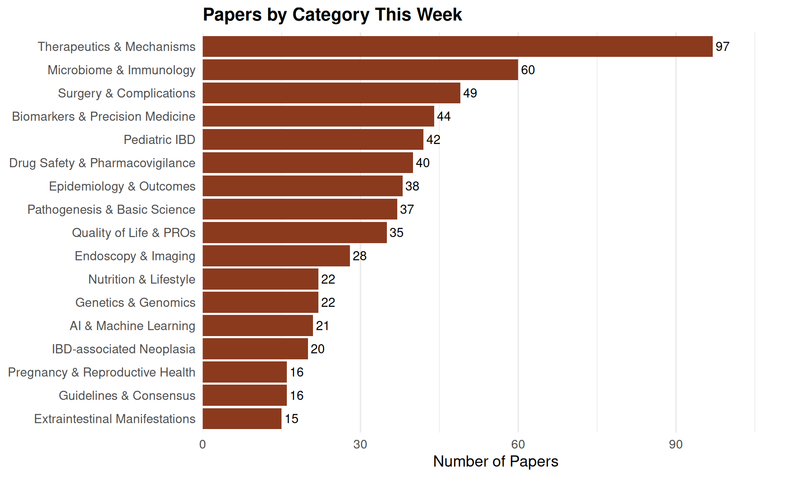

IBD Literature Report
Week of March 23, 2026
This Week’s Coverage
602
Total Papers
17
Categories
Papers by Category
Click a category to expand. Click a paper title to read its abstract.
Therapeutics & Mechanisms (97 papers)
Crohn`s disease, vedolizumab and autoinmmune hemolytic anemia: coincidence or causality? Revista espanola de enfermedades digestivas | 2026-03-18
Autoimmune hemolytic anemia (AIHA) is an autoimmune destruction of red blood cells, usually mediated by immunoglobulin G (IgG) and/or immunoglobulin M (IgM). We present the case of a 75-year-old woman diagnosed with Crohn’s disease (CD) who developed AIHA while receiving treatment with vedolizumab. We think that this report is important to add evidence of this possible association and most of all, underscores the importance of maintaining a high index of suspicion in patients with severe anemia and IBD undergoing treatment with novel therapies.
Alvarado Jara R, Pérez Calle JL, Igualada Escribano L, Ferrer JÁ, Quiñones Calvo M, González Ruiz R, López Serrano P
Recovery of response and long-term outcomes following loss of response and dose escalation of subcutaneous infliximab: a post hoc analysis of the LIBERTY-CD & LIBERTY-UC trials.★ Inflammatory bowel diseases | 2026-03-18
Rapidity of onset of efficacy following dose escalation of subcutaneous infliximab after loss of response remains unclear in Crohn’s disease (CD) and ulcerative colitis (UC). This post hoc analysis of the LIBERTY-CD and LIBERTY-UC trials evaluated time to response recovery following dose escalation of subcutaneous infliximab after loss of response, and characterized patients who experienced early recovery. This analysis included week 10 responders to intravenous infliximab induction who were randomized to receive subcutaneous infliximab 120 mg every other week (Q2W) and underwent dose escalation to 240 mg Q2W following loss of response. Time to response recovery was assessed, and outcomes pre-/post-dose escalation were analyzed by recovery timing (early [≤8 weeks], late [>8 weeks], non-recovery). Week 102 outcomes and factors associated with early recovery were evaluated. Response recovery was achieved in 85.1% (40/47) with CD and 82.3% (51/62) with UC, with early recovery in 66.0% (31/47) and 69.4% (43/62), respectively. Early recovery groups in CD and UC showed greater serum infliximab increases than late or non-recovery groups. At week 102, numerically higher rates of clinical response and clinical remission in CD, and endoscopic remission in UC, were observed in early versus late recovery group. Factors associated with early recovery differed between CD and UC: systemic inflammatory and pharmacokinetic parameters were linked to early recovery in CD, while mucosal and gut-specific factors predominated in UC. Dose escalation of subcutaneous infliximab led to rapid response recovery in most patients with CD and UC. Early recovery was associated with favorable long-term outcomes. NCT03945019 and NCT04205643. Dose escalation following loss of response to maintenance therapy with subcutaneous infliximab led to regaining response within 8 weeks in both Crohn’s disease and ulcerative colitis, with a positive association between earlier regaining and favorable long-term outcomes observed.
Dubinsky MC, Schreiber S, Yarur AJ, Sands BE, Hanauer SB, Danese S, Yu H, Kim DH, Lee YN, Colombel JF
The decline of 6-thioguanine nucleotides is not linked to impaired efficacy or safety of thiopurines in pregnant women with inflammatory bowel disease. British journal of clinical pharmacology | 2026-03-18
Thiopurines are used to maintain remission in inflammatory bowel disease (IBD). These drugs are metabolized into 6-thioguanine nucleotides (6-TGN), associated with efficacy, and 6-methylmercaptopurine ribonucleotides (6-MMPR), associated with adverse drug reactions. Pregnancy has been linked to a shift in thiopurine metabolism, characterized by reduced 6-TGN and increased 6-MMPR levels. The clinical impact of these changes remains unclear. To explore the association between changes in 6-TGN and 6-MMPR levels with disease activity and toxicity markers in women with IBD during pregnancy. This retrospective cohort study included pregnant women with IBD who used thiopurines from six Dutch hospitals (2017-2022). Linear mixed-effects models were used to model changes of 6-TGN and 6-MMPR before, during and after pregnancy, and to identify associations with markers of disease activity (faecal calprotectin) and toxicity (alanine aminotransferase [ALT], leukocytes, platelets). A total of 87 women with 100 pregnancies were included (64.4% Crohn’s disease, 32.2% ulcerative colitis). A significant reduction in 6-TGN was found in the second and third trimester, but no associations with changes in faecal calprotectin were detected. There were no significant increases in 6-MMPR. Increases in 6-MMPR were associated with modest elevations in ALT, but none of the other toxicity markers. Transient thrombocytopenia and leukopenia occurred thrice, and elevated liver enzymes were observed in nine pregnancies. Although 6-TGN levels decreased during pregnancy, these fluctuations were not associated with increased disease activity or toxicity. No significant increase in 6-MMPR levels was observed. Proactive monitoring may therefore not be warranted in the pregnant population.
Bouwknegt DG, Mian P, Groen F, van den Berg-Zuiddam D, van der Meulen AE, Crouwel F, de Boer NK, Deben DS, Wong DR, Derijks LJJ
Comparing the pharmacokinetics of adalimumab originator and biosimilar product in patients with Inflammatory bowel disease or autoimmune disease. Saudi pharmaceutical journal : SPJ : the official publication of the Saudi Pharmaceutical Society | 2026-03-17
Adalimumab is a monoclonal antibody approved for managing inflammatory bowel disease (IBD) and other autoimmune conditions. Biosimilars can offer a more affordable alternative to reference biologics and improve access to treatments. Despite their advantages, there are still concerns regarding physicians’ adoption of biosimilar products. This study aimed to compare the clearance of originator adalimumab with its biosimilar products in patients with inflammatory bowel disease and other autoimmune diseases. This multicenter retrospective study was conducted across seven hospitals in Saudi Arabia and Qatar. The study population included adult patients who received adalimumab and underwent routine therapeutic drug monitoring. Population pharmacokinetic analysis was performed using Monolix software, and the empirical Bayesian estimate of clearance was determined for individual patients. Stepwise linear regression was then conducted to assess the effects of product type and other covariates on adalimumab clearance. This study included a total of 99 patients. Patients received various adalimumab products, including the reference biologic (Humira, 70.7%) and biosimilars (Amgevita, 16.2%; Hyrimoz, 13.1%). The average estimated clearance was 0.018 ± 0.012 L/hr. The only significant covariates in the multivariable regression were age and the presence/absence of antibodies. There was no significant difference in clearance between the originator and biosimilar products. Our study compared the clearance of adalimumab originator and its biosimilars in patients with inflammatory bowel disease and other autoimmune disorders. No significant differences in clearance were observed, suggesting comparable clearance. The adoption of biosimilars in clinical practice could improve patient access to biologic therapies while substantially reducing healthcare costs.
Drweesh H, Alotaibi A, Alqassim HA, Eid MM, Emsaad SA, Saad MO, Higazy AS, Alturaiki A, Almutairi F, Alhussain A
Efficacy and Rapid Response of Ustekinumab for Hospitalized Patients With Severe Ulcerative Colitis.★ Inflammatory bowel diseases | 2026-03-16
Efficacy of ustekinumab for hospitalized patients with severe ulcerative colitis (UC) was investigated in this study. Ustekinumab may be an effective treatment option for acute severe UC because of efficacy and rapid therapeutic onset.
Tamura A, Fujii T, Fujiwara S, Maeyashiki C, Morikawa R, Kawamoto A, Hibiya S, Takenaka K, Shimizu H, Ohtsuka K
Impact of visceral adipose tissue and skeletal muscle on early and long-term biologic treatment failure in Crohn’s disease: A multicenter retrospective cohort study.★ Inflammatory bowel diseases | 2026-03-16
Crohn’s disease (CD) patients exhibit changed body composition, with elevated visceral adipose tissue (VAT) and reduced skeletal muscle (SM). This study aimed to investigate the impact of VAT and SM on the efficacy of CD biologics and develop a predictive model for loss of response. This was a multicenter retrospective cohort study. CD patients initially treated with infliximab and ustekinumab were enrolled between January 2018 and December 2023. The visceral fat index (VFI) and skeletal muscle index (SMI) were measured using computed tomography. Patients were divided into 3 groups based on tertiles of VFI (quartile 1 [Q1]: <0.575; Q2: 0.575-0.885; Q3: ≥0.885) and SMI (Q1: <36.4; Q2: 36.4-44.4; Q3: ≥44.4). The primary outcome was loss of response at 52 weeks and the secondary outcome was primary nonresponse after induction. A total of 248 patients were included. The lowest SMI group had higher rates of primary nonresponse (Q1 vs Q2 vs Q3: 15.7% vs 7.2% vs 3.7%; P = .021) and loss of response (Q1 vs Q2 vs Q3: 38.0% vs 17.1% vs 16.5%; P < .001). Higher VFI was linked with increased loss of response (Q1 vs Q2 vs Q3: 12.8% vs 17.1% vs 41.7%; P < .001) and lower mucosal healing rates (Q1 vs Q2 vs Q3: 63.9% vs 40.0% vs 26.9%; P < .001). Elevated VFI (male >0.887, female >0.679) and reduced SMI (male <40.2, female <31.0) were independent risk factors for 52-week loss of response. A predictive model combining body composition parameters and clinical data showed strong performance, with an externally validated area under the curve of area under the curve of 0.902 (95% confidence interval, 0.828-0.975). Elevated VAT and reduced SM were associated with loss of response in CD biologics. The predictive model integrating body composition parameters demonstrated good performance. This study found that high visceral adipose tissue and low skeletal muscle predict treatment failure to biologic therapies in Crohn’s disease, and established a corresponding predictive model.
Guo Q, Wang Q, Chen J, Lu M, Zhao X, Ma J, Jiao C, Tang N, Zhang H
Comparative Effectiveness of Upadacitinib Versus Ustekinumab in Ulcerative Colitis Patients With Prior Tumor Necrosis Factor Inhibitor Exposure: A matched Cohort Study. Journal of clinical gastroenterology | 2026-03-16
Upadacitinib, a selective janus kinase 1 (JAK1) inhibitor, and ustekinumab, an interleukin-12/23 inhibitor, are approved for the treatment of moderate-to-severe ulcerative colitis (UC). However, real-world data in patients with anti-tumor necrosis factor (TNF)-exposure are limited. We performed a retrospective cohort study in TriNetX US Collaborative Network. Adult patients with UC and prior anti-TNF exposure were identified. Patients who received upadacitinib or ustekinumab between April 2022 and August 2024 were stratified into two cohorts. Patients with Crohn’s disease, rheumatoid arthritis, psoriasis and ankylosing spondylitis were excluded. Propensity-score matching was performed to balance comorbidities, medications, and labs between the two cohorts. Study outcomes included rates of corticosteroid use, colectomies, change of therapy, hospital admissions or emergency department visit, and all-cause mortality. A total of 724 patients in the upadacitinib cohort and 909 in the ustekinumab cohort met the inclusion criteria. After matching, 633 patients remained in each cohort, with balanced baseline characteristics. At 1-year follow-up, the rates of corticosteroid use were 40.1% in the upadacitinib group and 48.5% in the ustekinumab group (aOR= 0.71, 95% CI: 0.69-0.89), mainly driven by differences in oral corticosteroid use (aOR= 0.73, 95% CI: 0.58-0.91). All other outcomes were comparable between the two study groups. In patients with ulcerative colitis and prior anti-TNF exposure , upadacitinib was associated with lower oral corticosteroid use than ustekinumab over 1 year, with no significant differences in rates of colectomy, ED visits or hospitalizations. These findings suggest a potanial higher effectiveness of upadacitinib compared with ustekinumab and may help inform treatment selection in this population.
Eldesouki MH, Elfert K, Alkasabrah O, Elsharkawy MM, Elzayat M, Mahmoud M, Tandon K, Hadam-Veverka J
Sex Differences in Treatment Expectations, Satisfaction and Tolerance After Switching to CT-P17, an Adalimumab Biosimilar: A Post Hoc Analysis of the YU-MATTER Study. Rheumatology and therapy | 2026-03-16
Data suggest that women and men differ in how they experience biological treatment. This post hoc analysis of the YU-MATTER study evaluated sex-related differences in patient satisfaction and perception when switching from adalimumab (reference or biosimilar) to CT-P17 (Yuflyma®; Celltrion, Inc.), a high-concentration, citrate-free adalimumab biosimilar. This analysis used data from the observational, multicentre, prospective YU-MATTER study. Patients had inflammatory bowel disease or chronic inflammatory rheumatic disease and switched from adalimumab (reference or low-concentration [< 50 mg/ml] biosimilar) to CT-P17. Patients completed online questionnaires monthly to month 3 (M3). The primary outcome was overall patient satisfaction (7-point Likert scale). Additional outcomes were expectations and perceptions of switching to CT-P17 (7- and 5-point Likert scale, respectively), beliefs about medicine (18-item Beliefs about Medicines Questionnaire), health literacy (16-item Health Literacy Survey Europe) and injection site reactions (pain and itching: 0-10 numerical rating scale; redness and haematoma: 4- and 3-point Likert scale, respectively). YU-MATTER enrolled 115 women and 117 men. More men than women reported satisfaction with CT-P17 treatment at M3 (82.1% vs 68.7%). Beliefs about medicines, health literacy, and patient expectations and perceptions of CT-P17 treatment did not differ significantly between sexes, although more women expected CT-P17 to be less painful (73.0% vs 59.0%; p = 0.077). At baseline, women reported significantly higher incidences of injection site redness (60.9% vs 48.7%) and haematoma (50.4% vs 26.5%) than men, with similar trends at M3 (40.0% vs 20.2% and 32.6% vs 8.5%, respectively), as well as significantly higher severity of injection site pain and itching. Both sexes reported fewer and less severe injection site reactions with CT-P17 at M3 compared with baseline adalimumab. Most expectations and perceptions of CT-P17 treatment were similar between sexes, but women experienced more injection site reactions. Further research is needed to understand why women experience a higher incidence of these reactions with adalimumab and its biosimilars. Clinicaltrials.gov identifier NCT05427942 (registered June 22, 2022). Biological drugs are often used to treat inflammatory diseases. Biosimilars (a very similar version of the original drug) have been created, which are often more affordable than the original biological drug. CT-P17 is a biosimilar of adalimumab, one of the most widely used biologicals for inflammatory bowel disease and chronic inflammatory rheumatic diseases. CT-P17 requires only a small volume to be injected and does not contain citrate, a chemical contained in some biological drugs that may cause injection site reactions. The YU-MATTER study was conducted in patients with inflammatory bowel disease or chronic inflammatory rheumatic diseases in France who were switching to CT-P17 from another adalimumab formulation. Patients completed online questionnaires about their perceptions and expectations of treatment. This analysis of YU-MATTER compared the responses of women and men. There were no significant differences between women and men regarding their expectations of switching to CT-P17 treatment, perceptions of the switching process, medication beliefs, health literacy or overall treatment satisfaction. However, women reported injection site reactions, such as redness and swelling, more often than men, and also had more pain and itching with both their previous adalimumab treatment and CT-P17. In both sexes, all reactions were less common and less severe with CT-P17 than with the previous adalimumab formulation. More research is needed to discover why women experience more injection site reactions than men.
Gossec L, Bouguen G, Dellal A, Foulley L, Habauzit C, Benkhalifa S, Marotte H
Safety and efficacy of weekly adalimumab 80 mg therapy in pediatric Crohn’s disease.Review Journal of pediatric gastroenterology and nutrition | 2026-03-15
Adalimumab is commonly used to induce and maintain remission in pediatric Crohn’s disease (CD). However, data on the efficacy and safety of high-dose adalimumab in this population are limited. This study aimed to evaluate the therapeutic effectiveness and safety of weekly high-dose adalimumab (80 mg) in pediatric CD patients. This multicenter retrospective study included pediatric patients with CD who received adalimumab 80 mg weekly for more than 30 days following suboptimal response to standard dosing between 2014 and 2023. Clinical and biochemical outcomes, treatment durability, and adverse events (AEs) were assessed at predefined time points. Regression analyses were used to explore predictors of sustained corticosteroid-free remission (SCFR) and clinical response. Thirty-eight patients (71% male; median age 16.3 years [interquartile range, IQR: 14.3-16.9]) underwent dose intensification. Ileocolonic CD was observed in 53%, and 29% had perianal disease. Clinical remission at 12 months was achieved in 50% of patients. Among the 27 patients (71%) with available adalimumab trough concentrations (ATC), 74% reached a therapeutic level (≥7.5 µg/mL) at 1 year. No significant predictors of SCFR or clinical response were identified. Early post-intensification drug levels predicted 12-month remission (AUC = 0.76), with an optimal threshold of 11.3 µg/mL (sensitivity 85%, specificity 67%). Treatment was de-escalated in 5% and discontinued in 26% due to primary nonresponse. AEs occurred in 13%, mainly mild dermatologic reactions. Weekly 80 mg adalimumab appears to be an effective and well-tolerated intensification strategy in pediatric CD patients with pharmacokinetic loss of response. Further prospective studies are needed to confirm these findings and guide optimal use.
Cohen-Sela E, Yerushalmy-Feler A, Rinawi F, Orlanski-Meyer E, Nassar R, Magen-Rimon R, Weintraub Y, Shamir R, Shouval DS, Matar M
6-mercaptopurine and tofacitinib alter microbial protein expression but not composition in fecal microbiota incubations from Crohn’s disease patients. BMC biology | 2026-03-14
Crohn’s disease (CD) is a chronic, relapsing-remitting gastrointestinal inflammatory condition with a multifactorial etiology. At present, drug therapy is the most important treatment option. However, a substantial number of CD patients experience side effects and/or nonresponse to medical drugs. In part, this might be attributed to the interaction of the intestinal microbiome with xenobiotics, such as medical drugs. The aim of this study was to explore the effect of the common CD drugs budesonide, 6-mercaptopurine (6-MP), as well as tofacitinib on the CD patient’s microbiome in vitro. We performed 16S rRNA gene-based bacterial community profiling and metaproteomic analyses on anaerobic ex vivo incubations of CD patient-derived fecal microbiota (FM) that were exposed to CD drugs or control conditions. Both bacterial community profiling and metaproteomics revealed larger differences in 24-h FM incubations between the five donor-derived FM samples than between the various drug incubations. Incubation of the FM of one of the donors with 6-MP or tofacitinib resulted in a significant alteration in the metaproteome when compared to the control condition, whereas no effect could be observed upon incubation with budesonide. Considering only bacterial proteins detected in at least 80% of either the drug or control FM incubations, 33 proteins were consistently more abundant and 93 less abundant in all five donor-derived samples with 6-MP incubation, distinguishing 6-MP from control conditions. In contrast to metaproteomic analyses, bacterial community profiling only detected a significantly lower relative abundance of Colidextribacter in 15 µg/ml tofacitinib FM incubations. No alterations were detected in overall bacterial richness, diversity, or community structure in response to incubation with any of the drugs. Tofacitinib and especially 6-MP significantly affect microbial function, but barely microbial composition in vitro. These drug-induced functional changes may subsequently influence host physiology and potentially inflammation in CD. Our findings emphasize the relevance to include functional microbial studies when investigating drug-microbiota interactions. Further research is needed to elucidate the impact of 6-MP-induced microbial alterations on intestinal physiology and inflammation in CD.
Becker HEF, Mohren R, Le NG, Derijks LJJ, Jonkers DMAE, Penders J
Letter to the editor: enhancing the robustness of early vs late switch to subcutaneous infliximab in inflammatory bowel disease (IBD): the value of propensity score analysis.Editorial★ Inflammatory bowel diseases | 2026-03-14
Response to Letter to the Editor: “Enhancing the robustness of early vs late switch to subcutaneous infliximab in inflammatory bowel disease (IBD): the value of propensity score analysis”.Editorial★ Inflammatory bowel diseases | 2026-03-14
Abstract not available.
Bertani L, Ribaldone DG, Bossa F, Guerra M, Annese M, Manta R, Armandi A, Caviglia GP, Todeschini A, Variola A
Dimethyl fumarate alleviated DSS-induced colitis by regulating Th17/Treg balance via suppressing JAK2/STAT3 and NF-κB signaling. Cellular signalling | 2026-03-14
Ulcerative colitis (UC) is a chronic inflammatory bowel disease characterized by immune dysregulation. Restoring Th17/Treg balance represents a promising therapeutic strategy for UC. Gut metabolism has been reported to critically regulates Th17 and Treg cell homeostasis. However, the role of fumarate in the pathogenesis of UC and the immunoregulatory effect of Dimethyl fumarate (DMF) in the treatment of UC remain unclear. Herein, results demonstrated decreased fumarate levels in colonic tissues of DSS-induced colitis mice, whereas DMF administration elevated colonic fumarate concentrations and relieved DSS-induced colitis by suppressing the inflammatory response and pro-inflammatory cytokines in vivo. Moreover, DMF treatment significantly decreased the frequency of Th17 cells, increased the frequency of Treg cells, thus improved Th17/Treg balance in vitro. Mechanistically, DMF significantly inhibited Th17 cell differentiation via interrupting JAK2/STAT3 and NF-κB signaling. Taken together, these results indicated that DMF alleviated DSS-induced UC by suppressing JAK2/STAT3 and NF-κB signaling to restore Th17/Treg balance. Furthermore, these findings preliminary demonstrate a role for fumarate in the pathogenesis of UC and suggest that DMF treatment leading to fumarate accumulation is a potential metabolic mechanism for colitis mitigation. Collectively, DMF-mediated immunometabolic reprogramming constitutes a novel strategy for UC immunotherapy.
Jin L, Guo F, Liang J, Dai A, Wang Y, Yang P, Du B, Wang X, Lin D, Xi X
First-Line Guselkumab Combined with Exclusive Enteral Nutrition in Biologic-Naïve Young‑Onset Crohn’s Disease: A Three-Case Series from China.Case report Journal of inflammation research | 2026-03-13
Guselkumab, a monoclonal antibody targeting the p19 subunit of interleukin‑23 (IL‑23), is a treatment option in inflammatory bowel disease (IBD). Evidence in young‑onset Crohn’s disease (CD) in the first‑line setting remains scarce. To describe short-term clinical, biochemical, endoscopic and imaging outcomes with first-line guselkumab combined with exclusive enteral nutrition (EEN) in biologic-naïve young adults with CD. We report a case series of three biologic‑naïve young adults with moderate‑to‑severe CD confirmed by clinical, endoscopic, and imaging criteria. All received guselkumab combined with exclusive enteral nutrition as initial therapy and were followed for up to 20 weeks. Outcomes were assessed across clinical, endoscopic, and cross‑sectional imaging (intestinal ultrasound, computed tomography enterography, or magnetic resonance enterography) domains. Safety was monitored throughout. All three patients achieved a clinical response and clinical remission by week 4. C‑reactive protein, fecal calprotectin, and bowel wall thickness decreased markedly after therapy. Computed tomography enterography and intestinal ultrasound suggested marked transmural improvement in all cases. Endoscopic assessment demonstrated endoscopic improvement or remission in all three patients. Diets were gradually liberalized in all patients. Guselkumab was generally well tolerated. Two patients exhibited mild, asymptomatic elevations of liver transaminases prior to the second or third dose, which were managed successfully with hepatoprotective therapy while continuing guselkumab. No serious adverse events occurred during follow‑up up to 20 weeks. In this three-case real-world series from China, first‑line guselkumab plus EEN was associated with rapid short-term improvement across clinical, biochemical, endoscopic and imaging domains and was generally well tolerated. These observations are preliminary and hypothesis-generating and require confirmation in larger prospective cohorts.
Sha S, Xu B, Qiao C, Wang K, Liu L, Wu J, Ma W, Shi A, Liu X
Short- and Long-Term Outcomes of Mirikizumab for Ulcerative Colitis: A Real-World Multicenter Retrospective Cohort Study from the INSIGHT study. Digestion | 2026-03-13
Mirikizumab (MIR), a selective IL-23p19 inhibitor, has shown efficacy in clinical trials for ulcerative colitis (UC). However, real-world data, especially on long-term outcomes and in treatment-experienced populations, remain limited. We conducted a multicenter retrospective cohort study involving 85 patients with moderate-to-severe UC who initiated MIR between July 2023 and December 2024 across 12 Japanese centers. Co-primary endpoints were clinical remission (Simple Clinical Colitis Activity Index [SCCAI] ≤2 and with no rectal bleeding) at weeks 12 and 52. Secondary outcomes included corticosteroid (CS)-free remission, CRP normalization, treatment persistence, and safety. Clinical remission was achieved in 62.4% at week 12 and 55.3% at week 52. CS-free remission rates were identical to overall remission at both time points. MIR maintained effectiveness regardless of prior exposure to biologics or JAK inhibitors. Early clinical response at week 4 independently predicted week 52 remission, while steroid dependence was a predictor at week 12. Among patients receiving extended induction, 27.3% of initial nonresponders achieved remission by week 24. Treatment was generally well tolerated, with 17.6% experiencing adverse events and 9.4% discontinuing due to these events. No serious infections or hospitalizations occurred. MIR demonstrated durable effectiveness and a favorable safety profile over 52 weeks in a real-world UC population, including those with prior treatment failures. These findings support MIR as a viable long-term therapeutic option in routine clinical practice.
Sawada T, Yamamura T, Maeda K, Ishikawa E, Murate K, Miyake N, Matsuura R, Fujiyoshi T, Uchida G, Suzuki H
Real-world clinical, safety, and economic evaluation of infliximab biosimilar adoption for crohn’s disease. Journal of medical economics | 2026-03-11
Biosimilar infliximab (B-IFX) offers a lower-cost alternative to originator infliximab (O-IFX) for treating Crohn’s disease (CD), but real-world data on comparative effectiveness and economic impact in China remain limited. This study assessed clinical outcomes and economic consequences of B-IFX versus O-IFX from a healthcare payer perspective. This retrospective cohort study evaluated 473 adult CD patients initiating O-IFX (n = 345) or B-IFX (n = 128) at a tertiary care center for Chron’s disease in China between October 2021 and February 2024. The clinical endpoints over 12 months included treatment failure, clinical remission, endoscopic response, and adverse events. A budget impact analysis evaluated direct healthcare costs (Chinese Yuan, CNY) and projected medical insurance fund expenditures under a reference scenario (continued O-IFX use) and a base-case scenario with increased B-IFX uptake for 2025-2027. One-way sensitivity analyses assessed model robustness. Rates of treatment failure, clinical remission, endoscopic response, and adverse events were comparable between O-IFX and B-IFX. Relative to the reference scenario, increased B-IFX adoption was associated with lower annual direct medical costs and reduced insurance fund expenditures, yielding estimated savings of 0.60, 1.09, and 1.75 million CNY in 2025-2027, respectively (cumulative savings: 3.44 million CNY). Sensitivity analyses identified the unit price of O-IFX as the main cost driver; B-IFX remained cost saving across all parameter ranges, with cumulative 3-year savings ranging from 2.49 to 4.39 million CNY. B-IFX demonstrated comparable real-world effectiveness and safety to O-IFX while generating substantial cost savings for China’s medical insurance system. These findings support broader biosimilar adoption as a value-based strategy to enhance the affordability and sustainability of biologic therapy for CD.
Shi J, Pan Y, Cao Q, Shi L
Improving quality in IBD - evaluation of corticosteroid excess prescription trends and its predictive role in disease-related outcomes. Gastroenterologia y hepatologia | 2026-03-11
Corticosteroids (CS) are effective in the induction of remission in inflammatory bowel disease (IBD), but have an unfavorable side effect profile. A CS sparing strategy is frequently recommended, but its consequences in IBD outcomes have been scarcely studied. Our primary aim was to evaluate current CS use and excess in IBD patients, comparing them with a historic cohort. Our secondary aims were to identify predictors of CS excess and compare outcomes (surgery, hospitalization, new CS cycle, structural damage and a composite outcome) at 12 months between three prescription groups (no CS use, standard CS use, and excess CS use). A retrospective study, including adult IBD outpatients from two trimesters (one in 2014 and one in 2023). CS prescription trends were compared between groups. The latter was used to identify predictors of CS excess and compare outcomes between prescription groups. A total of 1131 outpatients with IBD were included, 374 in 2014 and 757 in 2023. CS use was 3.2 times lower in 2023 (6.5% vs 20.6%, p<0.001), and CS excess was 5.5 times lower (12.0% vs. 2.2%, p<0.001). Crohn’s disease, extraintestinal manifestations, absence of medication, clinical activity and hospitalization in the previous 12 months were independent predictors of CS excess. CS excess prescription was an independent predictor of hospitalization (HR 15.225, IC 95% 2.189 - 105.913, p = 0.006), new CS cycle (HR 38.392, IC 95% 13.866 - 106.299, p < 0.001) and the composite outcome (HR 32.253, IC 95% 13.260 - 78.452, p < 0.001) at 12 months. CS prescription rate has significantly decreased in our center. CS excess was associated with negative outcomes, namely hospitalization and new CS cycles. Improving quality-of-care in IBD should focus on avoiding excess CS prescription.
Damasceno J, Carvalho T, Arroja B, Soares J, Mendes S, Gonçalves B, Rebelo A, Gonçalves R, Leal T
Natural triterpenoid Ardisiacrispin B attenuates colitis-associated cancer via JAK2/STAT3 pathway and gut microbiota modulation. Natural products and bioprospecting | 2026-03-11
Colitis-associated cancer (CAC) arises from persistent intestinal inflammation, immune dysregulation, and microbiota-driven epithelial injury, representing a major link between inflammatory bowel disease and colorectal malignancy. Despite advances in therapy, colon cancer remains one of the leading causes of cancer-related mortality worldwide, underscoring the urgent need for effective preventive and immunomodulatory interventions. Ardisiacrispin B (AB), a bioactive triterpenoid isolated from the Ardisia genus, has been reported to suppress tumor growth by regulating apoptosis and ferroptosis; however, its role in inflammation-driven colorectal tumorigenesis remains unexplored. In this study, we investigated the protective and antitumor effects of AB in an azoxymethane/dextran sodium sulfate (AOM/DSS)-induced CAC mouse model, with a focus on inflammatory signaling pathways, epithelial remodeling, and gut microbiota modulation. AB administration markedly alleviated disease severity, as evidenced by a significant reduction in disease activity index, including body weight loss, diarrhea, and rectal bleeding. Histopathological evaluation revealed preserved colonic mucosal architecture, diminished inflammatory cell infiltration, and a pronounced reduction in tumor number and size. AB treatment partially modulated the gut microbiota, with a trend toward enrichment of beneficial taxa and a reduction in inflammation-associated bacterial populations. Concurrently, AB robustly downregulated the colonic expression of pro-inflammatory cytokines and chemokines. AB treatment was associated with increased expression of pro-apoptotic markers, indicative of enhanced apoptotic signaling in colonic epithelial cells, as indicated by increased expression of cleaved PARP, cleaved caspase-3, p53, and BAX, while markedly inhibiting cellular proliferation through suppression of Ki-67. Mechanistically, AB was associated with attenuation of key inflammatory and oncogenic signaling pathways, including IL-6/JAK2/STAT3, LPS/TLR4/MyD88/NF-κB, and MAPK cascades. Collectively, Ardisiacrispin B attenuates colitis-associated cancer by rebalancing gut microbiota, suppressing inflammation, and inducing tumor cell apoptosis through inhibition of key oncogenic signaling pathways.
Ullah H, Cui H, Li Y, Ye B, Peng W, Ruan Y, Dai W, Ma C, Hu X
Cost-Effectiveness Analysis of Sequential Treatment Strategies for Moderate to Severe Crohn’s Disease in Spain: Where Should Biosimilar Ustekinumab Be Positioned? PharmacoEconomics - open | 2026-03-09
Crohn’s disease is associated with a high economic burden for the Spanish National Healthcare System, driven by pharmacological expenses. Following the recent incorporation of ustekinumab biosimilars into the market, this study aimed to evaluate the cost effectiveness of different treatment sequences, including biosimilar ustekinumab (bsUST), for moderate-to-severe Crohn’s disease from the NHS perspective in Spain. Treatment sequences were defined according to clinical practice. A Markov model with 2-week cycles and a lifetime horizon was developed, including health states such as active disease, response, remission, surgery, and death. Funnel states simulated induction and treatment changes after loss of response, and surgery was considered only after four pharmacological lines. Efficacy data for biosimilar adalimumab (bsADA), biosimilar intravenous infliximab (bsIFX), biosimilar ustekinumab (bsUST) risankizumab (RIS), upadacitinib (UPA), vedolizumab (VDZ), and surgery (Q) were obtained through published literature, including network meta-analyses and clinical trials. Unitary costs were sourced from Spanish databases and literature. Pharmacological costs were ex-factory prices applying Royal Decree-Law (RDL) 8/2010 discount. For bsADA and bsIFX, average biosimilar market prices were used. A 30% discount was assumed for bsUST versus reference ustekinumab. Sequence 1 (bsADA-bsUST-UPA-RIS-Q) was set as the reference. Alternative strategies provided QALY gains ranging from 0.06 to 0.34 compared with the reference. However, due to varying incremental costs, Sequence 2 (bsUST, bsADA, UPA, RIS, Q) emerged as the only cost-effective strategy at a willingness-to-pay threshold of €27,000/QALY, with an incremental cost-effectiveness ratio (ICER) of €8672.6/QALY. Conversely, all other sequences exceeded the threshold, with ICERs starting at €42,594/QALY. Probabilistic sensitivity analysis confirmed the robustness of these findings, identifying Sequence 2 as the cost-effective option in 98.03% of simulations. Positioning bsUST as a first line of treatment appears to be cost effective and an efficient alternative from the NHS perspective in Spain. Additionally, none of the alternative sequences proved to be cost effective compared with the sequence starting with bsADA-bsUST. bsUST may significantly impact Crohn’s disease management in Spain, improving patient access due to its lower drug acquisition costs.
Rodríguez-Lago I, Peinado-Fabregat JI, Guigini M, Cerezales M, Ibáñez F, Crespo C, Barreiro-de Acosta
Single-cell and RNA sequencing identify mechanisms of primary non-response and efficacy biomarkers for vedolizumab-treated ulcerative colitis. Chinese medical journal | 2026-03-09
Abstract not available.
Zhang F, Song H, Liang H, Bai X, Zhu R, Wen Y, Sun Y, Miao Y, Niu J
Pathogenic Th17 cells orchestrate mucosal inflammation and drive secondary loss of response to infliximab in inflammatory bowel disease: clinical and mechanistic evidence. International immunopharmacology | 2026-03-09
Infliximab (IFX) has revolutionized inflammatory bowel disease (IBD) treatment, yet secondary loss of response (LOR) remains a prevalent and mechanistically unresolved challenge. This study elucidates the pivotal role of pathogenic Th17 (pTh17) cells in this process. We conducted a retrospective longitudinal analysis of 62 IFX-treated IBD patients with a minimum follow-up of three years, supplemented by an independent cross-sectional immune profiling cohort including healthy controls, IFX responders, and secondary LOR patients. Peripheral blood and colonic mucosal tissues were collected and analyzed using a multi-platform approach encompassing flow cytometry for immune cell subsetting, multiplex immuno fluorescence for spatial phenotyping, immunohistochemistry for protein localization, and Western blotting for signaling pathway assessment. Our results demonstrated that patients with secondary LOR exhibited a distinct immunological signature: significantly elevated serum levels of IL-17A and IFN-γ, alongside a marked expansion of IL-17A+IFN-γ+CD4+ T cells in both peripheral blood and the inflamed intestinal mucosa. The frequency of these circulating pTh17 cells correlated strongly with intestinal inflammation (fecal calprotectin, r = 0.730) and systemic inflammatory activity (ESR, r = 0.606). Within the mucosa, the pTh17 cell defining transcription factor RORγT was strikingly overexpressed in LOR patients. This mucosal RORγT expression not only correlated closely with clinical disease activity scores (Mayo and CDAI) but also served as a powerful discriminator of secondary LOR from sustained response, with an area under the curve (AUC) of 0.83. Critically, high RORγT expression emerged as an independent predictor of clinical relapse (adjusted HR = 4.900). Mechanistically, we identified hyperactivation of the JNK pathway in mucosal lymphocytes from LOR patients as a key driver, with in vitro JNK inhibition effectively curtailing pTh17 cell differentiation. In conclusion, our work proposes that pTh17 cell-driven mucosal inflammation, potentially sustained via JNK signaling, contributes to secondary IFX resistance. These findings support the potential of mucosal RORγT as a candidate predictive biomarker and highlight the JNK pathway for further investigation as a potential therapeutic target for overcoming treatment failure in IBD.
Li G, Lin Z, Cao H, Hong J
Optimal Corticosteroid Therapy Based on Liver Biopsy for Severe Immune-Mediated Hepatitis During Pembrolizumab Treatment: A Case Report.Case report Cureus | 2026-03-09
Immune checkpoint inhibitors (ICIs), including pembrolizumab, are widely used to treat advanced non-small cell lung cancer; however, they are associated with immune-related adverse events, including immune-mediated hepatitis. Although systemic corticosteroids are recommended as first-line therapy for severe immune-mediated hepatitis, the optimal initial dose remains unclear, and current guidelines specify a wide range of doses. Herein, we report the case of a 76-year-old man with lung adenocarcinoma, a history of resolved hepatitis B virus infection, ulcerative colitis in long-term remission, and latent hereditary spherocytosis who developed grade 3 immune-mediated hepatitis during pembrolizumab monotherapy. Liver biopsy revealed moderate lobular necroinflammation consistent with immune-mediated hepatitis. Based on these histopathological findings, prednisolone at 0.3 mg/kg/day was initiated. Liver enzyme levels improved rapidly, and pembrolizumab was subsequently resumed without recurrence of immune-mediated hepatitis. This case highlights the diagnostic and therapeutic value of liver biopsy in patients with severe immune-mediated hepatitis. Histopathological assessment of inflammatory severity and bile duct involvement may contribute to individualized corticosteroid dosing, promote early recovery, and support safe ICI rechallenge.
Esaki K, Horikoshi H, Awashima M, Nakayama S, Kichikawa Y
A Pilot Study of the Effectiveness and Safety of Subcutaneous Infliximab in Chronic Inflammatory Pouch Conditions: The St. Mark’s Experience. Journal of clinical medicine | 2026-03-08
Background/Objectives: Infliximab (IFX) is commonly used in chronic inflammatory conditions of the ileo-anal pouch. A subcutaneous (SC) formulation has been developed, with studies in inflammatory bowel disease (IBD) patients showing that switching from intravenous (IV) to SC IFX is safe with a low risk of relapse. However, so far, it has not been specifically investigated in chronic inflammatory pouch conditions. The aim of our study was to evaluate the effectiveness and safety of SC IFX in patients with chronic inflammatory pouch conditions. Methods: This was an observational retrospective study. We included patients with chronic inflammatory pouch conditions, initially treated with IV IFX and subsequently switched to SC IFX, who had a follow-up of at least 1 year. The primary outcome was SC IFX treatment persistence, defined as continuation of SC IFX throughout the study period. The secondary outcome was pouch failure, defined by the need for a defunctioning ileostomy or pouch excision. Results: A total of seven patients were included. The mean age was 50.6 years. The average follow-up length was 101.3 months (range 70.4-132.6 months). All seven patients continued SC IFX throughout the study period. No patient experienced pouch failure. The median IFX serum concentration was 18.1 mg/L. There were no cases of serious infections or malignancy. Conclusions: Switching clinically stable patients with chronic inflammatory pouch conditions from IV to SC IFX formulation appears feasible. These findings warrant confirmation in larger patient cohorts.
Ghersin I, Argyriou O, Sahnan K, Warusavitarne J, Hart AL
Histopathological predictor of response to mirikizumab in active ulcerative colitis. Clinical journal of gastroenterology | 2026-03-06
This case series reports three patients with active ulcerative colitis (UC) successfully treated with mirikizumab, a selective IL-23p19 monoclonal antibody. Mirikizumab was initiated based on both clinical presentation and a histopathological marker-high neutrophilic infiltration of the colonic epithelium classified as Geboes Grade 3.2-which reflects an IL-23/Th17-driven inflammatory phenotype. The cases included: an elderly man with acute severe pancolitis and primary nonresponse to infliximab; a middle-aged woman with steroid-dependent left-sided UC and inadequate response to adalimumab and ustekinumab; and a young biologic-naïve woman with steroid-refractory UC and bowel urgency. All three patients demonstrated high epithelial neutrophilic infiltration (Geboes Grade 3.2). These cases demonstrate the potential utility of histology-guided biologic selection and support Geboes Grade 3.2 as a candidate predictive biomarker for IL-23 inhibitor response in UC.
Horiuchi I, Horiuchi A, Horiuchi K
Etrasimod Treatment Modulates Circulating and Lymph Node-Derived Lymphocytes in Crohn’s Disease.RCT International journal of molecular sciences | 2026-03-06
Etrasimod is an oral selective sphingosine-1 phosphate receptor modulator, and its anti-inflammatory mechanism of action in inflammatory bowel diseases is not completely understood. It targets pro-inflammatory immune cells expressing sphingosine-1-phosphate receptors during their migration from the lymphatic system to the circulation and intestinal mucosa. Reductions in certain lymphocyte subsets in the peripheral blood have been reported, but its effects in lymph nodes remain unknown. This study investigated changes in leukocyte subpopulations in peripheral lymph nodes and blood in Crohn’s disease patients treated with etrasimod. Moderate-to-severe Crohn’s disease patients participated in this randomized, double-blind study, within the phase 2 CULTIVATE clinical trial. At baseline and after 14 weeks of etrasimod treatment, peripheral blood and inguinal lymph node biopsies were obtained. Isolated peripheral blood mononuclear cells and lymph node leukocyte populations were analyzed at single cell level using mass cytometry at both timepoints. The immunophenotyping revealed 15 innate and adaptive major immune cell populations, as well as 14 subpopulations of CD4+ and CD8+ T-cells. In peripheral lymph nodes, etrasimod resulted in significant accumulation of naïve, central memory, and effector memory CD4+ T-cells (+10.7%, +4.2%, and +2.3%, respectively; all p = 0.03), as well as naïve CD8+ T-cells (+4.2%; p = 0.03). Conversely, these subsets were reduced in peripheral blood (-6.2%, -6.0%, -2.0%, and -2.2%, respectively; all p = 0.03). Naïve and memory B-cells decreased in the circulation (-1.7%, p = 0.057; -0.6%, p = 0.03, respectively) but were unchanged in the lymph nodes. Innate immune cell populations remained mostly unaffected in both compartments. Our data indicate that etrasimod’s pharmacodynamic effect is related primarily with the attenuation of the T-cell mediated inflammation with minor changes in B-cells. However, additional follow-up studies are needed for the validation of these observations in the context of Crohn’s disease.
Nikolakis D, Pruijt MJ, Verhoeff J, de Voogd FAE, Teichert C, Ryan RD, Branquinho D, Crosby C, van de Sande MGH, Grootjans J
Mirikizumab Long-Term Efficacy and Safety in Patients with Crohn’s disease: Results from the VIVID-2 Open-Label Extension Trial. Clinical gastroenterology and hepatology : the official clinical practice journal of the American Gastroenterological Association | 2026-03-05
Mirikizumab, an anti-IL-23p19 monoclonal antibody, demonstrated efficacy and safety in patients with moderately to severely active Crohn’s disease (CD) up to week (W)52 in VIVID-1. We present the first results from the VIVID-2 open-label extension study in patients who received mirikizumab for two years. Of the patients randomized to mirikizumab in VIVID-1 who rolled over to VIVID-2, 465 were included in the safety population for this interim analysis, and 430 met the eligibility criteria for the efficacy population. Of those, 251 were endoscopic responders at W52 of VIVID-1 (300mg subcutaneous dosing every 4 weeks) and 179 were endoscopic non-responders at W52 of VIVID-1 (reinduced with 900mg intravenously at W0, W4, W8, followed by subcutaneous dosing). Missing data were handled using modified non-responder imputation (mNRI) and observed case (OC) approaches. In the efficacy population, 60.5%(mNRI)/67.1%(OC) achieved endoscopic response, 37.9%/41.7% achieved endoscopic remission, and 73.4%/80.9% achieved Crohn’s Disease Activity Index (CDAI) remission at W104. Among W52 endoscopic responders who achieved the specified endpoint at W52, 81.8%/87.6% maintained endoscopic response, 72.5%/78.6% maintained endoscopic remission, and 86.9%/92.9% maintained CDAI remission at W104. Among W52 endoscopic responders who did not achieve the specified endpoint at W52,33.3%/35.4% gained endoscopic remission, and 55.8%/60.8% gained CDAI remission at W104. Among W52 endoscopic non-responders, 30.9%/36.1% achieved endoscopic response at W104. During the second year of mirikizumab treatment, 64.7% of patients experienced treatment-emergent AEs, and 7.7% had serious AEs. Long-term treatment with mirikizumab for up to 104 weeks was associated with durable improvements in patients with CD. Over 30% of endoscopic non-responders at 1 year achieved endoscopic response with mirikizumab reinduction. Safety was consistent with the known mirikizumab safety profile. gov ID no: NCT04232553.
Sands BE, Barnes EL, D’Haens G, Hisamatsu T, Regueiro M, Kelly CR, Laharie D, Hozak RR, Yu G, Gandhi R A
Factors Influencing Clinical and Radiological Response in Perianal Disease: Results from a Real-World Cohort Treated with Anti-TNF Therapy. Journal of clinical medicine | 2026-03-05
Background: Perianal Crohn’s disease (PD) remains a major therapeutic challenge, with heterogeneous responses to anti-TNF therapy and limited real-world data on predictors of long-term outcomes. This study aimed to evaluate clinical and radiological response to anti-TNF therapy initiated exclusively for PD and to identify factors associated with treatment response. Methods: A retrospective study was conducted in a cohort of 65 patients with PD treated with anti-TNF. The primary endpoint was clinical response assessed at weeks 24, 52, and 60 months. It was defined as a ≥50% reduction in drainage, and remission as complete absence of drainage. Radiological response was assessed by magnetic resonance imaging at the same time points whenever feasible. Multivariate logistic regression analyses were performed to identify independent predictors of response. Results: At week 24, 84.6% of patients achieved a clinical response, while radiological response was observed in 30.8%. At week 52, clinical and radiological response rates were 80.0% and 52.3%, respectively. At 60 months, 61.5% maintained clinical response and 46.1% radiological response. Among patients who responded at week 24, 90.7% maintained response at week 52, with a secondary loss of response rate of 9.3%. Multivariate analysis identified absence of antineutrophil cytoplasmic antibodies (ANCA) as an independent predictor of clinical response at week 52 (OR 0.06, 95% CI 0.006-0.59; p = 0.01). No significant associations were observed between anti-TNF serum levels and clinical or radiological outcomes. Conclusions: In this real-world cohort of patients initiating anti-TNF exclusively for PD, early response (week 24) emerged as a potential marker of long-term outcomes, highlighting the importance of early reassessment and individualized therapeutic strategies.
Amiama Roig C, Suárez-Ferrer C, Rueda García JL, García Ramírez L, Sánchez Azofra M, Martín-Arranz E, Poza Cordón J, Noci J, Amor Costa C, González Díaz I
Colonic biopsy-associated microbial signatures are predictive of response to anti-TNFα biological therapy in Crohn’s disease. Frontiers in cellular and infection microbiology | 2026-03-04
Crohn’s disease (CD) is commonly treated with biologic therapies, including anti-TNFα agents, vedolizumab (VDZ), and ustekinumab (USTE), yet only a subset of patients respond to these treatments. This study aimed to evaluate the potential of the gut microbiome to predict treatment response. Adult CD patients initiating anti-TNFα (infliximab or adalimumab), VDZ or USTE were enrolled. Pre-treatment ileal and/or colonic biopsies were collected endoscopically. Treatment response after 26-52 weeks was defined by ≥50% reduction in the simple endoscopic score for CD and either a corticosteroid-free clinical response (≥3-point HBI decrease or remission [HBI ≤4] without systemic steroids) or a biochemical response (≥50% or ≤5 mg/L CRP reduction and ≥50% or ≤250 μg/g faecal calprotectin reduction) versus baseline. Mucosal microbiota was profiled by 16S rRNA gene sequencing of biopsies. Machine learning models predicting treatment response were trained using ASV-level count data. The impact of heat-killed bacteria on anti-TNFα-induced CD14+CD206+ macrophages was tested in mixed lymphocyte reactions (MLRs). A total of 125 patients were included: 39 on anti-TNFα, 47 on VDZ, and 39 on USTE. Clinical features were similar between responders and non-responders, aside from sex (USTE-colon) and CRP (USTE-ileum). No major microbial differences were observed in VDZ, USTE ileal or colon samples. However, in colonic biopsies, anti-TNFα responders had significantly higher pre-treatment α-diversity, and 3.9% of β-diversity variation associated with response. Among six models, the anti-TNFα colonic model performed significantly better than random (AUC = 0.90) to predict response. Mediterraneibacter gnavus ASVs associated with non-response, whereas Blautia ASVs associated with response, to anti-TNFα. When tested in MLRs, pretreatment with M. gnavus and B. luti led to a reduction in macrophage polarization, with a significantly stronger effect observed for M. gnavus compared with B. luti. Taken together, this study demonstrates that the colonic mucosal microbiome prior to anti-TNFα treatment can distinguish responders from non-responders in CD, supporting its potential as a predictive biomarker.
Zafeiropoulou K, Hageman IL, Mu T, Davids M, Li Yim AYF, Joustra VW, Hakvoort TBM, Satsangi J, Chronas K, Koelink PJ
Impact of filgotinib on health-related quality of life over 3 years in Japanese patients with ulcerative colitis: a post hoc analysis of the SELECTION and SELECTION long-term extension trials. Intestinal research | 2026-03-04
This post hoc analysis of the phase 2b/3 SELECTION (NCT02914522) study and its long-term extension (SELECTIONLTE; NCT02914535) evaluated the impact of filgotinib 200 mg (FIL200) on health-related quality of life (HRQoL) and work productivity in Japanese patients with ulcerative colitis over 3 years. Patients in SELECTION were randomized to FIL200, filgotinib 100 mg, or placebo (PBO) during the induction phase. Week-10 responders were re-randomized to continue assigned treatment or PBO in the 47-week maintenance phase. Patients who completed the SELECTION induction and maintenance phases (completers) and week-10 non-responders could enter SELECTIONLTE. HRQoL and work productivity were assessed using EQ 5-dimension (EQ-5D), EQ visual analog scale, Inflammatory Bowel Disease Questionnaire (IBDQ), 36-item Short Form Health Survey (SF-36), and Work Productivity and Activity Impairment (WPAI) questionnaires at week 10 (FIL200 vs. PBO), and at week 10 and years 1-3 (completers and non-responders who received only FIL200 in SELECTION+SELECTIONLTE). Proportions of patients with minimal clinically important differences (MCIDs) at week 10 were higher with FIL200 versus PBO for IBDQ total score (77% vs. 54%), SF-36 mental component summary (58% vs. 21%), and SF-36 physical component summary (54% vs. 36%). All measures (except WPAI absenteeism) showed mean score changes from baseline at week 10 in the direction of improved HRQoL with FIL200 versus PBO. MCID rates were maintained in completers up to 3 years and increased notably in non-responders (except WPAI absenteeism and EQ-5D) from week 10 to years 1-3. FIL200 treatment was associated with sustained improvements in HRQoL and work productivity over 3 years in Japanese patients with ulcerative colitis, consistent with the overall SELECTION and SELECTIONLTE trial populations.
Matsuoka K, Schreiber S, Hata E, Kaise T, Hibi T
Cyclosporine A ameliorates ulcerative colitis by inhibiting cellular senescence, modulating the JAK2-STAT3/NF-κB signaling pathway, and regulating the gut microbiota-metabolite axis. International immunopharmacology | 2026-03-04
Ulcerative colitis (UC) is a chronic, relapsing inflammatory bowel disease characterized by immune dysregulation, compromised intestinal barrier integrity, and disruptions in the microbiota-metabolite axis. Current clinical management of UC remains limited, underscoring the need for novel therapeutic approaches. Cellular senescence is increasingly recognized as a significant contributor to the pathogenesis of this disease. Senescent cells promote inflammatory responses via the sustained release of pro-inflammatory mediators such as IL-6, IL-1β, and TNF-α. Conversely, persistent inflammation drives further cellular senescence, establishing a self-amplifying cycle that exacerbates disease progression. Additionally, gut microbiota dysbiosis (reduced Akkermansia abundance) and metabolic abnormalities (disrupted bile acid metabolism) may further compromise intestinal barrier integrity. Cyclosporine A (CsA), a classical immunosuppressant, has unclear mechanisms in UC, particularly regarding its potential effects on senescence and the microbiota-metabolite axis. In this investigation, using a dextran sulfate sodium (DSS)-induced UC model, we demonstrated that CsA significantly alleviated DSS-induced acute colitis in mice and senescence-associated pathological changes. Multi-omics analyses integrating network pharmacology, transcriptomics, metabolomics, and metagenomics demonstrated that CsA likely exerts its therapeutic effects through inhibition of the JAK2-STAT3/NF-κB signaling pathway. This leads to reduced release of pro-inflammatory cytokines, modulation of intestinal microbiota composition and metabolite profiles, and enhanced intestinal barrier function.These findings elucidate new mechanisms by which CsA improves DSS-induced colitis in mice through anti-senescence effects and microbiota-metabolic regulation, providing potential therapeutic targets for UC.
Zhao B, Xu Y, Li F, Song S, Liu Z, Liu J, Liu Z, Chen X, Zhou M, Zhao L
Upadacitinib in refractory ulcerative colitis patients with high thromboembolic risk: two case reports.Case report Frontiers in immunology | 2026-03-03
Upadacitinib is a novel selective Janus kinase (JAK) inhibitor approved for adults with ulcerative colitis (UC). While caution is advised when considering upadacitinib as a treatment option for patients with an increased risk of thrombosis. The current case report describes two UC patients with high thromboembolic risk successfully treated with upadacitinib and rivaroxaban. The two patients reported increased stool frequency, decreased stool consistency, abdominal pain and hematochezia, both of whom had experienced mesalazine, corticosteroids, vedolizumab and infliximab, all failed to induce clinical remission. The male patient had a history of deep vein thrombosis (DVT) in his left lower limb, and the female patient had thrombophlebitis in a branch of the cephalic vein on the left forearm. After multidisciplinary conference and thorough informed consent, upadacitinib and rivaroxaban were applied. Two months after the initiation of treatment, the patients’ symptoms and endoscopic findings improved significantly. No thromboembolic events or other adverse effects have been observed to date. Our case report suggests that concurrent use of anticoagulation with upadacitinib may represent a safe and valuable strategy for treating refractory UC with high thromboembolic risk.
Mo R, Yu S, Xu H, Hao J
Acquired Immunodeficiency in Newborn Following Intrauterine Exposure to Thiopurines for Treatment of Inflammatory Bowel Disease.Case report ACG case reports journal | 2026-03-03
Thiopurine-based therapy is a common immunosuppressive treatment of inflammatory bowel diseases. It inhibits purine synthesis, and its metabolism is influenced by genetic variation. Thiopurines, azathioprine and 6-mercaptopurine (6-MP), have not been identified as teratogenic in humans and are considered safe to use during pregnancy. Here, we present 3 infants who developed severe lymphopenia secondary to prenatal exposure. Clinicians should be aware of this uncommon but potentially severe side effects.
Morand S, Lam MT, Amornsawadwattana S, Gutierrez A, Nguyen AA, Prockop S, Ruggiero J, Kitcharoensakkul M
Mirikizumab four-year sustained and durable efficacy and safety in ulcerative colitis: Final findings from the LUCENT-3 open-label extension study.★ Inflammatory bowel diseases | 2026-03-02
Mirikizumab, an anti-interleukin-23 monoclonal antibody targeting the p19 subunit, has shown efficacy in inducing and maintaining clinical remission in patients with moderately-to-severely active ulcerative colitis (UC). This report summarizes the final long-term outcomes from the LUCENT-3 open-label extension (OLE) through week (W)212 of continuous treatment. Among 868 participants who received mirikizumab induction therapy in the LUCENT clinical trial program, 544 achieved clinical response. Of these, 365 were rerandomized to mirikizumab maintenance, with 324 completing W52, 316 entering the OLE, and 182 completing the OLE (4 years of continuous treatment), resulting in 835.3 total patient years of exposure. These analyses include efficacy and safety data from the LUCENT-3 cohort, stratified by LUCENT-1 baseline biologic experience, W52 remitter, and W52 responder status on entering the OLE study. Outcomes were analyzed using modified nonresponder imputation, traditional nonresponder imputation, and observed cases (OC) to handle missing data. At W212, W52 Maintenance Remitters showed 77.7% clinical, 77.7% corticosteroid-free (CSF), 81.3% endoscopic, 66.0% histologic-endoscopic mucosal (HEMR), 94.3% symptomatic, and 73.6% bowel urgency (BU) remission rates (OC); 67.9% achieved histologic-endoscopic mucosal improvement (HEMI), 97.1% sustained clinical response, and 92.9% achieved BU clinically meaningful improvement (CMI). At W212, W52 Maintenance Responders showed 68.7% clinical, 68.7% CSF, 70.2% endoscopic, 55.1% HEMR, 92.7% symptomatic, and 74.8% BU remission rates (OC). For W52 Maintenance Completers, reductions in stool frequency, rectal bleeding, bowel urgency, and abdominal pain from baseline were sustained to W212. W52 Maintenance Remitters and Responders achieved Inflammatory Bowel Disease Questionnaire (IBDQ; quality of life measure) response (70%) and remission (>66%) at W212. Across biologic failed and bionaive subgroups, efficacy results were generally similar. For over 160 weeks of OLE treatment in the safety population, no new safety signals emerged from long-term exposure compared with induction and maintenance treatment. Mirikizumab provided sustained symptomatic, clinical, endoscopic, and histologic benefits over 4 years in responding patients with moderately-to-severely active UC, including those with prior biologic failure. These treatment goals, which are integral to comprehensive disease management, support the long-term use of mirikizumab.
Sands BE, Clemow DB, D’Haens G, Irving PM, Kobayashi T, Peyrin-Biroulet L, Samaan K, Gaur A, Arora R, Todd K
Effectiveness and safety of ustekinumab in pediatric Crohn’s disease: Results of the REALITI study. Journal of pediatric gastroenterology and nutrition | 2026-03-02
Few approved treatments exist for children with Crohn’s disease (CD). The REALITI study retrospectively assessed the effectiveness and safety of ustekinumab in real-world clinical settings for children with CD. Data were collected from the prospective ImproveCareNow (ICN) registry for pediatric patients (≥ 2 to <18 years old) and young adult patients (≥ 18 to <26 years old), regardless of baseline CD severity. Additional analyses were conducted for a subset of patients who had moderately-to-severely active CD (short pediatric CD activity index [sPCDAI] ≥30). Key Week-52 endpoints included clinical remission (sPCDAI ≤10) and corticosteroid-free (CF) clinical remission. Safety events of interest were assessed at Week 52. Overall, 479 patients with CD were treated with ustekinumab, 348 pediatric patients and 131 young adults; most were biologic-exposed (pediatric, 98.9%; young adult, 95.4%). At Week 52 (observed case; excluding patients without Week 52 data), clinical remission was achieved by 47.3% (125/264) of pediatric patients and 44.8% (39/87) of young adults, and CF clinical remission by 41.3% (109/264) and 39.1% (34/87), respectively. At Week 52 (observed case), among patients with moderately-to-severely active CD, clinical remission was achieved by 36.9% (41/111) of pediatric patients and 34.3% (12/35) of young adults, and CF clinical remission by 31.5% (35/111) and 28.6% (10/35), respectively. Ustekinumab was well tolerated, with no new safety signals identified. In the REALITI study of real-world data from the ICN registry, the effectiveness and safety of ustekinumab treatment through 52 weeks were similar in pediatric and young adult patients with CD. ClinicalTrials.gov identifier: NCT05242458; https://clinicaltrials.gov/study/NCT05242458.
Steiner SJ, Adler J, Saeed SA, Strauss RS, Howe KM, Sheahan A, Zhang R, Keihn KR, Harrow K, Olano KK
Safety of Vedolizumab in Pregnancy: An Updated Systematic Review and Comprehensive Meta-analysis.Meta-analysis Journal of clinical gastroenterology | 2026-03-01
Vedolizumab is increasingly used as an advanced therapy for inflammatory bowel disease (IBD), with increasing use among reproductive-aged individuals. We aimed to evaluate the safety of vedolizumab during pregnancy by synthesizing recent evidence on maternal, fetal, and neonatal outcomes. A systematic review and meta-analysis was conducted following PRISMA guidelines. 5 databases were searched from inception to June 26, 2025 for cohort studies and randomized control trials evaluating vedolizumab exposure during pregnancy in individuals with IBD. Outcomes of interest included live birth, preterm birth, early pregnancy loss, cesarean delivery, congenital malformations, small for gestational age (SGA), and composite perinatal complications. Random-effects meta-analyses were performed using the restricted maximum likelihood estimator. Eight cohort studies (5 prospective, 3 retrospective) met inclusion criteria. Vedolizumab exposure was associated with increased odds of preterm birth (pooled OR=1.33; 95% CI: 1.12-1.59; I²=74.1%) and cesarean delivery (OR=1.27; 95% CI: 1.03-1.57; I²=0%), but not with early pregnancy loss (OR=0.96; 95% CI: 0.54-1.71), congenital malformations (OR=1.42; 95% CI: 0.86-2.34), SGA (OR=1.10; 95% CI: 0.70-1.73), or composite perinatal complications (OR=2.00; 95% CI: 0.98-4.10). Vedolizumab exposure during pregnancy in individuals with IBD was not associated with increased odds of early pregnancy loss, congenital malformations, or composite perinatal complications. However, increased odds of preterm birth and cesarean delivery were observed, potentially reflecting underlying disease severity.
Nguyen B, Quon S, Williams AJ, Leung Y
Ustekinumab therapy for moderately to severely active pediatric Crohn’s disease: UNITI Jr study safety and efficacy results in patients weighing at least 40 kg.RCT★ Journal of Crohn’s & colitis | 2026-03
UNITI Jr is a phase 3 study evaluating the efficacy, safety, and pharmacokinetics of ustekinumab, an interleukin-12/-23 antagonist, in pediatric patients with moderately to severely active Crohn’s disease. Results from patients weighing at least 40 kg are reported. Patients at least 40 kg and aged less than 18 years with a Pediatric Crohn’s Disease Activity Index score of >30 received a single intravenous weight-tiered induction dose of ustekinumab. After 8 weeks, patients were randomized to subcutaneous ustekinumab 90 mg every 8 or 12 weeks. The primary endpoint was clinical remission at Week 8. Secondary endpoints included clinical response (Weeks 8, 52), endoscopic response (Weeks 16, 52), clinical remission, and corticosteroid-free remission (Week 52). Of 48 patients, median age was 15.0 years (interquartile range: 14.0-16.0). At Week 8, 52.1% (25/48) achieved clinical remission and 93.8% (45/48) achieved clinical response. At Week 16, 29.8% (14/47) achieved endoscopic response. Clinical remission at Week 52 was achieved in 15/25 (60.0%; every 12 weeks) and 10/23 (43.5%; every 8 weeks). Three patients (6.3%) discontinued ustekinumab between Weeks 8 and 52. Ustekinumab was safe and well-tolerated; adverse event rates were similar between groups. Immunogenicity was low; trough median (mean) steady-state serum ustekinumab concentrations following 8 weeks of dosing were 1.38 (2.08) to 1.74 (2.32) μg/mL and were comparable to levels in adult patients: 2.83 (2.05) μg/mL. Ustekinumab induction and maintenance therapy was effective and safe through 52 weeks in pediatric patients weighing at least 40 kg with moderately to severely active Crohn’s disease. NCT04673357.
De Greef E, Turner D, Kierkuś J, Korczowski B, Meglicka M, Cohen SA, Hyams JS, Griffiths AM, Rosh JR, Strauss R
Risankizumab redefines Crohn’s treatment after ustekinumab failure.Letter World journal of gastrointestinal pharmacology and therapeutics | 2026-03
Conventional Crohn’s disease biologic sequencing typically follows drug class transitions: Anti-tumor necrosis factor, anti-integrin, and anti-cytokine therapies. However, a landmark real-world study by Colwill et al disrupts this paradigm, revealing exceptional efficacy within the cytokine pathway, specifically with risankizumab following ustekinumab. This study asserts these provocative findings demand a critical reappraisal of treatment algorithms, while contextualizing them within the current evidence landscape. It will critically appraise the study’s impressive remission rates and favorable safety profile, contrasting them with alternative switch strategies and exploring the compelling mechanistic rationale for sequential interleukin-23 blockade. The discussion will center on integrating this preliminary evidence into clinical decision-making, advocating for further research to define its place in a new treatment hierarchy.
Omullo FP
Biologic dose escalation in inflammatory bowel disease in the United States. Journal of managed care & specialty pharmacy | 2026-03
Treatment for inflammatory bowel disease (IBD), composed of Crohn disease (CD) and ulcerative colitis (UC), frequently employs biologics to help control inflammation, reduce symptom burden, and limit disease progression. Because of both the lifelong, progressive nature of disease and potential for loss of therapy response over time, therapy changes are common. Biologic dose escalation is one method to adjust therapy regimens following loss of response. To assess the occurrence of dose escalation in CD and UC and its influence on health care costs. Adults with a diagnosis of CD or UC newly initiating therapy with a biologic (adalimumab, infliximab, ustekinumab, vedolizumab, or tofacitinib [UC only]) from January 1, 2017, to June 30, 2022, were selected in the Merative MarketScan Commercial and Medicare Databases. The first claim for the biologic served as the index date and patients were followed over a 12-month pre-period and a 12-month-or-longer post-period. Dose escalation during the maintenance phase of therapy, discontinuation, and postdiscontinuation switching were assessed in biologic-based subgroups in each of the CD and UC cohorts; per-patient-per-month (PPPM) IBD-related health care costs over the duration of index biologic treatment were also calculated. Analyses included 6,056 patients with CD (33.5% adalimumab, 30.6% ustekinumab, 18.8% infliximab, 17.1% vedolizumab) and 4,533 patients with UC (35.1% vedolizumab, 30.6% adalimumab, 16.8% infliximab, 10.0% ustekinumab, 7.5% tofacitinib). Dose escalation occurred in 30.4% of patients with CD (adalimumab 20.8%, infliximab 48.8%, ustekinumab 26.9%, vedolizumab 36.2%) and 30.1% of patients with UC (adalimumab 23.0%, infliximab 44.8%, ustekinumab 25.5%, vedolizumab 31.8%, tofacitinib 24.9%). Patients with evidence of dose escalation had lower rates of discontinuation compared with nonescalators over follow-up but were more likely to switch biologics after discontinuation. PPPM IBD-related health care costs over the course of treatment were substantial and largely driven by index biologic costs. Mean PPPM costs for the CD cohort ranged from $4,543 in the infliximab group to $14,031 in the ustekinumab group; costs were similar in the UC cohort, ranging from $5,213 in the infliximab group to $14,246 in the ustekinumab group. Within both cohorts, dose escalation was a significant predictor of increased IBD-related health care costs. Nearly one-third of patients with IBD in this study escalated their biologic dose, which significantly increased their disease-related health care costs. These results demonstrate current challenges in long-term biologic therapy in IBD and highlight the ongoing need for further research into biologic management strategies to optimize IBD patient care and long-term outcomes, while containing costs.
Chapman C, Vadhariya A, Bires N, Brady BL, Creveling T, Ross R, Evans KA, Panni T, Chan-Diehl FW, McGinnis K
Vedolizumab treatment outcomes in early versus late Crohn’s disease - Authors’ reply.Letter The lancet. Gastroenterology & hepatology | 2026-03
Abstract not available.
D’Haens GR, Oldenburg L, Hulshoff MS
Vedolizumab treatment outcomes in early versus late Crohn’s disease.Letter The lancet. Gastroenterology & hepatology | 2026-03
Abstract not available.
Chen R, Croitoru K, Lee SH
Vedolizumab treatment outcomes in early versus late Crohn’s disease.Letter The lancet. Gastroenterology & hepatology | 2026-03
Abstract not available.
Noor NM, Hart AL, Lee JC, Parkes M
Pharmacokinetic and pharmacodynamic modelling of vedolizumab in Crohn’s disease using summary level data and its application to model-informed precision dosing.Meta-analysis The Journal of pharmacy and pharmacology | 2026-03
To optimize vedolizumab therapy for Crohn’s disease, this study aimed to construct a pharmacokinetic/pharmacodynamic (PK/PD) model by applying model-based meta-analysis (MBMA) methods to summary-level clinical data (SLD) and to evaluate a model-informed precision dosing (MIPD) approach based on the model. We used the results of previously reported PK analysis. For PD analysis, summary-level Crohn’s Disease Activity Index (CDAI) data were extracted from Phase III trials. Following covariate analysis, the final model was fitted using the Markov chain Monte Carlo Bayesian method (four chains; burn-in 10 000; 100 000 sampling) in NONMEM. The final model was leveraged for empirical Bayes estimation in an MIPD case study. The posterior estimates of the final model indicated adequate between-chain mixing and acceptable precision (\(\hat{R}\)<1.01; most achieved bulk and tail effective sample size > 1000 with lowest values of 541 and 820, respectively). In the case study, the MIPD approach based on the final model accurately predicted the time course of the CDAI with minimal. PK/PD modelling by applying MBMA methods to SLD is feasible when access to individual patient data (IPD) is restricted. The MIPD approach demonstrated promising predictive accuracy. Future confirmatory studies using IPD are warranted to establish impact on patient outcomes.
Kimura K, Yoshida A
Evaluating Choice of Biologics for Isolated Small-Bowel Crohn’s Disease.★ Inflammatory bowel diseases | 2026-03
In this study we evaluated the effectiveness of vedolizumab (anti-integrin) vs ustekinumab/risankizumab (anti-interleukin) therapy for isolated small-bowel Crohn’s disease using a real-world, multicenter national database. We found that anti-interleukin therapy was more effective for inducing steroid-free remission and reducing hospitalizations.
Tome J, Alsakarneh S, Hashash JG, Farraye FA, Pardi DS
Lessons from extended induction and practical evidence for improving tofacitinib therapy in ulcerative colitis.Editorial World journal of gastroenterology | 2026-03
With the introduction of Janus kinase inhibitors like tofacitinib, the treatment landscape for ulcerative colitis (UC) is changing quickly. Response heterogeneity is still a significant clinical challenge in spite of its quick onset and oral convenience. Extending tofacitinib induction beyond the standard eight weeks can produce significant benefits in a subset of patients without sacrificing safety, according to evidence from pivotal trials and real-world studies. We review recent real-world evidence, highlight lessons learnt from extended induction therapy, and present a practical framework to help guide tailored treatment decisions in this editorial. After 16 weeks of prolonged induction, more than half of patients with moderate-to-severe UC experienced remission, with durable persistence and favorable safety, according to a multicenter 52-week real-world study published in this issue of the World Journal of Gastroenterology. Crucially, outcomes and maintenance dosing were impacted by modifiable factors like smoking and biologic exposure. Mechanistic findings support a response-guided rather than fixed-duration induction paradigm by indicating that immune kinetics, mucosal healing rates, and previous biologic exposure may account for delayed responses. An effective, patient-centered strategy that could maximize tofacitinib’s therapeutic potential and assist in guiding refractory UC patients towards long-term remission is extended induction.
Fouad Y, Aboelela AS
Breaking Free from Corticosteroids in Crohn’s Disease.Editorial★ Inflammatory bowel diseases | 2026-03
This editorial discusses the post-hoc analysis by Dubinsky et al. evaluating upadacitinib’s efficacy and safety by baseline corticosteroid use in Crohn’s disease, highlighting its corticosteroid-sparing potential, the need for standardized tapering in trials, and the implications for achieving durable corticosteroid-free remission.
Oliveira R, Roseira J
Efficacy and Safety with Upadacitinib by Baseline Corticosteroid Use in Patients with Moderately to Severely Active Crohn’s Disease.RCT★ Inflammatory bowel diseases | 2026-03
Upadacitinib, an oral, reversible Janus kinase inhibitor, is approved for the treatment of moderate-to-severe Crohn’s disease (CD). Limiting corticosteroid exposure is an important goal in treating CD. This posthoc analysis evaluated the corticosteroid-sparing effects of upadacitinib in patients with CD. This study included pooled data from two phase 3, multicenter, double-blind induction trials and one maintenance trial. Randomization was stratified by corticosteroid use at induction baseline, with a mandatory corticosteroid taper starting at induction week 4. Efficacy was evaluated by baseline corticosteroid use and by achieving corticosteroid-free outcomes through year 2 of maintenance therapy. Safety was also assessed. At baseline, 34.7% (234/674) and 35.7% (124/347) of upadacitinib 45 mg and placebo-treated patients were taking corticosteroids, respectively. At induction week 12 and maintenance week 52, higher rates of upadacitinib-treated patients were corticosteroid-free among all patients and among patients with baseline corticosteroid use compared with placebo; upadacitinib-treated patients achieved higher rates of corticosteroid-free outcomes, compared with placebo, including corticosteroid-free clinical remission (stool frequency/abdominal pain score [SF/APS]: 42.7% vs 16.1%; CD activity index [CDAI]: 41.2% vs 23.4%) and corticosteroid-free endoscopic response (37.0% vs 8.1%), with similar results observed among responders to upadacitinib induction therapy at maintenance week 52. Corticosteroid-free outcomes were sustained through year 2 of maintenance therapy. The safety profile was similar to the overall population, with no new safety risks identified. The results from pivotal studies demonstrated that upadacitinib effectively induced early and sustainable corticosteroid-free clinical remission with a manageable safety profile in patients with moderate-to-severe CD. U-EXCEL, U-EXCEED, and U-ENDURE ClinicalTrials.gov numbers, NCT03345849, NCT03345836, and NCT03345823. Upadacitinib effectively reduced corticosteroid dependence, achieved clinical remission, improved quality-of-life, and promoted healing of intestinal tissue over 2 years, with manageable safety risks. It offers a promising long-term treatment option that can minimize patient reliance on corticosteroids.
Dubinsky MC, D’Haens G, Dewit O, Juillerat P, Panaccione R, Fujii T, Dubcenco E, Lacerda AP, Anyanwu SI, Ford S
Safety and Efficacy of Ozanimod in Patients With Moderately to Severely Active Ulcerative Colitis Stratified by Age.RCT★ Inflammatory bowel diseases | 2026-03
Older adults with ulcerative colitis (UC) have unique treatment challenges. Ozanimod is approved for the treatment of moderately to severely active UC in adults based on the phase 3 True North (TN) study results. Here, we analyzed the impact of patient age on ozanimod safety and efficacy in TN and during the open-label extension (OLE). Patients were stratified by age at TN baseline: <40, 40 to 60, and >60 years (cutoff: 75 years). Safety was evaluated in all patients during TN and the OLE; efficacy was assessed at weeks 10 and 52 in TN and up to OLE week 190 in patients who entered as TN week 52 ozanimod clinical responders. Of 1012 patients analyzed, 492 were <40 years of age, 404 were 40 to 60 years of age, and 116 were >60 years of age. Infection, malignancy, cardiac events, and macular edema were low throughout TN across all ages. Exposure-adjusted incidence rates (EAIRs) of opportunistic and serious infections increased with age during the OLE. Patients ≥40 years of age had higher hypertension EAIRs than those <40 years of age, but EAIRs of other cardiovascular TEAEs were low. No cases of progressive multifocal leukoencephalopathy occurred over 242 weeks of ozanimod exposure. Efficacy rates for evaluated clinical and mucosal endpoints at weeks 10 and 52 with ozanimod were generally consistent across age groups with the overall population; similar trends were observed in the OLE. Ozanimod safety was similar and efficacy was generally comparable across age groups, although statistical significance vs placebo was not achieved in patients >60 years of age. Immunosuppressive treatment can be associated with safety concerns in older patients with ulcerative colitis. We found that ozanimod safety and efficacy were generally consistent across age groups, supporting ozanimod as an oral treatment option for older adults with ulcerative colitis.
Faye AS, Rubin DT, Siegel CA, Long MD, Khan N, Danese S, Irving PM, Cross RK, Blumenstein I, Armuzzi A
Comparable remission and health care use in real-world inflammatory bowel disease patients initiating originator biologics vs biosimilars.Multicenter study World journal of gastroenterology | 2026-03
Biologic therapies, including anti-tumor necrosis factor agents, have significantly improved the management of inflammatory bowel disease (IBD). However, their high cost can limit patient access. Biosimilars are a more affordable option than originator biologics and offer potential for improved accessibility, though real-world evidence comparing their effectiveness remains limited. To describe real-world, comparative outcomes of IBD patients taking biologics and biosimilars, focusing on remission and healthcare use. We used data from a multicenter registry-based cohort, which includes participants from six Canadian IBD clinical centers. Adults with ulcerative colitis or Crohn’s disease who initiated biosimilar, or originator formulations of infliximab or adalimumab were included. The primary outcome was clinical remission; secondary outcomes included hospitalizations and emergency department (ED) visits. Kaplan-Meier survival analyses and multivariable Cox regression models were used to assess time to these outcomes, adjusting for disease activity, treatment history, and demographic characteristics. A total of 258 individuals were analyzed (192 biosimilar initiators and 66 originator users). The median time to remission was similar between biosimilars (12.2 months) and originators (12.8 months). We did not detect difference in the likelihood of achieving remission when comparing biosimilar and originator treatments (adjusted hazard ratio: 1.49; 95% confidence interval: 0.96-2.32). Hospitalization and ED visit rates were also comparable. Corticosteroid use and prior hospitalizations were associated with increased hospitalization risk. This study suggests biosimilars and originators have similar remission, ED visits, and hospitalization in IBD. This reinforces confidence in their equivalence, improving access while supporting healthcare system sustainability.
Moura CS, Etingin A, Lukusa L, Singh H, Narula N, Targownik LE, Leung Y, Zezos P, Polewiczowska-Nowak B, Afif W
Azathioprine combined with either rifaximin (A microecological inhibitor) or infliximab for inflammatory bowel disease: Differential impacts on intestinal barrier function, inflammatory response and stress injury.RCT Pakistan journal of pharmaceutical sciences | 2026-03
Inflammatory bowel disease (IBD) is an immune-related chronic intestinal inflammatory disease. In recent years, the incidence of IBD has increased significantly and the trend of younger age is obvious. This prospective cohort study compared the effects of microecological inhibitors (rifaximin, RIF) plus azathioprine (AZA) versus infliximab (IFX) plus AZA in patients with active IBD. A total of 130 patients were randomized into two groups and treated for 12 weeks. Key outcomes included intestinal barrier function [Diamine oxidase (DAO), Fecal calprotectin (FC), Lipopolysaccharide (LPS)], mucosal repair markers [Epidermal growth factor (EGF), Transforming growth factor-β1 (TGF-β1)], inflammatory factors [Interleukin-6 (IL-6) and Tumor necrosis factor-α (TNF-α), C reactive protein (CRP)] and oxidative stress indices [Superoxide dismutase (SOD), Malondialdehyde (MDA)]. IFX+AZA rapidly reduced pro-inflammatory cytokines (TNF-α decreased, CRP increased) and mucosal injury markers (DAO increased), but elevated LPS levels (P<0.05). In contrast, RIF + AZA enhanced mucosal repair (EGF decreased, TGF-β1 decreased) and antioxidant capacity (SOD decreased, MDA increased), with less liver enzyme elevation. The study suggests IFX + AZA is superior for acute inflammation control via TNF-α inhibition, while RIF + AZA offers long-term benefits in mucosal healing and oxidative balance through microbiota modulation. IFX + AZA for rapid induction remission and RIF+AZA for maintenance therapy in IBD.
Gong Y, Zhang P, Han R, Guo J
Honokiol and Magnolol Exert an Anti-Inflammatory Effect by Inhibiting JAK2/STAT3/IL17 Signalling in a Rat Model of Ulcerative Colitis: A Combination of Bioinformatics and Experimental Study. Journal of cellular and molecular medicine | 2026-03
Ulcerative colitis (UC) is a chronic, inflammatory bowel disease with limited clinical treatment. Traditional Chinese medicinal ingredients honokiol and magnolol have potential anti-inflammatory and gastrointestinal protective effects. However, their anti-inflammatory potential has not been investigated in UC. This study hypothesized that honokiol and magnolol alleviate UC by targeting key inflammatory signalling pathways. To verify this, we established a 2,4-dinitrobenzenesulfonic acid-induced UC rat model and administered honokiol and magnolol orally. The results showed that the two ingredients significantly reduced the disease activity index and colonic mucosal damage index and downregulated serum levels of pro-inflammatory factors TNF-α, IL-17, and CRP. Histopathological examination showed marked alleviation of colonic mucosal hyperemia, inflammatory infiltration, and ulcerative damage following honokiol and magnolol treatment. Bioinformatics analysis identified 74 UC-related targets for honokiol and 62 for magnolol, which were enriched in inflammatory response and JAK-STAT/IL-17 signalling pathways. A gradient boosting machine model was established to screen 16 shared hub targets, among which IL17A, JAK2, and STAT3 were highly correlated with immune cell infiltration. Molecular docking confirmed that honokiol and magnolol could stably bind to key proteins of the JAK-STAT pathway via noncovalent interactions with low binding energy. Immunohistochemistry and Western blot further verified that both ingredients significantly inhibited the activation of IL17A, JAK2, and STAT3 in the colonic tissues of UC rats. This study demonstrates that honokiol and magnolol exert anti-inflammatory effects in UC rats by inhibiting the JAK2/STAT3/IL17 pathway, providing a mechanistic basis and potential targets for the application of traditional Chinese medicinal ingredients in UC treatment.
Cai Z, Lu S, Chen J, Yang X, Lu J, Feng C
Corticosteroid Use in Childhood-Onset Inflammatory Bowel Disease: A Nationwide Cohort Study (2006-2022).★ United European gastroenterology journal | 2026-03
We aimed to determine corticosteroid (CS) use in paediatric inflammatory bowel disease (PIBD, < 18 years), which remains common despite recommendations for limited use and the emergence of steroid-sparing therapies. We conducted a study of all children in Sweden diagnosed with CD (n = 2460) or UC (n = 2470) in 2006-2022. Nationwide health registers provided annual individual-level data on CS use, classified as any use and excess use (i.e., ≥ 2 courses or ≥ 3 months of use per year). The mean age at diagnosis was 13.7 (SD = 3.4) for CD and 13.9 (SD = 3.8) years for UC. In CD, the proportion of patients with any annual CS use decreased from 42.9% (2006) to 27.6% (2022; p < 0.001), particularly for excess CS use (decreasing from 33.7% to 19.1%; p < 0.001). Rates in UC remained largely unchanged, with any CS use at 41.0% in 2006 and 43.6% in 2022 (p = 0.43), while excess use was 32.4% in 2006 and 36.2% in 2022 (p = 0.21). Although any CS use was most common during the first year after diagnosis (CD: 63.8%, UC: 70.6%), annual rates stabilised only during the fourth (CD) and fifth (UC) years of diagnosis. Older age at diagnosis and prior IBD-related hospitalisation were risk factors for excess CS use in both CD and UC. The use of CS in PIBD remains high, with annual rates showing no reduction in UC over the past more than 15 years, while a marked decline is observed in CD. Our data should inform strategies to reduce excess CS use in children.
Mårild K, Malham M, Malmborg P, Söderling J, Wewer MD, Wewer V, Raine T, Burisch J, Olén O
Combination treatment risankizumab and subcutaneous infliximab for refractory Crohn’s disease.Case report Revista espanola de enfermedades digestivas | 2026-03
We present the case of an 18-year-old male who was diagnosed at age 15 with extensive ileal and colonic Crohn’s disease with rectal involvement and an associated perianal fistula. The patient received different treatments with biologics without achieving response, thus, combination therapy with subcutaneous Infliximab and Risakizumab was attempted. The patient showed improvement fter the second week, achieving both analytical, clinical and endoscopic response.
Buendía Carcedo L, Arreba González P, Higuera Álvarez R, Ortiz de Zárate Sagastagoitia J, Muñoz Villafranca C
Classic hodgkin lymphoma associated with Epstein-Barr virus reactivation during vedolizumab therapy for ulcerative colitis. Clinical journal of gastroenterology | 2026-02-28
Epstein-Barr virus (EBV)-associated lymphoproliferative disorders have been reported in patients receiving immunosuppressive therapy for inflammatory bowel disease; however, the onset of classic Hodgkin lymphoma (cHL) during vedolizumab therapy is extremely rare. A 73 year-old woman with ulcerative colitis (UC) was steroid-dependent, showing disease exacerbation when prednisolone was tapered or discontinued. Azathioprine was administered eight years prior but was discontinued after a short period due to liver dysfunction. Vedolizumab was initiated 31 months before presentation. Despite initial improvements in UC with vedolizumab, hematochezia subsequently persisted. Other biologics or immunomodulators that could cause systemic immunosuppression were avoided because she was receiving treatment for breast cancer. Colonoscopy showed erosions in the transverse colon and an ulcerative lesion in the sigmoid colon. A biopsy revealed high-grade dysplasia in the transverse colon and inflammatory granulation tissue without malignancy in the sigmoid lesion; therefore, surgery was indicated. Laparoscopic total proctocolectomy was performed, and the surgical specimen contained Reed-Sternberg cells positive for CD20, CD30, PD-L1, and EBV-encoded RNA, establishing EBV-associated cHL. Although the development of cHL is likely multifactorial, clinicians should be aware that EBV-associated intestinal cHL may develop in patients with UC receiving vedolizumab when tumor-like ulcers or mural thickening are encountered.
Hasegawa T, Kojima M, Miyake T, Noujima M, Imai T, Tani S, Muramoto K, Shimizu T, Iwashita T, Tani M
TUG1 and H19 lncRNAs Can Predict Anti-TNF Unresponsiveness in Patients With Ulcerative Colitis: A Machine Learning-Based Approach. Mediators of inflammation | 2026-02-28
The present study aimed to explore the association of long noncoding RNAs (lncRNAs) with inflammation, disease activity, and predicting response to anti-tumor necrosis factor (TNF)-α therapy in patients with ulcerative colitis (UC). Whole blood samples and inflamed biopsies were collected from 42 UC patients at baseline (W0) and week 14 (W14) after receiving anti-TNF treatment as a discovery cohort. Colonoscopy images, histopathological, and clinical symptoms were used to monitor disease activity and response to treatment. LncRNA expression analysis showed increased expression of H19 in the active lesions of UC nonresponders (UCNs) compared to UC responders (UCRs) at baseline, whereas taurine upregulated gene 1 (TUG1) expression was lower. Higher expression of H19 in UCN compared to UCR was still observed at W14, whereas its expression was downregulated in UCR in the remission phase at W14 versus W0, suggesting it as a marker for monitoring disease activity. Moreover, colonic expression of H19 was positively correlated with erythrocyte sedimentation rate (ESR) and C-reactive protein (CRP). In blood, both H19 and TUG1 showed increased expression in UCN versus UCR at baseline and W14. Three-fold cross-validation-based machine learning approach and receiver operating characteristic (ROC) curve analysis showed that H19 and TUG1 had strong predictive performance for anti-TNF response, with accuracies of 90% and 93% in tissue and 85% and 60% in blood, respectively. In the validation cohort (12 UCR and 10 UCN), expression patterns were reproduced, and predictive performance remained high. H19 showed better accuracy in blood (85%) than tissue (70%), while TUG1 performed best in tissue (92%) and also remained highly accurate in blood (94%). The distinct expression of lncRNAs showed that they could play an important role in the response of UC patients to treatment. They can be a potential biomarker to monitor disease activity and predict response to anti-TNF treatment in UC patients.
Heydari R, Tavassolifar MJ, Nazari MHD, Roshannia R, Shahrokh S, Parvizi M, Norooz MT, Meyfour A
Esophageal Crohn’s Disease Successfully Treated With Risankizumab.Case report ACG case reports journal | 2026-02-27
Esophageal Crohn’s disease (CD) is poorly studied despite being a significant predictor of intestinal CD progression and recurrence. Management has historically focused on steroids and acid suppression, with some success from immunosuppressants and biologics like antitumor necrosis factor-α agents. However, no specific guidelines exist for treating esophageal CD. Risankizumab, a human monoclonal antibody of interleukin-23, has shown promise in treating both induction and maintenance of remission in CD. This case series represents the first reported use of risankizumab in esophageal CD. Despite the absence of guidelines for esophageal CD management, these cases suggest that risankizumab may offer a valuable treatment option and should be strongly considered for managing esophageal CD.
Hallcox T, Stein D
A JAK of All Trades: Upadacitinib for the Treatment of Steroid-Refractory Collagenous Colitis. Digestive diseases and sciences | 2026-02-27
Abstract not available.
Natt N, Weber C, Choden T
Long-term Safety of Upadacitinib in Patients with Inflammatory Bowel Disease: Integrated Analysis of Phase 2/3 Studies. Clinical gastroenterology and hepatology : the official clinical practice journal of the American Gastroenterological Association | 2026-02-26
Upadacitinib (UPA) is an oral, reversible Janus kinase inhibitor approved for the treatment of ulcerative colitis (UC) and Crohn’s disease (CD). We assessed the long-term safety of UPA in both inflammatory bowel disease (IBD) entities. Safety from 6 UC/CD trials assessed UPA 45 mg (UPA45) once daily (QD) induction, UPA 15 mg and 30 mg (UPA 15/30 QD) maintenance/long-term extension (LTE) doses, and rescue therapy (UPA30 QD). Adverse events (AEs) were reported as events per 100 patient-years (E/100 PY). Overall, 2118 patients received placebo (PBO, n=725) or UPA45 (n=1393) induction; 1419 received PBO (n=468), UPA15 (n=471), or UPA30 (n=480) maintenance/LTE During maintenance/LTE, UPA cumulative exposure was 5149.3 patient-years (N=1910). Median treatment duration was 8.7 (IQR: 8.0-12.0) weeks for UPA45 induction; median maintenance/LTE treatment duration was 58.1 (IQR: 30.4-164.0) weeks for UPA15 and 130.9 (IQR: 39.4-175.1) for UPA30. AE incidence was comparable between UPA and PBO during induction and maintenance/LTE; AEs leading to study drug discontinuation and serious or severe AEs were lower with UPA. During maintenance/LTE, rates (UPA15/30 vs PBO) of venous thromboembolic events (0.3/0.4 vs 0 E/100 PY), gastrointestinal perforations (0.4/<0.1 vs 0.8 E/100 PY), and AEs leading to death (0.2/<0.1 vs 0 E/100 PY) were low. Herpes zoster, neutropenia, lymphopenia, creatine phosphokinase elevation, hepatic disorder, and COVID-19 were higher across UPA groups vs PBO; COVID-19 and herpes zoster were among the most common AEs during maintenance. Long-term, UPA was generally well tolerated. This integrated analysis supports the favorable safety profile of UPA and treatment decisions for patients with IBD.
Panaccione R, Panés J, Peyrin-Biroulet L, Colombel JF, Lindsay JO, Baert F, Atreya R, Vermeire S, Fujii T, Dubcenco E
Dyshidrotic eczema associated with Upadacitinib use: a paradoxical adverse event or serendipity? Revista espanola de enfermedades digestivas | 2026-02-25
We report the case of a 39-year-old man with long-standing ileocolonic Crohn’s disease, with a history of prior ileocecal resection and secondary loss of response to infliximab and ustekinumab, who initiated treatment with upadacitinib (UPA) 45 mg/day due to severe clinical, biochemical, and endoscopic recurrence. The patient achieved a rapid clinical response with normalization of inflammatory biomarkers. Two weeks after UPA initiation, he developed pruritic vesicular lesions on the palms and fingers, which were diagnosed as de novo dyshidrotic eczema by an expert dermatologist. The cutaneous manifestation was mild to moderate and resolved rapidly with topical corticosteroids, without the need to discontinue UPA. Crohn’s disease remained in clinical and biochemical remission after 9 months of follow-up. Possible immunological mechanisms underlying this paradoxical reaction are discussed, including selective JAK1 inhibition-related immune imbalance, with disruption of the Th1/Th2 axis, altered IL-4 and IL-13 signaling, and a potential predominance of Th1/Th17 responses. Although UPA has been exceptionally used as a therapeutic option for refractory dyshidrotic eczema, and this condition has been reported as an infrequent adverse event in pivotal ulcerative colitis trials, this case likely represents the first report of upadacitinib-induced dyshidrotic eczema in Crohn’s disease.
Piñero G, Puig M, Mañosa Círia M, Domenech E
Effective treatment of pediatric orofacial granulomatosis secondary to Crohn’s disease with infliximab: a case report and review of literature.Case report Oral surgery, oral medicine, oral pathology and oral radiology | 2026-02-25
Orofacial granulomatosis (OFG) is a rare inflammatory disorder of the oral and perioral tissues that may occur in isolation or as an early manifestation of Crohn’s disease (CD). Its variable presentation often delays recognition of the underlying systemic disease. An 8-year-old boy presented with persistent perioral erythema, lip swelling, cobblestone-like gingival changes, and gastrointestinal symptoms, including constipation and perianal discomfort. Initial differential diagnoses included OFG and angioedema. Early lab tests and labial mucosa biopsy were nonspecific, delaying diagnosis. Repeat biopsies of mandibular gingiva and buccal mucosa revealed noncaseating granulomatous inflammation, confirming OFG. Elevated anti-Saccharomyces cerevisiae antibodies (ASCA IgG) prompted endoscopy, which confirmed CD 9 months after initial oral symptom onset. Systemic therapy with infliximab led to rapid and substantial improvement of oral lesions, perioral swelling, and functional impairment. This case highlights that OFG can represent an early presentation of CD, emphasizing the need for careful biopsy, longitudinal follow-up, and multidisciplinary evaluation. It also demonstrates the effectiveness of biologic therapy with infliximab in managing severe OFG and preventing long-term orofacial complications.
Gupta K, Nagarajan N, Veluppillai S
Comment on: “Safety of thiopurines in inflammatory bowel diseases: neither so good, nor so bad”. Revista espanola de enfermedades digestivas | 2026-02-25
In recent decades, the treatment of inflammatory bowel disease (IBD) has changed markedly. Several biological therapies and small molecules have been approved, leading to improved outcomes and quality of life of these patients. However, access to these new therapies is heterogeneous across different countries. In this scenario, the use of thiopurines, through personalized treatment, remain a valid option.
Carvajal F, Quera R, Pizarro G, von Mühlenbrock C, Núñez P
IgE to Galactose-α-1,3-Galactose (α-Gal) and Relevance to Ustekinumab First-Dose Infusion Reactions and Allergenicity. JGH open : an open access journal of gastroenterology and hepatology | 2026-02-24
Ustekinumab, a monoclonal antibody (mAb) used to treat inflammatory bowel disease, has been associated with immediate hypersensitivity reactions during first intravenous infusion. While rare, the mechanism for these reactions is unclear. IgE to the oligosaccharide galactose-α-1,3-galactose (α-gal) is a cause of allergy to mammalian meat and other mammalian products that express α-gal. Given that ustekinumab (Stelara) is produced in murine SP2/0 cells, a cell line known to introduce α-gal during post-translational modification, we hypothesized that α-gal could explain some of these reactions. We describe six patients with Crohn’s disease who experienced acute reactions during ustekinumab infusion and were found to have IgE specific to α-gal. Serum or cells from a separate group of α-gal IgE-sensitized patients with red meat allergy were used for in vitro experiments to investigate ustekinumab allergenicity. ImmunoCAP binding assays confirmed that IgE from four red meat allergic patients, but not controls, bound to ustekinumab on the solid phase. This binding was inhibited by the α-gal-containing glycoprotein beef thyroglobulin. Basophil activation tests (BAT), carried out to assess functional activity, revealed dose-dependent activation with ustekinumab from four α-gal-sensitized individuals, but not controls. Two other mAbs produced in SP2/0 cells (cetuximab and infliximab) as well as a representative mAb produced in Chinese Hamster Ovary (CHO) cells (vedolizumab) were evaluated as comparators, with the mAbs from SP2/0 but not CHO cells eliciting BAT activity. Pre-existing IgE to α-gal may account for some first-dose infusion reactions to ustekinumab. Screening for α-gal sensitization in patients with alpha-gal syndrome should be considered prior to ustekinumab infusion.
Venkat PG, Nehrbas JF, Bortz PS, Platts-Mills TA, Behm BW, Figueroa EJ, Wilson JM
The effect of dose-intensification after secondary loss of response to ustekinumab in Crohn’s disease: Results of the REScUE study.★ Gastroenterology | 2026-02-24
Secondary loss of response to ustekinumab is observed in patients with Crohn’s disease (CD). Multiple dose-intensification regimens have been proposed. We aimed to test prospectively two different dose-intensification regimens with ustekinumab in patients with CD experiencing secondary loss of response. This was an investigator-initiated, multicenter, randomized, placebo-controlled trial conducted at 15 hospitals in Belgium. Eligible patients were adults with CD treated with ustekinumab on maintenance dosing of 90 mg subcutaneous q8 weeks and experiencing a secondary loss of response (PRO-2: abdominal pain (AP) score >1 and liquid or very soft stool frequency (SF) >3 and an objective documentation of disease). Patients were randomized 1:1 to receiving a single intravenous re-induction with ustekinumab ≈ 6mg/kg followed by either subcutaneous ustekinumab 90 mg q4 weeks or q8 weeks till week 48. The primary endpoint was the proportion of patients with steroid-free clinical remission at week 48, defined as PRO-2 remission: (AP ≤ 1 AND SF ≤3) and fecal calprotectin <250μg/g and no steroids in the 90 days prior to week 48. Between March 2020 and October 2023, 108 patients were randomized. Steroid free clinical remission at week 48 was reached in 15% versus 19% of patients in the Q4W versus the Q8W group (difference 4%; p=0.5). Serious adverse events occurred in 17% vs 13% of patients. In patients with CD and secondary loss of response to ustekinumab, dose-intensification with a single intravenous administration and followed by 4 weekly subcutaneous dosing of ustekinumab was not more effective than one intravenous administration followed by 8 weekly SC dosing of ustekinumab. gov number: NCT04245215.
Bossuyt P, Rahier JF, Baert F, Louis E, Macken E, Lobaton T, Busschaert J, Peeters H, Dewint P, Franchimont D
Real-World Effectiveness and Safety of Vedolizumab and Ustekinumab in Biologic-Naive Patients With Crohn’s Disease: Results From the EVOLVE Expansion Chart Review Study. Journal of clinical gastroenterology | 2026-02-24
Comparative data on vedolizumab versus ustekinumab in biologic-naive patients with moderate-to-severe Crohn’s disease (CD) are lacking. To compare the effectiveness and safety of vedolizumab versus ustekinumab as first-line biologic treatments in patients with CD. EVOLVE expansion (ClinicalTrials.gov, NCT05056441) was a 36-month retrospective medical chart review study in biologic-naive patients who initiated vedolizumab or ustekinumab treatment in Australia, Belgium, and Switzerland. Outcomes included clinical remission, clinical response, mucosal healing, treatment persistence, serious adverse events (SAEs), serious infections (SIs), and health care resource utilization (HCRU). Inverse probability of treatment weighting was used to account for differences in baseline characteristics between treatment groups. The study included 623 patients (vedolizumab, 347; ustekinumab, 276). During 36 treatment months, cumulative rates of clinical remission (vedolizumab, 89.8%; ustekinumab, 89.1%; P=0.829) and clinical response (vedolizumab, 82.6%; ustekinumab, 83.8%; P=0.909) were similar between groups; mucosal healing was significantly higher with vedolizumab (vedolizumab, 91.1%; ustekinumab, 88.5%; P=0.036); treatment persistence was significantly higher with ustekinumab (vedolizumab, 69.9%; ustekinumab, 80.2%; P=0.035). SIs were higher in the vedolizumab group (vedolizumab, 14 events in 9 patients, 2.8/100 patient-years; ustekinumab, 6 events in 2 patients, 0.8/100 patient-years; P=0.026). No significant differences in SAEs, CD exacerbations, CD-related surgeries, or CD-related hospitalizations were observed. In a real-world setting, clinical response, clinical remission, SAEs, and HCRU were similar in patients treated with vedolizumab and ustekinumab during 36 treatment months. Treatment persistence was higher with ustekinumab. Mucosal healing was higher with vedolizumab (see Supplemental Digital Content 1 for visual summary, http://links.lww.com/JCG/B336).
Ferrante M, Christensen B, Bressler B, Brett NR, Bassel M, Kamble P, Adsul S, Gianchetti L, Scharl M
Identification of 2,4-Diaminopyrimidine Derivatives as Novel Gut-Restricted Selective JAK1 Inhibitors for the Treatment of Inflammatory Bowel Disease. Journal of medicinal chemistry | 2026-02-24
JAK1 represents a clinically validated target for inflammatory bowel disease (IBD), but the safety concerns associated with systemic JAK1 inhibition remain unaddressed. In this study, we designed and synthesized a series of 2,4-diaminopyrimidine derivatives as novel, gut-restricted, selective JAK1 inhibitors for the treatment of IBD to mitigate potential systemic side effects. Among them, compound 38 exhibited potent JAK1 inhibition (IC50 < 0.5 nM) and robust cellular potency (IC50 = 28 nM) in the JAK/STAT signaling pathway. It also demonstrated remarkable selectivity over JAK2 (>312-fold), JAK3 (>20,000-fold), and TYK2 (>354-fold), respectively. Furthermore, compound 38 displayed high intestinal exposure but low systemic exposure (<1 ng/mL) in mice, confirming its gut-restricted nature. In a DSS-induced colitis model, compound 38 significantly ameliorated inflammatory symptoms, promoted epithelial repair, and suppressed the production of proinflammatory cytokines (e.g., TNF-α and IL-6). Thus, compound 38 was identified as a therapeutically promising candidate compound for treating IBD.
Yue H, Bao Y, Xing J, Wang Y, Zhang N, Wang T, Jia D, Li C, Han L, Wang Z
The Development of Sarcoidosis in an Ulcerative Colitis Patient Treated with Vedolizumab: A Case Report and Review of the Literature.Case report Clinics and practice | 2026-02-23
Ulcerative colitis (UC) and sarcoidosis are chronic inflammatory diseases that share immunological pathways but rarely coexist. The increasing use of biologic agents in inflammatory bowel disease (IBD) has raised concerns regarding paradoxical inflammatory manifestations, including sarcoidosis-like reactions. We report the case of a 63-year-old man with long-standing UC treated with vedolizumab who developed systemic sarcoidosis characterized by bilateral hilar lymphadenopathy, mediastinal and abdominal lymph node enlargement, pulmonary involvement, and erythema nodosum. Extensive diagnostic work-up, including imaging and histopathology, confirmed non-necrotizing granulomatous disease consistent with sarcoidosis, while alternative infectious, malignant, and drug-induced causes were excluded. Vedolizumab was temporarily discontinued, leading to UC relapse, and subsequently reintroduced with rapid clinical remission of UC. Sarcoidosis remained clinically and radiologically stable despite vedolizumab re-initiation, suggesting a coincidental association rather than a direct causal relationship. This case highlights the diagnostic challenges and therapeutic dilemmas in patients with immune-mediated diseases receiving biologic therapy. The coexistence of UC and sarcoidosis during vedolizumab therapy is rare. Although causality cannot be established, our findings suggest that vedolizumab may be safely continued in selected patients under close multidisciplinary monitoring.
Triantafillidis JK, Malgarinos K, Kaklamanis L, Kritsotakis E, Polydorou V, Pantos K, Sfakianoudis K, Pantou A, Bramis K, Konstantoulakis MM
An Unusual Cluster of Urinary Tract Infections, Including Salmonella spp., in an Iranian Ulcerative Colitis Cohort Treated With Vedolizumab: A Case Series and Comparative Analysis. JGH open : an open access journal of gastroenterology and hepatology | 2026-02-23
Vedolizumab, a gut-selective α4β7 integrin antagonist, is widely used for the treatment of ulcerative colitis (UC) and is generally considered to have a favorable systemic infection safety profile. During routine clinical practice, we observed an unexpected clustering of urinary tract infections (UTIs) among patients initiating vedolizumab in an Iranian cohort, prompting further evaluation. This single-center, observational case series included 15 adult patients with moderate-to-severe UC treated with vedolizumab and followed prospectively for 12 weeks for the occurrence of UTIs. A contemporaneous comparator cohort of 30 UC patients treated with infliximab (n = 15) or tofacitinib (n = 15) was followed over the same period. The primary outcome was symptomatic, culture-proven UTI, defined as > 105 CFU/mL of a single uropathogen. Patients treated with vedolizumab demonstrated significant clinical improvement, with a mean Mayo score reduction from 8.2 to 3.5 during follow-up. An unexpectedly high number of early symptomatic UTIs was observed in the vedolizumab group, including cases caused by non-typhoidal Salmonella species, whereas no UTIs were detected in the small comparator cohorts. Given the limited sample size and observational design, reliable estimation of relative risk was not possible. In this small, single-center cohort, an unusual clustering of early symptomatic UTIs was observed among patients initiating vedolizumab. These findings are observational and hypothesis-generating, and no causal relationship can be inferred. They highlight the importance of real-world pharmacovigilance and the need for larger, multicenter studies to clarify whether such infection patterns reflect contextual clustering or reproducible safety signals influenced by regional epidemiological factors.
VatanParast Y
A case of IgA vasculitis developing in a patient with Crohn’s disease treated with adalimumab. Clinical journal of gastroenterology | 2026-02-23
This study aimed to investigate a suggestive case of IgA vasculitis that developed following acute tonsillitis in a patient with Crohn’s disease treated with adalimumab. IgA vasculitis and Crohn’s disease can both cause abdominal pain, joint pain, and erythema, making an early diagnosis difficult. When they occur together, it can be challenging to determine which is the primary condition. Due to similar symptoms, a careful assessment and thorough understanding of each disease’s characteristics are essential for an accurate diagnosis and proper management. In this case, the overlapping of immunological events due to anti-tumor necrosis factor-ɑ (TNF-ɑ) agents and infection, in addition to pre-existing immune abnormalities, may be contributing factors to the development of IgA vasculitis. Based on this experience, we suggest that patients with inflammatory bowel disease receiving anti-TNF-ɑ agents should be monitored not only for the relapse of their underlying disease but also for the development of IgA vasculitis following tonsillitis.
Yamamoto H, Wakisaka Y, Aoki Y, Kayashima A, Matsunaga T, Watanabe K, Fukuhara S
Different treatments for Crohn’s disease complicated by severe acute lower gastrointestinal bleeding: infliximab therapy is critical and cannot be ignored. Frontiers in pharmacology | 2026-02-23
Acute severe lower gastrointestinal bleeding (SLGIB) is one of the life-threatening complications of Crohn’s disease (CD) whose therapy is being optimized constantly. We aim to evaluate the therapeutic efficacies and economic benefits of different treatments for acute SLGIB in CD. A multicenter retrospective cohort study was conducted in Hunan Province of China on CD patients with acute SLGIB; here, we analyzed the clinical (hemostatic effects, hemoglobin improvement, rebleeding risk, anti-inflammatory influence, and complications) and economic (duration and cost of hospital stay) characteristics of infliximab, surgical, and traditional hemostatic therapies. All three groups showed no obvious signs of bleeding in the first week. The negative conversion rates of C-reactive protein (CRP) and erythrocyte sedimentation rate (ESR) in the infliximab therapy group were significantly higher than those in the other two groups (adjusted-p < 0.05 for both CRP and ESR), while the increase in hemoglobin did not differ significantly among the three groups (p = 0.298). The incidence of post-treatment complications was significantly higher in the surgery (resection) group than the other two groups (adjusted-p < 0.05). Cumulative rebleeding risk was lowest in the infliximab therapy group (p = 0.001 vs. surgery and p = 0.032 vs. traditional therapy). The multivariate COX regression also revealed that surgery [hazard ratio (HR) = 7.270, 95% confidence interval (CI): (1.574, 33.592), p = 0.011] and traditional therapy [HR = 4.395, 95% CI: (1.011, 19.113), p = 0.048] were independently related to higher rebleeding risk than infliximab therapy. The duration and cost of hospital stay of the infliximab therapy group were significantly lower than those of the surgery group (adjusted-p < 0.05) and similar to those of the traditional therapy group (adjusted-p > 0.05). Compared to surgery and traditional therapy (such as somatostatins or octreotide), infliximab therapy could control acute SLGIB in CD as well as achieve similar improvement in hemoglobin level with additional anti-inflammatory effects and lower rebleeding risk. Furthermore, infliximab therapy was found to be more economical than surgery.
Yao S, Wang Z, Xie M, Wu S, Feng Y, Liu X, Wang F
[Frequency of antibody formation during biological therapies in inflammatory bowel diseases]. Orvosi hetilap | 2026-02-22
Biological therapies have revolutionized the treatment of inflammatory bowel diseases enabling mucosal healing and sustained remission. However, their long-term effectiveness is substantially limited by immunogenicity, namely the development of anti-drug antibodies, which may lead to secondary loss of response. The aim of our study was to evaluate real-world immunogenicity data in Hungary among patients treated with tumor necrosis factor inhibitors infliximab (IFX) and adalimumab (ADA), as well as second-line biological agents vedolizumab (VDZ) and ustekinumab (UST). We performed a cross-sectional analysis of 153 inflammatory bowel disease patients receiving IFX or ADA and 183 patients treated with UST or VDZ, followed at Semmelweis University between 2020 and 2025. Both pediatric and adult patients were included. Immunogenicity data were assessed using modern immunoassay techniques, and results were analyzed according to treatment groups, disease characteristics, age, and sex. The overall prevalence of anti-drug antibodies was comparable between treatment groups (IFX/ADA: 21%, 32/153; UST/VDZ: 20%, 37/181; p = 0.98). In molecule-specific analyses, IFX was associated with significantly higher immunogenicity (33.0%) compared with ADA (12.0%; p = 0.001). Antibody positivity was low in patients treated with UST (15.0%), while a non-significantly higher rate was observed with VDZ (28.0%; p = 0.105). No significant differences in immunogenicity were detected according to inflammatory bowel diseases subtype, age, or sex. Although the overall immunogenicity of biological therapies may appear similar, substantial differences exist between individual agents. The higher immunogenicity of IFX compared with ADA supports the need for proactive therapeutic drug monitoring and, where appropriate, combination therapy. In the case of VDZ and UST, a more nuanced interpretation is required, considering the potential presence of transient antibodies. Our findings further emphasize the pivotal role of therapeutic drug monitoring in optimizing biological treatment strategies in inflammatory bowel diseases. Orv Hetil. 2026; 167(8): 291-299. A gyulladásos bélbetegségek kezelésében a biológiai terápiák forradalmi változást hoztak, lehetővé téve a nyálkahártyaszintű gyógyulást és a tartós remissziót. E készítmények hatékonyságát azonban jelentősen korlátozza az immunogenitás, vagyis a gyógyszerellenes antitestek képződése, amely hatásvesztéshez vezethet. Vizsgálatunk célja a hazai mérési eredmények áttekintése volt tumornekrózisfaktor-gátló infliximab (IFX)- és adalimumab (ADA)-, valamint másodvonalbeli vedolizumab (VDZ)- és ustekinumab (UST)-terápia mellett. A 2020 és 2025 között a Semmelweis Egyetemen gondozott 153 (IFX/ADA), valamint 183 (UST/VDZ) gyermek és felnőtt, gyulladásos bélbetegségben szenvedő beteg adatait elemeztük a két terápiás csoportban. Az elemzés során a keresztmetszeti adatgyűjtés módszerét alkalmaztuk, kiegészítve a legújabb immunoassay-technikák által szolgáltatott adatokkal. A teljes populációban az antitestképződés aránya a két kezelési csoportban 21% és 20% volt (IFX/ADA: 32/153; USTE/VDZ: 37/181; p = 0,98). A terápiák közötti összehasonlításban az IFX mellett nagyobb immunogenitás volt megfigyelhető (33,0%), amely meghaladta az ADA esetében tapasztalt értéket (12,0%; p = 0,001). Az antitest-pozitivitás UST mellett alacsony (15,0%), míg VDZ mellett nem szignifikánsan, de nagyobb arány volt mérhető (28,0%; p = 0,105). A gyulladásos bélbetegség típusa, az életkor és a nem szerint egyik terápiacsoportban sem volt kimutatható különbség az antitestképződés gyakoriságában. Eredményeink rámutatnak, hogy bár a biológiai szerek átlagos immunogenitása hasonló lehet, az egyes molekulák között jelentős eltérések vannak. Az IFX nagy immunogenitása, szemben az ADA alacsonyabb értékével, indokolja a szoros proaktív monitorozást és a kombinációs kezelést. A VDZ és az UST esetében az eredmények árnyaltabb megközelítést igényelnek, figyelembe véve az esetleges tranzitorikus antitestek jelenlétét. A vizsgálat alátámasztja a terápiás gyógyszerszint-monitorozás kiemelt szerepét a terápia optimalizálásában. Orv Hetil. 2026; 167(8): 291–299.
Kovács K, Nagypál P, Vásárhelyi B, Dezsőfi-Gottl A, Béres NJ, Miheller P, Iliás Á, Balogh A, Prehoda B, Tóbi L
Successful treatment of severe retroauricular pyoderma gangrenosum with upadacitinib in a patient with Crohn’s disease and a history of cerebral venous sinus thrombosis.Case report Therapeutic advances in gastroenterology | 2026-02-22
Pyoderma gangrenosum (PG) is an immune-mediated skin condition that is commonly associated with inflammatory bowel diseases (IBD). Its diagnosis and management are often challenging due to the heterogeneity of the clinical presentation and the need for an individualized therapeutic approach. We present the case of a 19-year-old Caucasian male with Crohn’s disease, who received therapy with a biological agent and developed severe PG in the retroauricular region following mastoidectomy for mastoiditis, which was complicated by cerebral venous sinus thrombosis. The diagnosis of PG was made with the help of the PARACELSUS-score based on lesion characteristics, histology, the patient’s IBD history, and lack of response to antibiotics. Treatment with upadacitinib, a selective Janus kinase 1 inhibitor, was initiated after resolution of the previous thrombotic event. The patient responded rapidly to therapy, with a notable reduction of the local inflammatory activity and wound size, and ultimately complete healing. Anticoagulation therapy did not need to be continued during treatment. The patient has been on upadacitinib for 25 months to date without adverse events or recurrence of thrombosis. This case highlights upadacitinib as a promising and safe treatment option for PG, even in patients with Crohn’s disease and a history of thrombotic events after careful benefit-risk assessment. Successful use of upadacitinib to heal a severe ear wound caused by pyoderma gangrenosum in a young man with Crohn’s disease and a past blood clot in the brain A 19-year-old man with Crohn’s disease developed a painful skin ulcer behind his ear after surgery for a severe ear infection and a blood clot in a brain vein. Standard treatments and antibiotics failed. Doctors diagnosed pyoderma gangrenosum, a rare immune-related skin disease. He was successfully treated with upadacitinib, a medication that controls immune inflammation. The wound healed completely, and no new clots occurred. This case suggests upadacitinib may be safe and effective for difficult cases of pyoderma gangrenosum.
Fousekis F, Ronicke M, Sollfrank L, Rech J, Berking C, Neurath MF, Sticherling M, Atreya R
Infliximab Monotherapy Versus Infliximab and Azathioprine Combination Therapy in Patients with Ulcerative Colitis: A Cost-Effectiveness Analysis. Digestive diseases and sciences | 2026-02-22
Inflammatory bowel disease, encompassing ulcerative colitis (UC) and Crohn’s disease, is increasing in prevalence in Western populations. Infliximab (IFX) is a standard treatment for severe UC. Evidence suggests combination therapy with IFX and azathioprine (AZA) improves clinical outcomes. However, AZA increases non-Hodgkin lymphoma (NHL) risk. We modeled the cost-effectiveness of combination therapy with IFX and AZA versus IFX monotherapy. We used a Markov model to simulate 25-year-old patients with UC over a 5-year time horizon in eight-week cycles. Patients received monotherapy, combination therapy for all 5 years (“continuous combination therapy”), or combination therapy for 1 year followed by monotherapy (“one-year combination therapy”). We measured quality-adjusted life years (QALYs) and costs of drug therapy, complications, and NHL. With monotherapy, patients experienced 3.263 QALYs and 6.84 flares; with 1-year combination therapy, 3.349 QALYs and 5.73 flares; and with continuous combination therapy, 3.351 QALYs and 5.67 flares. After 5 years, NHL incidence was 0.188% with monotherapy; 0.207% with 1-year combination therapy; and 1.121% with continuous combination therapy. Healthcare costs were $312,500 for monotherapy, $264,700 for 1-year combination therapy, and $265,400 for continuous combination therapy. Results were robust across sensitivity analyses. Combination therapy with IFX and AZA is a cost-saving strategy for moderate-to-severe UC, providing superior outcomes and lower costs compared to IFX monotherapy. Both 1-year and continuous combination therapy achieve comparable health outcomes. Short-term combination therapy may be preferable, as it captures the benefits of improved UC management while avoiding the deleterious effects of long-term exposure to thiopurines.
Dupenloup P, Selnes O, Streett SE, Brandeau ML, Barber GE
Adalimumab and infliximab are equally efficient in achieving sustained remission in ulcerative colitis but infliximab is superior in severe disease-a retrospective observational study. Scandinavian journal of gastroenterology | 2026-02-22
Infliximab and adalimumab are first-line biological therapies in ulcerative colitis. Meta-analyses of randomized control trials indicate infliximab being more effective but observational studies indicate similar effect. Our aim was to compare short- and long-term efficacy of infliximab and adalimumab in bio-naive patients with ulcerative colitis in a real-world setting during the modern era of therapeutic drug monitoring and dose optimization. We performed a retrospective multicentre observational cohort study. Patients initiating infliximab or adalimumab at four out-patient IBD-clinics between 2018 and 2022 were included. 105 patients were treated with infliximab and 166 with adalimumab. Steroid-free clinical remission at 12 months was reached in 43% (n = 37) of patients with infliximab and 35% (n = 55) with adalimumab (aOR: 1.41 (0.81-2.45), p = 0.22). Clinical remission at 3 months was more common with infliximab than adalimumab (68 vs. 57%, aOR 1.83 (1.07-3.14), p < 0.05) but no difference was observed regarding clinical response at 3 months, clinical remission at 12 months, and biochemical remission at 3 months and at 12 months. In the subpopulations with mild and moderate disease activity, infliximab and adalimumab were equal regarding clinical remission at 3 months and steroid-free clinical remission at 12 months. In patients with severe disease activity, infliximab had higher remission rates than adalimumab at 3 months; 70% (n = 32) vs. 46% (n = 26) (p < 0.05). Adalimumab and infliximab achieved similar rates of long-term remission in bio-naive patients with ulcerative colitis. However, infliximab was superior in induction of remission and in patients with severe disease.
Gunnarsson J, Mavroudis G, Ågren S, Lasson A, de Lange T, Jonefjäll B
Effect of Concomitant Immunomodulator Use by UST-CDST Classification on Clinical Relapse in Crohn’s Disease Patients Treated with Ustekinumab: A Multicenter Study. Digestive diseases and sciences | 2026-02-21
Ustekinumab (UST) Clinical Decision Support Tool (UST-CDST) was introduced to predict clinical remission at 16 weeks in patients with active CD who were treated with UST enrolled in the UNITI trial. Controversy still remained regarding the effectiveness of UST with concomitant immunomodulator and the criteria for patients who could benefit from concomitant therapy. The aim of the study was to evaluate the effect of UST with concomitant immunomodulator on relapses in patients with CD and the feasibility of UST-CDST as a patient selection tool for concomitant immunomodulator. Between January 2021 and July 2023, patients with moderate-to-severe CD refractory to conventional therapies and treated with UST were enrolled at four tertiary hospitals. Patients who achieved a clinical response after UST induction were included. Clinical relapse (CR) was defined as admission, steroid, surgery, or biologics changes. Kaplan-Meier analysis was performed to evaluate the efficacy of UST with immunomodulator and to investigate the screening ability of UST-CDST for concomitant immunomodulator selection. Among 53 patients, cumulative relapse rate differed significantly between those receiving concomitant immunomodulator and those treated with UST alone (p = 0.024). Patients classified as low-to-intermediate-probability responders by UST-CDST who received combination therapy demonstrated a significantly higher relapse-free survival rate (p = 0.046). However, this trend was not observed in high-probability responders (p = 0.439). In this study, the concomitant use of an immunomodulator with UST was associated with a reduced risk of CR. This effect was particularly evident in the low-to-intermediate-probability responder group. The UST-CDST might serve as a useful tool for guiding decisions regarding the use of concomitant immunomodulator in clinical practice.
Song JH, Seong G, Shin J, Kong SM, Cha B, Kwon KS
Adalimumab Therapy for Crohn’s Disease and Axial Spondyloarthritis in Latent Tuberculosis: A bibliometric-systematic literature review.Systematic review Sultan Qaboos University medical journal | 2026-02-21
The management of Crohn’s disease (CD) using anti-tumour necrosis factor therapy in tuberculosis (TB)-endemic regions poses major clinical challenges due to the risk of latent TB infection reactivation. This bibliometric-systematic literature review synthesised evidence from 17 peer-reviewed studies (2020-2025) evaluating adalimumab administered with concurrent prophylactic antitubercular therapy. Thematic synthesis and bibliometric mapping using VOSviewer demonstrated that adalimumab achieved 60-85% clinical remission in moderate-to-severe CD and axial spondyloarthritis while enhancing mucosal healing. However, 1-3% of patients developed active TB despite appropriate screening and isoniazid prophylaxis, revealing false-negative diagnostics and partial chemoprophylaxis protection. These findings highlight the need for region-specific frameworks integrating multimodal screening, targeted prophylaxis and ongoing clinical surveillance. Adalimumab remains a cornerstone biologic in TB-endemic settings, but its safe use requires adaptive, context-driven protocols emphasising vigilant risk mitigation.
Shofa NM, Setiyari Mudjari N, Ekawati R, Arianti A, Zahra Mufida A, Widodo B, Sugihartono T
Discovery of Novel Selective Dual Agonists Targeting S1PR1 and S1PR5 for the Treatment of Inflammatory Bowel Disease. Journal of medicinal chemistry | 2026-02-19
Sphingosine-1-phosphate (S1P) receptor agonists have emerged as promising therapeutics for autoimmune diseases, due to their crucial roles in regulating lymphocyte migration, differentiation, and cytokine secretion. Here, a series of novel 3-(naphthalene-1-yl)-1,2,4-oxadiazol derivatives are designed and synthesized as orally bioavailable, selective dual agonists of S1PR1 and S1PR5. Compounds 19 and 37 were identified, exhibiting excellent in vitro agonistic activity and more than 1000-fold selectivity over S1PR2, S1PR3, and S1PR4. Neither compound 19 and 37 displayed detectable agonistic activity toward S1PR3, they demonstrated favorable pharmacokinetic properties and, in contrast to FTY720, showed minimal impact on heart rate in mice. In a dextran sodium sulfate-induced mouse model of inflammatory bowel disease (IBD), compounds 19 and 37 significantly alleviated colitis pathology. Their mechanism of action was further confirmed through S1PR1-dependent inhibition of T cell migration. Collectively, these findings identify compounds 19 and 37 as promising lead candidates for the treatment of IBD.
Wei X, Yuan K, Zhao J, Gao F, Li J, Wang Y, Hu S, Xie C, Liu Y, Liu H
Guselkumab: Pediatric First Approval.Review Paediatric drugs | 2026-02-16
Guselkumab (TREMFYA®) is a fully human IgG1λ monoclonal antibody developed by Johnson & Johnson to selectively target the p19 subunit of interleukin (IL)-23, a cytokine that plays a key role in various immune-mediated inflammatory diseases. Guselkumab is approved in multiple countries worldwide, including the USA and those of the EU, for the treatment of adults with moderate-to-severe plaque psoriasis, active psoriatic arthritis, and moderately-to-severely active ulcerative colitis and Crohn’s disease. In September 2025, guselkumab received its first pediatric approvals in the USA for the treatment of pediatric patients 6 years of age and older and weighing ≥ 40 kg who either have moderate-to-severe plaque psoriasis and are candidates for systemic therapy or phototherapy, or who have active psoriatic arthritis. Subsequently, guselkumab was approved in December 2025 in the EU for the treatment of moderate-to-severe plaque psoriasis in children and adolescents from the age of 6 years who are candidates for systemic therapy. Johnson & Johnson is currently undertaking phase III development of guselkumab in pediatric patients with Crohn’s disease and ulcerative colitis in various countries. This article summarizes the milestones in the development of guselkumab leading to these first pediatric approvals for plaque psoriasis and psoriatic arthritis.
Hoy SM
Cost-Consequences Analysis of Biologic Treatments for Moderate-to-Severe Crohn’s Disease Using Real-World Transition Probability and Cost Data in Thailand. Clinical drug investigation | 2026-02-13
The treatment goal for patients with Crohn’s disease (CD) is sustained clinical, biochemical, and endoscopic remission, with biologic therapy often necessary in moderate-to-severe cases. This study aimed to evaluate the value of biologic agents in moderate-to-severe CD in Thailand by assessing cost consequences using real-world transition probabilities and cost data. A published decision tree combined with a Markov model was adapted to estimate 2-year health outcomes, healthcare resource utilization, and cost implications of treatment options (conventional therapy, overall biologic therapies, infliximab, vedolizumab, and ustekinumab) for moderate-to-severe CD. The base-case analysis used a 2-year time horizon. Key input parameters, including transition probabilities and costs, were obtained from real-world data at Siriraj Hospital, a tertiary hospital in Thailand, while efficacy and safety data were sourced from relevant published literature. Uncertainty was assessed through scenario analyses and one-way sensitivity analyses varying input parameters across plausible ranges. Overall, biologics demonstrated superior health outcomes compared to conventional therapy, with a higher remission rate (number needed to treat = 4) and reduced healthcare resource utilization, including lower hospitalization (absolute risk reduction; ARR = 135.3%) and fewer CD-related surgeries (ARR = 40.5%), although with a higher incidence of adverse drug reactions. Among biologic-naïve patients, infliximab was the most effective agent, with a cost-saving of 171,213 Thai baht compared to conventional therapy. Scenario and sensitivity analyses revealed consistent findings, with infliximab consistently dominating in biologic-naïve patients. Cost-effectiveness analyses demonstrated that infliximab dominated conventional therapy among biologic-naïve patients, while conventional therapy remained most cost-effective in biologic-exposed patients. Biologic therapy improved outcomes and reduced healthcare use compared with conventional therapy, but cost considerations remain crucial. Infliximab was most effective and cost-saving in biologic-naïve patients, whereas conventional therapy remained most cost effective in biologic-exposed patients. These real-world findings support treatment decisions for moderate-to-severe CD in Thailand.
Chaemsupaphan T, Sattayalertyanyong O, Kongpakwattana K, Subdee N, Chuenprapai P, Limsrivilai J
Ononin combined with Lactobacillus paracasei alleviates DSS-induced ulcerative colitis by ferroptosis via inhibiting JAK2/STAT3 signaling pathway. Biochemistry and biophysics reports | 2026-02-05
Ulcerative colitis (UC) is a chronic inflammatory bowel disease with a complex pathogenesis and limited treatment options. This study aimed to evaluate the therapeutic effect of Ononin combined with Lactobacillus paracasei in a dextran sulfate sodium (DSS)-induced murine UC model and to elucidate the underlying mechanisms involving ferroptosis and the JAK2/STAT3 signaling pathway. A UC model was established by administering 3% DSS in drinking water to male BALB/c mice. Therapeutic efficacy was assessed based on changes in body weight, disease activity index (DAI), colon length, and histopathological alterations. Serum levels of inflammatory cytokines (TNF-α, IL-1β) and oxidative stress markers (MPO, MDA, SOD, GSH) were quantified. Protein expression related to ferroptosis (ACSL4, GPX4), intestinal barrier integrity (Occludin, Claudin-1), and the JAK2/STAT3 pathway was analyzed in colon tissue. Combined treatment with Ononin and Lactobacillus paracasei significantly alleviated UC symptoms, as shown by improved body weight, colon length, DAI scores, and histopathology. It also reduced pro-inflammatory cytokine levels, suppressed oxidative stress and neutrophil infiltration, and enhanced antioxidant capacity. Mechanistically, the treatment downregulated ACSL4 expression, inhibited JAK2/STAT3 phosphorylation, and upregulated the expression of GPX4, Occludin, and Claudin-1. The combination of Ononin and Lactobacillus paracasei effectively ameliorated DSS-induced colitis in mice. Its protective mechanism involves suppressing inflammation and oxidative stress, inhibiting ferroptosis (potentially through blocking the JAK2/STAT3 pathway), and enhancing intestinal barrier integrity. These findings provide a strong preclinical rationale for developing this combination as a potential therapeutic strategy for UC.
Huang M, Yang F, Song JC, Wang X, Jiao PP, Kang MJ, Guo QQ, Si LZ, Zhang SH, Luo LS
Improvement in small-bowel and colonic lesions observed by intestinal ultrasonography in Crohn’s disease treated with risankizumab.Observational study Medicine | 2026-02
This retrospective, single-center cohort study aimed to investigate improvements in small-bowel and colonic lesions, as assessed by intestinal ultrasonography (IUS), in patients with Crohn’s disease (CD) treated with risankizumab. All patients with CD who received risankizumab between February 2023 and August 2024 in a clinic in Japan were included, but those with a prior intestinal resection or normal bowel wall thickness (BWT) on IUS were excluded. For each patient, the segment with the greatest BWT served as the representative lesion. Temporal changes in IUS parameters, including BWT, bowel wall stratification, and superb microvascular imaging, were evaluated at baseline and at weeks 4, 8, 12, 20, and 28. The IUS parameters were then compared between patients grouped according to lesion location (colon, small bowel, terminal ileum, and proximal to the terminal ileum). In total, 33 patients with CD were included. The representative lesion was located in the small bowel and colon in 19 and 14 patients, respectively. Following risankizumab treatment, both the BWT and the BWT reduction rate significantly reduced over time. At week 28, the IUS response rate was 39.4%, while the BWT normalization rate was 24.2%. Additionally, the proportions of patients with superb microvascular imaging grades 0 and ≤1 increased significantly over time, reaching 66.7% and 93.9%, respectively. In terms of lesion location, both the BWT and BWT reduction rate greatly reduced in the colon group compared with those in the small-bowel group (-21.4% vs -17.1%). They also significantly reduced from week 20 onward in the proximal-to-terminal-ileum group. Therefore, risankizumab significantly improved the BWT and vascularity in patients with CD, even in small-bowel lesions proximal to the terminal ileum.
Miyakawa M, Nasuno M, Nojima M, Konno A, Shimoyama K, Hamada T, Sugiyama K, Tanaka H
Fc-gamma receptors type3A (rs396991) genotyping for predicting infliximab efficacy and immunogenicity in ulcerative colitis: An observational study of Iraqi cohort.Observational study Medicine | 2026-02
Anti-tumor necrosis factor treatments for inflammatory bowel disease face challenges like primary nonresponse and secondary loss of response, often due to antidrug antibodies that increase drug clearance. The Fc-gamma receptors type3A (FCGR3A) (rs396991) polymorphism affects infliximab pharmacokinetics and immunogenicity. This study investigates its influence on trough levels, anti-infliximab antibody development, and clinical outcomes in Iraqi ulcerative colitis (UC) patients. This single-center study involved patients on maintenance infliximab therapy who were enrolled. Serum infliximab trough levels and anti-infliximab antibodies (antibodies to infliximab) (free and total) were measured using enzyme-linked immunosorbent assay. Genotyping of the FCGR3A rs396991 polymorphism was performed via polymerase chain reaction amplification and Sanger sequencing. The partial Mayo score assessed disease activity. The significance level of statistics was P < .05. Among 43 patients, those with the CC genotype achieved target infliximab trough levels more frequently (55.6%) than AA (21.1%) or AC (0%) genotypes (P = .005). Median infliximab levels were highest in CC carriers (3.41 µg/mL, P = .022). The AC genotype had a significantly higher prevalence of total anti-infliximab antibodies (53.3%) compared to CC (22.2%) and AA (10.5%) groups (P = .02). Logistic regression confirmed the CC genotype positive association with therapeutic drug levels and lower antibody positivity, while the AC genotype correlated with increased immunogenicity. The FCGR3A rs396991 CC genotype is significantly associated with improved infliximab pharmacokinetics and reduced immunogenicity in UC patients. These findings highlight the potential of FCGR3A genotyping to guide personalized therapeutic strategies and optimize clinical outcomes in UC.
Al-Jalehawi AK, Mohammed SI
Synthetic mucus biomaterials enable localized therapeutic antibody delivery in inflammatory bowel disease. APL bioengineering | 2026-01-21
Inflammatory bowel disease (IBD) is a chronic condition characterized by recurrent gastrointestinal inflammation that requires long-term therapeutic intervention. While anti-TNF-α monoclonal antibodies (mAbs) are effective in maintaining remission in IBD, systemic delivery is associated with immunosuppression, poor targeting efficiency, and high cost. To address these limitations, we developed a synthetic mucin-based hydrogel for localized delivery of TNF-α-targeting mAbs. Mucins are heavily glycosylated biopolymers that naturally bind antimicrobial and anti-inflammatory proteins, making them well-suited for local biologic drug delivery at mucosal sites. Synthetic mucin-based hydrogels were formed by cross-linking mucin harvested from porcine small intestine with a 4-arm PEG-thiol and loaded with mAbs to evaluate biocompatibility, antibody release kinetics, and therapeutic efficacy. In vitro studies confirmed cytocompatibility of mucin-based hydrogels and demonstrated diffusion-dependent release of full-length IgG antibodies, with enhanced release under proteolytic conditions simulating the gastrointestinal environment. Moreover, mucin-based hydrogels alone were found to modulate macrophage activation in a stiffness dependent manner and dampen inflammation in lipopolysaccharide (LPS)-stimulated macrophages. Treatment of LPS-stimulated macrophages with mAb-loaded hydrogels reduced pro-inflammatory cytokine production and macrophage activation, confirming retention of mAb bioactivity. Compared to antibodies administered in solution, in vivo biodistribution studies revealed greater absorption of antibodies when loaded in mucin-based hydrogels and administered via enema in trinitrobenzene sulfonic acid-induced colitis mice, likely due to enhanced adhesion to mucosal epithelium and slowed intestinal clearance. This study demonstrates the potential of mucin-based hydrogels as a platform for local mAb delivery in IBD, enabling targeted immunosuppression while minimizing systemic exposure.
Yeruva T, Yang S, Kaluzienski M, Louisthelmy R, Doski S, Maisel K, Duncan GA
Comparative Efficacy and Safety of Advanced Therapies in Maintenance Treatment of Adult Patients with Moderate-to-Severe Crohn’s Disease: A Systematic Literature Review and Network Meta-Analysis.Meta-analysis Advances in therapy | 2026-01-19
While the therapeutic options for Crohn’s disease (CD) have broadened swiftly, direct comparative evidence on treatment efficacy remains limited. This study explored the relative efficacy and safety of available treatments based on current evidence. A network meta-analysis (frequentist random-effect model) evaluated comparative efficacy of licensed advanced therapies for CD using data on efficacy of maintenance therapy from fully published, randomised, controlled phase 3/3b studies with 48-64-week follow-up periods and placebo or active comparator controls, identified through a systematic literature review (PROSPERO number CRD42023413752). Intravenous (IV) and subcutaneous (SC) infliximab, SC adalimumab, IV and SC vedolizumab, SC ustekinumab, SC risankizumab, and oral upadacitinib were included. Clinical remission and endoscopic response rates attained through maintenance regimens were assessed according to line of use (e.g., first-line and second-or-later line). Safety (serious adverse event rates) was also compared. Data from nine randomised controlled trials were analysed. SC infliximab 120 mg every 2 weeks (q.2.w.) exhibited the highest risk difference (95% confidence interval) vs. placebo in both first-line and second-or-later-line maintenance treatment for achieving clinical remission (0.38 [0.23-0.53] and 0.51 [0.19-0.83], respectively; 14 and 12 comparator arms, respectively), and endoscopic response (0.39 [0.29-0.49] and 0.35 [0.07-0.63], respectively; 5 comparator arms) compared with other treatments. Differences between therapies did not reach statistical difference. Safety was comparable among treatments in terms of rates of serious adverse events. The current NMA integrating recently updated phase 3 data in CD indicated that no single treatment significantly outperformed others in achieving clinical remission and endoscopic response, although SC infliximab 120 mg q.2.w exhibited highest numerical efficacy as both a first-line and second-or-later-line maintenance treatment in adult patients with moderate-to-severe CD.
Schreiber S, Danese S, Colombel JF, Hisamatsu T, Irving PM, Park H, Kim DH, Lee YN, Hanauer SB
Chlamydia psittaci pneumonia in a patient using ustekinumab therapy for Crohn’s disease.Case report ASM case reports | 2026-01-09
Ustekinumab, a monoclonal antibody targeting the p40 subunit of interleukin-12 and interleukin-23, is widely used for immune-mediated diseases such as Crohn’s disease. By modulating Th1 and Th17 pathways, ustekinumab may increase susceptibility to intracellular pathogens. We report the first case of Chlamydia psittaci pneumonia in a patient treated with ustekinumab. A 27-year-old woman with Crohn’s disease presented with severe community-acquired pneumonia, progressive hypoxemia, and pulmonary embolism 3 weeks after initiating ustekinumab therapy. Despite broad-spectrum antibiotics, clinical improvement was limited. Her exposure history revealed contact with multiple pet birds, several of which died recently. Polymerase chain reaction testing confirmed C. psittaci genotype A infection. Targeted treatment with doxycycline led to clinical recovery. Ustekinumab therapy was temporarily postponed. This case highlights a potential association between ustekinumab and susceptibility to C. psittaci, a zoonotic intracellular pathogen. It underscores the importance of exposure history and considering atypical pathogens in immunocompromised patients. Clinicians should maintain vigilance for opportunistic infections in individuals receiving targeted biologic therapies.
Dirks JAMC, Mulder L, Burgers K, Damoiseaux JGMC, Heddema ER
Transient receptor potential channels as emerging therapeutic targets: mechanisms and therapeutic insights in inflammatory bowel disease.Review Biochemical pharmacology | 2026-01-07
Transient Receptor Potential channels (TRPs) are a family of non-selective cation channels widely distributed across diverse tissues and cells in mammals. They participate in numerous physiological processes, including environmental stimulus perception, signal transduction, neurotransmitter release, and insulin secretion. The involvement of TRPs in pain syndromes, neurodegenerative diseases, metabolic disorders, and tumorigenesis has established them as prominent targets in translational medicine. Inflammatory Bowel Disease (IBD), encompassing Crohn’s disease (CD) and ulcerative colitis (UC), is a chronic and relapsing inflammatory disorder of the intestine. Its pathogenesis involves complex interactions among genetic susceptibility, gut microbiota dysbiosis, immune system dysregulation, and neuroimmunomodulatory disturbances. Although the precise etiology of IBD remains incompletely elucidated, substantial evidence indicates that TRPs sense and respond to diverse intestinal luminal stimuli (e.g., bacteria, viruses, and food antigens). They participate in IBD pathophysiology by modulating inflammatory signaling, immune responses, and visceral nociception, thereby contributing to neurogenic inflammation, disruption of the intestinal barrier function, immune and metabolic dysregulation, visceral hypersensitivity, and intestinal fibrosis. Given the pivotal role of TRPs in IBD progression, this review comprehensively elaborates on the structure and function of TRPs associated with IBD, their mechanisms in disease pathology, and recent advances in TRP-targeted therapy for IBD. This article aims to provide insights into the development of innovative treatment strategies for IBD.
Jiang Y, Wang X, Zhou Y, Feng Y, Gu H, Liu X, Luo L
Appendicectomy versus switching to a JAK inhibitor in inducing remission in patients with active ulcerative colitis after biologic therapy failure (COSTA): 1-year results of a multicentre, prospective, cohort study.Multicenter study The lancet. Gastroenterology & hepatology | 2026-01-06
Although retrospective and limited prospective observational studies have suggested a potential benefit of appendicectomy in therapy-refractory ulcerative colitis, its effectiveness compared with advanced medical therapy in active, biologic-exposed patients has not been evaluated prospectively. We evaluated the efficacy of laparoscopic appendicectomy in inducing remission, compared with JAK inhibitor therapy, in patients with active ulcerative colitis who had persistent disease activity despite previous advanced therapy exposure (a small molecule or a biologic). In this multicentre, patient-preference, interventional cohort study, conducted in five hospitals in the Netherlands, patients with a total Mayo score (TMS) of 5-12 and an endoscopic subscore of 2 or higher despite treatment with an advanced therapy were offered one of three treatments: laparoscopic appendicectomy while continuing their existing advanced therapy at a stable dose; switching their advanced therapy to a JAK inhibitor; or colectomy. This analysis focuses on patients who chose appendicectomy or to switch their advanced therapy; patients who chose colectomy were included in a non-comparative registry cohort, and outcomes in this group were recorded but not included in the comparative analyses. The primary outcome was the proportion of patients in clinical remission (TMS ≤2, no subscore >1) at 12 months without therapy failure (defined as start or restart of oral corticosteroids; switch to other advanced therapies; initiation of experimental treatment in a clinical trial; or colectomy), assessed in the modified intention-to-treat population (all patients who underwent appendicectomy or received at least one dose of the JAK inhibitor, excluding patients who had a change in disease diagnosis from ulcerative colitis to Crohn’s disease). The primary endpoint was analysed by χ2 test, with an additional analysis using logistic regression adjusting for baseline confounding variables. Safety outcomes were assessed in all patients who underwent appendicectomy or received at least one dose of the JAK inhibitor. This study was registered with ClinicalTrials.gov, NCT03912714. Between Aug 24, 2018, and Dec 15, 2023, 211 patients were screened for eligibility, of whom 125 (59%) patients were enrolled in the study; 116 patients were included in the modified intention-to-treat-analysis (67 received appendicectomy and 49 received JAK inhibitor). 22 (32·8%) of 67 patients in the appendicectomy group were in clinical remission without therapy failure at 12 months compared with six (12·2%) of 49 patients in the JAK inhibitor group (unadjusted difference of 20·6 percentage points [95% CI 6·1-35·1]; p=0·010; adjusted difference of 22·9 percentage points [95% CI 6·1-39·8]; p=0·016). At 12 months, corticosteroid-free clinical remission without therapy failure was attained in 22 (32·8%) of 67 patients in the appendicectomy group compared with six (12·2%) of 49 patients in the JAK inhibitor group (difference of 20·6 percentage points [95% CI 6·1-35·1]; p=0·010), clinical response in 49 (73·1%) of 67 patients compared with 26 (53·1%) of 49 patients (20·1 percentage points [2·5-37·6]; p=0·025), and endoscopic response in 31 (48·4%) of 64 patients compared with 11 (25·6%) of 43 patients (25·6%; 22·9 percentage points [5·0-40·7]; p=0·018). Time-to-symptomatic remission (hazard ratio 1·06 [95% CI 0·62 to 1·82]; p=0·82), therapy failure (39 [58·2%] of 67 patients vs 28 [57·1%] of 49 patients; difference of 1·1 percentage points [95% CI -17·1 to 19·3]; p=0·91) and colectomy rates (six [9·0%] of 67 patients vs four [8·2%] of 49 patients; difference of 0·8 percentage points [95% CI -9·5 to 11·1]; p=1·0) were similar between the appendicectomy and JAK inhibitor groups. Adverse events were reported in 39 (56·5%) of 69 patients in the appendicectomy group and 30 (60·0%) of 50 patients in the JAK inhibitor group (difference of 3·5 percentage points [95% CI -21·4 to 14·4]; p=0·70]). Appendicectomy-related complications occurred in three (4·3%) of 69 patients and were all Clavien-Dindo grade II or lower. Appendicectomy as an adjunct to advanced therapy in biologic-exposed patients with active ulcerative colitis was associated with higher clinical remission rates at 12 months compared with switching to a JAK inhibitor, suggesting potential effectiveness, and the procedure can be performed safely in this patient group. ZonMW.
Visser E, Reijntjes MA, Heuthorst L, Stellingwerf ME, West R, van Dongen K, Crolla RMPH, van Dieren S, van der Bilt JDW, Bemelman WA
Timing of intravenous infliximab administration affects inflammatory bowel disease outcomes. Chronobiology international | 2025-12-15
The exaggerated inflammatory response in inflammatory bowel disease (IBD) is under circadian rhythm control and peaks at night. We therefore hypothesized that intravenous infliximab would be more effective when administered before peak inflammatory response. This retrospective, proof-of-concept study assessed clinical (hospitalization/surgery) and biochemical (CRP, albumin) outcomes in 113 adult IBD patients who received inpatient infliximab, grouped into “late” (18:00 h-00:00 h) and “early” (12:00 h-18:00 h) administration. Demographics and disease characteristics were similar between groups. While the “late” group had only marginally higher 30 d surgery and readmission rates (9.38% versus 7.41% and 9.38% versus 8.64% respectively), the difference was more notable for women (15.38% versus 11.11% and 15.38% versus 8.33% respectively). “Early” had higher 72 h CRP response (83% versus 71%) and significant improvement in 40 d CRP compared to “late” (p = 0.0006). Albumin worsened in “late” versus “early” at 7 d (-17% versus +8%) but improved in both at 30 d (+16% versus +29%) compared to baseline. Therefore, “early” infliximab appears to be associated with 1) lower 30 d surgery/readmission rates, 2) higher 72 h CRP response, 3) improved 40 d CRP trend, and 4) favorable change in albumin at 7 d and 30 d compared to “late,” suggesting that administration pre-peak inflammatory response (i.e. before 18:00 h) might enhance inflammatory control with improved outcomes.
Post Z, Maniak A, DeMeo A, Keshavarzian A
Design, synthesis and biological evaluation of coumarin-based HDAC6 inhibitors for the treatment of ulcerative colitis. Bioorganic & medicinal chemistry letters | 2025-12-10
Novel selective histone deacetylase 6 (HDAC6) inhibitors using coumarin moiety as the cap were designed, synthesized and evaluated for HDAC enzymatic assays and anti-inflammatory tests. Among them, compound 24 emerged as the most promising candidate, demonstrating potent HDAC6 inhibition with an IC50 value of 17 nM and exhibiting 32.39-fold selectivity over HDAC1. In vitro studies revealed that compound 24 efficiently suppressed nitric oxide production in RAW264.7 mouse macrophages, with an IC50 value of 2.31 μM. Furthermore, human liver microsome tests confirmed its excellent metabolic stability, with a half-life of 59.74 min. Following administration at 30 mg/kg, compound 24 effectively maintain the integrity of colon tissue of DSS-induced ulcerative colitis mice model. Notably, its therapeutic efficacy was comparable to that of tofacitinib. These findings suggested that compound 24 was a promising anti-inflammatory candidate for selective HDAC6 inhibitor and deserves further investigation.
Qiu X, Dong L, Shu H, Yu G, Tong Y, Ni H, Zhang S
Efficacy of extended intravenous induction with risankizumab in refractory Crohn’s disease.Case report Gastroenterologia y hepatologia | 2025-12-05
Abstract not available.
Rodríguez Amado MA, Villalba Campano A, Ruiz Sierras M, Ortiz Pérez B, Rubín de Célix C, Bermejo F
Correlation between infliximab trough levels and postoperative endoscopic recurrence in patients with Crohn’s disease. European journal of gastroenterology & hepatology | 2025-11-05
Given the high rate of recurrence in Crohn’s disease (CD), postoperative maintenance therapy is crucial for preventing disease recurrence. However, the relationship between infliximab trough levels and postoperative endoscopic recurrence in CD patients has been insufficiently evaluated. This study included consecutive postoperative CD patients treated with infliximab for the prevention of postoperative recurrence, with measurement of infliximab serum trough concentrations and colonoscopy performed within 3 months of sampling. Endoscopic recurrence was defined as a Simple Endoscopic Score for Crohn’s Disease (SES-CD) score ≥3 or a Rutgeerts’ score ≥2. The final cohort comprised 137 patients, with 70 in the ‘no endoscopic recurrence’ group and 67 in the ‘endoscopic recurrence’ group. Infliximab trough levels were significantly lower in patients with recurrence (3.4 vs. 5.9, P = 0.001), with an area under the curve of 0.69 and an optimal cutoff value of 3.15 μg/ml. In the subgroup of patients who have undergone ileocolonic resection, the nonrecurrence group showed significantly higher infliximab trough levels (5.8 vs. 2.4, P = 0.001). In addition, patients with a Rutgeerts’ score of 0 had significantly higher trough infliximab levels compared with scores of 2 ( P = 0.001). Multivariate analysis confirmed that infliximab trough levels were inversely associated with endoscopic recurrence in the overall cohort, and this association remained significant in the ileocolonic resection subgroup. Our study demonstrates that lower infliximab trough levels are associated with postoperative endoscopic recurrence in CD patients, both in the overall surgical cohort and in the subgroup of patients who underwent ileocolonic resection.
Sun Z, Zhu Z, Yang R, Cao L, Din C, Zhang C, Duan M, Yang B, Zhu W, Li Y
Formyl peptide receptor 2 is a potential biomarker and therapeutic target for inflammatory bowel disease. Acta pharmacologica Sinica | 2025-11-03
Inflammatory bowel disease (IBD), including ulcerative colitis (UC) and Crohn’s disease (CD), is characterized by limited treatment options and a therapeutic ceiling. Failure to resolve inflammation is the key driver of disease progression. Formyl peptide receptor 2 (FPR2/ALX), a pivotal mediator of inflammation resolution, has emerged as a promising therapeutic target. In this study, we investigated the expression patterns of FPR2 and clinical relevance in myeloid and lymphoid cells of active IBD patients. By analyzing transcriptomic and single-cell RNA-sequencing data from the GEO database, we revealed aberrant expression of FPR2 and its associated genes in colonic mucosa of IBD patients. We found that FPR2/ALX was highly expressed in the colonic mucosa of UC and CD patients compared to non-IBD controls, strongly correlating with alterations in the MAPK pathway and myeloid cell composition. Notably, high mucosal FPR2/ALX levels were associated with poor response to anti-tumor necrosis factor-α (TNF-α) agent infliximab, and were predictive of disease status (AUC = 0.9143). To assess therapeutic potential, we established a dextran sulfate sodium (DSS)-induced colitis model in wild-type and Fpr2-silenced mice. The mice were orally treated with FPR2/ALX modulators Quin-C1 (QC1) and Quin-C7 (QC7) for 7 days. We showed that oral administration of QC1 or QC7 significantly reduced disease active index (DAI) in wild-type mice, whereas the therapeutic effects were markedly impaired in Fpr2-silenced mice. We conclude that FPR2/ALX may serve as a potential biomarker and therapeutic target for IBD.
Yang WS, Wang XZ, Wu W, Li Y, Wang GF, Zhou QT, Wang MW, Li ZP
Refractory oral manifestations of Crohn’s disease.Case report Journal of stomatology, oral and maxillofacial surgery | 2025-10-16
Persistent oral manifestations of Crohn’s disease (CD), despite intestinal remission, remain a therapeutic challenge. This study aimed to describe two such cases and review available literature on management strategies. Despite infliximab and methotrexate, the first patient developed progressive oral lesions with only partial improvement under upadacitinib. The second achieved digestive remission under golimumab and successfully controlled oral lesions with intralesional corticosteroids. A literature review (Pubmed, ScienceDirect; up to January 2025) identified 17 articles involving 75 patients. Oral lesions appeared independently (54 %), concomitantly with digestive disease (20 %), or preceded it (26 %). Therapeutic responses were variable, with limited efficacy of anti-TNF antibodies, immunosuppressants, and corticosteroids. Anti-IL12/23 antibodies showed promising results in isolated cases, while data on anti-IL-23 antibodies and JAK inhibitors remain lacking. Due to the absence of standardized therapeutic protocols, a personalized, multidisciplinary approach is essential. Further studies are needed to better define effective treatments.
Khemis A, Lan R, Amatore F, Reimund JM, Campana F, Falguière A
Overall and Comparative Risk of Shingles With Advanced Therapies in Patients With Inflammatory Bowel Diseases.★ Alimentary pharmacology & therapeutics | 2025-10-15
Advanced therapies increase the risk of shingles in inflammatory bowel diseases (IBD). To compare the risk of shingles with different advanced therapies in patients with IBD. We identified patients with IBD who initiated treatment with tumour necrosis factor (TNF) antagonists, anti-integrins, anti-interleukins, Janus kinase (JAK) inhibitors, or sphingosine-1 phosphate receptor (S1PR) modulators between 2016 and 2022 and had follow-up for at least 1 year before and after treatment initiation. We estimated the incidence rate (IR per 100 person-year [PY]) of shingles (overall and complicated) and compared the risk with different advanced therapies through multinomial propensity score-based inverse probability of treatment weighting (IPTW), with propensity scores estimated through generalised boosted models, accounting for disease characteristics, healthcare utilisation, comorbidities and prior and concomitant medications. Weighted Cox proportional hazards models were used to estimate hazard ratios (HR) and 95% confidence intervals (CI) for multiple treatment comparisons. We included 21,675 patients followed over 27 months. IRs per 100 PY of shingles and complicated shingles were: TNF antagonists 1.0/0.3, anti-integrin agents 1.4/0.4, anti-interleukins 1.2/0.5, JAK inhibitors 3.3/0.9 and S1PR modulators 2.0/1.0. After adjusting for confounding variables, JAK inhibitors were associated with higher risks of shingles than TNF antagonists (HR 2.19; 1.28-3.75), anti-integrins (HR 1.87; 1.12-3.14) and anti-interleukins (HR 1.70; 0.98-2.96). JAK inhibitors were associated with 1.7-2.2-fold higher risk of shingles than other advanced therapies.
Ahuja D, Park SK, Yeh KH, Patel SB, Goodwin SW, Ma C, Singh N, Ananthakrishnan AN, Jairath V, Xu R
Real-World Experience of Switching from Intravenous to Subcutaneous Vedolizumab in Korean Patients with Inflammatory Bowel Disease.Observational study Gut and liver | 2025-09-17
Subcutaneous (SC) vedolizumab (VDZ) has recently become available for patients with inflammatory bowel disease (IBD) in Korea. This retrospective observational study aimed to evaluate the clinical outcomes and safety of switching from intravenous (IV) to SC VDZ. Patients with IBD who switched from IV to SC VDZ between 2023 and 2024 were included. The primary outcome was the 24-week persistence rate of SC VDZ. Secondary outcomes included clinical factors associated with SC VDZ persistence, safety profiles, subsequent treatment courses after discontinuation of SC VDZ, and recapture success rate after reverting to IV VDZ. A total of 101 patients with IBD (72 with ulcerative colitis [UC] and 29 with Crohn’s disease) were included. After 24 weeks, 72 patients (71.3%) maintained SC VDZ. Corticosteroid use at switching was the strongest predictor of 24-week SC VDZ failure in both the overall IBD cohort (p=0.018) and in patients with UC (p=0.027) in multivariable analyses. Kaplan-Meier analysis showed that patients with UC with intensified IV dosing intervals (p=0.021), failure to clinical remission (p=0.038), or concomitant corticosteroid use at switching (p<0.001) were more likely to discontinue SC VDZ. Injection-site reactions occurred in 24 patients (23.8%). A total of 34 patients (33.7%) discontinued SC VDZ; 19 resumed IV VDZ; and 13 initiated another advanced therapy. The recapture success rate after reverting to IV VDZ was 73.7%, with higher success in those who discontinued because of injection-site reactions or poor adherence. SC VDZ persistence is significantly influenced by disease activity at the time of switching.
Jun YK, Choi Y, Shin CM, Park YS, Kim N, Lee DH, Hwang SW, Yoon H
Real-world Experience of Upadacitinib Reinduction and High-dose Maintenance Therapy in Inflammatory Bowel Disease. Clinical gastroenterology and hepatology : the official clinical practice journal of the American Gastroenterological Association | 2025-08-07
Upadacitinib (UPA) is approved for the treatment of moderately to severely active Crohn’s disease (CD) or ulcerative colitis (UC). Responders to UPA 45 mg daily (QD) may lose response (LOR) after transition to lower maintenance doses. We describe our real-world experience of LOR, reinduction, and subsequent maintenance with UPA 45 mg QD. This is a prospective cohort study of patients with inflammatory bowel disease (IBD) treated with UPA between April 2022 and November 2023. Included patients responded to UPA induction, had LOR after dose reduction, and subsequently received reinduction therapy with 45 mg QD. Clinical, biochemical, radiologic, and endoscopic data were collected; comparative statistics and Kaplan-Meier survival were calculated. A total of 181 patients (79 CD, 83 UC, 6 IBD-Unclassified, 13 ileal pouch anal-anastomosis) responded to UPA 45 mg QD induction and were switched to a lower maintenance dose (30 mg QD, n = 180; 15 mg QD, n = 1), 46 (16 CD, 23 UC, 1 IBD- Unclassified, 6 ileal pouch anal-anastomosis) met the above criteria. They were followed for a median duration 93 weeks (interquartile range [IQR], 62-119 weeks). Relapse occurred at a median of 21 weeks (IQR, 8-46 weeks) after dose reduction. Dose escalation to 45 mg QD for a median of 13 weeks (IQR, 8-36 weeks) recaptured clinical response in 80.4%. Among patients who recaptured response, 19 again reduced to 30 mg or 15 mg. Over a median of 40 weeks (IQR, 22-59 weeks), 93.8% of patients on 45 mg QD maintained remission vs 21.1% who again dropped to 30 mg QD (P < .001). Disease extent and duration did not significantly predict response recapture. Acne/rosacea was the most common adverse event (39%); there were no serious adverse events. Most patients with IBD who lose response to UPA when dose reduced in maintenance can be recaptured with 45 mg QD. Among these, continuing 45 mg QD for maintenance is effective, and appears safe.
Ho AHY, Choi D, Mathew AJ, McDermott A, Fine Z, Fear E, Choi NK, Cohen RD, Dalal SR, Pekow J
Upadacitinib Maintenance Therapy in Crohn’s Disease: Final Results From the Randomized Phase 3 U-ENDURE Study.RCT Clinical gastroenterology and hepatology : the official clinical practice journal of the American Gastroenterological Association | 2025-07-28
Upadacitinib, an oral, reversible Janus kinase inhibitor, demonstrated efficacy and safety in patients with Crohn’s disease in 2 phase III induction trials (U-EXCEL and U-EXCEED) and in a primary analysis of the first 502 patients entering the subsequent maintenance trial (U-ENDURE). Here, we present the overall results of the entire population of U-ENDURE (N = 673). Clinical responders to 12 weeks of upadacitinib 45 mg once daily (QD) induction were randomized (1:1:1) to receive upadacitinib 15 mg QD (n = 221), upadacitinib 30 mg QD (n = 229), or placebo (n = 223) as maintenance therapy for 52 weeks. Coprimary endpoints were Crohn’s Disease Activity Index (CDAI) clinical remission and endoscopic response at week 52. Safety was assessed through week 52. At week 52, more upadacitinib-treated vs placebo patients achieved CDAI clinical remission (upadacitinib 15 mg, 36.2% and upadacitinib 30 mg, 51.5% vs placebo, 15.2%). The rates of endoscopic response were 27.3% for upadacitinib 15 mg and 40.7% for upadacitinib 30 mg vs 7.2% for placebo. Exposure-adjusted event rates for treatment-emergent adverse events were numerically lower with upadacitinib 15 mg and 30 mg vs placebo (351.3 and 324.5 per 100 patient-years, respectively, vs 462.8 per 100 patient-years) except for COVID-19 and adverse events leading to early discontinuation of study treatment. No deaths, active tuberculosis, lymphoma, nonmelanoma skin cancer, adjudicated major cardiovascular adverse events, or venous thromboembolic events were reported from any treatment group. Herpes zoster infections occurred more frequently in the upadacitinib groups compared with placebo; all were nonserious, and most involved a single dermatome. Consistent with the primary analysis, upadacitinib was more efficacious than placebo in achieving clinical and endoscopic endpoints in patients with Crohn’s disease. The safety profile remained consistent with no new safety signals. gov Number: NCT03345823.
Panaccione R, Regueiro M, Lee SD, Atreya R, Pedersen G, Broide E, Rodriguez C, van Bodegraven AA, Dubcenco E, Lacerda AP
Comparative Effectiveness of Tofacitinib vs Upadacitinib for the Treatment of Acute Severe Ulcerative Colitis.Multicenter study Clinical gastroenterology and hepatology : the official clinical practice journal of the American Gastroenterological Association | 2025-07-26
Tofacitinib and upadacitinib are Janus kinase (JAK) inhibitors that are increasingly used for the treatment of acute severe ulcerative colitis (ASUC). However, comparative analyses of safety and effectiveness have not been performed for their use in this setting. This multicenter, retrospective study enrolled hospitalized adult patients treated with tofacitinib or upadacitinib for ASUC between January 2019 and June 2024. The main outcomes were clinical response, clinical remission, and colectomy-free survival. Propensity-adjusted analyses using inverse probability treatment weighting, and double robust estimations were used to control for confounding factors. In total, 111 patients (60 tofacitinib, 51 upadacitinib) were enrolled across 23 international centers. JAK inhibitors were used to induce response in 86 patients (77%) and used to maintain response after adequate intravenous steroid response in 25 (23%). The median follow up was 31 weeks (interquartile range, 13-64 weeks). Between days 3 and 7 after treatment initiation, upadacitinib was associated with greater response rates (84% vs 54%; P = .02), but response/remission was comparable at day 98 (45%/36% vs 55%/48%) and day 182 (29/29% vs 39/34%). Sub-analyses for JAK inhibitor use as salvage therapy (tofacitinib [n = 35] vs upadacitinib [n = 31]) showed similar effectiveness outcomes across both groups. The probabilities of colectomy-free survival at days 98 and 182 for tofacitinib and upadacitinib were 79% and 75% and 80% and 78%, respectively, with no significant differences in the comparison of survival curves (P = .99). Treatment failure rates (where JAK inhibitors were used to maintain remission) were similar at days 98 and 182. The frequency of adverse events was comparable. Tofacitinib and upadacitinib appear to have similar effectiveness and safety profiles when used for the treatment of ASUC.
Honap S, St-Pierre J, Colwill M, Patel K, Le Berre C, Caron B, Nogami A, Kobayashi T, Altwegg R, Laharie D
Birth Outcomes in Women Who Have Taken Vedolizumab in Pregnancy: Results From the Vedolizumab Pregnancy Exposure Registry.Observational study The American journal of gastroenterology | 2025-06-11
There are limited data on the safety of vedolizumab in pregnancy for the treatment of Crohn’s disease or ulcerative colitis. Between 2015 and 2022, the Organization of Teratology Information Specialists conducted a prospective, observational pregnancy registry study with 275 pregnant women residing in the United States or Canada. Women were enrolled in 1 of 3 cohorts: vedolizumab-exposed (N = 99); disease-matched unexposed to vedolizumab, but treated with another biologic in pregnancy (N = 76); or unexposed with no chronic health conditions (N = 100). Women and their infants were followed up to 1 year postpartum with maternal interviews, questionnaires, medical records abstraction, and a subset of infants who received a physical examination. Study outcomes were major structural birth defects, minor birth defects, pregnancy loss, preterm delivery, prenatal and postnatal growth deficiency, serious or opportunistic infections, malignancies, and developmental milestones. In the overall registry, 17 of 275 pregnancies (6.2%) were lost to follow-up. Among pregnancies ending in at least 1 live born infant, 7 of 94 (7.4%) in the vedolizumab-exposed cohort compared with 4 of 71 (5.6%) in the disease-matched cohort had a major birth defect (adjusted risk ratio 1.07, 95% confidence interval [CI] 0.33, 3.52). Compared with the disease-matched cohort, women in the vedolizumab-exposed group were not statistically significantly more likely to experience spontaneous abortion (adjusted hazard ratio 1.01, 95% CI 0.17, 5.89). Women in the vedolizumab-exposed group were slightly but not significantly more likely to deliver preterm (adjusted hazard ratio 1.58, 95% CI 0.65, 3.82). No significant increased risks were noted with vedolizumab exposure for any of the other study outcomes. These data add reassuring evidence in support of the safety of vedolizumab in pregnancy.
Chambers CD, Johnson DL, Luo Y, Xu R, Adam MP, Braddock SR, Jones KL
Microbiome & Immunology (60 papers)
Lactobacillus combination alleviates dextran sulfate sodium-induced colitis in Wuzhishan minipigs. Food & function | 2026-03-20
Inflammatory bowel disease (IBD) poses a grave threat to human health, and minipigs are physiologically more analogous to humans than rodents. Probiotics are widely recognized for their ability to regulate the immune microenvironment and improve barrier function; however, the role of Lactobacillus combination in IBD has not been fully studied. The present study was conducted to investigate the anti-inflammatory effects of Lactobacillus combination (Lactobacillus crispatus, Lactobacillus johnsonii and Lactobacillus reuteri) on dextran sodium sulfate (DSS)-treated Wuzhishan minipigs. A total of thirteen healthy Wuzhishan minipigs were randomly divided into three groups: a CON group, a DSS group, and a DSS + LAB group. On days 8 and 23 of the experiment, the Lactobacillus mixture or DSS solution was administered to the piglets. The results demonstrated that the Lactobacillus mixture exhibited a positive effect on weight reduction and colon histopathology scores. The administration of DSS resulted in a substantial augmentation in the expression of proinflammatory cytokines, including interleukin-1 beta (IL-1β) and tumor necrosis factor alpha (TNF-α). The Lactobacillus mixture supplement was found to suppress the upregulation of proinflammatory cytokines (IL-1β) and the downregulation of anti-inflammatory cytokines (transforming growth factor beta 1 (TGF-β1)), while increasing the expression levels of tight junction protein zonula occludens-1 (ZO-1) and mucin 1 (MUC1). Furthermore, improvements in the content of oxidative stress indicators and short-chain fatty acids (SCFAs) were observed under the mediation of the Lactobacillus mixture. 16S rRNA sequencing revealed that the Lactobacillus mixture was effective in reducing the relative abundance of harmful bacteria and increasing that of beneficial bacteria, thereby reshaping the intestinal microbiota structure of Wuzhishan minipigs with DSS-induced colitis and further altering the metabolic pathways of the intestinal microbiota. This study provides a novel reference and scientific basis for the application of Lactobacillus in the treatment of colitis and for the food industry to develop functional probiotic products.
Wang X, Ma X, Zhang X, He Y, Chen Y, Fu Q, Yang Y, Yin X, Wu Z
Methodological insights into fecal microbiota transplantation: Dissecting key approaches for success.Review World journal of methodology | 2026-03-20
Fecal microbiota transplantation (FMT) has emerged as a revolutionary treatment strategy for restoring gut microbiota in recurrent Clostridioides difficile infection and has also been explored across a broader range of dysbiosis-related diseases such as inflammatory bowel disease where it has demonstrated promising results and potential therapeutic benefits. The success of FMT largely depends on the careful implementation of best practices, which include selecting appropriate donors, preparing the stool properly, and choosing the right delivery methods. This mini-review explores the evolution of FMT methodologies, including donor screening protocols, advances in stool preparation, and innovations in administration routes. We also discuss emerging approaches, such as synthetic microbiota and microbiome engineering, alongside the challenges and future directions for standardizing FMT. These methodological advancements aim to enhance safety, efficacy, and accessibility of FMT, establishing it as a key player in microbiome-based therapies.
Mundhra SK, Kochhar R
Orally delivered, pH-resistant dual coated extracellular vesicles restore intestinal barrier function and suppress colitis. Biomaterials | 2026-03-20
Oral therapy for inflammatory bowel disease (IBD) requires drug formulations that can withstand gastrointestinal stress and achieve localized action at the inflamed mucosa, yet existing extracellular vesicles (EVs)-based or small-molecule approaches often fail due to poor stability and limited colonic delivery. This study aimed to develop a dual-coated oral delivery platform that enhances gastrointestinal stability and targeted drug release. We engineered macrophage-derived EVs sequentially coated with a cationic lipid and sodium alginate (SA) to encapsulate 5-aminosalicylic acid (5-ASA). This stepwise surface charge-switching strategy preserved EV identity, conferred resistance to acids and enzymes, and enabled delayed uncoating at colonic pH. In a gastrointestinal-mimicking Caco-2-THP-1 co-culture model, dual-coated EVs (DCEVs) exhibited enhanced epithelial uptake, transepithelial transport, and macrophage delivery compared to unmodified EVs. In a dextran sodium sulfate (DSS)-induced colitis model, 1,2-dioleoyl-3-trimethylammonium-propane (DOTAP) facilitated endosomal escape and SA enabled timed release, resulting in increased colonic exposure, significant recovery of colon length, restoration of intestinal tight junctions, suppression of pro-inflammatory cytokines, and increased IL-10 expression. Collectively, these results demonstrate that a sequential coating strategy can effectively integrate EV-mediated immunomodulation with pharmacologic therapy, providing a pH-stable oral EV platform for localized treatment of IBD.
Cho CW, Roh J, Lee S, Cho HB, Lee J, So G, Na K, Kim HJ, Park KH
Ethanol extract of Astragali Radix inhibits M1 macrophage polarization to alleviate ulcerative colitis by promoting Lactobacillus reuteri-produced indole-3-carboxaldehyde and formononetin. Chinese medicine | 2026-03-20
Astragali Radix (AR) is a traditional Chinese medicine used to treat ulcerative colitis (UC). However, the effectiveness of its ethanol extract in relieving UC and its mechanisms involved are not well comprehended. This study aimed to evaluate the therapeutic efficacy of AR ethanol extract on UC and explore the underlying mechanisms, focusing on its regulation of the intestinal microecology. A UC model in mice was induced with 2.5% dextran sulfate sodium and then treated with AR ethanol extract, L. reuteri, or microbial metabolites indole-3-carboxaldehyde (IAId) and formononetin (FMN). Changes in tissue damage and inflammation were evaluated. Adjustments in gut microbiota were identified using 16S rRNA sequencing analysis. Changes in the fecal metabonomics were analyzed. Levels of polarized M1 macrophages in colon tissues was detected using immunofluorescence staining. The mRNA levels of proinflammatory cytokines in RAW264.7 cells was quantified by RT-PCR. The binding affinity between FMN and PGK1 (IAId and AHR) was assessed using surface plasmon resonance analysis. AR ethanol extract relieved mucosal injury and decreased levels of proinflammatory cytokines in the colon. AR extract modulated the structure and composition of intestinal flora, specifically, it significantly increased the L. reuteri level, which facilitated the production of IAId and FMN. Moreover, Ononin was the key ingredient from AR to induce the L. reuteri growth. IAId and FMN could relieve UC symptoms, thereby improving the overall efficacy of AR extract on UC. Furthermore, IAId and FMN could inhibit M1 macrophages polarization, resulting in a reduction in TNF-α, IL-6, and IL-1β levels. IAId inhibited M1 macrophages polarization by AHR/NF-κB pathway, and FMN suppressed M1 macrophages via PGK1/NLRP3/NF-κB pathway, which exerts the synergistic effect on inflammatory responses. AR ethanol extract can alleviate UC by inhibiting M1 macrophages activities via promoting L. reuteri-produced IAId and FMN.
Zhang JX, Dong SQ, Hu YX, Ning HJ, Su QQ, Sun JH, Lin YN, Ke XQ, Li Y, Zhang Y
Inulin-Butyrate Nanogel for Modulation of Gut Microbiome, Intestinal Barrier, and Regulatory T-Cells in Colitis. Small (Weinheim an der Bergstrasse, Germany) | 2026-03-19
Inflammatory bowel diseases (IBD) arise from a vicious cycle of intestinal barrier dysfunction, gut microbiome dysbiosis, and dysregulated immune responses. Current therapies predominantly suppress immunity but fail to address root causes or break this cycle. While inulin, a prebiotic, restores microbial diversity and enables colon-targeted drug delivery, they lack specificity for inflamed tissue. On the other hand, even though butyrate, a microbial metabolite, is a potent enhancer of intestinal barrier integrity and anti-inflammatory Treg cell differentiation, their clinical applications are limited by rapid systemic absorption, impractical dosing, and unpleasant odor. To address these limitations, we have developed an inulin-butyrate conjugate-based nanogel (IBN) which is capable of targeted modulation of gut microbiome, intestinal barrier, and immune systems in colitis. In dextran sodium sulfate (DSS)-induced colitis mice, IBN specifically accumulates in the inflamed colon and released high amounts of butyrate via gut microbial enzymes (inulinase/esterase). The inulin shell improved the gut microbiome, while the released butyrate enhances intestinal barrier functions and promotes Treg differentiation, yielding robust therapeutic activity. Taken together, IBN addresses the multifactorial nature of IBD, offering a biocompatible, transformative strategy to disrupt the disease cycle and restore gut homeostasis.
Park N, Lee B, Jeon HJ, Yeon Kim J, Park S, Kim SE, Lee DK, Lee Y
A bile acid-GPBAR1 network supports anti-inflammatory and anti-fibrotic benefits of probiotics in colitis. Gut microbes | 2026-03-18
Intestinal fibrosis is a severe complication of Crohn’s disease for which therapy remains suboptimal. Probiotics are widely used in the treatment of intestinal inflammation, but all major guidelines do not recommend in favor of their use, with the exception of an 8-strains bacterial formula, which is recommended for the treatment of pouch inflammation in ulcerative colitis. Using this 8-strains formulation as a comparator, we characterized a 9-strains probiotic formulation enriched with Lactobacillus rhamnosus and paracasei in a mouse model of intestinal inflammation and fibrosis. Our findings demonstrated that while both formulations exerted similar protective effects in acute colitis, only the 9-strains probiotic attenuates inflammation and fibrosis in chronic colitis. Mechanistically, we found that the 9-strains formulation remodeled the microbiota composition and the structure of microbiota-derived secondary bile acids, leading to the selective enrichment of those bile acids that act as GPBAR1 agonists, including 3-oxo-DCA, which in vitro directly attenuates activation of intestinal fibroblasts. Confirming the role of this pathway, feeding Gpbar1⁻/⁻ mice with 9-strains probiotic formulation abrogates its beneficial effects on inflammation and fibrosis. These findings highlight the importance of microbial metabolites in shaping probiotic efficacy and support the development of probiotic formulations that target host-microbiota interactions through bile acid signaling.
Biagioli M, Di Giorgio C, Marchianò S, Sensini B, Urbani G, Giannelli E, Lachi G, Massa C, Sette MR, Paniconi F
Red-light-activated living bacterial electron generator for on-demand drug release in colonic inflammation. Journal of controlled release : official journal of the Controlled Release Society | 2026-03-18
Inflammatory bowel disease demands spatiotemporally precise drug delivery, yet the variable gut redox environment limits stimuli-responsive nanocarriers. Here we report a living biohybrid platform in which optogenetically engineered Shewanella oneidensis MR-1 is electrostatically conjugated with azo-bond covalent organic frameworks (TA-COFs) loaded with anti-inflammatory drugs magnolol or 4-iodobenzoic acid. Under intestinal conditions and non-invasive red-light irradiation (660 nm), light-induced restoration of the metal-reducing pathway promotes extracellular electron transfer, thereby cleaving azo bonds in the COF. This triggers rapid structural disassembly and a 2.8-fold increase in drug release. Although wild-type Shewanella is thermally inactivated at 37 °C and cannot utilize abundant colonic acetate, expression of heat-shock genes (groES/thiF) and an acetate-to-TCA pathway (ato1/ato2/gltA) confers 37 °C tolerance and robust metabolism in the gut. In DSS-induced colitis mice, oral administration of the biohybrid significantly alleviates inflammation, restores epithelial barrier integrity, rebalances gut microbiota (enrichment of Akkermansia, Muribaculaceae, and Lachnospiraceae). This work presents a generalizable strategy for constructing electroactive living composites by integrating microbial electron generation with stimuli-responsive nanomaterials, offering a new paradigm for light-programmed smart therapeutics and programmable living materials in biomedical applications.
Lu H, Zhang Y, Huang W, Jiang Y, Chen L, Zhu Z, Yang F, Long X
Lactobacillus gasseri TF08-1 Alleviates DSS-Induced Acute Colitis by Protecting Intestinal Epithelial Barrier. Probiotics and antimicrobial proteins | 2026-03-16
Abstract not available.
Xu Q, Wang M, Wang H, Wu Z, Li X, Sun J, Yang Z, He N, Sun Y, Zhang H
Bifidobacterium animalis ssp. lactis BX-245-Fermented Milk Alleviates Inflammatory Bowel Disease by Modulating the Gut Microbiota and Metabolite Profile. Journal of dairy science | 2026-03-16
Probiotic fermented milk, as a bioactive functional food, has gained growing interest for its potential to alleviate inflammatory bowel disease (IBD) through gut microbiota modulation. To clarify the mechanism of action of Bifidobacterium animalis ssp. lactis BX-245 (BX-245) fermented milk in mitigating IBD, a dextran sulfate sodium (DSS)-induced mouse colitis model was employed to systematically compare the effects of BX-245 bacterial powder, BX-245-fermented milk, and normal fermented milk. All 3 interventions markedly improved colitis symptoms, restored colonic tissue integrity, and reduced systemic inflammation. Mechanistically, BX-245 and its fermented milk formulation enhanced gut microbial diversity and elevated the levels of beneficial metabolites, particularly short-chain fatty acids (SCFAs) and secondary bile acids. Specifically, oral administration of BX-245 powder increased intestinal levels of butyric acid, pentanoic acid, and ursodeoxycholic acid in IBD mice to 1.9-, 2.9-, and 1.8-fold of baseline levels, respectively. Moreover, BX-245 itself was detected at high abundance in the intestinal tract and promoted the enrichment of beneficial bacteria such as Bifidobacterium animalis. These findings not only elucidate how BX-245-fermented milk alleviates IBD via the microbiota-metabolite axis, but also support the development of targeted functional dairy products designed to modulate gut microecology.
Si H, Gao Y, Li H, Li X, He Q, Wang J, Chen N, Borjihan Q, Chen Y
Paneth cells as orchestrators of epithelial barrier defense and emerging therapeutic targets in inflammatory bowel disease.Review Seminars in immunopathology | 2026-03-16
First described by Joseph Paneth in 1888 in the small intestine, particularly in the crypts of Lieberkühn, Paneth cells have since emerged as a critical subtype of intestinal epithelial cells (IECs), which together constitute the body’s largest interface with the external environment, continuously exposed to pathogens, dietary components, and toxins. Paneth cells represent a unique, long-lived secretory IEC population located at the crypt base, where they play indispensable roles in antimicrobial defense and stem cell niche maintenance. Their differentiation, positioning, and survival are governed by tightly regulated signaling networks, including the Wnt and Notch pathway. Although traditionally viewed as terminally differentiated, emerging evidence suggests Paneth cells possess a certain level of plasticity, enabling functional adaptation or dedifferentiation under stress or injury. These characteristics position Paneth cells as central regulators of intestinal homeostasis and epithelial barrier integrity. Over the last decades, accumulating evidence has established that Paneth cell dysfunction is closely linked to microbial dysbiosis and the development of inflammatory bowel disease (IBD), highlighting their contribution to disease pathogenesis. Recent discoveries on how Paneth cell dysfunction contributes to intestinal inflammation are uncovering new therapeutic approaches aimed at reestablishing Paneth cell homeostasis and alleviating IBD progression. In this review, we comprehensively summarize current knowledge on Paneth cell differentiation, function, and their role in gut host defense and epithelial barrier maintenance. We further discuss mechanisms by which Paneth cell dysfunction disrupts intestinal homeostasis, promoting IBD development, and highlight emerging therapeutic strategies that target Paneth cells to reestablish barrier integrity and restore gut health.
Erkert L, Haag LM, Becker C
Daikenchuto ameliorates dextran sulfate sodium-induced acute and chronic ulcerative colitis by regulating gut microbiota-derived indoles to activate AhR signaling. Chinese medicine | 2026-03-16
Ulcerative colitis (UC), a chronic-relapsing inflammatory disease with rising prevalence worldwide, is primarily driven by intestinal epithelial barrier dysfunction resulting from gut microbial dysbiosis and metabolic disturbances. Daikenchuto (DKT), a traditional Chinese medicine formulation, is commonly used for digestive disorders. Although DKT has demonstrated therapeutic potential for gut inflammation by modulating gut microbiota, its therapeutic effects on chronic ulcerative colitis (CUC) and the related mechanisms remain elusive. The main components of DKT were tentatively identified using ultra-performance liquid chromatography-quadrupole-time of flight-mass spectrometry (UPLC-Q-TOF-MS), and the therapeutic effects of DKT were evaluated in the mouse models of acute colitis (AC) and CUC induced using dextran sulfate sodium. The models were validated based on alterations in the disease activity index (DAI), colonic inflammatory status, and intestinal barrier integrity. The impact of DKT on the dysbiosis of gut microbiota was evaluated using the 16S rRNA gene and metagenomic sequencing. Targeted metabolomics was conducted to quantify shifts in short-chain fatty acids and tryptophan (Trp) metabolites. To further elucidate the underlying mechanisms of DKT, key pathways were analyzed using Western blotting, immunohistochemistry, and real-time quantitative polymerase chain reaction. The principal constituents of DKT were tentatively identified. DKT administration significantly alleviated the symptoms of AC and CUC, reduced inflammation, and maintained intestinal barrier function. Furthermore, DKT modulated the structure and abundance of gut microbiota. Metagenomic sequencing analysis demonstrated that DKT significantly enriched the relative abundance of Ligilactobacillus murinus, Lactobacillus taiwanensis, and Lactobacillus johnsonii. Moreover, Trp metabolism and Janus kinase (JAK)-signal transducer and activator of transcription (STAT) signaling pathways might be the therapeutic mechanisms of DKT. Targeted metabolomics confirmed that Trp/indole was the major pathway during the therapeutic process of DKT on CUC. Further mechanistic studies demonstrated that activation of the aryl hydrocarbon receptor (AhR) signaling enhanced proliferation in the colonic crypts by stimulating IL-22 secretion and promoting STAT3 phosphorylation. DKT alleviated AC and CUC in mouse models by modulating gut microbiota, restoring Trp metabolism, and activating the AhR/IL-22/STAT3 signaling pathway. These findings provide a basis for the clinical application of DKT in UC patients.
Liang R, Liu X, Chen Q, Zhang M, Xu Y, Shi H, Wang S, Jing W
A sulfated polysaccharide from Laminaria japonica alleviated colitis via remodeling gut microbiota and promoting butyrate-mediated barrier repair. International journal of biological macromolecules | 2026-03-15
Ulcerative colitis (UC) is a chronic inflammatory bowel disease characterized by dysregulated immunity, gut barrier dysfunction, and microbial dysbiosis. Polysaccharides from Laminaria japonica have shown anti-inflammatory properties and microbial-modulating potential, but their precise protective mechanisms, particularly through an integrated “microbiota-metabolite-barrier-inflammation” axis, remain unclear. In this study, a sulfated polysaccharide (ALP) was extracted from L. japonica and its protective effects were evaluated in a DSS-induced colitis mice model. ALP administration significantly alleviated disease severity, colon shortening, and tissue damage. Multi-omics analysis revealed that ALP uniquely enriched beneficial genera such as norank_f_Muribaculaceae, norank_o__Clostridia_UCG-014 and norank_o_RF39 while suppressing unclassified_f__Enterobacteriaceae, a shift distinct from conventional probiotics. This remodeling was associated with increased production of short-chain fatty acids, particularly butyrate. Concurrently, ALP enhanced intestinal barrier integrity by upregulating tight junction proteins (ZO-1, Occludin) and MUC-2 expression, thereby reducing endotoxin translocation and subsequently lowered systemic levels of TNF-α, IL-6, and IL-1β. Colon transcriptomics further confirmed the downregulation of key inflammatory pathways. Collectively, these results demonstrated that ALP alleviates UC via a coordinated multi-target network involving gut microbiota reprogramming, SCFAs production, barrier reinforcement, and inflammatory suppression. This study provides a mechanistic basis for the application of L. japonica polysaccharides as marine-based functional ingredient in gut health.
Xiong Y, Qiu H, Chen Y, Yong J, Mueed A, You L
A genetic toolkit for the human gut bacterium Mediterraneibacter gnavus identifies capsular polysaccharides as a competitive colonization factor. Nature communications | 2026-03-12
Mediterraneibacter gnavus is a human symbiotic gut bacterium whose abundance often increases in patients with various diseases, such as active inflammatory bowel disease (IBD). However, the genetic factors governing its gut colonization and pathogenicity remain elusive due to the lack of genetic modification systems. In this study, we developed several genetic tools for M. gnavus, including a shuttle vector, an inducible promoter, fluorescent reporters, and systems for gene disruption and deletion. Using these genetic tools, we constructed mutants for six of the eight sortase-encoding genes in M. gnavus ATCC 29149 and identified those involved in the surface presentation of capsular polysaccharide (CPS) and superantigen-like proteins. We also identified a CPS biosynthetic gene cluster adjacent to the sortase gene and demonstrated that CPS production is crucial for competitive colonization in germ-free mouse intestines. Notably, CPS production was inversely correlated with inflammatory activity, and CPS cluster-positive strains were more prevalent in healthy individuals than in Crohn’s disease patients. These findings suggest that CPS contributes to the modulation of inflammation and pathogenesis. This study highlights the potential of precise gene-modification systems to uncover genetic determinants of intestinal colonization and pathogenesis in gut bacteria.
Obana N, Nakato G, Nomura N, Fukuda S
Baicalin as a Multifunctional Regulator of Gut Health: Integrative Mechanisms Involving Inflammation, Barrier Integrity, and Gut-Organ Axis.Review Drug design, development and therapy | 2026-03-12
Intestinal health is sustained by coordinated control of mucosal immunity, epithelial barrier integrity, and the gut microbiota and its metabolites. Disruption of these tightly coupled systems contributes to a wide spectrum of disorders, ranging from infectious enteritis and inflammatory bowel disease (IBD) to ischemia-reperfusion injury and metabolic dysfunction with extra-intestinal sequelae. Baicalin (BAI), a major flavonoid from Scutellaria baicalensis, has emerged as a multi-level regulator of gut homeostasis. Across diverse preclinical models, BAI attenuates inflammatory signaling and frequently converges on NF-κB-centered networks; it also rebalances immune responses by modulating macrophage polarization and T-cell subsets, limits oxidative and ferroptotic damage through cytoprotective programs, and restores barrier function by preserving tight junctions and mucus-layer defenses. In parallel, BAI remodels microbial community structure and microbial metabolites, including short-chain fatty acids and bile-acid signaling, providing a plausible basis for benefits along gut-organ axes such as the gut-liver and gut-metabolic axes. This review integrates mechanistic evidence across these three pillars and highlights key translational gaps, including limited oral bioavailability, incomplete causal validation of proposed targets, and the need to disentangle BAI from active metabolites. We further discuss derivative design, formulation, and combination strategies to improve exposure and accelerate clinical translation.
Zhu W, Jia C, Fei T, Chen Z, Lin Z, Pan Y, Ma G, Ma F
β-Glucan-rich Hericium erinaceus hot-water extract ameliorates acute colitis by suppressing inflammation, preserving the epithelial barrier, and modulating gut microbiota ecosystem. International journal of biological macromolecules | 2026-03-10
Inflammatory bowel disease (IBD) is a chronic disorder marked by mucosal barrier disruption, immune imbalance, and gut dysbiosis. Polysaccharide-enriched extracts of Hericium erinaceus (HE) have shown anti-colitic effects, but the role of its β-glucan-rich water extract (HE-HW) remains unclear. By investigating a commercially relevant β-glucan-rich extract rather than isolated polysaccharides, this work addresses a key translational gap in HE research. HE-HW, rich in 1,3:1,6-β-glucan (286.4 mg/g), was evaluated using cells and mouse colitis models. In RAW 264.7 macrophages, HE-HW (1-10 μg/mL) suppressed lipopolysaccharide-induced nitric oxide and pro-inflammatory cytokines (IL-6, MCP-1) without cytotoxicity. In DSS-stimulated Caco-2 cells, HE-HW downregulated inflammatory mediators and restored tight junction genes (occludin, ZO-1, MUC2). In DSS-induced colitis mice, oral HE-HW (1 or 5 mg/kg/day) improved disease activity and colon length while normalizing serum and tissue cytokines and immunoglobulins. Histology confirmed reduced mucosal damage, muscle thickening, and collagen accumulation. Microbiome profiling showed HE-HW attenuated DSS-associated enrichment of Erysipelatoclostridium, Faecalibaculum, and Olsenella, suggesting selective remodeling of inflammation-related microbial populations. These findings demonstrate that β-glucan-rich HE-HW protects against colitis by modulating inflammation, reinforcing epithelial integrity, and rebalancing gut microbiota.
Yu H, Tonog G, Kakooza D, Jeong J, Lee S, Park SY, Moon SK, Kim H
Trichosanthes kirilowii Maxim. extract ameliorates ulcerative colitis in mice through modulation of metabolic homeostasis and restoration of gut microbiota balance. Natural product research | 2026-03-10
This study explored the therapeutic effects and mechanisms of Trichosanthes kirilowii Maxim. (TkM) extract on ulcerative colitis (UC). A 3% DSS-induced UC mouse model was established, with TkM extract administered intragastrically. UHPLC-MS/MS, network pharmacology, untargeted metabolomics, and 16S rRNA sequencing were used to analyse components and mechanisms. Results demonstrated that TkM significantly alleviated DSS-induced UC symptoms, including weight restoration, colon length extension, and improved histopathology. UHPLC-MS/MS identified 55 components, primarily comprising organic acids, nitrogen-containing compounds, and flavonoids. Network pharmacology revealed six active components targeting 88 ulcerative colitis-related genes, and enrichment in pathways such as B-cell receptor signalling. Metabolomics showed TkM reversed DSS-disrupted choline, purine, and histidine metabolism and modulated the PPAR pathway. Additionally, TkM restored gut microbiota diversity, increasing beneficial taxa and reducing pro-inflammatory genera. These findings confirm that TkM alleviates UC by regulating metabolism and the gut microbiota, supporting its potential as a novel therapeutic agent for UC.
Ma S, Mao Q, Weng S, Jiang Z, Zhang C, Liu X, Hao J, Zhang K
Polydisperse polystyrene microplastics exacerbate colitis through gut microbiota-butyrate-PPARγ axis disruption in mice. Journal of hazardous materials | 2026-03-09
The escalating global prevalence of inflammatory bowel disease (IBD) parallels widespread dietary exposure to microplastics (MPs), yet causal mechanisms linking polydisperse MPs to colitis remain elusive. Here, we show that polydisperse polystyrene microspheres (PS-MS) exacerbate dextran sulfate sodium (DSS)-induced colitis in mice by disrupting a microbiota-butyrate-PPARγ signaling axis. Mechanistically, PS-MS treatment alone does not directly induce colon inflammation in healthy mice; however, it suppresses intestinal Muc2 protein expression and impairs the mucus barrier by reducing the abundance of Lachnospiraceae_NK4A136_group and butyrate levels, thereby inhibiting PPARγ signaling and aggravating colitis. An antibiotic cocktail (ABX)-mediated microbiota ablation abolishes PS-MS-induced colitis aggravation, whereas fecal microbiota transplantation (FMT) from PS-MS-exposed donors transmits susceptibility to antibiotic-treated mice, confirming microbiota-dependent pathogenesis. Exogenous sodium butyrate supplementation restores mucosal homeostasis via PPARγ activation, as evidenced by the abolition of protection following administration of the PPARγ antagonist GW9662, and by the comparable efficacy of the PPARγ agonist 5-ASA. Our findings establish the microbiota-butyrate-PPARγ axis as a critical target for counteracting the adverse effects of environmental MPs and propose butyrate-boosting therapies as a translatable strategy against IBD.
Zhai Z, Yang Y, Xu Y, Fu Q, Chen S, Wu Z
Lianweng formula alleviates colonic inflammation through gut microbiota-mediated inactivation of the PTGS2/AKR1C3/ALOX5 pathway and subsequent suppression of arachidonic acid metabolism. Journal of ethnopharmacology | 2026-03-09
Current clinical management of ulcerative colitis (UC) is often limited by inadequate efficacy and adverse effects. Our previous studies identified Lianweng formula (LW) as a promising therapeutic candidate and preliminarily elucidated its bioactive components. However, the integrated mechanism involving the interplay between gut microbiota and host metabolism remains obscure. This study aimed to elucidate the regulatory mechanism of LW on arachidonic acid (AA) metabolism in UC rats, with a specific focus on the mediating role of gut microbiota. The therapeutic efficacy of LW was first evaluated in a UC rat model by assessing inflammatory cytokines, histological injury, and mucosal barrier integrity. Integrated 16S rRNA sequencing and untargeted metabolomics were performed to map the alterations in gut microbiota and colonic metabolic profiles. Crucially, antibiotic cocktail (ABX) depletion and fecal microbiota transplantation (FMT) were employed to verify the causal role of gut microbiota in mediating LW’s efficacy. Finally, targeted metabolomics was conducted to decipher the specific crosstalk between microbial composition and the AA metabolic pathway. Oral administration of LW significantly alleviated colonic pathological damage and restored intestinal barrier integrity, while effectively suppressing the inflammatory response in UC rats. Furthermore, LW effectively restored gut microbiota homeostasis by increasing the abundance of beneficial genera, such as g_Odoribacter and g_Rikenella, and decreasing the abundance of harmful genera, including g_Desulfovibrio and g_Paludicola, among others. Untargeted metabolomics highlighted the AA metabolic pathway as a critical target of LW, exhibiting strong correlations with the altered gut microbiota. Notably, gut microbiota depletion via ABX significantly compromised the therapeutic efficacy of LW and nullified its regulation of AA metabolism, identifying gut microbes as essential mediators. This causal link was further corroborated by FMT, which demonstrated that LW-modulated microbiota successfully recapitulated the suppression of AA metabolism and the therapeutic benefits. These findings were consistently validated by quantitative targeted metabolomics profiling. Our findings demonstrate that LW significantly mitigates colonic inflammation in UC rats, primarily by inhibiting the arachidonic acid metabolic pathway. Notably, this metabolic regulation and the consequent anti-inflammatory effects are critically dependent on LW-induced gut microbiota remodeling. This study offers novel therapeutic insights into UC treatment by highlighting the pivotal role of microbiota-metabolite crosstalk in the mechanism of action of LW.
Lv J, Zhang Y, Yue Y, Huang S, Zhang S, Fu Y, Dai C, Han C, Hao Z
A sea buckthorn pericarp polysaccharide: Structure and amelioration of ulcerative colitis by modulating gut microbiota. International journal of biological macromolecules | 2026-03-09
Ulcerative colitis (UC) is characterized by colonic mucosal injury, epithelial barrier disruption, and gut microbiota dysbiosis, yet lacks effective therapeutic interventions. Polysaccharides are emerging as promising natural candidates for UC intervention. Sea buckthorn, a traditional medicinal plant, has documented intestinal protective effects; however, its pericarp-derived bioactive components remain largely unexplored. To valorize this botanical resource, a bioactive homogeneous polysaccharide with potential efficacy against UC, designated SBPP-BI (Mw = 62.0 kDa), was isolated and purified from sea buckthorn pericarps in this study. Structural analysis revealed that SBPP-BI features a backbone of T-α-Galp-(1→6)-α-Galp-(1 → 6)-α-Galp-(1 → [4)-α-GalpA-(1 → 4)-α-GalpA-OMe-(1→]10 → 4)-α-GalpA-3-OAc-(1 → [2)-α-Rhap-(1 → 4)-α-GalpA-(1→]3 with branched chains including →3)-α-Araf-(1→, →5)-α-Araf-(1→, and T-α-Araf-(1→. In vivo evaluation demonstrated that SBPP-BI markedly ameliorated dextran sulfate sodium-mediated colitis, restored intestinal barrier function, and modulated inflammatory cytokine levels in UC model mice. Mechanistically, 16S rRNA sequencing and gas chromatography-mass spectrometry analysis showed that SBPP-BI modulated gut microbiota composition and restored short-chain fatty acid production. Furthermore, Western blot analysis demonstrated that SBPP-BI suppressed activation of the TLR4/NF-κB signaling pathway in colon tissues. This research elucidates the distinct structure of a polysaccharide from sea buckthorn pericarp with anti-UC activity and highlights its promise as a prebiotic potential for UC management.
Sun JC, Wang SY, Nong QN, Guo Y, Wang YF, Zhao WJ, Su JT, Lu FH, Wang N, Li XQ
Fecal microbiota transplantation in inflammatory bowel disease: a systematic review and meta-analysis of randomized controlled trials (2020-2025). Inflammopharmacology | 2026-03-07
Fecal microbiota transplantation (FMT) has emerged as a therapeutic strategy for Inflammatory Bowel Disease (IBD) including ulcerative colitis (UC) and Crohn’s disease (CD). Although multiple randomized controlled trials (RCTs) have been published in recent years, evidence remains fragmented regarding safety and efficacy. This systematic review and meta-analysis evaluated the efficacy and safety of microbiome-based interventions in Inflammatory Bowel Disease (IBD). A systematic search of PubMed, Cochrane CENTRAL and Embase was conducted for randomized controlled trials (RCTs) published between January 2020 and May 2025. Eligible studies compared donor FME with placebo, autologous FMT or standard therapy in adult patients with IBD. Primary outcomes were clinical remission and endoscopic improvement; secondary outcomes included maintenance of remission and adverse events. Risk of bias was assessed using the Cochrane RoB-2 tool. Meta-analyses were performed in R using the meta and meta for packages. Pooled odds ratios (ORs) with 95% confidence intervals (CIs) were estimated using common-effects and random-effects models. Six RCTs involving 220-230 patients were included (majority UC patients, two trials CD). For induction of clinical remission, FMT was associated with significantly higher rates vs controls (OR = 3.24, 95% CI 1.43-7.41, p = 0.005) under a common-effect model; random-effects model showed similar point estimate but wide CI overlapping unity. Endoscopic response was strongly increased with FMT (OR = 6.80, 95% CI 2.96-15.63, p < 0.0001). Serious adverse events were more common in FMT arms but not statistically significant (common-effects OR ~ 2.05, 95% CI 0.72-5.81, p = 0.18). Evidence for maintenance of remission from two trials was limited and inconsistent. Microbiome-based therapies, particularly FMT, significantly improved clinical and endoscopic remission in IBD (especially in UC) compared with control interventions, but safety signals and maintenance efficacy remain uncertain. Larger and strictly designed UC and CD-specific RCTs are needed to confirm long-term efficacy, clarify safety and define the role of microbiome-targeted therapies in IBD management.
Ikram S, Ullah M, Lee J, Hasan N, Yoo JW, Khan R, Naeem M
Polyamines as a Universal Language of Host-Microbiota Symbiosis.Review Research (Washington, D.C.) | 2026-03-06
Polyamines are ancient metabolites that serve critical functions in maintaining epithelial integrity, regulating immune response, and supporting healthy aging. The gut microbiota actively synthesizes and converts polyamines, while host factors such as inflammation, barrier function, and nutritional status dynamically modulate this metabolic network. Disruption of this host-microbiota axis reduces polyamine availability, impairs barrier function, and exacerbates inflammation. In contrast, polyamines exert protective effects by promoting epithelial repair, modulating macrophage and T-cell responses, and enhancing autophagy-mediated tissue renewal and longevity. Recent advances in engineered probiotics, microbial small RNAs, and postbiotics further highlight the therapeutic potential of precisely modulating polyamine metabolism in clinical contexts such as inflammatory bowel disease, metabolic syndrome, and neurodegenerative conditions associated with aging.
Fang X, Guo Y, Huang J, Zhang M
Fecal microbiota transplantation in ulcerative colitis: evidence, mechanisms, and practice considerations.Review Therapeutic advances in gastroenterology | 2026-03-05
Ulcerative colitis (UC) is a chronic inflammatory bowel disease strongly associated with intestinal dysbiosis, reduced microbial diversity, and disrupted microbial metabolite profiles. Fecal microbiota transplantation (FMT) aims to restore microbial homeostasis and has shown a signal of benefit for induction of remission in some trials, but results are heterogeneous and long-term maintenance efficacy remains uncertain. In this narrative review, we synthesize randomized controlled trials (RCTs), systematic reviews/meta-analyses, and recent guideline and regulatory updates on FMT in UC, and integrate mechanistic insights from microbiome and metabolomics research. Across RCTs, intensive lower-gastrointestinal regimens using pooled, multidonor material, and/or anaerobic processing have most consistently achieved modestly higher steroid-free clinical and endoscopic remission than placebo in mild-to-moderate UC (approximately 25%-32% vs 5%-10% in representative studies), whereas upper-gastrointestinal delivery or oral lyophilized formulations and highly restrictive donor selection have yielded mixed or negative results. Mechanistically, responders commonly demonstrate engraftment of short-chain fatty acid producing taxa and restoration of secondary bile acid pathways. Safety profiles in trials are generally comparable to placebo for common mild adverse events, but rare severe transmissions (e.g., multidrug-resistant Escherichia coli and SARS-CoV-2) have driven stricter donor screening and have limited routine use outside regulated programs. Current guidelines recommend against FMT for UC outside clinical trials. Future work should prioritize standardized protocols, biomarker-guided personalization, combination strategies (diet/priming), and development of defined microbial therapeutics to improve efficacy and safety. Using gut bacteria transfer to help people with ulcerative colitis feel better Ulcerative colitis (UC) is a long-term disease that causes inflammation and sores in the large intestine. Many people with UC struggle to find lasting relief, even after using common medications. A new treatment, called fecal microbiota transplantation (FMT), involves transferring healthy gut bacteria from a donor into the patient’s intestine. This helps restore a balanced gut environment. This article reviews current research on how well FMT works for UC. It looks at studies where some patients received FMT and others did not. In many of these studies, people who got FMT were more likely to feel better and have fewer symptoms. Scientists believe this is because the healthy bacteria from donors can reduce inflammation and strengthen the gut barrier. The article also explains how FMT is done (for example, by colonoscopy or capsules), what types of donors are chosen, and what side effects may occur. Although FMT is usually safe, it should only be done under medical supervision. Experts agree that FMT may be helpful for some people with UC, especially those who do not respond to regular treatments. However, more studies are needed to know which patients benefit most and how to make the treatment work even better.
Liu J, Wu X
Identification of monomethylsulochrin as a novel agent to ameliorate DSS-induced ulcerative colitis through dual modulation of the IL-17/TNF pathway and gut microbiota. International immunopharmacology | 2026-03-05
Novel therapeutic agents with improved safety and efficacy are urgently required for ulcerative colitis (UC), a refractory inflammatory bowel disease. Mangrove-derived natural products represent a promising reservoir for drug discovery. Monomethylsulochrin (MMSC) is a type II polyketide isolated from the endophytic fungus Aspergillus fumigatus of the mangrove plant Aegiceras corniculatum. However, its therapeutic effects on UC and the underlying mechanisms remain unclear. Herein, we evaluated the efficacy of MMSC by using a dextran sodium sulfate (DSS)-induced colitis mouse model and elucidated the underlying mechanisms by proteomics analyses, molecular biology techniques, and 16S rDNA gene sequencing. Our results demonstrated that MMSC significantly ameliorated DSS-induced colitis, as evidenced by reduced disease activity index, preserved colon length, and attenuated histopathological damage. Mechanistically, proteomics profiling and subsequent validation confirmed that MMSC concurrently suppressed the interleukin (IL)-17 and tumor necrosis factor (TNF) signaling pathways by downregulating key nodes (matrix metalloproteinase [MMP]-9, S100 calcium-binding protein A8 [S100a8], CCAAT/enhancer-binding protein beta [Cebpb], cAMP responsive element binding protein 1 [Creb1], and Fas) and related pro-inflammatory cytokines (interleukin [IL]-1β, IL-6, IL-17, TNF-α) in both colonic tissues and lipopolysaccharide (LPS)-stimulated NCM460 cells. Furthermore, MMSC restored gut microbial diversity and composition in mice with colitis, reversing DSS-induced dysbiosis. Spearman correlation analysis revealed that the IL-17/TNF pathway exhibited a notable correlation with MMSC-mediated restoration of the gut microbiota. In conclusion, MMSC alleviates UC through a dual mechanism integrating suppression of IL-17/TNF signaling and restoration of gut microbiota homeostasis, highlighting it as a promising candidate for developing novel therapies against UC.
Xing S, Cheng X, Hou S, Qin L, Wang J, Ding Y, Shen Z, Dai Z, Huang X, Liu Y
Dihydroartemisinin alleviates ulcerative colitis by modulating gut microbiota and butyrate to restore Treg/Th17 balance and intestinal barrier function. International immunopharmacology | 2026-03-04
Accumulating evidence suggests that dihydroartemisinin (DHA), a natural compound known for its anti-inflammatory and immunomodulatory properties, holds therapeutic potential for ulcerative colitis (UC). However, its mechanism of action, particularly concerning the gut microbiota and its metabolites, remains incompletely understood. In this study, we evaluated the therapeutic effects of dihydroartemisinin in a dextran sulfate sodium (DSS)-induced murine model of UC. Dihydroartemisinin was administered at doses of 10, 20, and 50 mg/kg, with 5-aminosalicylic acid (5-ASA, 50 mg/kg) serving as a positive control. The 50 mg/kg dose demonstrated the most pronounced efficacy and was thus selected for subsequent mechanistic investigation. Results demonstrated that dihydroartemisinin treatment significantly ameliorated colitis in a dose-dependent manner, as indicated by improved body weight, reduced disease activity index, increased colon length, and attenuated histopathological damage. 16S rRNA sequencing revealed that dihydroartemisinin restored gut microbial diversity and promoted the enrichment of butyrate-producing bacteria, including Eubacterium siraeum. GC-MS analysis confirmed a specific increase in fecal butyrate levels. Transcriptomic analysis showed that dihydroartemisinin reversed DSS-induced dysregulation of colonic gene expression, upregulating pathways related to tight junction assembly, mucin biosynthesis, and anti-inflammatory responses, while suppressing pro-inflammatory signaling. Furthermore, dihydroartemisinin administration rebalanced the Treg/Th17 cell ratio, reduced levels of pro-inflammatory cytokines (IL-6, IL-17 A, IL-1β, MCP-1), and enhanced anti-inflammatory mediators (IL-10, FOXP3). Additionally, dihydroartemisinin enhanced goblet cell function, upregulated mucin secretion (MUC2, TFF3), and increased the expression of tight junction proteins (ZO-1, Occludin). These results indicate that dihydroartemisinin alleviates experimental colitis primarily by modulating the gut microbiota-butyrate-Treg/Th17 axis and reinforcing intestinal barrier function. Our findings support the potential of dihydroartemisinin as a therapeutic agent for UC and provide novel insights into its mechanism of action.
Fan Q, Lu H, Chi X, Liu G, Dong Y, Zhang P, Shen X, Fan G
A 4-guanidinobutanoic acid-SLC36A1 axis drives a microbiota‒host feedback loop to regulate intestinal homeostasis. Gut microbes | 2026-03-04
The role of gut microbiota‒derived metabolites in regulating the intestinal mucosal barrier remains poorly defined. Here, we identified 4-guanidinobutanoic acid (4-GBA), produced by Bacteroides stercorirosoris, as a critical regulator of intestinal homeostasis. Using untargeted metabolomics, organoid co-cultures, mouse models, and single-cell RNA sequencing, we demonstrated that 4-GBA enhances intestinal stem cells (ISCs) function and goblet cell differentiation. This promotes Akkermansia muciniphila enrichment through mucus-dependent niche expansion, establishing a microbiota‒host feedback loop. Mechanistically, 4-GBA upregulates the proton-coupled amino acid transporter SLC36A1 and activates the Hedgehog signaling pathway to drive epithelial reprogramming. Clinically, SLC36A1 expression inversely correlates with ulcerative colitis (UC) severity in human samples. Furthermore, the SLC36A1 agonist sarcosine enhances barrier homeostasis and attenuates colitis in mice, highlighting the diagnostic and therapeutic potential of this axis in UC. Our findings reveal a novel microbiome-host axis through which a microbial metabolite modulates epithelial function and microbial ecology, offering a potential therapeutic strategy targeting microbiota-epithelial crosstalk for UC management.
Yang J, Xiao Y, Cui J, Song R, Ma W, Liu J, Miao C, Sun X, Kong X, Zhang ZS
Type I interferon signaling promotes mucosal inflammation in murine models of colitis. bioRxiv : the preprint server for biology | 2026-03-04
Type I interferons (IFN-Is) play a critical role in innate immunity, modulating the host response. While dysregulated IFN-I signaling has been implicated in autoimmune and infectious disorders, its role in inflammatory bowel disease (IBD) remains unclear. In this study, we extensively assessed the function of IFN-I signaling in human IBD and murine models of colitis. Expression of IFN-I signature genes was elevated in patients with active ulcerative colitis as well as multiple murine models of colitis. Single cell RNA sequencing revealed that upregulated IFN-I signature genes were enriched in myeloid cells, which exhibited increased expression of IFN receptors during mucosal inflammation. Mice carrying gain-of-function alleles of Ifnar1, a subunit of IFN-I receptor, showed heightened IFN-I signaling and altered colonic immune homeostasis at baseline, and were more susceptible to experimental colitis. In contrast, postnatal inhibition of IFNAR1, using either an inducible transgenic mouse model or an anti-IFNAR1 blocking antibody, protected against experimental colitis. Taken together, our findings reveal a previously under-recognized pathogenic role of IFN-I in IBD and provide a rationale for therapeutic intervention targeting this pathway.
Yin J, Pereyra RG, Sifuentes-Dominguez L, Turer EE, Burstein E
Are we missing early pancreatic dysfunction? Expanding faecal elastase testing beyond pancreatic disease. Current opinion in gastroenterology | 2026-03-04
Pancreatic exocrine insufficiency (PEI) has long been associated with intrinsic pancreatic disease, yet emerging evidence shows it is under-recognized in patients with nonspecific gastrointestinal symptoms. This review summarizes prevalence data, evaluates the performance and utility of faecal elastase-1 (FE-1), highlights the co-existence of PEI with other luminal conditions, and explores the presence of early pancreatic dysfunction among a subset of patients with irritable bowel syndrome (IBS)-type symptoms. Updates from the 2025 European guidelines are discussed. Population studies estimate PEI prevalence at 11-21% in unselected gastroenterology cohorts. PEI is reported across coeliac disease, inflammatory bowel disease and functional gastrointestinal disorders, where overlapping symptoms can delay diagnosis. A 2025 meta-analysis of FE-1 performance demonstrated high sensitivity for moderate-severe PEI. Cohort data indicates repeat sampling can clarify borderline results. PEI may be an early marker of pancreatic dysfunction in a subset of patients with IBS-type symptoms. Identifying this group may offer opportunities for lifestyle modification with potential long-term benefit. Collectively, these findings expand the relevance of PEI beyond classical pancreatic disease. Broader, proactive FE-1 testing may allow earlier recognition, which might allow intervention at a potentially modifiable stage of pancreatic dysfunction, accepting the limitations of the test.
Cotton CEM, Hopper AD, Sanders DS
Lactobacillus acidophilus combined with Pediococcus acidilactici ameliorates colitis. Frontiers in microbiology | 2026-03-04
The increasing global incidence of ulcerative colitis (UC) calls for urgent attention to the prevention and management of its symptoms. Public awareness and international regulations aimed at banning or reducing antibiotic use require alternative strategies, with probiotics demonstrating promising potential. Recent studies suggest that the combination of different probiotic strains with complementary functions may achieve synergistic effects. We selected Lactobacillus acidophilus, noted for its mucosal adhesion, and Pediococcus acidilactici, distinguished for its environmental resilience, to investigate their combined effects on the alleviation of symptoms in a mouse model with DSS-induced colitis. The results showed that the combined intervention was effective in reducing weight loss in mice with colitis and in mitigating the disease activity score. The combination significantly alleviated conditions such as colonic crypt dysfunction, goblet cell loss, and severe mucosal damage. Serum biochemical indicators revealed that the combined lactic acid bacteria increased the antioxidant capacity of the mice. Furthermore, administration of the combination reduced levels of inflammatory cytokines in colon tissues and increased the mRNA expression levels of tight junction proteins. It partially reversed changes in the gut microbiota in mice with colitis, mainly by increasing the abundance of potentially beneficial bacteria such as Akkermansia, together with increasing short-chain fatty acids production in the cecum. The current study demonstrates that the combination of Lactobacillus acidophilus and Pediococcus acidilactici exerts protective effects against colitis in mice by the enhancement of antioxidant capacity, reduced inflammatory responses, preservation of intestinal barrier integrity, and partial restoration of gut microbiota and its metabolite production. Collectively, the study provides novel insights into the synergistic application of the specific probiotic pair for colitis management.
Yu P, Jin Y, Park DJ, Wang M, Cho CS, Yan C, Sun F, Jin X, Yu K, Pyung YJ
Kefir and Its By-Products Supplementation Reduces Inflammation and Oxidative Stress, Improves Intestinal Barrier Integrity, and Modulates the Gut Microbiota in Animal Models of Inflammatory Bowel Disease: A Systematic Review.Review Probiotics and antimicrobial proteins | 2026-03-03
Abstract not available.
Neves MAS, de Paulo RS, Bressan J, Pereira SS, Kravchychyn ACP, Hermsdorff HHM
Neutrophil Extracellular Traps and Intestinal Diseases: A Narrative Review.Review Gastroenterology research and practice | 2026-03-03
Neutrophil extracellular traps (NETs) are a network-like structure released by neutrophils into the extracellular space in response to various stimuli, with DNA as the main component, to which histones, granulins, cytoplasmic proteins, and other proteins are attached. Previous studies have shown that NETs are involved in the development of immune diseases, inflammation, tumors, etc. NETs are associated with the development of several intestinal diseases, including inflammatory bowel disease and intestinal ischemia-reperfusion injury. NETs may also interact with microorganisms to contribute to the development of inflammatory bowel disease and participate in the proliferation, metastasis, and thrombosis of colorectal cancer cells. This review comprehensively summarizes the latest research progress on NETs and intestinal diseases, providing a valuable reference for further investigations in this field.
Wang Z, Yang B, Li Z, Gao C
Schistosoma mansoni soluble egg antigen and its key proteins differentially affect dextran sodium sulphate-induced inflammatory bowel disease. Memorias do Instituto Oswaldo Cruz | 2026-03-02
Inflammatory bowel disease (IBD) is an increasingly prevalent disease, affecting over seven million people worldwide and imposes a heavy burden on public health. The rising prevalence of IBD may be attributed to the hygiene hypothesis, which suggests that reduced exposure to parasites and microbes may weaken the immune system, thereby increasing susceptibility to developing IBD. Studies suggest helminths and their secretory products can modulate the host immunity and attenuate IBD. Our previous research also demonstrated that intestinal schistosomiasis can mitigate chronic IBD symptoms by restoring intestinal immune balance and dysbiosis. While the primary pathology of schistosomiasis results from egg entrapment, we hypothesised that soluble egg antigen (SEA), known for its strong immunomodulatory effect, may contribute to the improvement of IBD. Given that SEA comprises multiple different proteins, identifying the role of individual components may clarify the therapeutic potential of SEA in IBD. BALB/c mice were induced with dextran sodium sulphate (DSS) to develop IBD. Throughout the experiment, mice were intraperitoneally injected with 250 μg/mL crude SEA extract or recombinant egg antigen proteins, including SM14, GST28, and SMP40, three times a week. Colonic histopathology was assessed by H&E staining, and the immune response was evaluated through periodic acid-Schiff (PAS) staining, immunohistochemistry, enzyme-linked immunosorbent assay (ELISA), western blot, and quantitative polymerase chain reaction (qPCR). Both SEA and Smp40 alleviated DSS-induced IBD, whereas SM14 exacerbated the disease and led to colonic dysplasia. In contrast, GST28 showed no significant effect on IBD. Further investigation revealed that all tested proteins modulated the immune response in mice, though each did so in different ways. These differences in immune modulation may underlie the varying disease outcomes observed. While SEA has shown therapeutic promise in IBD, it is also important to investigate the safety and mechanisms of individual antigens before considering their clinical application in the future.
Fan HW, Lam HYP
Effect of curcumin on the gut microbiota of patients with ulcerative colitis, Crohn’s disease and healthy participants. Scientific reports | 2026-03-01
Abstract not available.
Kroon MAGM, Wortelboer K, Davids M, Swart EL, van Tellingen O, Nieuwdorp M, D’Haens GRAM, van Laarhoven HWM, de Boer NKH, Kemper EM
The Emerging Role of Gut Microbiota in Inflammatory Skin Diseases: A Systematic Review.Systematic review Experimental dermatology | 2026-03
The human gut microbiota is involved in immune regulation, metabolism, and skin homeostasis. In recent years, gut microbiota alterations have been linked with several inflammatory skin disorders, such as atopic dermatitis (AD), psoriasis, and hidradenitis suppurativa (HS). This systematic review synthesises current evidence on gut microbiota composition and functional alterations in these dermatoses. A comprehensive literature search was conducted in the PubMed database, identifying studies from inception to January 2025. Eligible studies included human observational, interventional, and genetic studies investigating gut microbiota alterations in AD, psoriasis, or HS, using microbiome profiling or genetic causal-inference approaches. Studies lacking control groups or relying on culture-based techniques were excluded. Sixty-two studies were included: 38 on AD, 22 on psoriasis and 5 on HS, with three addressing more than one disease. In AD, most studies focused on paediatric populations, leaving a knowledge gap regarding adult-specific data. Reduced alpha-diversity and decreased abundance of Faecalibacterium prausnitzii, Bifidobacterium spp., and Akkermansia muciniphila were recurrent findings. In psoriasis, in addition to dysbiosis, microbial metabolic pathways were also found to be altered. In HS, data remain limited, but increased Ruminococcus gnavus and reduced alpha-diversity have been reported, mirroring findings in inflammatory bowel diseases. Gut microbiota has been increasingly implicated in skin inflammation. Despite advances in microbiota analysis, significant gaps remain-especially in adult AD and HS. Future research should prioritize standardised methodologies, larger and more diverse cohorts, and leverage emerging tools such as Mendelian randomization and AI-based models to develop precision medicine interventions.
Malgesini A, Marsiglia MD, Borghi E, Marzano AV, Nazzaro G
Integrated Assessment of Intestinal Barrier Function and Microscopic Inflammation Using Confocal Laser Endomicroscopy for Relapse Prediction in Ulcerative Colitis.★ United European gastroenterology journal | 2026-03
Although the current strategy in ulcerative colitis (UC) focuses on achieving endoscopic healing to improve long-term outcomes, patients with persistent microscopic inflammation or intestinal barrier dysfunction remain at increased risk of relapse. We evaluated whether structural and functional abnormalities of the ileal and colonic mucosa assessed by probe-based Confocal laser Endomicroscopy (pCLE) could predict the loss of therapeutic targets. The prospective single-center study included 81 UC patients in clinical and endoscopic remission monitored for 24 months. At baseline, barrier dysfunction and histological inflammation (HI) were assessed through colonoscopy with pCLE and targeted biopsies from the terminal ileum, ascending colon, sigmoid, and rectum. Clinical evaluations were performed every 3 months. The main predictors of loss of endoscopic remission were altered colonic permeability (Odds ratio OR = 3.85, 95% confidence interval CI 1.25-11.77, p = 0.018) and HI detected by pCLE (OR = 6.04, 95% CI 1.89-19.31, p = 0.002). Survival analysis demonstrated an increased risk of clinical relapse in patients with an altered barrier in the terminal ileum (Hazard ratio HR = 6.01, 95% CI 3.08-16.38, p < 0.001) or colon (HR = 6.51, 95% CI 2.08-17.21, p < 0.001). Persistent microscopic inflammation (Enhance index > 1) was significantly associated with unfavorable clinical outcome (HR = 3.39, 95% CI 1.23-8.38, p = 0.018). None of the 29 patients diagnosed with triple healing (histological healing associated with intact ileal and colonic permeability) at inclusion experienced relapse. Morphological and functional evaluation using pCLE offers superior prognostic value and is emerging as a possible therapeutic target for the prevention of clinical and endoscopic relapses in UC.
Minea H, Sfarti C, Chiriac S, Sîngeap AM, Danciu M, Blaj M, Cimpoesu CD, Iosep D, Muzică C, Balan G
Synergistic Effect of Rice Bran and Lactobacillus Ferulate Esterase on Dextran Sodium Sulfate (DSS)-Induced Ulcerative Colitis (UC) in Mice. Chemistry & biodiversity | 2026-03
UC is a globally escalating intestinal disorder with limited safe and effective interventions. This study investigated the synergistic therapeutic effects and mechanisms of Lactobacillus johnsonii 46 (L. johnsonii 46) (a feruloyl esterase-producing strain) and rice bran (LJRB) on DSS-induced UC in C57BL/6J mice. The animal groups were divided into control group (CON), DSS group (MOD), sulfasalazine group (SUL), rice bran group (RBN), L. johnsonii 46 group (LAJ), and LJRB treatment group (RBL). The organ index, disease index, and biochemical indicators of mice were measured, the histopathology of the colon was analyzed. The expression of inflammatory factor, tight junction protein and TLRs/TRAF6/NF-κB signaling pathway genes were detected by Real-Time Quantitative Polymerase Chain Reaction (RT-qPCR). LJRB supplementation exerted superior protective effects compared to single rice bran (RBN) or L. johnsonii 46 (LAJ) intervention: it significantly alleviated DSS-induced weight loss (RBL group: 1.46 ± 0.21 g vs. MOD group: ∼3 g, p < 0.05), restored colon length, and reduced the disease activity index (DAI) by ∼50%. Biochemical and molecular analyses showed LJRB remarkably suppressed serum pro-inflammatory cytokines (IL-1β, TNF-α, IL-6; 40%-60% reduction vs. MOD group) while elevating anti-inflammatory IL-10 (∼35% increase), enhanced colonic antioxidant capacity (reduced MDA by ∼30% and increased SOD, GSH, GSH-Px by 25%-40%), and enriched cecal short-chain fatty acids (SCFAs) with acetic acid (0.99 µmol/g), propionic acid (0.31 µmol/g), and butyric acid (0.21 µmol/g) significantly higher than the MOD group. Mechanistically, LJRB synergistically inhibited the TLRs/TRAF6/NF-κB signaling pathway, as indicated by downregulated mRNA expression of TLR4, MyD88, IKKβ, and NF-κB p65 (30%-50% reduction vs. MOD group) and decreased phosphorylation of IKKβ, IκBα, and NF-κB p65 proteins. Histopathological observations confirmed LJRB preserved colon tissue integrity, reduced goblet cell loss, and alleviated mucosal erosion and edema. Collectively, these findings demonstrate LJRB alleviates UC through multi-targeted mechanisms (anti-inflammation, antioxidation, SCFA production promotion, and nuclear factor kappa-B (NF-κB) pathway inhibition), highlighting its potential as a novel natural dietary supplement for UC prevention and management.
Lu Y, Li L, Xin Z, Li X
Fecal microbiota transplantation in murine models of colitis and short bowel syndrome: lessons learned, limitations, and translational perspectives.Review Minerva gastroenterology | 2026-03
Fecal microbiota transplantation (FMT) has become a powerful experimental tool for dissecting microbiota-driven mechanisms in murine models of gastrointestinal and systemic disease. This review provides a comprehensive methodological and translational overview of FMT in mice, focusing on lessons learned from inflammatory bowel disease (IBD) research and emerging perspectives in short bowel syndrome (SBS). We first outline the fundamental role of the gut microbiota in immune regulation, metabolic homeostasis, and maintenance of epithelial barrier integrity, establishing the rationale for modulating microbial communities through FMT. A detailed methodological analysis follows, highlighting how donor selection, recipient conditioning, sample handling, administration route, and environmental variables critically influence microbial engraftment and experimental reproducibility. The review then synthesizes current evidence from key murine IBD models, demonstrating that FMT can restore epithelial integrity, rebalance adaptive immunity, modulate cytokine networks, and enrich beneficial short-chain fatty-acid-producing taxa. Concepts such as functional engraftment, viability of transferred communities, and host-microbe metabolic interactions are discussed as central determinants of FMT efficacy. Finally, we address the emerging but challenging application of FMT in SBS. Profound alterations in intestinal anatomy, transit, oxygen tension, and substrate availability limit the integration of donor microbiota in SBS models, necessitating adapted strategies such as anaerobic handling, pre-conditioned consortia, synbiotics, and optimized delivery systems. Piglet models and computational approaches for donor-recipient matching are highlighted as promising translational tools. Overall, this review underscores the need for methodological standardization and physiologically tailored approaches to advance the reliability, mechanistic insight, and translational potential of FMT in both IBD and SBS.
Masi L, Troisi S, Petito V, Puca P, Pane C, Biamonte F, Migliore G, Emoli V, Lopetuso LR, Gasbarrini A
Gut microbiotas attributed to disorders and diseases of the gastrointestinal tract, colorectal cancer, bladder cancer: Geographical factors, inflammation, metabolic toxic.Editorial World journal of gastrointestinal pharmacology and therapeutics | 2026-03
Recently, there were several publications that attributed gut microbiota (GM) to various gastrointestinal tract functional disorders and diseases, including inflammatory bowel diseases, colon cancer, pancreatic cancer, and diverticulosis. GM is attributed to the initiation of urinary tract diseases and bladder carcinoma (BCa). The concern is whether GM is dysbiotic or protective. We explored the studies on GM contribution to colorectal cancer and BCa. Selected studies from different geographical regions on tissue samples or faecal samples from patients with colorectal cancer and controls. The results showed diverging results of microbiota abundance, genus, class, and phylum. These data indicated that other factors of environmental, diet, ethnic, and personal factors are contributors to GM in the initiation of inflammation and tumors. GM are not inhabitants in the urinary tract; it is postulated that GM attributes to BCa via the circulating metabolic toxins in the initiation of tumorigenesis and BCa.
Wishahi M
Loss of VMP1 Impairs Tight Junction Recycling and Aggravates Intestinal Barrier Dysfunction in Inflammatory Bowel Disease. Advanced science (Weinheim, Baden-Wurttemberg, Germany) | 2026-02-27
Inflammatory bowel disease (IBD) is a chronic and relapsing inflammatory disorder of the gastrointestinal tract. This disease is characterized by a steadily increasing global incidence. Multiple susceptibility genes are implicated in IBD pathogenesis. However, the molecular mechanisms linking epithelial barrier dysfunction to disease progression remain poorly understood. This study performs an integrative analysis of public bulk RNA-seq and single-cell transcriptomic datasets. Experimental validation is conducted using clinical samples. Analyses reveal that vacuole membrane protein 1 (VMP1) is significantly downregulated in IBD. This reduced expression correlates with disease severity. Functional studies demonstrate that VMP1 deficiency in intestinal epithelial cells disrupts tight junction integrity. This loss increases epithelial permeability and exacerbates intestinal inflammation. Mechanistically, VMP1 facilitates the recruitment of CORO1C to late endosomes. This recruitment promotes Retromer-mediated recycling of the tight junction protein Occludin to the plasma membrane. Impairment of this pathway shifts Occludin trafficking toward ESCRT-dependent microautophagic degradation. This shift results in the sustained loss of tight junctions. These findings identify VMP1 as a previously unrecognized regulator of epithelial tight junction recycling and barrier homeostasis. This discovery provides new mechanistic insights into IBD pathogenesis and highlights a promising therapeutic avenue for restoring intestinal barrier function.
Zhao J, Zou J, Zhou C, Wang Y, Liu Y, Zhou Y, Wang Y, Zhang X, Yang H, Yin H
Gut Microbiota Remodeling Mediates the Therapeutic Effects of a Plant-Based Medicine on DSS-Induced Ulcerative Colitis in Mice via the Butyrate-SVCT1-Vitamin C Axis. International journal of molecular sciences | 2026-02-27
Ulcerative colitis (UC) is a chronic inflammatory bowel disease with a rising global incidence in recent years. Dengzhan shengmai (DZSM), a plant-based formulation clinically used in the management of cerebrovascular diseases, possesses documented anti-inflammatory and antioxidant properties; however, its effects on UC are unclear. In this study, we investigated the therapeutic potential and underlying mechanism of DZSM in a dextran sulfate sodium (DSS)-induced murine colitis model. Our results showed that DZSM significantly alleviated UC-related parameters. Mechanistically, DZSM remodeled gut microbiota dysbiosis, specifically enriching the abundance of short-chain fatty acid (SCFA)-producing bacteria and elevating colonic levels of SCFAs. Notably, butyrate upregulated the expression of the sodium-dependent vitamin C transporter 1 (SVCT1) in colonic epithelial cells, thereby enhancing cellular vitamin C (VitC) uptake. The accumulated VitC synergized with butyrate to exert potent antioxidant and anti-inflammatory effects, further reinforcing epithelial barrier function. Importantly, fecal microbiota transplantation (FMT) confirmed that the protective effects of DZSM on UC were achieved by modulating gut microbiota, at least partially. Collectively, our findings demonstrate for the first time that DZSM alleviates DSS-induced colitis in mice through a novel butyrate-SVCT1-VitC axis driven by gut microbiota remodeling, providing new mechanistic insights into the microbiota-dependent efficacy of plant-based medicine.
Shen H, Yu X, Wang Z, Zhou S, Jiang J, Guo H, Han Y
Berberine improves colon damage of ulcerative colitis colonic epithelium by activating TAS2R38 signaling pathway. Journal of molecular histology | 2026-02-27
Ulcerative colitis (UC) is a chronic, relapsing inflammatory bowel disease. Current treatment options have limitations in terms of efficacy and side effects. TAS2R38 is an important bitter taste receptor, and recent studies have suggested its potential role in gut immune regulation. This study aims to explore the role of the TAS2R38 receptor in UC and evaluate its potential as a therapeutic target. A 3% DSS solution was used to induce colitis in mice. The expression of TAS2R38 and its downstream signaling pathway was assessed using immunohistochemistry, Western blot, and immunofluorescence. Through molecular docking and pharmacological screening, bitter compounds, that bind to TAS2R38 were identified. The therapeutic effects of bitter compounds on DSS-induced colitis were evaluated by monitoring body weight, measuring colon length, conducting HE staining, and assessing the mucus layer integrity. In the DSS-induced colitis mouse model, the TAS2R38 signaling pathway was found to be inhibited, particularly with a significant reduction in the expression of the downstream proteins PLCβ2 and IP3R3. Pharmacological screening and molecular dynamics simulations revealed that berberine strongly binds to TAS2R38 and effectively prevents DSS-induced colitis by activating this receptor. Berberine treatment significantly alleviated symptoms such as weight loss, diarrhea, and fecal occult blood, and improved colon length, spleen weight, and disease activity index (DAI). Additionally, HE staining showed that berberine significantly reduced DSS-induced epithelial damage and restored intestinal mucus barrier integrity. This study suggests that the TAS2R38 receptor may play a key role in the pathogenesis of ulcerative colitis. Berberine, by activating the TAS2R38 signaling pathway, exerts significant protective effects in DSS-induced colitis. TAS2R38 could be a potential therapeutic target for UC, and berberine, as a traditional Chinese medicine component, holds promise as a treatment for UC.
Chen B, Liu K, Wang Y, Zhao J, Sun Z
Gamma delta T cells promote intestinal fibrosis via an interleukin-17A-induced transforming growth factor-beta signaling pathway in fibroblasts. Molecular immunology | 2026-02-27
Gamma delta T (γδ T) cells are a subpopulation of T cells enriched in the mucosa and epithelium. Intestinal fibrosis is a common complication of Crohn’s disease (CD). This study investigates the role of γδ T cells and their mechanistic involvement in driving fibrotic progression in CD. A mouse model of Crohn’s disease-associated intestinal fibrosis was established by intrarectal administration of 2,4,6-trinitrobenzenesulfonic acid (TNBS) in 50% ethanol. Two separate intervention groups were treated with either an anti-interleukin-17A (anti-IL-17A) antibody or an anti-γδ T cell receptor (anti-γδ TCR) monoclonal antibody (clone GL3). Fibrosis was assessed via histology, enzyme-linked immunosorbent assay (ELISA), and Western blot. Additionally, γδ T cells and fibroblasts were isolated and subjected to Transwell co-culture. Their proliferation, apoptosis, and fibrosis markers were subsequently analyzed using the Cell Counting Kit-8 (CCK-8) assay, flow cytometry, ELISA, and Western blot, respectively. Compared to the control group, the model group mice showed weight loss, colon shortening, fibrosis, collagen deposition, and elevated IL-17, γδ T cells, and fibroblasts. Anti-IL-17A or GL3 antibody intervention attenuated fibrosis and reduced these factors. In vitro, model cells exhibited increased IL-17, alpha-smooth muscle actin (α-SMA), and collagen expression, which was further upregulated by Transwell co-culture. In vivo, the transforming growth factor-beta (TGF-β)/Smad pathway was activated with upregulated connective tissue growth factor (CTGF) in the model group, while antibody intervention inhibited this pathway. These findings are consistent with the in vitro results. γδ T cells play a significant role in promoting CD intestinal fibrosis, potentially through the secretion of IL-17, which activates fibroblasts and enhances the TGF-β/Smad signaling pathway. Consequently, targeting or depleting these cells represents a promising therapeutic strategy for CD-related intestinal fibrosis.
Li Y, Chen M, Chen C, Huang B, Liu F, Liang D, Sun D, He Z, Lan C
Overview of the immunomodulatory role of bacterial probiotic-derived peptidoglycan: from molecular insights to therapeutic application.Review Frontiers in microbiology | 2026-02-26
Probiotics are well recognized for their ability to modulate host immune responses; however, growing evidence indicates that many of their beneficial effects are mediated by structural components rather than by viable microorganisms. Among these components, probiotic-derived peptidoglycan has emerged as a key immunologically active molecule with a critical role in regulating both innate and adaptive immunity. Although substantial experimental data exist regarding its underlying mechanisms, the context-dependent immunomodulatory and anti-inflammatory functions of peptidoglycan have not been comprehensively integrated. In this review, we provide an up-to-date and comprehensive overview of the molecular and cellular mechanisms that govern the immunoregulatory properties of probiotic-derived peptidoglycan. We first discuss the structural diversity and processing of peptidoglycan and their implications for host recognition via pattern-recognition receptors, particularly Toll-like receptor 2 (TLR2) and nucleotide-binding oligomerization domain proteins 1 and 2 (NOD1/2). We then critically evaluate current evidence supporting the therapeutic potential of probiotic-derived peptidoglycan in infectious diseases, inflammatory bowel disease (IBD), autoimmune disorders, allergic inflammation, and cancer. Collectively, these findings suggest that peptidoglycan holds considerable promise for the development of next-generation microbiota-based immunotherapeutic strategies.
Allela OQB, Shareef A, Sameer HN, Yaseen A, Athab ZH, Adil M
Construction of marine biomaterial fucoidan nanoscavengers and their application in colitis treatment. International journal of biological macromolecules | 2026-02-26
Ulcerative colitis (UC) is a chronic inflammatory bowel disease that primarily affects the colon and rectum and is characterized by diffuse, superficial inflammation of the colonic mucosa. The excessive production of reactive oxygen species (ROS) plays a pivotal role in immune dysregulation and the pathogenesis of UC. However, current treatment options are limited by poor absorption, rapid metabolism, and systemic side effects due to the lack of targeted delivery. Therefore, there is an urgent need for therapies capable of specifically scavenging ROS. In this study, we developed a ROS-responsive nanoscavenger system, Fucoidan-TK-Resveratrol@Curcumin (FTR@Cur), based on the marine-derived polysaccharide fucoidan, and loaded with the natural compound curcumin (Cur) for the treatment of UC. The nanoscavenger was constructed using fucoidan (Fuc) as the hydrophilic backbone, while resveratrol (Res) was conjugated via a ROS-sensitive thioketal (TK) linker, enabling targeted ROS clearance. The resulting FTR@Cur nanoparticles had a mean particle size of 92.17 nm, a zeta potential of -22.2 mV, and an encapsulation efficiency and drug loading of 69.0% and 5.5%. FTR@Cur exhibited excellent ROS-scavenging ability and biocompatibility, effectively modulating the inflammatory and immune microenvironment in the colon. This system enhanced colonic barrier function, reduced inflammation, and offers a promising therapeutic strategy for UC.
Guo C, Cao Y, Sun Y, Sun Z, Tong X, Tan X, Chen Y, Wang X, Wang X, Liu X
Cross-kingdom microbial interactions in the gut during inflammatory bowel disease.Review Journal of translational medicine | 2026-02-26
Inflammatory bowel disease (IBD), including Crohn’s disease (CD) and ulcerative colitis (UC), is characterized by chronic, relapsing inflammation of the gastrointestinal tract. Recent studies emphasize the importance of gut microbiome dysbiosis in IBD pathogenesis, where interactions among bacteria, fungi, protozoa, and viruses contribute to inflammation, immune modulation, and epithelial barrier disruption. A comprehensive narrative literature review was conducted, focusing on human data and preclinical studies. Biomedical databases were searched for research related to microbial communities and their role in IBD development, specifically targeting microbial metabolites, gut fungi, protozoa, and viruses. Relevant studies were analyzed to assess their impact on immune pathways and microbial interactions. The review reveals how different microbial kingdoms collaborate through bacteria-fungi, bacteria-protozoa, and phage-bacteria interactions, influencing metabolite production and immune system function. Specific microbial metabolites like short-chain fatty acids (SCFAs), indoles, bile acids, and others play significant roles in regulating mucosal immunity and barrier function. Disruptions in these interactions lead to chronic inflammation and contribute to disease progression. Multi-kingdom therapies, including probiotics, yeast-based treatments, and fecal microbiota transplantation (FMT), show promise but face challenges due to clinical variability. Understanding IBD as a disruption of microbial ecosystems enables the development of personalized treatment strategies. Multi-omics studies and microbiome-based interventions targeting specific microbial interactions hold potential for more effective, individualized therapies in IBD management. However, further research and larger clinical trials are necessary for translating these findings into routine clinical practice.
Li L, Cai F, Liu Z, Mo W, Zhang J, Qin J, Liang C, Xu H, Liu S, Tang S
A Developmental Perspective on the Intestinal Microbiota in Crohn’s Disease.Review International journal of molecular sciences | 2026-02-25
Crohn’s disease (CD) is a chronic inflammatory disorder arising from the convergence of genetic susceptibility, immune dysregulation, environmental exposures, and perturbations of the gut microbiome. This review advances a developmental and compartment-aware framework for interpreting dysbiosis in CD, integrating spatial heterogeneity, transmural pathology, and mesenteric interactions. By synthesizing evidence on microbial composition, functional metabolism, and host-immune crosstalk, we describe a dysbiotic profile shaped by disease location, inflammatory activity, and therapeutic exposure, while also considering the emerging roles of non-bacterial members. We propose that microbiome alterations in CD reflect inflammation-driven ecosystem instability rather than a static taxonomic imbalance. Moving beyond descriptive compositional profiling toward a dynamic ecological model that incorporates disease trajectory and anatomical compartmentalization is essential to refine disease stratification and guide future microbiome-informed precision therapies.
Imbrizi M, Magro DO, Santos A, Assalin HB, Guadagnini D, Saad MJA, Coy CSR
Gut microbial metabolites in inflammatory bowel disease: immunological mechanisms regulating Treg/Th17 balance and therapeutic potential.Review Frontiers in immunology | 2026-02-25
Inflammatory bowel disease (IBD) is a chronic inflammatory disorder resulting from a combination of genetic susceptibility, environmental factors, and an abnormal immune response of the intestinal immune system to commensal microorganisms. The gut microbiota and its metabolites play a pivotal role in maintaining intestinal immune homeostasis. Recent advances indicate that dysbiosis of the microbiota is accompanied by alterations in its metabolic functions. Abnormal levels of key metabolites, particularly short-chain fatty acids (SCFAs), tryptophan derivatives, and secondary bile acids, are closely associated with the pathogenesis of IBD. These metabolites act as G protein-coupled receptor ligands, nuclear receptor ligands, or epigenetic modifiers, deeply involved in the differentiation, function, and dynamic balance between regulatory T cells (Tregs) and T helper 17 cells (Th17). Disruption of the Treg/Th17 balance is a central driver of intestinal immune inflammation in IBD. This review systematically explores the molecular networks through which major microbial metabolites regulate the differentiation and function of Treg and Th17 cells, including their profound effects on cellular metabolic reprogramming, the epigenetic landscape, and the local immune microenvironment. Furthermore, it analyzes how the disturbance of the microbial metabolome in the pathological state of IBD leads to the attenuation of beneficial immunoregulatory signals and the generation of potential pro-inflammatory signals, thereby contributing to a vicious cycle of immune tolerance deficiency and chronic inflammation. Based on these mechanisms, this article evaluates therapeutic strategies targeting the microbiota-metabolism-immune axis, such as dietary interventions, probiotics/prebiotics, postbiotics, engineered bacterial therapies, fecal microbiota transplantation, and small-molecule receptor modulators, discussing their current status and challenges. Finally, the limitations of current research are outlined, and future directions are proposed, including the use of integrated multi-omics analyses, spatial biology technologies, and organoid models to advance the development of personalized precision medicine.
Chen H, Yu S, Zhang M, Tian B, Yang L, Lu J
Engineered Nanoplatform with Dual Anti-Inflammatory and Microbiota-Modulating Actions for Targeted Therapy in Chronic Inflammatory Bowel Disease. Small (Weinheim an der Bergstrasse, Germany) | 2026-02-25
Inflammatory bowel disease (IBD) is a chronic gastrointestinal disorder characterized by oxidative stress, impaired antioxidant defense, and gut microbiota dysbiosis. Despite advances in treatment, current therapies remain limited by insufficient efficacy and systemic side effects. Here, we developed a multifunctional nanoplatform (BG/SOD@ZIF-zc) by encapsulating superoxide dismutase (SOD) within Cu-doped ZIF-zc and coating it with bacterial ghosts for targeted delivery. This system preserved enzymatic activity under gastrointestinal conditions, scavenged reactive oxygen species, and optimized the relative composition of gut microbiota. In zebrafish models, BG/SOD@ZIF-zc alleviated intestinal inflammation, restored antioxidant enzyme activity, reduced lipid peroxidation, and improved anxiety-like behavior. These findings highlight a dual-action strategy integrating antioxidant reinforcement and microbiota regulation, offering a promising therapeutic avenue for IBD.
Fang Y, Zhao J, Chen Y, Luo L, Qu J, Yi Z, Chen R, Wang H, Hong X, Wu W
Cordyceps cicadae polysaccharides ameliorate ulcerative colitis by modulating the gut microbiota and regulating the bile acid/FXR/NF-κB signaling pathway. Phytomedicine : international journal of phytotherapy and phytopharmacology | 2026-02-24
Ulcerative colitis (UC) is a chronic, relapsing inflammatory bowel disease, closely linked to dysbiosis of the intestinal microbiota and abnormal bile acid homeostasis. Polysaccharides derived from Paecilomyces cicadae (CCP) exhibit immunomodulatory and anti-inflammatory effects. However, their therapeutic potential and underlying mechanisms in UC remain poorly elucidated. This research seeks to evaluate the therapeutic efficacy of CCP in the treatment of UC and utilizing the “microbiota-bile acid metabolism-immunity” axis, elucidates the mechanisms by which CCP enhances intestinal barrier integrity and ameliorates inflammation via modulation of the gut microbiota-mediated farnesoid X receptor (FXR)/NF-κB signaling pathway. The physicochemical properties of CCP were characterized by FTIR spectroscopy, HPLC, and SEM analyses. A dextran sulfate sodium (DSS)-induced colitis mouse model was used to evaluate the ameliorative effects of CCP. Gut microbial alterations were profiled by 16S rDNA sequencing, while targeted metabolomics enabled comprehensive quantification of bile acid profiles in serum and fecal samples. Fecal microbiota transplantation (FMT) was conducted to validate the microbiota-mediated actions of CCP. Downstream molecular mechanisms were examined using Western blotting and immunofluorescence assays to assess modulation along the microbiota-bile acid axis. CCP is primarily composed of glucose, mannose, and galactose, exhibiting a characteristic polysaccharide structure with a uniform molecular weight distribution. Treatment with CCP significantly ameliorated DSS-induced colitis in mice, as evidenced by reduced weight loss, preserved colon length, and decreased histopathological damage. 16S rDNA analysis demonstrated CCP-driven restoration of intestinal microbial diversity and a marked increase in Clostridium Kas107-2 (cluster XIVa). Metabolomics revealed normalization of bile acid metabolism, with elevated synthesis of secondary bile acids (deoxycholic acid, lithocholic acid, 12-keto LCA) and reduced levels of primary bile acids (α/β-MCA). Mechanistically, CCP activated FXR signaling, suppressed IκBα phosphorylation, downregulated NF-κB signaling, and reduced production of pro-inflammatory cytokines (TNF-α, IL-1β, IL-6). Enhanced expression of tight junction proteins (ZO-1, Occludin, Claudin-1) indicated improved epithelial barrier function. Notably, FMT from CCP-treated donors replicated these protective effects, confirming colitis attenuation, bile acid restoration, and inhibition of FXR/NF-κB signaling. CCP ameliorate experimental UC by promoting the proliferation of Clostridium cluster XIVa, modulating bile acid metabolism to facilitate secondary bile acid biosynthesis, activating FXR pathways, and suppressing NF-κB-driven inflammatory responses, thereby reinforcing intestinal epithelial barrier integrity.
Zhou S, Su F, Gao Q, Wang M, Duan J, Li J
Uncovering the dynamics of mucosa-associated microbiota in post-operative recurrence of Crohn’s disease.★ Gastroenterology | 2026-02-24
About 50 to 75% of Crohn’s Disease patients (CD) need bowel resection. Postoperative recurrence of Crohn’s disease is frequent. Here, we investigate the evolution of the mucosa-associated microbiota along the Rutgeerts score measuring endoscopic recurrence after surgery. We used 16S rRNA and ITS2 sequencing to profile the mucosa-associated microbiota of biopsies from CD patients at the time of surgery (M0, n=139) and later, at the time of endoscopic assessment of recurrence (M6, n=125). While the effect of surgery and recurrence were moderate on the overall microbiota composition, we identified specific microbial signatures displaying differential relative abundance when accounting for clinical covariates. The relative abundance of certain species, notably a decrease of Faecalibacterium prausnitzii, or increase of Akkermansia muciniphila, was differentially associated with a whole range of Rutgeerts score or with more specific scores characterizing the inflammation of the anastomosis or the ileum. In addition, machine learning performances were impacted by the consideration of the Rutgeerts score as a multilevel prediction instead of a binary classification, further confirming the need to consider its full range. Finally, we investigated the community dynamics, which highlighted a denser network organisation after surgery and in the absence of recurrence, along with changes in keystone species. Altogether, these results provide further understanding of the effects of ileal resection patients with CD and show that disease recurrence is a dynamic process characterized by several waves of changes in the microbiota composition.
Dubois L, Chaussard A, Seksik P, Nancey S, Nachury M, Treton X, Buisson A, Carbonnel F, Fumery M, Peyrin-Biroulet L
Gut microbiota in the pathogenesis and treatment of inflammatory bowel disease: a critical review of mechanisms and therapeutic advances.Review Frontiers in medicine | 2026-02-24
Inflammatory bowel disease (IBD), comprising Crohn’s disease (CD) and ulcerative colitis (UC), is a complex, recrudescent chronic gastrointestinal disease. The prevalence of IBD has increased globally year by year, and the exact pathogenesis remains incompletely understood. Evidence indicates that there is a strong correlation between dysbiosis of gut microbiota and the occurrence and progression of IBD. This review systematically describes recent advances in understanding the role of gut microbiota in IBD, with a particular focus on how dysbiosis contributes to pathogenesis. In addition, this review synthesizes the latest research progress and challenges of therapies of IBD targeting the gut microbiota, highlighting both their therapeutic potential and current limitations. Importantly, literature is based on targeted selection of high-quality sources, including clinical trials, meta-analyses, systematic reviews, and regulatory documents, to provide a balanced and up-to-date perspective. Emphasis is laid on the potential of microbiota-targeted therapies in IBD management.
Li Y
The bidirectional effects and mechanisms of the oral and gut microbiomes: a narrative review.Review Frontiers in immunology | 2026-02-23
Among the microbial ecosystems of the human body, the gut and oral microbiota constitute the two largest communities, collectively harboring thousands of bacteria, fungi, and viruses. Under physiological conditions, these microbiotas maintain internal homeostasis and stability, thereby protecting the host against pathogenic colonization. However, when pathogens such as Porphyromonas gingivalis translocate from the oral cavity to the gut, disruption of gut microbial homeostasis may occur, increasing the risk of disease development. Potential mechanisms underlying this association include the establishment of new symbiotic relationships, the disruption of the intestinal barrier, the activation or suppression of inflammatory cells-particularly the balance between T helper 17 (Th17) cells and regulatory T cells (Tregs)-and the induction of systemic inflammation. Conversely, gut microbiota dysbiosis, as observed in patients with inflammatory bowel disease, irritable bowel syndrome (IBS), or colorectal cancer, is also associated with alterations in the composition and diversity of the oral microbiota. Factors such as immune cell migration, malnutrition, and taste disturbances may contribute to oral microbial imbalance. In this review, we summarize the bidirectional influences on the composition and diversity of the oral and gut microbiomes and propose potential mechanisms underlying their interactions. A deeper understanding of these processes will enhance our knowledge of microbiota-host interactions and systemic health, and may shed light on the prevention and treatment of systemic diseases related to oral and gut microbiota dysbiosis.
Huo T, Huang X, Liao J, Zhang H, Hu L, Xie M
Sugarcane bagasse arabinoxylan alleviates dextran sulfate sodium-induced colitis in mice by modulating the gut microbiota. Food & function | 2026-02-23
Arabinoxylan has emerged as a promising candidate for the prevention and treatment of inflammatory bowel disease. This study investigated the protective effects of sugarcane bagasse arabinoxylan (BGAX) on dextran sulfate sodium (DSS)-induced colitis, and explored its regulating effect on gut microbiota. The results showed that BGAX significantly improved body weight change, disease activity index (DAI), colon length and inflammatory cytokine levels in mice with induced colitis. Furthermore, BGAX intervention played an important role in restoring colonic architecture and goblet cell numbers. Notably, BGAX regulated the key genus Bacteroides and also increased several other beneficial bacterial genera, such as Roseburia, Akkermansia, Ligilactobacillus and Parabacteroides, while significantly reducing the relative abundance of Clostridium, Enterococcus and Escherichia-Shigella, thereby improving microbiota composition. These findings reveal that BGAX exerts a positive effect on host gut health and provides guidance for the dietary management in ulcerative colitis patients.
Chen C, Nie Q, Zhong Y, Teng Y, Wang Z, Yang F, Chen X, Wei X, Zhang W, Nie S
From rodents to chips: preclinical models of inflammatory bowel disease with emphasis on host-microbiome interactions.Review American journal of physiology. Gastrointestinal and liver physiology | 2026-02-21
Inflammatory bowel disease (IBD), comprising Crohn’s disease and ulcerative colitis, is a chronic relapsing inflammatory disorder with steadily increasing global prevalence, significantly impairing patient quality of life. Preclinical research in IBD has traditionally relied on animal models to investigate disease etiology, immunopathogenesis, and therapeutic responses. A wide range of experimental models primarily rodents, along with limited use of larger animals such as pigs and nonhuman primates, have been developed to reproduce key clinical, histological, and immunological features of human IBD. These models have played a crucial role in evaluating pharmacological agents, biologics, probiotics, dietary interventions, gene-based therapies, and microbiome-targeted strategies. Notably, accumulating evidence highlights the pivotal role of gut microbiota dysbiosis in disease initiation, progression, and therapeutic responsiveness, making host-microbiome interactions a central component of contemporary IBD research. However, despite their utility, animal models exhibit important limitations related to interspecies differences, incomplete microbiome representation, and poor translational predictability. In response, increasing regulatory pressure from agencies such as the National Institutes of Health (NIH) and FDA to reduce animal experimentation has accelerated the development of human-relevant, nonanimal platforms, including intestinal organoids, in vitro coculture systems, and gut-on-chip technologies. This review critically evaluates existing in vivo IBD models with particular emphasis on their ability to capture immune-microbiome epithelial interactions while also discussing emerging human-derived systems as complementary translational tools. Collectively, the integration of microbiome-responsive and immune-competent-advanced in vitro models represents a promising direction to bridge the gap between experimental findings and clinical application in IBD research.
Kumar S, Sarkar B
Small Interfering Ribonucleic Acid (siRNA)-Based Therapeutics in Inflammatory Bowel Disease: Crosstalk between Immune Modulation and Epithelial Barrier Restoration.Review ACS pharmacology & translational science | 2026-02-17
Inflammatory bowel disease is an autoimmune disorder associated with the gastrointestinal tract that includes ulcerative colitis and Crohn’s disease, aggravated by dysregulated immune responses, disrupted epithelial barriers, and microbial dysbiosis. Even though there have been improvements in conventional therapies, including corticosteroids, immunomodulators, and biologics, current treatments are still limited by nonspecific action, systemic side effects, and inadequate remission rates. Therapeutics based on small interfering RNA (siRNA) have become a cutting-edge, precision-driven method that can silence particular genes implicated in the pathophysiology of IBD. siRNA primarily reduces mucosal inflammation by silencing proinflammatory cytokines (TNF-α, IL-6, IL-12/23) and downstream signaling mediators (NF-κB, JAK/STAT). According to certain research, it plays a crucial part in immunological homeostasis by polarizing macrophages. Additionally, siRNA targets tight junction proteins such as ZO-1, occludin, and claudin to enhance the function of the mucosal barrier. Combination therapy of siRNA, which involves delivering multiple siRNA or codelivering with cytokines or biologics, is currently being utilized for alleviating IBD and might be further developed in the future. Even though siRNA has made significant advancements as a therapeutic agent, there is still a lack of clinical translation, which will need to be done in the future to ensure its effectiveness and safety. This review, taken as a whole, incorporates recent discoveries about siRNA-mediated immune modulation and barrier restoration, offering an optimistic outlook on how multitargeted, precision RNA therapies may revolutionize the treatment of IBD.
Patel M, Shah B
A colon-targeted nanozyme-inulin hydrogel system for reactive oxygen species scavenging and gut microbiota modulation in inflammatory bowel disease therapy. International journal of biological macromolecules | 2026-02-10
Inflammatory bowel disease (IBD) represents a chronic inflammatory disorder characterized by excessive reactive oxygen species (ROS) generation, persistent inflammatory response, and gut microbiota dysbiosis. Herein, a novel colon-targeted composite hydrogel (FTS/Gel) consisting of metal-polyphenol nanozymes (FTS) embedded in an inulin-based gel was developed for efficient oral treatment of IBD. This nanozyme (FTS) was synthesized by coordination between Fe3+ ions and the anti-inflammatory drugs taxifolin (Tax) and L-Se-methylselenocysteine (SeMC), exhibiting remarkable superoxide dismutase (SOD)-like and catalase (CAT)-like activities. Moreover, FTS nanozymes significantly scavenged intracellular ROS and suppressed inflammation in RAW264.7 cells. Incorporating FTS into an inulin hydrogel notably enhanced colon-targeting efficiency, bio-adhesion, and retention time in vivo. Oral administration of FTS/Gel effectively alleviated colitis, as evidenced by increased colon length, reduced splenomegaly, restored intestinal epithelial barrier integrity, and enhanced mucin secretion. Furthermore, FTS/Gel treatment rebalanced gut microbiota composition by promoting beneficial bacteria and suppressing pernicious bacteria. Collectively, this study presents a promising therapeutic strategy combining antioxidant nanozymes and prebiotic-based hydrogel delivery systems for effectively managing and treating IBD.
Luo F, Wang X, Chen T, Chen L, Zhang D, Shi Q, Xu J, Hu J
Role and progression of bile acid metabolism in mediating Th17/Treg homeostasis in inflammatory bowel disease.Review iScience | 2026-02-09
Inflammatory bowel disease (IBD) is characterized by an aberrant immune response that results in intestinal inflammation and tissue damage, which manifest clinically as recurrent abdominal pain and diarrhea. As a chronic condition with limited curative options, the incidence of IBD has markedly increasing globally, imposing a considerable socioeconomic burden and leading to significant losses in workforce productivity. Recent research has indicated that the intestinal metabolite profile of patients with IBD is substantially altered compared to that of healthy individuals. Notably, a significant reduction was observed in the levels of microbiota-derived bile acid metabolites that are essential for gut immunity, indicating a potential association between bile acid metabolism and IBD progression. In this review, we aim to synthesize the role and recent research advancements regarding bile acid metabolites in mediating immune balance in IBD, thereby providing theoretical support for future investigations.
Yue S, Tan Y, Gong L, Liao F
MicroRNA‑microbiome cross‑kingdom networks drive inflammatory bowel disease through dynamic regulatory ecosystems (Review).Review International journal of molecular medicine | 2026-01-30
Inflammatory bowel disease (IBD) pathogenesis reflects complex interactions between host immunity and gut microbiome dynamics, with microRNAs (miRNAs) functioning as key mediators of cross‑kingdom communication. Host‑derived miRNAs modulate bacterial gene expression and reshape microbial communities, while gut microbiota influences host miRNA expression through microbial metabolites and multiple immune signaling. In IBD, dysregulated miRNAs disrupt immune homeostasis by affecting inflammatory responses, lymphocyte differentiation and epithelial barrier integrity. Yet many miRNAs exhibit context‑dependent dual functions, complicating therapeutic targeting. Despite their biomarker potential for distinguishing IBD subtypes and tracking disease activity, clinical validation faces substantial obstacles including methodological inconsistencies, patient heterogeneity and temporal expression variability. Single-target miRNA therapeutics have yielded modest clinical outcomes, exposing the resilience of regulatory networks and compensatory mechanisms that limit intervention efficacy. The bidirectional architecture of miRNA‑microbiome communication argues against reductionist approaches. Effective IBD management requires integrated strategies that address multiple regulatory nodes rather than isolated pathways. Advancing this field demands deeper investigation of temporal dynamics, spatial organization and network‑level interactions. Such understanding will inform precision medicine strategies that restore regulatory equilibrium without compromising the adaptive capacity of host‑microbiome systems. Progress depends on recognizing the integrated nature of these regulatory networks rather than treating components in isolation.
Liang L, Liu X, Li B, Lei H, Tang Z, Mai S, Yang C, Zhou Y, Zhang S, Liu L
Dihydromyricetin improves DSS-induced colitis and behavioral disorders by regulating the microbiota-gut-brain axis balance and inhibiting the activation of NLRP3 inflammasome. International immunopharmacology | 2026-01-23
Patients with inflammatory bowel disease (IBD) commonly exhibit psychiatric symptoms, such as anxiety and depression. However, studies on drugs addressing the concurrent amelioration of these symptoms in this patient population are rare. Previous studies have suggested that dihydromyricetin (DHM) may show therapeutic potential for IBD. This study investigated the therapeutic effects of DHM on dextran sulfate sodium (DSS)-induced colitis and associated behavioral disorders in mice. The findings of the experiments indicated that DHM could ameliorate colitis symptoms, including changes in body weight, colon length, disease activity index (DAI) scores, and histopathological damage. Furthermore, DHM improved the behavioral impairments observed in colitis mouse model, as evidenced by results from the open field test, elevated plus maze test, and tail suspension test, along with hippocampal histopathological assessments. Molecular analysis revealed that DHM notably suppressed the activation of NLRP3 inflammasome and IL-1β in both the colon and the hippocampus. DHM enhanced the intestinal barrier, elevated brain-derived neurotrophic factor (BDNF) levels in the hippocampus and serum, and concurrently reduced microglia activation. DHM lowered the levels of IL-1β, tumor necrosis factor-α (TNF-α), and lipopolysaccharide (LPS) in the serum. 16S rDNA sequencing results indicated that DHM could modulate DSS-induced gut microbiota dysbiosis, enriching various beneficial metabolic and neuromodulatory pathways. Metabolomic analysis demonstrated that DHM notably elevated acetic acid, propionic acid, and butyric acid levels in intestinal feces. Network pharmacology analysis identified the central intersecting genes of DHM, ulcerative colitis (UC), and neuroinflammation. Differential gene expression analysis underscored IL-1 β as a pivotal target for the co-occurrence of UC and psychiatric conditions. These findings imply that DHM may ameliorate DSS-induced colitis and concomitant behavioral disturbances in mice, underscoring its potential as a natural therapeutic agent for IBD accompanied by psychiatric comorbidities.
Cong G, Ao D, Mei X, Zhao R, Guo R, Ke X, Ma Z, Gu L, Zheng H
The Gut Microbiome at the Onset of Inflammatory Bowel Disease: A Systematic Review and Unified Bioinformatic Synthesis.Systematic review★ Gastroenterology | 2025-12-23
Few studies describe gut microbiome signatures in treatment-naïve new-onset inflammatory bowel disease (IBD). We present a novel secondary bioinformatic reanalysis of sequence outputs mapped to the latest microbial taxonomy. MEDLINE and Embase searches were performed for microbiome studies in treatment-naïve IBD. Appraisal was completed with Risk Of Bias In Non-randomized Studies - of Exposures (ROBINS-E). Available 16S ribosomal RNA sequence data sets were downloaded and missing data sets requested. Integrated data were run through a unified QIIME2 bioinformatics pipeline. Multivariable models adjusting for methodologic differences were developed using MaAsLin2. There were 36 eligible studies; 18 contributed to bioinformatic reanalysis and 24 to supplementary meta-analysis. Samples from 1743 patients were included, comprising 678 from individuals with Crohn’s disease (CD), 399 with ulcerative colitis (UC), 130 healthy controls (HCs), and 405 symptomatic controls (SCs); 990 of which were biopsy samples. Alpha diversity was reduced: feces-pediatric UC vs SCs, adult CD and UC vs HCs, and pediatric SCs vs HCs; pediatric biopsy samples-CD vs SCs, CD vs UC, and UC vs SCs. Beta diversity demonstrated clear distinctions between fecal and mucosal biopsy communities, least evident in UC, in addition to community separation by geography. Multivariate modeling revealed depletion of anaerobic and enrichment of aerobic and facultative anaerobic bacteria, alongside enrichment of oral genera across both CD and UC. Core microbial perturbations at onset of CD and UC are depletion of anaerobes and enrichment of oxygen-tolerant, orally associated bacteria. As we place greater emphasis on early diagnosis and prediction of IBD risk, this finding may support innovative diagnostic approaches. Microbiome-targeted intervention and alteration of luminal oxygen availability may offer novel therapeutic avenues for new-onset patients and identified high-risk groups.
Peter Rimmer, Zhang F, Scott G, Hold GL, Gordon M, Iqbal TH, Hansen R
Translating Gut Microbiota into Diagnostics: A Multidimensional Approach for the Diagnosis of Inflammatory Bowel Disease.Review Gut and liver | 2025-11-12
The gut microbiota has emerged as a key factor in the pathophysiology of inflammatory bowel disease (IBD), providing novel opportunities for diagnostic innovation. Traditional biomarkers, such as C-reactive protein and fecal calprotectin, are widely used in clinical practice; however, their ability to reflect disease complexity and microbial dysregulation remains limited. Recent advances in metagenomics and multi-omics integration have enabled high-resolution profiling of microbial communities and their functional capacities and associated metabolites. Differential abundance analysis and machine learning models have been used to identify microbial biomarkers that can distinguish patients with IBD from healthy individuals. Multicohort studies integrating microbiome and metabolomic data have further improved diagnostic accuracy and generalizability. Transcriptomic and proteomic analyses provide complementary insights into host-microbe interactions and disease mechanisms. In this review, we explored the potential of metagenomic biodata as diagnostic markers for IBD, with an emphasis on a multidimensional analytical approach. We highlight the recent developments in sequencing technologies, computational pipelines for microbial feature selection, and machine learning strategies applied to biomarker discovery. The integration of multi-omics data deepens our understanding of host-microbe interactions and facilitates the development of microbiota-informed diagnostic tools. As multidimensional microbial profiling evolves, its clinical utility for the diagnosis and stratification of IBD requires further investigation.
Lee JY, Yoo JH, Kim JE, Bae JW, Lee CK
Surgery & Complications (49 papers)
Cost-effectiveness of treatment and care of patients with gastrointestinal inflammatory diseases: a systematic review.Systematic review Journal of medical economics | 2026-03-20
The aim of this study was to systematically review and descriptively synthesize published cost-effectiveness evidence for biologic versus non-biologic treatments as well as comparisons among different biologic therapies and treatment sequencing strategies, in inflammatory bowel disease, highlighting patterns and variability across disease types, treatment strategies, and study designs. We conducted a systematic review following the PRISMA guidelines, searching the Web of Science and PubMed databases for studies published between 2013 and 2024. Studies comparing the cost-effectiveness of treatments for inflammatory bowel disease were included. Eighteen studies met the inclusion criteria, covering Crohn’s disease and/or ulcerative colitis. Biologic therapies were generally associated with superior health outcomes compared with conventional treatments. Reported quality-adjusted life years (QALYs) ranged from 2.23 to 18.12 for biologic therapies and from 1.69 to 17.99 for non-biologic treatments. Although biologic therapies have higher costs, they are generally considered cost-effective. For Crohn’s disease, infliximab was reported as a cost-effective biologic option, while findings for ulcerative colitis varied. Surgical intervention (colectomy) was identified as a cost-effective in selected clinical scenarios. Biologic therapies for inflammatory bowel disease are cost-effective, providing significant health benefits that offset higher costs. Substantial methodological heterogeneity and reliance on model-based economic evaluations limit direct comparability across studies. Future economic evaluations should focus on methodological consistency and transparency in assumptions to strengthen the interpretability of cost-effectiveness evidence. This review presents the findings of research on the cost-effectiveness of treatment for inflammatory bowel disease (IBD), including Crohn’s disease and ulcerative colitis. Conventional biologic and innovative non-biologic treatments are available for treating IBD. Cost-effectiveness expresses the health effect provided by a proposed treatment compared to its costs. Biologics have been shown to be more expensive but also have a greater effect on health status compared to conventional treatments, making them cost-effective.
Randlová K, Marešová P, Režný L, Hruška J, Srdanović S, Guðmundsson GH, Másson E, Kuča K
[Obesity meets Inflammatory Bowel Disease - a Double Whammy? A narrative Review].Review Zeitschrift fur Gastroenterologie | 2026-03-20
Obesity is increasingly recognised as an important factor influencing disease course and treatment outcomes in inflammatory bowel disease (IBD). Despite growing evidence that obesity is associated with complications of IBD, weight management strategies are not yet adequately addressed in clinical guidelines. Current research underlines the role of obesity as a chronic inflammatory condition that may contribute to the pathogenesis of IBD, exacerbate disease progression and negatively impact response to therapy. Increased visceral adiposity is associated with a poorer prognosis, emphasising the need for structured approaches to weight control in therapeutic management of IBD. A staged approach is recommended for the treatment of overweight and obesity in patients with IBD, including lifestyle changes, pharmacotherapy with glucagon-like peptide-1 agonists, endoscopic bariatric therapies and, in selected cases, obesity surgery. Adipositas wird zunehmend als ein wichtiger Faktor erkannt, der den Verlauf und das Behandlungsergebnis von chronisch-entzündlichen Darmerkrankungen (CED) beeinflusst. Obwohl es immer mehr Hinweise darauf gibt, dass Adipositas mit Komplikationen der Erkrankung assoziiert ist, werden Strategien zum Gewichtsmanagement in klinischen Leitlinien noch nicht ausreichend berücksichtigt. In der aktuellen Forschung wird Adipositas als chronischer Entzündungszustand hervorgehoben, der zur Pathogenese von CED beitragen, den Krankheitsverlauf verschlechtern und das Ansprechen auf die Therapie negativ beeinflussen kann. Eine erhöhte viszerale Adipositas ist mit einer schlechteren Prognose assoziiert, was die Notwendigkeit strukturierter Ansätze zur Gewichtskontrolle in der Behandlung von CED unterstreicht. Für die Behandlung von Übergewicht und Adipositas bei CED-Patienten wird ein stufenweiser Ansatz empfohlen, der Änderungen des Lebensstils, Pharmakotherapie mit Glucagon-like Peptide-1-Agonisten, endoskopische bariatrische Therapien und in ausgewählten Fällen die bariatrische Chirurgie umfasst.
Stein J, Schroeder O, Tessmer L, Müller E, Dignass A
Disease reprogression following surgical resection in Crohn disease.★ Inflammatory bowel diseases | 2026-03-19
Ileocecal resection (ICR) for stricturing (B2) or internal penetrating (B3) phenotypes of Crohn disease (CD) is associated with higher rate of recurrence. Whether patients are at an increased risk of reprogression to complicated behavior (B2/B3) after index surgery remains unknown. This retrospective study included adult patients with CD who underwent ICR during 1990-2020. We extracted disease characteristics, preoperative and postoperative treatments. The primary outcome was reprogression to B2/B3 disease following ICR. Multivariable logistic regression was used to assess the association between preoperative phenotype and postoperative disease behavior, adjusting for confounders. Our study included 297 patients with CD who underwent ICR between 1990-2020. Over half (52%) were male, the mean age at surgery was 36 years, and the mean disease duration was 15 years. At resection, disease phenotypes were B1 (nonstricturing, nonpenetrating) in 20%, B2 in 54%, and B3 in 25%. Postoperatively, 56% of patients received advanced therapy. After a median follow-up period of 14 years, 73% of patients had B1, 23% developed B2, and 4% developed B3 disease. Disease reprogression to B2/B3 disease was independent of preoperative disease behavior (P = .90) with 68%, 74%, and 75% of patients whose disease was B1, B2, or B3 at surgery, respectively, having their disease reclassified as B1 at last follow-up. Only 3% of those who underwent surgery for B3 redeveloped B3 disease. Recurrence of stricturing or penetrating complications following an initial ileocecal resection is independent of preoperative phenotype in CD under contemporary CD management. Preoperative disease behavior did not influence the likelihood of reprogression to stricturing or penetrating complications following ileocecal resection in Crohn disease.
Ghoneim S, Dicken Q, Omede M, Harris H, Law CCY, Ananthakrishnan AN
Anatomy is not activity: rethinking MRI fistula volume in perianal Crohn’s disease.★ Journal of Crohn’s & colitis | 2026-03-17
Abstract not available.
Demirli Atici S, Canda AE, Terzi MC
Clinical features and prognostic analysis of very early-onset inflammatory bowel disease. BMC pediatrics | 2026-03-17
Characterization of intestinal immune responses in generalized human and murine lipodystrophy. The Journal of clinical investigation | 2026-03-16
Acquired generalized lipodystrophy (AGL) is a rare metabolic disorder frequently associated with autoimmunity. Its etiology is incompletely understood, and the effect of adipose tissue loss on intestinal inflammation in AGL remains unclear. Using mass cytometry and single-cell RNA-seq, we observed an oligoclonal expansion of T cells in the periphery and inflamed intestine in a patient with AGL and Crohn’s disease (AGLCD). To explore if loss of adipose tissue triggers lymphoproliferation, we studied lipodystrophic mice as a model for AGL. Unexpectedly, lipodystrophic mice did not show T cell expansion, were protected from colitis, and displayed a defect in the development of proinflammatory T cells, which could be reversed by allogeneic fat transplantations, indicating that clonal T cell expansion in AGLCD is not primarily caused by lipodystrophy. Instead, gene sequencing revealed a T cell-intrinsic de novo neuroblastoma RAS viral oncogene homolog (NRAS) mutation, implicating somatic mosaicism as a facilitator of clonal T cell expansion and intestinal inflammation in AGLCD.
Letizia M, Omar T, Weidner P, Jakob MO, Freise I, Krug SM, Löscher BS, Rosati E, Obermayer B, Gamez-Belmonte R
Identification of a druggable target that predicts postoperative Crohn’s disease recurrence.★ Gastroenterology | 2026-03-16
Molecular phenotyping of Crohn’s disease (CD) trajectories after ileocolonic resection (ICR) enables the identification of evolving disease mechanisms and related biomarker discovery. Here, we aimed at identifying a pathogenic node with predictive value for endoscopic disease recurrence after ICR in CD. We performed unbiased transcriptomics of the postoperative ileum, comparing patients with an endoscopic Rutgeerts score i0 to those with ≥i2b (n=36). A potential biomarker from this analysis, was then validated at the protein level by quantitative confocal microscopy on tissue slides, and its value for predicting endoscopic recurrence at resection was assessed in three independent ICR cohorts (total n=241). Functional implications and therapeutic potential were investigated in mouse enteritis models. Patients with endoscopic CD recurrence exhibited a transcriptional node characterized by reduced Glutathione peroxidase 4 (GPX4) expression, which confined to the intestinal epithelium. Reduced intestinal epithelial GPX4 expression was already observed at the time of ICR and predicted endoscopic recurrence in addition to established clinical risk factors in a patient-level meta-analysis. Intestinal epithelial GPX4 expression was a surrogate of its enzymatic activity, inversely correlated with a mucosal endoplasmic reticulum (ER) stress signature, but was unrelated to a GPX4 genetic variant associated with CD susceptibility, histologic severity of inflammation or clinical risk factors for recurrence. In mice, reduced intestinal epithelial Gpx4 expression fueled ER stress and enabled severe enteritis, which was ameliorated by restoration of epithelial GPX4 expression with selenium supplementation. Collectively, our study identifies a druggable biomarker that improves the prediction of endoscopic CD recurrence, potentially guiding patient management and therapy in the future.
Verstockt S, Schwärzler J, Willeit P, Bislenghi G, Meyer M, Mayr L, Machiels K, De Hertogh G, Lenfant M, Scheffauer L
Interpreting a Negative Trial in Complex Perianal Crohn’s Disease: The End of Allogenic stem cell treatment for fistula patients?Editorial★ Gastroenterology | 2026-03-16
Abstract not available.
Buskens CJ, Bemelman WA
Comparison of laparoscopic and robotic surgery for inflammatory bowel disease: a systematic review and meta-analysis. Surgical endoscopy | 2026-03-16
Refractory inflammatory bowel disease (IBD) often requires surgery. Ulcerative colitis (UC) usually needs proctocolectomy, while Crohn’s disease (CD often involves multiple surgeries, with ileocecal resection (ICR) being the most common. Minimally invasive approaches offer faster recovery and fewer complications. Laparoscopy is established for IBD. Robotic surgery has shown its potential. This review updates evidence on robotic versus laparoscopic techniques in IBD surgery. PubMed, Scopus, CINAHL, and Cochrane databases were searched for papers comparing laparoscopic versus robotic surgery in IBD patients. Odds-ratio and weighted mean differences were calculated using models with random-effects. Risk of bias was evaluated with the Newcastle-Ottawa scale. Fifteen papers reporting the outcomes of 13.225 patients were included. Papers were stratified into three categories: ICR for CD, Subtotal colectomy (SC) for UC, and proctectomy and ileal pouch-anal anastomosis (IPAA) for UC. Higher operative time was reported in the robotic cohorts (ICR 67.3 p < 0.01, SC 63.5 p < 0.001, and IPAA 39.7 p < 0.001), with a reduced conversion rate (ICR - 0.73 p = 0.02, IPAA - 0.4 p = 0.5). Outcomes were comparable for overall complications (ICR 0.1 p = 0.64, SC - 0.09 p = 0.4, and IPAA 0.01 p = 0.96) surgical (ICR - 0.58 p = 0.01, SC - 0.2 p = 0.09, IPAA - 0.3 p = 0.2) and medical complications (ICR - 0.18 p = 0.7, SC - 0.2 p = 0.2, and IPAA 0.56 p = 0.48). A slight advantage in hospital stay has been documented (ICR - 0.66 p = 0.03, SC - 0.7 p = 0.28, and IPAA - 0.29 p = 0.5). This meta-analysis demonstrates a slight advantage of robotic surgery over laparoscopy in IBD patients. While robotic surgery is a valid option, evidence is limited, and a cost analysis is required to justify its higher expense.
Lucarini A, Belloni E, Litchinko A, Mercantini P, Panis Y
Balloon dilation versus endoscopic stricturotomy in the treatment of Crohn’s anastomotic stricture: experimental randomized study. Surgical endoscopy | 2026-03-16
Up to 80% of patients with Crohn’s disease (CD) require surgery, and anastomotic strictures are a frequent postoperative complication with limited response to medical therapy. Endoscopic balloon dilation (EBD) and endoscopic stricturotomy (ESt) are widely used minimally invasive treatments, though comparative evidence remains scarce. Standardized animal models enable controlled assessment of therapeutic efficacy. This study compared EBD and ESt in a randomized experimental model replicating CD-associated anastomotic strictures. A chemically induced anastomotic stricture model was established in miniature pigs using a standardized ileo-sigmoid side-to-side anastomosis followed by serial TNBS/phenol injections. Forty-four animals with confirmed strictures were randomized to EBD, ESt, or control groups. Interventions consisted of graded balloon dilation or needle-knife stricturotomy with clip closure. Stricture diameter was measured endoscopically at baseline and every 8 weeks for 6 months. Primary outcomes were change in anastomotic diameter and long-term luminal patency. Secondary outcomes included adverse events and animal welfare indicators. Both EBD and ESt increased anastomotic diameter compared with baseline. Significant improvement occurred only after ESt (final diameter 17.51 ± 4.71 mm vs. 11.27 ± 1.46 mm at baseline; p = 0.0002). EBD produced a non-significant trend toward enlargement (16.09 ± 5.35 mm; p = 0.0554). Diameter gain over 6 months was significantly greater with ESt than EBD (6.24 ± 4.40 mm vs. 3.31 ± 5.01 mm; p = 0.042). Controls showed no meaningful change. Three perforations occurred (two EBD, one ESt), all treated endoscopically without mortality. Weight gain and overall health status were comparable across groups throughout follow-up. In this randomized experimental study, both EBD and ESt were technically feasible and safe. ESt resulted in significantly greater and more durable luminal enlargement than EBD. These findings support stricturotomy as a potentially more effective endoscopic option for fibrostenotic CD and may help reduce or delay surgical intervention in affected patients.
Ryska O, Lukas M, Kolar M, Kalvach J, Lengalova M, Tremerova A, Ptacnik J, Juhas S, Juhasova J
Preoperative anorectal manometry is associated with cuffitis but not proximal pouch inflammation after IPAA creation.★ Inflammatory bowel diseases | 2026-03-14
Patients undergoing ileal pouch-anal anastomosis (IPAA) for inflammatory bowel disease (IBD) commonly experience postoperative inflammatory complications, including pouchitis and cuffitis. While pelvic floor dysfunction has been associated with these complications, the predictive value of preoperative anorectal manometry (ARM) remains unclear. We evaluated the association between abnormal preoperative ARM and postoperative inflammatory outcomes in IPAA patients. In this historical cohort study we assessed IPAA patients who underwent preoperative ARM with ileostomy closure during the period from January 2009 to December 2024. Patients were divided into 2 groups-normal vs abnormal pelvic floor function-based on ARM. Primary outcomes were a composite measure of endoscopic inflammatory pouch disease (EIPD) and endoscopic evidence of rectal cuffitis after the perioperative period. Secondary outcomes included individual components of the composite primary outcome. Multivariable logistic regression was used to assess associations while controlling for covariates. We included 179 patients in this study, 46 (25.7%) with abnormal ARM and 133 (74.3%) with normal ARM. In multivariable regression, abnormal ARM was associated with modestly increased odds of cuffitis (odds ratio [OR], 2.136; 95% CI, 1.050-4.345; P = .037) but was not associated with EIPD (OR, 1.490; 95% CI, 0.710-3.104; P = .287). Secondary outcomes were similar between groups, except for diffuse pouch inflammation, which was more frequently observed among patients with abnormal ARM (P = .024). Abnormal preoperative ARM was associated with increased odds of postoperative cuffitis but not composite endoscopic pouch inflammation in IPAA patients. Given the modest effect size and limited precision, these findings warrant confirmation in larger, prospective studies. In patients with ileal pouch–anal anastomosis (IPAA), pelvic floor dysfunction is associated with pouchitis and cuffitis. We assessed the association between preoperative dysfunction on anorectal manometry (ARM) and postoperative pouchitis and cuffitis. Abnormal ARM was associated with cuffitis, not pouchitis.
Dester E, Powers JC, Zemanek M, Smith R, Kwong Z, Spivak A, Cohen BL, Falloon K, Hull T, Lashner B
Cut or Treat: Surgery or Medical Management of Patients with Crohn’s Disease and Evidence of Acute Appendicitis. Digestive diseases and sciences | 2026-03-14
The clinical presentation of Crohn’s disease (CD) is heterogeneous, reflecting its involvement of any segment of the gastrointestinal tract. Acute right-lower-quadrant pain in CD can closely mimic appendicitis, creating diagnostic and therapeutic challenges. We report a 33-year-old man with established inflammatory ileocolonic CD in clinical remission on infliximab who presented with recurrent right-lower-quadrant pain and imaging findings consistent with acute appendicitis. Colonoscopy demonstrated only mild inflammatory changes without appendiceal orifice involvement. Though initial medical management with antibiotics led to transient improvement, symptoms recurred, prompting a limited appendectomy. Intraoperative evaluation revealed no active ileal or cecal inflammation. Pathology confirmed acute appendicitis without granulomas or definitive features of CD. The postoperative course was uneventful. This case highlights the importance of careful assessment of CD extent and severity using imaging and endoscopy to guide management decisions. Accurate differentiation between acute appendicitis and flare of CD is essential for optimizing medical therapy and surgical planning while minimizing complications.
Lan N, Gupta S, Hamilton MJ
IL1β+ macrophages promote intestinal fibrosis in Crohn’s disease by secreting AREG to activate PI16+ fibroblasts. Journal of translational medicine | 2026-03-14
Abstract not available.
Xie H, Wen X, Ma T, Wang L, Guo Y, Liang G, Chen J, Li R, Pan Y, Xian Z
A methodological concern regarding small-sample propensity score matching and overfitting in the study of postoperative biologic strategies for Crohn’s disease.Editorial★ Inflammatory bowel diseases | 2026-03-13
This letter expresses concern that the primary conclusion of a study on postoperative biologic strategies may be unstable due to overfitting in a small, matched cohort analysis. It suggests validating the finding with an analysis of the full, unmatched patient cohort.
Xia J, Zhang Y
Correlation between patient-determined inflammatory bowel disease severity and the inflammatory bowel disease severity index.Multicenter study The New Zealand medical journal | 2026-03-13
The inflammatory bowel disease severity index (IBD-DSI) aims to describe inflammatory bowel disease (IBD) severity over the duration of disease. We aimed to correlate the IBD-DSI with a patient-completed disease severity score (PCDSS). We also aimed to investigate whether individual factors such as psychological measures or clinical characteristics moderate this correlation. This multicentre trial involved gastroenterologists completing the IBD-DSI and Harvey-Bradshaw Index or Simple Clinical Colitis Activity Index for each participant while patients completed a self-reported IBD severity score and psychological questionnaires. The excess severity score (ESS) was calculated by subtracting the IBD-DSI from the PCDSS. One hundred and sixty-four patients with IBD participated (98.2% response rate; average age 41.2 years; 105 [62.9%] female; 100 [59.9%] Crohn’s disease) and 164 IBD-DSI were completed. The IBD-DSI and PCDSS were positively correlated (r=0.44, r2=0.19, p<0.001) although the mean ESS was 29.0 (23.2). The relationship between the scales is reflected in the equation: PCDSS=39.53+0.59*IBD-DSI. There were larger discrepancies at the lower end of IBD-DSI. After controlling for IBD-DSI, previous colectomy (p=0.03), any IBD or bowel-related surgery (p=0.01) and ulcerative colitis extent of disease (p=0.049) were associated with ESS while 5-aminosalicylic acid use (p=0.01) was negatively associated with ESS. IBD-DSI and PCDSS are significantly positively associated with each other and with larger discrepancies at the lower end of the IBD-DSI. Possible contributing factors to the discrepancy are floor effects, regression to the mean and patients putting different implicit weights on particular factors than the IBD-DSI does.
McCombie AM, Siegel CA, Hanauer SB, McAuliffe T, Salwen-Deremer J, Hughes H, Gearry R
Definitive ileostomy in Total Colonic Aganglionosis: results and considerations from a single-center experience. Journal of pediatric surgery | 2026-03-12
Total Colonic and Small Bowel Aganglionosis (TCSA) is a severe form of Hirschsprung Disease (<10% of cases). Surgical gold standard is Pull-Through (P-T) procedure. After P-T, in selected cases, an unplanned ileostomy could be required to cope with poor bowel control. Aim of this study is to investigate unplanned ileostomies in TCSA. A retrospective observational cohort study was performed. Charts of all TCSA patients admitted between 2017 and 2025 were reviewed. Patients requiring an unplanned ileostomy were identified. Data regarding clinical features, surgical management and outcomes before and after stoma fashioning were collected. Twelve percent (8/69) of TCSA patients required an unplanned ileostomy; 6(6/8,75%) had a syndrome with intellectual disability (ID). Considering the entire cohort, all patients with Down Syndrome (5/5) and 50%(1/2) of patients with Mowat-Wilson required an ileostomy. Median age at ileostomy was 9.3 (IQR 6.75) years. Seven patients (87.5%) required an ileostomy due to a severe perineal rash, one to treat a sever Crohn-like ileitis. ID was significantly associated with ileostomy at univariate and multivariate analysis (OR respectively 105 and 48, p< 0.001).All patients with ID and 50% of those without ID did report complete symptoms resolution after ileostomy fashioning. This is the first study quantifying and investigating the causes of unplanned ileostomies in TCSA. ID is a major risk factor for an unplanned ileostomy. An exhaustive counseling should be given to parents of patients with syndromic ID, emphasizing a considerable probability of a potentially definitive ileostomy and the uselessness of a P-T.
Forlini V, Erculiani M, Mottadelli G, Pombia L, Tufano S, Camillo S, Olivioni E, Quassolo D, Felici E, Pini Prato A
Robotic vs. laparoscopic redo ileocolonic resection for recurrent Crohn’s disease. Journal of robotic surgery | 2026-03-12
Abstract not available.
Liu R, Stocchi L, Sassun R, Behm KT, Larson DW, D’Angelo AD, Mathis KL, Colibaseanu DT, DeLeon MF, Merchea A
Post-Operative Recurrence of Colonic Crohn’s Disease After Colectomy: The RESECOL Study by the Young Group of GETECCU.★ Alimentary pharmacology & therapeutics | 2026-03-12
Post-operative recurrence (POR) of colonic Crohn’s Disease (CD) after segmental (SC) or subtotal colectomy (STC) is scarcely described. Therefore, we aimed to report the rates and predictors of POR in this setting. Multicentre, nationwide, retrospective study including colonic CD patients undergoing SC or STC. Clinical, endoscopic, radiologic and surgical POR were assessed and POR-free survival was compared between procedures. Cox regression determined predictors of post-colectomy POR. Inverse probability of treatment weighting (IPTW) was carried out for sensitivity analyses. A total of 224 patients were included (157 SC, 67 STC). Clinical POR occurred less frequently after SC than after STC (38% vs 63%, p = 0.001), as did endoscopic POR (50% vs 71%, p = 0.012); whereas radiologic and surgical POR rates were similar (p = 0.1 and p = 0.992, respectively). Clinical POR-free survival at 1 and 5 years was higher after SC than after STC (82% and 64.8% vs 67.6% and 39%, log-rank p = 0.001). Endoscopic POR-free survival followed a similar pattern (log-rank p < 0.001). In multivariable Cox regression, SC remained protective against clinical (HR 0.54 [0.36-0.81]) and early endoscopic POR (HR 0.54 [0.35-0.82]). After IPTW, SC was still associated with a significantly lower risk of clinical and endoscopic POR. Clinical and endoscopic POR rates are significantly lower following SC compared with STC in colonic CD, while radiologic and surgical recurrence rates were similar. SC shows a protective effect regarding clinical and early endoscopic POR. These data support segmental resection of colonic CD when feasible.
Rueda García JL, Suárez Ferrer C, García de la Filia Molina I, Rivas C, Fernández-Clotet A, Céspedes Martínez E, Martínez Cuevas C, Balderramo DC, Arias L, Martínez Lozano H
Endoscopic stricture management in inflammatory bowel disease: Present and future.Review Indian journal of gastroenterology : official journal of the Indian Society of Gastroenterology | 2026-03-11
Endoscopic stricture management has revolutionized the care of inflammatory bowel disease (IBD), particularly Crohn’s disease (CD), offering minimally invasive options to delay or replace surgery. Endoscopic balloon dilation (EBD), endoscopic stricturotomy (ES) and self-expanding metal stents (SEMS) are the mainstays for fibrotic or mixed strictures. Hybrid techniques such as combining EBD/SEMS and ES or adjunctive use of novel drug-coated balloons are evolving approaches. However, recurrence remains a major challenge with EBD, with up to two-thirds of patients requiring re-intervention. ES has higher long-term efficacy than EBD. Fully covered and partially covered self-expanding metal stents (SEMS) may be useful in long and refractory strictures whereas lumen-apposing metal stents (LAMS) can be used in short and anastomotic strictures. This manuscript reviews the present modalities, their outcomes and promising future advancements in endoscopic stricture management in CD. Interventional IBD (IIBD) plays a key role in the multi-disciplinary management of complex IBD acting as a bridge between medical and surgical therapy for properly selected IBD patients.
Pal P, Singh H, Kochhar GS
The transcriptomic immune profiling across the different Ileal Layers Highlights the Relevant Role of Neutrophils and the active involvement of Healthy Mucosa in Human Crohn’s Disease. Immunology letters | 2026-03-10
Crohn’s disease (CD) is a chronic inflammatory disorder characterized by discontinuous and transmural inflammation of the gastrointestinal tract. While most studies have focused on mucosal immunity and individual immune cell subsets, little is known about the coordinated immune activity across the different ileal layers. This study aimed to characterize and compare, for the first time, the transcriptomic and immune landscape of the mucosa, submucosa, and serosa in diseased and adjacent healthy ileal tissue from CD patients. Matched healthy and damaged ileal samples from 17 CD patients were dissected into three layers. Expression of 579 immune-related genes was quantified using the NanoString nCounter® GX Human Immunology V2 kit. Distinct transcriptional profiles were found between diseased and healthy tissues across all layers, with the mucosa showing the most pronounced dysregulation. Damaged mucosa exhibited upregulation of innate immunity-related genes, while neutrophil-associated transcripts and chemokines predominated in the serosa. Interestingly, healthy ileal tissue mirrored, layer by layer, the same distribution of innate (neutrophils) and adaptive (T and B) immune cells as diseased areas. A vertical immune gradient from mucosa to serosa was identified in both tissue types. This study provides novel insights into the compartmentalized immune architecture of the ileum in CD. The findings highlight a potential role of healthy tissue and serosal neutrophils in CD pathogenesis and progression. Layer-resolved transcriptomic profiling could aid early diagnosis, reveal new biomarkers, and support the development of personalized therapeutic strategies targeting specific ileal compartments.
Nannini G, Giudici F, Dorian F, Scaringi S, Cei F, Bertorello S, Russo E, Fortuna L, Staderini F, Cianchi F
Fecal calprotectin is an accurate noninvasive screening tool for pouchitis.★ Inflammatory bowel diseases | 2026-03-09
Pouchitis is the most common complication after ileal pouch anal anastomosis (IPAA), yet symptoms are non-specific, and diagnosis typically requires pouchoscopy. Fecal calprotectin (FC) is an established inflammatory bowel disease biomarker, but optimal thresholds and diagnostic performance across distinct pouch phenotypes remain unclear. We performed an analysis of a prospectively maintained IPAA registry (2022-2025) at Mount Sinai Hospital. Adults with ulcerative colitis who had underwent total proctocolectomy with IPAA and had FC testing within ±90 days of pouchoscopy were included. Phenotypes were categorized as normal pouch (NP), acute pouchitis (AP), chronic pouchitis (CP), or Crohn’s disease-like pouch inflammation (CDLPI). FC was compared across phenotypes and tested for associations with endoscopic Pouchitis Disease Activity Index (PDAI) sub-score, histologic activity, and symptoms using non-parametric tests, Spearman correlation, log-linear regression, and receiver operating characteristic analysis. Among 163 patients, FC differed significantly across pouch phenotypes (P <.01) with a median value of 50.5 µg/g in NP, 244 µg/g in AP, 370.5 µg/g in CP, and 231.5 µg/g in CDLPI. FC distinguished between inflammatory and normal pouches with an area under the curve (AUC) of 0.82, with an optimal threshold of ∼167 µg/g (specificity, 94%). FC correlated significantly with endoscopic PDAI sub-scores (Spearman ρ = 0.45, P <.001), and predicted severe endoscopic activity with an AUC of 0.82 and an optimal cutoff of 280 µg/g. FC is accurate for detecting and grading pouch inflammation. Thresholds near 167 and 280 µg/g reliably discriminate normal from inflamed pouches and mild from severe endoscopic disease, respectively. In this well-characterized cohort of patients with ulcerative colitis who underwent ileal pouch anal anastomosis, fecal calprotectin reliably detected and graded pouch inflammation.
Bronze S, Ibing S, Jimenez D, Mercedes PR, Kayal M
Rise in Admissions for Acute Severe Ulcerative Colitis at an Australian Health Service With a Culturally and Linguistically Diverse Population. JGH open : an open access journal of gastroenterology and hepatology | 2026-03-08
Epidemiological data suggest a greater risk of inflammatory bowel disease in first- and second-generation migrants from a low to high prevalence country, with the risk of ulcerative colitis (UC) preceding Crohn’s disease. This study evaluated demographic trends and outcomes of UC and acute severe ulcerative colitis (ASUC) hospitalizations in an area with an expanding multicultural population. Demographic and disease characteristics of patients admitted with UC and ASUC at a tertiary metropolitan center from January 2016 to December 2024 were recorded. Trends in presentation and 12-month outcomes in ASUC patients of European and non-European descent were compared. Of 218 patient admissions with UC, 158 admissions met criteria for ASUC. A sixfold increase was seen in yearly admissions for UC (8 in 2016 to 48 in 2024) and ASUC (6 to 39, p < 0.001 for both). A total of 111 (50.9%) of patients hospitalized with UC, and 81 (51.2%) of patients with ASUC, were of European descent. Patients of non-European descent comprised an increasing proportion of hospitalized patients with UC (32.1% from 2016 to 2019 to 47.5% from 2020 to 2024, p = 0.047) and ASUC (not statistically significant: 28.9% to 51.0%, p = 0.076). No differences in disease severity, length of stay, 12-month readmission or colectomy rates were noted between European and non-European descent patients. A significant rise in hospitalizations for UC and ASUC, with an increasing proportion of patients with UC of non-European descent. There were no significant differences in clinical outcomes in ASUC admissions in patients of non-European descent compared to European descent.
Bartlett R, Mohamedrashed M, Yogakanthi S, Chew M, Lucas S, Chauhan A, Nedumannil L, Pearce R, Rawoof R, Suleiman M
Transabdominal intestinal ultrasound versus transmural histopathological findings in severe ulcerative colitis requiring colectomy. Crohn’s & colitis 360 | 2026-03-07
Transabdominal intestinal ultrasound (IUS) is a promising, non-invasive tool for monitoring ulcerative colitis (UC). This modality has the advantage of assessing intestinal inflammation transmurally, suggesting that UC can be considered a transmural disease. Determining what transabdominal IUS findings indicate in terms of histopathology would improve its value in assessing disease activity. However, associations between sonographic and histopathological findings have not yet been established for active UC. To address this gap, we investigated patients with active UC who underwent colectomy following IUS examination. Patients who underwent total colectomy for severe active UC within 1 week of undergoing transabdominal IUS at our facility between December 2020 and March 2023 were consecutively included in this study. Sonographic and histopathological findings were compared for each colonic segment in these patients. Four patients underwent IUS 3-6 days before colectomy, which was performed due to insufficient response to medical treatment. IUS findings, particularly loss of bowel stratification and increased color Doppler signals, were associated with severe inflammation and vascular proliferation in the transmural colon, including the subserosa. Thickened muscularis propria was also observed in inflamed colonic segments; this may have contributed to the increased bowel wall thickness according to IUS. This is the first report comparing IUS findings and transmural pathological features in active UC. It provides an imaging atlas and clinical insights into the role of IUS in determining transmural histopathological inflammatory status in patients with active UC.
Morikubo H, Miyoshi J, Hayashi A, Komatsu H, Yonezawa H, Matsuura M, Shibahara J, Hisamatsu T
Long-term data for ileocaecal resection for ileal Crohn’s disease. Nature reviews. Gastroenterology & hepatology | 2026-03-06
Differences in postoperative pain management in patients with Ileitis Crohn and diverticulitis- a matched pair analysis. Langenbeck’s archives of surgery | 2026-03-06
Crohn’s disease (CD) belongs to the group of chronic inflammatory bowel diseases (IBD) and is characterized by disease relapse with gastrointestinal symptoms and abdominal pain. Despite continuous development of therapeutical strategies, two thirds of patients suffering from CD need surgical intervention during their lives due to disease progression and complications. It is assumed that CD patients have increased pain experience in the perioperative setting compared to non-IBD patients, but clinical data are rare. A retrospective single-centre analysis was performed including patients with Ileitis Crohn who underwent open or minimal-invasive (laparoscopic) ileocecal resection between 2017 and 2021. The cohort was compared to patients who received open or minimal-invasive sigmoid resection due to diverticulitis. A descriptive analysis and comparison of pre-existing conditions (e.g. laboratory values, depression, preoperative (co-)analgesics use), postoperative complications, postoperative pain and pain medication was carried out in both cohorts. A matched-pair analysis was performed to determine disease-related pain levels of patients with CD in comparison to non-IBD patients. Both a previously established analgesics and a validated pain scores were used to compare the two groups. A total of 310 patients, 182 non-IBD patients and 128 CD patients, were analysed. According to Clavien Dindo classification, there were significantly more postoperative complications in CD patients (> 3a) compared to the non-IBD cohort (14.8% vs. 5.5%; p = 0.005). CD patients showed a significantly increased need for metamizole (89.1% vs. 73.1%; p < 0.001), and co-analgesics (18% vs. 4.4%; p < 0.001) postoperatively. Furthermore, the duration of intake of high-potent opioids was significantly longer compared to non-IBD patients (2.4 vs. 1.2 [days]; p = 0.038). These differences in postoperative pain management resulted in equal postoperative pain experience and sensation in patients suffering from Ileitis Crohn and diverticulitis as revealed by NRS scores. Interestingly, a matched-pair analysis between patients with limited CD and non-IBD patients (2x n = 27) showed neither significant differences in postoperative pain levels, need for additional analgesics nor the analgesic score. Postoperative analgesic regimen need to consider the individual patient’s pain score, pain experience and sensation irrespective of the underlying disease leading to colorectal surgery.
Pistorius R, Widder A, Sabisch M, Meir M, Maatouk I, Markus C, Brack A, Meybohm P, Germer CT, Schlegel N
Darvadstrocel in Patients With Crohn’s Disease With Complex Perianal Fistulas: The ADMIRE CD II Phase 3 Randomized Trial.★ Gastroenterology | 2026-03-06
The ADMIRE CD trial demonstrated the efficacy and safety of darvadstrocel in patients with complex perianal fistulas from Europe and Israel. The efficacy and safety of darvadstrocel in an expanded patient population was investigated. ADMIRE CD II (ClinicalTrials.gov, Number: NCT03279081) was a phase 3, double-blind, randomized, placebo-controlled trial conducted in Europe, Israel, and North America. Adults with Crohn’s disease and complex perianal fistulas with ≤2 internal openings and ≤3 external openings and inadequate response to immunosuppressive agents or biologics were randomized 1:1 to receive darvadstrocel (a dispersion of 120 × 106 stem cells in 24 mL sterile buffered solution) or placebo. Both groups underwent curettage and closure of the internal opening. The primary endpoint was combined remission (closure of all treated external openings and absence of collections >2 cm) at week 24. Overall, 568 patients were randomized to receive darvadstrocel (n = 283) or placebo (n = 285); 249 and 246, respectively, completed the trial. At week 24, combined remission was achieved in 138 of 283 (48.8%) patients in the darvadstrocel group and 132 of 285 (46.3%) in the placebo group (estimated treatment difference: 2.4%; 95% CI, -5.8 to 10.6; P = .571). There were no significant differences in key secondary endpoints for darvadstrocel vs placebo (clinical remission at week 24 [P = .515] and time to clinical remission [P = .374]). Treatment-emergent adverse events were infrequent and experienced by similar proportions of patients receiving darvadstrocel (203/278 [73.0%]) and placebo (201/274 [73.4%]). ADMIRE CD II did not meet its primary endpoint of combined remission at week 24, with no statistically significant difference between darvadstrocel and placebo. No new safety signals were identified for darvadstrocel. gov, Number: NCT002209456.
Colombel JF, Garcia Olmo D, Chen ST, Serclova Z, Schwartz DA, Wexner SD, Panés J, Wu C, Zhang B, Song M
Comparative Effectiveness of Biologic Therapies in Chronic Pouchitis and Crohn’s-Like Disease of the Pouch: A Bi-center Retrospective Cohort Study. Digestive diseases and sciences | 2026-03-05
Chronic pouchitis and Crohn’s-like disease of the pouch are frequent complications following restorative total proctocolectomy with ileal pouch-anal anastomosis (IPAA) for ulcerative colitis (UC). Biologics are increasingly used in refractory cases, but head-to-head comparative effectiveness data between biologic therapies are limited. We aimed to compare week 52 clinical response and long-term treatment persistence among patients treated with vedolizumab, ustekinumab, or adalimumab. This retrospective bi-center cohort study included adult patients with chronic pouchitis or Crohn’s-like disease of the pouch with mPDAI ≥ 5 at biologic initiation. The primary endpoint was week 52 clinical response based on cPDAI, defined as a ≥ 1-point reduction from baseline. Key secondary endpoints were treatment persistence and week 52 mPDAI response (≥ 2-point reduction). Additional secondary endpoints included cPDAI remission, mPDAI remission, ePDAI response and remission, and biochemical outcomes. Between-group comparisons were performed using chi-square tests for categorical variables and Kruskal-Wallis tests for continuous variables, with post hoc pairwise comparisons adjusted for multiple testing. Treatment persistence was analyzed using Kaplan-Meier survival curves with log-rank test. Seventy-seven patients were included (vedolizumab n = 36; ustekinumab n = 22; adalimumab n = 19). Baseline characteristics including distribution of chronic pouchitis and Crohn’s-like disease of the pouch were broadly comparable across groups, although ustekinumab was more frequently used as third-line therapy (p = 0.001). At week 52, cPDAI response occurred in 88.9% of patients treated with ustekinumab, 44.8% treated with vedolizumab, and 56.3% treated with adalimumab (p = 0.01). cPDAI remission was achieved in 33.3% of ustekinumab-treated patients, 13.8% of vedolizumab-treated patients, and 6.3% of adalimumab-treated patients (p = 0.09). No statistically significant differences were observed in biochemical remission across groups. Three-year treatment persistence was highest in the ustekinumab group (81.5%) compared with adalimumab (52%) and vedolizumab (35%) (p = 0.01). In this real-world cohort, ustekinumab was associated with numerically higher long-term clinical response and treatment persistence compared with vedolizumab or adalimumab. These findings support the need for prospective trials to guide biologic selection in chronic pouchitis and Crohn’s-like disease of the pouch.
Uchitel Y, Cohen NA, Hirsch A, Tulchinsky H, Zemel M, Har-Shefi T, Koslowsky B, Werner L, Maharshak N
Current and emerging approaches to manage chronic inflammatory gut disorders.Review Frontiers in cellular and infection microbiology | 2026-03-04
Chronic inflammatory gastrointestinal disorders, including inflammatory bowel disease (IBD), Crohn’s disease, ulcerative colitis, and irritable bowel syndrome (IBS), remain challenging to manage due to complex etiologies, heterogeneous disease progression, and limitations in current diagnostic and therapeutic strategies. Existing clinical approaches rely on a combination of invasive and non-invasive diagnostic tools, while therapeutic management predominantly involves symptomatic control, disease-modifying pharmacotherapy, and surgical interventions. However, these strategies often fail to enable early or real-time disease detection and frequently fall short of achieving sustained remission. This review highlights two emerging and potentially transformative approaches: nanomedicine and living diagnostic-therapeutic systems. Nanomedicine has gained significant attention for its ability to enhance targeted drug delivery and improve therapeutic efficiency, addressing several limitations of conventional treatments; nevertheless, challenges related to delivery consistency, biosafety, scalability, and long-term efficacy persist. In parallel, living diagnostic-therapeutic systems-engineered whole-cell sensors capable of real-time sensing and on-demand therapeutic response within the gut-represent a compelling alternative. Although still at an early stage of development, promising preclinical and limited clinical studies demonstrate their potential utility. Key challenges remain, including biosensor functionality, genetic stability, microbial colonization, host-microbe interactions, and integration into existing healthcare frameworks, alongside regulatory and translational barriers. Overall, the convergence of nanomedicine and living, responsive systems may offer a transformative pathway for the diagnosis and treatment of chronic inflammatory gut diseases.
Green KM, Shin SM, Jha RK, Kumar A
Analysis of the current status of research on perianal lesions associated with Crohn’s disease: a bibliometric and visualization analysis. Frontiers in surgery | 2026-03-04
To analyze the characteristics and research hotspots of perianal lesions associated with Crohn’s disease (CD) based on the currently published literature. We conducted a comprehensive search of all relevant literature on “Crohn’s disease” and “Perianal” from the inception of PubMed, Web of Science Core Collection and Scopus database up to December 31, 2024. Using the bibliometric analysis software CiteSpace 6.4. R1, we visualized and scientifically interpreted the authors, countries, and keywords of the included studies. A total of 4,286 papers were retrieved using the subject terms “Crohn’s disease” and “Perianal”. According to exclusion criteria, 2,134 papers were included in the final analysis. These studies involved 130 researchers, 360 research institutions, and 148 keywords. The analysis revealed that the number of publications on CD with perianal lesions has increased annually since 1979, indicating growing attention to this condition. The United States led in the number of publications, with 452 related papers. The most prolific authors were Ye, Byong Duk and Lightner, Amy L, with 21 published papers each on the topic. The top five keywords were Crohn’s disease (357 times), Inflammatory Bowel Disease (202 times), Perianal Fistula (110 times), Ulcerative Colitis (81 times), and Perianal Disease (37 times). Current research on CD with perianal lesions is primarily focused on mesenchymal stem cells, intestinal inflammation, and biologic therapies. However, further comprehensive studies are needed to improve the early diagnosis and treatment of CD, particularly when perianal symptoms are the initial manifestation.
Zhou P, Lu J, Fu Y, Huang X, Yao Y, Sun Y, Wang J
Targeted nutritional prehabilitation for high-risk Crohn’s disease patients undergoing elective gastrointestinal surgery: a case series.Case report Frontiers in nutrition | 2026-03-03
Crohn’s disease (CD) is a chronic inflammatory bowel condition often leading to complications requiring surgery. Optimizing nutrition before surgery contributes to reducing postoperative complications. The Crohn’s Disease Exclusion Diet (CDED), combined with Modulen as partial enteral nutrition (PEN), has been shown to help restore the intestinal barrier, promote a balanced immune response, and mitigate the inflammatory process (Modulen: Nestlé Italia S.p.A: Milan, Italy). Thus, this approach may be implemented into a prehabilitation protocol to tailor nutritional interventions for candidates undergoing CD surgery. We describe four adult CD patients who underwent preoperative nutritional optimization with CDED+PEN. Interventions lasted 2-12 weeks, providing 30-35 kcal/kg/day, and were tailored based on weight and appetite. Adherence, nutritional markers, medical therapy, and surgical outcomes were monitored. All patients showed good adherence and tolerance to CDED+PEN, with no flare-ups or treatment discontinuations. CDAI decreased in three of four cases. Nutritional status was maintained in all cases. CRP and albumin remained within normal values. Two patients discontinued biologics before surgery without complications, while two were managed without pharmacological therapy. All patients underwent robotic intestinal resection with no postoperative complications. CDED+PEN may be incorporated into the prehabilitation protocol to enhance the nutritional and inflammatory status of CD patients undergoing surgery. Clinical trials assessing its efficacy and tolerance are warranted.
Vincenzi F, Gaiani F, Carra MC, de’Angelis N
MRI of Perianal Fistulas: Anatomy, Diagnosis, and Perianal Crohn Disease Treatment Monitoring.Review Radiographics : a review publication of the Radiological Society of North America, Inc | 2026-03
MRI is the reference standard modality for evaluation of perianal fistulas, providing high-spatial-resolution mapping of the tract origin, course, and secondary extensions to aid classification and treatment planning. Cryptoglandular fistulas most commonly follow intersphincteric or transsphincteric pathways and may be complicated by formation of abscesses. In comparison, fistulas related to perianal fistulizing Crohn disease (PFCD) often arise near the anorectal junction, frequently extending beyond conventional classifications due to branching, high-origin involvement, and associated proctitis. In patients with PFCD, MRI facilitates serial evaluation, allowing stable tracts to be distinguished from new branching or progressive fibrosis. MRI allows differentiation of fluid-persistent tracts, which carry a higher risk of symptom relapse, from fibrosis-predominant tracts, which reflect a favorable response to therapy and a reduced risk of recurrence. Although most perianal fistulas are benign, chronic tracts can undergo malignant transformation. In PFCD, prolonged inflammation and nonhealing fistulas increase the risk of mucinous adenocarcinoma. The authors present an MRI-based approach to interpretation of fistulas, focusing on tract origin and escape pathways, and using the Parks and St James classification systems to improve radiologic assessment. Core components include defining tract trajectory, identifying internal and external openings, and recognizing secondary extensions such as abscesses or supralevator spreading. Radiologists should also assess for proctitis and monitor changes in fistula composition over time. High-spatial-resolution MRI, combined with mapping of the escape pathway and evaluation of the serial tract, improves characterization of fistulas and supports long-term monitoring in patients with cryptoglandular and PFCD fistulas. © The Author(s) 2026. Published by the Radiological Society of North America under a CC BY 4.0 license. Supplemental material is available for this article.
Lanier MH, Hoegger MJ, Itani M, Fraum TJ, Tsai R, Ludwig DR, Schroeder MK, Mellnick VM, Deepak P, Shetty AS
Magnesium Deficiency Accelerates Gut Aging and Increases Susceptibility to Colitis. Aging cell | 2026-03
Aging is linked to a higher incidence of gut diseases such as inflammatory bowel disease (IBD), yet the underlying mechanisms remain unclear. We identified an age-related decline in magnesium (Mg) levels specifically in the gut across species, prompting investigation of its role in intestinal health. Functional studies demonstrated that Mg restriction accelerates gut aging in old but not in young mice and aggravates colitis severity. Multi-omics analysis of mouse tissues revealed that dietary Mg deficiency reshapes the phosphoproteome and N-glycoproteome, destabilizing adhesion complexes, a hallmark of intestinal aging and inflammation. In the UK Biobank cohort (n = 182,213), dietary Mg intake was inversely correlated with gut disorder risk, with 334.7-420.0 mg/day conferring significant protection against Crohn’s disease, ulcerative colitis, irritable bowel syndrome, and diverticular disease. These findings identify Mg homeostasis as a key regulator of gut health and highlight Mg supplementation as a potential strategy to counteract age-related gut dysfunction.
Zhang R, Ge M, Hu M, Zhao Y, Chong B, Li W, Yu J, Lu Y, He S, Wang J
Tunnel vision: rethinking local therapy for perianal fistulas in Crohn’s disease.Systematic review★ Journal of Crohn’s & colitis | 2026-03
Local therapies involving direct delivery of agents to fistula tracts in perianal fistulizing Crohn’s disease (PFCD) have been explored but are not standard in clinical practice. We aimed to conduct a systematic review of local therapies for PFCD to evaluate their role in fistula closure, considering current pathophysiological insights and contemporary surgical and medical expertise. We performed a systematic review assessing the efficacy of local therapies for PFCD, excluding mesenchymal stem cell therapies, which have been reviewed elsewhere. The reporting quality of the studies was assessed using a validated checklist. The systematic review included 31 studies evaluating fibrin glue (n = 11), fistula plugs (n = 11), locally injected medications (n = 5), ointments (n = 3), and platelet-rich plasma (n = 2). Fibrin glue showed short-term success (healing rates 30%-91%) but poor long-term outcomes (26%-57%). Fistula plugs had variable success rates (15%-85%) with minimal benefit from repeated applications. Locally injected biologics achieved healing rates of over 60%, often with durable responses. Metronidazole ointment had only short-term efficacy, while tacrolimus had no significant benefit. A potential approach to improving the efficacy and durability of local therapies for PFCD may involve surgical preconditioning (through curettage and internal orifice closure) and the efficient delivery of agents into fistula tracts that modulate microbial communities, inflammation, and, ultimately, wound healing. There is an unmet need to generate novel local therapies that achieve long-lasting fistula closure. To facilitate their development, the delineation of host and microbial pathways contributing to PFCD pathogenesis and research in drug delivery systems are needed.
Estevinho MM, Shakweh E, Cho W, Rozenberg F, Hanna L, Khaitov S, Colombel JF, Powell N, Faith J, Wong SY
Prior anti-tumor necrosis factor exposure and colectomy risk in acute severe ulcerative colitis: time-to-event and target-trial considerations in MOREUS (GETECCU).★ Journal of Crohn’s & colitis | 2026-03
Initial Management of Intra-Abdominal Abscess in Crohn’s Disease: A Systematic Review and Meta-Analysis.Meta-analysis★ Inflammatory bowel diseases | 2026-03
Intra-abdominal abscess (IAA) is a serious complication of Crohn’s disease (CD). Management strategies include medical therapy, percutaneous drainage (PD), and initial surgery, but the optimal approach is debated. We performed a systematic review and meta-analysis to compare these strategies. A systematic search of 4 electronic databases was conducted. The primary outcome was the need for surgical intervention (resection or reoperation). Secondary outcomes included recurrence and complications. Data were pooled using random-effects models. Twenty-three studies were included. Compared with initial surgery, both PD (odds ratio [OR], 5.28; 95% confidence interval [CI], 1.65-16.91) and medical management (antibiotics alone ± corticosteroids) (OR, 4.40; 95% CI, 1.25-15.45) were associated with significantly higher odds of requiring surgical intervention, relative to the reoperation rate in the surgery group. PD was associated with significantly lower odds of overall postintervention complications compared with initial surgery (OR, 0.48; 95% CI, 0.23 to 0.96), with no significant difference in length of stay. Adjunctive exclusive enteral nutrition was associated with a significant reduction in the need for subsequent surgery (OR, 0.26; 95% CI, 0.10 to 0.67). Pooled proportions for requiring subsequent surgery were 48% for medical management, 47% for PD, and 21% for the reoperation rate in the initial surgical group. Initial surgical management is the most definitive treatment for CD-related IAA, with the lowest reoperation rates. PD serves as a less invasive bridge to surgery that reduces postintervention complications. Medical management alone is less effective and should be reserved for select patients. This meta-analysis on Crohn’s-related intra-abdominal abscesses finds initial surgery is most definitive. Percutaneous drainage serves as a safer bridge to surgery, reducing complications, while medical management alone is least effective and reserved for select cases.
Quraishi MN, Ahmad MA, Ali NA, Church RD, Al-Bawardy B
Inflammatory Bowel Disease in Vietnam: Insights From a Retrospective Study at Bach Mai Hospital. Gastroenterology research and practice | 2026-02-28
Inflammatory bowel disease (IBD), including Crohn’s disease (CD) and ulcerative colitis (UC), is an emerging disease in Southeast Asian countries, including Vietnam. This study was conducted to characterize patients with IBD who were managed as inpatients. This is a retrospective study at the Gastroenterology and Hepatology Center, Bach Mai Hospital, from January 1, 2022 to December 31, 2024. Medical records from clinical information of all patients admitted for inpatient treatment were used. There were 242 patients with IBD, of whom 143 had CD and 99 had UC. In patients with UC, disease extent was classified as E1 (24.0%), E2 (62.2%), and E3 (23.8%). For patients with CD, the disease location was L1 (9.1%), L2 (48.3%), L3 (32.9%), and L4 (2.1%), and the disease phenotype was B1 (49.0%), B2 (16.8%), B3 (34.2%), with 16.0% having perianal lesions. A total of 81.8% of patients were treated with the step-up therapy; 18.2% were treated with the top-down strategy, and there was a difference between CD and UC. After 12 months of follow-up, 20% of patients required therapy escalation, including 18.2% with CD and 23.2% with UC. Inpatients with IBD at Bach Mai Hospital often present with severe manifestations and poor prognostic factors. Although biologic agents are increasingly used in CD, most patients are still managed with a step-up approach due to limited access to advanced treatments.
Nguyen NH, Nguyen HT, Khuc TT, Lo YT, Doan HT, Van Nguyen H, Nguyen LC
Use of Hyaluronic Acid-Based Filler to Prevent Ostomy Pouch System Leakage: A Case Study.Case report Journal of wound, ostomy, and continence nursing : official publication of The Wound, Ostomy and Continence Nurses Society | 2026-02-27
An ileostomy is a commonly performed procedure in patients with various gastrointestinal conditions. A portion of small bowel (ileum) is brought through the anterior abdominal wall via a surgical opening called a stoma where fecal effluent is collected in an ostomy pouching system. The procedure is associated with potential complications including parastomal herniation, undermining and leakage of the ostomy pouching system, and peristomal skin damage. Leakage under the ostomy pouch system is initially treated conservatively with interventions for skin protection, such as skin barriers, adjusting the fit of the skin to accommodate ostomy size, convexity and an ostomy belt. If conservative measures are unsuccessful, more invasive procedures, such as dermal fillers, may be implemented. A 42-year-old woman with a history of ulcerative colitis (UC) and an ileostomy experienced recurrent ostomy pouch leakage. This case describes a previously unreported treatment approach using hyaluronic acid (HA)-based filler for managing leakage secondary to scarring and concave areas in the peristomal skin. The use of HA-based fillers improved the adhesion of her ostomy pouch system, resulting in decreased leakage and peristomal irritant contact dermatitis. Use of HA-based filler for scarring and concave areas of Ms T’s peristomal skin allowed longer ostomy pouching system wear time without leakage, improving her symptoms and health-related quality of life. Further studies are needed to investigate the long-term effectiveness of this procedure and compare outcomes to other types of fillers for peristomal skin.
Heyer BE, Echevarria Cruz E, Moenster JM
Are All Cells Created Equal? Novel Cell-Based Regenerative Therapies in Inflammatory Bowel Disease.Review International journal of molecular sciences | 2026-02-26
Regenerative medicine, and in particular cell-based therapies, are under investigation as therapeutics in the management of inflammatory bowel disease, where despite significant advancements in management, prolonged remission is achieved in less than half of patients experiencing these disorders. In contrast to conventional immunomodulatory medications, these therapies are hypothesised to act through multiple pathways including via regenerative mechanisms, which may enable them to break through the current therapeutic ceiling. Potential therapy candidates include mesenchymal stem cells, human amnion epithelial cells, and regulatory T-cells, as well as their derivatives including extracellular vesicles. Extensive preclinical studies have demonstrated the multi-modal nature of these therapies as well as shared and unique properties. Controversy remains regarding contradictory study outcomes and the efficacy of regenerative therapies in human trials. In this narrative review, we first examine the mechanisms of these candidate cell therapies, including signalling via cytokines and extracellular vesicles, and interactions with immune cells, stromal cells, and the microbiome to determine differences and similarities between them. The second part delves into the current state of regenerative and cell-based therapy, focusing on mesenchymal stem cell, human amnion epithelial cell, T regulatory cells, and their respective extracellular vesicles in IBD treatment. Finally, we close by identifying the major literature gaps and barriers to bringing regenerative medicines to clinical use, resulting in recommendations for future research.
Peterson AR, Eggenhuizen PJ, Gan PY, Keung C, Ooi J, Moore GT, Goldberg R
Case Report: Delayed gastrointestinal structural complications requiring surgery following massive paint thinner ingestion in an adult.Case report Frontiers in toxicology | 2026-02-26
Paint thinners, which contain volatile aromatic hydrocarbons like toluene and xylene, are primarily associated with acute systemic toxicity (e.g., central nervous system depression, metabolic acidosis) following inhalation. Case reports detailing severe, delayed gastrointestinal (GI) structural complications in adults after massive oral ingestion, which necessitate extensive surgical intervention, remain exceedingly rare in the medical literature. A 68-year-old male with a history of hypertension and chronic alcoholism presented 8 h after mistakenly ingesting approximately 500 mL of paint thinner while intoxicated. On admission, the patient exhibited stupor, hypotension (74/49 mmHg), bradycardia (75 bpm), hypothermia (34.0 °C), and significant hematochezia. Though systemic symptoms stabilized after initial intensive care, he developed recurrent, refractory episodes of ileus over the following 3 weeks, despite conservative management. Abdominal computed tomography (CT) scans revealed multisegmental wall thickening and lumen stricture in the distal jejunum and ileum, suggestive of enteritis or inflammatory bowel disease. Surgical exploration on Hospital Day (HD) 27 confirmed the progression to irreversible structural damage, revealing severe adhesion, a continuous global stricture in the terminal ileum (extending approximately 80 cm from the ileocecal valve), a skip lesion stricture proximally, and a suspected ileocecal fistula. An ileocecectomy was performed after resection of a 132 cm segment of small bowel. Pathology confirmed chronic, transmural inflammation and ulceration. This case demonstrates that massive oral paint thinner ingestion can bypass typical protective mechanisms, leading to severe, delayed, and localized structural GI failure, particularly in the terminal ileum. In patients who present with progressive mechanical sequelae (refractory ileus and hematochezia) following massive hydrocarbon ingestion, a high index of suspicion for developing chronic structural lesions is warranted, suggesting that timely surgical intervention may be critical to expedite patient recovery.
Lee H, Lee H, Kang MC, Um E, Sun H
Stricturing phenotype is associated with an increased risk of postoperative surgical recurrence in isolated small bowel Crohn’s disease. European journal of gastroenterology & hepatology | 2026-02-25
Isolated small bowel Crohn’s disease (ISBCD) is often associated with poorer clinical outcomes. This study aims to summarize the clinical characteristics of patients with ISBCD and to investigate the risk factors for surgical recurrence due to disease recurrence. A retrospective study was conducted using a prospective database of Crohn’s patients. Patients with ISBCD were screened and divided into stricturing and nonstricturing groups according to the Montreal classification behavior definition. The primary endpoint was reoperation due to postoperative recurrence of Crohn’s disease. Other endpoints included intraoperative and postoperative outcomes, as well as clinical characteristics. Multivariable Cox regression analysis was used to assess the independent risk factors for surgical recurrence. From January 2017 to June 2024, totally 234 patients (135 in the stricturing group) were included. After propensity score matching, with 79 patients in each group. During the follow-up period (1-90 months), surgical recurrence rates were significantly higher in the stricturing group (11%) compared to the nonstricturing group (4%) (P = 0.04), this was confirmed in Kaplan-Meier curve with log-rank analysis (P = 0.04). No significant differences were observed in postoperative outcomes between the two groups. Variables with P < 0.1 in univariable analysis (stricturing behavior, smoking history, hypoalbuminemia, escalation, or conversion of biologic during follow-up) were incorporated into the multivariable Cox regression analysis, which demonstrated the stricturing behavior [hazard ratio (HR) 4.010; 95% confidence interval (CI) 1.024-15.704; P = 0.04] and the escalation or conversion of biologic agents (HR 6.453; 95% CI 1.906-21.844; P < 0.01) postoperatively were independent risk factors for surgical recurrence. The stricturing phenotype is associate with increased risk of operative surgical recurrence in patients with ISBCD. These patients should have a more active prophylactic strategy for the prevention of recurrence after surgery.
Song T, Chen Y, Zhang C, Sun Z, Peng H, Duan M, Gong J, Cao L, Li Y, Zhu W
Risk of Crohn’s disease in children presenting with perianal abscess and fistula increases with age: A multicenter study. Journal of pediatric gastroenterology and nutrition | 2026-02-25
Perianal abscesses (PA) and fistulas-in-ano (FIA) are frequently diagnosed in children and may be presenting symptoms of Crohn’s disease (CD). The association between age at presentation of PA/FIA and the risk of subsequent CD development is largely unknown. Aim of this study was to investigate the association between PA/FIA and risk for CD development, stratified by age. In this retrospective multicenter study children between 2 and 18 years presenting with PA/FIA, were included. Patient characteristics, biochemical data, and data on CD development were collected. The risk of developing IBD was stratified by age in three subgroups (<6, 6-12, and 12-18 years). One hundred and fifty-two children with PA/FIA were included (78% male; median age 11.1 years; interquartile range [IQR]: 8.0), of whom 32 (21.1%) were diagnosed with CD. Children aged 12-18 years (n = 23; 32.4%) were more often diagnosed with CD compared to the subgroup 6-12 years (n = 8; 15.1%) odds ratio (OR) 2.09; p = 0.03) and the subgroup 2-6 years (n = 1; 3.6%; OR 14.24; p = 0.01). Recurrent PA/FIA (OR 3.20; p = 0.005) and typical inflammatory bowel disease (IBD)-associated symptoms (OR 4.85; p < 0.001) were significantly associated with CD development. Median value of elevated fecal calprotectin (FCP) was significantly higher in the CD group (1212 µg/g) than in the non-CD group (22.5 µg/g; p < 0.001). The overall risk of developing CD in children presenting with PA/FIA was 21%, this risk was age dependent. Our findings emphasize the need for high awareness by physicians in children presenting with PA/FIA for the development of CD, also in the years following first presentation, particularly when aged ≥6 years.
Roskam M, Dierikx T, Hulsmann S, Lemmen J, Leijdekkers V, Luttikhold J, Garssen F, Dunker M, van der Bilt J, de Jong J
Laparoscopic versus open ileal POUCH-ANAL anastomosis in paediatric patients: A systematic review and meta-analysis. Journal of pediatric surgery | 2026-02-25
Restorative Proctocolectomy (RP) with Ileal Pouch-Anal Anastomosis (IPAA) represents the gold-standard surgical treatment for patients requiring total colonic and rectal removal due to ulcerative colitis, familial adenomatous polyposis, and other colonic pathologies. The laparoscopic approach (L-IPAA) has been increasingly utilized in pediatric and young adult populations to enhance recovery and reduce morbidity; however, its benefits over open surgery (O-IPAA) remain uncertain. This meta-analysis aimed to compare outcomes between L-IPAA and O-IPAA, focusing on complications, operative time, and length of hospital stay (LOS). A systematic review and meta-analysis were performed according to PRISMA guidelines, including comparative studies of patients <21 years undergoing IPAA. Databases searched included PubMed, Ovid, and Cochrane CENTRAL up to September 2025. Primary outcomes were major intra- and post-operative complications; secondary outcomes included minor complications, operative time, and LOS. Data were analyzed using random-effects models, with risk of bias assessed via ROBINS-I and evidence quality graded using the GRADE system. Eight studies encompassing 1094 patients met inclusion criteria: 412 underwent O-IPAA and 682 underwent L-IPAA. No significant differences were found in major intra-operative (OR = 0.871, p = 0.888) or major post-operative complications (OR = 0.798, p = 0.599). L-IPAA showed a trend toward fewer minor complications (OR = 0.514, p = 0.071) and demonstrated a significantly shorter hospital stay (OR = 0.480, p < 0.001). Operative time was significantly longer in the laparoscopic group (OR = 1.784, p < 0.001). Heterogeneity across studies was moderate to high, and the overall certainty of evidence ranged from very low to moderate. Both laparoscopic and open IPAA are safe and effective for pediatric and young adult patients requiring total proctocolectomy. While laparoscopic surgery entails a longer operative time, it offers a clear benefit in reducing hospital stay, with comparable complication rates. Further multicenter randomized studies are needed to validate these findings and define the optimal surgical approach.
Arena S, Loria G, Cassaro F, Bartolone A, Impellizzeri P, Romeo C
Extensive Colonic Pseudopolyposis Leading to Protein-Losing Enteropathy and Severe Hypoalbuminemia With Refractory Ulcerative Colitis.Case report ACG case reports journal | 2026-02-25
Extensive pseudopolyposis in ulcerative colitis (UC) is rare and can lead to protein-losing enteropathy (PLE) with severe hypoalbuminemia. We report an 18-year-old male with steroid-dependent UC complicated by extensive colonic pseudopolyposis causing PLE. This represents one of the few reported cases of PLE secondary to extensive colonic pseudopolyposis in UC. He presented with profound hypoalbuminemia reaching a nadir of 1.0-1.5 g/dL, malnutrition, iron-deficiency anemia, and deep-vein thrombosis. Colonoscopy and imaging revealed dense pseudopolyps from the proximal sigmoid to the cecum, with minimal inflammation. Renal and hepatic causes of protein loss were excluded through routine urinalysis, the absence of proteinuria, normal creatinine levels, normal liver enzymes, and unremarkable renal and hepatic imaging. Although formal quantitative PLE testing, such as α-1 antitrypsin clearance, was unavailable at our center, the persistent severe hypoalbuminemia, minimal inflammatory activity, and exclusion of alternative etiologies strongly supported a diagnosis of pseudopolyposis-associated PLE. Management included multiple biologics, steroid tapering, total parenteral nutrition, and anticoagulation; colectomy was declined. Clinicians should maintain a high index of suspicion for PLE in UC patients with extensive pseudopolyposis and hypoalbuminemia disproportionate to the degree of inflammation.
Nadeem H, Alsaeid M, Bitton A, Nadeem H, Lakatos PL
Tissue penetration of anti-tumour necrosis factor therapy in perianal fistulising Crohn’s disease: a proof-of-concept study. European journal of gastroenterology & hepatology | 2026-02-24
Perianal fistulising Crohn’s disease (pfCD) remains a therapeutic challenge, with a limited sustained response to biological therapy. Although higher serum anti-tumour necrosis factor (TNF) levels are associated with improved fistula healing, tissue pharmacokinetics in pfCD are poorly understood. This proof-of-concept study aimed to establish the feasibility of quantifying anti-TNF concentrations within fistula tissue and evaluate their relationship with serum levels and treatment outcomes. Paired blood and fistula tract biopsies were obtained from 14 patients (infliximab, seven; adalimumab, seven) with active pfCD on established anti-TNF therapy (>14 weeks post-induction). The serum was processed by centrifugation within 8 h and stored at -80°C. Fistula tract biopsies were snap-frozen, homogenised, and extracted using an ELISA buffer proportional to tissue weight. Anti-TNF levels in the serum and tissue supernatants were quantified using standard and high-sensitivity ELISA assays, respectively. All patients had detectable anti-TNF concentrations in both serum and fistula tissues. Tissue and serum levels showed a moderate positive correlation (r = 0.45, P = 0.09), with a stronger and statistically significant association in the infliximab subgroup (r = 0.81, P = 0.01). Higher fistula-to-serum ratios, reflecting enhanced tissue penetration, tended towards improved clinical and radiological outcomes and lower perianal disease activity index scores, although the difference was not statistically significant. Anti-TNF levels in perianal fistula tissue are measurable and correlated with serum concentrations, supporting a mechanistic link between systemic exposure and local drug penetration. These findings highlight the feasibility of tissue-level pharmacokinetic assessments and warrant validation in larger prospective cohorts.
Anandabaskaran S, Liu Z, Hanna L, Lung P, Alexander JL, Powell N, Connor SJ, Tozer P, Hart A
3-Stage vs 2-Stage Redo Ileal Pouch-Anal Anastomosis: Setting the Stage for Successful Pouch Salvage. Journal of the American College of Surgeons | 2026-02-24
Rediversion prior to redo ileal pouch-anal anastomosis (IPAA) may reduce pelvic inflammation and optimize pouch salvage outcomes. We hypothesized the 3-stage, compared with 2-stage, approach to pouch revision was associated with a lower risk of pouch failure. This was a single-quaternary referral center retrospective cohort study of a prospectively maintained pouch registry. Patients were stratified into two groups: 3-stage redo IPAA was defined as initial rediversion, followed by redo IPAA with diverting ileostomy, and finally ileostomy reversal; 2-stage procedures omitted initial rediversion. The primary outcome was redo pouch failure, defined as permanent ileostomy with or without pouch excision. Secondary outcomes included postoperative complications and functional outcomes. A total of 509 patients who underwent redo IPAA between 2000-2024 were included: 3-stage (n=356, 70%) or 2-stage (n=153, 30%). Most were female (58.3%), overall median age 39 years. Ulcerative colitis (85.6%) was the most common indication for IPAA. After a median of 3.2 years of follow-up, redo pouch failure occurred in 19.4% of the 3-stage group versus 32% in the 2-stage group (p=0.002). On Cox proportional modeling the 3-stage approach was associated with improved pouch survival (HR 0.68, 95% CI 0.46-0.99; p=0.04); septic indications were also associated with a higher failure risk (HR 1.73, 95% CI 1.14-2.64; p=0.01). The 3-stage approach to redo pouch surgery was associated with lower risk of redo pouch failure compared with the 2-stage approach. Initial rediversion should be strongly considered in patients presenting with pouch septic complications prior to pouch revision.
Alipouriani A, Chan-Gill H, Uchino T, Lavryk O, Qazi T, Cohen B, Steele SR, Liska D, Holubar SD
Proctocolectomy with permanent ileostomy is associated with improved transplant-free survival in patients with PSC. JHEP reports : innovation in hepatology | 2025-12-22
The gut-liver axis is believed to be crucial in the pathogenesis of primary sclerosing cholangitis (PSC). However, the impact of colectomy on liver disease progression is unclear. Our study estimated the effect of colectomy on PSC progression with correction for time dependency and established risk factors by pooling data from several cohorts across different countries. We analysed data from the International PSC Registry (IPSCR), comprising patients from Finland, The Netherlands, Norway, and Sweden. Primary endpoint was defined as liver transplantation (LT) or PSC-related death. Cox proportional hazards regression onto time-dependent colectomy status, with specification for extent, was performed with adjustment for sex, age at diagnosis, large or small duct PSC, features of autoimmune hepatitis, time-dependent inflammatory bowel disease (IBD) status, centre of inclusion, and country of residence. A total of 3,110 participants were included, of whom 470 (15%) had undergone colectomy. During a total follow-up of 32,236 patient-years, 395 deaths and 653 LTs were observed. Compared with patients with PSC with intact colon, the hazard ratio (HR) of reaching LT or PSC-related death was significantly decreased in patients with proctocolectomy with permanent ileostomy (HR 0.41; 95% CI 0.24-0.71). This effect was less pronounced in case of hemi- or subtotal colectomy (HR 0.81; 95% CI: 0.58-1.12) and not observed for proctocolectomy with pouch (HR 1.00; 95% CI: 0.73-1.38). The reduced risk was mainly associated with a lower rate of LT or death resulting from liver failure (HR 0.24; 0.10-0.53). Proctocolectomy with permanent ileostomy was associated with decreased risk for LT and PSC-related death. These findings support the role of the gut-liver axis in the pathophysiology of PSC and call for consideration in counselling patients who face impending colorectal surgery. The impact of the gut-liver axis in the pathophysiology of primary sclerosing cholangitis (PSC) has remained uncertain. In this study, proctocolectomy with ileostomy was associated with improved transplant-free survival, defined as a reduced risk of liver transplantation or PSC-related death, indicating that intestinal factors may influence disease progression. These findings are important for clinicians, researchers, and patients as they suggest that surgical management of colonic disease may have prognostic implications in PSC, and for further studies to clarify mechanisms and guide clinical decision-making.
Mol B, van Nieuwamerongen M, van Munster KN, Färkkilä M, Folseraas T, Tjønnfjord SKV, Hov JR, Boberg K, Vesterhus M, Jørgensen KK
New insights into Th9 cells in inflammatory bowel diseases.Review Seminars in immunology | 2025-12-16
The involvement of T helper cells in the pathogenesis of inflammatory bowel diseases (IBD), including Crohn’s disease and ulcerative colitis, has been a subject of considerable research interest. The clinical picture of IBD is characterised by chronic intestinal inflammatory processes that may lead to complications such as stenoses, abscesses, fistulas and colorectal cancer. Recent findings have indicated that T helper 9 (Th9) cells, which secrete the cytokine IL-9, play a role in the pathogenesis of IBD. These cells have been observed to damage the intestinal epithelium by IL-9 production and to amplify the mucosal inflammatory immune response by activating other immune cells. Studies utilising murine models of chronic intestinal inflammation have demonstrated that targeting IL-9 or Th9 cells can alleviate inflammatory responses. In consideration of these findings, it will be of interest to delve into the potential of neutralizing IL-9 function as a therapeutic intervention for patients suffering from IBD.
Neurath MF
Hemoptysis as the initial presentation of ANCA-associated vasculitis in a patient with ulcerative colitis: a case report and literature review.Case report Clinical rheumatology | 2025-12-16
We report a rare case of a 63-year-old man with ulcerative colitis (UC) who presented with hemoptysis and was diagnosed with anti-neutrophil cytoplasmic antibody (ANCA)-associated vasculitis (AAV), evidenced by positivity for both cytoplasmic-ANCA (c-ANCA) and perinuclear-ANCA (p-ANCA). Imaging and bronchoscopy supported pulmonary involvement. Glucocorticoid therapy led to rapid resolution of respiratory symptoms; however, steroid tapering triggered a UC flare requiring biologic therapy and eventual total colectomy. At the 3-year follow-up, the patient remained free of pulmonary symptoms. This case underscores the importance of considering AAV in UC patients with hemoptysis to enable early diagnosis and appropriate management.
Fan MH, Wu J, Min CC, Meng P, Jiang C, Chen H, Liu H, Ding XL, Liu AL
Evaluating the Impact of Robotic Ileal Pouch-anal Anastomosis: A Case-matched Analysis From a High-volume Center. Annals of surgery | 2024-09-05
To compare robotic-assisted proctectomy with ileal pouch-anal anastomosis (R-IPAA) outcomes and laparoscopic proctectomy with IPAA within a specialized robotic surgery center, using matching techniques to minimize potential confounding factors. Minimally invasive approaches, particularly laparoscopy, have improved outcomes for patients with inflammatory bowel disease and familial adenomatous polyposis undergoing IPAA. Robotic-assisted surgery offers potential technical advantages, but its definitive superiority over laparoscopy in this context remains under debate. This retrospective, “Strengthening the Reporting of Observational Studies in Epidemiology”-compliant study analyzed 234 consecutive patients undergoing IPAA (117 robotic and 117 laparoscopic). Data encompassed patient demographics, intraoperative details, and postoperative outcomes. We employed various matching techniques to address potential bias. Primary endpoints focused on 30-day complications, readmissions, and reoperations, with secondary endpoints including hospital stay, blood loss, and stoma closure rates. R-IPAA demonstrated a lower conversion rate to open surgery ( P = 0.02), a shorter hospital stay ( P = 0.04), and reduced blood loss ( P = 0.0003) compared with laparoscopic proctectomy with IPAA. While overall 30-day morbidity rates were similar ( P = 0.4), matched analyses suggested a trend towards fewer reoperations and 3-month IPAA-associated complications after diverting loop ileostomy closure in the robotic group. However, these differences did not reach statistical significance. In a high-volume robotic surgery center, R-IPAA reduced the risk of conversion to open surgery while reducing intraoperative blood loss and providing shorter lengths of stay with equivalent perioperative outcomes. Promising trends to reduce 30-day reoperations and surgical complications after diverting loop ileostomy closure were observed after a matching analysis.
Violante T, Ferrari D, Novelli M, Behm KT, Perry WR, Mathis KL, Dozois EJ, Merchea A, Shawki SS, Larson DW
Biomarkers & Precision Medicine (44 papers)
Klebsiella Enrichment Is Associated with Disease Severity in Ulcerative Colitis. Journal of applied microbiology | 2026-03-20
Ulcerative colitis (UC), a chronic inflammatory bowel disease. This study uniquely undertook a parallel, severity-stratified comparison of both fecal and mucosal microbiota and metabolites in UC patients. Our objective was to identify niche-specific (fecal vs. mucosal) and severity-associated microbial and metabolic signatures, clarifying its potential clinical utility. A prospective cohort study (ChiCTR2300071816) enrolled 83 UC patients (≥18 years) from First Affiliated Hospital of Nanjing Medical University and Northern Jiangsu People’s Hospital (Jan 2022-Dec 2024) and 30 healthy controls. Clinical data, stool, and rectal mucosal samples were collected. Metagenomic sequencing and metabolomics were performed. Disease severity was stratified by modified Mayo score to analyze microbiota diversity, differential genera, metabolites, and enriched metabolic pathways. Fecal microbiota α-diversity was significantly lower in UC vs. controls (Shannon index 4.15 vs. 5.44, p=0.005); mucosal diversity showed no difference (p=0.63). Beta diversity did not differ. Severe UC exhibited a non-significant decrease in α-diversity (fecal: 3.99 vs. 4.37, p=0.14; mucosal: 3.40 vs. 3.72, p=0.92), significantly higher fecal/mucosal Klebsiella abundance, and lower Erysipelatoclostridium and Blautia abundance vs. mild-to-moderate UC. Metabolomics identified 363 fecal differential metabolites (e.g., allopurinol, histidine), enriching tyrosine and alanine/aspartate/glutamate metabolism pathways. Mucosal analysis revealed 127 differential metabolites (e.g., quinic acid, sphingosine), implicating sphingolipid metabolism and lysine synthesis. UC demonstrates gut dysbiosis and metabolic disruption correlating with severity. Elevated Klebsiella abundance suggests a pathogenic role in progression. Distinct fecal and mucosal metabolic pathway alterations provide novel insights for disease classification and therapeutic targeting.
Zhang Y, Wu Y, Li X, Ren T, Zhang H, Chen J
The roles and heterogeneity of CD8+ T cells in inflammatory bowel disease: A narrative review of insights from single‑cell transcriptomics (Review).Review International journal of molecular medicine | 2026-03-20
The present review investigates the role and characteristics of CD8+ T cells in inflammatory bowel disease (IBD) using single‑cell transcriptomics, revealing their pivotal functions and remarkable heterogeneity. In IBD, CD8+ T cells exhibit marked phenotypic and functional diversity, with distinct subpopulations exhibiting unique signaling pathway activation profiles that associate with varying clinical outcomes. Furthermore, CD8+ T cell subsets in IBD participate in complex crosstalk networks involving immune and non‑immune cells, modulating inflammatory responses and tissue homeostasis. The present review synthesizes the dynamic complexity of CD8+ T cell behavior in IBD and identifies promising therapeutic opportunities through targeted modulation of specific T cell subsets and their interactions within the colonic microenvironment.
Zhong R, Guo J, Ye W, Deng Z, Wu H, Qi Q, Li G, Zhu L, Huang Y, Wu L
Exploring the mechanism of Qinlian Yuyang Decoction in the treatment of ulcerative colitis based on multi-omics technology. Chinese medicine | 2026-03-20
The global incidence of ulcerative colitis (UC) is increasing, yet effective clinical treatment options remain limited. Qinlian Yuyang Decoction (QYD), a modified formulation based on Gegen Qinlian Decoction (GQD), has been optimized to better alleviate the pathological characteristics of UC. Although QYD is considered potentially more suitable for UC treatment, its potential mechanism of action is still unclear. To explore the mechanism of QYD in the treatment of UC based on multi-omics. The therapeutic effects of QYD for UC were evaluated using the dextran sulfate sodium (DSS)-induced UC mice model. Then, 16S rRNA sequencing and untargeted metabolomics were employed to identify key microbiota and metabolites regulating the intestinal microenvironment. Furthermore, proteomic analysis was carried out to elucidate the underlying mechanisms mediated by the key metabolites. QYD alleviated physiochemical indices in UC mice, including weight loss, diarrhea, and bloody stools, resulting in lower Disease Activity Index (DAI) scores. It also suppressed inflammatory and intestinal barrier disruption in colonic tissues. Integrated metabolomic and 16S rRNA analyses demonstrated that the therapeutic effects of QYD on UC are mediated through enrichment of gut commensal D. longicatena and increasing tyrosine levels. Oral treatment of live D. longicatena considerably ameliorates colitis symptoms in UC mice. Tyrosine has similar protective effects against UC. Our investigation using quantitative proteomics to elucidate the mechanism of tyrosine in UC revealed that tyrosine suppresses inflammatory signaling pathways, modulates immune responses, and inhibits vascular endothelial cell migration and proliferation in the UC model-effects consistent with those of QYD. In summary, our findings indicate that QYD alleviates UC by elevating gut levels of the commensal bacterium D. longicatena and tyrosine, thereby suppressing inflammatory and immune responses while protecting the intestinal barrier. These results identify novel therapeutic targets and provide fresh perspectives for UC treatment. These findings suggest that Dorea longicatena and tyrosine play indispensable roles in the therapeutic mechanism of QYD against UC.
Cao YT, Huang X, Yu CL, Wang J, Han X, Wang CW, Luo ZC, Xu WC, Shan JJ, Li YM
Integrating exposomics and multi-omics with dysbiosis biomarkers for clinical and environmental connections implicated in neuropathology. Cause and cure cluses. Toxicological sciences : an official journal of the Society of Toxicology | 2026-03-19
Multi-omic investigations into environmental effects on health and disease are aided by inclusion of microbial microbiomes with assessment of mirobes producing metabolites that differentially modulate host organ functions. The gut microbiome is key because many environmental toxicants enter the body orally and may disrupt gut microbes that help digest food, as well as the microbiome-gut-brain axis, which produces regulatory metabolites with systemic effects. Environmental stressors may differentially alter brain development and function, even among identical twins, in that over time, there may be divergence due to epigenetic effects from the environment, including microbes within the microbiome. The diversity of microbiomes is presented as playing a key role in the influence of organs on each other, health, and the development of disorders. The gut microbes and their metabolites may cause mitochondria to produce less ATP and more reactive oxygen species (ROS). The metabolites produced by microbes during the digestion of foods can nourish or harm a person’s cellular and molecular functions and vary depending on each person’s exposome. The detrimental effects of environmental stressors are discussed, focusing on how altered levels of neuropeptides, neurotransmitters, and the inflammatory/anti-inflammatory balance affect health and disorders. During ATP production, dysfunctional mitochondria may produce more ROS, which can lead to inflammation and oxidative stress, causing cell damage and disrupting products needed for neuronal development, connections, and functions. The balance between inflammatory/anti-inflammatory biomarkers and metabolites and between oxidants/antioxidants is discussed in relation to some clinical connections; for example, the proportions of CD4 and CD8 T cells in HIV patients and the ROS-to-glutathione ratio in inflammatory bowel disease and septic patients. These imbalances are reviewed regarding brain development and functions leading to anxiety, depression, and dementia. The integration of multi-omics, dysbiosis, and mitochondrial dysfunction with a person’s clinical evaluation is discussed to inform the formulation of prevention measures and therapeutic interventions regarding environmental effects on the microbiome-gut-brain axis and physical and mental health.
Heidari H, Vincent M, Lawrence DA
The therapeutic potential of Piezo1 channel-mediated ferroptosis and its inhibitor.Review Apoptosis : an international journal on programmed cell death | 2026-03-19
Piezo1 is a mechanically activated, non-selective cation channel characterized by its exquisite sensitivity to membrane tension and high permeability to calcium(Ca2+), enabling the conversion of mechanical stimuli into intracellular signaling events. Activation of Piezo1 leads to Ca2+ influx, which initiates iron metabolism reprogramming-including transferrin receptor 1(TfR1)-dependent iron uptake, divalent metal transporter 1(DMT1)-mediated iron transport, and Nuclear Receptor Coactivator 4(NCOA4)-regulated ferritinophagy-thereby promoting the accumulation of reactive oxygen species (ROS) and lipid peroxidation. Ultimately, these events culminate in ferroptosis by suppressing glutathione peroxidase 4 (GPX4) activity. The “mechanical force-Piezo1-Ca2+-iron/lipid metabolism” axis establishes mechanical stress as a pivotal upstream regulator of ferroptosis. This axis facilitates the functional integration of mechanotransduction into inflammatory mediator production, vascular and extracellular matrix(ECM) remodeling, and metabolic reprogramming. Furthermore, this signaling pathway exerts context-dependent pathogenic or protective effects across diverse pathological conditions, including musculoskeletal degeneration, ischemia-reperfusion injury, inflammatory bowel disease, neurovascular disorders, and cancer. This review provides a comprehensive overview of the molecular mechanisms and clinical evidence governing Piezo1-mediated ferroptosis. We summarize current pharmacological and genetic interventions for its inhibition-along with associated limitations such as selectivity and pharmacokinetic challenges-and explores interventions targeting the channel itself, Ca²⁺signaling, and downstream ferroptotic processes, including iron chelation, lipid peroxidation suppression, and preservation of the GPX4/coenzyme Q10 (CoQ10) axis. Furthermore, the potential for integrating these interventions with established therapeutic modalities is also discussed. A profound understanding of the druggability and context-dependent dynamics of the Piezo1-ferroptosis axis is expected to facilitate the discovery of novel therapeutic targets and combinatorial regimens for the precision management of mechanosensitive diseases.
Nan K, Zhang L, Zhao Y, Yin S, Peng Y, Huang J, Liu L, Yi Z, Yu H, Yang Z
The role of mesencephalic astrocyte-derived neurotrophic factor in digestive diseases.Review Annals of medicine | 2026-03-18
Mesencephalic astrocyte-derived neurotrophic factor (MANF) is an evolutionarily conserved endoplasmic reticulum (ER)-resident and secreted protein highly expressed in the digestive system. Emerging evidence has highlighted its pivotal roles in liver diseases, as well as in other digestive diseases including intestinal and pancreatic disorders. This review summarizes the expression, molecular mechanisms, and pathological roles of MANF in digestive diseases and evaluates its translational potential as a therapeutic target and biomarker. MANF exerts effects primarily through ER stress regulation, antioxidative responses, and regulation of inflammatory signaling cascades. In liver diseases, MANF plays a context-dependent dual roles. It protects against alcohol-associated liver disease (ALD), metabolic dysfunction-associated steatotic liver disease (MASLD), hepatocellular carcinoma (HCC), drug-induced liver injury (DILI), and ischemia/reperfusion injury, yet promotes immune tolerance in chronic hepatitis B virus (HBV) infection and acts as an oncogenic driver in intrahepatic cholangiocarcinoma (ICC). In pancreatic disorders, MANF protects β-cells from ER stress-induced apoptosis in diabetes and mitigates acute pancreatitis. In intestinal diseases, it ameliorates inflammatory bowel disease (IBD) and necrotizing enterocolitis (NEC). The function of MANF are determined by cellular context, disease stage, and specific microenvironmental signals. MANF emerges as a key regulator of digestive tract homeostasis. Targeting MANF may represent a potential therapeutic strategy for preventing and treating digestive diseases. Its dynamic expression patterns also suggest possible biomarker utility. Further studies are needed to optimize targeted interventions and validate its clinical translation. MANF exerts context-dependent protective or pathogenic roles in digestive diseases, supporting its potential as a therapeutic target and a candidate biomarker that requires further clinical validation.
Pu S, Yan J, Wu T
Gene Network Enrichment Analysis and Its Application to Explore Enriched Immune Disease Pathways for Gene Network of Acute Myeloid Leukemia Cell Lines. Journal of computational biology : a journal of computational molecular cell biology | 2026-03-18
Recent advances in gene network analysis have improved our understanding of complex disease mechanisms; however, interpreting estimated gene networks remains challenging. Existing methods for pathway enrichment analysis focus on gene sets and therefore fail to capture interaction-level information that is critical for understanding disease-related molecular interplays. Here, we propose a novel computational strategy for gene network enrichment analysis (GNEA) that evaluates pathway overrepresentation at the edge level, explicitly incorporating both network structure and the biological importance of hub genes. Thus, our strategy provides reliable biological results. We demonstrated the efficacy of our approach through Monte Carlo simulations of myeloid neoplasms and pan-cancer-related pathway-enriched gene network analysis. The proposed strategy was applied to immune disease pathway-enriched gene network analysis. Our results identify inflammatory bowel disease-related pathways enriched in both acute myeloid leukemia (AML)-aged and AML-young networks, and asthma-related pathways enriched in healthy-young networks. Our results suggested that “activation of CD40 and CD40LG” and “mutual activation between HLA-DPB1 and IL4R” are potential markers to uncover AML-related mechanisms. Overall, this study demonstrates that GNEA provides a powerful framework for uncovering biologically meaningful interaction-level insights into complex diseases.
Park H, Miyano S
Human umbilical cord-derived mesenchymal stem cell exosomes ameliorate hepatocyte ferroptosis and sepsis-associated liver injury by restoring iron homeostasis in hepatocytes. Journal of nanobiotechnology | 2026-03-16
Mesenchymal stem cells-derived exosomes (MSCs-Exo) constitute critical mediators of intercellular communication between stem cells and other cell types. Among these, exosomes derived from human umbilical cord mesenchymal stem cells (HUMSCs-Exo) have attracted considerable attention owing to their potent immunomodulatory capacity, low surface antigenicity, and favorable biosafety profile. Accumulating evidence indicates that HUMSCs-Exo can attenuate ferroptosis in target tissues across a spectrum of pathological conditions, including inflammatory bowel disease and viral cardiomyopathy, thereby mitigating tissue injury, improving organ function, and prolonging host survival. Nevertheless, the regulatory effects of HUMSCs-Exo on sepsis-associated liver injury (SALI) and hepatocellular ferroptosis, as well as the underlying molecular mechanisms, remain largely undefined. In this study, we identified pronounced differential gene expressions between control and septic mice hepatocytes, particularly within pathways related to iron metabolism, lipid metabolism, and ferroptosis. Building on these findings, we systematically characterized the dynamic progression of hepatocyte ferroptosis in septic mice through integrated in vivo and in vitro experiments, demonstrating a strong positive correlation between ferroptotic activity and the severity of liver injury. Using wild-type male C57BL/6J mice and the murine normal hepatocyte cell line NCTC1469, we further demonstrated that HUMSCs-Exo markedly upregulate the expression of FPN, xCT, GPX4, and FTH1 while concomitantly downregulating ACSL4 and TFRC. These molecular alterations reduced intracellular lipid peroxidation and labile iron accumulation, thereby robustly attenuating sepsis-induced hepatocyte ferroptosis and conferring significant hepatoprotective effects. Finally, these findings were validated in the immortalized human normal hepatocyte cell line THLE-2, in which HUMSCs-Exo similarly suppressed lipopolysaccharide-induced ferroptosis and cellular injury by modulating intracellular lipid peroxide and free iron levels. Collectively, our results demonstrate that HUMSCs-Exo exert potent inhibitory effects on sepsis-induced hepatocyte ferroptosis and confer protection against liver injury, primarily through the restoration of intracellular iron homeostasis and the suppression of lipid peroxidation. This study provides a novel therapeutic strategy for the treatment of SALI and ferroptosis.
Wu Y, Wang L, Deng Z, Chen Y, Xu J, Feng M, Yao Y, Kang H
miR-126-3p serves as a biomarker of inflammatory bowel disease (IBD) and modulates the molecular mechanisms of IBD through regulation of DICER1. Arab journal of gastroenterology : the official publication of the Pan-Arab Association of Gastroenterology | 2026-03-15
Inflammatory bowel disease (IBD) imposes a dual burden, physiological and psychological, on patients. This study focused on miR-126-3p to explore its role in the progression of IBD and its potential clinical value. Patients with IBD (including 45 ulcerative colitis [UC] and 36 Crohn’s disease [CD]) and controls (50) were enrolled, and clinical data were collected. RT-qPCR was used to quantify miR-126-3p and DICER1 expression. ROC curve analysis was used to assess the diagnostic value of miR-126-3p. Pearson analysis was used to evaluate the associations between miR-126-3p and inflammatory markers (CRP, ESR, TNF-α, IFN-γ) and disease activity scores. In vitro IBD models were established by treating the HT-29 cells with DSS and IEC-6 cells with LPS. Bioinformatics approaches and luciferase reporter assays confirmed that miR-126-3p targets DICER1. Cell viability was assessed using the CCK-8 assay. ELISA was used to quantify inflammatory cytokines across groups. miR-126-3p was upregulated in UC and CD patients, and correlated with inflammatory markers and disease activity, showing strong ability to distinguish patients from healthy individuals. miR-126-3p targeted DICER1. Downregulation of miR-126-3p reduced the production of proinflammatory factors and ROS induced by DSS or LPS, while silencing DICER1 partially attenuated the protective effect of miR-126-3p inhibition. miR-126-3p is a promising biomarker for IBD diagnosis and assessment of disease activity. The miR-126-3p/DICER1 axis is involved in IBD pathophysiology, suggesting that modulating this axis may provide a therapeutic intervention for IBD.
Geng Y, Peng J, Chen Q
Genomic estimates of Identity-By-Descent relationships in large scale data sets. Genetics, selection, evolution : GSE | 2026-03-13
Genomic relationship and inbreeding estimates are either based on genetic drift (e.g. the Genomic Relationship Matrix; GRM), homozygosity (e.g. Runs of Homozygosity; ROH), or Identity-By-Descent (IBD). A genomic IBD-based relationship matrix, Gla, is obtained by linkage analysis which uses genomic data to distinguish paternal versus maternal inheritances of chromosomal segments to replace the 50/50 probabilities used to calculate pedigree-based relationships (A matrix). Our aim was to develop a fast approximate algorithm, FGla, to estimate the Gla matrix in large complex pedigrees making use of dense marker genotypes, and to compare Gla to A, GRM and ROH based inbreeding (FROH) in simulated and a large scale Norwegian Red Cattle (NRF) data set. Given pedigree data and ≥ 3 generations of 45 k marker genotypes, marker positions were detected that unambiguously identified maternal/paternal inheritance, and inheritances at intermediate positions were imputed by the Viterbi algorithm from the positions with known inheritance. Any remaining unknown inheritances were randomly sampled (paternal or maternal), and the sampling errors that this introduced were averaged out by the large number of marker loci used (correlation between replicated estimates: 0.9998). Also, calculations were limited to the relationship coefficients that were actually needed, assuming that relationships for a limited set of candidates were needed. The accuracy of estimated Gla coefficients increased from 0.971 to 0.998, when genotyping increased from the actually genotyped NRF cattle towards all pedigreed animals. The accuracy of the GRM was 0.936, but required only genotyping of the animals whose relationships were needed. Gla relationships were approximately unbiased in the Best Linear Unbiased Prediction (BLUP) sense. Hence, if Gla based inbreeding management predicts an increase in relationships then an identical increase in true IBD relationships is expected. Gla uses the same base population as A, namely that of the pedigree. An approximate computationally efficient multipoint linkage analysis algorithm was developed to estimate unbiased IBD-based relationship and inbreeding coefficients. Its unbiasedness and precise definition of the base population makes it well suited for the genomic management of inbreeding and genomic optimal contribution selection. In addition, Gla based optimal contribution selection is neutral with respect to allele frequency changes.
Meuwisen T, Yu X, Berg P
Metabolic Engineering of Commensal Bacteria for Producing 5-Hydroxyindoleacetic Acid as a Therapeutic Strategy for Colitis. ACS synthetic biology | 2026-03-11
Numerous studies have demonstrated a strong association between gut microbiota dysbiosis and the progression of colitis, potentially mediated by disruptions in microbial tryptophan metabolism. Targeting commensal bacterial tryptophan metabolism may offer a promising therapeutic strategy. However, a broader spectrum of active substances is necessary to diversify engineered probiotics and enhance the efficacy and precision of treatments. In this study, using a dextran sulfate sodium (DSS)-induced murine colitis model for active substance screening, we observed a significant alteration of the gut microbiota structure concurrent with a pronounced decrease in the level of the microbial-derived tryptophan metabolite, 5-hydroxyindoleacetic acid (5-HIAA). Exogenous supplementation with 5-HIAA restored intestinal epithelial barrier integrity and alleviated colitis symptoms. Mechanistically, 5-HIAA activates the aryl hydrocarbon receptor (AhR), leading to enhanced transcription of IL-10 and subsequent modulation of the NF-κB p65/MLCK/pMLC signaling pathway in intestinal epithelial cells. This cascade promotes increased expression of tight junction proteins, thereby improving intestinal barrier function and attenuating colitis. Furthermore, we engineered a facultative anaerobic commensal bacterium capable of delivering 5-HIAA directly to the gut and evaluated its efficacy in a mouse model of colitis. Our findings indicate that targeted modulation of the key microbial metabolite 5-HIAA effectively suppresses the onset and progression of colitis. The use of engineered bacteria for site-specific 5-HIAA delivery represents a novel and promising therapeutic approach for inflammatory bowel disease (IBD).
Du W, Zhang C, Zou ZP, Shan S, Wang LS, Jiang W, Yin BC, Ye BC, Zhou Y
The emerging influences of telomere and telomerase in inflammatory bowel disease and cancer progression.Review Cancer treatment and research communications | 2026-03-10
Telomerase is a key enzyme that extends telomere length and thus maintains genomic stability. In inflammatory bowel disease (IBD) and colorectal cancer (CRC) to which it progresses, telomeres and telomerase have been found to be key factors. Notably, telomeres and telomerase play different roles in the progression of IBD and CRC. Short telomeres and low telomerase activity were found in IBD. In CRC, although telomere length is short, telomerase activity is enhanced. Therefore, in the transformation of IBD to CRC, the impact on telomeres and the functional mechanism of telomerase diverge significantly. Here we review the key roles of oxidative stress, genomic instability, gut microbiota and microenvironment in the relationship between IBD and telomere maintenance, and summarize the possible mechanisms of telomerase in promoting IBD-CRC transformation. We emphasize that changes in telomeres and telomerase were closely related to disease progression during the transformation of IBD to CRC, and the function of telomerase also changed at different stages of progression, thus suggesting that the diagnosis and treatment plan should be adopted at different stages of the disease. Further study of telomerase and its role in regulating telomeres in the progression of IBD and CRC is of great significance for targeted therapy and drug development.
Gan W, Pei X, Yang G, Zheng G, Pan Y, Hu P
Non-invasive determination of disease activity in Crohn’s disease by serum luminex profiling. Scientific reports | 2026-03-09
Crohn’s disease (CD) is a type of inflammatory bowel disease (IBD), and treatment depends on disease activity assessment requiring invasive procedures. We aimed to identify serum cytokines/chemokines that differ between CD and controls, and by clinical, endoscopic, and histologic disease activity. Serum samples were obtained from 103 CD to 40 non-IBD controls undergoing colonoscopy. Clinical information was obtained by questionnaire and chart review. Disease activity was determined: clinically (Crohn’s Disease Activity Index), endoscopically (Simple Endoscopic Score for Crohn’s Disease), and histologically from colonoscopic biopsies. Cytokines/chemokines were measured by Luminex assay and compared by disease activity assessments (control vs. inactive vs. active), with adjustment for multiple comparisons. Correlation between activity indices and versus analytes were performed. Multiple analytes were significantly altered between clinically, endoscopically, and histologically inactive and active CD vs. control. One analyte, CXCL9, was significantly increased in active vs. inactive CD in endoscopic and histologic activity assessments. CXCL9 was the only analyte with a significant correlation to both SES (r = 0.57, q < 0.001) and histologic severity (r = 0.42, q < 0.001). CXCL9 had the highest discriminatory capacity for active vs. inactive disease both endoscopically (AUC = 0.76, 95% CI 0.65–0.87) and histologically (AUC = 0.79, 95% CI 0.70–0.88). Cytokine/chemokine profiling differentiated CD vs. controls and by disease activity, with CXCL9 as a potential marker distinguishing activity in endoscopic and histologic assessments. Serum cytokine/chemokine profiling may be a non-invasive strategy to assess disease activity in CD. The online version contains supplementary material available at 10.1038/s41598-026-42925-x.
Raffa GA, Tyree RN, Carson K, Allaman MM, Beaulieu DB, Dalal RL, Pabla BS, Scoville EA, Horst SN, Schwartz DA
Metabolomic Profiling of Fecal Samples Reveals Distinct Signatures Associated with Disease Phenotypes and Locations in Crohn’s Disease. Digestive diseases and sciences | 2026-03-09
Crohn’s disease is a heterogeneous, transmural inflammatory condition that can involve any segment of the gastrointestinal tract. Distinct locations (ileal, colonic, ileocolonic) and phenotypes (inflammatory, stricturing, penetrating) display different clinical behaviors and complication risks in CD. Whether these location- and phenotype-specific patterns correspond to unique metabolomic profiles remains incompletely defined. To identify metabolites associated with disease activity, location, and phenotype, ultrahigh performance liquid chromatography-tandem mass spectroscopy-based metabolomic analysis was performed on stool samples from patients with CD. Active CD was defined as patients with fecal calprotectin above 100 μg/g. Metabolite differences among groups were assessed using permutational multivariate analysis of variance. Candidate metabolites were identified and validated using multivariable linear models adjusting for demographic covariates, with false discovery rate correction. A total of 302 stool samples from patients with CD were analyzed. Complicated CD phenotypes (B2 and B3) showed increased acylcarnitines and secondary bile acids compared with inflammatory (B1) phenotype. Location-specific analysis indicated increased cholate, and N-acyl ethanolamides in ileal and ileocolonic compared to colonic CD. When stratified by inflammation using fecal calprotectin, patients with active disease displayed upregulation of methylysine, ceramide, sphingomyelin, and polyamines. This study reveals metabolomic differences across CD phenotypes and disease activity, providing potential noninvasive biomarkers to help risk-stratify patients for complications and guide tailored management. Further validation in larger cohorts is warranted.
Tan T, Vincent M, Jain U, Deepak P
Perturbations of Diet and Gut Signatures Persist During Remission in Crohn’s Disease Despite Effective Immune Suppression.★ Gastroenterology | 2026-03-09
We aimed to identify dietary and gut signals during Crohn’s disease (CD) remission that differ from the healthy state to highlight targets that may improve disease control and clearance. We analyzed diet, ileal transcriptomics, microbiomics, and metabolomics across patients with CD in remission, patients with active CD, and non-inflammatory bowel disease (IBD) controls as the reference for healthy signals. One hundred ninety one subjects were included; 77 CD patients in remission, 37 with active CD, and 77 non-IBD controls. Ileal transcriptomics revealed a significant decrease in genes and pathways associated with adaptive T cells and innate granulocytes during remission, which was even deeper than observed in non-IBD controls. Despite this observed immune suppression, patients in remission showed an increase in the expression of epithelial antimicrobial pathways and related genes, including DUOX2, along with an increase in genes associated with goblet cells and mucin glycosylation. These signals during remission coincided with a persistent pathogenic gut microbial composition, metabolic alterations, and less healthy dietary habits, which were characterized by a higher intake of ultraprocessed foods and lower consumption of fiber, folate, vitamin C, and vegetables. Greater exposure to ultraprocessed foods was significantly associated with more dysbiotic gut signals and negatively correlated with genes enriched for mucin glycosylation, which is essential for maintaining gut barrier homeostasis. Perturbations in dietary, ileal, microbial, and metabolic signatures persist during CD remission despite advanced, effective immune treatments. These findings likely underline the remitting-relapsing nature of CD and suggest that interventions targeting diet, epithelial health, and microbial and metabolic functions may promote deeper, longer-lasting remission states.
Braun T, Levhar N, Efroni G, Hadar R, Levy DJ, Talan Asher A, Abu-Saad K, Ziv A, Ben-Avraham Shulman S, Yahalom A
Exploring the metabolic mysteries: Mechanistic insights into lactylation-mediated regulation of autoimmune diseases.Review Autoimmunity reviews | 2026-03-07
Autoimmune diseases are chronic disorders caused by the immune system’s aberrant recognition and attack of self-tissues. Accumulating evidence has revealed that these diseases are closely related to metabolic reprogramming and epigenetic regulation. Lactylation, a recently identified post-translational modification driven by lactate, has emerged as a critical link connecting cellular metabolism to immune regulation. In this review, we provide a comprehensive overview of the regulatory mechanisms and functional roles of lactylation in autoimmune pathogenesis. Lactate, by regulating both histone and non-histone lactylation, affects immune responses in both innate immunity (e.g., macrophages and dendritic cells) and adaptive immunity (e.g., T cells and B cells). The article focuses on exploring the specific regulatory mechanisms of lactate metabolism and lactylation in various autoimmune diseases, such as rheumatoid arthritis (RA), systemic lupus erythematosus (SLE), inflammatory bowel disease (IBD), and Sjögren’s syndrome (SS). We describe how lactylation drives disease initiation and progression by modulating inflammatory responses, immune cell infiltration, and tissue damage, offering fresh perspectives on the pathophysiology of autoimmunity. Furthermore, lactylation-associated genes and modification levels demonstrate potential as disease biomarkers, suggesting that targeting lactate metabolic pathways or the involved enzymes can provide new therapeutic strategies and targets for autoimmune diseases.
Kang N, Wang B, Li Y, Zhu R
Factors Associated With Loss of Fecal Biomarker Accuracy During Routine Assessment of Inflammatory Bowel Disease. JGH open : an open access journal of gastroenterology and hepatology | 2026-03-07
Fecal calprotectin (fCal) and fecal myeloperoxidase (fMPO) have been proposed as biomarkers for monitoring inflammatory bowel disease (IBD); however, their reliability is not fully established. This study investigated clinical variables associated with the loss of accuracy of fecal biomarkers. Post hoc analyses were performed on previously reported data (New indicators of disease activity in IBD (NIDA-IBD) cohort), which examined fecal biomarkers in individuals with IBD undergoing colonoscopy. Positive and negative results were recorded using previously identified thresholds (fCal, 150 μg/g; fMPO, 8 μg/g). Univariable logistic regression analyses were used to identify clinical variables (patient demographics, disease location and duration, symptoms and medication use) associated with false-positive and false-negative results. Subgroup analyses (Mann-Whitney U test) were performed to establish if the presence of colonic pseudopolyps was associated with fCal and fMPO concentrations in those with endoscopically inactive disease. One hundred and seventy individuals from the NIDA-IBD cohort were included for analyses (CD, n = 98; female, n = 90; median disease duration 13 years). No clinical variables investigated were associated with a false positive or false negative result. Pseudopolyp presence was not associated with fCal or fMPO concentrations in those with endoscopically inactive disease. Positive and negative predictive values were higher using fecal biomarkers in combination with symptom scores than using symptom scores alone in predicting/excluding endoscopic activity. No clinical variables were found to be associated with loss of biomarker accuracy, including fecal myeloperoxidase at widely used thresholds. Fecal biomarkers improved prediction of disease activity.
Kendall C, Swaminathan A, Borichevsky GM, Day AS, Kettle AJ, Gearry RB
Phyllanthin Targets GBP5 to Suppress Macrophage M1 Polarization and Alleviate DSS-Induced Colitis in a Murine Model. Journal of ethnopharmacology | 2026-03-07
In traditional practice, Phyllanthus species are utilized to address gastrointestinal ailments, including dysentery and diarrhea. A major bioactive lignan, Phyllanthin (PHY), which is a substance of this genus, has been reported to exhibit anti-inflammatory activity. This evidence provides a strong rationale for investigating its role in inflammatory bowel disease (IBD). This study aimed to investigate the therapeutic potential of PHY, a lignan of Phyllanthus species, in the dextran sulfate sodium (DSS)-induced murine colitis model with the aim of elucidating its dual role in decreasing intestinal inflammation and repairing the intestinal barrier. C57BL/6 mice were utilized to establish a DSS-induced experimental colitis model, with treatment of PHY at 10, 20, 40 mg/kg. Disease severity was evaluated based on changes in body weight, DAI scores, colon length, histological examination, and endoscopic findings. Intestinal barrier function was evaluated via FITC-dextran permeability, transmission electron microscopy, immunofluorescence of tight junction proteins, and AB-PAS staining. The macrophage polarization in colonic tissues and LPS + IFN-γ/IL-4 + IL-13 stimulated RAW264.7 cells were assessed using flow cytometry, ELISA, RT-qPCR, and immunofluorescence. The mechanism was investigated through transcriptomic sequencing, molecular docking, GTPase activity assays, and in vitro/vivo GBP5 gain-and loss-of-function studies. PHY administration significantly ameliorated DSS-induced colitis, as manifested by mitigated body weight loss, improved DAI scores, restored colon length, and diminished pathological damage, all in a dose-dependent manner. PHY also markedly restored intestinal barrier integrity, as demonstrated by decreased permeability, ultrastructural repair of tight junctions, and upregulation of ZO-1, Claudin-1, and MUC2. Most importantly, PHY could selectively inhibit pro-inflammatory M1 macrophage polarization in colonic mucosa and in vitro, and did not markedly promote M2 macrophage polarization-associated markers or phenotype under our experimental conditions. Further investigation revealed that PHY likely directly binds to the GBP5 GTPase domain, thereby impeding its GTPase activity and counteracting its upregulation induced by LPS/IFN-γ. Furthermore, GBP5 knockdown reproduced the inhibitory effect of PHY on M1 polarization, whereas GBP5 overexpression exacerbated colitis. Collectively, our gain-of-function and loss-of-function experiments have confirmed that PHY is a promising therapeutic agent. It alleviates experimental colitis by targeting GBP5 to regulate M1 macrophage polarization and restore intestinal barrier function. Mechanistically, PHY may inhibit the enzymatic activity of GBP5 by engaging its GTP-binding pocket. This study not only identifies PHY as an attractive lead compound for the treatment of IBD but also provides robust experimental evidence that GBP5 is a promising therapeutic target for inflammatory diseases.
Yin L, Geng Z, Zhang K, Zhang Y, Niu M, Huang J, Li Q, Li J, Hu H, Hu J
Serological and faecal markers of irritable bowel syndrome: a systematic review and meta-analysis. EBioMedicine | 2026-03-06
The irritable bowel syndrome (IBS) has long been considered a functional disorder, but recent work has demonstrated clear biological signatures in immune, microbiome and enteric nervous systems of patients with IBS. Despite this new knowledge, there is still no clear biological marker of IBS, with patient symptom reporting and exclusion of organic disease the main criteria for diagnosis. We aimed to perform a systematic review and meta-analysis to identify consistent biomarkers for IBS in serum and stool samples. We searched Medline, EMBASE, Cochrane Library, Web of Science and Scopus to obtain all relevant publications published between 1992 and January 2026. Original, peer-reviewed research articles including adults with IBS and healthy or outpatient controls, and/or patients with organic gastrointestinal conditions (e.g. IBD) were included. All articles had quantification of blood and faecal markers between IBS and controls. Descriptive data presented as median and range or median (interquartile range) was converted to mean ± SD. To account for methodological assay differences between studies, standardised mean difference (SMD) with 95% confidence interval was used as the primary outcome measure for the meta-analyses, with a random effects model fitted to the data. The search strategy identified 55,444 citations across all databases. 124 studies were included encompassing 14,930 patients with IBS, 7544 healthy/asymptomatic controls and 4317 patients with organic diseases. The top serum discriminators between IBS and healthy controls were TNF-⍺ (13 studies, 1025 controls and 1244 IBS, SMD = 2.74, 95% CI = 0.70, 4.70, p = 0.006), IL-6 (13 studies, 736 controls and 1022 IBS, SMD = 1.87, 95% CI = 0.13, 3.61, p = 0.035) and IFN-ɣ (4 studies, n = 195 controls, n = 372 IBS, SMD = 2.79, 95% CI = 1.07, 4.51, p = 0.002). For faecal markers calprotectin was significantly higher in patients with IBS over controls (11 studies, 1624 controls and 1383 IBS, SMD = 0.75, 95% CI = 0.30, 1.21, p = 0.001), while faecal valerate levels were lower in IBS versus controls (4 studies, 290 controls and 488 IBS, SMD = -0.79, 95% CI = -1.48, -0.11, p = 0.02). For discriminating IBS overall from organic diseases, serum albumin (4 studies, 282 IBS and 312 organic, SMD = 2.15, 95% CI = 0.20, 4.11, p = 0.031) and faecal calprotectin (16 studies, 1591 IBS and 1685 organic, SMD = -1.13, 95% CI = -1.51, -0.75, p < 0.0001) were significantly different. In discriminating IBS subtypes from controls, only diarrhoeal IBS (IBS-D) could be distinguished by albumin (3 studies, 248 controls and 219 IBS-D, SMD = -0.39, 95% CI = -0.68, -0.11, p = 0.007) and IL-6 (4 studies, 153 IBS-D and 169 controls, SMD = 2.53, 95% CI = 0.86, 4.21, p = 0.003). Heterogeneity across the studies ranged from moderate to high, but few overly influential studies were identified between comparisons. Patients with IBS exhibit increased peripheral cytokine levels that are consistent with reports of increased epithelial permeability and may be important in distinguishing subgroups of IBS patients. Patients with IBS also demonstrated higher faecal calprotectin levels than healthy individuals, although these levels were still significantly lower than patients with organic diseases. Similarly, patients with IBS-D have lower serum albumin levels compared to healthy controls, while patients with organic disease had lower levels compared to patients with IBS, irrespective of subtype. There are clear biological signatures at play in IBS patients that may be useful clinically in establishing IBS diagnosis and may indicate the mechanisms of disease symptoms. National Health and Medical Research Council Centre for Research Excellence in Digestive Health (NJT, SK) G180219.
Burns GL, Roberts F, Wark JA, Fowler S, Jones MP, Duncanson K, Talley NJ, Keely S
Exosome genomics in inflammatory bowel disease: mechanisms and diagnostic potential.Review European journal of medical research | 2026-03-06
Exosomes, as crucial mediators of intercellular communication, shuttle a variety of biomolecules including lipids, proteins, and RNAs. In recent years, research has focused on their diagnostic and therapeutic potential, attributed to the cell-of-origin specificity of their components and their stability in bodily fluids. However, clinical translation of exosome-based applications remains challenged by the high heterogeneity of exosomes and the complexity of isolation and characterization techniques. The global incidence of inflammatory bowel disease (IBD) is on the rise, with its pathogenesis involving multiple factors such as genetics, immune dysregulation, and intestinal dysbiosis. Exosome-related studies have furnished multidimensional tools to address the research challenges in IBD; particularly, the integration of multi-omics technologies and engineering strategies has facilitated the translation of IBD research from the basic to the clinical setting. This review summarizes the basic background of exosomes and exosomics technologies, elaborates on the regulatory roles of exosomes and the functional implications of exosomics, and focuses on the applications of exosomes in IBD.
Xu L, Tu Z, Cheng X, Liu J
Concomitant 5-Aminosalicylic Acid Does Not Affect the Efficacy of Janus Kinase Inhibitors in Ulcerative Colitis. Clinical pharmacology and therapeutics | 2026-03-05
We evaluated whether concomitant 5-aminosalicylic acid (5-ASA) influences clinical remission in patients with ulcerative colitis (UC) receiving Janus kinase inhibitors (JAKi). In this retrospective, multicenter cohort study, UC patients receiving tofacitinib (n = 181), upadacitinib (n = 313), or filgotinib (n = 139) were included. Time to clinical remission was analyzed using interval-censored Cox models. Among the 633 patients treated with JAKi, 476 patients received 5-ASA, and 151 did not. Cumulative probability of remission at week 48 was similar with and without 5-ASA, at 81.3% and 77.0%, respectively. The adjusted hazard ratio for 5-ASA vs. no 5-ASA was 1.12 (95% CI 0.91-1.37, P = 0.519). We therefore found that concomitant 5-ASA did not significantly affect the time to clinical remission in UC patients treated with JAKi.
Tursi A, Pasta A, Elisei W, Barberio B, Mocci G, Maconi G, Gravina AG, Pellegrino R, Bodini G, Savarino EV
T cell and cytokine signatures as early predictors of response to IL-12/IL-23 inhibition in Crohn’s disease. Frontiers in immunology | 2026-03-04
Crohn’s disease (CD) is a disabling inflammatory disorder with highly variable response to biologic therapies. Despite the availability of multiple biologic agents, a significant proportion of patients experience primary non-response, while others initially respond but subsequently develop secondary loss of response, leading to sequential treatment failures and increased healthcare burden. The disease course and response to treatment are remarkably heterogeneous among patients, and a better understanding of the personalised pathways affected is required. Identifying early biomarkers of treatment efficacy is crucial for improving patient outcomes and reducing unnecessary healthcare costs. In this study, we comprehensively analysed T cell subpopulations in blood and lamina propria, together with serum cytokine profiles, in CD patients receiving the IL-12/IL-23 inhibitor ustekinumab. The most remarkable findings were observed in peripheral blood. At week 24, good responders showed decreased Th1, increased Th2, and reduced IL-17A serum levels compared with non-responders. Importantly, elevated IL-12/IL-23 serum levels at week 8 associated with favourable clinical and endoscopic outcomes, suggesting effective pathway blockade. These findings support the measurement of serum IL-12/IL-23 at week 8 as a simple, early predictor of ustekinumab response in CD, potentially guiding personalised treatment strategies and ultimately long-term response.
Martín Arranz E, García-Ramirez L, Van Den Rym A, Suarez C, García-Solís B, Díaz-Iglesias N, López-Lera A, Corvillo F, Rueda García JL, Blanco-San Miguel P
Nutritional Indices as Non-Invasive Biomarkers: PNI and CONUT Scores Predict Clinical and Endoscopic Activity in Ulcerative Colitis. Nutrients | 2026-03-04
Background and Objectives: Determination of disease activity is important for appropriate treatment selection and clinical follow-up in ulcerative colitis (UC). Colonoscopic examination is the gold standard in the evaluation of disease activity in current clinical practice. However, colonoscopic procedures are invasive, expensive, and not comfortable for the patients; also, possible complications that may develop during the procedure have led clinicians to seek practical, economical, and reproducible new biomarkers that can be used in the clinical follow-up of UC patients. In our study, we aimed to analyze the relationship between the nutritional markers, such as prognostic nutritional index (PNI) and controlling nutritional status score (CONUT), with clinical and endoscopic activities of the disease in ulcerative colitis disease. Materials and Methods: The study included 196 patients who were followed up with the diagnosis of ulcerative colitis in the Internal Medicine Clinic and Gastroenterology Outpatient Clinic of our hospital. Demographic data, laboratory parameters, and endoscopy reports of the patients were reviewed retrospectively. Patients were divided into two groups: remission-mild disease and moderate-severe disease in terms of clinical activity, and endoscopic remission and active disease in terms of endoscopic activity. The relationship between the PNI and CONUT scores calculated from the results of the examinations at the hospital admissions with the Mayo score and Rachmilewitz endoscopic activity index scores stated in the endoscopy reports was analyzed. Results: In our study, 78 (39.8%) cases were female and 118 (60.2%) were male. The mean age was 40.28 ± 13.74 years. According to clinical activity, 90 (45.9%) of the cases had remission-mild disease, and 106 (54.1%) had moderate-to-severe disease. According to endoscopic activity, endoscopic remission was observed in 66 (33.7%) cases, and active disease was observed in 130 (66.3%) cases. PNI score was detected to be statistically significantly lower in the moderate-to-severe clinical activity group and endoscopically active patient group compared to the other groups, while the CONUT score was detected to be statistically significantly higher (p < 0.001; p < 0.001). Conclusions: PNI and CONUT scores are not only effective predictors of clinical and endoscopic disease activity in UC but also emphasize the critical role of nutritional assessment in the holistic management of inflammatory bowel disease. These findings suggest that integrating routine nutritional screening into gastroenterology practice can provide dual benefits: serving as a non-invasive biomarker for mucosal inflammation and identifying patients who may require early nutritional intervention to improve clinical outcomes.
Yildirim O, Bayram M, Koksal AR, Uzun H, Tabak O
Serum biomarkers for predicting Crohn’s disease activity: The role of bilirubin, uric acid, and the C-reactive protein/albumin ratio. PloS one | 2026-03-04
Crohn’s disease is a chronic, progressive inflammatory condition of the gastrointestinal tract that requires long-term assessment of disease activity. There is a growing need for convenient serum biomarkers to reduce the need for invasive endoscopic evaluations. Our study aims to explore the predictive value of serum biomarkers, specifically total bilirubin, uric acid, and the C-reactive protein/albumin ratio, for disease activity in Crohn’s disease. We conducted a retrospective study at the Second Hospital of Anhui Medical University (China), consisting of 170 patients with Crohn’s disease and 100 healthy controls. Clinical characteristics and laboratory biomarkers were collected and analyzed. Among the patients, 77 active Crohn’s disease patients who had complete follow-up data were included in a longitudinal analysis to assess biomarker dynamics. Compared to healthy controls, Crohn’s disease patients exhibited lower bilirubin and albumin levels, but higher C-reactive protein and C-reactive protein/albumin ratio, trends that intensified with disease progression. Following therapy, albumin, C-reactive protein and C-reactive protein/albumin ratio changed significantly in both remission and active groups, whereas a significant increase in total bilirubin was exclusive to the remission group. Receiver operating characteristic analysis indicated that C-reactive protein/albumin ratio had the highest discriminatory power for disease activity (area under the curve [AUC]= 0.903), outperforming C-reactive protein alone (AUC = 0.894), albumin (AUC = 0.719) and total bilirubin (AUC = 0.648). Regarding uric acid, no significant associations were identified overall, apart from a single weak correlation in Spearman’s analysis. Our findings support a potential serological remission hypothesis for Crohn’s disease, characterized by a post-treatment rise in total bilirubin, together with a decrease in C-reactive protein to approximately 5.3 mg/L and the C-reactive protein/albumin ratio to about 0.136. This hypothesis warrants prospective validation.
Xu T, Yao T, Chen Y, Xu F, Lu C
Inflammation rewires the enteric nervous system through neurogenic monocyte recruitment. The Journal of experimental medicine | 2026-03-03
Proper organization of the enteric nervous system (ENS) is critical for normal gastrointestinal (GI) physiology. Inflammatory bowel disease (IBD) disrupts key GI functions, including bowel motility. However, in many IBD patients, motility disorders persist even during remission, suggesting an irreversible ENS defect secondary to IBD. Here, we show that postinflammatory GI motility dysfunction arises from structural remodeling of the ENS, driven by a combination of neuronal loss and neurogenesis. During mucosal inflammation, enteric neurons upregulate CCL2 expression, facilitating the recruitment of monocytes into the myenteric plexus within the intestinal muscle. Monocyte-derived macrophages infiltrate the myenteric ganglia, contributing to excessive ENS remodeling and postinflammatory motility dysfunction. This neuroimmune axis is counterbalanced by a hypoxia-induced stress response in enteric neurons mediated by HIF1α. Enhancing the neuron-intrinsic hypoxia pathway limits ENS remodeling and preserves motility. In summary, this study presents a mechanistic model of postinflammatory GI motility dysfunction and proposes a therapeutic strategy to maintain ENS integrity and function during inflammation.
Kurapati S, Shin C, Szabo K, Liu Y, Ashraf AZ, Koscso B, Dash C, Kruckow KL, Navarro LE, Clark AM
Sigmoid wall thickness correlates with fecal calprotectin during irritable bowel syndrome exacerbation. Medical ultrasonography | 2026-03-02
Patients with diarrhea-predominant irritable bowel syndrome (IBS-D) who present with symptom exacerbation [defined by a high IBS-Symptom Severity Scale (IBS-SSS)] may have increased fecal calprotectin (FC). Intestinal ultrasound (IUS) is used to measure bowel wall thickness (BWT). The aim of our study was to measure BWT in IBS-D patients, ulcerative colitis (UC) and healthy controls (HC), and compare BWT, IBS-SSS score, and FC level. Patients with IBS-D and symptom exacerbation (n=100), active UC (n=25), and HC (n=30) were included. FC was measured in all groups. IBS-D patients with an IBS-SSS score >75 and FC level >50 µg/g underwent IUS and colonoscopy. Patients with IBS-D had a (mean±SEM) IBS-SSS score of 268±11, FC level of 260±46 µg/g, and a normal colonoscopy. IUS showed a significant difference (p<0.0001) between sigmoid BWT for IBS-D (3.16±0.09 mm) and HC (1.6±0.12 mm). Color Doppler signals were also absent. A significant correlation between sigmoid BWT and FC level (r=0.48, p=0.0012) was found in patients with IBS-D. Compared to HC, sigmoid BWT was significantly increased in IBS-D patients with symptom exacerbation. Sigmoid BWT correlates significantly with FC levels during IBS-D symptom exacerbation.
Mazzawi T, Haj Ali S, Nylund K, Gilja OH
The Molecular Interplay Between Helicobacter pylori Infection and Ulcerative Colitis: Unraveling Shared Biomarkers and Pathway Networks. Immunity, inflammation and disease | 2026-03
Ulcerative colitis (UC) and Helicobacter pylori (H. pylori) infection show an intriguing inverse epidemiological association, but the underlying molecular mechanisms remain unclear, with emerging evidence suggesting H. pylori may modulate colonic inflammation via systemic immune regulation. We used bioinformatics approaches, including gene set enrichment analysis (GSEA), differential expression analysis, functional enrichment (GO/KEGG), protein-protein interaction (PPI) networks, upstream regulatory molecule prediction, and immune infiltration characterization, to analyze gene expression datasets from UC and H. pylori-infected samples, aiming to identify the interconnections and regulatory networks between these two conditions. GSEA identified 53 shared pathways, primarily innate immune response pathways (e.g., TLR/NLR signaling, NF-κB/IL-17 cascades). We found 243 co-differentially expressed genes enriched in leukocyte chemotaxis, cytokine activity, and extracellular matrix organization. Six hub genes (CXCL8, IL1B, MMP9, CXCL1, IFNG, CXCL9) were validated as robust diagnostic markers (AUC > 0.815 for both conditions). Immune landscape analysis revealed pan-infiltration of immune cells in H. pylori-infected tissues and shared dysregulated immune cells in UC tissues, with hub genes positively correlated with immune cell infiltration in both. We also identified regulatory miRNAs (e.g., miR-204-5p) and transcription factors (FOXC1, YY1) modulating these hub genes. This study uncovers shared immune-mediated pathways and hub genes linking H. pylori infection to UC, establishing a molecular framework. These hub genes and regulatory networks may serve as diagnostic biomarkers and therapeutic targets, highlighting the need to investigate H. pylori-driven immune modulation in UC pathogenesis.
Zhu M, Li X, Huang X, Dong R, Zhang S
Distinct hepcidin patterns in Crohn’s disease and ulcerative colitis: links to iron homeostasis and inflammatory activity.Multicenter study★ Journal of Crohn’s & colitis | 2026-03
Hepcidin, the master regulator of systemic iron metabolism, is influenced by iron availability and inflammation. In inflammatory bowel disease (IBD), the interplay between iron deficiency and inflammatory activity remains incompletely understood. This study aimed to characterize hepcidin regulation in ulcerative colitis (UC) and Crohn’s disease (CD) in relation to iron status and inflammatory markers. In this cross-sectional multicenter study, 589 individuals were enrolled: 178 controls, and 130 UC and 281 CD patients. Patients were stratified by iron status and disease activity. Serum hepcidin, iron parameters, and inflammatory and clinical data were collected. Iron deficiency was defined using the ECCO criteria and a combined ferritin and transferrin saturation definition. Group comparisons, correlations, and multivariable linear regressions were performed. Hepcidin correlated positively with C-reactive protein in CD (r = .125; P = .038) and negatively with fecal calprotectin in UC (r = -.311; P < .001). Using the ECCO definition, hepcidin levels in CD were higher than in controls within comparable iron-status categories (iron deficiency: 4.359 [IQR 2.094-8.906] ng/mL vs 2.300 [IQR 1.375-4.950] ng/mL, P = .019; normal iron stores: 10.402 [IQR 6.398-17.683] ng/mLvs 8.500 [IQR 5.300-12.150] ng/mL, P = .023). In UC, no significant differences from controls were observed, under the same criteria. In correlation analyses, ferritin showed the strongest association with hepcidin across groups (P < .001). Ferritin showed the strongest association with hepcidin across IBD, but regulation differed by disease. In UC, lower hepcidin levels were associated with intestinal inflammatory activity measured by fecal calprotectin, whereas in CD, higher hepcidin levels were associated with systemic inflammation despite iron deficiency. These findings highlight hepcidin’s potential as a biomarker linking iron status and inflammatory type in IBD.
Magro F, Ministro P, de Sousa HT, Roseira J, Oliveira R, Fernandes S, Crespo R, Dias S, Domingues B, Dias CC
Admixture and Genetic Connectivity: Autosomal Insights Into Indo-Aryan Speakers at the Eastern Edge of the Indian Subcontinent. American journal of human biology : the official journal of the Human Biology Council | 2026-03
Assam serves as a melting pot where various ethnicities converge, shaped by its strategic location bordering the six northeastern states and neighboring countries. This study examines the genomic ancestry of Indo-Aryan speakers in Assam, a region at the eastern edge of the Indian subcontinent known for its diverse linguistic and cultural influences. Principal Components Analysis (PCA) revealed that Assamese Indo-Aryans cluster closely with Bangladeshi Indo-Aryans, diverging from the typical South Asian genetic continuum. This group shows significant ancestral influences from East and Southeast Asia. Outgroup f3 statistics indicated that Assamese Indo-Aryans exhibit greater genetic drift in relation to other Indo-Aryan populations, particularly the Harijan and Kol groups from the Ganga plain, rather than with geographically closer Bengali or Nyishi populations. Haplotype-based fine-structure and identity by descent (IBD) analyses confirmed a close genetic affinity with Bangladeshi Indo-Aryans, along with notable connections to Harijan and Kol populations. The low levels of Runs of Homozygosity (RoH) suggest a high degree of genetic diversity, most likely due to a result of admixture and a large effective population size. Admixture events are estimated to have occurred 55 to 61 generations ago, indicating a composition of 76% Indian ancestry and 24% East/Southeast Asian ancestry. These findings, with enhanced resolution, suggest a reconsideration of the previous assumption that Northeast India served as a genetic barrier. Instead, they appear to support its role as a corridor facilitating bidirectional gene flow between South and East/Southeast Asia. Furthermore, the coexistence of diverse linguistic affiliations of ethnic groups in this region reflects in their ancestry patterns. These findings highlight the complex interplay of geography, language, and genetic exchange in the region.
Singh V, Basu Mallick C, Chatterjee M, Tamang R, Desai S, Singh PP, Mishra RK, Pandey RK, Mishra R, Singh A
A Network-Based Association of IBD and Colorectal Cancer Using Proteomics Data. Proteomics. Clinical applications | 2026-03
Colorectal cancer (CRC) is a major cause of morbidity and mortality, with chronic inflammation from inflammatory bowel disease (IBD) representing a well-established risk factor. Clarifying shared molecular mechanisms may facilitate early detection and prevention strategies. Proteomic data from the UK Biobank were analysed using the Olink proximity extension assay for seven CRC-associated proteins (TFF3, TFF1, AHCY, RETN, LCN2, SELE and CEACAM5) previously identified via machine learning. Expression levels in CRC and IBD cases were compared with controls. Multilayer interaction networks, incorporating protein-protein, protein-metabolite and transcription factor-protein interactions, were generated using OmicsNet. Findings were validated in the Colonomics transcriptomic dataset. All seven proteins were significantly upregulated in CRC; six (excluding CEACAM5) were also elevated in IBD. Network analysis identified AHCY and LCN2 as central hubs linking inflammatory and metabolic pathways. NF-κB and GATA2 emerged as recurrent transcriptional regulators. Colonomics validation confirmed upregulation of AHCY, LCN2 and SELE in CRC tissues. This multi-omics network analysis reveals a shared molecular framework between IBD and CRC, with inflammation as a key driver of colorectal carcinogenesis.
Dhami J, Radhakrishnan SK, Russ D, Mondal S, Alzarooni A, Merodio LB, Duggal NA, Gupta R, Acharjee A
Microbial signatures in psoriatic arthritis distinguish disease phenotypes and newly diagnosed inflammatory bowel disease independent of faecal calprotectin. Annals of the rheumatic diseases | 2026-02-27
There is growing evidence of microbial involvement in immune-mediated inflammatory diseases, including psoriatic arthritis (PsA) and inflammatory bowel disease (IBD). However, it remains unclear whether different PsA phenotypes exhibit distinct microbial profiles. Furthermore, up to 4% of patients with PsA have comorbid IBD, which often remains undiagnosed. We hypothesised that the gut microbiome distinguishes PsA subphenotypes and serves as a biomarker of IBD in patients with PsA independent of faecal calprotectin (fCAL). We obtained samples from 192 patients with axial or peripheral PsA and no prior diagnosis of IBD enrolled in the EISER study. Patients with elevated fCAL and subclinical IBD symptoms underwent colonoscopy with intestinal biopsy. Stool samples were used to measure fCAL, and gut microbiome was characterised using shotgun metagenomics. Serum samples were used for cytokine profiling. Axial PsA had lower alpha diversity and loss of several commensals compared with peripheral PsA, as well as a depletion of microbial biotin and arginine metabolism and higher levels of IL-23, IL-17F, and IL-8. Five subjects had newly diagnosed IBD which was characterised by a depletion of tryptophan and vitamin B6 metabolism. They also showed significant enrichment of several taxa compared to non-IBD and with a larger effect size than fCAL. Our results identify a distinct microbiome and immune profile in axial PsA, with lower microbiome diversity, a depletion of commensals and protective microbial mechanisms, and higher levels of some proinflammatory cytokines. In patients with newly diagnosed IBD, we identified microbial taxa associated with the condition yet independent of fCAL, the current clinical standard.
Boix-Amorós A, Bu K, Blank RB, Cantor A, Gutiérrez-Casbas A, Rodríguez-Lago I, Marin-Jimenez I, Sanz J, Masmitja JG, Trujillo E
Imputation methods for serologic biomarkers in inflammatory bowel disease. Scientific reports | 2026-02-26
Serologic biomarkers have emerged as a powerful tool for the diagnosis of Inflammatory Bowel Disease (IBD) and the differentiation between subgroups of IBD. However, missingness in serologic data can adversely affect the efficacy of any form of statistical or machine learning analysis, leading to biased predictions. This paper provides a thorough comparison of multiple imputation models that can be used for the imputation of serologic data under different missingness scenarios. All major forms of missingness, including Missing Completely at Random (MCAR), Missing at Random (MAR), and Missing Not at Random (MNAR), were explored in relation to the serologic data. The imputation models used in this study encompass Multiple Imputation (MI) using Chained Equations (MICE), Iterative Imputer (II), and Autoencoders (AE). Across three real IBD cohorts and 2,400 simulated scenarios spanning MCAR/MAR/MNAR and 5-40% missingness, we evaluated imputers on direct accuracy, inferential signal, and predictive utility. No single method is universally optimal: iterative imputers (II-BR/KNN/RF) tend to lead at low-moderate missingness, whereas autoencoder-based (AE/VAE) approaches are more robust as missingness increases; all analyses are performed within-cohort to avoid information leakage.
Boodaghidizaji M, McGovern DPB, Li D
Antineutrophil cytoplasmic antibody-associated vasculitis with initial gastrointestinal symptoms: case series and literature review.Review European journal of gastroenterology & hepatology | 2026-02-25
While antineutrophil cytoplasmic antibody (ANCA)-associated small-vessel vasculitis (AAV) is increasingly recognized, cases presenting with initial gastrointestinal symptoms remain underexplored. This study aimed to analyze the clinical characteristics of AAV patients with gastrointestinal onset. Seven AAV patients meeting ACR/EULAR criteria, who presented with gastrointestinal symptoms between January 2017 and 2024, were retrospectively identified. A literature review was conducted across multiple databases, including PubMed, Web of Science, Cochrane Library, Embase, CNKI, VIP, and Wanfang. In total, 23 patients were included in the study. Among the 23 AAV patients with gastrointestinal symptoms, 15 (65.2%) were male, with a median age of 54 years (range: 18-79). Common clinical manifestations included hematochezia (56.5%), weight loss (43.5%), and purpura (34.8%). Eight (34.8%) had superficial gastritis, and seven (30.4%) had colonic ulcers, as identified by gastrointestinal endoscopy. Laboratory findings revealed elevated D-dimer levels and anemia in most patients, with impaired renal function and a median hemoglobin level of 105 g/L. Anti-PR3 immunoglobulin G (IgG) and antimyeloperoxidase IgG antibodies were positive in 83.3 and 80% of cases, respectively. Abdominal computed tomography (CT) revealed wall thickening in 39.1% of patients, and chest CT identified interstitial lung disease in 73.9% of patients. Nine patients (39.1%) were initially misdiagnosed, with five (55.6% of those nine) misdiagnosed as having inflammatory bowel disease. Most patients responded well to glucocorticoid and immunosuppressive therapy, with 39.1% receiving a combination of glucocorticoids and cyclophosphamide. Gastrointestinal symptoms in AAV are rare, and misdiagnosis remains a concern. Early detection requires assessing gastrointestinal, pulmonary, and renal involvement.
Tian M, Wang T, Gao L, Zhang X, Liu H, Zhou M, Zhou H, Liu Y
Fecal calprotectin-guided treatment escalation strategy enhances disease clearance in ulcerative colitis. European journal of gastroenterology & hepatology | 2026-02-25
Disease clearance may represent the ultimate treatment target in ulcerative colitis, but is seldom achieved in clinical practice. A treatment escalation strategy based on fecal calprotectin may potentially improve these results. Case cohort study including 108 ulcerative colitis patients with severe endoscopic activity at baseline (Mayo endoscopic subscore = 3) and a follow-up endoscopy with histologic assessment. For each elevated fecal calprotectin (≥250 μg/g) between endoscopic evaluations, we identified any adjustment of medical treatment performed. The ratio of treatment escalation per elevated fecal calprotectin (Te/eFc) was correlated with disease clearance rates at the follow-up endoscopic evaluation. In addition, we compared the rates of negative outcomes (clinical relapse, treatment discontinuation, surgery, and colorectal cancer) in patients with and without disease clearance. Thirty-three (30.5%) patients reached disease clearance over a median follow-up of 21.5 months [interquartile range (IQR): 15-40 months]. Quartile analysis demonstrated that a ratio Te/eFc greater than 50% resulted in higher rates of disease clearance compared with a ratio Te/eFc less than or equal to 50% (51.5 vs. 20.0%; P = 0.001). In multivariate analysis, a ratio Te/eFc greater than 50% was independently associated with disease clearance (odds ratio: 4.47, 95% confidence interval: 1.79-11.15, P = 0.001). Patients with disease clearance presented lower chances of reaching any negative outcome (37.5 vs. 67.1%; P = 0.006). A Te/eFc greater than 50% improved the chances of obtaining disease clearance in ulcerative colitis. Disease clearance is associated with better long-term outcomes.
Coelho Rodrigues I, Fernandes SR, Saraiva S, Gonçalves AR, Moura Santos P, Valente A, Araújo Correia L
Trichuris suis ova in inflammatory bowel disease-clinical challenges and translational pathways.Review Frontiers in immunology | 2026-02-23
This article reviews the mechanisms and clinical trial findings of Trichuris suis ova (TSO) for inflammatory bowel disease (IBD).The results show TSO may exert potential effects on IBD via multiple pathways, yet no significant efficacy has been confirmed in clinical trials. Given its promising anti-inflammatory properties, further research is warranted. However, many knowledge gaps still exist in this field. Future trials should standardize study designs. Considering IBD complexity, priority should be given to precision medicine, with identifying TSO therapy’s target populations as a core step. Additionally, enhanced safety monitoring is essential to fully assess short- and long-term risks of TSO treatment. Given the inherent uncertainties of live biotherapeutics, multi-omics and gene-editing tools should be adopted to clarify TSO’s anti-inflammatory mechanisms and achieve its “artificial domestication”, enabling stable therapeutic performance across diverse clinical settings. The breakthroughs will deepen insights into IBD pathogenesis and advance microbiome-based interventions from empirical practice to the precision medicine era.
Zhou S, Tang J, Wang Y
Integrated metabolomics and genetic analyses reveal loss of protective docosahexaenoic acid as a key driver linking ultra-processed food to Crohn’s disease risk. medRxiv : the preprint server for health sciences | 2026-02-22
To characterize ultra-processed food (UPF) circulating metabolic signatures associated with Crohn’s disease (CD) and to localize key metabolic mediators linking UPF intake to CD risk. Prospective cohort study. Two large multi-center cohorts (UK Biobank [UKB] and Whitehall II [WHII] study) across the UK and an Eastern multi-center cohort ONE-IBD Study from China. UK Biobank discovery cohort (n=10,229) for signature derivation, internal validation cohort (n=91,306), external validation cohort Whitehall-II (n=7,893), and three additional cohorts (two Western and ONE-IBD) for validation of key metabolic drivers. Primary outcomes were UPF-related circulating metabolic signatures and their associations with CD risk; secondary outcomes included evidence supporting causal roles of candidate metabolites and genetic pathways assessed by Mendelian randomization, colocalization, and gene-environment analysis. A UPF metabolic signature of 73 metabolites was constructed and validated across cohorts (Spearman ρ: 0.20-0.25). More pronounced UPF metabolic signature was associated with increased CD risk (HRper SD=2.65, 95% CI 1.57-4.48). WGCNA revealed a cluster enriched in fatty acids. Within this cluster, docosahexaenoic acid (DHA) emerged as the strongest, which mediated 17.1% of the UPF-CD association. External validation in ONE-IBD supported DHA as the strongest associated metabolite with UPF and CD. Mendelian randomization supported a causal protective effect of DHA on CD (OR=0.72, 95% CI 0.61-0.83; P<0.001), with colocalization implicating rs174546 in the FADS1 gene. The adverse effects of UPF on CD risk may be driven by a relative deficiency of protective metabolites such as DHA, apart from additive harm to metabolic depletion. This reframes UPF-related risk and highlighting potential targets for precision nutrition in CD prevention.
Wang S, Dan L, Ruan X, Wellens J, Sun Y, Yao J, Tian L, Kalla R, Theodoratou E, Yuan S
Reactive Oxygen Species-Activatable Topological Transition Nanogel Integrated with cfDNA Degradation Function for Adaptive Barrier Repair in Inflammatory Bowel Disease. ACS nano | 2026-02-17
Therapeutic intervention of cell-free DNA (cfDNA) scavenging via DNase I coupled with rapid dynamic repair of the compromised intestinal epithelial barrier (IEB) in inflammatory bowel disease (IBD) presents a potential approach to disrupt the self-perpetuating inflammatory circuit between cfDNA and reactive oxygen species (ROS). However, enzymatic instability during oral delivery and the imperative for spatiotemporally coordinated DNase I enrichment at the inflamed colon alongside epithelial restitution remain critical challenges. Herein, we report a ROS-activatable nanogel, HSD-NG, capable of concurrent cfDNA scavenging and IEB repair. This system comprises catechol-functionalized hyaluronic acid (HA) polymers cross-linked via microenvironment-dependent diselenide bonds, forming acid-resistant nanocarriers for DNase I encapsulation. Within the pathologically elevated ROS, the cleavage of diselenide bonds triggers intra-decross-linking of the nanogel, while catechol oxidation within the polymeric matrix mediates inter-recross-linking. This ROS-triggered topological transition facilitates cfDNA scavenging as well as physical repair of mucosal breaches via adaptive gelation that dynamically conforms to the injury interface. Consequently, this dual modality suppresses the ROS-driven cytokine storm, restores immune homeostasis by inhibiting cfDNA-mediated immune activation in IBD murine models, and improves pathogen exclusion through IEB repair to promote microbial homeostasis. This work describes a pathology-activated nanotherapeutic paradigm integrating cfDNA scavenging with barrier reconstitution, offering a targeted approach to IBD management.
Wang L, Yang Y, Zhang Y, Shi J, Fan W, Yang H, Zhang J, Yu M
Plasma Biomarkers of Senescence in Cholestatic Liver Disease: A Signature of Risk Stratification and Progression. Journal of gastroenterology and hepatology | 2026-02-13
Cellular senescence is a hallmark of several liver diseases, including primary sclerosing cholangitis (PSC) and primary biliary cholangitis (PBC). Senescent cholangiocytes exhibit a senescence-associated secretory phenotype (SASP), characterized by profibroinflammatory mediator release. Current cost-effective biomarkers predicting disease progression, particularly for PSC, are limited and often lack mechanistic relevance. We sought to define a plasma biomarker signature for PSC and PBC. Plasma from early- and late-stage PSC and PBC, alcoholic liver disease (ALD), inflammatory bowel disease (IBD) patients, and healthy controls was analyzed. Seventy-one analytes were quantified using Luminex Multiplex Immunoassay or enzyme-linked immunosorbent assay (ELISA). Principal component analysis (PCA) identified key patterns. Findings from the PSC cohort were then applied to additional cohorts. Second principal component (PC2) (17 analytes, 17.1% variability) best separated PSC from controls. ANOVA showed significant differences in PC2 between early PSC vs. controls (p = 0.0001), late PSC vs. controls (p < 0.0001), and early vs. late PSC (p < 0.0001). PC2 analytes also distinguished early PBC vs. controls (p < 0.0332), late PBC (p < 0.0001), and ALD (p < 0.0001), and early vs. late PBC (p < 0.0001), but not IBD vs. controls (p = 0.119). Logistic regression using PC2 demonstrated strong discrimination of early- and late-stage PSC (AUC = 0.86) and control vs. early-stage PSC (AUC = 0.83). This is the first study to define a plasma SASP biomarker signature associated with cholestatic liver disease. These analytes track disease stage and represent both mechanistic indicators and potential clinical trial endpoints.
O’Hara SP, Bogert PT, Dickinson S, Chen X, Allison DB, Netto JME, Kirkland JL, Tchkonia T, Ashraf HM, Morgenthaler O
Pharmacological Nuances and Epigenetic Precision: Critical Additions to Plasma Protein-Targeted IBD Research.Letter Journal of gastroenterology and hepatology | 2026-02-06
Enhancement slope of ultrafast dynamic contrast-enhanced MRI: a promising biomarker for assessing Crohn’s disease activity. European journal of radiology | 2026-01-17
To investigate the diagnostic value of the enhancement slope in an 18-second ultrafast dynamic contrast-enhanced MRI (DCE-MRI) using differential subsampling with Cartesian ordering (DISCO) in quantifying Crohn’s Disease (CD) activity. In a prospective cohort, 41CD patients (141 diseased segments) underwent endoscopy and 3.0 T magnetic resonance enterography (MRE). The DISCO sequence was employed for ultrafast DCE scanning. Using endoscopic results as the gold standard, the slope of the dynamic enhancement curve (K) and the magnetic resonance index of activity (MaRIA) were calculated. The correlations between the K value, MaRIA, relative contrast enhancement (RCE), and simple endoscopic activity score for Crohn’s disease (SES-CD) were analyzed. Diagnostic performance for categorizing CD activity (remission, mild, moderate-severe) was assessed by receiver operating characteristic (ROC) curve. To optimize the MaRIA for CD activity assessment, a modified MaRIA index was constructed by substituting the RCE in the original MaRIA with the K value. The diagnostic efficacy of this modified MaRIA was further validated, and its performance was compared with the original MaRIA to verify its clinical utility in distinguishing different CD activity states. The K showed positive correlation with the SES-CD score (r = 0.77, P < 0.001) and the MaRIA score (r = 0.70, P < 0.001), while the correlation between RCE and the SES-CD score was relatively weak (r = 0.54, P < 0.001). For diagnosing moderate-to-severe CD, the K showed an AUC of 0.916 (95% CI: 0.869, 0.950); when using the clinically relevant cutoff of 22.64, it yielded a sensitivity of 87.56% and a specificity of 83.44%. Notably, there was no significant difference in diagnostic performance between K and MaRIA. However, the AUC for diagnosing remission and mild was 0.609 (95% CI: 0.512, 0.701) and 0.889 (95% CI: 0.829, 0.934), respectively, slightly lower than that of MaRIA. The modified-MaRIA score demonstrated high diagnostic efficacy in differentiating remission-phase, mild, and moderate-to-severe CD, with AUC values of 0.947 (95% CI: 0.902, 0.970), 0.964 (95% CI: 0.922, 0.987), and 0.981 (95% CI: 0.936, 0.998), respectively. Additionally, its sensitivity and specificity both exceed 85%. The 18-second ultrafast DCE-MRI enhancement slope streamlines workflow while serving as a robust noninvasive biomarker for CD activity. This methodology exhibits strong diagnostic efficacy in distinguishing mild and moderate-to-severe Crohn’s disease. Furthermore, incorporating K into MaRIA enhances the detection of remission-phase CD.
Cai L, Tong X, Ju J, Li Z, Wen D, Liu S, Liang H, Wang Y, Sun J
Postoperative Ileum Transcriptomics Implicate Sex-Biased Mechanisms in Crohn’s Disease Recurrence.★ Gastroenterology | 2025-11-18
Despite widespread biologic use, more than 70% of patients with Crohn’s disease require resectional surgery, most commonly of the terminal ileum. Gene expression and genetics of the neoterminal ileum at postoperative, surveillance colonoscopies highlight pathways of disease recurrence. Postoperative colonoscopy transcriptomes were interrogated to evaluate the hypothesis that specific molecular mechanisms contribute to recurrent Crohn’s pathophysiology. Ribo-depleted, paired-end sequencing was run on 339 neoterminal ileal pinch biopsies from 267 patients with (Rutgeerts i2b+) and without (Rutgeerts i2a or lower) recurrent disease. Differential gene and transcript usage were assessed. Expression quantitative trait loci link genetic variation with gene expression. Serial sampling was performed on 70 patients. At colonoscopy, 4171 genes increased and 3579 genes decreased in recurring vs nonrecurring patients. Although gene expression was highly correlated (r = 0.71), we observed and replicated higher dynamic ranges of gene expression in male compared with female patients. Activation of both pro- (tumor necrosis factor, interferon gamma) and anti-inflammatory (transforming growth factor beta) pathways was observed; importantly, multiple nuclear hormone receptor pathways demonstrated activation, including both estrogen and dihydrotestosterone pathways, whereas progesterone was inhibited. We observed sex-specific expression quantitative trait loci driven by recurrent samples and differential transcript usage related to lipid metabolism, membrane trafficking, and the extracellular matrix. In recurrent disease of the postoperative neoterminal ileum, markedly greater dynamic ranges of gene expression occur in male compared with female patients. Pathway analyses implicate numerous nuclear hormone pathways, highlighting new mechanisms for therapeutic targeting beyond pro-inflammatory cytokine blockade. This study identifies key covariates and pathways of disease recurrence, many of which are distinct from drivers of initial disease susceptibility.
Gettler K, Nagpal S, Washburn S, Tastad C, Zhang J, Sabic K, Lazarev M, Bitton A, Cohen R, Schwartz MB
Biomarkers for Disease Activity in Inflammatory Bowel Disease.Review Gastroenterology clinics of North America | 2025-10-28
This summary aims to guide clinicians in applying biomarker-based monitoring strategies for personalized, evidence-based care. It provides a comprehensive update on established and emerging blood, stool, and radiological biomarkers for assessing disease activity in inflammatory bowel disease as part of a biomarker-guided treat-to-target approach endorsed by STRIDE II consensus, including in patients with Crohn disease, ulcerative colitis, and in special populations such as those with an ileoanal pouch, ostomy, perianal fistulizing Crohn disease, in pregnancy and in detecting postoperative recurrence of Crohn disease.
Devi J, Samaan S, Syal G, Deepak P
Shared Biomarkers LCN2 and CXCL11 for Ulcerative Colitis and Colon Cancer: Bioinformatics Analysis and Diagnostic Model Construction. Digestive diseases and sciences | 2025-10-14
Long-term chronic inflammation is an important risk factor for colon cancer. Ulcerative colitis is a complex chronic inflammatory disease. Related studies have shown that the risk of colon cancer in patients with ulcerative colitis is 2-3 times higher than that in the general population. Transcriptome data from GEO and TCGA databases were analyzed using RStudio. Differential expression was analyzed with “limma” and disease-related genes were identified via WGCNA. Core genes were screened by GO, KEGG, and PPI analyses, and further refined using MCC, LASSO, and RF algorithms. Expression levels and diagnostic value were evaluated via ROC curves; a disease diagnosis model was constructed. Immune cell infiltration was assessed with CIBERSORT, and GSEA analysis was performed based on gene expression. Eighty-seven common genes were identified through differential analysis and WGCNA. Using these genes, a PPI network was built, and the top 15 genes were selected by the MCC algorithm. LASSO and RF algorithms identified LCN2 and CXCL11 as characteristic genes, highly expressed in the disease group with AUC > 0.7. The diagnosis model performed well. GO, KEGG, and GSEA analyses showed immune and inflammatory responses were important in the disease, with characteristic genes enriched in immune response and cell proliferation pathways. It was found that ulcerative colitis and colon cancer have common diagnostic markers and similar pathogenic pathways and also show similarities in the immune cell infiltration microenvironment. The disease diagnosis model constructed by combining genes is superior to the diagnostic effect of a single gene on disease.
Wu Z, Sun X, Li B, Xie Z, Zheng J, Sun N, Guan Y, Chen J
Altered peripheral CRY1 gene expression may contribute to both organic and functional gastrointestinal disease. Experimental physiology | 2025-08-06
Gastrointestinal conditions such as irritable bowel syndrome (IBS) and inflammatory bowel diseases (IBD) are characterized by alterations in physiological and immune functions. Given the circadian clock influences gastrointestinal physiology and immunity, we hypothesized that the peripheral circadian clock is altered in these patients and might contribute to immune activation associated with IBD and IBS. To investigate this, RNA was extracted from whole blood obtained from control subjects (n = 29), IBD (n = 40 ulcerative colitis, n = 38 Crohn’s disease) and IBS (n = 38) participants to investigate peripheral clock gene expression via quantitative PCR. A linear regression model was used to assess the impact of the time of blood collection on clock gene expression. Self-reported data regarding fatigue and sleep indices were compared between patients and control subjects. Gene expression analysis revealed variations in the peripheral circadian system between IBD, IBS and control subjects. The core clock gene CRY1 had higher relative expression in IBS (p = 0.031) and ulcerative colitis patients (p = 0.042) compared with control subjects. Patients with gastrointestinal disease demonstrated poorer quality sleep (IBS p < 0.001, UC p = 0.025 and CD p = 0.007) and more troublesome sleep (IBS p < 0.001, UC p = 0.002 and CD p = 0.009) compared with control subjects. These data suggest a role for CRY1 gene expression in patients experiencing fatigue and highlight a link between circadian dysregulation and the pathophysiology of intestinal disease.
Fowler S, Paech GM, Hoedt EC, Pryor JC, Nieva C, Bruce JK, Nair PM, Eslick GD, Sherwin S, Pockney P
Pediatric IBD (42 papers)
Factors influencing post-vaccination antibody levels to measles and rubella in children with inflammatory bowel disease. Immunologic research | 2026-03-19
Abstract not available.
Samolygo IS, Kostinov MP, Manina MA, Pestova AS, Antishin AS, Novikov AV, Stribul PA, Yablokova EA, Tinkov AA, Erdes SI
Predicting pediatric inflammatory bowel disease remission utilizing a clinical decision support tool. Journal of pediatric gastroenterology and nutrition | 2026-03-18
A clinical decision support tool (CDST) endorsed by The American Gastroenterological Association predicts likelihood of inflammatory bowel disease (IBD) remission in adults based on the advanced therapy selected. In children who are given these same therapies, predictors of response may differ from those in adults. The aim of this study is to establish the CDST’s ability to predict remission in a pediatric IBD population treated with non-anti-tumor necrosis factor (TNF) biologics. A single center retrospective review of IBD patients 2-21 years of age who received either vedolizumab (VDZ) or ustekinumab (UST) between 2018 and 2023 was performed. Subjects were either biologic naïve or had prior anti-TNF exposure. Baseline clinical characteristics were used to generate a CDST score. This score was compared to week 52 outcomes after starting VDZ or UST in the full cohort, divided by IBD diagnosis, and medication choice. A dichotomized cut-off score of > or ≤19 indicating high or low probability of steroid free clinical remission (SFR) was then used in the same analysis as well as groups separated by anti-TNF exposure status. One hundred seventy subjects were included. SFR at Week 52 of VDZ or UST was achieved in 108/170 (64%) of patients. SFR at Week 52 was significantly associated with CDST score in the full cohort (p < 0.001), in UC (p = 0.0015) and in CD (p = 0.043) subjects. SFR at Week 52 was significantly associated with dichotomized CDST cut-off score in full cohort (p < 0.001), UC (p < 0.005) and CD (p < 0.021) subjects. CDST score >19 had high sensitivity for predicting SFR at Week 52 in full cohort and when separated by disease state. In the anti-TNF exposed cohort, SFR at Week 52 was significantly associated with dichotomized CDST cut-off score of 19 (p < 0.0037). No significant association was seen in anti-TNF naive cohort. When separated by medical therapy, significant association seen with both continuous (p < 0.001) and dichotomized (p < 0.001) CDST score and SFR in patients treated with VDZ. No significant association was seen with patients treated with UST. The CDST appears to have applicability for predicting week 52 SFR in children with UC or CD. CDST score of >19 is a highly sensitive cut point for predicting SFR in our pediatric IBD patients.
Rabinovich E, Markowitz JF, Cerise J, Zinkin J, Sahn B
Genomic association of Campylobacter concisus for colonization advantages and virulence in children and adolescents with inflammatory bowel disease. BMC microbiology | 2026-03-17
Abstract not available.
Neuenschwander S, Casanova C, Liechti N, Schibli S, Ramette A, Sokollik C
Ultra-Microangiography for Evaluating Crohn’s Disease Activity in Pediatric Patients: A Prospective Study. Ultraschall in der Medizin (Stuttgart, Germany : 1980) | 2026-03-13
To investigate the role of ultra-microangiography (UMA) in evaluating Crohn’s disease (CD) activity in pediatric patients.Pediatric patients diagnosed with CD were included in this prospective study. A Resona A20 ultrasound machine (Mindray Medical Systems, China) was used for all patients. The semiquantitative scores of color Doppler flow imaging (CDFI) and UMA on the thickest segments of bowel walls were assessed according to the Limberg score. The Pediatric Crohn’s Disease Activity Index (PCDAI) was the reference standard to evaluate CD activity. ROC analysis was performed to compare the diagnostic efficiency of Limberg scores between CDFI and UMA.Sixty pediatric CD patients were included and divided into three groups according to PCDAI: Group 1, inactive CD (n = 37); Group 2, mild CD (n = 13); and Group 3, moderate to severe CD (n = 10). By UMA, significant differences in Limberg scores were found between Groups 1 and 3 (P < 0.001), Groups 2 and 3 (P = 0.044), and Groups 1 and 2 (P = 0.029). The combined AUROC of B-mode ultrasound (BMUS) features and UMA features in pediatric CD activity evaluation was 0.934, with sensitivity of 87.0% and specificity of 94.6%, which was significantly higher than that of the combined BMUS features and CDFI (P = 0.048).By sensitively depicting the low velocity blood flow signals and displaying microvascular morphologies of the bowel wall, UMA is an effective noninvasive imaging method enabling semiquantitative evaluation of the activity of CD in pediatric patients. Untersuchung der Rolle der Ultra-Mikroangiografie (UMA) bei der Beurteilung der Krankheitsaktivität von Morbus Crohn (MC) bei pädiatrischen Patienten.In diese prospektive Studie wurden Kinder mit der Diagnose MC eingeschlossen. Alle Patienten wurden mit einem Resona A20 Ultraschallgerät (Mindray Medical Systems, China) untersucht. Die semiquantitativen Scores des CDFI („Color Doppler Flow Imaging“) und der UMA an den dicksten Abschnitten der Darmwände wurden anhand des Limberg-Scores bewertet. Der PCDAI-Score (Pediatric Crohn’s Disease Activity Index) diente als Referenzstandard zur Beurteilung der Krankheitsaktivität bei MC. Eine ROC-Analyse wurde durchgeführt, um die diagnostische Aussagekraft der Limberg-Scores von CDFI und UMA zu vergleichen.Sechzig Kinder mit MC wurden eingeschlossen und anhand des PCDAI in drei Gruppen eingeteilt: Gruppe 1, inaktiver MC (n=37); Gruppe 2, leichter MC Crohn (n=13); und Gruppe 3, mittelschwerer bis schwerer MC (n=10). Mittels UMA zeigten sich signifikante Unterschiede im Limberg-Score zwischen den Gruppen 1 und 3 (p<0,001), 2 und 3 (p=0,044) und 1 und 2 (p=0,029). Der kombinierte AUROC-Wert der Merkmale im B-Mode-Ultraschall (BMUS) und der UMA zur Beurteilung der MC-Aktivität bei Kindern betrug 0,934, mit einer Sensitivität von 87,0% und einer Spezifität von 94,6%. Diese Werte waren signifikant höher war als die kombinierten BMUS- und CDFI-Merkmale (p=0,048).Durch die sensitive Darstellung der Blutfluss-Signale mit niedriger Geschwindigkeit und die Visualisierung der mikrovaskulären Morphologie der Darmwand ist die UMA eine effektive nichtinvasive Bildgebungsmethode, die eine semiquantitative Bewertung der MC-Aktivität im Kindesalter ermöglicht.
Wang Y, Feng H, Wei L, Cheng R, Huang Y, Wang S, Guan Y, Wang Y, Darge K, Dong Y
Long-term comorbidity patterns in juvenile idiopathic arthritis. Clinical and experimental rheumatology | 2026-03-12
Juvenile idiopathic arthritis (JIA) leads to significant long-term morbidity from articular and extra-articular complications, yet the burden of comorbidities in adults with long-standing disease is not well characterised. This study aimed to determine the prevalence and incidence of key comorbidities in adults with JIA and assess their association with demographic and clinical features. We performed a national multicentre retrospective cohort study using data from adults with JIA, defined by the 2001 ILAR criteria, enrolled in the Portuguese Rheumatic Diseases Register (Reuma.pt). Demographic and clinical data, along with comorbidities, were collected. Comorbidities included cardiovascular disease, hypertension, dyslipidaemia, diabetes, thyroid disease, amyloidosis, inflammatory bowel disease, allergy and asthma, osteoporosis, psychiatric disease, and autoimmune disease. Rare conditions were grouped into broader categories. Extra-articular JIA manifestations were excluded. Incidence rates were calculated as the number of new events per 1,000 person-years (95% CI), and prevalence was assessed using frequencies. The cohort included 748 patients, 65.6% female, with a median age of 27.7 years and a median disease duration of 20.6 years. Oligoarticular JIA was the most common subtype (29.9%). Autoimmune diseases had the highest incidence rate (7.1/1,000 person-years), followed by hypertension (5.1/1,000 person-years) and psychiatric disease (4.0/1,000 person-years). Hypertension (9%), psychiatric disease (8%), and osteoporosis (5%) were the most prevalent comorbidities. Biologic DMARD use was associated with reduced risk of psychiatric disease (OR=0.38, p=0.03), and no significant association with malignancy or infection was found. JIA patients with long-standing disease frequently develop comorbidities, particularly hypertension. Biologic therapy seems to reduce the risk of comorbidities. Long-term monitoring of comorbidities in JIA patients is paramount.
Zinterl C, Paulo Correia B, Silva A, Antunes M, Martins B, Araújo F, Assunção H, Azevedo S, Cabral M, Cadório MJ
Significant kidney impairment in pediatric inflammatory bowel disease and practice points for pediatric gastroenterologists. Journal of pediatric gastroenterology and nutrition | 2026-03-10
Children with inflammatory bowel disease (IBD) have an increased risk of developing kidney disorders, which may cause significant kidney function impairment (SKI) or lead to chronic kidney disease (CKD). In this study we aimed to provide insights in causes and diagnoses of SKI cases and to provide recommendations for pediatric gastroenterologists for children with IBD and SKI. Cases of SKI in children with IBD (<19 years) were collected from the international, prospective PIBD-SETQuality Safety Registry. A monthly survey was sent to participating pediatric gastroenterologists to report cases of SKI (defined as an estimated glomerular filtration rate (eGFR) < 60 mL/min/1.73m2). Additionally, a panel consisting of 16 members (including experts in pediatric IBD and nephrology) rated the most likely cause of the cases and formulated recommendations for screening, follow-up and referral for children with IBD and SKI. Between November 1, 2016 and December 31, 2023, 42 cases of SKI were eligible for analysis. Tubulo-interstitial nephritis (TIN) was the most common diagnosis (n = 15). Sixteen (38%) cases were confirmed with renal biopsy (10 cases of TIN). Twelve patients developed CKD. IBD medication was the most frequently reported cause (n = 15), however, there was low concordance between panelists about the most likely etiology (Fleiss’ kappa 0.143 and 0.102). This is the first prospective study to report cases of SKI in children with IBD. SKI may lead to CKD. Confirming the etiology of the SKI proved to be very challenging. The study provides recommendations for screening and follow-up of SKI in children with IBD.
Vuijk SA, Klomberg RCW, Schwerd T, Griffiths AM, Hussey S, Carroll MW, Malmborg P, Deb P, Wessels M, Mouratidou N
Kidney pathology findings in pediatric patients with kidney injury and inflammatory bowel disease: a case series. Pediatric nephrology (Berlin, Germany) | 2026-03-07
Patients with inflammatory bowel disease (IBD) are at risk of kidney pathologies such as IgA nephropathy (IgAN) and tubulointerstitial nephritis (TIN). Data on kidney abnormalities and treatments in pediatric IBD patients with kidney disease are limited. This study describes kidney pathology, treatments, and outcomes in pediatric IBD patients who underwent kidney biopsy at our center. We conducted a single-center retrospective case series at a quaternary pediatric hospital in Toronto, Canada. Pediatric IBD patients who underwent kidney biopsy between June 2018 and February 2024 were included. Clinical data were extracted via chart review; biopsies were reviewed by a kidney pathologist. Twelve patients were included; 11 had Crohn’s disease, and four were female. Biopsy findings included TIN (n = 4), focal segmental glomerulosclerosis (FSGS) (n = 1), IgAN (n = 1), and acute tubular necrosis (n = 1). Five biopsies (42%) showed normal or nonspecific findings. Biopsy indications included elevated creatinine (n = 10), nephrotic-range proteinuria (n = 1), and steroid-dependent nephrotic syndrome (SDNS) (n = 1). Kidney abnormalities appeared 8 years before IBD diagnosis in one case, within one year of IBD diagnosis in 3 cases, or 2-11 years post-IBD diagnosis in 7 cases. TIN treatments included prednisone, stopping suspected triggers (e.g., ustekinumab, vedolizumab), and/or escalating IBD therapy. All patients with TIN showed poor kidney function recovery. The patient with IgAN recovered completely after steroids. The patient with FSGS had remission of nephrotic syndrome after rituximab and treatment of IBD with infliximab. TIN was the most common kidney finding but had a poor treatment response. Many biopsies were non-diagnostic. Early kidney surveillance in pediatric IBD may aid in the timely detection and management of kidney disease.
Mansoor Y, O’Donnell JEM, Al-Dmour A, Muise AM, Chami R, Licht C
Malondialdehyde Drives a Feed-Forward Reactive Oxygen Species Loop in Pediatric Crohn’s Disease. Digestive diseases and sciences | 2026-03-06
Crohn’s disease (CD) is a chronic, relapsing inflammatory bowel disease with multifactorial etiology. Recent studies implicate reactive oxygen species (ROS) in pediatric CD. Expression of malondialdehyde (MDA), a biomarker of oxidative stress, is elevated in inflammatory diseases, including CD. This study aimed to evaluate genes driving ROS production in pediatric CD and MDA’s role in shaping downstream gene expression. Using the Search Tag Analyze Resource for NCBI’s Gene Expression Omnibus (STARGEO), we performed a tagged meta-analysis of publicly available gene expression data comparing pediatric CD with controls. Differentially expressed genes were restricted to p < 0.05 and absolute experimental log ratio of 0.2 for further analysis with Ingenuity Pathway Analysis (IPA), to explore biologic relationships. Fifty-two pediatric CD samples and 24 healthy pediatric intestinal samples were identified and analyzed via STARGEO, yielding 1968 genes that met inclusion criteria. DUOX2, MMP3, and NOD2 were significantly upregulated in pediatric CD (log ratios of 2.521, 1.823, 0.524, respectively). Upstream regulators include TNF (z-score 11.195), TGFB1 (5.945), IFNG (9.983), and TLR4 (5.989). MDA was identified as a strongly activated regulator with a z-score of 10.909 and downstream targets including TGFB1, MMP3, TNF, and IL-6. Our findings enhance the current understanding of the role of immune dysregulation, ROS, the gut microbiome, and epithelial barrier dysfunction in pediatric CD. DUOX2 functions as one of the central mediators of ROS-driven dysregulation, with TLR4-driven DUOX2 activity potentially overriding the NOD2 regulation. MDA formation stimulates inflammation and tissue injury, upregulating MMP3, which in turn increases ROS production to generate more MDA. This feed-forward inflammatory loop may accelerate fibrosis and chronic inflammation. This meta-analysis provides a preliminary framework of ROS-related gene programs in pediatric CD.
Sutton S, Voskamp S, Le K, Hafez A, Nelson J, Palomo P
[Lower gastrointestinal bleeding secondary to Chronic Nonspecific Ulcerative Colitis: A clinical case].Case report Revista medica del Instituto Mexicano del Seguro Social | 2026-03-03
Gastrointestinal bleeding (GIB) has a low incidence in pediatrics. It could be of the upper or lower track, the first one being the most common. Etiology varies according to the age group. Chronic nonspecific ulcerative colitis (UC) is heterogeneous in nature, with a varying severity among patients. The purpose of the present manuscript is to exhibit the unusual case in pediatrics of an adolescent with a lower tract GIB due to UC. A 16-year-old female was brought to the pediatric emergency department for a lower tract GIB. Ten days prior receiving medical attention, she presented with hematochezia, Bristol 3 consistency, straining and a pattern of 5 times a day. She also presented with moderately intense abdominal pain located in the hypogastrium and mid-gastric region, cramp-like, non-irradiating, which partially resolved upon bowel movements. She also presented with fatigue, weakness, and weight loss of approximately 3 kg; no fever. She had no personal history of illness. A colonoscopy was performed, revealing friable, erythematous intestinal mucosa alongside layered bleeding and fibrin plaques in the descending, transverse, and ascending colon. Biopsies were taken from the entire colon and rectum. The diagnosis of UC was confirmed based on clinical, endoscopic, and anatomopathological criteria. The present case shows how a previously healthy adolescent presented with UC manifested by lower tract GIB, abdominal pain, and wasting syndrome, a rare condition in the pediatric population. el sangrado del tubo digestivo (STD) tiene una baja incidencia en la población pediátrica. Puede clasificarse como alto o bajo, siendo más frecuente el primero. La etiología varía según el grupo etario. La colitis ulcerosa crónica inespecífica (CUCI) es una enfermedad de curso heterogéneo, con manifestaciones y grados de severidad variables entre los pacientes. El propósito del presente artículo es describir un caso inusual en pediatría de una adolescente con STD bajo secundario a CUCI. paciente mujer de 16 años, llevada al servicio de urgencias pediátricas por STD bajo. Inició con hematoquecia 10 días previos a la atención médica, con evacuaciones de consistencia Bristol tipo 3, acompañadas de pujo, con una frecuencia de cinco veces al día. Además, presentó dolor abdominal de intensidad moderada, localizado en hipogastrio y mesogastrio, de tipo cólico, sin irradiación, con remisión parcial posterior a la evacuación; así como astenia, adinamia y pérdida ponderal aproximada de 3 kg. Negó fiebre y antecedentes patológicos relevantes. Se realizó colonoscopia, en la cual se observó mucosa intestinal friable y eritematosa, con presencia de sangrado en capa y placas de fibrina en colon descendente, transverso y ascendente. Se tomaron biopsias de todo el trayecto colónico y del recto. El diagnóstico de CUCI se confirmó con base en criterios clínicos, endoscópicos y anatomopatológicos. el caso presentado ilustra el debut de colitis ulcerosa crónica inespecífica en una adolescente previamente sana, manifestada por STD bajo, dolor abdominal y síndrome consuntivo, un padecimiento infrecuente en la población pediátrica.
Martínez-Cárdenas MÁ, García-Vázquez MN, López-González ME, González AP, Paque-Bautista C, Reyes-Sosa AM, Murguía-Pérez M, Prieto-Utrera LJ, Reyes-Hernández A, Sosa-Bustamante GP
Phenotypic presentation of pediatric inflammatory bowel disease through 4 decades: The Pediatric NorDIBD cohort. The American journal of gastroenterology | 2026-03-03
The incidence of pediatric inflammatory bowel disease (IBD), encompassing ulcerative colitis (UC) and Crohn’s disease (CD), is increasing worldwide. Thus, a thorough understanding of the development and presentation of pediatric IBD is essential. This study aims to establish and characterize a comprehensive population-based cohort of all patients with pediatric IBD in the North Denmark Region spanning 4 decades. We identified all children (n = 468) diagnosed with IBD in the North Denmark Region (589,936 inhabitants) during 1978-2020, establishing the Pediatric NorDIBD cohort (pNorDIBD). Patient characteristics were manually gathered from medical records. We examined developments in incidence, disease presentation, and family history of IBD over time. A total of 244 children with UC and 224 children with CD were diagnosed during 1978-2020. Incidence rate of pediatric IBD had increased 272%. The proportion of CD had increased. The median age at diagnosis was 15.4 years for both UC and CD and increased over time. In UC, the proportions of children diagnosed with pancolitis increased over time. For CD, most children were diagnosed with ileocolonic (39.3%) or colonic (40.2%) disease, and the proportion presenting with ileocolonic and penetrating CD increased over time. The 13% of patients who had a first degree relative with IBD were younger at diagnosis. The newly established unselected population-based pNorDIBD cohort shows an increase in both incidence and extensiveness of newly diagnosed pediatric IBD over the last 4 decades and provides a foundation for future research into the long-term outcomes of pediatric IBD.
Lie M, Skjernaa SR, Klitgaard KMM, Michno HS, Johansen KB, Larsen L, Jess T
Nutrition care and dietetic resources in pediatric inflammatory bowel disease: An initiative of the European Society for Paediatric Gastroenterology, Hepatology and Nutrition Porto Group and Special Interest Group. Journal of pediatric gastroenterology and nutrition | 2026-03-02
Dietary therapy is often used in the management of children with inflammatory bowel diseases (IBD). Nevertheless, appropriate dietetic support and resources are not universally available, potentially leading to variable practices. This survey aimed to describe contemporary dietary practices and resourcing across IBD member centers of European Society of Paediatric Gastroenterology Hepatology & Nutrition (ESPGHAN). An anonymous 33-item questionnaire survey on nutritional care and dietetic resources was circulated to the Porto Group and IBD Interest Group of ESPGHAN in November 2023. We obtained responses from 63/145 (43%) physicians from 31 countries. Fifty-four (86%) physicians, routinely use exclusive enteral nutrition (EEN) for induction of remission, 26/63 (41%) partial enteral nutrition (PEN) for maintenance of remission and 28 (44%) implement food-based dietary therapies, the most popular being Crohn’s Disease (CD) exclusion Diet coupled with PEN 36 (61%). Notably, 41 (65%) reported offering dietary counseling for active CD compared to 20 (32%) for ulcerative colitis (UC, p = 0.005). Availability of a dietitian varied between centers, with 13 (21%) rarely or never having a dietitian available. Among sites where a dietitian was always or mostly available, 93% used EEN compared to 70% of sites where a dietitian was less available (p = 0.028). Access to dietitians was reported for 31% of CD patients in lower-income countries versus 66% in high-income countries (p = 0.015). Over 50% of CD patients sought dietary advice, compared to 41% of UC patients (p < 0.001). We identified variable practices in nutritional therapy and dietetic resources among pediatric IBD centers. Addressing these challenges will improve IBD therapy and integrate nutritional therapies in the multi-disciplinary care of these patients.
Boneh RS, Oren N, Wine E, Shouval DS, Russell RK, Martín-de-Carpi J, Gerasimidis K
Risk of Spondyloarthritis in Patients With Inflammatory Bowel Disease Receiving Treatment With Biologics or Janus Kinase Inhibitors. The Journal of rheumatology | 2026-03-01
To detect spondyloarthritis (SpA) and evaluate risk factors in patients with inflammatory bowel disease (IBD) during biologic or Janus kinase inhibitor (JAKi) treatment. This was a retrospective cohort study of patients with IBD receiving biologics or JAKi, excluding prior SpA cases. We identified patients who developed musculoskeletal (MSK) symptoms during IBD treatment. SpA was diagnosed after a clinical evaluation by a rheumatologist alongside imaging analysis of conventional radiographs and HLA-B27 determination. Magnetic resonance imaging of the sacroiliac joints was performed only in cases where the conventional radiograph was inconclusive. Of 1649 patients with IBD receiving biologic or JAKi treatment (Crohn disease: 1335; ulcerative colitis [UC]: 314), 96 (5.8%) were excluded due to a prior SpA diagnosis. Among the remaining 1553 patients, 106 (6.8%) developed MSK symptoms during IBD treatment, and 30 (1.9%) were diagnosed with SpA (axial: 20; peripheral: 10) during the follow-up (median 5.2 [IQR 3.4-7.5] years). Risk factors for SpA in these patients included a partial Mayo score for UC at the time of onset of MSK symptoms (hazard ratio [HR] 1.57; P = 0.03) and HLA-B27 positivity (HR 3.70; P = 0.004). As well as IBD treatment, 23/30 (77%) patients with SpA used nonsteroidal antiinflammatory drugs (NSAIDs). IBD disease activity did not worsen during treatment, regardless of NSAID use. During a median follow-up of 5.2 years, 6.8% of patients with IBD undergoing biologic or JAKi treatment developed MSK symptoms, with one-third subsequently diagnosed with SpA. HLA-B27 positivity and higher UC disease activity were associated with an increased risk of SpA. PLAIN LANGUAGE SUMMARYThis study investigated the risk of spondyloarthritis (SpA) in patients with inflammatory bowel disease (IBD), including Crohn disease and ulcerative colitis, who were treated with biologics or Janus kinase (JAK) inhibitors.We analyzed 1553 patients who had no prior diagnosis of SpA before starting treatment. Patients who developed joint symptoms underwent clinical evaluation, imaging (conventional radiographs), and HLA-B27 testing. Magnetic resonance imaging of the sacroiliac joints was performed only when radiographs were inconclusive.Over a follow-up of 5.2 years, 7% of patients developed new joint symptoms, and 2% were diagnosed with SpA. Key findings showed that patients testing positive for HLA-B27 were at greater risk for SpA. Additionally, higher ulcerative colitis disease activity, assessed by the partial Mayo score, was associated with increased SpA risk.In conclusion, SpA can develop even in patients with IBD receiving biologics or JAK inhibitors. Testing for HLA-B27 and closely monitoring disease activity in ulcerative colitis can help detect SpA early and improve patient outcomes.
Kim YE, Ahn SM, Oh JS, Kim YG, Lee CK, Yoo B, Hwang SW, Ye BD, Yang SK, Park SH
Advances in non-invasive biomarkers for pediatric inflammatory bowel disease diagnosis.Editorial World journal of gastroenterology | 2026-03
Pediatric inflammatory bowel disease (IBD), including Crohn’s disease (CD) and ulcerative colitis (UC), presents significant diagnostic challenges due to its heterogeneous clinical presentation and reliance on invasive procedures such as endoscopy. Recent studies highlight the potential of non-invasive biomarkers, particularly serum cytokines, for distinguishing pediatric IBD from non-IBD conditions. CXCL9, interleukin 8, and interleukin 22 have shown strong discriminatory ability, correlating with disease activity and aiding in the differentiation between CD and UC. These biomarkers may also inform disease progression and treatment needs, including the identification of patients likely to require biologic therapy. However, important gaps remain in translating biomarker findings into routine clinical practice, especially for predicting long-term treatment response. This editorial summarizes recent advances in non-invasive biomarkers for pediatric IBD, focusing on serum, fecal, and genetic markers, and discusses their integration with conventional diagnostic approaches. Ongoing validation in large pediatric cohorts is required to support clinical implementation and optimize biomarker-guided management strategies.
Zheng L, Wang HR, Jiao Y, Liu YH
Clinical value of the systemic immune-inflammation index in patients with Crohn disease.Observational study Medicine | 2026-03
The systemic immune-inflammation index (SII), platelet-to-lymphocyte ratio (PLR), and neutrophil-to-lymphocyte ratio (NLR) are emerging biomarkers that reflect the immunological and inflammatory states of an organism. The calculation formula for SII is neutrophil (N) * platelet (P)/lymphocyte (L). However, the clinical relevance of SII in Crohn disease (CD) has not yet been explored. The primary aim of this study was to investigate the associations between SII, PLR, and NLR and CD, and to compare their respective potentials in evaluating disease activity. Our retrospective study included 119 CD patients and 121 sex- and age-matched healthy individuals who visited our hospital between February 2014 and February 2023. Clinical data and laboratory indices for all participants were retrieved from the hospital’s medical record system. Disease activity in CD patients was assessed and quantified using the CD activity index. The SII was significantly higher in CD patients in comparison with healthy individuals (all P <.05). Among CD patients, males exhibited higher SII values than females, and patients with a low body mass index had higher SII values than those with a high body mass index (P <.05). SII, PLR, and NLR demonstrated numerically stronger positive correlations with CD Endoscopic Index of Severity (R = 0.298-0.370, P <.01) and Simple Endoscopic Score for CD (R = 0.309-0.382, P <.01) compared to CRP (R = 0.252, P = .009; R = 0.295, P = .002). Furthermore, multiple linear regression analysis revealed an independent association between penetrating disease and SII (beta = 0.455, t = 5.250, P <.001). The SII exhibited superior diagnostic performance for penetrating CD compared to PLR, NLR and CRP, demonstrating an area under the receiver operating characteristic (ROC) curve of 0.710. The cutoff value of SII was determined to be 1745.85, with a sensitivity of 0.615 and specificity of 0.783. We demonstrated that SII levels were significantly higher in CD patients compared to healthy individuals and were positively correlated with disease activity in CD. Furthermore, SII showed superior diagnostic performance in ruling out non CD compared to PLR, NLR and CRP.
Yan J, Wang R, Zhang X, Li X, Wu J, Xu Y
Biopsy-derived colonoid air-liquid interface monolayers reveal persistent mucosal defects in ulcerative colitis patients.★ Inflammatory bowel diseases | 2026-03
The inflammatory bowel disease (IBD) ulcerative colitis (UC) is characterized by colonic mucosal inflammation and barrier dysfunction. We hypothesized that UC causes persistent defects in mucosal homeostasis, evident even in the absence of active inflammation, contributing to disease chronicity. To test our hypothesis, we grew patient biopsy-derived sigmoid colonoids into air-liquid interface (ALI) monolayers, characterizing them through microscopy, proteomics, bulk RNA Sequencing (RNAseq), and their susceptibility to UC patient-isolated Escherichia coli pathobiont p19A. Non-IBD ALI monolayers formed uniform crypt-like structures and a thick mucus layer containing all epithelial-derived proteins previously identified in human colonic mucus. In contrast, ALI monolayers from UC patients displayed a range of impairments, with classification ranging from a mild phenotype with distorted architecture and a thinner, more permeable mucus layer to a severe phenotype with defects in cellular differentiation and an inability to produce a mucus layer. With the use of transcriptome analysis, we identified activated pathways associated with extracellular matrix formation and cell signaling, including numerous cancer-associated genes in UC ALI monolayers, which also proved significantly more susceptible to E. coli p19A. Taken together, the culturing of patient biopsies into ALI colonoid monolayers provides a powerful model to assess human colonic mucosal development, healing, homeostasis, and mucus barrier function, revealing that UC-derived colonoid monolayers display a range of developmental and functional defects that persist in the absence of inflammation. Colonoids derived from biopsies of ulcerative colitis patients and grown as air-liquid interface monolayers revealed mild and severe disease-specific impairments that persist in the absence of inflammation, including disrupted or absent crypt-like structures, altered proliferation, and diminished mucus barriers susceptible to pathobiont infection.
Gilliland A, Chen Y, Ng I, Han X, Sham HP, Kalisky I, Lévesque D, Jacobson K, Xiong W, Boisvert FM
Reliability and Validity of Mesenteric Fat Assessment by Intestinal Ultrasound in Pediatric Crohn’s Disease Using the Chicago Mesenteric Fat Index.Multicenter study★ Inflammatory bowel diseases | 2026-03
Intestinal ultrasound (IUS) provides a noninvasive means of assessing Crohn’s disease (CD), including visualization of mesenteric fat (MF) wrapping. Reliability of MF assessment and correlation with disease activity biomarkers in children is unknown. This study assessed the interrater reliability (IRR) of a binary assessment and a novel semi-quantitative index for grading MF wrapping using IUS (Chicago Mesenteric Fat Index [CMFI]) and correlation with disease activity biomarkers in pediatric patients with CD. Children (≤18 years of age) with ileal CD who underwent IUS at 2 centers were enrolled. Three expert sonographers independently graded MF as present/absent and by the CMFI. IRR was calculated using Fleiss’ kappa coefficient. Correlations between MF and clinical characteristics, inflammatory markers, and IUS data were calculated. Eighty IUS exams in 67 patients were included. The IRR was substantial for binary MF (κ = 0.744) and CMFI (κ = 0.618). Increasing CMFI grade was associated with bowel wall thickness (P < .001; odds ratio [OR], 16.35; 95% confidence interval [CI], 5.74-46.58), presence of ileal stricture (P < .001; OR, 30.32; 95% CI, 5.74-160.15), and presence of hyperemia (P = .001; OR, 6.59; 95% CI, 2.27-19.09). Assessment of MF on IUS is reproducible and reliable in pediatric CD. The CMFI can be used as a biomarker that mirrors biochemical and sonographic indicators of pediatric CD activity. We assessed the validity and reliability of the Chicago Mesenteric Fat Index, a novel grading scale of mesenteric fat wrapping on intestinal ultrasound, and associated mesenteric fat with disease activity in pediatric Crohn’s disease.
Kellar A, George T, Dolinger MT, Smyth M, Cleveland NK, Rubin DT, St-Pierre J
Pulmonary Function in Pediatric Inflammatory Bowel Disease: A Systematic Review and Meta-Analysis.Meta-analysis Pediatric pulmonology | 2026-03
Pediatric inflammatory bowel disease (IBD) is increasingly recognized as a systemic disorder with potential pulmonary involvement, although abnormalities are often subclinical and underdiagnosed. To systematically review and meta-analyze pulmonary function in children with IBD. PubMed and Scopus were searched from inception to June 30, 2025 for observational studies reporting pulmonary function tests in patients younger than 18 years with Crohn’s disease (CD) or ulcerative colitis (UC), using relevant keywords. Data were synthesized qualitatively and, where possible, pooled using random-effects meta-analysis. Study quality was appraised using the NIH quality assessment tools for observational and case-control studies. Eight studies involving 395 children and adolescents (244 with CD, 151 with UC) were included. Spirometry indices were largely preserved: pooled estimated mean difference (MD) for FEV₁% predicted was -2.9 (95% CI: -6.0 to 0.3; p = 0.08) and for FVC% predicted -0.8 (95% CI: -2.1 to 0.5; p = 0.21). FEV₁/FVC ratios showed no significant differences (MD -0.5, 95% CI: -1.6 to 0.5). Lung volumes were comparable (TLC% predicted MD -0.8, 95% CI: -1.9 to 0.3). The most consistent abnormality, although not statistically significant, was reduced diffusing capacity: DLCO% predicted was lower in IBD patients (MD -5.8, 95% CI: -12.4 to 0.9; p = 0.09). FeNO levels were similar (MD 0.2 ppb, 95% CI: -3.4 to 3.8). Pediatric IBD is associated with predominantly subclinical pulmonary involvement, with reduced diffusing capacity emerging as the most consistent abnormality despite preserved spirometry. Longitudinal studies are needed to clarify the clinical significance and evolution of these findings.
Moriki D, Drosakis I, Koumpagioti D, Mavronasou A, Kalogiannis M, Tsouprou M, Kourti A, Fessatou S, Kortianou E, Douros K
Distinct Effects of Autologous Hematopoietic Stem Cell Transplantation on T Cell Composition and Profile in Refractory Crohn’s Disease.★ Inflammatory bowel diseases | 2026-03
Autologous hematopoietic stem cell transplantation (aHSCT) holds promise as a therapeutic strategy in patients with severe chronic inflammatory conditions that are refractory to conventional treatment, including Crohn’s disease. The success of aHSCT is thought to be grounded in resetting the break in immunological tolerance, but the exact mechanisms underlying its effects remain incompletely understood. We followed the immune reconstitution of nine patients with severe refractory Crohn’s disease before and after aHSCT, ranging from 1 month until 2 + years follow-up. We used flow cytometry on peripheral blood mononuclear cells and intestinal biopsy samples, as well as Olink on plasma samples. In line with previous research, we observed a strong change in the peripheral T cell subset composition from 1 month after transplantation, with a reversal of the CD4+/CD8+ ratio and a reduction of naïve over effector memory T cells (T-EM). Non-responders appeared distinct by retaining a higher CD4+/CD8+ ratio and higher naïve over T-EM frequencies. These differences could already be discerned at baseline, before transplantation. Functionally, we observed only minimal changes in the peripheral T cell profile related to inflammation and homing, but a small increase in regulatory markers. Remarkably, the local intestinal T cell composition did not mirror changes in the periphery, with an increased CD4+/CD8+ ratio in intestinal biopsies post-aHSCT. Autologous hematopoietic stem cell transplantation had pronounced effects on the peripheral T cell composition, especially in responders. Changes in T cell subset composition were more pronounced than changes in the functional T cell profile.
Saager ES, Lutter L, Mahmmod N, Delemarre EM, Hoytema van Konijnenburg DP, van der Wal MM, van den Broek T, Oldenburg B, Fidder HH, van Wijk F
Outcomes of Pouch Creation in 2-Stage Versus 3-Stage Procedures for Pediatric Ulcerative Colitis: A Propensity Score Matched Comparative Analysis.★ Inflammatory bowel diseases | 2026-03
Staged proctocolectomy with ileal pouch-anal anastomosis (IPAA) is the standard surgical treatment for medically refractory pediatric ulcerative colitis (UC). This study aimed to compare the surgical outcomes of 2-stage and 3-stage IPAA in children of similar disease severity. We queried the NSQIP-Pediatric database (2016-2023) to identify patients under 18 years with UC undergoing IPAA. Patients undergoing IPAA with concurrent colectomy were classified as having a 2-stage procedure, while those undergoing IPAA alone, following a prior colectomy, were classified as having a 3-stage procedure. The primary outcome was a composite of major complications within 30 days, including mortality, organ/space infection, progressive renal insufficiency, systemic sepsis, and intra-abdominal reoperation. The treatment groups were matched using 1:1 propensity score matching to adjust for baseline differences in disease severity. A total of 479 patients met the inclusion criteria (330 underwent 3-stage and 149 underwent 2-stage procedures). The proportion of patients undergoing each approach remained stable over the study period (P = .693). At the time of pouch creation, the 2-stage group had significantly higher rates of steroid use (22.8% vs 14.5%), leukocytosis (21.9% vs 7.1%), and hypoalbuminemia (mean 4.0 vs 4.2 g/dL). After matching, 137 patient pairs were included. There was no significant difference in major complication rates between groups (OR, 1.38; 95% CI, 0.63-3.09). This study demonstrated that surgical outcomes following pouch creation were similar in a matched cohort of children undergoing 2- or 3-stage IPAA, supporting the use of a 2-stage approach in certain patients with limited disease. In this national cohort study of pediatric patients with ulcerative colitis, 30-day outcomes following pouch creation were similar between 2-stage and 3-stage approaches, supporting the safety of 2-stage IPAA in appropriately selected children despite greater preoperative disease severity.
Thobani H, Ehsan AN, Moturu A, Nepomuceno HML, Taufiq M, Zahid N, Tirrell TF, Sylvester KG, Islam S, Khan FA
Local prevalence and management of Janus kinase inhibitor-induced acne among adolescents with inflammatory bowel disease. Crohn’s & colitis 360 | 2026-02-26
Janus kinase inhibitors (JAKi), including tofacitinib and upadacitinib, are small-molecule medications effective in treating inflammatory bowel disease (IBD) and other immune-mediated disorders. In adult IBD clinical trials for JAKi, acne is a commonly reported adverse event. There are currently no data on the prevalence of acne in pediatric patients with IBD treated with JAKi. In this manuscript, we sought to estimate the local prevalence, characteristics, and treatment patterns of JAKi-induced acne among pediatric patients with IBD. We completed a retrospective chart review of children (age <18 years) treated with JAKi for IBD at Children’s Hospital Colorado from 2019 to 2024. Demographics, IBD characteristics, and acne characteristics and treatment patterns were extracted from the electronic medical record. Twelve of 60 (20%) patients treated with JAKi for IBD subsequently developed acne during JAKi treatment, three times greater than rates observed in adult randomized controlled trials. Over 50% of patients were referred to dermatology. The most common treatments used were topical retinoids (4 patients), benzoyl peroxide wash (3 patients), topical clindamycin (3 patients), and oral isotretinoin (2 patients). One patient required JAKi discontinuation given the severity of acne, while another had improved acne with decreased dosing. In this single-center cohort study, acne was a common adverse event among pediatric patients taking JAKi for IBD. Referral and treatment patterns in our cohort varied greatly, which demonstrates the need for a multidisciplinary approach and larger prospective studies to discern the prevalence, characteristics, and treatment response of JAKi-induced acne to inform risks and benefits.
Barclay AIS, Hall CHT, Torres-Zegarra C, Guelfand Warnken S, White S, Constant B
Living with “Bathroom Issues”: Inflammatory Bowel Disease in Pediatric and Adolescent Athletes.Review Current sports medicine reports | 2026-02-26
Inflammatory bowel disease is a chronic, increasingly prevalent condition among children and adolescent athletes. Presenting with a wide range of gastrointestinal symptoms, inflammatory bowel disease also affects up to 30% of children through extraintestinal manifestations, including musculoskeletal, ocular, and dermatologic involvement. These symptoms can directly impair athletic performance and participation. Athletes with inflammatory bowel disease frequently report diminished physical activity levels, cardiorespiratory fitness, strength, agility, and flexibility compared to healthy peers. Additionally, psychological challenges such as stress, anxiety, and depressive symptoms may further impact sports engagement and overall well-being. Despite these challenges, physical activity remains a cornerstone of supportive care, offering both psychosocial benefits and potential anti-inflammatory effects. This review outlines practical strategies for sports medicine professionals to support athletes with inflammatory bowel disease. A multidisciplinary approach - integrating gastroenterology, sports medicine, behavioral health, and coaching - can help optimize outcomes and ensure that athletes with inflammatory bowel disease remain active, resilient, and well-supported in their athletic pursuits.
Khenner E, Maddux M, Paseka S, Chevalier RL
The exosomal miR-26b-3p derived from Crohn’s disease-associated mesenteric adipose tissue induces M1 macrophage polarization and exacerbates ileocolonic anastomosis inflammation via the p38-MAPK signaling pathway. Frontiers in immunology | 2026-02-25
Crohn’s Disease (CD) is a chronic inflammatory condition characterized by intestinal inflammation, especially in the progression of postoperative anastomotic recurrence. Recent evidence implicates mesenteric adipose tissue (MAT) in CD pathogenesis, particularly through its exosome secretion, which may influence inflammation pathways. The molecular mechanisms driving this inflammation remain inadequately understood. Exosomes were isolated from MAT of the diseased bowel and macroscopically normal MAT from the surgical margins of patients with CD. We induced chronic intestinal inflammation in mice using dinitrobenzene sulfonic acid (DNBS), simulating CD-like MAT. Using a surgical model of IL10-knockout mice, we performed a series of experiments in vitro and in vivo to assess the effects of exosomes on ileocolonic anastomosis inflammation and macrophage M1 polarization. We performed microRNA microarray analysis, colonoscopy, Western blotting, luciferase assays, and immunofluorescence to investigate the underlying mechanisms. Hypertrophic MAT-Exosomes (Ht-exos) promoted ileocolonic anastomotic inflammation by activating macrophage M1 polarization in CD. In vivo, injection of Ht-exos induced inflammatory tissue damage and macrophage M1 polarization in an IL-10-/- mouse model of ileocecal resection. In vitro, Ht-exos was found to promote macrophage inflammatory response and M1 polarization through the activation of the p38-MAPK pathway. Further, exosomal miR-26b-3p was enriched in MAT-Exosomes and involved in exosome-mediated inflammation activation. Mechanistically, hypertrophic MAT released exosomal miR-26b-3p and promoted inflammation by targeting tripartite motif-containing 33 (TRIM33) via the p38-MAPK signaling pathway and promoting macrophage M1 polarization. Furthermore, miR-26b-3p expression was positively correlated with the degree of ileocolonic anastomosis inflammation in CD. Our findings reveal that exosomal miR-26b-3p drives widespread macrophage inflammation and M1 polarization in hypertrophic MAT-induced ileocolonic anastomosis inflammation via the MAPK pathway.
Wu E, Qian W, Zhang X, Gu L, Guo Z, Yu Z, Li Y, Zhu W
Association of extraintestinal manifestations and disease severity in paediatric inflammatory bowel disease: a multicentre cohort study.Multicenter study BMJ open gastroenterology | 2026-02-24
Extraintestinal manifestations (EIMs) are common in paediatric inflammatory bowel disease (IBD), often impairing quality of life. Our aim was to assess whether EIMs at diagnosis are associated with disease severity in paediatric IBD. We conducted a post hoc analysis from the Hungarian Pediatric IBD Registry (2010-2020), including children with Crohn’s disease (CD) or ulcerative colitis (UC). Outcomes (relapse, steroid dependency, biological therapy (BT), surgery) were compared between patients with EIMs at diagnosis and those without, using Kaplan-Meier and Cox regression analyses. Among 1590 patients, EIMs were more frequent in CD than in UC (25% vs 14%, p<0.0001). In CD, EIMs were linked to earlier steroid dependency (p=0.0047) and BT initiation (p=0.00049). Patients without EIMs had a higher risk of intestinal resection (HR 3.2; 95% CI 1.572 to 6.472; p=0.001). In UC, EIMs were not associated with relapse (p=0.600), steroid dependency (p=0.890) or need for BT (p=0.081). Colectomy occurred earlier in the patients with EIMs (p=0.032). In patients with CD, EIM at diagnosis more often required BT, but underwent fewer surgeries. In patients with UC, EIMs at diagnosis appeared to be associated with an increased risk of BT and colectomy.
Tímár ÁE, Hernádfői M, Teutsch B, Abonyi-Tóth Z, Farkas N, Sipos Z, Hegyi P, Karoliny A, Párniczky A, Cseh Á
Prevalence of disorders of gut-brain-interaction in pediatric patients with in-remission inflammatory bowel disease: An Italian multicenter study. Journal of pediatric gastroenterology and nutrition | 2026-02-23
Pediatric patients with in-remission inflammatory bowel disease (IBD) often report persistent gastrointestinal symptoms, suggesting a potential overlap with disorders of gut-brain-interaction (DGBIs). While DGBIs affect up to 40% of the general population, their prevalence in quiescent IBD children remains limited. We aimed to evaluate the prevalence and distribution of DGBIs, based on Rome-IV criteria, in children with quiescent IBD compared to healthy controls, identifying demographic, clinical and therapeutic factors associated with DGBIs. In this multicenter, prospective, controlled study, in-remission IBD pediatric patients and healthy controls were enrolled completing the Rome IV-Questionnaire. IBD-remission was defined by pediatric ulcerative colitis activity index (PUCAI)/pediatric Crohn’s disease activity index scores < 10, normal inflammatory markers and recent endoscopic mucosal healing. Forty-one pediatric patients with IBD in remission and 179 healthy controls were enrolled. DGBIs were found in 41.46% of IBD-patients versus 27.93% of controls (p = 0.089). Functional Dyspepsia was significantly more prevalent in IBD patients (p < 0.001), while irritable bowel syndrome was more frequent among controls, though not significantly (p = 0.466). No differences in DGBI prevalence emerged between Crohn’s disease and ulcerative colitis (p = 0.54). At the multivariate analysis, psychological comorbidities (odds ratio [OR] 40.767, p < 0.001) and low weight (0.953, p ≤ 0.001) were significantly associated with DGBIs. Notably, 5-aminosalicylic-acid (ASA) administration was associated with reduced DGBIs likelihood (OR 0.139, p = 0.005). In our cohort, the overall DGBIs prevalence was numerically but not significantly higher in quiescent-IBD patients compared to controls, while upper gastrointestinal DGBIs were significantly more frequent in IBD patients. Psychological and nutritional factors emerged as strong predictors of DGBIs, while 5-ASA may be associated with lower likelihood of DGBIs.
Quatrale G, Chirico N, Colecchia L, Stella G, Proli F, Pisano P, Romeo E, De Angelis P, Pensabene L, Marasco G
Delays in Diagnosing Pediatric Inflammatory Bowel Disease in Korea: Impact on Disease Severity and the Need for Early Recognition.Multicenter study Journal of Korean medical science | 2026-02-23
A delayed diagnosis of pediatric inflammatory bowel disease (IBD) can lead to adverse outcomes. This study aimed to analyze the diagnostic delay among pediatric patients with IBD, focusing on associations with disease classification, disease activity, and initial management. This multicenter retrospective study included pediatric patients who had been diagnosed with IBD across 17 Korean medical centers. Clinical and demographic data were extracted from their medical records. Overall, 486 patients, 362 with Crohn’s disease (CD) and 124 with ulcerative colitis (UC), were included in the study. The median diagnostic delay, defined as the interval between initial symptom onset and final diagnosis of IBD, was not significantly different between CD and UC (P = 0.154); however, the interval from symptom onset to the first physician visit was significantly longer than that from the physician visit to diagnosis for both CD and UC (P = 0.004). Regarding CD, a long diagnostic delay was associated with fewer extraintestinal symptoms, lower C-reactive protein levels, and lower symptom scores. Significant diagnostic delays are primarily due to prolonged intervals between symptom onset and the first physician visit. Public awareness campaigns about IBD symptoms tailored to the growing number of pediatric IBD patients in Korea could be a crucial factor for early diagnosis.
Choi SY, Choi S, Kang B, Choe BH, Lee YJ, Park JH, Kim YB, Kim JY, Lee K, Lee KJ
Exploring novel biomarkers in pediatric ulcerative colitis: The role of Lipocalin-2, MMP-9, and MMP-9/LCN-2 complex. Digestive and liver disease : official journal of the Italian Society of Gastroenterology and the Italian Association for the Study of the Liver | 2026-02-23
Lipocalin-2 (LCN-2), Matrix Metalloproteinase-9 (MMP-9), and the MMP-9/LCN-2 complex are emerging biomarkers for ulcerative colitis (UC). While extensively studied in adults, data in children are limited. This study aimed to evaluate their serum levels in children with newly diagnosed UC, compare them with healthy controls, and assess correlations with disease severity and extent. In this prospective case-control study, 32 children with UC (6-18 years) and 38 healthy controls were enrolled. Baseline clinical (Pediatric Ulcerative Colitis Activity Index/ PUCAI), laboratory (albumin, hemoglobin, Erythrocyte Sedimentation Rate, C-reactive protein/CRP, fecal calprotectin), and endoscopic (extent, Ulcerative Colitis Endoscopic Index of Severity/UCEIS) data were collected. Serum LCN-2, MMP-9, and MMP-9/LCN-2 complex levels were measured by ELISA. Serum LCN-2, MMP-9, and MMP-9/LCN-2 levels were significantly higher in UC patients than controls. ROC analysis indicated LCN-2 had the best diagnostic performance. Higher LCN-2 and MMP-9 levels were observed in children with more severe endoscopic disease (UCEIS > 4) or pancolitis. LCN-2 levels inversely correlated with albumin, whereas MMP-9 positively correlated with CRP and UCEIS. LCN-2 and MMP-9 are promising biomarkers in pediatric UC, reflecting disease severity and extent. Their measurement may have clinical utility in monitoring disease progression and guiding management in children.
D’Arcangelo G, Paparella R, Gravina A, Tarani F, Tarani L, Aloi M, Petrella C
The emerging roles of intestinal organoid models in inflammatory bowel disease research.Review Expert review of gastroenterology & hepatology | 2026-02-22
The chronic immune mediated gastrointestinal disease, Inflammatory Bowel Disease (IBD), is increasing in prevalence. However, IBD pathogenesis remains unclear despite decades of research. Therefore, new methods and models of disease are required to gain further insights into IBD pathogenesis. Recent advances in stem cell culture technology now allows for the routine in vitro culture of stem cells derived from an individual. These in vitro stem cells can differentiate into cell-types and cell clusters that resemble the tissue origin of the stem cells. These cell clusters have been termed organoids. Following review of recent available literature, the goal of this review was to specifically focus on intestinal organoids and provide basic methodology of organoid derivation. The review will also discuss the current and potential applications of intestinal organoid models in Gastroenterology research including IBD pathogenesis, host-microbiome interactions, therapeutic response and drug discovery, very-early onset IBD, organ-on-a-chip and bioprinted models. Organoids offer tangible benefits for improved patient outcomes, particularly with respect to personalized medicine approaches to IBD management.
Leach ST, Wheeler T, Bowcock N, Aitchison A, Lemberg DA, Day AS
Bowel-Associated Dermatosis and Arthritis Syndrome (BADAS) - A Literature Review With Diagnostic and Therapeutic Implications and a Report of Two Cases of BADAS Associated With Inflammatory Bowel Disease.Case report Archivum immunologiae et therapiae experimentalis | 2026-02-21
Bowel-associated dermatosis-arthritis syndrome (BADAS) is a rare neutrophilic dermatosis characterized by recurrent erythematous macules, papules or vesicopustules accompanied by fever, malaise, arthralgia and peripheral arthritis. Although originally described after intestinal bypass procedures, BA-DAS is increasingly recognized in inflammatory bowel disease (IBD), yet remains underdiagnosed and lacks practical guidance. We reviewed published IBD-associated BADAS cases to define clinical patterns and therapeutic options, and report two additional cases managed by an interdisciplinary team. Across the literature, 21 IBD-associated BADAS cases were identified, with a female predominance (65%) and a mean age at onset of 36.7 years; pediatric presentations accounted for 17%. Ulcerative colitis (12 cases) and Crohn’s disease (10 cases) were the most frequent underlying conditions. BADAS was often diagnosed concurrently with IBD, indicating that the combination of cutaneous eruptions, joint inflammation and systemic symptoms should prompt gastrointestinal evaluation. Frequently reported abnormalities included leukocytosis, anemia and elevated inflammatory markers, and skin histopathology typically showed a neutrophilic dermatosis often with leukocytoclastic vasculitis. Case 1 (30-year-old woman with ulcerative colitis) achieved sustained remission with antibiotics, corticosteroid taper, cyclosporine induction and azathioprine maintenance. Case 2 (67-year-old man with Crohn’s disease) responded to antibiotics followed by infliximab, with resolution of skin, joint and intestinal activity. We propose a pragmatic management approach integrating antibiotics, optimization of IBD therapy and early use of biologics (preferably anti-TNF) in severe or steroid-refractory disease.
Nitskovich R, Jóźwik A, Sobolewski P, Głuszak P, Mahadea DS, Walecka I
Real-World Efficacy, Safety, and Drug Retention of Anakinra and Canakinumab in Pediatric Colchicine-Resistant Familial Mediterranean Fever: Insights from a Single-Center Cohort. Modern rheumatology | 2026-02-21
This study evaluated the efficacy, safety, and drug retention of anakinra and canakinumab in pediatric patients with colchicine-resistant familial Mediterranean fever (cr-FMF) within a real-world cohort. This retrospective cohort study was conducted from June 2016 to April 2024, including 86 patients diagnosed with cr-FMF. Clinical and laboratory parameters, including attack frequency, C-reactive protein (CRP), serum amyloid A (SAA), and autoinflammatory disease activity index (AIDAI) scores, were recorded at baseline and during follow-up. A total of 86 patients (50 females, 36 males) were included in the study. All carried exon 10 MEFV mutations, with 69 patients (80.2%) having the M694V/M694V genotype. Anakinra was initiated in36 patients (41.9%), and canakinumab in 50 patients (58.1%). The median treatment duration was significantly longer for canakinumab (48 months) compared to anakinra (7 months) (p<0.001). Both treatments significantly reduced attack frequency, AIDAI scores, CRP, and SAA levels compared to baseline (p<0.001). While the reduction in attack frequency was comparable between the groups, patients treated with canakinumab achieved significantly lower mean AIDAI scores at 12 months compared to the anakinra group (p = 0.021). Anakinra provided a more rapid onset of symptom control but was commonly discontinued due to injection site reactions (44.4%). Canakinumab was associated with sustained long-term disease control with fewer local side effects. However, rare serious events, including acute myeloid leukemia and inflammatory bowel disease, were observed, though causality with treatment could not be established. In this pediatric cohort of cr-FMF patients, both anakinra and canakinumab were effective in reducing disease activity and inflammation. Anakinra offered rapid symptom relief but had frequent injection site reactions. Canakinumab provided sustained control with fewer local side effects but required monitoring for rare complications.
Çağlayan Ş, Coşkuner T, Ulu K, Yiğit RE, Türkmen Ş, Baykal GÖ, Tunce E, Uçar SA, Sözeri B
Targeting Dialister-driven succinate accumulation: A novel strategy for Crohn’s disease activity control and recurrence prevention.Letter World journal of gastroenterology | 2026-02
Crohn’s disease (CD) activity and postoperative recurrence significantly affect patients’ quality of life, highlighting the need for new treatment and prevention strategies. We read with interest Boronat-Toscano et al’s study on Dialister-driven succinate accumulation in CD. By analyzing the fecal microbiota, circulating succinate levels, and clinical indices using clinical samples, the researchers explored the roles of Dialister and succinate in CD, a previously unaddressed area. They revealed that active CD is characterized by high succinate levels, which are associated with disease severity and inflammatory indicators. The enrichment of Dialister, linked to impaired succinate clearance and postoperative recurrence, offers new insights. The study identified succinate and Dialister as potential therapeutic targets, advancing understanding of CD pathophysiology and paving the way for further investigations. Future studies should involve large, multicenter cohorts for validation, explore Dialister’s strain-specific metabolic mechanisms, and develop treatments targeting the “succinate axis”, thus connecting fundamental research with clinical applications.
Xu S, Zhu Z, Zhang HM, Xu YT, Shi PH, Zheng Y, Chen YT, Lu GR, Zheng BJ
Cyclic exclusive enteral nutrition versus partial enteral nutrition to maintain long-term drug-free remission in paediatric Crohn’s disease (CD-HOPE): an open-label, endpoint-blinded, randomised controlled trial.RCT The lancet. Gastroenterology & hepatology | 2026-01-19
For children with Crohn’s disease, there is a marked demand for long-term nutritional treatment strategies to avoid the side-effects related to drug treatment. We aimed to investigate whether paediatric patients with Crohn’s disease responding to nutritional induction therapy can be maintained in remission on dietary therapy without the use of medication or surgery. In this open-label, endpoint-blinded, randomised controlled trial (CD-HOPE) done in 21 hospitals of the GETAID pédiatrique network in France, eligible patients were aged 6 years to younger than 18 years with Crohn’s disease (newly diagnosed or relapsing after drug treatment) who had reached clinical remission (weighted Paediatric Crohn’s Disease Activity Index [wPCDAI] ≤12·5) after induction therapy with 6-12 weeks of exclusive enteral nutrition (EEN; 100% of calories). Stratified by age (≤10 years or >10 years) and relapse status, patients were randomly assigned (1:1) using block randomisation to receive either cyclic EEN (C-EEN; 100% of daily caloric requirements) for 2 weeks every 8 weeks for at least six cycles or daily partial enteral nutrition (PEN; 25% of daily caloric requirements) for 52 weeks. Oral MODULEN IBD was used for both. Except for the 2-week intervals of EEN in the C-EEN group, food access was not restricted. The primary endpoint was relapse rate at 12 months. A relapse was defined as: (1) a wPCDAI score greater than 12·5 at two successive visits, or (2) a wPCDAI greater than 12·5 once and the need for Crohn’s disease-related surgery, medication, or study exit, or (3) a wPCDAI score continuously greater than 12·5 since the last study visit, or (4) incomplete wPCDAI and moderate or severe Physician Global Assessment at any timepoint. Primary and safety analyses were performed on an intention-to-treat basis. This trial was registered on ClinicalTrials.gov (NCT02201693) and is complete. Between Dec 12, 2014, and Sept 4, 2018 (last patient visit Oct 2, 2019), 112 patients were screened and 100 patients (70 boys and 30 girls) were randomly assigned to C-EEN (n=49) or PEN (n=51). Median age of participants was 12 years (IQR 11-13) in the C-EEN group and 13 years (11-14) in the PEN group. At 12 months, 24 (49%) of 49 patients had relapsed on C-EEN compared with 39 (76%) of 51 patients on PEN (adjusted odds ratio 0·29 [95% CI 0·13-0·70], p=0·0051). 19 adverse events occurred in 17 patients: four serious adverse events in four patients on PEN, not related to treatment, and 15 non-serious adverse events in 13 patients (nine in seven patients on C-EEN and six in six patients on PEN). The serious adverse events were all related to Crohn’s disease relapse requiring hospitalisation for rescue therapy. Six adverse events were possibly related to study treatment: one patient in the C-EEN group reported transient vomiting and diarrhoea at the start of the first EEN cycle, one patient in the C-EEN group developed anorexia and, in the PEN group, four patients reported either weight loss, nausea, Crohn’s disease relapse, or skin infection. No malignancy or death was reported in this study. C-EEN was superior to PEN in maintaining clinical remission over 1 year in paediatric patients with Crohn’s disease responding to EEN induction therapy. These findings suggest a new way to use nutritional therapy for maintaining drug-free long-term remission in patients with Crohn’s disease who are responding to EEN induction therapy. Assistance Publique-Hôpitaux de Paris and Nestlé Health Science.
Pigneur B, Martinez-Vinson C, Bourmaud A, Dabadie A, Duclaux-Loras R, Hugot JP, Roman C, Dumant C, Spyckerelle C, Guinard-Samuel V
Combined effects of smoking and hormonal contraceptives in the occurrence of inflammatory bowel disease - A weighted Cox analysis in a nested case-control study in Quebec, Canada. Preventive medicine | 2026-01-14
Hormonal contraceptives increase nicotine absorption. Their joint effect with smoking on inflammatory bowel disease remains unclear. We assessed independent and joint associations of smoking and hormonal contraception with Crohn’s disease and ulcerative colitis. In 2021, we conducted a nested case-control study with cumulative sampling of controls, in Quebec, Canada. Cases were identified with health services-based validated algorithms. Smoking, hormonal contraception, and covariates were self-reported. Time-dependent exposures were analyzed in 2024 using weighted Cox models to estimate hazard ratios (HR) and 95% confidence intervals (95% CI) and assess additive and multiplicative interactions. The study included 1718 women (591 controls, 790 Crohn’s disease, 337 ulcerative colitis cases). Compared with non-smokers non-users of hormonal contraception, former smokers using hormonal contraceptives had increased Crohn’s disease (HR = 2.45; 95% CI: 1.51, 3.96) and ulcerative colitis risks (HR = 2.88; 95% CI: 1.65, 5.02). Current smokers using hormonal contraceptives had elevated risks of Crohn’s disease (HR = 2.62; 95% CI: 1.93, 3.56) but not ulcerative colitis (HR = 0.72; 95% CI: 0.42, 1.17). A negative additive interaction was observed for ulcerative colitis with no multiplicative interactions. Smoking and hormonal contraception are independently associated with Crohn’s disease, but not ulcerative colitis, with implications for inflammatory bowel disease risk assessment in women.
Fantodji C, Rousseau MC, Nicolau B, Madathil S, Benedetti A, Jantchou P
Long-term trends of mortality from systemic lupus erythematosus in England & Wales and the United States.Observational study Lupus | 2026-01-07
ObjectivesThe occurrence of a birth-cohort pattern underlying the time trends of any given disease is indicative of exposure to environmental risk factors during early life with long-lasting consequences that influence the disease occurrence during patients’ subsequent lifetime. The present analysis serves to test whether the time trends of systemic lupus erythematous (SLE) in England & Wales and the United States are characterized by a similar birth-cohort patterns as other autoimmune diseases associated with Epstein-Barr virus (EBV).MethodsIn an observational study using the Vital Statistics of England & Wales and the United States from 1951 to 2022, the mortality trends of SLE were compared to those of Hodgkin lymphoma (HL), multiple sclerosis (MS), Crohn’s disease (CD), and ulcerative colitis (UC).ResultsMortality from SLE rose among generations born during the 19th century and decreased among generations born subsequently during the 20th century. This birth-cohort pattern of SLE was matched by almost identical patterns underlying the occurrence of MS and CD, whereas mortality from HL and UC were similarly characterized by a birth-cohort patterns with a rise and fall in mortality that were shifted by 10-20 years towards earlier generations when compared to SLE, MS, and CD.ConclusionThe similarities in the birth-cohort patterns of SLE and other EBV-associated diagnoses suggest that they all share a common risk factor, such as EBV infection. The trends of SLE may have been shaped by underlying trends in the acquisition of EBV infection during adolescence or early adulthood.
Sonnenberg A, Buchner AM
Complete blood count parameters as predictors of disease phenotype in pediatric inflammatory bowel disease. Journal of pediatric gastroenterology and nutrition | 2026-01-05
Complete blood count (CBC) is a simple and cost-effective test performed during routine examination. We investigated whether CBC could assist in the assessment of disease phenotype and disease activity at diagnosis in pediatric inflammatory bowel disease (IBD). We included 120 pediatric patients (73 ulcerative colitis [UC] and 47 Crohn’s disease [CD]) and 120 age-matched healthy controls (6-18 years). CBC indices, including neutrophil-to-lymphocyte ratio (NLR), lymphocyte-to-monocyte ratio (LMR) and neutrophil-to-monocyte ratio (NMR) measured at onset, were compared between the patient and control groups. Optimal cut-off values for absolute lymphocyte count (ALC) and LMR were determined using the ROC curve analysis and the Youden Index to predict disease behavior in patients with CD. Multivariate logistic regression analysis was used to evaluate the independent relationship between these parameters and to predict disease behavior in CD. UC and CD patients demonstrated significantly higher leukocyte, platelet, neutrophil, monocyte counts and NLR compared to controls (p < 0.05). CD patients had significantly lower ALC than UC and control groups (p = 0.008 and p = 0.039, respectively). Patients with moderate- severe UC and pancolitis exhibited significantly decreased Hgb levels, MCV and increased PLT counts (p < 0.05). After adjusting for age and sex at diagnosis, multivariate logistic regression analysis revealed that decreased ALC (< 1.65 ×109/L) and LMR (< 2.54) were significant predictors of CD with stricturing, penetrating disease and perianal involvement (p = 0.049 and p = 0.004, respectively). In pediatric IBD, the severity of UC and disease behavior of CD can be assessed using CBC indices at diagnosis. These results demonstrate the potential role of CBC indices in predicting disease phenotype.
Turkmen AD, Tanalı G, Sarısaltık A, Akkelle BŞ, Ertem D
Adequate vitamin D is associated with favorable disease outcome in children with inflammatory bowel disease receiving anti-tumor necrosis factor alpha therapy. Journal of pediatric gastroenterology and nutrition | 2026-01-04
Deficiency of serum 25-hydroxyvitamin D [25(OH)D] was associated with decreased short-term response to anti-tumor necrosis factor-alpha (TNF-α) agents in adults with inflammatory bowel disease (IBD). The aim of this study was to evaluate the association between serum 25(OH)D levels and the outcome of children with IBD undergoing anti-TNF-α therapy. Children with IBD who were treated with anti-TNF-α agents and whose 25(OH)D levels had been measured at the initiation of therapy were included. Demographic, clinical, and laboratory data were collected retrospectively between 1/2012 and 1/2022. 25(OH)D levels above 30 ng/mL were considered sufficient. A total of 150 children with IBD were treated with anti-TNF-α agents, and 84 of them (58 Crohn’s disease, 26 ulcerative colitis, median [interquartile range] age 15.2 [12.8-16.5] years) met the inclusion criteria. Sixty-five (77%) patients were 25(OH)D-deficient. Adequate 25(OH)D levels were associated with clinical response (hazard ratio [HR] = 4, 95% confidence interval [CI] 1.43-11.11, p = 0.008), and clinical remission (HR = 4.62, 95% CI 2.56-8.33, p < 0.001). While anti-TNF-α trough levels were comparable between 25(OH)d-deficient and non-deficient children, intensification of anti-TNF-α therapy was more prevalent among children with 25(OH)D deficiency (65% vs. 21%, p < 0.001). Adequate serum 25(OH)D is an independent predictor of a favorable outcome of pediatric IBD under anti-TNF-α therapy.
Anafy A, Manor Y, Shemer M, Doyev R, Damari E, Cohen S, Yerushalmy-Feler A
Reshaping study design for faster extrapolation-based drug approval in pediatric inflammatory bowel diseases: An ESPGHAN-NASPGHAN position paper.Systematic review Journal of pediatric gastroenterology and nutrition | 2025-12-31
Children with inflammatory bowel diseases (IBD) have limited access to the available advanced therapies, given the lengthy gap between adult and pediatric approval. We aimed to review key hurdles for pediatric trials and recommend practical solutions. This position paper was developed jointly by the European and North American Societies for Pediatric Gastroenterology Hepatology and Nutrition (ESPGHAN and NASPGHAN), in consultation with patient representatives. A systematic review was performed for identified topics, and two voting rounds with two group meetings led to agreement on 24 statements. The systematic review (reviewing 4366 manuscripts, of which 123 were included in tables of evidence and 213 in support of 23 statements) found similar biologic pathogenesis, and similar or better effectiveness and safety in children older than 2 years compared to adults. Pharmacokinetics were similar in adolescents but dissimilar in younger children. The review also found sufficiently accurate noninvasive endpoints to reflect post-induction treatment response. There was no significant added benefit for ileocolonoscopy over sigmoidoscopy in ulcerative colitis. Drugs should be approved in children >12 years and ≥40 kg based on extrapolation from adult and real-world data. While efficacy may be extrapolated to children <40 kg, pharmacokinetics cannot and thus one open-label single-arm study should be performed to establish a dose that matches adult exposure-response from the adult trial in which adolescents may be enrolled if not exposed to placebo. Full colonoscopies should be minimized in the pediatric dosing trial. Efficacy in patients with infantile IBD cannot be extrapolated from adult data.
Turner D, Assa A, Malham M, Bar-Asher SY, Rayan C, Hyams JS, Uhlig HH, Pasternak B, Wilson DC, Michel HK
Clinical, Endoscopic, and Upper Gastrointestinal Histological Manifestations in Pediatric Inflammatory Bowel Disease: Insights from a Large Cohort. Pediatric and developmental pathology : the official journal of the Society for Pediatric Pathology and the Paediatric Pathology Society | 2025-12-31
Upper GI involvement is common in pediatric IBD, but the relative frequencies of specific endoscopic and histologic abnormalities at diagnosis remain poorly defined. To determine whether specific upper GI endoscopic and histologic features differ among pediatric Crohn disease (CD), ulcerative colitis (UC), and indeterminate colitis (IC) at diagnosis. We retrospectively analyzed 243 pediatric patients (<18 years) with newly diagnosed IBD (CD 64.6%, UC 31.2%, IC 4.1%). Clinical parameters, upper GI endoscopic findings, and histologic features were compared using Fisher’s exact and non-parametric tests. Age at diagnosis, gender, BMI, and fecal calprotectin did not differ among CD, UC, and IC. Primary sclerosing cholangitis was more prevalent in UC (5.3%, P = .04), and eosinophilic esophagitis was more frequent in IC (20%, P = .03). CD showed more esophageal erosions/aphthae (12%, P < .01), gastric erosions/ulcers (24% vs UC 17%, P < .01), and duodenal erosions/ulcers (35%, P < .01). Histologically, lymphocytic esophagitis (29%, P < .001), epithelioid granulomas (14%, P < .001), and active duodenitis (28%, P = .007) were significantly more common in CD. Upper GI abnormalities are not limited to CD. Specific upper GI features-particularly lymphocytic esophagitis, epithelioid granulomas, and active duodenitis-are more strongly associated with CD at diagnosis and may assist subclassification in challenging pediatric IBD cases.
Choi A, Alzayadneh E, Breheny P, Xiong Y
Fatigue in pediatric inflammatory bowel disease: Explained by transdiagnostic and disease-focused factors. Journal of pediatric gastroenterology and nutrition | 2025-12-23
Fatigue is highly prevalent in children with inflammatory bowel disease (IBD), even during clinical remission. This suggests a role for transdiagnostic factors-lifestyle, psychological, and social influences not specific to the disease. This study aimed to assess the prevalence of severe fatigue in pediatric IBD and evaluate its associations with both IBD-focused and transdiagnostic factors. Children with IBD ages 8-18 from the PROactive cohort completed the Pediatric Quality of Life Inventory-Multidimensional Fatigue Scale. IBD-focused clinical data were extracted from electronic health records. Transdiagnostic factors were assessed using validated patient-reported outcome measures. Associations with fatigue were examined using linear regression. Among 127 patients (mean age 14.9 ± 2.7 years; 43% male), most were in clinical remission. One hundred six patients self-reported fatigue, and 99 parents reported their child’s fatigue. Severe fatigue was self-reported by 29%. Of IBD-focused factors, only disease activity (β = -0.40) and comorbidity (β = -0.18) showed significant associations with fatigue. Of transdiagnostic factors, lower physical, emotional, and social functioning; poorer sleep quality; less physical activity; more pain, anxiety, and depressive symptoms; lower life satisfaction and self-rated health; and increased school absence and pressure were significantly associated with more fatigue. Backward selection retained only transdiagnostic factors in the multivariate model, which explained 78% of fatigue variance. Fatigue is common in children with IBD and is more strongly associated with transdiagnostic than disease-focused factors. These findings highlight the importance of integrative care strategies that address modifiable psychosocial and lifestyle domains to reduce fatigue and improve functioning in children with IBD.
Stutvoet MD, Vroegindeweij A, Toonen TZ, Nap-Van der Vlist MM, Hoefnagels JW, van den Berg A, Nijhof SL
Therapy de-escalation in paediatric patients with inflammatory bowel disease in remission: Data analysis from the CEDATA registry. Journal of pediatric gastroenterology and nutrition | 2025-12-12
There are no standardized criteria about stepping down from combination therapy (immunomodulator and tumor necrosis factor (TNF)-alpha-inhibitors) in children with inflammatory bowel disease (IBD) to reduce risk for side effects. Our aim was to describe how de-escalation has been performed in a large paediatric cohort and to find prognostic factors for therapy de-escalation without the need for therapy adjustments post-de-escalation. Real-world data from CEDATA-GPGE, a German-Austrian registry for paediatric IBD patients, from 2004 to 2023, were analyzed. Patients not requiring therapy adjustments post-de-escalation and patients requiring therapy adjustments after de-escalation were compared, and prognostic factors were identified. Two hundred and thirty out of 6248 registered patients received combination therapy for at least 6 months. In 64 patients therapy adjustment was not required after de-escalation. Crohn’s disease (CD) patients, younger patients, and patients with positive modified predictors of poor outcome were significantly more often on combination therapy. Regarding de-escalation, CD patients were more often successfully de-escalated than ulcerative colitis (UC) and IBD-unclassified patients. UC patients with a less severe disease manifestation (Paris classification E1 or E2) were de-escalated more successfully than those with more extensive disease (E3 or E4). De-escalation to monotherapy with a biologic led to a more successful de-escalation than de-escalation to immunomodulator monotherapy or stopping both biologic and immunomodulator. De-escalation is more likely successful in patients with CD, and de-escalating combination therapy to monotherapy with a TNF-alpha-inhibitor is more advantageous.
Cekin S, Huenseler C, Cantez S, Broekaert I, de Laffolie J
Fecal Detection of Calprotectin Subunits Links Inflammatory Bowel Disease Activity With Chronicity of Intestinal Inflammation.★ Gastroenterology | 2025-11-26
Quantification of the human S100A8/S100A9 tetrameric protein complex in stool, referred to as fecal calprotectin, is an extensively validated biomarker supporting the diagnosis and management of gastrointestinal diseases. Here, we studied the quaternary protein structures (termed configuration) of S100A8 and S100A9 and their biological function in inflammatory bowel diseases (IBD). We dissected fecal S100A8 and S100A9 configurations in patients with IBD by size-exclusion chromatography coupled with tandem mass spectrometry and systematically defined human S100A8 and S100A9 homodimer functions compared with the calprotectin heterotetramer (CP) in the intestine of mice and in human epithelium and T cells. Moreover, we report a protein interaction network of fecal S100A8 and S100A9 in IBD. Stool from patients with active IBD contained abundant S100A8 and S100A9 dimers besides CP. Fecal S100A9 detection associated with clinical and endoscopic disease activity in IBD patients with low CP concentration. Oral exposure to human recombinant S100A8 and S100A9 homodimers, but not to CP, worsened intestinal inflammation in toxic and genetic mouse models. Functional profiling revealed that human S100A8 and S100A9 homodimers enhanced activation of cluster of differentiation 4+ and 8+ T cells, which promoted experimental colitis. In turn, genetic inactivation of S100a9 protected against experimental enteritis and colitis, and pharmacologic inhibition of S100A9 ameliorated chronic colitis. Collectively, this study links the detection of fecal S100A9 dimers with clinical and endoscopic disease activity in IBD and identifies inflammatory actions of S100A8 and S100A9 homodimers in the intestine. Our findings pave the way for novel diagnostic and therapeutic approaches in patients with inflammatory diseases of the intestine.
Jukic A, Hilbe R, Zundel L, Willeit P, Faserl K, Plattner C, Zollner A, Meyer M, Siegmund K, Klepsch V
Low Sensitivity of Commercial Assays for Varicella-Zoster Virus Seropositivity in Pediatric Patients With Inflammatory Bowel Disease. The American journal of gastroenterology | 2025-10-28
Pediatric inflammatory bowel disease (IBD) guidelines recommend assessing varicella zoster virus (VZV) immunity before immune suppression. We evaluated the sensitivity of the commercial VZV assay relative to the more sensitive glycoprotein (GP) IgG ELISA. We evaluated VZV immunity among 176 children with IBD using both commercial and GP ELISA tests. Using GP ELISA, 90% showed VZV immunity vs 69% on commercial assays. Commercial test sensitivity was 77% with 69% false-negative rate and 32% negative predictive value. As commercial VZV assays frequently fail to detect existing immunity in children with IBD, vaccination history should be used to assess VZV immunity.
Caldera F, Hayney MS, Strople JA, Kastl AJ, Adler J, Boccieri M, Zhang X, Long MD, Kappelman MD
“One stone three birds”: Andrographis paniculata -derived exosome-like nanoparticles mitigate dextran sulfate sodium-induced colitis. Chinese medical journal | 2025-07-28
Ulcerative colitis (UC), a chronic inflammatory bowel disease, is characterized by a multifactorial etiology and limited therapeutic options. Recent advancements in plant-derived exosome-like nanoparticles (PDENs) have demonstrated promising potential for UC treatment. This study explored the therapeutic efficacy of Andrographis paniculata -derived exosome-like nanoparticles (APELNs) in alleviating dextran sodium sulfate (DSS)-induced colitis. APELNs were isolated and purified using sucrose gradient centrifugation and subsequently characterized through visualization techniques. Their stability was assessed under simulated stomach-like and intestine-like conditions. The therapeutic potential of APELNs was evaluated through both in vivo and in vitro experiments. In addition, the biosafety of APELNs was comprehensively analyzed in these settings. APELNs exhibited excellent stability and biosafety, with a targeted accumulation in inflamed colonic tissues under gastrointestinal conditions. The nanoparticles displayed a desirable size (about 180 nm) and a negative zeta potential (-40 mV). Treatment with APELNs significantly ameliorated colonic pathologies in vivo and suppressed the expression of pro-inflammatory cytokines in vitro . Mechanistically, APELNs enhanced gut microbiota richness and diversity, fostering the growth of the probiotic Lactobacillus murinus . Moreover, APELNs reduced intestinal permeability and preserved intestinal barrier integrity by upregulating tight junction proteins, including Claudin-1, zonula occludens-1, Mucin2, and anti-occludin. Importantly, oral administration of APELNs shifted macrophage polarization in the colon, inhibiting the pro-inflammatory M1 subset while promoting the anti-inflammatory M2 subset. This polarization was mediated through the activation of the phosphatidylinositol 3 kinase-protein kinase B (PI3K-AKT) and Janus tyrosine kinase-signal transducer and activator of transcription (JAK-STAT) signaling pathways and the upregulation of interleukin-4 receptor expression. These findings highlighted the potential of APELNs as a novel therapeutic strategy for UC, offering a promising alternative for effective disease management.
Zhu M, Wang S, Yue N, Zhao H, Zhang Y, Tian C, Kong C, Mai Z, Huang L, Luo Q
Drug Safety & Pharmacovigilance (40 papers)
Navigating the Diagnostic Continuum: Feline Lymphoplasmacytic Enteritis and Low-Grade Intestinal T-cell Lymphoma.Review The Veterinary clinics of North America. Small animal practice | 2026-03-18
This article discusses the importance of accurately diagnosing feline gastrointestinal diseases, particularly differentiating inflammatory bowel disease from alimentary lymphoma. It emphasizes that precise diagnosis impacts treatment decisions, prognosis, and research. The review covers diagnostic approaches, including clinical signs, diet trials, imaging, biopsies, histopathology, immunohistochemistry, and molecular testing. It explores the potential progression from chronic inflammation to lymphoma, highlighting similarities with human disease pathways. Ultimately, improved understanding and classification of these diseases will enhance patient management, guide targeted therapies, and advance translational research benefiting both feline and human medicine.
Webb CB, Avery A, Rout E
Advances in the use of Janus kinase inhibitors. Current opinion in rheumatology | 2026-03-17
Over the last two decades, oral small molecules that target intracellular protein kinases that mediate intracellular signaling have been found to be effective in multiple immune mediated inflammatory diseases (IMIDs). Tofacitinib was the first Janus kinase inhibitor (JAKi) approved for rheumatoid arthritis (RA) in 2012 and subsequently baricitinib, upadacitinib, and filgotinib have been approved by various regulatory agencies around the world. Substantial efficacy in RA as well as other rheumatic diseases (axial spondyloarthritis, psoriatic arthritis, giant cell arteritis) and other IMIDs (inflammatory bowel disease, atopic dermatitis) has been demonstrated. Various JAKi are in trials for lupus, inflammatory myopathies and Sjogrens with recent positive results noted in phase 2/3 clinical trials. Although efficacy has been clearly demonstrated safety concerns have been raised based on the oral surveillance postmarketing clinical trial which demonstrated in RA patients ≥50 years old with cardiovascular risk factors treated with tofacitinib have an increase risk of venous thromboembolism and possibly major adverse cardiovascular events/malignancy compared to tumor necrosis factor inhibitor treated patients. Extensive investigations in clinical trials and real world observations over the last few years have addressed the safety issues with mixed results but have allowed for risk stratification and appropriate use of JAKi. Efforts to develop JAKi that are more selective for specific JAK isoforms are ongoing such as deucravacitinib - a TYK2 inhibitor with a different mechanism of action compared to other JAKi that might have an enhanced safety profile. Increased use of JAKi in the management of IMIDs is ongoing and will accelerate if the positive results noted in trials for lupus, inflammatory myopathies, and psoriatic arthritis result in regulatory approval. The article highlighted in this review provide an update on the progress being made in newer rheumatic disease indications as well as efforts to better understand the adverse event profile for patients on treatment. Delineation of the JAK-STAT pathway critical for type 1/II cytokine signaling in late 1990s resulted in the development of multiple JAKi for IMIDs. Tofacitinib was the original JAK inhibitor approved in 2012 followed by baricitinib in 2017 and upadacitinib in 2019 with filgotinib and pefecitinib approved ex-US all for rheumatoid arthritis. Since the original approval JAK inhibitors have been approved for multiple IMIDs. In this manuscript, data from clinical trials evaluating JAK inhibitors for new IMID indications will be reviewed as well as an update on safety data from real world experience.
Cohen S, Winthrop KL
Beyond drug delivery: nanoparticles as active modulators of immunometabolism for treating inflammatory diseases.Review Journal of drug targeting | 2026-03-16
Immunometabolism is central to chronic inflammatory diseases, with metabolic reprogramming including dysregulated glycolysis, mitochondrial dysfunction, and excessive ROS production driving pathology in conditions like IBD, rheumatoid arthritis, and psoriasis. Although metabolic regulators hold therapeutic promise, their efficacy is limited by poor site-specific delivery and bioavailability. Nanotechnology-based platforms (e.g., liposomes, polymeric nanoparticles, nanoemulsions, metal nanoparticles) address these barriers by enhancing bioavailability and forming a protein corona that modulates nanoparticle uptake by macrophages and T cells, directly influencing metabolic fate. Advanced organelle-targeting strategies such as mitochondria-directed liposomes and lysosome-responsive polymers enable precise metabolic rescue by restoring mitochondrial respiration or modulating nutrient-sensing pathways. By targeting key metabolic nodes including HIF-1α, mTOR, and AMPK, nanocarriers actively shift immune cells from pro-inflammatory glycolysis toward anti-inflammatory oxidative phosphorylation, minimizing toxicity and restoring immune homeostasis. Thus, nanocarriers function not as passive delivery vehicles but as sophisticated immunometabolism modulators. Despite progress, a comprehensive review bridging nanomaterial design and metabolic intervention remains lacking. This review addresses that gap by highlighting nanoscale phenomena such as stimulus-responsive release, membrane perturbation, and organelle-specific targeting.
Wang H, Gemingnuer A, Wang Y, Liu Y, Meng X
Shikonin: Unraveling its Multi-Mechanistic Anticancer and Anti- Inflammatory Mechanisms. Current medicinal chemistry | 2026-03-13
Shikonin, a naphthoquinone secondary metabolite derived from the dried roots of Lithospermum erythrorhizon Sieb. et Zucc. (family Boraginaceae), has garnered significant attention in natural drug development due to its diverse pharmacological activities, including anti-inflammatory, immunomodulatory, and anti-tumor effects. Its anti- inflammatory and immunomodulatory properties are primarily mediated through the inhibition of key signaling pathways, such as NF-κB and MAPK, leading to the reduced expression of pro-inflammatory cytokines like TNF-α and IL-8, and the modulation of Th17/Treg cell balance, thereby ameliorating pathological processes in autoimmune diseases like rheumatoid arthritis and inflammatory bowel disease. As a prominent naphthoquinone, shikonin exerts its anti-cancer effects via multiple mechanisms, inducing tumor cell apoptosis, inhibiting proliferation and metastasis, and interfering with glycolytic metabolism. These actions collectively inhibit angiogenesis and remodel the tumor microenvironment. Despite its high efficacy and broad-spectrum anti-cancer activity in vitro, the clinical application of shikonin is constrained by potential toxicity. Consequently, structural modifications (e.g., optimizing hydroxyl substituents) are imperative to improve its selectivity and safety. This article comprehensively elucidates the multi– target mechanisms of shikonin in regulating the inflammation-immune network and in cancer treatment, underscoring its “one drug, multiple effects” characteristic. Our findings provide a theoretical foundation and propose translational strategies for developing shikonin as a novel immunomodulator and a low-toxicity naphthoquinone-based anticancer agent.
Tan H, Li J, Li J, Zhao M, Gu Y, Shi W, Zhang Y
DOI: 10.2174/0109298673407953251128104612 | View on PubMed →
Disseminated iatrogenic upper gastrointestinal Kaposi sarcoma following prolonged steroid use in a patients with Crohn’s disease: a case report. Journal of medical case reports | 2026-03-12
Kaposi sarcoma is a malignant vascular neoplasm caused by human herpesvirus-8. It is mostly seen in immunocompromised individuals, particularly those with human immunodeficiency virus/acquired immunodeficiency syndrome or organ transplants. Cutaneous and mucosal Kaposi sarcoma manifestation is common; however, Kaposi sarcoma may involve the visceral organs. Iatrogenic or drug-induced Kaposi sarcoma may develop in immunocompromised patients undergoing immunosuppressive medication. It is quite uncommon for patients with inflammatory bowel diseases on immunosuppressive medication to develop intestinal Kaposi sarcoma. This case report describes the clinical presentation of steroid-induced disseminated upper gastrointestinal Kaposi sarcoma in a patient with underlying Crohn’s disease and examines the management approach, associated challenges, and clinical outcome. We report a rare case of iatrogenic Kaposi sarcoma in a 39-year-old African male patient with Crohn’s disease undergoing long-term corticosteroid treatment. Patient history, clinical examination, and investigations revealed mucosal Kaposi sarcoma with human herpes virus-8 positivity. This prompted discontinuation of corticosteroids with subsequent transition to infliximab a biologic agent. During the course of treatment with infliximab, the patient presented with extensive Kaposi sarcoma and was started on systemic chemotherapy with improvement. This case underscores the importance of maintaining a high index of suspicion for Kaposi sarcoma in patients on chronic immunosuppressive therapy who present with unusual skin or mucosal lesions.
Makupa G, Serventi F, Mwakipunda L, Nnko G, Liwa E, Lidenge SJ, Herman A, Gasper L, Mwasamwaja A, Kombole B
Cutaneous Leishmaniasis in Patients under Biologic Therapies: A Spanish CLINI-AEDV Multicentre Study.Multicenter study Acta dermato-venereologica | 2026-03-12
Anti-TNFα agents have been associated with the reactivation of granulomatous infections, including leishmaniasis. Cases of atypical or recurrent cutaneous (CL) or mucocutaneous leishmaniasis (MCL) have been reported in patients on biologics. We conducted a retrospective analysis of a multicenter database to describe the clinical characteristics and management of CL and MCL in patients receiving biological therapy in an endemic area. Clinical features, diagnostics, therapies, and outcomes were analyzed. Seventy-one patients were included (63 CL and 8 MCL). The most common underlying condition was inflammatory bowel disease (33.8%). Lesions were multifocal in 40% and larger than 1 cm in 94.4%. Treatment failures were more frequent in MCL (50%) than CL (8.1%). Biologic therapy was discontinued in 53.5%, leading to worsening of the underlying disease in 44.7%. No significant difference in cure rates was observed between patients who continued vs. discontinued biologics (p=0.868). These findings highlight the clinical burden of CL and MCL in patients undergoing anti-TNFα therapy and suggest that discontinuation of biologic therapy did not significantly impact cure rates, emphasizing the need for standardized strategies balancing infection control and underlying inflammatory disease management.
Ciudad A, Pujol RM, Gallardo F, Lasheras-Pérez MA, Botella Estrada R, Armengot-Carbó M, Fernández Tapia V, Mas Matas B, Solá-Truyols A, Aguado Vázquez Á
Adherence to Recommended Immunisation Schedules for Patients With Inflammatory Bowel Disease (IBD) on Biologics: A Retrospective Study at Our Lady’s Hospital, Navan, Ireland. Cureus | 2026-03-11
Introduction Patients with inflammatory bowel disease (IBD), particularly those receiving biologic therapies, are at increased risk of infections due to immunosuppression. Vaccinations play a vital role in reducing this risk, yet adherence to immunisation schedules remains suboptimal. This audit aimed to assess vaccination coverage among IBD patients on biologic therapies at Our Lady’s Hospital, Navan, Ireland, and to identify areas for improvement. Aim and objectives The primary aim was to evaluate adherence to recommended immunisation schedules for IBD patients on biologics. Specific objectives were to assess uptake of vaccines including tetanus, diphtheria, and pertussis (Tdap), meningococcal, measles, mumps, and rubella (MMR), severe acute respiratory syndrome coronavirus 2 (SARS-CoV-2), influenza, herpes zoster, human papillomavirus (HPV), hepatitis B virus (HBV), hepatitis A virus (HAV), and varicella-zoster virus (VZV), to identify gaps in coverage, and to propose interventions to improve adherence. Methods A retrospective review of 24 patients with IBD receiving regular biologic infusions at the hospital’s day ward was conducted. Data collected included demographics, type of IBD, biologic therapy details, and vaccination status. The assessment was based on the European Crohn’s and Colitis Organisation (ECCO)-aligned immunisation recommendations. Immunity to VZV was accepted based on documented infection history or serological confirmation. Results Among the 24 patients reviewed, 14 had ulcerative colitis and 10 had Crohn’s disease. Sixteen were male and eight female. Twenty patients were on infliximab and four on vedolizumab. Vaccination coverage was generally low: Tdap (5/11, 45.5%), meningococcal (1/4, 25%), MMR (1/2, 50%), SARS-CoV-2 (0/4, 0%), influenza (1/10, 10%), HPV (1/3 eligible females, 33.3%), HBV (2/15, 13.3%), and HAV (0/4, 0%). All six patients with VZV data showed immunity. No documentation was available for herpes zoster vaccination. Conclusion The audit revealed significant gaps in adherence to vaccination guidelines among IBD patients receiving biologics. These findings highlight the need for systematic interventions to improve vaccine uptake, such as routine immunisation status reviews during clinic visits, improved documentation practices, patient education on vaccine safety and necessity, and stronger collaboration between gastroenterologists and primary care providers. Educational materials should be provided during clinic or infusion appointments to address vaccine hesitancy and misinformation. Implementing these changes could reduce the burden of vaccine-preventable diseases in this vulnerable population.
Khan A, Shahab M, Anwar MM
From Gut to Metabolism: Exploring the Intersection of Inflammatory Bowel Disease and Systemic Metabolic Dysfunction. Journal of clinical gastroenterology | 2026-03-11
Inflammatory bowel diseases (IBD), comprising Crohn’s disease and ulcerative colitis, are chronic, relapsing inflammatory disorders increasingly recognized as systemic conditions with significant extraintestinal manifestations. Over the past 3 decades, the prevalence of IBD has risen in parallel with obesity and related metabolic disorders, including type 2 diabetes mellitus (T2DM), cardiovascular disease (CVD), chronic kidney disease (CKD), metabolic dysfunction-associated steatotic liver disease (MASLD), and dyslipidemia. This parallel rise raises the possibility of shared or interacting biological pathways linking metabolic dysfunction and intestinal inflammation. Epidemiologic studies suggest increased risks of metabolic comorbidities in IBD independent of traditional factors, while mechanistic insights implicate systemic meta-inflammation, mesenteric adipose tissue remodeling (creeping fat), gut barrier dysfunction, and altered lipid and glucose metabolism. These pathways perpetuate a cycle of immune dysregulation and metabolic injury, amplifying disease severity and complications. Obesity and insulin resistance further impact IBD outcomes by altering pharmacokinetics and therapeutic response to biologics, with a higher body mass index associated with increased treatment failure, earlier loss of response, and heightened infection risk. Emerging data also suggest potential dual benefits of metabolic-directed therapies, such as glucagon-like peptide-1 receptor agonists, which may improve weight, glycemic control, and inflammatory indices. However, most evidence remains observational, with limited longitudinal or mechanistic studies. This narrative review synthesizes current knowledge at the interface of IBD and metabolic dysfunction, highlighting clinical implications, translational insights, and research gaps. Integrating metabolic screening and multidisciplinary management into IBD care may improve outcomes, while future mechanistic and interventional studies are needed to define therapeutic strategies that address both gut inflammation and systemic metabolic disease.
Tariq R, Sterling RK, Afzali A, Sanyal AJ
Once-daily oral ritlecitinib or brepocitinib versus placebo in patients with moderate-to-severely active Crohn’s disease (PIZZICATO): an international, randomised, phase 2a trial. EClinicalMedicine | 2026-03-10
Crohn’s disease (CD) has a high unmet need for treatment. Ritlecitinib (Janus Kinase [JAK]3/tyrosine kinase expressed in hepatocellular carcinoma [TEC] family kinase inhibitor) or brepocitinib (tyrosine kinase 2 (TYK2)/JAK1 inhibitor) are promising therapeutic targets. We aimed to evaluate efficacy, safety, pharmacokinetics, and pharmacodynamics of ritlecitinib and brepocitinib versus placebo in patients with moderate-to-severely active CD. PIZZICATO was a multicentre, randomised, placebo-controlled, parallel-group, induction-maintenance, phase 2a study in patients with moderate-to-severely active CD. Eligible patients (18-75 years old) had an established diagnosis (endoscopic and histopathology) of ileal, ileocolonic, or colonic active CD at least 3 months before the study started and had documented treatment failure with at least one conventional CD therapy. This study was double-blind during the 12-week induction phase and was open label for the subsequent 52-week open-label extension (OLE) phase. Study participants were enrolled from 140 sites in 26 countries and were randomly assigned (1:1:1) to receive once-daily oral ritlecitinib (200 mg [8 weeks] followed by 50 mg [4 weeks]) or brepocitinib (60 mg [12 weeks]) or placebo in the induction phase, followed by a reduced dose of 50 mg ritlecitinib or 30 mg brepocitinib during the 52-week OLE phase. The primary efficacy endpoint was the proportion of patients who achieved Simple Endoscopic Score (SES) for CD (SES-CD 50; defined as ≥50% reduction from baseline) at Week 12 (ritlecitinib versus placebo; brepocitinib versus placebo), and was assessed in the full analysis set (FAS; all participants who received at least one dose of the study drug or placebo). The primary endpoint was changed from clinically-meaningful endoscopic improvement (CMEI) by protocol amendment during study execution. The safety profile of ritlecitinib and brepocitinib was assessed as a secondary endpoint during the induction phase and as a primary endpoint during the OLE phase. Safety was assessed in the safety analysis set (SAS; same as FAS). This trial was registered with ClinicalTrials.gov, NCT03395184, and EudraCT, 2017-003359-43. Between Feb 2, 2018, and Oct 19, 2023, 244 patients (median age: 33.0 [18, 71]) were randomly allocated into study groups (ritlecitinib n = 93; brepocitinib n = 72; placebo n = 79) and included in the FAS and SAS. Of 244 participants dosed in the induction phase, 217 (88.9%) completed the induction phase and entered the OLE phase; 216 were dosed in the OLE phase. Disease activity was generally similar across groups and the majority of participants were tumour necrotizing factor (TNF) inhibitor experienced. For the primary outcome at Week 12, a significantly higher proportion of participants achieved SES-CD 50 with ritlecitinib (difference versus placebo: 14.3% [90% CI 4.0-24.5]; p = 0.012) or brepocitinib (21.4% [10.0-32.9]; p = 0.0012) than did those receiving placebo. Regarding safety, during the induction phase, 146 (59.8%) patients reported 334 treatment-emergent adverse events (TEAEs); for the OLE phase, 169 (78.2%) patients reported 521 TEAEs. Most TEAEs were mild or moderate. Most common being severe acute respiratory syndrome coronavirus 2 (SARS-CoV-2) test positive (six patients, 6.5%). In the ritlecitinib 200/50 mg group, headache (five patients, 6.9%) in the brepocitinib group, and worsening of underlying CD (eight patients, 10.1%) in the placebo during the induction phase; and worsening of underlying CD in the ritlecitinib 200/50 mg to 50 mg (12 patients, 14.3%) and brepocitinib 60 mg to 30 mg (11 patients, 17.2%) group, and SARS-CoV-2 infection (six patients, 16.7%) in the placebo to ritlecitinib 50 mg group during the OLE phase. No deaths were reported. Ritlecitinib and brepocitinib showed significant improvement in the primary outcome versus placebo for treatment of moderate-to-severely active CD, with acceptable safety profiles. This should be considered as preliminary evidence of efficacy. It is not known how effective these treatments are likely to be in patients with milder disease. Further studies are required for both molecules and to better understand responder and non-responder populations. Pfizer Inc.
Vermeire S, Allegretti JR, Kim HJ, Long MD, Leszczyszyn J, Schreiber S, Kierkus J, Chandler PD, Ramakrishna J, Peeva E
Predictors of increased acute postoperative pain after elective minimally invasive colorectal surgery. International journal of colorectal disease | 2026-03-10
Postoperative acute pain is a major obstacle to archiving key goals in modern perioperative treatment concepts such as ERAS® (enhanced recovery after surgery). Despite a multimodal pain management concept, some patients continue to suffer from severe pain. The aim of this analysis is to identify predictors of severe postoperative pain following elective minimally invasive intestinal surgery. Data from 49 patients, who underwent intestinal resection between April 2021 and March 2022 were used for this purpose. Various pre- and intraoperative characteristics were examined for their influence on pain in the morning in a univariate and multivariate analysis. Increased postoperative pain is defined by a NRS (numerical rating scale) of at least 4 at rest. It was found that patients with severe postoperative pain (n = 16) on the first postoperative day (POD) had a significantly higher BDI (Beck Depression Index) score of 16.1 (± 10.46) compared to patients without severe postoperative pain (n = 33) with 8.89 (± 7.03) (p = 0.007). In the multivariate analysis, the BDI score was also significant with an Odds Ratio of 1.14 (CI 95% 1.02-1.29, p = 0.002). On POD 2, patients with increased pain (n = 10) were significantly younger (53.1 years (± 16.40)) than patients without increased pain (n = 39) (65.8 years (± 12.64)) (p = 0.01). This was also confirmed in the multivariate analysis with an Odds Ratio of 1.12 (CI 95% 1.02-1.24, p = 0.019). It was demonstrated that a younger age, higher BDI score and the presence of IBD are significant predictors of severe postoperative pain despite multimodal pain management.
Kaufmann M, Orth V, Dorwarth TJ, Herrle F, Reißfelder C, Hardt J
Beyond the Flare: A Case of Disseminated Tuberculosis and Thrombosis Masquerading as IBD Exacerbation. Clinical journal of gastroenterology | 2026-03-07
Differentiating inflammatory bowel disease (IBD) flares from infectious complications in patients on anti-TNFα therapy presents a significant diagnostic challenge. This case report describes a 54-year-old woman with ileocolic Crohn’s disease on adalimumab who presented with systemic and gastrointestinal symptoms mimicking a flare. Initial computed tomography revealed enteritis, mesenteric lymphadenopathy, and extensive inferior vena cava thrombosis. Despite treatment with corticosteroids and broad-spectrum antibiotics, the patient developed respiratory symptoms. Further evaluation confirmed disseminated tuberculosis (TB) through PCR and culture from a bronchoalveolar lavage and histopathological analysis of a lymph node. Adalimumab was discontinued, and the patient was successfully treated with anti-tuberculous therapy and anticoagulation, leading to progressive clinical improvement. This case underscores the importance of a broad differential diagnosis in immunosuppressed IBD patients, as opportunistic infections like TB can mimic IBD flares and require invasive diagnostics for definitive confirmation, especially when systemic symptoms and thrombosis are present.
Ramírez-Olivencia G, Caravaca C, Alba MS, de la Serna Gamboa Á, Villalonga ID
Wenyang Decoction Ameliorates DSS-Induced Ulcerative Colitis by Regulating Macrophage Polarization and the PI3K/AKT/mTOR/HIF-1α Signaling Pathway. Mediators of inflammation | 2026-03-06
Ulcerative colitis (UC) is a chronic inflammatory bowel disease characterized by intestinal inflammation and epithelial damage. This study aims to investigate the therapeutic effects of Wenyang decoction (WYD) in a dextran sulfate sodium (DSS)-induced UC model and its underlying mechanisms, with a focus on macrophage polarization and the regulation of the PI3K/AKT/mTOR/HIF-1α signaling pathway. A DSS-induced UC model was established in C57BL/6 mice. Treatment groups received WYD at low (8.25 g/kg/day), medium (16.50 g/kg/day), or high (33.00 g/kg/day) doses, with 5-aminosalicylic acid (5-ASA, 200 mg/kg) as a positive control. Assessments included disease activity index (DAI), colon length, histopathology, and levels of inflammatory cytokines (IL-1β, IL-6, and TNF-α) and oxidative stress markers (SOD, CAT, and MDA). Mechanisms were probed using western blot, qPCR, immunofluorescence, and flow cytometry to analyze macrophage phenotypes (M1/M2) and key signaling pathway proteins. WYD administration dose-dependently alleviated UC symptoms, significantly mitigating body weight loss, reducing DAI scores, and restoring colon length. Histological analysis revealed improved mucosal integrity and reduced inflammatory infiltration. Quantitatively, WYD significantly suppressed pro-inflammatory cytokines (e.g, IL-1β, IL-6, and TNF-α) and attenuated oxidative stress by enhancing antioxidant enzyme activities (SOD and CAT) and decreasing MDA content. Mechanistically, WYD inhibited M1 macrophage polarization (evidenced by downregulation of inducible nitric oxide synthase [iNOS] and CD16/32) and promoted M2 polarization (upregulation of Arg-1 and CD206). Furthermore, WYD treatment significantly inhibited the activation of the PI3K/AKT/mTOR pathway and its downstream target, HIF-1α, both in vivo and in LPS-stimulated RAW264.7 cells. In summary, our findings indicate that WYD exerts significant therapeutic effects in DSS-induced UC. WYD alleviates intestinal inflammation and injury by reshaping macrophage polarization, attenuating oxidative stress, and modulating the PI3K/AKT/mTOR/HIF-1α signaling pathway. This study provides a potential therapeutic strategy for UC in the future.
Li S, Yuan G, Chen C, Lu J, Zhang X
Engineered Biomimetic Nanoparticles With Targeted Delivery of Chlorothiazide for the Treatment of Inflammatory Bowel Disease. Angewandte Chemie (International ed. in English) | 2026-03-05
While conventional treatment strategies for inflammatory bowel disease (IBD) focus primarily on suppressing overactive immunity, there is still a lack of definitive interventions targeting key pathological mechanisms, such as intestinal barrier dysfunction, dysbiosis of the gut microbiome, and disrupted mucosal immune regulation. Using a high-throughput drug screening platform, the present study successfully identified chlorothiazide (Chl), a lead compound with anti-inflammatory potential, from a library of 3152 natural compounds. To further increase the bioavailability of Chl and mitigate its potential toxicity, we constructed a biomimetic delivery system based on engineered bacterial membrane-encapsulated reactive oxygen species (ROS)-responsive biomimetic nanoparticles (CHM NPs). This delivery system achieved targeted accumulation in inflamed colonic tissue in a mouse model of acute colitis and effectively facilitated the restoration of epithelial barrier function. Moreover, CHM NPs significantly altered the gut microbiome, increasing overall microbial abundance and diversity while increasing the abundance of gut Lactobacillus, which plays a crucial role in maintaining gut microecological homeostasis. We systematically elucidated the multifaceted mechanisms by which CHM NPs regulate gut homeostasis, remodel the microbial composition, and modulate innate immunity. These findings provide novel theoretical foundations and potential intervention strategies for the treatment of IBD and other related inflammatory conditions.
Shi Y, Lin X, Wang L, Ou Y, Wu Q, Song M
Phthalates exposure and serum uric acid level in patients with Crohn’s disease: A cross-sectional study. PloS one | 2026-03-03
Crohn’s disease (CD) is closely associated with disorders of uric acid metabolism. Our previous research found an association between phthalate exposure and oxidative stress in CD, suggesting a potential role for phthalates in metabolic disorders. Therefore, this study aims to examine their influence on uric acid metabolism in patients with CD. We designed a cross-sectional study involving 117 patients with CD. Ten urinary phthalates metabolites (mPAEs) were detected by gas chromatography-tandem mass spectrometry, and the serum uric acid (SUA) levels were tested. Correlation analysis and Bayesian kernel machine regression (BKMR) models were applied separately to evaluate the associations. The prevalence of hyperuricemia was 12.8% (15/117) in CD patients. None of them were obese or had abnormal renal function. In males, we identified significant positive associations between SUA and eight mPAEs (MMP, MIBP, MBP, MBzP, MOP, MEOHP, MEHHP, & MECPP). However, no positive associations between mPAEs and SUA were found in females. After BKMR analysis and multivariate adjustments, we found that the average SUA (μmol/L) increased by 1.36-fold, and the odds ratio for hyperuricemia increased by 1.25-fold, when overall phthalates exposure increased from 25% to 75% in male CD patients. This suggests a potential link between phthalates exposure and uric acid metabolism in male patients with CD. Furthermore, oxidative stress mediated approximately 5% of the association, indicating it is a partial, but not primary, mechanism in this process. Phthalates exposure positively correlated with SUA in male CD patients. Effective PAE exposure control in patients with CD may reduce the risk of hyperuricemia.
Liu X, Qingzhuoga D, Xiong D, Wang L, Hou X, Tao B, Yang L, Zhu L, Tu L
Integrating Human Intestinal Organoids into FDA’S New Approach Methodologies for Drug Discovery.Review Advanced science (Weinheim, Baden-Wurttemberg, Germany) | 2026-03-02
Reliance on cell lines and animal models for toxicity testing has long been the cornerstone of preclinical drug discovery for intestinal diseases, but the physiology, genetics, and disease etiology of animals differ significantly from those of humans. Species-specific differences contribute to high drug attrition rates at early stages of clinical trial, particularly in complex disorders such as inflammatory bowel disease (IBD), in which such a rate is over 85%. Regulatory shifts by the FDA with the Modernization Act 2.0 and subsequent New Approach Methodologies (NAMs) guidance are accelerating the transition toward human-relevant systems by emphasizing AI-integration, organoid-based assays, and organ-on-chip technologies. Human intestinal organoids (HIOs) have emerged as transformative tools that faithfully replicate the architecture, function, and cellular diversity of the human gut. Advances in the HIOs allow study of drug absorption, metabolism, and toxicity in a dish, providing a bridge between in vitro assays and clinical outcomes to offer new opportunities for improving the prediction of toxicokinetics and pharmacokinetics. Emerging clinical trials employing patient-derived intestinal organoids (PDO) underscore their potential to bridge preclinical and clinical drug development. HIOs, as a disease model, fit well with the FDA’s NAMs roadmap, and they will improve drug safety assessment and reduce the use of animal models.
Patra D, Sayed IM, Mukherjee S, Piplani H, Habtezion A, Rosen MJ, Wu JC
Mechanisms and therapeutic potential of traditional Chinese medicine for inflammatory bowel disease.Review World journal of gastroenterology | 2026-03
Inflammatory bowel disease (IBD) is a chronic relapsing inflammatory disorder of the intestine with a rising global incidence that significantly impairs patients’ quality of life. Although modern medical therapies can provide short-term symptom relief, they are often limited by dependence on medication and considerable adverse effects. Traditional Chinese medicine (TCM) has demonstrated longstanding clinical efficacy and preclinical advantages in IBD management, yet systematic summaries and in-depth mechanistic insights remain insufficient. This minireview explores recent advances in the mechanistic research of TCM for IBD to inform alternative therapeutic strategies. A systematic literature search was conducted using databases including PubMed, Science Citation Index Expanded, and China National Knowledge Infrastructure to synthesize current evidence, focusing on literature published between 2023 and 2025. Findings reveal that TCM exerts therapeutic effects through holistic, multicomponent, multi-target, and multi-pathway regulation. Key mechanisms involve modulation of inflammatory signaling pathways, immune homeostasis, gut microbiota composition, intestinal barrier integrity, autophagy, metabolic functions, gene expression, and synergistic multi-target therapy. Despite existing research limitations, the evolution from empirical herbal use toward modern scientific understanding promises to accelerate the modernization and global integration of TCM. This minireview provides foundational insights for future research and clinical practice, with the potential to benefit IBD patients worldwide.
Zeng SH, Jiang XY, Lin DR, Zhang WJ, Wu YQ, Xu L, Guo SJ
Pharmacokinetics, Safety, and Tolerability of GS-1427, an Oral Prodrug of a Potent and Selective α4β7 Integrin Inhibitor, in Healthy Participants.RCT Journal of clinical pharmacology | 2026-03
GS-1427 is the oral prodrug of GS-1069518, an inhibitor of the α4β7 integrin, and is currently in development for the treatment of ulcerative colitis (UC). This first-in-human, phase 1, placebo-controlled study evaluated the pharmacokinetics, safety, and tolerability of GS-1427 and GS-1069518 after single oral doses (20-1000 mg) or multiple once-daily doses (20-500 mg) of GS-1427 for 14 days. The bioavailability of tablet versus capsule formulations and the effect of food and an acid-reducing agent (omeprazole) on exposure were also assessed. Overall, 148 healthy participants were enrolled, and 143 completed the study. GS-1427 was quickly converted to GS-1069518 during absorption. Upon repeated once-daily dosing of GS-1427 under nonfasting conditions, steady-state exposure to GS-1069518 was reached by day 5 with limited accumulation observed. At steady state, the median time to maximum concentration for GS-1069518 was 1-3 h and the mean terminal half-life was 6.7-28.3 h. Bioavailability was lower in the tablet than in capsule formulation. Food intake and omeprazole coadministration reduced the exposure to GS-1069518 by approximately 20%-40%. Overall, 26/122 participants (21.3%) who received GS-1427 and 8/26 participants (30.1%) who received placebo experienced at least one treatment-emergent adverse event (AE). Of the 148 participants, 10 (6.8%) experienced a treatment-related AE, the most common being nausea (5/148, 3.4%) and diarrhea (3/148, 2.0%). All AEs were grade 1 in severity and no serious AEs or deaths were reported. The pharmacokinetics, safety, and tolerability results from this study support further evaluation of GS-1427 in a phase 2 trial in patients with UC.
Zhou J, Maramreddy N, McFarlane J, Zhou Y, Hong F, Girish S
Association of Geography With Screening and Development of Cervical Neoplasia in Those With Inflammatory Bowel Disease.★ Inflammatory bowel diseases | 2026-03
While cancer risk is elevated in inflammatory bowel disease (IBD), results are less clear for cervical cancer. Screening has made cervical cancer relatively preventable, but geography impacts access, possibly increasing rates of cancer in rural and remote areas. We investigated (1) odds of cervical cancer, (2) cervical cancer screening participation, and (3) impact of geography (eg, rurality) and immunosuppression on the odds of cervical cancer and cervical cancer screening participation in the IBD population in Alberta, Canada. A population-based cohort using administrative healthcare databases (fiscal year 2003/04-2021/22) was used to identify females with IBD (n = 22 245), age- and sex-matched 10 to 1 to control subjects (n = 161 070). The average annual percent change of screening rates and incidence of cervical cancer was calculated through Poisson regression. The odds of cervical cancer were calculated with conditional logistic regression. The role of geography and immunosuppression were assessed in each analysis. Individuals with IBD had lower odds of cervical cancer (odds ratio, 0.75; 95% confidence interval [CI], 0.68 to 0.83), but immunosuppressed individuals were at greater risk (odds ratio, 1.79; 95% CI, 1.48 to 2.15). Cases and controls had similar screening rates, but immunosuppressed individuals were screened more (incidence rate ratio, 1.05; 95% CI, 1.03 to 1.07). Screening declined among individuals with IBD (average annual percentage change, -5.15; 95% CI, -5.30 to -4.99), but incidence rates of cervical cancer remained stable (average annual percentage change, -1.95%; 95% CI, -4.25 to 0.41). While urban and metropolitan individuals with IBD were screened more, we observed no geographic variation in risk of cervical cancer. Similarities in screening between cases and controls suggest that lifestyle factors (eg, human papillomavirus vaccination, sexual history) may underpin the reduced odds of cervical cancer, rather than screening frequency. Efforts should be made to increase screening in immunosuppressed individuals. Using population-based health data, we found that females with inflammatory bowel disease had lower odds of cervical cancer overall but higher odds with immunosuppression. Screening rates declined over time, and were higher in urban areas and among immunosuppressed patients, yet cancer incidence remained stable.
Goddard Q, Coward S, Seow CH, Bertazzon S, Glaze S, Kaplan GG
Therapeutic Potential of Spermidine in Rheumatoid Arthritis: Mechanisms and Future Directions.Review International journal of rheumatic diseases | 2026-03
Rheumatoid arthritis (RA) is a chronic autoimmune disease that not only severely impairs joint function but also leads to various systemic complications, significantly reducing patients’ quality of life. Furthermore, RA imposes a substantial economic burden on healthcare systems globally. Current clinical treatments primarily consist of non-steroidal anti-inflammatory drugs, glucocorticoids, and disease-modifying antirheumatic drugs, which effectively control symptoms and delay joint damage. However, achieving a complete cure remains a considerable challenge. Consequently, therapeutic strategies aimed at joint protection and the prevention of systemic complications have become central to research efforts. Spermidine (SPD), a naturally occurring polyamine in the human body, has garnered significant attention due to its multifaceted effects as anti-aging, cardiovascular protection, neuroregulation, and anti-inflammation. Notably, SPD has shown significant therapeutic effects in mouse models of various inflammatory diseases, including inflammatory bowel disease, psoriasis, osteoarthritis and RA. The exploration of the role of SPD in RA may provide new targets and effective therapeutic approaches for the treatment of RA. This review provided a comprehensive overview of the potential mechanisms of SPD in the pathological progression of RA, including the inhibition of inflammatory cytokines expression, reduction of oxidative stress, modulation of immune cell functions, and maintenance of bone metabolism homeostasis. Through these mechanisms, SPD shows potential as a promising novel candidate for RA therapy. However, its precise efficacy and safety must be validated through large-scale clinical trials. This article aimed to provide theoretical insights and future research directions for understanding the pathological mechanisms of RA and developing novel therapeutic agents.
Chen Y, Zhou YF, Long ZY, Peng YM, Wu SX, Peng F, Yuan MH, Zhou YZ, Wang L, Yuan H
Safety and Tolerability of Xanthohumol in Adults With Crohn’s Disease: Results of a Triple-Masked, Randomized, Placebo-Controlled Phase 2 Trial.RCT Molecular nutrition & food research | 2026-03
Xanthohumol (XN), a flavonoid from hops (Humulus lupulus), exhibits mucosal anti-inflammatory, antioxidant, and microbiome-modulating effects, making it a candidate therapeutic for inflammatory bowel disease. We assessed the safety and tolerability of XN in adults with Crohn’s disease (CD) over 8 weeks. In this randomized, triple-masked, placebo-controlled phase 2 trial, 20 adults with unremitted CD received either 24 mg/day XN or placebo for 8 weeks. Primary outcomes included clinical laboratory toxicology parameters, vital signs and adverse events (AEs). Disease activity was screened and assessed using the Crohn’s Disease Activity Index (CDAI). XN was well tolerated, with adherence exceeding 95%. Neither halting nor stopping criteria were met, and all laboratory elevations were minor and transient in both groups. There were no attributable serious AEs in either group, and all moderate AEs were short-term and self-resolving. Between-group comparisons demonstrated differences for changes in BMI and gamma-glutamyltransferase (GGT), favoring XN: BMI: -0.67 (0.0, 1.3), p = 0.04 and GGT: -4.8 U/L, 95% CI 0.8-8.8, p = 0.02, which may reflect beneficial effects on hepatic and metabolic health in CD. XN at 24 mg/day was safe and well tolerated in adults with active CD, supporting further research in inflammatory bowel disease.
Bradley R, A Staab C, E Jamieson P, O Langley B, O Metz T, F Stevens J
Cutaneous Manifestations and Dermatologic Adverse Events in IBD: A Clinical Update.Review★ Inflammatory bowel diseases | 2026-03
Inflammatory bowel diseases (IBDs), including Crohn’s disease and ulcerative colitis, are immune-mediated disorders characterized by chronic gastrointestinal inflammation and a broad spectrum of extraintestinal manifestations. Among these, dermatological manifestations significantly impact patients’ quality of life (QoL), presenting as conditions linked to IBD itself or IBD-related medical therapy. This comprehensive review underscores the relationship between IBD and cutaneous manifestations, with particular emphasis on erythema nodosum, pyoderma gangrenosum, Sweet syndrome, and hidradenitis suppurativa, alongside autoimmune conditions like psoriasis and vitiligo. The influence of biologic therapies, including both paradoxical skin reactions mimicking extraintestinal manifestations and nonspecific rashes, is also discussed, with a focus on the pathophysiological mechanisms and therapeutic approaches. Emerging evidence highlights the bidirectional interplay of gut-skin axis, with shared genetic, microbial, and immune pathways. Special considerations, such as pregnancy-related dermatoses, are included to provide a holistic view of this complex relationship. Improved comprehension of these manifestations not only emphasizes the necessity for interdisciplinary care, but also informs tailored therapies to address systemic inflammation while minimizing dermatological complications. This update offers practical insights and emerging evidence to guide clinicians in optimizing patient outcomes. This comprehensive review emphasizes the plethora of cutaneous manifestations and treatment-induced dermatological adverse events in inflammatory bowel disease (ulcerative colitis and Crohn’s disease), underlining pathophysiology, management strategies, and the significance of interdisciplinary care to optimize patient outcomes.
Tsilimpotis D, Kyriakou G, Biedermann L, Vavricka S, Greuter T, Rogler G, Doulberis M
Early Development of Ocadusertib, a Selective Receptor-Interacting Serine/Threonine-Protein Kinase 1 Inhibitor.RCT Clinical and translational science | 2026-03
Receptor-interacting serine/threonine-protein kinase 1 (RIPK1) inhibitors are being investigated for chronic inflammatory diseases such as rheumatoid arthritis, inflammatory bowel disease, and psoriasis. Ocadusertib is a potent and selective allosteric inhibitor of RIPK1 and is currently being studied in clinical trials. Here, we present data on the development of ocadusertib, including preclinical studies and pharmacokinetic, safety, and target engagement results from phase 1 trials. Preclinically, ocadusertib inhibited RIPK1 enzymatic activity with high potency (half-maximal inhibitory concentration [IC50] = 12-38 nM) and inhibited necroptotic responses in multiple cell-based assays. Ocadusertib was highly selective for RIPK1, showing no significant inhibition of more than 100 other kinases representative of the full kinome. In mouse studies, ocadusertib treatment prevented RIPK1-dependent hypothermia in response to tumor necrosis factor (TNF) challenge and significantly reduced disease severity in a model of chronic proliferative dermatitis. In a first-in-human study of ocadusertib in healthy participants, single oral doses exhibited linear pharmacokinetics and dose-proportional exposure, with a time to maximum concentration of 1-4 h and a half-life of 13-15 h. Steady state was attained at 4-6 days after multiple once-daily dose administrations. Ocadusertib was well tolerated, with no deaths, serious adverse events, or significant treatment-emergent adverse events reported. In a phase 1, double-blind, randomized, multiple-dose study in healthy participants, greater than 90% RIPK1 target engagement was achieved at Day 14 with ocadusertib treatment. Taken together, these findings support further assessment of ocadusertib for the treatment of chronic inflammatory diseases.
Shaw SJ, Taylor VC, Sims JT, Ho S, Lamagna C, Yan L, Reising NC, Chow A, Hanson EP, Vendel AC
Hepatitis E Infection in Patients With Inflammatory Bowel Diseases: A Systematic Review and Meta-Analysis.Meta-analysis Journal of viral hepatitis | 2026-03
Opportunistic infections are increasingly recognised in patients with inflammatory bowel disease (IBD), particularly among those receiving immunosuppressive therapy. Hepatitis E virus (HEV) is a leading cause of acute viral hepatitis worldwide, yet its relevance in IBD remains insufficiently clarified. This systematic review and meta-analysis aimed to explore the association between HEV infection and IBD. A comprehensive literature search was performed in PubMed/MEDLINE and Google Scholar up to May 2025, identifying all studies reporting HEV infection in patients with ulcerative colitis (UC) or Crohn’s disease (CD), with or without a control group. Study quality was assessed using the Joanna Briggs Institute Checklist for Analytical Cross-Sectional Studies. Six eligible studies encompassing 1316 IBD patients were included in the qualitative and quantitative synthesis. The pooled prevalence of anti-HEV IgG (HEV-G) antibodies among IBD patients was 13.5%, though with notable heterogeneity. Anti-HEV IgM (HEV-M) and HEV-RNA positivity rates were significantly lower, at 1.9% and 0.03%, respectively. When compared with the general population, IBD patients exhibited similar HEV-G and HEV-M prevalence, and comparable rates were observed between UC and CD subgroups. In contrast, immunocompromised transplant recipients demonstrated markedly higher HEV seropositivity. Sensitivity analyses confined to European cohorts indicated a modest rise in HEV-G and HEV-M levels, particularly among patients receiving intensified immunosuppression. Clinically, unexplained elevations of liver enzymes in IBD should prompt consideration of HEV infection. Overall, HEV prevalence in IBD parallels that of the general population; however, severe immunosuppression may predispose to persistent infection or liver-related complications, warranting routine testing for accurate diagnosis.
Kogias D, Kouklakis G, Papadopoulos V
The Costs of Inflammatory Bowel Disease and the Financial Impact of Insurance Delays. The American journal of gastroenterology | 2026-02-27
Inflammatory bowel diseases (IBD) are chronic gastrointestinal disorders with systemic manifestations for which highly effective therapies and better understanding of treatment targets have transformed patient care. Due to the low mortality and frequent early onset, as well as increasing prevalence of IBD, most patients are living with their disease for decades. Presently, proactive use of treat-to-target approaches aimed at endoscopic outcomes and integration of steroid-sparing advanced therapies have become a cornerstone of IBD management, with the intent to optimize patient outcomes and achieve remission. However, the substantial costs tied to research, development, and intricate manufacturing have resulted in advanced therapies being costly, leading to widespread implementation of a complex and non-standardized prior authorization (PA) process. The heterogeneity in policies, coverage exclusions, and standard procedures across insurers makes the PA navigation process labor-intensive, costly, and time-consuming, and does not always result in consistent favorable outcomes or coverage for patients. Additionally, insurer-related treatment delays have been associated with adverse clinical outcomes and increased absenteeism. Furthermore, PA denials often lead to the use of non-preferred agents lacking evidence of clinical benefit. This review will attempt to summarize the costs related to IBD, assess how delays related to the PA process and administrative processes contribute to both direct and indirect cost burdens, and identify strategies that can potentially reduce overall costs in both pediatric and adult IBD care.
Bhat S, Falaiye T, Moses J, Lukin DJ
Exploring the potential of chitosan-α-lipoic acid copolymer/sodium alginate-coated hollow zein nanoparticles for oral astaxanthin delivery: Structural characterization, safety assessment and anti-ulcerative colitis effect. International journal of biological macromolecules | 2026-02-26
Ulcerative colitis (UC) is a chronic inflammatory bowel disease characterized by damage to the colonic mucosal barrier, persistent inflammation, and gut microbiota dysbiosis. Nevertheless, a major limitation of current therapies is their nonspecific distribution and inadequate drug accumulation at the inflamed colonic site. Herein, this study developed a pH and redox-sensitive nanoparticle delivery system to enhance the treatment of UC. The nanoparticles were built from alternating layers of hollow zein, chitosan-α-lipoic acid copolymer and sodium alginate to form a polyelectrolyte multilayer core-shell nanoparticle structure. Astaxanthin (AXT), a natural anti-inflammatory compound, was selected as the encapsulated substance in this study. Transmission electron microscopy analysis demonstrated that AXT was successfully encapsulated, and the nanoparticles exhibited a hollow spherical structure with an average diameter of approximately 295.4 nm. The interaction forces between AXT and nanoparticles were mainly hydrogen bonding and hydrophobic interactions. Besides, the nanoparticles exhibited excellent in vivo safety and significantly enhanced the antioxidant activity of AXT. In vivo experiments indicated that AXT-loaded nanoparticles significantly alleviated weight loss, disease activity index, colonic mucosal integrity, and inflammation in mice induced by dextran sulfate sodium salt. More importantly, AXT-loaded nanoparticles had a remarkably higher effect on UC attenuation than free AXT. AXT-loaded nanoparticles could increase the abundance and diversity of the gut microbiota to maintain the intervention efficacy of UC. These results confirm that this nano-delivery system exhibit great potential for UC treatment.
Wang W, Cui Y, Li X, Tian S, Zheng M, Wang Y, Xiu L, Liu H
Engineering bioavailability: Polysaccharide-protein-lipid delivery platforms for postbiotic therapeutics in gastrointestinal and systemic disorders.Review International journal of biological macromolecules | 2026-02-26
Postbiotics, inanimate microorganisms and their components that confer health benefits, represent a promising therapeutic class with superior stability and safety profiles compared to live probiotics. However, their clinical translation is hindered by a critical bioavailability paradox such as physiological barriers, compound-specific instability, and the need for precise spatiotemporal release limit their efficacy at target sites. This review provides the first systematic analysis of how advanced pharmaceutical and food-grade delivery platforms can be engineered to overcome these challenges and unlock the clinical potential of postbiotics across gastrointestinal, metabolic, autoimmune, and neurological disorders. We critically evaluate a spectrum of technologies including micro/nanoencapsulation, smart hydrogels, lipid-based nanocarriers, and fermented food matrices and establish a rational framework for matching these platforms to disease-specific pathophysiology and delivery goals. Our analysis demonstrates that targeted strategies, such as pH-sensitive nanoparticles for colonic delivery in inflammatory bowel disease or brain-targeted carriers for gut-brain axis disorders, are essential for effective intervention. Furthermore, we identify and discuss key translational hurdles, including scalable manufacturing, regulatory ambiguity, and economic viability, while forecasting future trends toward personalized, microbiome-responsive smart systems. We conclude that the therapeutic success of postbiotics is intrinsically tied to the efficiency of their delivery. Bridging the gap between their documented biological activity and the engineered platforms designed to ensure targeted, sustained release is the decisive next step in transforming postbiotics from compelling concepts into cornerstone therapeutics of precision medicine.
Leghari A, Khand FM, Laghari S, Lakho SA
Applicator preferences for subcutaneous biologics in inflammatory bowel disease: influence on patient satisfaction and willingness to switch treatment. European journal of gastroenterology & hepatology | 2026-02-25
Subcutaneous biologics administered with various applicator types are widely used to treat inflammatory bowel disease (IBD). The aim was to determine the applicator characteristics most important to patients and to assess whether these factors influence their willingness to switch biologic therapy. This prospective and cross-sectional study included 50 patients with IBD on maintenance treatment with subcutaneous biological drugs (adalimumab, golimumab, and vedolizumab). The patients completed a questionnaire regarding the applicators they were using and were afterwards presented with other applicators in order to fulfill a second questionnaire including questions about the possibility to change the biological drug due to a different applicator. The click at the end of application was considered as the best characteristic of their applicators in 64% of the patients. The transparent window (30% of patients), the click at the end of application (24%), faster and easier (20%) application were characteristics that were important after seeing other applicators. Patients’ satisfaction with their current applicator decreased after seeing other available applicators (P < 0.001). However, 82% would continue to use the same applicator. More than half (52%) would consider changing the current biological drug for a biosimilar due to a different applicator with better characteristics. The type of applicator was determined as important for patients, as they would consider changing it if other applicators were presented to them before the start of therapy. Thus, before choosing a subcutaneous biosimilar it would be reasonable to present all types of applicators to patients to individually select the most suitable one.
Prodanova D, Janeva A, Drobne D, Novak G
The ovarian tumor domain-containing protein 4 (OTUD4)-targeted ferroptosis inhibitor Maclekarpine E attenuates ulcerative colitis. Phytomedicine : international journal of phytotherapy and phytopharmacology | 2026-02-22
Ulcerative colitis (UC) is a chronic inflammatory bowel disease driven by oxidative stress. Current therapies, including aminosalicylates and immunosuppressants, are limited by adverse effects. Natural product-derived compounds offer promising alternatives. Maclekarpine E (ME) is a dihydrobenzophenanthridine alkaloid with anti-inflammatory properties, but its efficacy and mechanism in UC are unclear. This study aimed to evaluate the therapeutic effect of ME against UC and to elucidate its underlying molecular mechanism and potential target. ME was prepared on a gram scale via a semi-synthetic and biomimetic route. Its biological activities were evaluated both in vitro using an LPS-induced RAW264.7 macrophage model, and in vivo using a DSS-induced murine model of ulcerative colitis. To elucidate the underlying mechanism, TMT-based proteomic profiling and an RSL3-induced ferroptosis model in RAW264.7 macrophages were employed. Potential targets associated with the biological activities of ME were identified by DIA-based SPIA proteomic analysis. The initial hit was subsequently validated using CETSA assay. Further validation was then conducted through CHX chase and ubiquitination assays in HEK-293T cells with overexpression or knockdown of the target protein, in order to confirm its functional relevance. ME demonstrated potent anti-inflammatory effects in both RAW264.7 cellular and C57BL/6 mice UC models. Proteomic and functional analyses identified ferroptosis inhibition as a key mechanism. ME up-regulated the NRF2/GPX4 antioxidant axis, down-regulated ACSL4, and mitigated lipid peroxidation, thereby counteracting RSL3-induced RAW264.7 cell ferroptosis. Furthermore, ME bounds to the deubiquitinase ovarian tumor domain-containing protein 4 (OTUD4) and reduced GPX4 ubiquitination and enhanced protein stability. ME could target OTUD4 to stabilize the core ferroptosis defense factor GPX4 and activate NRF2/GPX4 signaling pathway as a novel ferroptosis inhibitor to alleviate UC. These findings could suggest ME to be a promising lead compound for further modification and highlight OTUD4 as a potential new target for anti-inflammatory drug development.
Lv X, He Z, Xue J, Yang Y, Tang Y, Cai H, Luo H, Li X, Dong Z, Liu Y
Intrarectal delivery of chitosan hydrogel-encapsulated mesenchymal stem cell-conditioned media attenuates disease severity in experimental ulcerative colitis. Inflammopharmacology | 2026-02-21
Ulcerative colitis (UC) is a chronic inflammatory disease characterized by mucosal immune dysregulation and epithelial injury. While mesenchymal stem cells (MSCs) hold regenerative and immunomodulatory promise, their use entails safety and logistical challenges. MSC-derived conditioned medium (MSC-CM) may offer a safer, cell-free alternative. Here, we present a novel intrarectal delivery strategy that pairs MSC-CM with a mucoadhesive chitosan hydrogel (Cs-Hyd), aiming for localized mucosal therapy in colitis. Experimental colitis was induced in mice via DSS exposure. Human MSCs were cultured under standardized conditions to generate CM enriched in immunoregulatory factors. This CM was loaded into a chitosan hydrogel, validated for mucoadhesion and release kinetics, and administered intrarectally. Clinical metrics (weight loss, stool consistency, fecal blood), colon length, histopathology, cytokine profiles, and myeloperoxidase (MPO) activity were assessed. Data were analyzed via ANOVA with post hoc Tukey correction; significance was set at p < 0.05. In the DSS model, 60% mortality was observed by day 10, whereas the Cs-Hyd containing MSC-CM (Cs-Hyd-CM) group achieved 100% survival (n = 4-6, log-rank p = 0.034). Cs-Hyd-CM-treated mice exhibited substantially less weight loss (- 5.2 ± 1.3% vs. - 15.1 ± 2.2%; repeated-measures ANOVA, p = 0.008), lower Disease Activity Index (DAI: 2.1 ± 0.6 vs. 8.0 ± 0.9; p = 3.2 × 10-4), and preserved colon length (7.5 ± 0.4 cm vs. 6.0 ± 0.3 cm; p = 6.2 × 10-3). Histology scores decreased by ~ 70% (4.0 ± 0.7 vs. 12.1 ± 0.8; p = 3.1 × 10-6), confirming mitigation of ulceration and inflammation. Treatment with Cs-Hyd-CM reduced TNF-α by ~ 40% vs DSS-only (104.5 ± 6.8 → 63.8 ± 8.7 pg/mg; p = 4.6 × 10-4) while restoring IL-10 toward normal levels (p = 3.0 × 10-3). MPO activity dropped ~ 52% (76.5 ± 3.4 → 36.8 ± 5.3 U/mg; p = 8.4 × 10-4). Collectively, Cs-Hyd-CM significantly attenuated disease severity and promoted mucosal healing in DSS colitis. Local intrarectal delivery of MSC-CM via chitosan hydrogel substantially alleviates experimental UC. This cell-free platform leverages MSC secretome functions, immunomodulation, barrier restoration, and controlled retention, while avoiding the complexities and risks of cell transplantation.
Mokhtari H, Hoseini MHM, Hashemi SM, Tahvildari S, Yeganeh F
Gut-liver axis dysregulation in colitis underlies structure-dependent pharmacokinetics of a traditional Chinese medicine. Pharmacological research | 2026-02-12
Pharmacokinetic (PK) variability under pathological conditions poses challenges for drug efficacy and safety. Although clinical data comparing PK in healthy individuals and patients is limited, evidence suggests that disease-induced variability is common and clinically significant. The liver and gut microbiota are key contributors to this variability, yet their individual and combined roles-particularly via the gut-liver axis-remain unclear, especially for complex herbal medicines. Ulcerative colitis (UC), characterized by immune dysregulation, gut microbiota dysbiosis, and hepatic inflammation, provides a relevant model to study these interactions. In this study, we investigated how UC-induced alterations in liver metabolism and gut microbiota affect the PK profiles of a multi-component herbal formula. Comparative analysis between healthy and colitis mice revealed structure-dependent PK shifts: iridoids and flavonoids exhibited reduced systemic exposure (e.g., 0.8-fold change in AUC for loganin), while saponins and polyphenols demonstrated altered colonic availability. Additionally, alkaloids showed delayed systemic elimination (e.g., 5.8-fold change in T1/2 for berberine). Multi-omics profiling identified disruptions along the gut-liver axis, including downregulated hepatic enzymes (CYPs, UGTs) and microbial changes such as 125% increased glycoside hydrolases (GHs). Specific compounds-berberine, liquiritin, and glycyrrhizic acid-were influenced by both hepatic and microbial metabolism, while loganin and curcumin were primarily affected by gut processes. Dysfunction of GHs, particularly β-glucosidase and β-glucuronidase, was confirmed using human microbiome datasets and clinical samples, linking PK variability to disease activity. This study establishes a baseline of colitis-induced PK variability across various natural compounds, identifies key determinants, and proposes hypotheses for biomarker development.
Cheng KW, Shi J, Hou M, Ning Z, Yang M, Zhou Y, Zheng P, Mok HL, Lyu C, Huang C
The rate and risk factors for malignancy in patients with inflammatory bowel disease in Crete: a case control study. European journal of gastroenterology & hepatology | 2026-01-28
About 30% of the patients with inflammatory bowel disease (IBD) develop malignancies, which constitute the second cause of death, after cardiovascular diseases. This study aimed to investigate the prevalence, risk factors, and outcome of malignancies in IBD patients in Crete. This is a retrospective study of prospective longitudinal IBD registries at the University Hospital and Venizelion General Hospital of Heraklion, Crete. IBD patients with malignancies were compared with IBD controls without malignancies [matching 1:3 according to sex, IBD diagnosis (ulcerative colitis, Crohn’s disease; CD), age (±5 years)]. From 2.382 IBD patients, 107 (4.5%) were diagnosed with cancer during their follow-up. Among those, 49 (45.8%) were females, and 54 (50.5%) had CD. The majority were extraintestinal malignancies, while 12 (11.2%) had colorectal cancer. In the multivariate analysis, inflammatory CD phenotype (Odds ratio (OR), 0.28; 95% confidence interval (CI), 0.09-0.58) was protective, whereas colonic location (OR, 4.8; 95% CI, 1.81-12.79) remained a risk factor for malignancy. Twelve (11.2%) had a cancer recurrence, 19 (17.8%) died of cancer, whereas the initiation of biologics, immunomodulators (IMMs) or in combination after the cancer diagnosis did not have a negative impact either on the survival or on the possibility of recurrence. The rate of malignancy in IBD patients in Crete is 4.5%. CD disease location and behavior are associated with the development of malignancies. No association with biologics and/or IMMs previous exposure was found. Moreover, initiation of biologics or IMMs after cancer diagnosis was not associated with an adverse impact either on survival or on cancer recurrence.
Foteinogiannopoulou K, Nikolaou P, Orfanoudaki E, Theodoraki E, Theodoropoulou A, Karmiris K, Koutroubakis IE
Discovery and structure-activity relationship analyses of 1,2-diphenylethane derivatives as a new class of GPR68 antagonists and the therapeutic effect in an inflammatory bowel disease model. European journal of medicinal chemistry | 2026-01-21
G protein-coupled receptor 68 (GPR68), a proton-sensing GPCR, has emerged as a key player in inflammatory diseases. Its expression is substantially upregulated in the inflamed intestinal mucosa of inflammatory bowel disease (IBD) patients, and pharmacological inhibition of GPR68 has been shown to ameliorate colitis in preclinical models, highlighting GPR68 as a promising therapeutic target. Herein, we report the discovery of diphenylethane derivatives as a novel class of potent GPR68 antagonists. Structure-activity relationship (SAR) of these compounds was analyzed, which led to the identification of a potent GPR68 antagonist (18l) with an IC50 value of 0.081 ± 0.006 μM. The lead compound demonstrated significant inhibition of GPR68-mediated signaling and reduced the production of key pro-inflammatory cytokines. In a dextran sulfate sodium (DSS)-induced mouse model of IBD, 18l effectively alleviated disease symptoms. It also showed good pharmacokinetic properties and a commendable safety profile. Overall, compound 18l could be a promising lead compound for the treatment of IBD and deserves further in-depth studies.
Liu W, Tian C, Zhou M, Wang X, Yang L, Huang C, Yang S, Li L
Immunogenicity and safety of a recombinant spike protein COVID vaccine in patients with inflammatory bowel disease and transplant recipient. Vaccine | 2026-01-16
Immunosuppressed individuals are at increased risk of coronavirus disease (COVID-19). Although mRNA vaccines have shown efficacy in these populations, data on protein-based vaccines remain limited. We evaluated the immunogenicity and safety of Novavax COVID-19 vaccine (NVX-CoV2601) in immunosuppressed patients. This single-center, prospective ARMOR study included adults with inflammatory bowel disease (IBD) or solid organ transplant recipients receiving immunosuppressive therapy who had received ≥3 prior COVID-19 vaccine doses. Participants received one NVX-CoV2601 booster with follow-up at one and six months. The primary outcome was change in humoral immunogenicity from baseline to one month post-vaccination. Twenty-one immunosuppressed patients (18 IBD, 3 solid organ transplant recipients) were enrolled and compared with 57 age/sex-matched healthy controls. In ARMOR participants, anti-spike IgG GMT increased significantly post-immunization (22,969 to 66,639 EU/mL; 2.9-fold increase, p = 0.001). Healthy controls increased from 54,812 to 129,813 EU/mL (2.4-fold increase; p < 0.001). After baseline adjustment, no significant difference existed between groups at day 28. At 6 months, antibodies waned faster in immunosuppressed subjects. NVX-CoV2601 was well tolerated without IBD flares or organ rejection. NVX-CoV2601 was safe and immunogenic with similar humoral responses compared to healthy controls, making it a viable alternative for immunosuppressed patients.
Vattoth AL, Hayney MS, Forati AM, Warren B, Kalkeri R, Cai MR, Cai Z, Zhu M, Cloney-Clark S, Plested JS
Design, semisynthesis, and anti-inflammatory activity evaluation of a terphenyllin compound library for alleviating ulcerative colitis. European journal of medicinal chemistry | 2026-01-02
Ulcerative colitis (UC) is a chronic idiopathic enteritis, seriously affecting patients’ quality of life and significantly increasing the risk of cancer. We screened a marine natural product-derived library and identified a derivative (a4) of natural terphenyllin (1) as the bioactive scaffold for anti-inflammatory activity. To improve its activity, a total of 101 derivatives (a1-a29, b1-b40, and c1-c32) of a4 were rationally designed and semisynthesized. Among them, c13 (CHNQD-03005) emerged as the optimal lead, displaying the most potent inhibitory efficacy on the production of TNF-α, IL-6, and IL-1β with IC50 values ranging from 0.095 μM to 0.45 μM. Notably, c13 (1 mg/kg, p.o.) demonstrated notable therapeutic efficacy in a mouse model of DSS-induced ulcerative colitis, together with a favorable safety profile (MTD >100 mg/kg, p.o.). Mechanistically, c13 alleviated colitis by suppressing the expression of inflammatory signaling iNOS/COX-2, and downregulating the levels of NO, TNF-α, IL-6, and IL-1β. In conclusion, this study provided a promising oral natural terphenyllin derivative c13, which inhibited multiple inflammatory pathways to impede colitis progression, as a therapeutic candidate in the treatment of UC for further development.
Wang CF, Zhou TY, Lv LX, Cao XZ, Yin JN, Wang WH, Jing QQ, Gu YC, Wei MY, Chen GY
First detection of natural co-infection with mutated very virulent IBDV (mvvIBDV) and novel variant IBDV (nVarIBDV). Poultry science | 2025-12-31
Infectious bursal disease (IBD), a globally important immunosuppressive disease of poultry caused by infectious bursal disease virus (IBDV), continues to pose a substantial threat to the poultry industry. For the past three decades, very virulent IBDV (vvIBDV), associated with high mortality, have been the predominant epidemic threat. While intensive vaccination is effectively controlling the acute mortality caused by vvIBDV, the global poultry industry now confronts the widespread prevalence of atypical IBD, which induces severe immunosuppression without lethality. In China, two primary IBDV strains are responsible for atypical IBD: the novel variant IBDV (nVarIBDV) and the mutated vvIBDV (mvvIBDV). However, the potential for co-infection and subsequent viral evolution between these prevalent strains remained unexplored. This study provides the first evidence of a natural co-infection by mvvIBDV and nVarIBDV in a single chicken and demonstrates that this co-infection state can be stably maintained. Initial RT-PCR analysis of a field bursa sample, designated IBDV-SD23-1903, for the VP2 hypervariable region (HVR) revealed a sequencing chromatogram with overlapping peaks, indicating a mixed infection. Based on T-vector cloning and Sanger sequencing of the VP2-HVR and VP1-B-marker amplicons, we identified two distinct viruses in this sample: an mvvIBDV (A3B3 genotype) with the characteristic VP2 mutations A222T/G254D/I256L/D279N and an nVarIBDV (A2dB1 genotype). Remarkably, the stability of this co-infection through four serial passages in SPF chickens was consistently observed, with overlapping peaks in sequencing chromatograms from F2 and F4 bursa samples. Moreover, next-generation sequencing (NGS) analysis of the F4 bursa sample confirmed the simultaneous presence of both mvvIBDV and nVarIBDV genomes, supported by the finding that the abundance of their segment A strongly correlated with that of segment B. Co-infection by mvvIBDV and nVarIBDV within a host poses a considerable risk for the generation of novel IBDV variants through genome reassortment or homologous recombination, thereby creating a new concern for the poultry industry. Our findings underscore the need for enhanced epidemiological surveillance and novel vaccines that simultaneously protect against both mvvIBDV and nVarIBDV to mitigate the evolving threat of atypical IBD.
Yu H, Wu Z, Ling D, Wang G, Zhang Y, Liu R, Ke E, Liu X, Xu T, Wang S
Effectiveness and Tolerability of Anti-Tumor Necrosis Factor Alpha Therapy in Refractory Intestinal Behçet’s Disease: A Large Single-Center Study. Gut and liver | 2025-11-27
Intestinal Behçet’s disease (BD) is a rare, chronic intestinal vascular disorder often refractory to conventional therapy. We aimed to assess the effectiveness and tolerability of anti-tumor necrosis factor alpha (anti-TNF-α) therapy in patients with moderate to severe refractory intestinal BD. Clinical remission, clinical response, and biological response rates at 4, 12, and 24 months, as well as the adverse effects of anti-TNF-α therapy were investigated at the Inflammatory Bowel Disease Center of Severance Hospital, Seoul, Korea. We also examined the relapse rates and predictive factors for disease relapse. Of the 119 patients, 15 (12.6%) were bio-exposed, 68 (57.1%) received concomitant immunomodulators, and 56 (47.1%) received concomitant corticosteroids at anti-TNF-α treatment induction. At 4, 12, and 24 months, clinical remission rates were 23.5%, 40.3%, and 42.0%; clinical response rates were 84.0%, 62.2%, and 62.2%; and biological response rates were 61.3%, 68.9%, and 58.8%, respectively. Sixty-three patients (52.9%) relapsed, with a mean relapse time of 2.8 years. Higher initial C-reactive protein levels (hazards ratio [HR], 1.013; 95% confidence interval [CI], 1.008 to 1.018; p<0.001), history of previous intestinal surgery (HR, 4.282; 95% CI, 2.379 to 7.709; p<0.001), concomitant immunomodulator use (HR, 0.455; 95% CI, 0.267 to 0.775; p=0.004), and clinical response at 4 months (HR, 0.353; 95% CI, 0.181 to 0.687; p=0.002) were independent factors associated with the disease relapse. No mortality was observed during the study period; 26 (21.8%) and three patients (2.5%) experienced mild infection and infusion reactions, respectively. Anti-TNF-α therapy could be an effective and tolerable option for refractory intestinal BD.
Chang JY, Kim J, Park SJ, Park JJ, Kim TI, Cheon JH, Park J
Tuberculosis and inflammatory bowel disease.Review Gastroenterologia y hepatologia | 2025-10-14
Inflammatory bowel disease (IBD), which includes ulcerative colitis and Crohn’s disease, carries an increased risk of tuberculosis (TB), particularly in patients treated with immunosuppressive therapies such as anti-TNF agents. The risk is further elevated when combined with immunomodulators. Other drugs, including anti-integrins, IL-12/23 inhibitors, and JAK inhibitors (JAK-i), present a variable risk of TB reactivation. Given this risk, screening for latent tuberculosis infection (LTBI) is essential in IBD patients before initiating immunosuppressive therapy. Guidelines recommend performing this screening ideally at the time of IBD diagnosis or, alternatively, before advanced therapy. Diagnostic tests include the tuberculin skin test (TST) and interferon-gamma release assays (IGRA). In immunocompromised patients, false negatives may occur; therefore, dual testing is advised. Chest X-rays are reserved for cases with positive tests or clinical suspicion. In the presence of LTBI, chemoprophylaxis with isoniazid or rifampicin is recommended prior to initiating immunosuppression. If active TB is diagnosed, immunosuppressive therapy must be discontinued and standard antituberculous treatment initiated. The reintroduction of immunosuppressive therapy should be assessed on a case-by-case basis, prioritizing agents with lower reactivation risk. Finally, BCG vaccination is not recommended in IBD patients undergoing immunosuppressive treatment due to its nature as a live vaccine.
Madero L, Bastón I, Brunet-Mas E, Calafat M
Fusobacterium nucleatum: ecology, pathogenesis and clinical implications.Review Nature reviews. Microbiology | 2025-09-22
Fusobacterium nucleatum, a commensal microorganism and opportunistic pathogen (a pathobiont), has emerged as a key player in both local and systemic diseases. In humans, F. nucleatum is found in the oral microbiota, but under certain conditions, it can spread to other ecological niches within the body, such as the gut microbiota. Importantly, F. nucleatum has a pathogenic role in periodontal disease, inflammatory bowel disease and various cancers, particularly colorectal cancer. F. nucleatum can promote oncogenesis via several mechanisms, including virulence factors, chronic inflammation, immune evasion and direct interactions with tumour cells. The strong link between this pathobiont microorganism and cancer has led to the emergence of several potential diagnostic strategies and possible therapeutic interventions. Given its increasing association with cancer progression and poor clinical outcomes, understanding the role of F. nucleatum in disease treatment offers critical insights for future research and clinical applications. This Review underscores the importance of F. nucleatum in microbiology, oncology and translational medicine.
Jiang SS, Chen YX, Fang JY
Localized Stage Plasmablastic Lymphoma with Ulcerative Colitis in Long-term Remission after Chemoradiotherapy.Case report Internal medicine (Tokyo, Japan) | 2025-08-28
Plasmablastic lymphoma (PBL) is a rare and aggressive B-cell lymphoma with a poor prognosis and is typically linked to human immunodeficiency virus (HIV)-related immunodeficiency. PBL associated with ulcerative colitis (UC) is an extremely rare condition. We report the case of a 63-year-old HIV-negative woman with UC who developed colonic PBL after long-term mesalazine and budesonide treatment. She achieved complete remission following chemotherapy and abdominal radiotherapy, with no recurrence for more than three years. To our knowledge, this is the fourth reported case of UC-associated PBL and demonstrates the longest survival. Chemoradiotherapy may be an effective treatment for localized PBL.
Hara K, Hosoda R, Maegaki M, Suzuki S, Hosoda Y, Ikebuchi Y, Kuwamoto S, Kawamura K
Comparative Safety of Janus Kinase Inhibitors vs Tumor Necrosis Factor Antagonists in Patients With Inflammatory Bowel Diseases. Clinical gastroenterology and hepatology : the official clinical practice journal of the American Gastroenterological Association | 2025-07-28
We conducted a retrospective cohort study comparing the safety of Janus kinase (JAK) inhibitors vs tumor necrosis factor-a (TNF) antagonists in patients with inflammatory bowel diseases (IBDs). Using an administrative claims database, we identified patients with IBD who were new users of either JAK inhibitors or TNF antagonists between 2016 and 2023 and had insurance coverage for at least 1 year before and after treatment initiation. We compared the risk of infections (overall and serious infections requiring hospitalization), venous thromboembolism (VTE), and major adverse cardiovascular events (MACE) through stabilized inverse probability of treatment weighted Cox proportional hazards model accounting for disease characteristics, health care utilization, comorbidities, prior and concomitant medications, and competing risk of mortality. We included 856 patients treated with JAK inhibitors (age, 47 ± 17 years; 82% with ulcerative colitis [UC]) and 9422 patients treated with TNF antagonists (age, 45 ± 18 years; 44% with UC). JAK inhibitors were associated with higher risk of overall infections (incidence rate, 62.4 per 100 person-years [PY] vs 37.4 per 100 PY; hazard ratio [HR], 1.60; 95% confidence interval [CI], 1.33-1.93), but not serious infections (4.9 vs 5.4; HR, 0.97; 95% CI, 0.66-1.44) compared with TNF antagonists. There was no difference in the risk of VTE (1.3 vs 1.2; HR, 0.66; 95% CI, 0.28-1.57) and MACE (0.4 vs 0.7; HR, 0.50; 95% CI, 0.19-1.30). Findings were largely stable on subgroup analyses based on type of IBD, type of JAK inhibitors, age, prior biologic exposure, concomitant use of corticosteroids, and baseline risk of adverse events. In an observational study of patients with IBD, JAK inhibitors were not associated with an increased risk of serious infections, VTE, or MACE compared with TNF antagonists, although the overall risk of infections was higher.
Ahuja D, Yeh KH, Patel SB, Lee HH, Goodwin SW, Solitano V, Ma C, Ananthakrishnan AN, Singh N, Jairath V
Epidemiology & Outcomes (38 papers)
Letter: Incremental Value and Outcome Modelling in Frailty Assessment for Older Patients With Inflammatory Bowel Disease.Letter★ Alimentary pharmacology & therapeutics | 2026-03-19
Disparities in Access to Gastrointestinal Care in the United States.Review Digestive diseases and sciences | 2026-03-18
Disparities in gastrointestinal (GI) care in the United States represent a major health burden, with GI diseases accounting for approximately $135 billion annually in direct medical expenditures. A pronounced geographic disparity exists, with over two-thirds of the 3,149 U.S. counties lacking any GI specialist. This results in an estimated 49-50 million Americans required to travel more than 25 miles for specialty care. For instance, states like Wyoming and Arizona report over 75% of residents are more than 25 miles from GI care, while states such as Alaska and North Dakota average only 1.8 gastroenterologists per 100,000 population. Socioeconomic inequities manifest as tangible deficits in care: a lack of insurance is associated with a 15-20% point gap in colorectal cancer (CRC) screening uptake. For hepatitis C virus (HCV) treatment, initiation within one year of diagnosis was 35% for privately insured patients but only 23% for Medicaid patients. In acute emergencies, uninsured patients face higher mortality in both upper GI bleeding (UGIB) and lower GI bleeding (LGIB). Targeted interventions show promise in mitigation: community health worker (CHW)-led programs have been shown to significantly increase CRC screening uptake. Patient navigation, often combined with mailed fecal immunochemical tests (FIT), has increased CRC screening completion by 7.3% points in safety-net populations. Telemedicine models can expand access, with video-based IBD care management programs requiring in-person evaluations in only ~ 1.3% of cases. Policy reforms, such as removing restrictive state Medicaid criteria for HCV therapy, have been shown to significantly increase treatment and narrow disparities. Continued focus on workforce incentives and data transparency remains critical to address these persistent, structurally rooted gaps.
Gandhi D, Hasan F, Yagnik K, Ali H, Chaudhary MYN, Karki Y, Dahiya DS
Ulcerative colitis, frailty, and beyond.Review Expert review of gastroenterology & hepatology | 2026-03-18
Frailty is a geriatric construct that is increasingly pertinent to patients with ulcerative colitis (UC). Understanding how frailty and UC interact will be imperative to incorporating frailty into clinical decision-making in UC. This article reviews the definition of frailty and its contributing factors. We review the mechanisms in which UC leads to frailty and the current literature on the impact of frailty status in UC disease course. This review was conducted through PubMed searches using the terms ‘ulcerative colitis,’ ‘frailty,’ ‘sarcopenia,’ ‘inflammation,’ ‘multimorbidity,’ and ‘aging’ with no time restrictions. Frailty is a prevalent feature in UC and is partly mediated by the chronic inflammation and sarcopenia that characterize UC. Preliminary evidence suggests that frailty may prognosticate outcomes in patients with UC, but more work is needed to define features of frailty pertinent to inflammatory bowel disease, develop and validate measures tailored to assessing frailty in patients with UC, and implement frailty into clinical decision-making for the management of UC.
Pan Y, Kochar B
Tumor Necrosis Factor Alpha Inhibitors Reduce Staged Surgery Rate and Prevent Postoperative Endoscopic Recurrence in Crohn’s Disease Patients. Diseases of the colon and rectum | 2026-03-12
The impact of preoperative tumor necrosis factor inhibitors on surgical outcomes in Crohn’s disease remains controversial, while postoperative tumor necrosis factor inhibitors are known to prevent endoscopic recurrence. To evaluate whether preoperative tumor necrosis factor inhibitors reduce the need for staged surgery without increasing complications, and whether postoperative tumor necrosis factor inhibitors decrease endoscopic postoperative recurrence. Retrospective observational cohort study. Inflammatory Bowel Disease Surgery Centre, Shanghai Tenth People’s Hospital, China. A total of 202 Crohn’s disease patients undergoing bowel resection (June 2019 - June 2024). Follow-up included 143 patients at 6 months and 116 at 1 year. Preoperative tumor necrosis factor inhibitors (within 12 weeks before surgery) or postoperative tumor necrosis factor inhibitors (initiated more than 2 weeks after surgery) versus tumor necrosis factor inhibitor-naive patients. Staged surgery rate, complications, hospital stay, and endoscopic postoperative recurrence (Rutgeerts score ≥ i2) at 6 months and 1 year. Preoperative tumor necrosis factor inhibitors significantly reduced staged surgery versus naive patients (39.73% vs. 60.47%; odds ratio 0.43, P = 0.01). No differences were found in hospital stay, 1-month complications (13.70% vs. 13.95%), or 1-year reoperation rates (9.52% vs. 4.05%). Postoperative tumor necrosis factor inhibitors significantly lowered endoscopic recurrence at 6 months (18.67% vs. 35.29%; odds ratio 0.42, p = 0.03) and 1 year (22.41% vs. 39.66%; odds ratio 0.44, p = 0.05). One-year reoperation complication rates were similar (3.45% vs. 8.62%, p = 0.44). Retrospective design; selection bias; single-center study. Preoperative tumor necrosis factor inhibitors reduce the need for staged surgery without increasing complications. Postoperative tumor necrosis factor inhibitors effectively reduce endoscopic recurrence at 6 months and 1 year. Perioperative use appears safe and beneficial for Crohn’s disease patients requiring surgery. See Video Abstract.
Yang Q, Yang J, Yin P, Li X, Ju J, Zhang C, Chen C, Sun X
Is Clostridioides difficile superinfection a major causative factor for acute flares associated with moderate to severe ulcerative colitis in northern India? Indian journal of gastroenterology : official journal of the Indian Society of Gastroenterology | 2026-03-12
The natural history of ulcerative colitis is characterized by the occurrence of recurrent flares. Flares in ulcerative colitis may be attributed to the natural history of the disease or other extraneous factors. Two important causes for iatrogenic flares are Clostridioides difficile infection and cytomegalovirus (CMV) colitis. We evaluated the prevalence of Clostridioides difficile infection in patients with moderate to severe ulcerative colitis admitted to a tertiary care hospital. This prospective study carried out at a tertiary care center in India evaluated patients of ulcerative colitis who presented with an acute flare of the disease over a 13-month period from May 2023 to May 2024. An enquiry of antibiotic exposure in the preceding eight weeks prior to the current admission was obtained. Simultaneous testing of glutamate dehydrogenase (GDH) and Clostridioides difficile toxin assay was done in all patients within 24 hours of admission by the enzyme-linked immunosorbent assay (ELISA) technique. Of the 140 patients with an acute flare associated with ulcerative colitis who were evaluated for Clostridioides difficile infection, four tested positive for both GDH and toxin A and/or B giving an overall prevalence of 2.9%. Two of these four (50%) patients had prior exposure to antibiotics at the time of admission. Each of the four patients with Clostridioides difficile infection had an uneventful recovery post treatment with oral vancomycin and metronidazole. Our data suggests that C. difficile is not a major causative factor for flares in patients with moderate to severe ulcerative colitis at a tertiary care hospital in northern India.
Panchal H, Sud S, Puri R, Singla S, Puri AS
Prevalence and clinical impact of latent tuberculosis infection in patients with inflammatory bowel disease in Japan: a retrospective multicenter study by the IBD-Quality team. Journal of gastroenterology | 2026-03-10
Screening and preventive treatment are recommended for latent tuberculosis infection (LTBI) before immunosuppressive therapy in patients with inflammatory bowel disease (IBD). However, the prevalence of LTBI and active tuberculosis, combined with their influence on selection of immunosuppressive therapy, remains uncertain. This retrospective multicenter study aimed to determine the prevalence of LTBI and to evaluate therapeutic management in Japanese patients with IBD according to tuberculosis infection status. The clinical profiles and therapeutic management of patients with IBD who were screened for LTBI at any of 10 Japanese institutions between July 2010 and June 2020 were identified by review of the electronic medical records. LTBI was defined as positive when an interferon-gamma release assay or tuberculin test was positive with a normal chest radiograph. A total of 4257 patients with IBD (Crohn’s disease, n = 1646; ulcerative colitis, n = 2611) were included. Sixty-nine patients (1.62%) tested positive for LTBI. Ustekinumab and vedolizumab were used significantly more often in the LTBI group than in the non-LTBI group. Fifty-seven patients (82.6%) in the LTBI group received preventive treatment, while 12 (17.4%) were followed without treatment; only ustekinumab and vedolizumab were selected as advanced therapies. During follow-up, two patients developed active tuberculosis after preventive therapy while receiving immunosuppressive agents. The prevalence of LTBI among Japanese patients with IBD was 1.62%. Both LTBI status and use of preventive treatment may influence selection of advanced therapies for IBD. Although rare, active tuberculosis can occur despite preventive treatment, highlighting the need for appropriate monitoring strategies.
Tsuruoka N, Takedomi H, Sakata Y, Fujioka S, Sakemi R, Ashizuka S, Nishimata N, Inaba K, Kanmura S, Kinjo T
Association Between Ultraprocessed Food Intake and Inflammatory Bowel Disease Risk: A Propensity-Matched Analysis With Monte Carlo Simulation From the Prospective Urban Rural Epidemiology Study.★ Gastroenterology | 2026-03-09
Abstract not available.
Narula N, Wong ECL, Rangarajan S, Miller V, Moayyedi P, Yusuf S
Incidence of acne in patients with inflammatory bowel disease treated with Janus kinase inhibitors: a systematic review and meta-analysis.★ Inflammatory bowel diseases | 2026-03-05
Janus kinase (JAK) inhibitors are effective oral therapies for inflammatory bowel disease (IBD). While acne is a known adverse event in dermatological cohorts, its incidence and risk factors in the IBD population are not well-defined. We aimed to determine the pooled incidence of acne in IBD patients treated with JAK inhibitors and to explore this risk across key clinical subgroups. We conducted a systematic review and meta-analysis following PRISMA guidelines. MEDLINE, EMBASE, and CENTRAL were searched from inception to September 2025 for randomized controlled trials (RCTs) and observational studies reporting acne incidence in IBD patients on JAK inhibitors. Data were pooled using a random-effects generalized linear mixed-effects model. Pre-specified subgroup analyses were performed. A total of 50 studies (5 RCTs, 45 observational) involving 9902 IBD patients were included. The overall pooled incidence of acne was 8.6% (95% CI: 6.4%-11.6%). Acne rates were significantly higher (P < .0001) with the upadacitinib (12.2%), compared to tofacitinib (2.6%) and filgotinib (2.3%). A numerically higher incidence was observed during induction (8.6%) versus maintenance (4.2%) therapy, though this difference was not statistically significant (P = .07). The incidence was significantly higher in the pediatric population (12.2%) compared to adults (7.4%) (P = .03). In RCTs, JAK inhibitors were associated with significantly increased odds of acne compared to placebo (OR 2.43, 95% CI: 1.33-4.43, P = .019). No statistically significant difference was observed by IBD subtype. Acne is a common adverse event in IBD patients treated with JAK inhibitors. The reported incidence of acne was significantly higher with upadacitinib, in the pediatric population, and numerically higher during the induction phase of treatment. This systematic review and meta-analysis of 9902 IBD patients found an 8.6% incidence of acne with JAK inhibitors. The risk is significantly higher with upadacitinib and in pediatric patients, providing key data for clinical counseling.
Quraishi MN, Alahmad MA, Swaid TK, Facciorusso A, Grimshaw AA, Al-Bawardy B
Prevalence of disability in inflammatory bowel disease: a systematic review and meta-analysis.★ Inflammatory bowel diseases | 2026-03-05
Disability is a multidimensional concept that includes physical, psychological, and social limitations affecting individuals with inflammatory bowel disease (IBD). Disability is shaped by cultural and health care factors that vary across countries and therefore disability prevalence and characteristics may differ globally. We conducted a systematic review with meta-analysis to assess the pooled prevalence of moderate-to-severe disability and investigate how IBD type, disease activity, geographic location, and questionnaire used influenced prevalence. We searched MEDLINE, Embase, and Embase Classic (from database inception to March 1, 2025) for cross-sectional, cohort, registry-based, and case-control studies reporting the prevalence of moderate-to-severe disability based on the IBD Disk or IBD-Disability Index in adults with confirmed IBD. In total, 17 articles fulfilled the eligibility criteria, including 7897 patients in 17 countries. The pooled prevalence of moderate-to-severe disability in patients with IBD was 29.6% (95% CI, 22.6%-37.1%) and was higher in patients with active IBD (56.9%; 95% CI, 20.3%-89.9%) compared with those with inactive disease (27.0%, 95% CI, 3.3%-62.0%). Based on 3 studies, disease activity increased the odds of moderate-to-severe disability more than 3-fold (odds ratio [OR], 3.13, 95% CI, 1.74-5.64). Stratified by IBD type, moderate-to-severe disability was higher in patients with Crohn disease (36.9%; 95% CI, 25.7%-48.9%) than in ulcerative colitis (30.8%; 95% CI, 19.6%-43.2%), with OR 1.26 (95% CI, 1.06-1.51). This systematic review is the first, to our knowledge, to show that moderate-to-severe disability affects nearly one-third of patients with IBD, with higher rates in Crohn disease and active disease. Importantly, disability persists in a substantial proportion of patients even during remission, supporting the need for systematic assessment across clinical settings. This systematic review is the first, to our knowledge, to use validated questionnaires to examine the global prevalence of disability in individuals with inflammatory bowel disease (IBD). Nearly one-third of patients experience moderate-to-severe disability, with higher rates among those with Crohn disease. However, disability can persist even during periods of remission, underscoring the need for systematic disability assessment across all IBD populations.
Nardone OM, Calabrese G, Ford AC, Castiglione F, Savarino EV, Jairath V, Yuan Y, Danese S, Parigi TL, Barberio B
Prevalence of Kinesiophobia in Patients with Inflammatory Bowel Disease: A Cross-Sectional Study. Journal of multidisciplinary healthcare | 2026-03-03
Inflammatory bowel disease (IBD) patients often exhibit low adherence to physical activity, potentially influenced by kinesiophobia. While kinesiophobia has been extensively studied in musculoskeletal and cardiovascular populations, its prevalence and patterns in IBD patients remain underexplored. This study aimed to explore the prevalence and distribution patterns of kinesiophobia in patients with IBD and identify factors associated with different kinesiophobia profiles. This cross-sectional study recruited 222 IBD patients from a tertiary care hospital in China between January 2023 and September 2024. Kinesiophobia was assessed using the Tampa Scale of Kinesiophobia-11 (TSK-11). Latent profile analysis was conducted to identify kinesiophobia subgroups, with additional assessments of disease activity, self-management behavior, self-efficacy, and fatigue. Multinomial logistic regression identified factors associated with profile membership. Among 222 IBD patients, 27.5% exhibited moderate-to-high kinesiophobia (TSK-11 ≥29). Latent profile analysis identified three distinct groups: Low-level Kinesiophobia-Cognitive Adaptation (51.4%), Medium-level Kinesiophobia-Somatic Symptom (28.8%), and High-level Kinesiophobia-Comprehensive Distress (19.8%). Complication presence was associated with both medium-level (OR=6.22, 95% CI: 2.63-14.69) and high-level profile membership (OR=4.82, 95% CI: 1.37-16.98), while disease remission showed protective effects against elevated kinesiophobia (OR=0.15 and 0.06 for medium- and high-level profiles, respectively). Fatigue severity emerged as a strong predictor of both medium- (OR=1.45, 95% CI: 1.21-1.73) and high-level profiles (OR=2.40, 95% CI: 1.81-3.18). Enhanced self-management capacity demonstrated protective effects against high-level profile (OR=0.92, 95% CI: 0.86-0.98). This study revealed that 27.5% of IBD patients exhibited moderate-to-high kinesiophobia and identified three distinct profiles. Disease remission was a protective factor, while complications and fatigue severity were associated with elevated kinesiophobia. Routine kinesiophobia screening and profile-based interventions should be integrated into IBD care to improve physical activity engagement.
Yang Y, Dong M, Xu Y, Ma R, Shi F, Yang C
Prevalence and risk factors for malnutrition based on the Global Leadership Initiative on Malnutrition (GLIM) criteria in patients with inflammatory bowel disease:a population-based study. Clinical nutrition ESPEN | 2026-03-02
Inflammatory bowel disease (IBD) may be linked to an increased risk of malnutrition. However, no previous population-based study has examined the prevalence and risk factors of malnutrition in the general IBD- population. The aim of this study was to determine the prevalence of malnutrition in outpatients with IBD and identify factors associated with malnutrition. A total of 306 IBD outpatients, (142 [46.4 %] with Crohn’s disease (CD) and 164 [53.6%] with ulcerative colitis (UC)) were included in this population-based cross-sectional study (response rate: 76.5%). Malnutrition was assessed using the Global Leadership Initiative on Malnutrition (GLIM) criteria. Malnutrition was detected in 36 patients (11.8%, 95% CI: 8.2 to 15.4). The prevalence of malnutrition was significantly higher among women compared to men (16.9% vs 7.0%) in both UC and CD. Two variables were identified as independent factors related to malnutrition: disease activity last year (OR: 2.42; 95% CI: 1.04 - 5.64, p=0.04) and female sex (OR: 2.84; 95% CI: 1.34 - 6.05, p=0.007). Higher proportion of patients with active disease according to Patient-Reported Outcome 2 (PRO2) was detected for patients with CD compared to UC (25.4% vs 14.0%, p=0.012). Women with IBD had significantly lower body mass index (BMI) and fat-free mass index (FFMI) compared to men in both diagnoses. Malnutrition is common among IBD patients, even during remission. Patients with IBD should therefore be screened for malnutrition and risk of malnutrition on a regular basis. Nutritional screening might be particularly important for women and individuals with history of disease activity last year.
Korwel KM, Lesnovska KP, Herraiz-Adillo A, Henriksson P, Hjortswang H
Single-Center Investigation on the Prevalence, Risk Factors, and Outcomes of Non-infective Inflammatory Bowel Disease in Heart Transplant Recipients. Transplantation proceedings | 2026-03-01
Inflammatory bowel diseases (IBDs) are progressive, immune-mediated conditions including Crohn Disease and ulcerative colitis. Heart transplant (HTx) represents the most successful treatment for patients with end-stage heart failure. Lifelong immunosuppressive therapy to prevent graft rejection is associated with a decreased incidence and prevalence of immune-mediated diseases; however, de novo non-infective IBDs have been reported in transplant recipients. This study aims to describe clinical characteristics and variables that may influence the onset of non-infective IBD following HTx. We performed a single-center, retrospective, observational study at Monaldi Hospital, Naples. Hospitalized patients that received a diagnosis of non-infective IBD after HTx were included. A total of 10 males were included, median age at IBD onset was 56 years [45-64.5]. The median time interval between HTx and IBD diagnosis was 8.5 years [3-12.7]. IBD onset was characterized by rectal bleeding (70%), abdominal pain (70%), chronic diarrhea (60%), and weight loss (20%). A total of 60% of the subjects experienced cytomegalovirus reactivation after transplant, and IBD ensued a median of 3 years [2-12] after reactivation. The most common histological diagnosis was indeterminate colitis. All patients on cyclosporine and most treated with tacrolimus and everolimus had higher than recommended mean plasma trough levels of immunosuppressive drugs during the year before IBD diagnosis. All patients received mesalazine, with a 40% increase in the prednisone dose. One patient underwent surgery for complications, and one died 3 years after IBD diagnosis as a result of intestinal perforation. De novo IBD is a possible complication after HTx and should be promptly suspected when gastrointestinal symptoms persist. Cytomegalovirus reactivation and high exposure to immunosuppressants are possible risk conditions.
Durante-Mangoni E, Infante O, Gul S, Damiano B, Patauner F, Mercadante S, Scarpulla N, Cafarella I, Boccia F, Andini R
Real-world evidence on medication patterns in inflammatory bowel disease the first decade after diagnosis.★ Journal of Crohn’s & colitis | 2026-03
Medical treatment of inflammatory bowel disease (IBD) is complex and highly dynamic. This study conducts an extensive population-wide analysis of real-world treatment patterns in ulcerative colitis (UC) and Crohn’s disease (CD) to provide population-based estimates to patients, clinicians, and healthcare systems. Using Danish nationwide registers, we followed individuals diagnosed with IBD during 2003-2023 in Denmark for up to 10 years. Focusing on 5-aminosalicylic acid (5-ASA), corticosteroids, methotrexate, thiopurines, and advanced therapies (biological and small molecule drugs), we examined cumulative use, use per year after diagnosis, and treatment combinations. Analyses were stratified on sex, age, and calendar year at diagnosis. In 36 179 individuals with IBD (25 870 UC; 10 309 CD), the 10-year cumulative use of immunomodulators and/or advanced therapies was 37.0% in UC and 74.9% in CD. Long-term treatment was dominated by advanced therapies in CD and 5-ASA in UC. The cumulative use of corticosteroids in UC and 5-ASA in CD declined in recent years, whereas the use of advanced therapies rose in both UC and CD. The use of advanced therapies decreased with increasing age at diagnosis. In the tenth year after diagnosis, approximately half of patients (UC: 43.8% and CD: 50.8%) did not receive any medication. In this population-based real-world medication study, we observed that 5-ASA remains the mainstay of treatment for UC, whereas advanced therapies dominate long-term treatment for CD. Of note, half of patients did not receive any medical treatment in the tenth year after diagnosis.
Christensen HS, Larsen L, Lees CW, Bøgsted M, Jess T
Inflammatory Bowel Disease in Patients With Atopic Dermatitis and Allergic Rhinitis: A Nationwide Case-Control Study. International journal of rheumatic diseases | 2026-03
Inflammatory bowel disease (IBD) has been associated with several allergic diseases, including atopic dermatitis, allergic rhinitis, and asthma. However, the correlations between these conditions vary-some are positively correlated, and some are negatively correlated. To address these discrepancies, this study explored the risk of IBD in patients with allergic diseases. Data were collected from the Taiwan National Health Insurance Research Database, which contains data on approximately 99% of Taiwan’s population. Patients with new-onset IBD and matched controls were enrolled. Data on comorbidities, demographics, and corticosteroid use were collected. Statistical analysis included conditional logistic regression analysis. In total, 300 patients with IBD and 2400 patients without IBD were enrolled. Atopic dermatitis (OR: 5.73, 95% CI: 1.69-19.48), allergic rhinitis (OR: 1.72, 95% CI: 1.06-2.79), chronic kidney disease (OR: 3.04, 95% CI: 1.15-8.04), and ischemic heart disease (OR: 1.97, 95% CI: 1.20-3.26) were associated with an increased risk of IBD. Among patients with atopic dermatitis or allergic rhinitis, the risk of IBD was higher for those aged < 65 years, men, or those not using corticosteroids. This study highlights an associated risk of IBD in patients with atopic dermatitis and allergic rhinitis.
Tseng CF, Wu MC, Wang YH, Huang JY, Lin HC, Tseng TC, Yeh CJ, Wei JC
Association Between Rheumatoid Arthritis and Gastrointestinal Comorbidities: Evidence From Taiwan’s National Health Insurance Database. International journal of rheumatic diseases | 2026-03
Rheumatoid arthritis (RA) is a systemic autoimmune disease with known extra-articular manifestations, including potential involvement of the gastrointestinal (GI) tract. While prior studies have explored malignancy risks in RA, limited large-scale data exist on the association between RA and both cancerous and non-cancerous GI comorbidities. This retrospective nested case-control study utilized Taiwan’s National Health Insurance Research Database (NHIRD) from 2000 to 2019. A total of 75 670 individuals newly diagnosed with RA were matched 1:4 by age and sex to 302 680 controls without RA. The prevalence and adjusted odds ratios (aOR) for GI conditions-including gastric ulcer, duodenal ulcer, GERD, irritable bowel syndrome, inflammatory bowel diseases, and various GI cancers-were evaluated using conditional logistic regression. Patients with RA demonstrated significantly higher odds of several benign GI conditions, including peptic ulcer disease (aOR: 1.72, 95% CI: 1.66-1.79), gastric ulcer (aOR: 1.52, 95% CI: 1.44-1.60), GERD (aOR: 1.49, 95% CI: 1.41-1.57), and inflammatory bowel diseases. These associations remained robust across age- and sex-stratified analyses. In contrast, most GI cancers were not significantly associated with RA. Notably, inverse associations were observed for stomach cancer (aOR: 0.66, 95% CI: 0.49-0.87) and liver and bile duct cancer in females (aOR: 0.74, 95% CI: 0.58-0.95). RA is significantly associated with a higher prevalence of benign GI comorbidities but not with most GI malignancies. These findings highlight the importance of comprehensive GI screening in RA management and support the relevance of the gut-joint axis in autoimmune disease pathogenesis.
Huang LH, Wang YH, Wu TJ, Lin FY, Chen CY, Leong PY
Comparative analysis of inflammatory bowel disease (IBD) patient- and service-reported quality of care using 2019 and 2023 UK benchmarking data from more than 26 000 adult patient respondents and 154 IBD services.★ Journal of Crohn’s & colitis | 2026-03
The IBD UK Benchmarking surveys, conducted in 2019 and 2023, collected repeated data regarding the quality of inflammatory bowel disease (IBD) care across the UK using both service self-assessments and patient-reported experience measures (PREMs). We aimed to assess variation between patient and provider perspectives. All UK hospitals offering specialist IBD services were invited to complete online surveys. Patients were invited through social media, charities, and clinical services. This study compared changes over the 4 years and examined alignment between healthcare-reported and patient-reported assessments. From 26 760 patient responses and 154 service assessments, patient-perceived care quality (PPCQ) declined between 2019 and 2023 (P < .001). Male sex and older age were associated with higher PPCQ. Greater disease severity was associated with lower PPCQ (P < .001). More patients reported IBD symptoms to impact activities of daily living in 2023 (P < .001). Factors associated with higher PPCQ included rapid diagnosis, being supported by an IBD team, and having knowledgeable IBD nurses. Access, information, communication, and empowerment were identified by patients as needing improvement (P < .001). Services with lowest quartile quality scores in 2019 demonstrated significant improvement over time, whilst those with highest 2019 scores demonstrated significant deterioration in PPCQ (P < .001). Services reported better performance than patients (P < .001). These data underscore the importance of assessing lived experience and the care quality perception gap between patients and service providers. Regular benchmarking including PREMs should be used to drive and assess service-level, national and international quality improvement initiatives.
Hawthorne AB, Christiansen P, Arnott I, Cummings JRF, Dobson L, Kent A, Limdi JK, Mulligan RJ, Parkes GC, Rees F
Correction to: Clinical Features and Natural History of Paediatric Patients with Ulcerative Proctitis: A Multicentre Study from the Paediatric IBD Porto Group of ESPGHAN.★ Journal of Crohn’s & colitis | 2026-03
Performance of Novel Inflammatory Bowel Disease-Specific Models for Risk Adjustment. Risk management and healthcare policy | 2026-02-26
We aimed to develop and evaluate inflammatory bowel disease (IBD)-specific risk-adjustment models using an actuarial approach. This retrospective, cross-sectional study was conducted using Optum administrative claims data from patients with Crohn’s disease and/or ulcerative colitis between January 1, 2020, and December 31, 2022. Clinical-risk groupers with three severity levels were developed for Crohn’s disease and ulcerative colitis based on IBD medical costs associated with diagnosis codes. Linear regression models assessed the relationship between clinical-risk groupers and concurrent or prospective costs. Separate models were developed for commercially and Medicare Advantage-insured patients, and for users and nonusers of targeted IBD therapies. Additional predictors that improved explanatory power (R2) were included. In commercially and Medicare Advantage-insured patients, the clinical-risk grouper explained 20.99% and 20.72% of the variance in concurrent costs incurred by targeted therapy users, and 2.07% and 2.01% of the variance for nonusers, respectively. Including IBD-related hospitalizations (number and duration of stay) increased R2 to 41.56% and 22.71% for targeted IBD therapy users and to 29.20% and 16.56% for nonusers who were commercially and Medicare Advantage-insured, respectively. In prospective models, the clinical-risk grouper explained 12.04% and 31.68% of the variance in costs of commercially and Medicare Advantage-insured targeted IBD therapy users and 6.73% and 4.65% of the variance in nonusers, respectively. No evaluated predictors improved prospective model performance. Our novel concurrent and prospective risk-adjustment models for patients with IBD explain and predict IBD-related costs using administrative claims data, which may offer real-world utility in multiple settings.
Moran KM, Hellems SS, Munshi KD, Smith I, Null KD
Crohn’s disease: Risk of surgery among newly diagnosed patients. Scandinavian journal of surgery : SJS : official organ for the Finnish Surgical Society and the Scandinavian Surgical Society | 2026-02-26
Medical treatment and treatment goals for Crohn’s disease (CD) have evolved over the past 20 years. The aim of the study was to assess the cumulative risk of surgery in newly diagnosed CD patients in all age groups over this period. Recently diagnosed CD patients were retrieved from the registry of the Social Insurance Institution of Finland and data on surgeries from the Finnish Institute for Health and Welfare. The focus was on major intestinal surgery. Patients were stratified according to the year of diagnosis into three study periods: 2000-2006, 2007-2013, and 2014-2020. We identified 11,329 recently diagnosed CD patients, of whom 1959 underwent surgery. The cumulative risks of surgery were 8.2%, 13.8%, and 18.7% at 1, 5, and 10 years post diagnosis, respectively. Surgical treatment was more frequent in male patients (IRR = 1.20, CI = 1.10-1.32). The pediatric group (age < 20 years) and the elderly (age ⩾ 60 years) had a higher risk of surgery (IRR = 1.24, CI = 1.10-1.39 and IRR = 1.20, CI = 1.07-1.34, respectively) compared to adults (aged 20-59 years at diagnosis). Adults had a lower risk of undergoing surgery in later periods than in the first period (IRR = 0.55, CI = 0.49-0.62). The pediatric group demonstrated reduction only in the last study period (IRR = 0.25, CI = 0.18-0.34). Elderly patients had a stable risk (IRR = 1.04, CI = 0.82-1.31) with 5-year risk increasing in the last period (IRR = 1.45, CI = 1.08-1.96). The risk of surgery among patients with newly diagnosed Crohn’s disease is declining. The risk was also decreasing in the pediatric population, whereas in the elderly it remained stable or increased.
Kontola K, Oksanen P, Huhtala H, Helavirta I, Ilus T
Intestinal obstruction by Meckel’s diverticulum in stricturing Crohn’s disease: coincidence? Revista espanola de enfermedades digestivas | 2026-02-25
We report the case of a 56-year-old male with a long-standing history of stricturing CD involving distal ileum. He had previously been treated with multiple biologics agents (infliximab, adalimumab, ustekinumab) due to persistent stenotic disease requiring repeated endoscopic ileal dilations. He presented to the emergency department with a two-week history of generalized abdominal pain, nausea and vomiting. Physical examination revealed diffuse abdominal tenderness and distension without signs of peritonism. Laboratory tests were unremarkable. Abdominal radiography demonstrated dilated small bowel loops and CT scan suggested an incomplete ileal obstruction secondary to an intraluminal foreign body.
Ortiz Muñoz T, García Picazo A, Moreno Nisa F, Puente López P, Fondevila Campo C
Impact of tobacco use on inpatient outcomes in inflammatory bowel disease: a retrospective matched cohort study. Annals of translational medicine | 2026-02-25
Tobacco plays a complex role in patients with inflammatory bowel disease (IBD). Its impact on inpatient outcomes of IBD needs additional study. We aimed to assess the impact of smoking on clinical outcomes in hospitalized patients with IBD. We conducted a retrospective cohort study using data from the National Inpatient Sample (NIS) spanning from 2016 to 2019. Patients with UC and CD were identified utilizing ICD-10 codes. Patients were stratified according to the smoking status in two groups. A propensity score matching was utilized to balance comorbidities between study groups. Study outcomes included rates of steroid use, surgeries, gastrointestinal (GI) bleeding, perianal abscess, and overall mortality. All outcomes were assessed during the index hospitalization. Statistical analysis was performed using Stata 17 software. Results were reported as adjusted odds ratios (aORs) with 95% confidence intervals (CIs). A total of 413,208 patients were included in our study, 180,558 patients had UC, and 232,650 patients had CD. After propensity score matching, we had a total of 151,106 patients: 39,616 patients had UC, with a total of 19,808 in each group. The CD patients were 111,490, with a total of 55,745 patients in each group. For UC patients, smokers had lower odds of steroid use (aOR =0.69, 95% CI: 0.61-0.79, P=0.001), and all-cause mortality (aOR =0.54, 95% CI: 0.32-0.96, P=0.03). For CD patients, smokers had higher odds of steroid use (aOR =1.13, 95% CI: 1.03-1.25, P=0.009), perianal abscess (aOR =1.12, 95% CI: 1.10-1.36, P=0.02), and all-cause mortality (aOR =1.51, 95% CI: 1.27-1.84, P=0.04). All other outcomes were not significant between the study cohorts. Tobacco use in hospitalized patients with UC was associated with lower steroid use, while in patients with CD, it correlated with higher steroid use and increased odds of perianal abscesses. These findings highlight the complex impact of tobacco use on IBD outcomes.
Eldesouki MH, Kloub M, Abusalim AI, Youssef MY, Ahmed MT, Elfert K, Tandon K
Prevalence of Comorbidities in Inflammatory Bowel Disease: An Umbrella Review of 18 Systematic Reviews.Review Journal of clinical medicine | 2026-02-25
Background: Inflammatory bowel disease (IBD) is associated with numerous extraintestinal manifestations and systemic comorbidities; however, the certainty of prevalence estimates across multiple organ systems has not been systematically evaluated. Objective: To synthesize evidence from systematic reviews on the prevalence of comorbidities in patients with inflammatory bowel disease (IBD) and to assess the certainty of estimates through an umbrella review. Methods: In this umbrella review, we included systematic reviews reporting the prevalence of comorbidities in adults with IBD and their confidence intervals. Methodological quality was assessed using AMSTAR-2 and ROBIS, while statistical heterogeneity and certainty of evidence were evaluated using GRADE adapted for prevalence studies. Results: Eighteen systematic reviews published between January 2014 and September 2025 were included. The highest prevalences were sexual dysfunction 50.6% (95% CI 40.8-60.5), fecal incontinence in Crohn’s disease 34.8% (27.9-41.9), non-alcoholic fatty liver disease 32% (24-40), anemia 24% (18-31), and ≥1 extraintestinal manifestation 24% (19-31). Only four comorbidities achieved moderate certainty: primary sclerosing cholangitis 2.16% (1.76-2.60), uveitis 2.38% (1.60-3.17), hepatitis B 3.3% (2.5-4.0), and hepatitis C 1.8% (1.2-2.4). Prevalence rates varied significantly by IBD subtype, geographic region, and diagnostic method. Heterogeneity was consistently high (I2 > 90%), and certainty was predominantly low or very low. Conclusions: Comorbidities in IBD are frequent, with prevalences ranging from 1.8% to 50.6%, highlighting the importance of comorbidity awareness in clinical practice. However, the certainty of evidence is predominantly low or very low due to extreme methodological heterogeneity. These findings underscore the urgent need for studies with standardized diagnostic methods and robust statistical approaches to strengthen the evidence base and establish evidence-based surveillance protocols.
Valladolid-Sandoval LAM, Ballena-Caicedo J, Zuzunaga-Montoya FE, León-Figueroa DA, Ordemar Vásquez P, Valladares-Garrido MJ, Vera-Ponce VJ
The temporal trends of incidence, prevalence, mortality, and disability-adjusted life years of inflammatory bowel disease in the Chinese population aged 0-54 years and prediction to 2030. Frontiers in medicine | 2026-02-25
The Global Burden of Disease (GBD) Study 2021 highlights that the age-standardized incidence rate of inflammatory bowel disease (IBD) in China reaches its peak prior to the age of 55 years, comprehensive analyses of the temporal trends in IBD burden among populations aged 0-54 years remain limited. To address this gap, we quantified the epidemiological trends of IBD in this age stratum from 1992 to 2021 and projected future trends through 2030. Age-standardized incidence (ASIR), prevalence (ASPR), mortality (ASMR) and disability adjusted life years (ASDR) rates for all ages attributable to IBD, together with the corresponding absolute numbers, were extracted from the GBD 2021database for the period 1992-2021. All metrics were stratified by gender and 5-year age groups. The ASIR, ASPR, ASMR, ASDR were re-estimated using the World Health Organization’s standard population. Temporal trends were analyzed using Joinpoint regression to calculate average annual percentage changes (AAPCs), and an age-period-cohort model was utilized to elucidate the distinct influences of age, period and birth cohort on IBD burden. Finally, autoregressive integrated moving average (ARIMA) models were constructed to forecast ASIR, ASPR, ASMR and ASDR rates for the population aged 0-54 years through 2030. From 1992 to 2021, IBD affected 227,772 new cases, with 1,530,231 prevalent cases and 17,291 deaths, resulting in a total of 1,264,376 disability-adjusted life years (DALYs) among populations aged 0-54 years. The ASIR exhibited a gradual increase in both males (AAPC = 2.23, 95%CI: 2.09-2.34%, p < 0.001) and females (AAPC = 2.24, 95%CI: 2.09-2.36%, p < 0.001). Similarly, the ASPR also demonstrated an upward trend for males (AAPC = 1.65, 95%CI: 1.52-1.77%, p < 0.001) and females (AAPC = 1.55, 95%CI: 1.40-1.67%, p < 0.001). Conversely, the ASMR and ASDR significantly decreased in both males and females during the same period. The AAPC for ASMR was -3.41% for males (95%CI, -3.67 to -3.21%, p < 0.001) and -5.94% for females (95%CI, -6.10 to -5.77%, p < 0.001). For ASDR, the AAPC was -2.95% for males (95%CI, -3.09 to -2.80%, p < 0.001) and -4.72% for females (95%CI, -4.86 to -4.58%, p < 0.001). The effects of age, period, and cohort on the incidence, prevalence, mortality, and DALYs associated with IBD varied significantly. Projections indicate that by 2030, the ASIR and ASPR are projected to rise, whereas the ASMR and ASDR are expected to decline. The burden of IBD in China is substantial and continues to intensify among populations aged 0-54 years. To mitigate this growing medical burden, it is imperative to establish a comprehensive three-tiered prevention strategy, promote effective health education, implement early screening programs, ensure timely diagnosis and treatment, and improve the quality of life of individuals living with IBD.
Jiang X, Xie N, Hu Y
Characteristics of monogenic inflammatory bowel disease in very early-onset cases: a Japanese multicenter registry study. Intestinal research | 2026-02-24
Very early-onset inflammatory bowel disease (VEO-IBD), defined as IBD diagnosed before 6 years of age, is highly influenced by genetic factors. Monogenic IBD is a type of enterocolitis caused by a single pathogenic variant. However, information on Asian patients with VEO-IBD and monogenic IBD is limited. This study investigated real-world data on VEOIBD and monogenic IBD in Japan. We evaluated patients with VEO-IBD registered in the Japanese Pediatric Inflammatory Bowel Disease Registry, a multicenter prospective registry study conducted between 2012 and 2021. We categorized patients into monogenic and non-monogenic IBD groups and compared their clinical characteristics and outcomes. Among 703 pediatric patients with IBD, 68 (9.7%) had VEO-IBD. Of these, 26 (38.2%) had ulcerative colitis, 16 (23.5%) had Crohn’s disease, 23 (33.8%) had unclassified IBD (IBD-U), and 3 (4.4%) had Behçet’s disease. Genetic testing was performed in 25 patients (36.8%), and monogenic IBD was identified in 5 of the 23 patients with IBD-U (7.4% of the VEO-IBD cohort). All 5 monogenic cases presented with an IBD-U phenotype. Monogenic IBD included A20 haploinsufficiency, interleukin-10 receptor subunit alpha deficiency, chronic granulomatous disease, Wiskott-Aldrich syndrome, and Hermansky-Pudlak syndrome. Monogenic IBD was significantly associated with IBD-U phenotype (P= 0.015) and severe infections before 1 year of age (P= 0.004). Patients with VEO-IBD who present an IBD-U phenotype and have a history of severe infections during infancy should be prioritized for genetic analysis to investigate the possibility of monogenic IBD.
Ito N, Kudo T, Jimbo K, Nambu R, Kakuta F, Mizuochi T, Saito T, Hagiwara SI, Iwata N, Tachibana N
Temporal hospitalization trends for inflammatory bowel disease in Taiwan. Intestinal research | 2026-02-24
Scant population-based data are available for inflammatory bowel disease (IBD)-related hospitalization rates in Asian countries. We investigated the epidemiological trends of hospitalization rate and lengths of hospital stay of the IBD population in Taiwan. Data for the period from 2001 to 2017 were retrieved from the National Health Insurance database. The average annual percentage change (AAPC) was analyzed by summarizing the trend with an underlying Joinpoint regression model. Data for the prebiologics era (2001-2010) and postbiologics era (2011-2017) were compared using regression discontinuity design. A total of 4,376 patients with IBD were analyzed (1,167 Crohn’s disease [CD] and 3,209 ulcerative colitis [UC]). Between 2001 and 2017, the all-cause hospitalization rates per 100,000 person-years increased significantly in those with IBD (AAPC, 10.5%; 95% confidence interval [CI], 9.6% to 11.4%), CD (AAPC, 14.1%; 95% CI, 10.0% to 18.5%), and UC (AAPC, 10.1%; 95% CI, 8.3% to 11.8%). However, hospitalization rates per 100 patients with IBD decreased for IBD (AAPC, -2.6%; 95% CI, -4.0% to -1.2%) and UC (AAPC, -1.8%; 95% CI, -2.8% to -0.7%) but not for CD (AAPC, -1.6%; 95% CI, -3.5% to 0.4%). Significant downward trends in length of hospital stay were identified for patients with IBD. Hospitalization, surgical, and mortality rates associated with IBD were significantly lower in the postbiologic than in the prebiologic eras. We observed an upward hospitalization trend relative to the general population but a downward trend within the IBD population in Taiwan. The declining hospitalization, surgical, and mortality rates might be attributed to advances in clinical management.
Wu HY, Weng MT, Tung CC, Chang YT, Wei SC
Association of inflammatory bowel disease with cardiovascular disease, and the mediating role of inflammation: a matched-cohort study. Therapeutic advances in gastroenterology | 2026-02-24
The elevated risk of cardiovascular disease (CVD) in inflammatory bowel disease (IBD) has been increasingly recognized. Although inflammation is implicated in both IBD and CVD, the IBD-CVD association through the mediation of systemic inflammation remains underexplored. To evaluate the associations between IBD and incident CVD and examine the mediating role of inflammatory biomarkers. A sex- and age-matched cohort study. Using data from the UK Biobank, the study included 1494 participants with a first-ever diagnosis of IBD from 1999 to the recruitment date (2006-2010), and 14,940 matched reference individuals. The primary outcome was any CVD, whereas secondary outcomes included 7 major CVD categories and 19 specific CVD entities. Fifteen inflammatory biomarkers and indices measured at recruitment were included, serving as proxies of underlying inflammatory status. Cox proportional hazard model estimated the adjusted hazard ratios (HRs) and 95% confidence intervals (CI) of associations between IBD and CVD and between inflammatory biomarkers and CVD. Model-based mediation analyses were conducted to explore the potential mediating role of inflammatory biomarkers in IBD-CVD associations. Compared with reference individuals, patients with IBD had an increased risk of any CVD (HR = 1.34, 95%CI 1.20, 1.49), ischemic heart disease (HR = 1.20, 95%CI 1.02, 1.41), heart failure (HR = 1.61, 95%CI 1.28, 2.02), arrhythmias (HR = 1.34, 95%CI 1.13, 1.59), atrial fibrillation (HR = 1.34, 95%CI 1.11, 1.62), other supraventricular arrhythmia (HR = 1.83, 95%CI 1.12, 2.99), and venous thromboembolism (HR = 1.74, 95%CI 1.38, 2.21). The mediation proportion was generally higher in Crohn’s disease and in CVD subtypes (ischemic heart disease, heart failure, and arrhythmias) than in venous thromboembolism. IBD is associated with various CVD outcomes, and inflammatory biomarkers mediate their associations, suggesting that reducing inflammation may help alleviate cardiac burden in patients with IBD. Association of inflammatory bowel disease with cardiovascular disease, and the mediating role of inflammation Based on data from the UK Biobank cohort, we conducted a matched-cohort study. The study observed higher risks of any incident cardiovascular disease (CVD) and its wide range entities, including ischemic heart disease, heart failure, arrhythmias, atrial fibrillation, other supraventricular arrhythmia, and venous thromboembolism. Inflammatory mediation appeared to be higher in Crohn’s disease (CD) than in ulcerative colitis (UC) or IBD-unclassified (IBD-U), with the low-grade inflammation score (INFLA score, a comprehensive composite index assessing inflammation) mediating 14.5%, 10.5%, and 5.3% of the association, respectively. Also, the mediation proportion was generally higher in some CVD subtypes (i.e., ischemic heart disease, heart failure, and arrhythmias) than in venous thromboembolism. The study indicated that IBD was associated with an increased risk of CVD, highlighting the complex pathophysiological process between them. It also suggested that reducing inflammatory level may lower cardiac burden in patients with IBD.
Geng J, Chen J, Olén O, Halfvarson J, Sundström J, Yuan S, Ludvigsson JF, Sun J
Updated data on the epidemiology of Inflammatory Bowel Disease (IBD) in Lebanon. PloS one | 2026-02-23
The objective of the study was to review available data on IBD in Lebanon based on histopathological reports and endoscopic data to identify the number of newly diagnosed cases per year, age, gender, and disease phenotype, and subsequently update the incidence and prevalence of the disease. A review of all histopathological reports of newly diagnosed IBD patients over a 20-year period was conducted, along with a review of available clinical and endoscopic information at the National Institute of Pathology. The clinical data analysed included the type of IBD, age, gender, number of cases diagnosed per year, location of each IBD type and disease progression over time. The Montreal classification for age and phenotype was applied to both diseases. Over a 20-year period (from January 2000 to December 2020), 2,869 IBD patients (1,365 with Crohn’s disease (CD) and 1,504 with ulcerative colitis (UC) were included. Our sample represents 20% of the Lebanese population with IBD. No cases of unclassified IBD were identified since all patients were followed up throughout the years. The male-to-female ratio was 1.15 for UC patients and 1.3 for CD patients. The average age was 41 years for UC and 36.4 years for CD. Ileal involvement and left-sided colonic involvement were the most frequently noted in CD and UC, respectively. A progressive increase in diagnosed cases of CD and UC was observed over this 20-year period. The annual incidence rose from 4.9 to 11 per 100,000, with a cumulative incidence of 6.53 per 100,000 and a prevalence of 130.56 per 100,000. The highest incidence occurred between ages 21-30. Incidence trends were independently predicted by age group and calendar period, with markedly higher rates among individuals aged 20-39 and 40-59 years with a significant increase in the 2015-2020 period, whereas sex and disease type showed no significant associations. Epidemiological data demonstrated a progressive increase in the incidence of IBD over this 20-year period, with a slight male predominance. Ileal involvement is predominant in CD, whereas involvement extending beyond the splenic flexure is present in more than half of UC cases.
Abou Rached A, Saniour J, Geagea A, Salameh C, Hallit S, Yazbeck C
Prevalence of infectious bursal disease in chicken populations in China during 1983-2024: a meta-analysis.Systematic review Frontiers in veterinary science | 2026-02-23
Infectious bursal disease (IBD) is an acute, highly contagious and immunosuppressive disease caused by the Infectious bursal disease virus (IBDV), which has brought significant economic losses to China’s chicken industry. This meta-analysis aimed to evaluate the prevalence of IBD among in chicken populations across mainland China. A total of 32 studies on infectious bursal disease virus in China were identified through a comprehensive search of six major databases: PubMed, Google Scholar, Cochrane Library, VIP, China National Knowledge Infrastructure (CNKI), and Wanfang. These publications, spanning 1983-2024, were used to estimate the prevalence of infectious bursal disease in chicken populations. Based on predefined exclusion criteria studies were excluded if they were duplicates, involved non-chicken hosts, or lacked sufficient data to calculate prevalence rates in chickens in mainland China. Relevant data were then extracted from the remaining studies that provided estimates of IBDV infection prevalence in chicken populations across the region. A total of 32 studies encompassing data from 210,983 chickens met the study criteria for analysis. The pooled prevalence of infectious bursal disease infection was estimated at 37% (95% CI: 29-46). The prevalence in Northwest China was significantly higher, reaching 88% (95% CI: 85-91), considerably exceeding rates observed in other regions. The prevalence of IBDV infection was associated with the region, type, growth stage, scale, published time, season, and detection method. The prevalence of IBD displays clear seasonal and regional patterns. Therefore, ongoing surveillance of IBDV and the development of targeted control measures tailored to specific conditions are essential. Further, effective and well-coordinated interventions are crucial to limiting the spread of IBDV among chicken populations, particularly during periods of low temperature and favorable humidity, when transmission risk is high. https://www.crd.york.ac.uk/prospero/display_record.php?ID=CRD420261296958, identifier: CRD420261296958.
Chu M, Qiu J, Zhang H, Chen S, Liang Y, Si M, Wang Y, Cheng W, Yang B, Chong X
New approach methodologies in Crohn’s disease link molecular disease subtypes to clinical outcomes. American journal of physiology. Gastrointestinal and liver physiology | 2026-02-10
Current clinical decision-making is hindered by the absence of predictive preclinical models that faithfully bridge molecular diversity to patient outcomes. Here, we apply the principle of abstraction-deriving essential features from human tissues to build next-generation new approach methodologies (NAMs) that transform patient-derived organoids (PDOs) into predictive vehicles for Crohn’s disease (CD). From our living biobank of adult stem cell-derived colonic PDOs, we previously defined two molecular CD subtypes: immune-deficient infectious CD (IDICD) and stress and senescence-induced fibrostenotic CD (S2FCD), each defined by unique genomic, transcriptomic, and functional profiles with matched therapeutic vulnerabilities. In this study, we prospectively anchored PDO-derived molecular phenotypes to real-world clinical outcomes, revealing that S2FCD maps to baseline and progressive colonic disease activity, whereas IDICD tracks with prior ileocecal surgery, penetrating disease behavior, as well as baseline and progressive ileal disease activity. By abstracting NAMs from human tissues and cycling insights between small-“n” organoids and Phase 3-sized datasets, this framework recasts PDOs as dynamic, predictive platforms that capture the past, present, and future of disease behavior. Beyond oncology, this work establishes PDOs as vehicles for prospective clinical trial-like studies in inflammatory diseases and highlights colonic immune dysfunction as a potential driver of ileal CD.NEW & NOTEWORTHY In this prospective study, Penrose et al. evaluate a living biobank of genotyped and phenotyped patient-derived organoids (PDOs) as predictive tools in Crohn’s disease, demonstrating their ability to faithfully capture past, present, and future disease behavior. By positioning PDOs as new approach methodologies (NAMs), this work extends PDO-informed precision medicine beyond oncology and into complex inflammatory disorders, translating molecular diversity into actionable clinical insights.
Penrose HM, Sinha S, Tindle C, Zablan K, Le HN, Neill J, Ghosh P, Boland BS
Inpatient and post-discharge thromboembolic events in inflammatory bowel disease patients: a 13 year retrospective cohort study at a tertiary Centre. Scandinavian journal of gastroenterology | 2026-01-13
Patients with inflammatory bowel disease (IBD) are at increased risk of thromboembolic events (TEEs), particularly during hospitalisation. While extended thromboprophylaxis is standard in the post-partum and the post-surgical settings, its employment in IBD patients is uncommon. Current international guidelines recommend that extended outpatient prophylaxis is considered only for high-risk post-discharge ambulatory IBD patients. To determine the incidence of inpatient and post-discharge TEEs in hospitalised IBD patients over a 13-year period and to identify associated risk factors. We conducted a retrospective cohort study at a tertiary centre using hospital inpatient coding (HIPE) and radiology databases from 2012-2024. Discharges with a primary or secondary IBD diagnosis were cross-referenced with TEE-related imaging studies during admission and within 180 days post-discharge. Logistic regression was used to evaluate the associations between patient factors and TEEs. Among 1,601 discharges involving 954 individual patients (54% female; median age 44 [IQR: 32-59]), 117 admissions (7.3%) had TEE-directed imaging. Ten inpatient TEEs were identified (0.6%). Age ≥50 years was significantly associated with inpatient TEE (OR: 6.3; 95% CI: 1.57-41.82; p = 0.02). Male gender, ulcerative colitis subtype, and inpatient surgery were not significant predictors. Post-discharge imaging within 180 days occurred in 63 discharges (3.9%), with six post-discharge TEEs detected (0.4%). No significant predictors of post-discharge TEE were identified. Both inpatient and post-discharge TEEs were infrequent in hospitalised IBD patients. These findings do not support routine use of extended thromboprophylaxis after discharge in unselected patients. A risk-stratified approach remains appropriate pending further prospective data.
Matthews T, Connor SM, Tyrrell H, Wilson R, Barry C, Billur A, Bennett G, Craig O, Kelleher B, Leyden J
Prevalence of sarcopenia, myopenia, and malnutrition in Polish patients with inflammatory bowel disease. Polish archives of internal medicine | 2026-01-07
Inflammatory bowel disease (IBD), including Crohn disease (CD) and ulcerative colitis (UC), can lead to malnutrition and sarcopenia due to inflammation, reduced dietary intake, and side effects of treatment. This study aimed to assess the prevalence of sarcopenia, myopenia, and malnutrition in Polish IBD patients using practical clinical tools, and to examine the relationship between patient nutritional knowledge and their nutritional status. The study included 91 IBD patients (48 with CD, 43 with UC), aged 18-65 years. Sarcopenia was assessed using the SARC‑F questionnaire and 5‑times sit‑to‑stand test, while myopenia was evaluated using the fat‑free mass index. Nutritional status was determined based on body mass index (BMI), Nutritional Risk Screening (NRS‑2002) scale, biochemical parameters, and body composition analysis. A custom‑designed questionnaire was used to assess patient nutritional knowledge. Malnutrition was identified in 22% (BMI) and 31.9% (NRS‑2002) of the patients. Hypoalbuminemia and low ferritin levels were observed in 64% and 38.3% of the participants, respectively. Sarcopenia was present in 24.3% (SARC‑F) and 17.6% (sit‑to‑stand test) of the patients, while myopenia was detected in 36.7%. Both were more frequent during active disease. Nutritional knowledge was adequate in 23% of the patients but showed no association with nutritional status or muscle mass. Biologic therapy was associated with better nutritional status. Malnutrition and sarcopenia are common in IBD, particularly during active disease. While biologic therapy may improve nutritional status, its effect on muscle mass is unclear. The lack of association between nutritional knowledge and clinical outcomes highlights the importance of continuous dietary support.
Olczyk-Wieczorkowska M, Kaczmarczyk O, Dąbek A, Zagrodzki PT, Piątek-Guziewicz AB, Zwolińska-Wcisło MM
The epidemiology of inflammatory bowel disease: exploring the impacts of environmental factors.Review The Korean journal of internal medicine | 2025-12-04
Inflammatory bowel diseases (IBD), such as ulcerative colitis and Crohn’s disease, are distinct chronic immune-mediated intestinal inflammatory disorders. The pathogenesis of IBD is complex and involves a combination of genetic and environmental factors, the gut microbiome, and the host immune system. Despite significant progress in identifying the genetic factors of IBD, the increasing IBD incidence in recent decades, along with findings from immigrant and twin studies, suggest the involvement of environmental factors on IBD susceptibility. In this review, we summarize various up-to-date environmental factors, including early-life influences; diet, food, and nutritional exposures; urbanization and air pollution; smoking; appendectomy; medications; psychological stress; sleep; and latitude and geography.
Park J, Cheon JH
A Response to “Heavy Metals and Inflammatory Bowel Disease” Using Linked Sources of Real-World Data.Letter★ Gastroenterology | 2025-11-21
Abstract not available.
Chen MY, Onal G, Mukherjee A, Ayati A, Rudrapatna VA
A Population-Based Matched Cohort Study of Extra-Digestive Cancer Incidence and Mortality in Individuals With and Without Inflammatory Bowel Disease.★ Alimentary pharmacology & therapeutics | 2025-11-11
Trends in extra-digestive (ED) cancer incidence and mortality in inflammatory bowel diseases (IBD) may be changing with newer approaches to management. To study temporal trends and contemporary risks of ED cancers in individuals with and without IBD. Using population-level administrative data from Ontario, Canada, we studied ED cancer rates among individuals with IBD and age-sex-matched controls (1:10) without IBD between 1994 and 2020. We modelled age-sex-standardised annual cancer incidence (per 100,000 person-years) over time by first-order linear autoregression, and standardised cancer incidence and mortality rate ratios (SIR, SMR) by quasi-Poisson regression. The average annual percentage change (AAPC) in ED cancer incidence was stable among 110,919 people with IBD (0.108%/year; 95% CI, -0.380, 0.599) but declined among 1,109,190 matched controls (-1.39%/year; 95% CI, -1.57, -1.21). Among those with IBD, AAPC was significant for non-Hodgkin’s lymphoma (1.48%/year; 95% CI, 0.161, 2.82), melanoma (1.77%/year; 95% CI, 0.781, 2.77), cervical (2.31%/year; 95% CI, 0.602, 4.10), uterine (4.41%/year; 95% CI, 0.045, 8.96) and thyroid (8.10%/year; 95% CI, 4.31, 12.0) cancers, and statistically greater than controls for cervical, ovarian, lung, and bladder cancers. During 2010-2020, ED cancer incidence was higher in those with IBD (SIR 1.20; 95% CI 1.15, 1.26), while ED cancer-related mortality was specifically higher in those with Crohn’s disease (CD; SMR 1.31; 95% CI 1.14, 1.51), as compared to matched controls. ED cancer incidence has not changed among those with IBD but has declined among matched controls. Beyond 2010, ED cancer incidence is higher among those with IBD and cancer-related mortality is higher among those with CD, relative to matched controls.
Murthy SK, Ahmed F, Pugliese M, Taljaard M, Tandon P, Matthews P, Kaplan GG, Coward S, Bernstein CN, Benchimol EI
Research Communication: Risk of Tuberculosis With Advanced Therapies in 20,705 Patients With Inflammatory Bowel Diseases in Low Incidence Regions-A U.S. Claims-Based Study.★ Alimentary pharmacology & therapeutics | 2025-10-29
We conducted a USA claims-based cohort study in 20,705 patients with inflammatory bowel diseases (IBD) on advanced therapies to estimate the overall and comparative risk of tuberculosis between advanced therapies using inverse probability of treatment weighted Cox proportional hazards model. The incidence rate (IR, per 100,000 person-years) of tuberculosis with TNF antagonists (n = 9378) and non-TNF-targeting biologics (anti-integrins [n = 5877], anti-interleukins [n = 5450]) was similar (38 [95% CI, 8-69] vs. 33[7-59]). Adjusting for covariates, risk of tuberculosis was similar (HR, 1.16 [0.41-3.31]). In low incidence regions like USA, the incidence of tuberculosis after starting advanced therapies for IBD is very low, and comparable across advanced therapies.
Ahuja D, Yeh KH, Patel SB, Park SK, Xu R, Singh S
The persistence of chronic opioid use in patients with inflammatory bowel disease-A nationwide cohort study. British journal of clinical pharmacology | 2025-10-22
Pain is common in patients with Crohn’s disease (CD) and ulcerative colitis (UC), and a substantial proportion develop chronic opioid use (COU). We examined the persistence of COU over time and identified factors predicting persistent use. This nationwide Danish cohort study included patients with an initial period of COU (definition: ≥3 opioid prescriptions within 12 months with at least 30 days between prescriptions). We examined persistent COU for 2 years thereafter. Predictors for persistent COU were examined in multivariable logistic regression analyses. Among 6208 patients with COU, 49.6% had persistent COU in the first follow-up year: 30.4% with only weak opioids, 11.7% with weak/strong opioids and 7.5% with only strong opioids. In the second follow-up year, two-thirds of those with persistent COU remained chronic users. Among 2553 patients with CD, key predictors of persistent COU in the first year of follow-up were age ≥70 years at disease onset (adjusted odds ratio [aOR] = 1.73, 95% CI: 1.22-2.45) and antidepressant use (aOR = 1.44, 95% CI: 1.18-1.75). Among the 3655 patients with UC, predictors included high comorbidity (aOR = 1.45, 95% CI: 1.05-2.00), age ≥70 years (aOR = 1.41, 95% CI: 1.09-1.82) and anxiolytic use (aOR = 1.38, 95% CI: 1.12-1.71). After an initial period of COU, half of all patients had persistent COU after 1 year, and among these two-thirds still had COU after an additional year. The main predictors of persistent COU were factors related to vulnerability (advanced age and mental health conditions).
Nørgård BM, Thorarinsson CT, Nielsen J, Andersen ML, Kjeldsen J, Knudsen T, Dalal RS
Treatment-Free Outcomes Following Surgery for IBD: A Nationwide Cohort Study.★ Alimentary pharmacology & therapeutics | 2025-10-21
Surgery in select individuals with inflammatory bowel disease (IBD) may obviate the need for future IBD-related treatment. To characterise individuals who remain treatment-free during the first 5 years after initial IBD-related surgery. We performed a nationwide cohort study using the Swedish National Patient Register and the ESPRESSO histopathology to identify individuals undergoing first IBD-related intestinal resection for Crohn’s disease (CD) or total colectomy for ulcerative colitis (UC) between 2007 and 2018. We calculated adjusted odds ratios (aORs) for the need for any IBD-related therapy within the first 5 years post surgery. We included 1709 individuals with CD and 1010 with UC. At 5 years, 21.5% with CD and 42.4% with UC remained ‘treatment free’. Being ‘treatment free’ 5 years after surgery was more common among patients with CD who had longer preoperative disease duration and older adults with UC. It was less common among individuals with extraintestinal manifestations of disease (CD aOR 0.64, 95% CI 0.43-0.97; UC aOR 0.48, 95% CI 0.31-0.73) and patients with CD who had chronic obstructive pulmonary disease. Surgery obviated the need for future therapy in 22% of patients with CD and 42% with UC. Absence of extraintestinal manifestations, older age in UC, and longer disease duration and absence of chronic obstructive pulmonary disease in CD may highlight an opportunity for precision surgery to identify those most likely to achieve long-term benefit from surgical intervention.
Faye AS, Axelrad J, Sun J, Halfvarsson J, Myrelid P, Söderling J, Olén O, Ludvigsson JF
Epidemiology and temporal trends of adult inflammatory bowel disease in Taiwan: Multicenter study from the TSIBD registration.Multicenter study Journal of the Formosan Medical Association = Taiwan yi zhi | 2025-01-31
Despite industrialization and advances in healthcare, the prevalence of inflammatory bowel disease (IBD), which encompasses Crohn’s disease (CD) and ulcerative colitis (UC), is increasing in Taiwan. Population-based studies can estimate the incidence or prevalence of IBD; however, there is a lack of information regarding the disease phenotype. Therefore, this study was designed to investigate the epidemiologic trends of IBD in Taiwan to gain a more comprehensive understanding. Patient data were reviewed from a prospectively registered study by the Taiwan Society of IBD (TSIBD). We collected data from 2752 patients with IBD, of whom 881 had CD and 1871 had UC. Their average age was 41.99 ± 15.19 years. The CD group had more male patients than the UC group (67.88% vs. 60.72%; p < .001). The rates of appendectomy, bowel resection, and surgery for perianal disease before IBD diagnosis, along with the increased use of steroids, immunomodulators, and biologics, were higher in the CD group. From 2005 to 2023, the ratio of UC to CD cases in Taiwan decreased, the proportions of patients with colonic and penetrating CD also declined, and the proportion of patients with UC exhibiting ulcerative proctitis increased. In Taiwan, similar to high-income countries, the ratio of UC to CD cases has declined. The reduced of colonic and penetrating CD indicates that diagnostic awareness has improved and colonoscopic examination has become more comprehensive in Taiwan.
Huang CW, Wei SC, Shieh MJ, Chou JW, Chuang CH, Wang HY, Chang CW, Wu DC, Huang TY, Liu YH
Pathogenesis & Basic Science (37 papers)
Mechanistic insights into nicardipine’s anti-colitic action: inhibition of pro-inflammatory cytokines, attenuation of oxidative stress, and protection of the mucosal barrier. Molecular biology reports | 2026-03-20
Ulcerative colitis (UC) is a chronic inflammatory bowel disease characterized by excessive immune activation and oxidative stress. UC is characterized by elevated inflammatory cytokine levels. Nicardipine is primarily used for the management of hypertension and angina. Beyond its cardiovascular applications, nicardipine has demonstrated anti-inflammatory properties in various experimental disease models. This study investigates the therapeutic role of nicardipine in a murine model of dextran sulfate sodium (DSS)-induced colitis. Fifty mice were divided into control, DSS-induced, and two treatment groups (12 and 24 mg/kg nicardipine). Quantitative real-time PCR (RT-PCR) was performed to assess the mRNA expression levels of NF-κB, IL-6, and IL-1β in colon tissues. Protein expression levels of TNF-α, COX-2, and MPO were evaluated using western blot analysis. ELISA was utilized to examine serum levels of Claudin-1, 8-OHdG, and superoxide dismutase. Additionally, histological examination of colon tissues was conducted to assess morphological changes and inflammation. Nicardipine treatment (12 and 24 mg/kg; the higher dose was more effective) ameliorated DSS-induced colitis in mice by reducing weight loss, DAI scores, and histological damage. It suppressed NF-κB mRNA expression and reduced the expression of IL-6, IL-1β, TNF-α, and COX-2. Moreover, nicardipine decreased MPO and 8-OHdG levels, restored claudin-1 expression, and enhanced SOD activity. Nicardipine plays a protective role in DSS-induced colitis. This effect appears to be achieved by regulating mechanisms involved in inflammation and oxidative stress.
Al-Joda AM, Zalzala MH
Mechanistic Study of HDAC6 Regulation of Iron Death in Ulcerative Colitis. Biological trace element research | 2026-03-20
Abstract not available.
Song JQ, Chen HX, Liu J, Wang YF, Yang ZW
Loss of Pum2 exacerbates colitis by disrupting macrophage-epithelial crosstalk and promoting epithelial necroptosis. Cell death discovery | 2026-03-20
Ulcerative colitis (UC) is a chronic, relapsing inflammatory disorder characterized by persistent mucosal immune activation and compromised epithelial barrier function. In this study, we identify the RNA-binding protein PUMILIO2 (Pum2) as a previously unrecognized regulator of intestinal inflammation. Analysis of colonic tissues from UC patients revealed reduced Pum2 expression, which inversely correlated with disease activity. In dextran sulfate sodium (DSS)-induced colitis models, Pum2 deficiency exacerbated mucosal injury, accompanied by heightened macrophage inflammation. Mechanistically, Pum2 loss during colitis drives macrophage hyperactivation and TNFα-dependent epithelial necroptosis, which together intensify pathogenic macrophage-epithelial interactions and barrier breakdown. The dynamic downregulation of Pum2 in active inflammation underscores its potential as a therapeutic target for modulating macrophage-epithelial interactions and restoring intestinal barrier integrity in the context of colitis.Abstract Figure. Pum2 deficiency aggravates colitis via macrophage-epithelial crosstalk driving inflammation and necroptosis. Left: Pum2 loss promotes macrophage-driven inflammation, with increased chemokine expression, macrophage infiltration, and a pro-inflammatory phenotype characterized by TNFα secretion. Right: Macrophage-epithelial crosstalk triggers epithelial necroptosis. Proinflammatory signals from Pum2-deficient macrophages sensitize epithelial cells to TNFα-induced death. Simultaneously, epithelial Pum2 loss elevates ROS, facilitating RIPK1, RIPK3, and MLKL phosphorylation. This synergistic cascade amplifies necroptosis and establishes a self-perpetuating loop of barrier disruption and inflammation.
Wang X, Han X, Qiu W, Jiang L, Duan X, Liu X
The cGAS-STING signaling pathway mediates pyroptosis in colonic epithelial cells and accelerates the progression of CAC. Experimental cell research | 2026-03-19
Colitis-associated cancer (CAC) is a minor subtype of CRC, accounting for 2% of CRC cases. It is also one of the most common and severe complications in patients with chronic IBD. The exact pathogenic mechanisms of CAC remain unclear. Therefore, actively investigating the pathogenesis of CAC and developing novel therapeutic strategies are of great significance for its prevention and treatment. The mouse model of UC and CAC was induced using DSS and AOM stimulation. The model was validated through H&E staining, Masson, AB-PAS staining, and ELISA assays. Additionally, the expression levels of key molecules, including cGAS and STING, were examined in model mice using qRT-PCR and immunohistochemistry. Later, based on the mouse CAC model, STING inhibitors and agonists were administered in combination with H&E staining, Masson, AB-PAS staining, and ELISA assays to explore the impact of key molecular expression levels on CAC progression in mice. Finally, in a mouse UC organoid model, STING agonists were used in combination with NLRP3 inhibitor. WB, CCK8, immunofluorescence staining, and intestinal permeability tests were employed to investigate the regulatory mechanisms of pyroptosis in CAC development. DSS and AOM stimulation successfully induced the mouse UC and CAC model. Key proteins of the cGAS-STING pathway, including cGAS, p65, and IFN-I, were significantly upregulated in the mouse UC and CAC model. The STING agonist SR-717 markedly increased the expression of cGAS-STING pathway-related genes, such as cGAS, STING, p65, and IFN-I, exacerbating pathological features and serum inflammatory cytokine levels in the colonic cancer model. It also significantly upregulated pyroptosis marker proteins caspase-1, GSDMD-N, and NLRP3, whereas the STING inhibitor H-151 effectively suppressed these effects. The NLRP3 inhibitor INF195 enhanced the proliferative capacity, membrane integrity, and intestinal barrier function of the mouse colon organoid model, providing partial protective effects. Meanwhile, the STING agonist SR-717 partially reversed the effects of INF195. The cGAS-STING signaling pathway accelerates the progression of CAC by promoting pyroptosis in colonic epithelial cells through NLRP3/caspase-1 mediation.
Wang J, Luo A, Yao Y, Liu A, Zhu X
Dauricine ameliorates intestinal inflammation and oxidative stress in DSS-induced colitis through TLR4/NLRP3/GSDMD-mediated pyroptosis and Nrf2 pathway. Naunyn-Schmiedeberg’s archives of pharmacology | 2026-03-19
Dauricine (DAU), a natural bisbenzyltetrahydroisoquinoline alkaloid extracted from the medicinal herb Menispermi rhizoma, has therapeutic potential in ulcerative colitis (UC). This investigation was conducted to confirm the therapeutic effect of DAU against UC and elucidate its underlying mechanisms. Dextran sulfate sodium (DSS) was applied to develop the UC model in vivo. The therapeutic efficacy of DAU on UC was assessed through analyzing body weight, colon index, disease activity index (DAI), histopathology, inflammatory cytokines, and oxidative stress markers levels. The potential mechanisms of DAU on UC were evaluated by analyzing the TLR4/NLRP3/GSDMD-mediated pyroptosis and Nrf2 pathway. DAU treatment exerted therapeutic efficacy on UC via inhibiting weight loss, restoring colon index, alleviating DAI score, ameliorating pathological damage, and normalizing the levels of inflammatory cytokines and oxidative stress markers. Mechanistically, DAU inhibited intestinal inflammation through suppressing the TLR4/MyD88/NF-κB pathway, preventing the NLRP3/Caspase-1/GSDMD-mediated pyroptosis. Moreover, DAU reduced oxidative stress via activating the Nrf2 pathway. These findings demonstrated that DAU exhibited appreciable therapeutic efficacy on UC, which is achieved by mediating intestinal inflammation and oxidative stress via TLR4/NF-κB/NLRP3/GSDMD-mediated pyroptosis and the Nrf2 pathway.
Wang L, Liu J, Wang J, Xie Y, Gao Y, Xu D, Li J, Dong J, Li B, Cao Y
Polysaccharides from edible macroalgae: their extraction, purification, and therapeutic potentials in inflammation and oxidative stress-related diseases.Review Critical reviews in food science and nutrition | 2026-03-18
Chronic inflammation and oxidative stress are two interconnected biological processes, which have critical roles in onset or pathogenesis of diverse health disorders, such as rheumatoid arthritis, inflammatory bowel disease, obesity, diabetes, and neurodegenerative diseases. This review study aims to consolidate the current literature knowledge on extraction and purification methods of macroalgal polysaccharides, as well as their therapeutic roles in diseases associated with chronic inflammation and oxidative stress. The in vivo animal studies and human clinical trials reveal that macroalgal polysaccharides, especially edible ones, can reduce symptoms of these diseases through antioxidant and anti-inflammatory actions. The underlying mechanisms of their antioxidant and anti-inflammatory properties include the reduction of reactive oxygen species production, lipid peroxidation and nitric oxide synthesis, the down-regulation of pro-inflammatory cytokines and inflammatory enzymes, along with the concomitant increase of anti-inflammatory cytokines, anti-inflammatory transcription factors, and antioxidant enzymes. In addition, they also indirectly reduce symptoms of chronic inflammation and oxidative stress-related diseases by supporting the growth of beneficial gut bacteria that produce natural metabolites with anti-inflammatory and antioxidant activities. In conclusion, the available evidence indicates that macroalgal polysaccharides may be used as ingredients in food, cosmetic, and pharmaceutical formulations to combat diseases associated with oxidative stress and chronic inflammation.
Arslan NP, Altun R, Topcu-Esim R, Dasdemir E, Kiziler ME, Kayar F, Darendelioglu E, Altinok F, Doymus M, Taskin M
Epi-Berberine Alleviates Ulcerative Colitis, Protects the Intestinal Mucosal Barrier, and Inhibits Colonic Inflammation via Glutaminyl-Peptide Cyclotransferase in a Mouse Model of DSS-Induced Colitis. Phytotherapy research : PTR | 2026-03-12
The global incidence of ulcerative colitis (UC), a chronic inflammatory bowel disease, is rising. Epi-berberine (EPI), an alkaloid from Coptidis Rhizoma, shows potential for UC treatment. This study aimed to assess EPI’s effect on UC and explore the mechanism underlying its UC-alleviating effect. The therapeutic effects of EPI on UC were validated in dextran sulfate sodium (DSS)-induced colitis mice and lipopolysaccharide (LPS)-induced Caco-2 inflammatory models and further investigated the underlying mechanism. In vivo, high-dose EPI (200 mg/kg) attenuated weight loss, reduced disease activity index, increased colon length, lowered colon macroscopic/histological scores, restored intestinal mucosal barrier and inhibited colonic inflammation. EPI (25/50 μM) had similar in vitro effects. mRNA-seq identified EPI-regulated genes in UC mice, revealing six gene clusters with analogous expression patterns. The largest cluster contained genes upregulated by DSS but downregulated by EPI, potentially involved in the MAPK pathway. Key DEGs were enriched in PI3K-Akt and MAPK pathways, verified in vivo and in vitro. Literature retrieval and molecular docking predicted glutaminyl-peptide cyclotransferase (QPCT) as EPI’s potential UC therapeutic target. EPI inhibited DSS/LPS-induced QPCT upregulation in vivo and in vitro; QPCT knockdown suppressed inflammation and preserved Caco-2 monolayer barrier function, while QPCT overexpression reversed EPI’s therapeutic effects. QPCT mediates PI3K-Akt/MAPK activation, and its overexpression abrogated EPI’s inhibitory effects. EPI alleviates murine UC by protecting the intestinal mucosal barrier and inhibiting inflammation, likely via regulating the QPCT-PI3K-Akt/MAPK pathway. It provides a preclinical basis for developing prophylactic strategies for inflammatory bowel disease.
Chen B, Liu K, Guo Y, Zhao J, Wang Y
Investigate sodium orthovanadate molecular mechanisms in diabetes-aggravated ulcerative colitis, focusing on Nrf2/Keap1 antioxidant and NF-κB/IL-6 inflammatory pathways. Journal of molecular histology | 2026-03-12
Constructing a protein-protein interaction network for autoimmune liver diseases by integrating pQTL, rQTL, and mediation analyses. Naunyn-Schmiedeberg’s archives of pharmacology | 2026-03-12
Autoimmune liver diseases (AILDs), including primary biliary cholangitis (PBC), primary sclerosing cholangitis (PSC), and autoimmune hepatitis (AIH), pose significant diagnostic and therapeutic challenges due to poorly understood mechanisms. While most studies focus on absolute protein levels, protein-protein ratios (PPRs), reflecting the relative abundance of paired plasma proteins, emerge as critical yet understudied biomarkers for decoding disease-specific network perturbations. To harness this potential, we integrated protein quantitative trait loci (pQTLs), ratio QTLs (rQTLs), and mediation Mendelian randomization (MR) to map causal proteomic networks, aiming to unravel pathogenic networks and identify therapeutic targets in AILDs. Using two-sample MR, we analyzed 2821 plasma PPRs and 2923 individual proteins from the UK Biobank Pharma Proteomics Project. The primary analysis employed the inverse-variance weighted (IVW) method, complemented by MR-Egger regression, weighted median, simple mode, and weighted mode methods, all within a random-effects model. Sensitivity analyses were performed to validate the findings, including Cochran’s Q test, MR-Egger intercept analysis, MR-PRESSO, and Steiger filtering. Cross-trait linkage disequilibrium score regression (LDSC) quantified genetic correlations, while the MR approach based on Bayesian model averaging (MR-BMA) prioritized independent causal PPRs. Two-step mediation MR identified mechanistic pathways. Functional enrichment and protein-protein interaction (PPI) networks were constructed using STRING and the clusterProfiler package. Finally, we investigated the associations between the causal PPRs and AILD-related symptoms/complications, as well as the influence of modifiable lifestyle factors on these PPRs. CD74 exhibited dual roles in AILDs. Elevated plasma CD74 levels were associated with an increased risk of PSC (OR = 1.54, 95% CI 1.24-1.90), whereas CD74-PPRs exhibited robust protection. Specifically, CD74/JAM2 reduced risks of PSC (OR = 0.70, 95% CI 0.59-0.83) and AIH (OR = 0.53, 95% CI 0.39-0.71), while CD74/NPDC1 conferred protection against PSC (OR = 0.66, 95% CI 0.54-0.80). Mediation MR identified TRY3 as the dominant mediator of CD74/JAM2 in AIH (91.52% proportion mediated, P = 0.017), with GREM1 and TEK mediating CD74/NPDC1 effects in PSC. PPI networks implicated interactions among CD74, amyloid precursor protein (APP), and endoglin (ENG). Notably, CD74/JAM2 demonstrated cross-disease relevance, significantly lowering PSC-associated ulcerative colitis risk (OR = 0.35, 95% CI 0.22-0.54). This study pioneers the integration of pQTLs, rQTLs, and mediation MR to map dynamic proteomic interactions in AILDs. Our findings revealed the multifaceted impact of CD74 on AILDs: its direct elevation may promote disease, whereas its protein interactions appear to mitigate risk. These results advance understanding of AILD pathogenesis and pave the way for developing novel biomarkers and targeted therapies.
Tian D, Yang Z, Zhao L, Zhao H, Sang X, Du S, Luo Y, Zhang L, Xu Y, Lu X
Electroacupuncture Attenuates Colitis in Mice Through Activation of Vagus Cholinergic Antiinflammatory Pathways. Journal of inflammation research | 2026-03-11
Colitis impairs life quality, and treatments are limited. Acupuncture may engage vagal anti-inflammatory pathways, but the precise circuits are unclear. This study aimed to examine the effects of electroacupuncture (EA) at “Shangjuxu” (ST37) on murine colitis and the involvement of the cholinergic vagus system. Mice were divided into control, model, EA (electro-acupuncture), and MLA (EA with α7nAChR antagonist) groups. A colitis model was induced in mice by freely drinking a 2.5% dextran sodium sulfate (DSS) solution for 7 days. Colitis severity was assessed via body weight, colon length, and H&E staining. Proximal colon cytokines were measured by MSD assay. Immunofluorescence evaluated activation of ChAT-positive neurons in the dorsal motor nucleus of the vagus (DMV) and local colon cholinergic markers. Anatomical interactions between ChAT-positive fibers and α7nAChR-positive cells were observed. Vagal efferent fiber activity was recorded electrophysiologically. EA at ST37 significantly reduced body weight loss and proximal colon tissue damage in colitis mice (P < 0.05). These beneficial effects were blocked by the α7nAChR antagonist MLA. Levels of five pro-inflammatory cytokines (TNF-α, IL-6, CXCL1, IL-1β, IL-5) were elevated in the model group but decreased following EA treatment (P < 0.05). Colitis increased activation of ChAT-positive neurons in the DMV, and EA further enhanced this activation (P < 0.05). The reduced α7nAChR content in the proximal colon of model mice was restored to near-normal levels by EA (P < 0.05). EA also significantly increased the activation of cervical vagal efferent fibers (P < 0.05). Anatomical associations between ChAT-positive fibers and α7nAChR-positive cells were observed in the EA group. EA at ST37 alleviates inflammation in colitis mice likely by activating ChAT-positive neurons in the DMV. This stimulates vagal efferent nerves, modulates α7nAChR-positive cells in the proximal colon, and engages the vagal cholinergic anti-inflammatory pathway.
Qu Z, Luo M, Liu X, Su Y, Jing X
Effects of black garlic on acetic acid-induced ulcerative colitis model in rats. Tissue & cell | 2026-03-11
This study aimed to evaluate the effectiveness of black garlic in an acute experimental colitis model induced by 5% acetic acid. Twenty-one Sprague Dawley rats, weighing between 250 and 300 g, were randomly divided into three groups: Group 1, Control Group (CG, n = 7); Group 2, Ulcerative Colitis Group (UCG, n = 7); and Group 3, Black Garlic Group (BGG, n = 7). On subsequent days, 275 mg/kg of black garlic dissolved in water was administered to the black garlic group via gavage on Days 0, 1, 2, 3, and 4. At the end of the study, tissue levels of oxidants and antioxidants, including MDA, GSH, and CAT, as well as interleukins (IL-4, IL-6, and IL-10), were evaluated histopathologically using haematoxylin-eosin staining. Additionally, tissue apoptosis was assessed by measuring levels of c-Caspase-3, c-Caspase-9, Bax, Bcl-2, cytochrome c, and β-actin. Results showed increased MDA levels in the UCG groups but significant reductions in the BGG group (p < 0.01). Levels of CAT, GSH, and SOD also risen significantly in the BGG compared to UCG. While IL-6 levels were highest in the UCG group, IL-4 and IL-10 levels increased notably in the BGG group. Histopathological examination revealed more extensive mucosal damage caused by acetic acid in UCG, whereas BGG showed less damage and signs of regenerative recovery. As a result, it was concluded that black garlic contributed positively to treatment by exerting antioxidant, anti-inflammatory, and anti-apoptotic effects in an experimental model of acute colitis induced by acetic acid.
Aktas S, Yavas A, Akkoc AN
6-Shogaol ameliorates experimental colitis and colitis-associated colorectal cancer in mice through the Nrf2-Keap1 signaling pathway. European journal of pharmacology | 2026-03-11
The progression from ulcerative colitis to colitis-associated colorectal cancer (CAC) represents a significant clinical challenge. 6-Shogaol, a bioactive phenolic compound of ginger, exhibits anti-inflammatory, antioxidant, and anti-tumor properties. This study aims to investigate the therapeutic efficacy of 6-shogaol against colitis and CAC, and explore the underlying mechanisms through network pharmacology and in vivo validation. Putative hub targets and pathways associated with 6-shogaol were identified through network pharmacology. Murine models of dextran sulfate sodium (DSS)-induced colitis and azoxymethane/DSS-induced CAC were established, and the mice were treated with 6-shogaol to assess the latter’s therapeutic effects. The targets of 6-shogaol predicted through network pharmacology were mainly associated with oxidative stress and reactive oxygen species (ROS) signaling pathways. In vivo, 6-shogaol relieved colitis symptoms and reduced CAC tumor burden. Furthermore, 6-shogaol alleviated intestinal inflammation by decreasing the colonic levels of TNF-α and MPO, and reduced oxidative stress in the colon tissues, as indicated by lower ROS production and malondialdehyde content. Moreover, 6-shogaol restored intestinal barrier function by upregulating claudin-4, occludin, and ZO-1, and decreasing intestinal permeability. Mechanistically, 6-shogaol promoted Nrf2 nuclear translocation by upregulating nuclear Nrf2 expression while downregulating cytoplasmic Keap1, thereby activating antioxidant response element driver genes, including Hmox1, Nqo1, and Gclc. Molecular docking confirmed strong binding affinity between 6-shogaol and Keap1 receptor, with a low binding energy of -6.89 kcal/mol. These findings collectively suggested that 6-shogaol alleviated colitis and CAC in murine models by inhibiting colonic inflammation, relieving oxidative stress, and enhancing intestinal barrier function through the activation of the Nrf2-Keap1 pathway.
Li N, Shi H, Du W, Luo S, Yang X, Yang X, Jiang B, Xia P, Zhang G, Jing W
Synthetic Antibody Mimetics with ROS-Gated Saccharide Release for Targeted Colitis Therapy. Advanced healthcare materials | 2026-03-10
Conventional targeted therapies for inflammatory bowel disease (IBD) often rely on unstable biological recognition elements. While molecularly imprinted polymers (MIP) offer robust synthetic alternatives, their utility is limited by an “always-on” binding state: even weak non-specific adsorption can significantly compromise their target-binding capacity. We convert static MIP into reactive oxygen species (ROS)-activated therapeutic actuators by conjugating mannose to transferrin-imprinted MIP via a ROS-cleavable linker. The saccharide acts dually as a therapeutic agent and a protective cloak. It sterically blocks non-specific binding during intestinal transit. At inflammatory sites, elevated ROS levels (higher than in healthy tissue) trigger simultaneous mannose release and activation of high-affinity targeting. This enables precise MIP anchoring to the inflamed epithelium for physical barrier formation and localized microbiome modulation. In murine colitis models, this achieved mucosal healing, mitigated inflammation, and microbiota rebalancing using a mannose equivalent dose of 27.2 mg/kg/d, benchmarking against free mannose and non-responsive MIP controls. This work establishes a generalizable paradigm for targeted recognition and drug delivery in complex physiological environments, paving the way for intelligent, disease-responsive nanomedicines.
Zhang Y, Li S, Li Q, Wang R, Sun Y, Wang Y, Yan X, Wang X, Wang Y, Xue Y
Optimized hookworm-derived biologic, AIP-2NTQ48 restores mucosal tolerance and down-regulates colon cancer-associated gene expression in TNBS-induced colitis. Mucosal immunology | 2026-03-09
The development of treatments for ulcerative colitis (UC) has seen significant advancements over recent years, focusing on new drugs, innovative approaches, and a deeper understanding of the disease mechanisms. Few however have been able to restore natural tolerance. The hookworm-derived recombinant Anti-Inflammatory Protein (AIP)-2 has been previously shown to have promising pro-tolerogenic characteristics against asthma. Here we show that AIP-2 suppresses weight loss, colon damage, mucosal erosion and necrosis as well as the suppression of pro-inflammatory cytokines IL-6 and IFN-γ in a TNBS-induced model of UC. Following sequence optimization and efficacy comparison, we have generated the construct AIP-2NTQ48 which contains the N-terminal sequence and an amino acid substitution (asparagine to glutamine) at position 48 to remove the N-glycan. AIP-2NTQ48 significantly suppressed colon Th1/Th17 pathways and promoted regulatory T cells via TGF-β, IL-10 and ICOSL signaling in colon tissues. Transcriptomics analysis revealed differential expression of genes from the TNF receptor superfamily, TNF-α-induced genes and aldehyde dehydrogenase (ALDH) encoding enzymes which promoted tissue repair and the suppression of colorectal cancer-causing pathways. This suggests that AIP-2NTQ48 promotes Treg/Th17 balance that could potentially offer a novel disease modifying therapeutic opportunity against UC.
Lu Y, Ilich A, Ferreira IB, Ryan RYM, Pickering DA, Troy S, Hoyte SM, Johnston RL, Wong Y, Loukas A
Mechanistic study of swertiamarin in treating ulcerative colitis by regulating YAP-mediated Wnt and Notch pathways for intestinal stem cell repair. Molecular immunology | 2026-03-09
Ulcerative colitis (UC) is a chronic immune-mediated inflammatory disease. In 2024, the American Gastroenterological Association updated its guidelines for UC patients, shifting the treatment goal from “clinical remission” to “mucosal healing” and “histological healing.” This highlights the vital role of the interaction between intestinal stem cells (ISCs) and immune cells in maintaining and repairing intestinal tissue homeostasis. However, effective regulatory approaches targeting ISC-immune crosstalk are lacking in current clinical practice. The traditional Chinese medicine Qinjiao, which is widely used in clinical prescriptions for treating UC, contains many iridoid compounds, but whether they can promote tissue healing by regulating the ISC immune microenvironment remains to be clarified. UHPLC-MS and an ISC injury organoid model were applied to identify and screen the four major iridoid compounds in Qinjiao. Then, the pharmacodynamic effects of swertiamarin (SW) on UC mice, the proliferation and differentiation of colonic ISCs, and the related status of Wnt, Notch, and Hippo-YAP signaling pathways were analyzed using RT-qPCR and other methods. Finally, the mechanism in organoids was verified using the YAP inhibitor Verteporfin. This study found that SW, a bioactive iridoid compound from Qinjiao, alleviated weight loss, mitigated colon atrophy, and reduced DAI scores in UC mice. SW also restored the proliferation and differentiation of ISCs. It mitigated immune-inflammatory responses and repaired the mucosal barrier by modulating YAP nuclear translocation to activate Wnt/β-catenin signaling and downregulate Notch signaling, enhancing ISC proliferation and differentiation. This study revealed that iridoid compounds, represented by SW, are the primary active components in Qinjiao for treating UC by restoring mucosal barrier integrity through enhanced ISC proliferation and differentiation.
Chen J, Peng H, Chen J, Liu Y, Chen L
A Proposed Standardized Scoring Equation for Murine Models of Colitis. Digestive diseases and sciences | 2026-03-08
Within the inflammatory bowel disease (IBD) research community, histological scoring of colitis is an important grading system to determine colitis severity in pre-clinical mouse models of IBD. However, there is currently no set standard for grading the severity of colitis in mouse models. There are currently 30 types of scoring systems within the IBD research community. In this paper, we propose a simple, 4-characteristic scoring equation based on one of the most popular scoring systems in the community to streamline and advance the research on pre-clinical models of colitis. Using multiple linear regression, we found that 4 of 8 canonical characteristics of colitis are particularly significant to produce a simplified model equation with a fit of R2 = 0.908. Upon testing, this model appears to fare well within both non-ulcerative and ulcerative mouse models of colitis as a severity scoring system of colitis. The Boone-Mayer Scoring System appears to be a sound proposal for standardizing scoring severity of murine models of IBD across pre-clinical IBD laboratories. Link to website can be found here: https://sites.nd.edu/lauren-mayer/ .
Mayer L, Frech M, Ekowa N, Boone DL
Suramin directly targets PI3K to alleviate experimental colitis by restoring intestinal barrier and activating autophagy. Biochemical and biophysical research communications | 2026-03-04
Ulcerative colitis (UC) is a chronic inflammatory gastrointestinal disorder marked by a compromised intestinal epithelial barrier and deficient autophagic activity. Suramin, a known antiparasitic medication, exhibits diverse anti-inflammatory properties, though its specific molecular targets and therapeutic efficacy in UC are not well-defined. This study evaluated suramin’s protective effects in a DSS-induced acute murine colitis model and identified the underlying molecular pathways. Suramin treatment attenuated clinical symptoms, colon shortening, and mucosal inflammation in a dose-related manner. These positive outcomes included the restoration of intestinal epithelial barrier integrity, demonstrated by increased expression of tight junction proteins (ZO-1, Occludin, and Claudin-1), and enhanced autophagic flux in colonic tissues. Phosphoinositide 3-kinase (PI3K) was identified as a potential direct target of suramin through protein-protein interaction network analysis and molecular docking simulation. A biotin-suramin pull-down assay demonstrated that suramin directly interacts with the p85α regulatory subunit of PI3K, resulting in the inhibition of the overactivated PI3K/AKT/mTOR signaling pathway. Importantly, pharmacological reactivation of PI3K with its specific agonist 740 Y-P abolished the protective effects of suramin, causing intensified intestinal inflammation and barrier failure. Taken together, our results indicate that suramin protects against experimental colitis mainly by directly engaging PI3K p85α, thereby restraining the PI3K/AKT/mTOR axis to stimulate autophagy and reinforce intestinal epithelial barrier integrity. This research identifies suramin as a potential drug repurposing candidate for treating UC.
Yan B, Mao X, Wang S, Zhang J, Zheng Y, Liao S, Sun J, Mei Z
CD73 Blockade Aggravate Dextran-Sodium-Sulfate-Induced Colitis via Down Regulating Inosine. Journal of inflammation research | 2026-03-04
CD73, a pivotal enzyme in the purinergic signaling cascade, modulates the concentrations of adenosine and inosine. These metabolites are involved in immune responses and inflammatory processes. This study aims to investigate the function of CD73 in the pathogenesis of inflammatory bowel disease (IBD) and explore the potential mechanism. Dextran-Sodium-Sulfate (DSS)-induced colitis mice models were established by orally administering 3% DSS. CD73 was blocked by intraperitoneal injection of Adenosine 5’- (α, β-methylene) diphosphate (APCP). Inosine was supplemented by intraperitoneal injection. Hematoxylin-eosin (H&E), PAS and Alcian blue staining were used to evaluate the inflammation infiltration and colon damage. Serum IL-6 levels were detected by ELISA assay. High-performance liquid chromatography-mass spectrometry (LC-MS) was used to investigate the level of inosine. Blockade of CD73 by APCP aggravated disease severity in DSS-induced colitis mice models, characterized by increased weight loss, colon shortening and pathological damage, increased disease activity and IL-6 production. Blocking CD73 impairs intestinal barrier function and integrity by reducing the expression of tight junction proteins (claudin-1, occludin and ZO-1), both in colon tissues and intestinal epithelial cell-MODE-K. In addition, APCP increased oxidative stress in colon tissue and MODE-K (increased MDA level, decreased SOD and GSH activities). Moreover, blocking CD73 reduced inosine levels in vivo and in vitro. We found that inosine treatment significantly ameliorated DSS-induced colitis in mice, as demonstrated by decreased weight loss, less colon shortening and histological injury, reduced disease activity and IL-6 production. Notably, the effects of inosine on MODE-K cells were opposite to those of APCP, including the effects on the expression of oxidative stress molecules and tight junction proteins. This study indicates that CD73 exerts a protective effect in the progress of DSS-induced colitis. Inosine supplementation might be a potential therapeutic strategy for colitis.
Yang L, Wang X, Lin F, Liu C, Liu Y, Deng QC, Gao ZW
Anti-inflammatory effects of oridonin on an in vitro model using LPS-treated human intestinal Caco-2 cells. Experimental and therapeutic medicine | 2026-03-03
Oridonin (Ori) attenuates dextran sulfate sodium-induced ulcerative colitis (UC) in mice, and its underlying mechanism involves the sirtuin 1 (SIRT1)/NF-κB/p53 pathway. In the present study, lipopolysaccharide (LPS)-stimulated Caco-2 cells were used as an in vitro model to mimic human intestinal epithelial inflammation, to ascertain the anti-inflammatory effects of Ori on a cell model of UC. The concentrations of TNF-α and IL-1β were quantified using ELISA, the expression levels of SIRT1, NF-κB and p53 were assessed through western blot analysis, and cell viability was determined using the Cell Counting Kit-8. The results showed that cell viability was affected by treatment with Ori at different doses. Ori significantly inhibited the optical density values in a dose-dependent manner at the doses of 5.0-80.0 µM whereas it did not affect viability at the doses of 0.625-2.50 µM, compared with in the control group. These findings suggested that the inhibitory effect of Ori on intestinal epithelial cells did not result from cytotoxic action at the doses of 0.625-2.50 µM. Furthermore, Ori suppressed the inflammatory response in intestinal epithelial cells by significantly reducing LPS-induced secretion of the pro-inflammatory cytokines TNF-α and IL-1β with a ~2-fold reduction. Additionally, Ori significantly increased the protein expression levels of SIRT1, and decreased the protein expression levels of NF-κB and p53. In conclusion, the present results indicated that the inhibition of NF-κB-mediated inflammation may be a key mechanism by which Ori exerts its therapeutic effects on UC.
Wang M, Xu B, Li L, Wang Y, Li M
Bridging the gap: Prevotella/Segatella’s impact on gut barrier function and advanced cultivation strategies to realize the uses in gut health.Review Gut microbes | 2026-03-02
Prevotella and Segatella are important, keystone genera in the gut microbiota, renowned for their exceptional fiber-degrading capacity. These genera critically modulate gut microbial composition, influence host metabolic pathways and gut barrier function, and exhibit formidable ecological niche competitiveness, underscoring their pivotal role in gut ecosystem dynamics. While they dominate healthy gut microbiomes, their probiotic potential on epithelial barrier function has been disproportionately overlooked. This review comprehensively elucidates their microbial eco-profiling and the underlying molecular mechanisms in sustaining intestinal barrier function, considering physical, chemical, biological, and microbiological dimensions, thereby providing insights relevant to the prevention and treatment of intestinal diseases such as inflammatory bowel disease, irritable bowel syndrome, and metabolic disorders. Most importantly, we have summarized 23 current commercial and research-based isolation and cultivation approaches for Prevotella/Segatella, integrating the emerging high-throughput methodologies to expand the available strain repertoire. We also emphasize the critical need for subsequent research to characterize strain-specific functional profiles through multi-omics approaches, which will be essential for developing targeted and personalized microbial therapeutics.
Wang S, Zhou T, Wang X, Zhao J, Wang X
The Porcine Colitis Model Recapitulates the Visceral Adipose Metabolic Reprogramming of Human Ulcerative Colitis. FASEB journal : official publication of the Federation of American Societies for Experimental Biology | 2026-03
Adipose tissue dysfunction is integral to the pathophysiology of ulcerative colitis (UC), yet the conservation of adipose immunometabolic responses across species remains unclear. Here, we employed a comparative transcriptomic approach to analyze adipose remodeling in dextran sulfate sodium (DSS)-induced porcine and murine colitis models alongside human UC datasets. We report that intestinal inflammation induced widespread adipocyte atrophy and triggered a convergent inflammatory response across physiologically distinct visceral and subcutaneous depots. Mechanistically, this remodeling was defined by a systemic suppression of fatty acid synthesis pathways. Importantly, the expression levels of key lipogenic enzymes were negatively correlated with the severity of colonic inflammation, indicating that intestinal injury directly dictates the magnitude of lipogenesis inhibition. Cross-species alignment revealed a critical distinction: while murine visceral fat exhibited fatty acid metabolism activation, the porcine response mirrored the fatty acid metabolism downregulation observed in human patients. These results identify a fundamental species-specific difference and establish the porcine model as a translational tool, which faithfully replicates the atrophy and fatty acid metabolism suppression characteristic of human inflammatory bowel disease.
Peng Y, Lv Q, Han X, Zhao C, Luo H, Tang J, Jiang Y, Wu T, Yang S, Wang Y
Atractylodis Rhizoma-Atractylodis Macrocephala Rhizoma herbal pair restores intestinal mucosal barrier function in ulcerative colitis via activating Epac1/Rap1 pathway and inhibiting PI3K/AKT pathway. Chinese journal of natural medicines | 2026-03
Ulcerative colitis (UC) is a persistent, diffuse intestinal inflammation and ranks among the most challenging chronic diseases worldwide. Atractylodes lancea (Thunb.) DC. and Atractylodis macrocephala Koidz. are traditional Chinese medicines (TCMs) with a long history of clinical application, particularly for gastrointestinal disorders. Both Atractylodis Rhizoma (AR) and Atractylodis Macrocephala Rhizoma (AM) have shown significant efficacy in managing UC; however, the underlying mechanism by which the AR-AM herbal pair promotes intestinal mucosal healing remains poorly understood. The therapeutic effects of the ethanolic extract of AR-AM (EEAR-AM) were evaluated in a murine UC model induced by dextran sodium sulfate (DSS). A network pharmacology approach was employed to explore the anti-UC properties of EEAR-AM, including identification of active compounds, prediction of potential targets, and construction of a protein-protein interaction (PPI) network. Gene Ontology (GO) and Kyoto Encyclopedia of Genes and Genomes (KEGG) analyses were subsequently performed to preliminarily elucidate the mechanisms of EEAR-AM in UC treatment. Finally, the proposed molecular mechanisms were validated in both DSS-induced UC mice and Caco-2 cells. In vivo results demonstrated that EEAR-AM significantly attenuated DSS-induced weight loss, reduced colon shortening, lowered the disease activity index (DAI) score, and modulated the spleen coefficient. Moreover, EEAR-AM improved colonic tissue architecture, reduced inflammatory infiltration, restored goblet cell density, enhanced mucin MUC2 expression, and elevated levels of tight junction (TJ) proteins. Additionally, EEAR-AM suppressed the expression of matrix metalloproteinase 2 (MMP-2) and MMP-9. Network pharmacology analyses indicated that EEAR-AM may ameliorate intestinal mucosal dysfunction through modulation of the exchange protein directly activated by cAMP 1 (Epac1)/Ras-associated protein 1 (Rap1) pathway and phosphatidylinositol 3-kinase (PI3K)/protein kinase B (AKT) pathways. These actions potentially enhance cellular barrier integrity and reduce the release of inflammatory mediators. Western blotting results confirmed that EEAR-AM activated the Epac1/Rap1 pathway while downregulating the PI3K/AKT pathway in both DSS-induced UC mice and Caco-2 cells, consistent with predictions from network pharmacology. This study represents the first evidence that the EEAR-AM herbal pair improves intestinal mucosal barrier function in UC, with therapeutic effects likely mediated by activation of the Epac1/Rap1 pathway and inhibition of the PI3K/AKT pathway.
Yu X, Su W, Huang P, Gao Z, Lin Y, Tu J, Cao Y, Liu Y, Chen L, Cao G
When phages fuel gut inflammation. Cell host & microbe | 2026-03
Inflammatory bowel disease is associated with the gut microbiome, with many of its mechanistic underpinnings yet to be unraveled. In this issue of Cell Host & Microbe, Wen and colleagues show that Crohn’s disease pathology is amplified by phage-bacteria interactions and that the gut virome might be a driver of disease severity.
Ponsioen CY, Herrema H
Oleic Acid Promotes Treg Cell Differentiation via Autophagy Induction and Ameliorates DSS-Induced Colitis. European journal of immunology | 2026-03
Oleic acid (OA), a monounsaturated fatty acid (FA) prevalent in olive oil and key component of Mediterranean diet, exhibits anti-inflammatory effects in ulcerative colitis (UC), but its immunomodulatory mechanisms remain largely elusive. Here, we found that OA promotes T regulatory cell (Treg) differentiation in a dose-dependent manner. OA inhibited the activation of the mechanistic target of rapamycin complex 1 (mTORC1) while simultaneously promoting AMP-activated protein kinase (AMPK) activity, both of which are essential for the autophagy pathway. Notably, blockade of autophagy abolished OA-induced Treg differentiation, indicating that autophagy was essential for the immunomodulatory effects of OA. In a dextran sulfate sodium (DSS)-induced colitis model, OA administration significantly increased colonic CD4+Foxp3+ Treg populations and ameliorated disease severity, including reduced weight loss, bleeding, and histological damage. In summary, our findings revealed that OA promoted Treg differentiation both in vitro and in vivo, suggesting that OA or diets rich in this FA could be promising supplementary therapies for UC.
Xia M, Liu Y, Zhao X, Du Q, Chen Z, Wang J, Ghoreschi K, Laurence A, Xiong X, Zhang J
Regional and Sex-Dependent Immune Profiling Across the Colon in A Mouse Model of Ulcerative Colitis. FASEB journal : official publication of the Federation of American Societies for Experimental Biology | 2026-03
Ulcerative colitis (UC), an incurable inflammatory bowel disease, is characterized by a dysregulated immune system leading to mucosal damage along the large intestine. Sex-related differences in immune responses may influence the pathogenesis and disease course in UC. Given the distinctive immune profile across the gastrointestinal tract, determining how the immune system changes along the large intestine in healthy and disease conditions between sexes is critical for understanding UC pathophysiology. Here, we characterized the profile of immune cells and cytokines across segments (cecum, proximal, medial, and distal colon) of the large intestine collected from C57BL/6 male and female mice treated with 5% dextran sodium sulfate to induce colitis or water (healthy) using flow cytometry and Multiplex ELISA. Our study reveals that at steady states, females have a higher proportion of most myeloid and lymphoid cells than males, accompanied by a gradual increase in innate immune cells from the cecum to the distal colon in healthy females. Males had a higher level of several T helper 17 (TH17) cytokines in the medial and distal colon than females. Colitis was associated with increased granulocytes and tolerogenic immune cells in the medial and distal colon, and a shift in proinflammatory and TH17 cytokine levels toward the cecum in males. The immune profile differs along the large intestine between males and females at steady state and in colitic conditions, highlighting the importance of considering regional differences along the large intestine between sexes during diagnosis and while assessing the efficacy of new therapies using UC mouse models. Ulcerative colitis, an incurable condition, can result from various factors, including an overactivation of the immune response that leads to uncontrolled inflammation and damage to all or part of the large intestine. Males and females exhibit different immune responses that may influence the severity of ulcerative colitis. Therefore, determining how immune cells and immune responses change along the large intestine in healthy and disease conditions between sexes is critical for understanding how ulcerative colitis affects patients. Here, we characterize the profile of immune cells and immune response across regions of the large intestine in male and female mice with and without colitis. Our study shows that the ratio of most immune cells was higher in the large intestine of healthy females than in that of males, associated with a gradual increase of several immune cells from the cecum to the distal colon in healthy females. Males had a higher level of several inflammatory cytokines in the mid and distal colon than female mice. Colitis is associated with a more anti‐inflammatory response in the distal region of the large intestine in females, in contrast to more inflammation throughout the large intestine in males. This study improves our understanding of the regional intestinal immune landscape between sexes in healthy conditions and during colitis. Our findings highlight the importance of considering regional and sex differences during large intestine biopsies and assessing the efficacy of new therapies using UC mouse models.
Tshikudi DM, Olayinka-Adefemi F, Zenati FA, Zhang C, Marshall AJ, Berstein CN, Ghia JE
The Role of Autophagy in Inflammatory Diseases: Challenges and Therapeutic Potential.Review★ Inflammatory bowel diseases | 2026-03
Autophagy is a crucial cellular process involved in the degradation of cytoplasmic components through lysosomal machinery. It is essential for maintaining cellular homeostasis and responding to various stressors. Autophagy has emerged as a key regulator of immune responses, particularly in the context of chronic inflammatory diseases, such as inflammatory bowel diseases and cancer. Increasing evidence highlights its dual role in both exacerbating and controlling inflammation, depending on the disease context. This review critically examines the molecular mechanisms of autophagy, its regulation within immune cells, and its complex involvement in chronic inflammation. We explore how dysregulated autophagic processes contribute to disease pathogenesis, with particular focus on inflammatory bowel disease and how these conditions increase cancer risk. Furthermore, we discuss the potential of autophagy modulation as a therapeutic strategy for these diseases. Current therapeutic approaches targeting autophagy are reviewed, alongside emerging strategies and their clinical implications. This comprehensive analysis underscores the importance of understanding the multifaceted roles of autophagy in immune regulation, with the aim of advancing therapeutic interventions for inflammatory and cancer-related conditions. Autophagy critically regulates immune responses and inflammation. This review emphasizes its dual role in inflammatory bowel diseases, highlighting how dysregulated autophagy contributes to inflammatory bowel disease pathogenesis and cancer risk. Autophagy-targeting therapies offer promising strategies for treating chronic inflammatory disorders.
Múnera-Rodríguez AM, Leiva-Castro C, Reina-Pérez I, Benítez-Márquez JM, Palomares F, López-Enríquez S
Polysaccharides From Bombax ceiba Flower by Deep Eutectic Solvent Based Three-Phase Partitioning and Their Protective Effects Against DSS-Induced Colitis in Mice. Chemistry & biodiversity | 2026-03
A deep eutectic solvent (DES)-based three-phase partitioning (TPP) was developed for efficient and green extraction of Bombax ceiba flower polysaccharide (BCFP). DES-1 (lauric acid and decanoic acid) was chosen as the optimal solvent. The extraction yield of BCFP reached 13.53% under optimal conditions: 5% (w/v) mass fraction of (NH4)2SO4, 25:1 (v/w) of DES-1 to crude powder, Lauric acid to decanoic acid ratio of 1:1, 10 min and 40°C. The main monosaccharides of BCFP included mannose, rhamnose, glucuronic acid (GluA), galacturonic acid (GalA), glucose, xylose, galactose, and arabinose. The obtained BCFP was characterized as acidic heteropolysaccharide with an average molecular weight of 2.15 kDa, composed of galactose, arabinose, mannose, glucose, galacturonic acid (GalA), rhamnose, xylose, and glucuronic acid (GluA). In a dextran sulfate sodium (DSS)-induced ulcerative colitis (UC) mouse model, BCFP administration significantly attenuated DSS-induced disease activity index (DAI), body weight loss, colon shortening, spleen coefficient decreasing and histological changes. Moreover, BCFP suppressed inflammatory cytokine levels, reduced oxidative stress, and restored intestinal barrier function by enhancing mucus secretion and tight junction protein expression. This study provides an economical and environmentally friendly separation of bioactive polysaccharides from B. ceiba flower, which has potential for functional food and pharmaceutical applications in colitis management.
Zhang Q, Lin Q, Gu C, Li X, Chen J, Ye B, Zhou X, Zhang S, Liu G
Therapeutic Potential of Ruberythric Acid in Intestinal Inflammation and Barrier Function Reduction. Preventive nutrition and food science | 2026-02-28
Inflammatory bowel disease (IBD), characterized by chronic inflammation of the gastrointestinal tract, which results from pathogen-activated inflammatory mechanisms, and is increasingly prevalent worldwide, warranting further research. Ruberythric acid (RBA), a major polyphenolic compound of the anthraquinone family, is abundantly present in the roots of Rubia cordifolia L., which has traditionally been used for the treatment of coughs and skin diseases. However, its effects and mechanisms in IBD prevention remain unclear. Therefore, this study aimed to determine whether RBA alleviates inflammatory mechanisms and affects the tight junction protein localization. We evaluated the effect of RBA based on changes in the intestinal permeability in Caco-2 cells. RBA significantly inhibited the lipopolysaccharide (LPS)- and tumor necrosis factor (TNF)-α-induced increases in intestinal permeability in a dose-dependent manner. In addition, it substantially attenuated the LPS- and TNF-α-induced localization of tight junction proteins at a concentration of 50 μM. Furthermore, RBA significantly inhibited the redistribution of tight junctions by activating the nuclear factor-kappa B (NF-κB)-myosin light-chain kinase signaling pathway. This study indicates that RBA regulates tight junction protein localization and intestinal permeability by modulating the NF-κB pathway, thereby suggesting its potential as a nutraceutical for treating IBD.
Jo HJ, Kim S, Jung SK
Amomum tsaoko extract from Nujiang alleviates DSS-induced colitis through inhibiting necroptosis. Frontiers in cell and developmental biology | 2026-02-26
Necroptosis, a form of programmed cell death, plays a significant role in compromising the intestinal barrier and initiating intestinal inflammation. An analysis of data from the Gene Expression Omnibus (GEO) reveals a strong correlation between ulcerative colitis (UC) and the pathological mechanisms of necroptosis. Consequently, inhibiting necroptosis may offer a promising strategy for ameliorating UC. Cao Guo (CG), a traditional Chinese medicine extensively utilized in China for both dietary and medicinal purposes, is frequently included in classical prescriptions for UC treatment. However, the precise chemical constituents of CG and its potential therapeutic targets for UC remain inadequately characterized. In this study, we analyzed the chemical composition of CG, employed a classic necroptosis model to assess the anti-necroptosis activity of CG, and conducted validation using a mouse model of UC. Through bioinformatics analysis and other methodologies, we initially explored the potential targets of CG in UC treatment and conducted subsequent verification. The findings demonstrate that in an in vitro necroptosis model, CG significantly enhances cell morphology and survival rates, while concurrently inhibiting the phosphorylation of RIPK1, RIPK3, and MLKL. In a mouse model of UC, CG alleviates weight loss and the disease activity index (DAI), ameliorates intestinal histopathological conditions, and upregulates the expression of tight junction proteins, such as ZO-1 and Occludin. Concurrently, CG diminishes the distribution and expression of phosphorylated RIPK3 and MLKL. Bioinformatics analysis suggests that CG may inhibit necroptosis via the signal transducer and activator of transcription 3 (STAT3) pathway, a hypothesis preliminarily validated through experimental methods. These results indicate that CG may exert therapeutic effects on UC by inhibiting STAT3 phosphorylation and suppressing necroptosis.
Wang Y, Lu K, Gong Y, Shao Y, Liu S, Fang Y, Shi Y, Xu E, Yang Y, Yuan S
Exploring the Treatment of Cinnamomum Cassia Leaf Extract in Ulcerative Colitis: Network Pharmacology and In Vitro Investigations. Plants (Basel, Switzerland) | 2026-02-26
Cinnamomum cassia essential oil production generates substantial waste, and the therapeutic potential of non-volatile constituents from cinnamomum cassia leaves in ulcerative colitis (UC) has not been fully explored. This research focused on identifying the principal components of cinnamomum cassia leaf extract (CCLE) through ultra-performance liquid chromatography quadrupole time-of-flight mass spectrometry (UPLC-QTOF-MS), and its anti-inflammatory potential was verified in vitro. A lipopolysaccharide (LPS)-stimulated RAW264.7 macrophage model was employed, with assessments performed through cell viability assays, Griess assay, fluorescent probe detection, wound healing, and Transwell migration assays. Network pharmacology analysis combined with molecular docking revealed that CCLE exerts therapeutic effects against UC by targeting key molecules including TNF, TLR4, STAT3, SRC, PTGS2, NFKB1, MMP9, EGFR, BCL2, and AKT1, with high binding affinity between these targets and CCLE components (especially Quercetin, Catechin, Naringenin, 3’,4’-dimethoxyflavonol, Procyanidin Bl, and Caffeic acid). Enrichment analysis indicated that the therapeutic effect of CCLE on UC was significantly associated with the PI3K-Akt signaling pathway, B cell receptor signaling pathway, NF-κB signaling pathway, TNF signaling pathway, and JAK-STAT signaling pathway. The experimental results demonstrated that CCLE markedly reduced the production of nitric oxide (NO) and reactive oxygen species (ROS) (* p < 0.05) and inhibited macrophage migration (* p < 0.05). In conclusion, CCLE appears to ameliorate UC via a multi-target regulatory mechanism involving inflammatory signaling pathways. These outcomes offer a scientific foundation for the further development of CCLE.
Zhang Z, Guo J, Huang Z, Zheng X, Xiong P
Gut inflammation affects retinal fatty acid composition. Experimental eye research | 2026-02-25
Inflammation and altered lipid metabolism - particularly bioavailability of polyunsaturated fatty acids of the omega-3 series (n-3 PUFAs) - are associated with age-related macular degeneration (AMD). Growing evidence suggests that the gut plays a significant role in regulating retinal physiology. Recent studies have reported that patients with chronic inflammatory bowel diseases (IBD) may have an increased risk of developing AMD. We investigated the influence of colitis on retinal fatty acids, by using a dextran sodium sulfate (DSS)-induced colitis model in mice. Compared to control mice, the retinas of DSS-treated mice exhibited a significantly higher amount of PUFAs, accompanied by a decrease in saturated fatty acids. Both retinal n-6 and n-3 PUFAs were affected by the DSS-induced colitis, including C20:4n-6 (arachidonic acid, the main retinal n-6 PUFA), and C22:6n-3 (docosahexaenoic acid, the main retinal n-3 PUFA), without altering their ratio. Analysis of gene expression involved in fatty acid biosynthesis revealed that, while Elovl2, Elovl4, and Elovl5 expression levels remained unchanged, Fasn expression tended to decrease and Fads2 expression was significantly reduced in the retinas of DSS-treated mice compared to those of controls. Besides, the retinal expression level of genes encoding pro-inflammatory cytokines (Il1b, Il6, Il8 and Tnfa) was not modified by the DSS-induced colitis. Altogether, these results indicate that although retinal cells do not express a pro-inflammatory phenotype, colitis influences the retinal bioavailability of fatty acids. In addition to providing new insights into the potential link between IBD and AMD, this study also supports the concept that gut health influences retinal physiology.
Lapaquette P, Loriot B, Grégoire S, Courcet E, Acar N, Bringer MA
Human DNA levels in feces reflect gut inflammation and associate with presence of gut species in IBD patients across the age spectrum. Microbiome | 2026-02-25
Feces represent a complex biological matrix that provides valuable information about intestinal physiology and gut microbial activity. Comprehensive fecal DNA sequencing is mostly utilized as a non-invasive way to profile the gut microbiome, and both clinical practice and research on inflammatory bowel diseases (IBD) would greatly benefit from accurate and non-invasive methods to monitor gut inflammation in IBD patients. In IBD, excessive immune cell recruitment and epithelial cell shedding in the gut increase the amount of human DNA in feces, making fecal DNA profiling a desirable approach to monitor gut inflammation dynamics. We used a combination of sequencing techniques to comprehensively characterize the fecal DNA diversity in a newly established cohort of pediatric IBD patients and controls (Pediatric cohort, N = 134 children, Israel). We performed methylation-based human cell-specific profiling together with shotgun metagenomics to characterize the human and the microbial DNA content in feces, respectively. Moreover, we included a large complementary external cohort including adult IBD patients and controls (Adult cohort, N = 689 adults, the Netherlands), not only to compare microbial patterns across the age spectrum, but also to extend our findings from the methylation-based profiling to the more broadly-available quantification of human DNA in metagenomic sequencing. We found that neutrophil DNA dominates fecal human DNA content in IBD patients, and our measurements were highly correlated with fecal calprotectin levels. Combining neutrophil and other cell type DNA fractions in one metric was able to distinguish between remissive and active cases of IBD. Human reads percentage by metagenomics was well correlated with disease severity and species richness, which had distinct trends in CD and UC over time. We used a combination of species richness, human DNA percentage, and microbiome composition data to predict IBD and distinguish CD from UC in both adult and pediatric IBD cohorts. The comprehensive characterization of human and microbiome fecal DNA is a useful approach to track immune response level and investigate the interaction that the immune system has with gut microbiome richness and composition over time, enriching opportunities for better disease monitoring and thus better treatment of IBD patients. Video Abstract.
Mazzoni C, Ochana BL, Orlanski-Meyer E, Ya’acov AB, Focht G, Harpenas E, Shmorak S, Ledder O, Lev-Tzion R, Shemer R
Novel Method to Target Apical Periodontitis Worsened by Inflammatory Bowel Disease. Journal of dental research | 2026-02-24
Patients with inflammatory bowel disease (IBD) have a higher prevalence of apical periodontitis (AP), which is often associated with accelerated jawbone destruction. However, the mechanisms underlying this exacerbation remain unclear. In this study, we established a colitis+AP model and demonstrated that colitis exacerbates alveolar bone destruction. The upregulation of genes related to inflammation and neutrophils was also observed in the colitis+AP model compared with the AP-only model. In addition, colitis-induced local neutrophil infiltration was observed in the alveolar bone, which was further amplified by bacterial infection originating from the root canal. To address the exacerbated bone destruction in colitis+AP, we used a novel laser-induced cavitation system to locally deliver the immunosuppressant tacrolimus into the jawbone. This targeted approach effectively suppressed alveolar bone loss in the colitis+AP model. Our findings highlight the importance of the inflammatory interplay between IBD and AP. Systemic inflammation caused by IBD weakens local neutrophil function, leading to increased bone destruction and treatment-resistant AP. Furthermore, laser-activated local administration of tacrolimus significantly ameliorated bone destruction in AP associated with colitis.
Nakano M, Tanaka Y, Kyaw MS, Shuai W, Kamano Y, Toyama F, Noguchi T, Harada F, Suresh VV, Handa K
LvID-BDP: A Conotoxin-Based Fluorescent Probe for Visualizing α7 nAChR Expression in Intestinal Inflammation. Journal of medicinal chemistry | 2026-02-24
The α7 nicotinic acetylcholine receptor (α7 nAChR) modulates neuroimmune signaling but remains poorly characterized in peripheral disease due to a lack of visualization tools. We developed the fluorescent probe LvID-BDP by conjugating a BODIPY fluorophore to the high-affinity α7 nAChR-targeting peptide LvID. LvID-BDP showed high quantum yield, robust photostability, and sufficient physiological stability for biological imaging. Electrophysiology characterized LvID-BDP as a potent α7 nAChR antagonist, exhibiting a half-maximal inhibitory concentration (IC50) of 119.2 nM while retaining high affinity and specificity for the receptor. In murine colon sections, LvID-BDP specifically labeled α7 nAChR, showing strong antibody colocalization (Pearson’s R = 0.87) while revealing macrophage-selective enrichment (Pearson’s R = 0.85). This probe detected α7 nAChR alterations in engineered and inflamed macrophages and quantified its expression in inflammatory bowel disease (IBD) tissues. LvID-BDP provides a valuable pharmacological tool for specific α7 nAChR visualization in peripheral disease contexts, advancing pathological mechanism research.
Tan Y, Ma T, Li S, Xu C, Han Y, Zhangsun D, Zhu X, Luo S
Engineering carboxymethyl chitosan/dialdehyde starch hydrogel as a therapeutic platform for immuno-microbial modulation in ulcerative colitis. International journal of biological macromolecules | 2026-02-19
Ulcerative colitis (UC) is a chronic inflammatory bowel disorder characterized by mucosal barrier disruption, dysregulated immune activation, and microbial dysbiosis. However, current therapies are limited by systemic toxicity, poor retention at inflamed sites, and insufficient promotion of mucosal healing. Here, we engineered an injectable and self-healing hydrogel via dynamic Schiff base cross-linking between carboxymethyl chitosan (CMCS) and dialdehyde starch (DAS), loaded with dexamethasone (DEX) for localized anti-inflammatory delivery. The resulting CMCS/DAS hydrogel exhibited excellent biocompatibility, robust tissue adhesion, and mechanical resilience, which are crucial for ensuring sustained DEX release and reliable retention in the dynamic colonic environment. In vitro, the hydrogel demonstrated pronounced immunomodulatory efficacy through the promotion of macrophage polarization. In a TNBS-induced rat model of UC, the hydrogel treatment significantly attenuated inflammation, promoted epithelial integrity and barrier repair, and effectively rebalanced gut microbiota composition by enriching beneficial commensals. This multifunctional platform simultaneously addresses the central pathological processes of UC and provides a promising strategy for achieving durable therapeutic remission.
Zhu L, Pan R, Sun R, Jin Y, Yang K, You X, Li J, Kong J, Tan Y, Dong J
Betanin ameliorates dextran sulfate sodium-induced colitis in mice by modulating tight junction protein expression. Biochemistry and biophysics reports | 2026-02-14
The incidence of inflammatory bowel disease (IBD), a chronic inflammatory condition of the gastrointestinal tract characterized by a progressive and unpredictable disease course, has been increasing in many parts of the world. Inflammation and tight junction disruption in the mucosa play key roles in IBD pathogenesis, highlighting inflammation inhibition as a promising therapeutic strategy. Betanin, a red beetroot pigment, possesses potent anti-inflammatory and antioxidant properties, suggesting its potential as a treatment to ameliorate for IBD symptoms. In this study, we evaluated whether betanin alleviates symptoms in a mouse model of colitis and explored its underlying mechanisms. Betanin administration via intraperitoneal or oral injection reduced body weight loss and rectal bleeding and alleviated histological damage in the distal colon of dextran sulfate sodium (DSS)-induced IBD mice model. Moreover, intraperitoneal injection of betanin inhibited the activation of macrophages and enteric glial cells in DSS-induced colitis mice model. Furthermore, it attenuated DSS-induced downregulation of the tight junction proteins occludin and claudin-1. These findings suggest that betanin may improve IBD symptoms by suppressing inflammation and preserving tight junction function in colitis mice model.
Kwankaew N, Okuda H, Ishikawa T, Hori K, Ozaki N
Aucubin Restores Intestinal Mucosal Immunity and Barrier Integrity in Experimental Colitis via the Microbiota-SCFAs-GPR41/GPR43 Axis. FASEB journal : official publication of the Federation of American Societies for Experimental Biology | 2026-02
BackgroundInflammatory bowel disease (IBD) pathogenesis involves immune dysfunction and gut microbiota dysbiosis. Aucubin (AU), a naturally occurring iridoid glycoside known for its ability to alleviate inflammation and modulate intestinal flora, has not yet been investigated in the context of colitis MethodsThe effects of AU on DSS-induced colitis in mice were evaluated, including disease severity, the balance of regulatory T cells (Tregs) and Th17 cells, intestinal barrier, inflammatory markers, fecal short-chain fatty acids (SCFAs), and safety. The gut microbiota was assessed using 16S rRNA sequencing. GPR41/43 involvement was tested using receptor antagonists. The antibiotic-treated mice and fecal transplantation were used to validate the microbiota-dependent effects. ResultsAU treatment broadly ameliorated the DSS-induced colitis and restored immune homeostasis by rebalancing Treg/Th17 cell populations. Meanwhile, intestinal barrier function was reinforced through upregulation of MUC2 and enhanced tight junction protein levels. Importantly, AU modulated gut microbiota composition, particularly enriching taxa associated with SCFA production, which indeed led to elevated fecal SCFA levels. Interestingly, the therapeutic effects of AU were absent in microbiota-depleted mice but could be conferred to DSS-induced recipients via fecal microbiota transplantation from AU-treated donors. Furthermore, the protective benefits of AU were partially attenuated upon pharmacological inhibition of the SCFA receptors GPR41/GPR43. No treatment-related toxicity was observed. ConclusionsAU safely alleviates colitis in mice by rebalancing the gut microbiota, activating SCFAs-GPR41/GPR43 axis to support mucosal immune regulation and barrier repair.
Zhang Z, Yang J, Chen X, Shi J, Li B, Wang L, Geng Z, Li J, Zhang X, Wang Y
Quality of Life & PROs (35 papers)
The Prevalence of Patient Mindsets in Inflammatory Bowel Disease and Relationship with Physical and Psychological Outcomes. International journal of behavioral medicine | 2026-03-18
Mindsets are a recent framework for understanding the ways patients interpret their chronic health conditions. Despite the influence of the related concept of illness perceptions on physical and psychological outcomes in inflammatory bowel diseases (IBD), mindsets have yet to be examined in this illness. This study investigated the prevalence of illness and body mindsets in IBD patients and the relationship with physical and psychological outcomes. A total of 186 participants completed a cross-sectional survey assessing mindsets about illness and the body, along with the outcomes of physical symptoms, gastrointestinal symptom-specific anxiety, depression, anxiety, and stress. ANOVAs compared differences in outcomes between mindset categories. While “IBD is manageable” was the predominant illness mindset for 50.5% of participants, 28.5% viewed their condition as a catastrophe. For body mindsets, 38.2% viewed their body as responsive, while a similar proportion (37.6%) considered their body to be an adversary. Participants holding catastrophic and adversarial mindsets had significantly higher levels of symptom reporting, symptom-specific anxiety, and depression compared to those endorsing more adaptive illness and body mindsets. Illness and body mindsets in IBD are characterized by different rates of symptom burden and mental health outcomes. The results highlight the varied prevalence of mindsets in and across health conditions and suggest there is a fine line between adversarial and responsive mindsets in IBD compared to other illnesses. As mindsets are malleable, these findings support the development of interventions to provide patients with tools to adapt their mindsets, to better manage their condition and improve quality of life.
MacKrill K
Development and validation of the inflammatory bowel disease objective disability index (IBDODI). Revista espanola de enfermedades digestivas | 2026-03-18
Current measuring tools for disability related to inflammatory bowel disease (IBD) rely mostly on patient-reported disability perception. It may, therefore, largely depend on patients’ subjectivity, thus hindering objective evaluation. In the present study, we aimed to identify clinical plausibly objectifiable variables related to disability and to develop and validate a long-term disability index based on them. Answering an online survey, IBD patients reported their officially recognised degree of general and work disability plus several long-term disability-related clinical variables. Responses were randomly allocated to a training or a validation dataset. Multiple logistic regression tests were performed in the training set. Variables statistically or clinically related to disability were used to model an Unweighted-IBD Objective Disability Index (U-IBDODI) -where all variables had the same weight- and a Weighted- Index (W-IBDODI), where variables were weighted according to the regression results. Both scores were subsequently validated. The analysis included 930 questionnaires. Patients’ mean age was 41±11, 642 (65.4%) were women, and 582 (59.3%) had Crohn’s Disease. The training dataset included 665 surveys. In the validation set (n=265), U-IBDODI mean values were 3.7+/-1.3 for patients with work disability and 2.3+/-1.4 for patients without (p<0.001). U-IBDODI AUROCs for predicting work and general disability were 0.839 and 0.675, respectively. The corresponding W-IBDODI values were 10.9+/-3.7 and 6.9+/-3.7 (p<0.001), 0.837 and 0.606. Predictive values of IBDODI scores were good for work disability and moderate for general disability. These indexes may provide a more objective evaluation of permanent disability, complementing existing indexes.
Melcarne L, Brunet Mas E, Villoria Ferrer A, Vergara M, Puy Guillen A, Llovet Soto LP, Frisancho LE, García-Sague B, Valero O, Calvet X
Discrepancies between patients’ and gastroenterologists’ perceptions of diagnosis and treatment in ulcerative colitis: a multicenter retrospective study. Therapeutic advances in gastroenterology | 2026-03-13
Ulcerative colitis (UC), a chronic and relapsing inflammatory bowel disease, has long depended on physician-led objective evaluations for clinical management. However, physicians’ assessments of symptoms often differ from patients’ subjective experiences, creating a cognitive gap that may influence treatment decisions and overall disease outcomes. This study aimed to compare the cognitive discrepancy between UC patients and gastroenterologists throughout the diagnosis and treatment process. Multicenter retrospective study. A nationwide survey was conducted across 39 Inflammatory Bowel Disease centers in China using a convenience sampling method, enrolling 457 UC patients and 170 gastroenterologists. A two-way questionnaire survey was administered to both groups to assess perceptions of disease status, treatment goals, medication use, follow-up preferences, economic burden, and decision-making models. This multicenter study identified significant cognitive gaps between UC patients and gastroenterologists across key domains of disease management. Physicians prioritized objective clinical indicators such as hematochezia (51.18% vs 41.58%, p = 0.031), whereas patients emphasized subjective symptoms like rectal urgency (19.69% vs 4.12%, p < 0.001). Treatment goals also differed: patients valued quality-of-life improvement most, while physicians ranked endoscopic mucosal healing highest. Discrepancies extended to follow-up, with physicians favoring bi-monthly visits and patients preferring intervals exceeding 6 months. In decision-making, although 47.06% of physicians supported shared decision-making, only 10.72% of patients endorsed this model (p < 0.001). Notably, patients’ willingness to allocate >50% of household income to treatment (21.44%) substantially surpassed physicians’ expectations (5.29%, p < 0.001). These findings indicate a clear disconnect between current clinical management approaches and the lived experience of patients with UC in China. To bridge this gap, practice must shift toward models that actively integrate patient priorities into treatment plans. Cognitive differences in doctor–patient perception and treatment decision-making in ulcerative colitis This study reveals significant perceptual gaps between ulcerative colitis patients and gastroenterologists regarding symptoms, treatment goals, follow-up, and decision-making. It highlights the urgent need for enhanced communication and patient-centric care strategies.
Fan Z, Li R, Liu X, Cao Q, Zhu W, Chen M, Fan Y, Hu N, Wang Y, Lv X
Application of the Crohn’s Exclusion Diet in Patients with Crohn’s Disease: A Scoping Review.Review The Journal of nutrition | 2026-03-13
Crohn’s disease (CD) management requires sustainable dietary strategies. The Crohn’s Disease Exclusion Diet (CDED) combines partial enteral nutrition with exclusion of pro-inflammatory foods as an alternative to exclusive enteral nutrition. This scoping review synthesizes evidence on CDED’s study characteristics, protocols, efficacy, and controversies. Following PRISMA-ScR guidelines, we systematically searched seven databases from inception to 31 July 2025. Original studies involving CD patients receiving CDED were included. Data extraction covered study design, intervention protocols, and outcomes (clinical remission, inflammatory markers, nutrition, microbiota, adherence). From 1,001 records, 22 studies were analyzed. CDED protocols included two-phase (strict/maintenance) and three-phase (adding flexible maintenance) approaches. Clinical remission rates reached 70-94% in pediatric and 45-83% in adult patients. Inflammatory markers (CRP, fecal calprotectin) and nutritional indices (BMI, albumin) improved significantly. Gut microbiota beneficially shifted. Short-term adherence was high (≥85%) but declined long-term. Endoscopic remission (SES-CD ≤2) was achieved in 50-54% of patients. Limitations included a small sample size, regional evidence imbalances, and a lack of data on special populations, long-term outcomes, and underlying mechanisms. CDED effectively induces and maintains remission in CD, with efficacy comparable to exclusive enteral nutrition but better tolerability. Key future directions include optimizing study protocols, reaching broader patient groups, boosting long-term adherence, and combining therapies for more tailored management.
Shen W, Zhou M, Zhou Y, Gu J
Health-Related Quality of Life Among Adults With Inflammatory Bowel Disease in Ireland: A Cross-Sectional Study Using the EQ-5D-5L. Value in health regional issues | 2026-03-11
Inflammatory bowel disease (IBD) is a chronic, relapsing-remitting condition that impacts both physical and mental health. The unpredictable nature of relapse and associated symptoms adds to the burden of living with IBD. This analysis seeks to understand the impact on health-related quality of life (HRQoL) of a sample of Irish individuals living with IBD. A cross-sectional survey was distributed to individuals living with IBD in Ireland through online study invites. Information on HRQoL was collected using the international EuroQol EQ-5D-5L questionnaire. Regression models examined associations between HRQoL and sociodemographic and clinical factors. A total of 142 individuals living with IBD in Ireland were recruited. The mean EQ-5D-5L utility score was 0.73 (SD 0.25), ranging from -0.174 to 1. Compared with individuals aged younger than 30 years, those aged 50 years and older had significantly higher utility scores (β= 0.16; P<.001). Compared with those in remission, individuals reporting severe disease had significantly lower utility scores (β= -0.28; P<.001). An inverse association between the number of comorbidities and utility score was observed, with those reporting 2 (β = -0.14; P=.001), 3 (β = -0.17; P<.001), and 4 or more (β= -0.23; P<.001) comorbidities exhibiting significantly lower utility scores than individuals reporting no comorbidities. Individuals who felt their IBD was not well controlled had significantly lower utility scores (β= -0.16; P=.001). HRQoL varies with the severity of IBD, with individuals experiencing more severe symptoms reporting lower quality of life. These findings highlight the need for holistic, person-centered approaches to support those with IBD and improve quality of life.
Mallon KP, Doherty GA, Burns RM
Ca2 + influx channel inhibitor SARAF protects rats from severe acute pancreatitis induced colonitis. 3 Biotech | 2026-03-10
Severe acute pancreatitis (SAP) often induces colitis, but the mechanisms remain unclear. Calcium dyshomeostasis is implicated in this process. This study investigates SARAF, a calcium influx channel inhibitor, in SAP-induced colitis. The role of SARAF in SAP-induced colitis was investigated using LPS-stimulated NCM460 colonic cells and a caerulein-induced rat model. Techniques included Western blot, RT-qPCR, ELISA, calcium imaging, and histopathological analysis. SARAF was overexpressed to evaluate its effects on cell viability, inflammatory responses, and the H2S/CSE/CBS and NO/iNOS pathways. SARAF expression was significantly downregulated in inflammatory conditions. SARAF overexpression reduced intracellular Ca2+ overload, decreased pro-inflammatory cytokines, and enhanced cell viability. It suppressed the H₂S/CSE/CBS and NO/iNOS pathways at transcriptional and protein levels. In vivo, SARAF administration alleviated colonic histopathological damage, improved motility, reduced bowel movement frequency, and decreased serum NO levels. Histological scores showed significant improvement in inflammatory cell infiltration, crypt destruction, and epithelial damage. SARAF protects against SAP-induced colitis by modulating the H2S/CSE/CBS and NO/iNOS pathways and restoring calcium homeostasis, suggesting its potential as a therapeutic target for colitis intervention. The online version contains supplementary material available at 10.1007/s13205-025-04687-7.
Liu Y, Cao J, Liu H
Advanced Combination Therapy in Inflammatory Bowel Disease: What Does the Future Hold? BioDrugs : clinical immunotherapeutics, biopharmaceuticals and gene therapy | 2026-03-07
In recent years, substantial progress has been achieved in the development of novel therapeutic options for inflammatory bowel disease (IBD). Despite these advances, a significant proportion of patients continue to experience either primary nonresponse or secondary loss of response to biologic agents or small-molecule therapies. In addition, many patients present with heterogeneous and often difficult-to-manage extraintestinal manifestations, highlighting the persistent unmet needs in IBD management. Consequently, multiple therapeutic strategies have been explored to overcome these challenges and to improve long-term disease control. Among emerging approaches, advanced combination therapy (ACT)-defined as the concomitant use of monoclonal antibodies and/or oral small-molecule agents with distinct mechanisms of action-has attracted increasing interest in recent years. ACT aims to enhance therapeutic efficacy, address complex disease phenotypes, and potentially prevent or delay treatment failure. In this review, we summarize the currently available evidence on how to optimally apply combination therapeutic strategies in IBD. Key aspects discussed include the rationale for selecting agents with complementary mechanisms of action, the hypothetical timing and duration of combination treatment, and the clinical criteria that may guide the selection of specific ACT algorithms. Evidence derived from real-world studies and completed randomized clinical trials, including the landmark VEGA trial, is critically reviewed. Furthermore, we present data from ongoing clinical trials-both industry- and investigator-initiated-as well as emerging research on bispecific therapeutic molecules in IBD, which combine two molecular targets within a single compound. Together, these data provide a comprehensive overview of the current and future role of ACT in IBD management.
Eder P, Fabisiak A, Zatorski H, Łykowska-Szuber L, Stawczyk-Eder K, Waszak K, Gawron-Kiszka M, Dudek P, Bzdęga K, Talar-Wojnarowska R
Chenodeoxycholic acid redirects the bile acid synthetic pathway to limit pro-inflammatory neutrophil infiltration and alleviate colitis. Molecular therapy : the journal of the American Society of Gene Therapy | 2026-03-06
Patients with inflammatory bowel disease (IBD) exhibit a dysregulated bile acid pool, characterized by increased primary and decreased secondary bile acids, largely due to gut microbiota dysfunction. However, the impact of colitis on hepatic bile acid synthesis remains poorly understood. In this study, analyses of public datasets, in-house patient samples, and an animal model revealed that colitis enhances flux through the classical bile acid synthesis pathway while suppressing the alternative pathway. Oral administration of chenodeoxycholic acid (CDCA) redirected bile acid synthesis toward the alternative pathway and alleviated colitis in mice. Single-cell RNA sequencing and adoptive transfer experiments demonstrated that CDCA administration reduced pro-inflammatory neutrophil accumulation in the colon by downregulating epithelial-derived CXCL2, a finding validated by in vitro assays and a transgenic mouse model. Mechanistic studies further demonstrated that lithocholic acid, a CDCA metabolite in the gut, activates colonic epithelial vitamin D receptor, thereby suppressing CXCL2 via NF-κB inhibition. Clinical sample analyses supported these findings, showing that a higher cholic acid to CDCA ratio positively correlates with neutrophil counts and CXCL2 levels in IBD patients. Together, these findings suggest a critical role of hepatic bile acid synthesis pathways in IBD pathogenesis and highlight CDCA as a potential therapeutic candidate.
Zhang W, Wu X, Feng Y, Yin L, Xie J, Zhao R, Wang G, Lin B, Fang Z, Zhang E
Predictors of Stress, Anxiety, Depression and Quality of Life in Patients Diagnosed with Chronic Inflammatory Bowel Disease in Romania: A Cross-Section Observational Case-Report Study. Journal of clinical medicine | 2026-03-05
Background/Objectives: Inflammatory bowel disease (IBD), mainly encompassing Crohn’s disease (CD) and ulcerative colitis (UC), is strongly linked to psychological comorbidities such as depression, anxiety, and stress. These mental health factors negatively impact disease progression, healthcare utilization, and quality of life (QoL). Methods: Participants completed the Depression-Anxiety-Stress Scale 21 (DASS-21) and EuroQol (EQ-5D-5L) questionnaires. Statistical analyses included multivariate linear regressions to identify predictors of psychological distress. Results: We conducted a cross-sectional case-control study involving 355 participants: 55 with CD, 90 with UC, and 210 healthy controls. Patients with IBD reported significantly higher levels of stress (p < 0.01), anxiety (p = 0.016), and depression (p < 0.01) compared to controls. Severe or very severe symptoms were more prevalent in those with CD and UC. The relative risk for stress was high (RR = 2.1), and the risk for depression was significantly elevated (RR = 1.54) in the IBD population. Quality-of-life analysis revealed lower EQ visual analog scale scores and increased difficulties across all domains, particularly in emotional well-being and pain. Multivariate analysis showed UC diagnosis, female sex, and corticosteroid use as predictors of higher stress and depression scores, while self-reported rest was consistently protective. Conclusions: This study confirms the psychological burden of IBD and underscores the importance of regular screening for stress, anxiety, and depression in clinical care. Self-reported rest emerged as a key protective factor, suggesting potential benefits from interventions targeting sleep quality and emotional support. Future research should explore longitudinal outcomes and personalized psychological interventions in IBD populations.
Sarb OF, Sarb AD, Leucuta D, Brisc C, Tanțău AI
[Primary humoral immunodeficiencies associated with enteropathies: An update].Review La Revue de medecine interne | 2026-03-05
Inflammatory enteropathies are frequent in primary immune deficiencies (PID) (up to 21%). Their pathophysiology is complex and combines immune abnormalities (loss of tolerance, deficit in mucosal IgA secretion and altered infectious response) with an abnormal environment (dysbiosis, production of pro-inflammatory endotoxins, epigenetic and epitranscriptomic alterations). This leads to a deregulated inflammatory state of the gastrointestinal tract and thus to enteropathy. These conditions are heterogeneous and manifest not only as an inflammatory bowel disease but also as in lymphocytic, autoimmune, or eosinophilic colitis. Most of the time PID associated enteropathies remain unspecified. Their clinical, biological, and scannographic features are difficult to distinguish from enteropathies in immunocompetent patients. However, some histological specificities are described including graft-versus-host disease phenotype, with apoptotic bodies, and absence of mucosal plasma cells. There is no standardized treatment for this specific condition. Treatments of inflammatory bowel disease in immunocompetent patients are usually used, although refractory cases are more frequent. This entity is associated with an increased risk of autoimmune manifestations notably including autoimmune cytopenia. Finally, IBD in PID are associated with an increased risk of death related to the enteropathy and its treatments.
Masoch F, Durieu I, Roubertou Y, Reynaud Q, Richard M
Course and predictors of somatic symptom disorder in irritable bowel syndrome and ulcerative colitis: A longitudinal analysis from the SOMA.GUT-RCT. General hospital psychiatry | 2026-03-04
Longitudinal data on somatic symptom disorder (SSD) in ulcerative colitis (UC) and irritable bowel syndrome (IBS) are lacking. Understanding SSD trajectories and predictors in these conditions may clarify clinical relevance and guide psychological treatment decisions. This study examined the 12-month course and biopsychosocial predictors of interview-based SSD in patients with UC or IBS participating in a randomised controlled trial (RCT). Longitudinal data from an RCT targeting gastrointestinal symptom persistence was analysed. SSD was assessed using DSM-5-based structured interviews at baseline and 12 months. SSD Criteria A (presence of distressing somatic symptom(s)) and B (excessive symptom-related distress) were operationalised with the Patient Health Questionnaire-15 (PHQ-15) and the Somatic Symptom Disorder - B Criteria Scale-12 (SSD-12), respectively. Further variables included gastrointestinal symptom severity, inflammatory markers, depression and gender, illness perceptions, and neuroticism. Logistic and linear regression models identified baseline predictors of SSD diagnosis and Criteria A and B at 12 months. The sample included 213 patients (73.7% female; Mage = 40.5, SD = 13.98) with UC (n = 110) or IBS (n = 103). SSD frequency was 42.3% (95% CI: 35.2-49.3) at baseline and 15.5% (95% CI, 11.3-20.7) at follow-up. Interview-based SSD diagnosis at 12 months was predicted by baseline symptom-related distress, whereas gastrointestinal symptom severity, depression severity and gender showed no independent predictive value. Dimensionally assessed Criterion A was predicted by baseline somatic symptom severity and female gender, and Criterion B by symptom-related distress, somatic symptom severity, and negative illness perceptions, while gastrointestinal symptom severity and inflammatory markers added no predictive value. Structured interview-based SSD was prevalent in patients with UC or IBS at baseline and declined over time. Psychosocial rather than disease-related variables predicted SSD, highlighting modifiable targets for early detection and tailored interventions. Results should be interpreted cautiously due to the interventional study context, which may have influenced both baseline SSD frequency and change over time.
Peters L, Matysiak A, Hübener S, Lohse AW, Löwe B, Maehder K
Relationship between the distribution of LEDGF along genes and positions of HIV-1 DNA integration. mBio | 2026-03-04
HIV-1 integration occurs across actively transcribed genes due to the interaction of integrase (IN) with LEDGF, a host factor. Although LEDGF was originally isolated as a co-activator that stimulates promoter activity in purified systems, this activity appears inconsistent with LEDGF-mediated integration across genes and with data indicating that LEDGF promotes transcriptional elongation. We found LEDGF was enriched in peaks that match the enrichments of H3K4me3 and RNA Pol II at transcription start sites (TSSs) of active promoters. LEDGF harbors two globular domains, a Pro-Trp-Trp-Pro (PWWP) chromatin reader with specificity for H3K36me3, and an IN binding domain (IBD) that mediates interactions with IN and numerous cellular factors including MLL1. The IBD and MLL1 mediated LEDGF recruitment to promoters. In turn, LEDGF promoted the association of RNA Pol II at TSSs. Consistent with greater enrichment of H3K36me3 at the 3’ regions of genes, LEDGF lacking the PWWP domain had reduced association with downstream sequences and increased enrichment at TSSs. HIV-1 integration levels per gene revealed that a threshold amount of LEDGF at TSSs was associated with integration in downstream sequence. It is thought that the PWWP domain and the enrichment of H3K36me3 in transcribed sequences are responsible for integration across genes. Although the distribution of HIV-1 integrations across gene bodies was shifted upstream in cells lacking H3K36me3, integration levels per gene were unchanged. Our results support a model where LEDGF is tethered to promoters via IBD-mediated cell factor interactions. Subsequently, LEDGF associates with RNA Pol II during elongation to effect HIV-1 integration site targeting.IMPORTANCEOver 40 million people are currently infected with HIV-1, and approximately one million new infections occur each year. While antiretroviral drugs are extremely successful in suppressing HIV-1, drug resistance is increasing, and there are no reasonable approaches to cure patients of the virus. The chromatin-associated transcription factor LEDGF interacts directly with viral integrase (IN), causing HIV-1 integration to occur across the bodies of actively transcribed genes. The research here identifies the molecular determinants that position LEDGF at promoters and across genes. Our experiments discovered that LEDGF at promoters does not mediate integration. These results may lead to the identification of factors and interactions that inhibit integration and offer the potential to develop antiviral therapies that suppress HIV-1 replication.*Corresponding author.
Pathak R, Esnault C, Radhakrishnan R, Singh PK, Zhang H, Dale R, Anand A, Mitra A, Bedwell GJ, Engelman AN
Dogs with chronic enteropathy and low disease activity show signs consistent with compromised emotional health compared to matched healthy control dogs. Journal of the American Veterinary Medical Association | 2026-03-04
To compare emotional health in dogs with chronic enteropathy (CE) and healthy controls. 50 dogs with CE and matched healthy dogs were enrolled in a cross-sectional, case-control, questionnaire-based study from June 2022 to August 2023. Gastrointestinal disease activity was assessed with the Canine Inflammatory Bowel Disease Activity Index and fecal score. Emotional health was assessed with the Positive and Negative Activation Scale and questions regarding behaviors associated with emotional arousal and signs of distress in specific situations. Dogs with CE had significantly higher mean negative activation scores (0.48 vs 0.33; Cohen’s d = 1.21), on a scale ranging from 0.2 (minimal contribution of negative affective systems) to 1.0 (maximal contribution). Frequency of displacement behaviors and signs of distress were graded on a 5-point Likert scale (1 [no signs] to 5 [frequent behaviors or obvious signs of distress]). Scores ≥ 3 were considered clinically relevant. Dogs with CE had a score of ≥ 3 more often than healthy dogs for displacement behaviors in 5 of 7 situations (relative risk range, 3.19 to 13.64; all 95% CIs excluded 1) and were more likely to score ≥ 3 for signs of distress when owners prepared to leave the house (relative risk, 1.92; 95% CI, 1.14 to 3.35). These results indicated a relationship between CE and signs consistent with compromised emotional health. The findings suggest that a veterinary approach integrating physical and emotional dimensions of health may be of importance. Further studies are warranted to explore whether emotional interventions may influence gastrointestinal outcomes.
Ludvigsson U, Heath S, Tooley C, Olmedal G, Hellgren J, Toni M, Toresson L
THE ESSENTIAL ROLE OF NURSES IN INFLAMMATORY BOWEL DISEASE MANAGEMENT: A MULTIDISCIPLINARY APPROACH IN A COLOMBIAN IBD CENTER.Observational study Arquivos de gastroenterologia | 2026-03-02
Inflammatory bowel disease (IBD) requires a multidisciplinary approach due to its complexity. Nurses play a key role in disease management, patient education, and care coordination. This study describes the role of nurses in an IBD Center of Excellence in Colombia, focusing on five pillars: clinical care, research, quality of life (including fatigue and mental health assessment), empowerment, and multidisciplinary support. Descriptive observational study conducted between 2023 and 2024, using semi-structured interviews, direct observations, and surveys with the nursing team. Data were analyzed using descriptive statistics and thematic analysis. Measures were taken to minimize observer and interviewer bias. A total of 90 IBD patients were evaluated (56.6% female; mean age 40.8 years). Nurses played a central role in patient education, phenotyping, follow-up, and performing intestinal ultrasound. The IBDQ-32 questionnaire revealed moderate impact on quality of life, and the IBD-F scale identified fatigue in a subset of patients despite clinical remission. Patient satisfaction remained above 98% in both years. Nurses also coordinated pediatric-to-adult transitions, organized multidisciplinary meetings, and contributed to 41 research posters, some of which received international recognition. Nurses are essential in IBD management, contributing to clinical care, education, quality of life assessment, research, and patient empowerment. Their involvement enhances outcomes, satisfaction, and the efficiency of multidisciplinary teams. Expanding standardized nurse training in Latin America is vital to strengthen IBD care. A Doença Inflamatória Intestinal (DII) exige uma abordagem multidisciplinar devido à sua complexidade. Os enfermeiros desempenham um papel fundamental no manejo da doença, na educação dos pacientes e na coordenação do cuidado. Este estudo descreve o papel dos enfermeiros em um Centro de Excelência em DII na Colômbia, com foco em cinco pilares: atendimento clínico, pesquisa, qualidade de vida (incluindo avaliação da fadiga e da saúde mental), empoderamento e apoio multidisciplinar. Estudo observacional descritivo realizado entre 2023 e 2024, utilizando entrevistas semiestruturadas, observações diretas e questionários com a equipe de enfermagem. Os dados foram analisados por meio de estatísticas descritivas e análise temática. Medidas foram adotadas para minimizar vieses do observador e do entrevistador. Um total de 90 pacientes com DII foi avaliado (56,6% mulheres; média de idade de 40,8 anos). Os enfermeiros desempenharam um papel central na educação, fenotipagem, seguimento clínico e realização de ultrassonografia intestinal. O questionário IBDQ-32 revelou impacto moderado na qualidade de vida, e a escala IBD-F identificou fadiga em uma parcela dos pacientes, mesmo em remissão clínica. A satisfação dos pacientes permaneceu acima de 98% em ambos os anos. Os enfermeiros também coordenaram a transição de pacientes pediátricos para o atendimento adulto, organizaram reuniões multidisciplinares e contribuíram com 41 pôsteres de pesquisa, alguns dos quais receberam reconhecimento internacional. Os enfermeiros são essenciais no tratamento da DII, contribuindo para os cuidados clínicos, a educação, a avaliação da qualidade de vida, a pesquisa e o empoderamento dos pacientes. Sua atuação melhora os desfechos, a satisfação e a eficiência das equipes multidisciplinares. A ampliação da formação padronizada em enfermagem na América Latina é fundamental para fortalecer o cuidado em DII.
Orduz-Díaz G, Parra-Izquierdo V, Reatiga A, Pinto OM, Sarmiento J, Cuadros-Mendoza C, Garces-Camacho J, Cubillos-Rodriguez S, Flórez-Sarmiento C, Frías-Ordoñez JS
Patient knowledge and awareness on inflammatory bowel disease as it evolves as a global disease: a scoping review.★ Journal of Crohn’s & colitis | 2026-03
Patient knowledge is pivotal to inflammatory bowel disease (IBD) management, yet educational opportunities vary widely worldwide. This scoping review maps existing evidence on patient knowledge, explores regional and demographic differences, and identifies gaps to guide culturally adaptable interventions. Following PRISMA-ScR guidelines, PubMed and Embase were searched up to December 31, 2025, for studies assessing patient knowledge in IBD. Eligible adult and pediatric studies were independently screened and synthesized by two reviewers across key knowledge domains, including disease basics, treatment, complications, colorectal cancer (CRC) risk, surgery, vaccination, and diet. From 8464 records, 53 studies met inclusion criteria. Validated tools, including CCKNOW and IBD-KNOW, predominated in adult studies, whereas IBD-KID and IBD-KID2 were used in pediatric populations. Knowledge levels varied widely: correct understanding of anatomy (36%-68%), risk factors (16%-85%), CRC risk (24%-78%), and surgery (13%-16%) was frequently suboptimal. Only 5%-51% recognized azathioprine as an immunosuppressant. Awareness of vaccination (39%-78%) and dietary relevance (23%-65%) remained limited. Gastroenterologists were the primary information source (42%-96%). Higher knowledge was associated with both sociodemographic factors (female sex, younger age, higher educational attainment) and disease-related characteristics (longer disease duration, prior exposure to biologics or surgery, Crohn’s disease phenotype). Patients in Europe and North America had higher awareness than those in Asia and the Middle East, probably due to better healthcare access and patient education infrastructure. Global IBD knowledge and awareness remain inadequate and uneven across regions and domains. Updated, culturally appropriate and adaptable assessment tools and multidisciplinary, technology-enabled educational strategies are needed to enhance IBD literacy.
Singh A, Bhardwaj A, Jena A, Midha V, Sood A, Sharma V, Sebastian S
Anxiety and depression in newly diagnosed patients with inflammatory bowel disease (the IBSEN III study) compared with the general population in Norway.★ Journal of Crohn’s & colitis | 2026-03
Symptoms of anxiety and depression are common in inflammatory bowel disease (IBD); the aim of this study was to assess the proportion of anxiety and depression in patients newly diagnosed with IBD, compare the rates with the Norwegian general population (NGP), and examine associations with selected sociodemographic, psychological, and disease-related factors. This prospective cohort study included newly diagnosed patients with IBD, and data from the HUNT4 survey of the NGP. Anxiety and depression were assessed using the Hospital Anxiety and Depression Scale. Crude statistical comparisons were performed using t-tests, Mann-Whitney U test, chi-square tests, or Fisher’s exact tests. Adjusted associations were modeled using multiple robust linear regression and multiple logistic regression. In total, 938/1562 (62.1%) patients with IBD completed the Hospital Anxiety and Depression Scale (Crohn’s disease [CD]: n = 297, ulcerative colitis [UC]: n = 641). The proportion of anxiety was 37.4% in CD and 32.1% in UC, while depression was reported by 21.9% and 16.8%, respectively. Both rates were significantly higher than those observed in the NGP (17.5% for anxiety and 9.4% for depression). Compared with the NGP, males with CD had significantly higher levels of anxiety and depression, males with UC had elevated anxiety only, while females with CD and UC showed increased anxiety and depression. Both substantial fatigue and general self-efficacy were significantly associated with anxiety and depression in IBD. Newly diagnosed patients with IBD experienced significant psychological challenges compared with the NGP. Early identification of anxiety and depression may enable targeted interventions.
Johansen I, Hagen MC, Løkkeberg ST, Aabrekk TB, Asak Ø, Bengtson MB, Boyar R, Detlie TE, Frigstad SO, Aass Holten KI
Comment on “Mediating Role of Cognitive Emotion Regulation Between Transition Readiness and Quality of Life in Adolescents With Inflammatory Bowel Disease.”.Letter Nursing & health sciences | 2026-03
Unique challenges faced by tweens and teens with inflammatory bowel disease: a global perspective.★ Inflammatory bowel diseases | 2026-02-28
Access to quality healthcare for individuals with chronic diseases like inflammatory bowel disease (IBD) remains a global challenge. Tweens (aged 9-12 years) and teens (typically aged 13-19 years) with IBD face unique challenges compared to adults, including limited access to medications, difficulties transitioning to adult care, and barriers to clinical trial enrollment. Additional concerns include mental health, social media influence, and growth through puberty. This review article brings together current evidence reported by pediatric IBD clinicians worldwide to highlight these issues. While many challenges are universal, some are region specific and reflect geographic disparities in care. This review brings together pediatric inflammatory bowel disease (IBD) clinicians worldwide to highlight unique challenges to tweens and teens with IBD: access to medications, transition to adult care, clinical trial enrollment, mental health, social media influence, and growth through puberty.
Geiculescu I, Niklinska-Schirtz BJ, Munasinghe S, Rajendra C, Poddar U, Tanpowpong P, Escher JC, Rajindrajith S, Day AS, Kugathasan S
Model psychosocial care for youth with inflammatory bowel disease.★ Inflammatory bowel diseases | 2026-02-28
Youth with inflammatory bowel diseases (IBDs) are at an increased risk for mental health concerns compared to healthy peers. Given the unique psychosocial risk factors involved in living with IBD, it can be challenging to identify what level of psychological support is needed, which professionals may be best suited to intervene, and what setting would be appropriate. In this narrative review we have applied the pediatric psychosocial preventative health model (PPPHM) to pediatric IBD by delineating 3 tiers of psychosocial need and associated evidence-based psychological interventions. The PPPHM describes universal, targeted, and clinical/treatment psychosocial needs. All youth with IBD benefit from universal support, such as psychosocial screening, education, and social support. As psychosocial needs are identified, providers may consider whether they need targeted or clinical/treatment levels of care. Targeted needs may include general mental health concerns (eg, grief), and psychosocial concerns related to their IBD that could benefit from psychological consultation or brief interventions (eg, pill swallowing). For young people with psychosocial concerns that are associated with significant distress or impairment, higher levels of psychological care, including outpatient referrals, may be beneficial. Ultimately, identification of the intensity of psychosocial needs and associated appropriate levels of intervention for youth with IBD can be challenging to ascertain. However, with this review we hope to simplify that process so IBD providers with a variety of professional backgrounds and resources can help assess and connect patients with the appropriate support. The pediatric psychosocial preventative health model (PPPHM) was applied to pediatric inflammatory bowel disease (IBD) by delineating 3 tiers of psychosocial need and associated evidence-based psychological interventions. Case examples and figures were developed to support the psychosocial learning of IBD providers.
Robbertz A, Hommel K, Keefer L, Reed B
Impact of missing patient report outcomes in clinical trials for ulcerative colitis: Should we always assume treatment failure? Crohn’s & colitis 360 | 2026-02-26
Patient-reported outcomes (PRO) are key outcome measures in inflammatory bowel disease (IBD) trials. Typically, missing PRO data are imputed as treatment failures, even for patients completing trials with objective endpoints such as endoscopic data corroborating treatment effectiveness. This study investigated whether the final trial readout would change if PRO data imputation were more aligned with clinical practice. Post-hoc analyses from two negative ulcerative colitis phase 3 etrolizumab trials: LAUREL and HICKORY. Non-responder imputation (NRI), last observation carried forward (LOCF), and hybrid methods using multiple imputation were utilized to handle missing PRO data for study completers. Treatment effects (TE) on clinical remission were compared. Monte Carlo simulations were used to evaluate the performance of various imputation methods. Among completers, 15% in LAUREL and 11% in HICKORY had missing PRO data at the end of the maintenance period. The majority of patients with only PRO missing were in etrolizumab arms, especially for endoscopic responders. NRI resulted in a 3%-5% decrease in TE estimates compared to LOCF and hybrid methods. Monte Carlo simulations confirmed that NRI can underestimate TEs and reduce power. While LOCF can mitigate this bias and power loss, the hybrid method produces the most unbiased and robust results. Appropriately handling missing PRO data in patients completing treatment can reduce bias and improve the validity and reliability of efficacy analysis, potentially enhancing the ability of detecting therapeutic effects. This strategy should be considered in future clinical trials of IBD. LAUREL (NCT02165215) and HICKORY (NCT02100696).
Li Y, Li J, Rothenberg ME, Rhee H, Zhang J, Lin S, Park KT
Bowel urgency in inflammatory bowel disease: A concept analysis.★ Inflammatory bowel diseases | 2026-02-25
Bowel urgency is a distressing and often underrecognized symptom of inflammatory bowel disease (IBD). It represents a sudden and compelling need to defecate that is difficult to defer and strongly affects patients’ quality of life. Despite its clinical importance, the concept of bowel urgency remains poorly characterized and inconsistently measured across studies. This review aims to clarify the conceptual boundaries of bowel urgency, summarize recent clinical and mechanistic evidence, and provide a framework to guide its assessment and management in clinical practice and research. A narrative concept analysis was conducted using Walker and Avant’s 8-step method. Evidence from clinical, physiological, and patient-reported outcome studies published between 2016 and 2025 was integrated across major databases (MEDLINE, PsycInfo, Scopus, Web of Science) to identify defining attributes, antecedents, and consequences of bowel urgency in IBD. Seven defining attributes were identified: sudden onset, perceived uncontrollability, compressed time to toilet, fear or risk of incontinence, anticipatory anxiety, behavioral planning or avoidance, and persistence despite inflammatory quiescence. Biological antecedents include rectal inflammation, hypersensitivity, and altered pelvic floor function, while psychosocial factors such as vigilance and anxiety contribute to chronicity. Consequences extend from emotional distress and reduced social participation to increased healthcare utilization. Current tools, including the Urgency Numeric Rating Scale, capture intensity but fail to reflect multidimensional impact. Bowel urgency is a multidimensional clinical construct with physiological, psychological, and behavioral components. Its systematic assessment should become a routine element of IBD care and a standardized endpoint in clinical trials. Developing and validating a multidimensional, IBD-specific urgency measure would bridge symptom monitoring and patient-centered outcomes. Bowel urgency is a multidimensional and persistent symptom of inflammatory bowel disease that extends beyond inflammation. This concept analysis clarifies its attributes, antecedents, and consequences, providing a framework to standardize its assessment and guide patient-centered management and clinical trial design.
Napolitano D, Bozzetti M, Vanzi V, Lo Cascio A, Capobianco I, Gasbarrini A, Lopetuso LR, Scaldaferri F
A systematic review on the acceptability, perception, preference, comfort, and burdens associated with radiological investigations in Inflammatory Bowel Disease patients.Review Radiography (London, England : 1995) | 2026-02-25
The patient experience during diagnostic radiological procedures in inflammatory bowel disease (IBD) management remains an underexplored aspect of healthcare delivery. Despite advancements in imaging technologies, understanding patient perspectives is critical to optimizing adherence, satisfaction, and overall outcomes. This systematic review aims to address existing gaps in knowledge by synthesizing evidence on the acceptability, perception, preference, comfort, and burden associated with radiological investigations in IBD. A comprehensive systematic review was conducted in accordance with Preferred Reporting Items for Systematic reviews and Meta-Analyses (PRISMA) guidelines. Five electronic databases were searched for studies reporting on adult IBD patients undergoing radiological investigations. Data were extracted on study characteristics, diagnostic modalities compared, and patient-reported outcomes including tolerability, satisfaction, acceptability, and perceived clinical utility. Results were stratified by comparator type. The search identified 737 citations, of which 14 studies involving 2,076 IBD patients met the inclusion criteria. There was significant variability in patient acceptability across imaging modalities, with gastrointestinal ultrasound (GIUS) consistently emerging as the most acceptable and preferred radiological tool. Factors influencing acceptability included pain, embarrassment, procedural invasiveness, clarity of instructions, and the degree of patient-centred communication. This review emphasizes the necessity of tailoring radiological practices to align with patient needs and expectations. The inclusion of non-radiological comparators provides a comprehensive assessment of patient experience but also highlights the importance of context when interpreting patient preferences. Further research is needed to develop standardized measurement tools and to explore the broader psychological impacts of radiological procedures. Promoting the adoption of highly acceptable modalities such as GIUS through targeted training and integration into routine care may enhance patient experience.
Al-Dibouni Z, Poullis A, Jackson M
VRAC coordinates the trade-off between nutrient absorption and antimicrobial defense in enterocytes against inflammation. Nature communications | 2026-02-25
Enterocytes mediate both nutrient absorption and antimicrobial peptide (AMP) secretion while constantly exposed to osmotic fluctuations. However, the role of volume-regulated anion channel (VRAC), a key osmo-sensitive ion channel, in enterocytes and inflammatory bowel disease (IBD) remains unclear. Here, we show that intestinal epithelial cell (IEC)-specific knockout of LRRC8A, the essential VRAC subunit, exacerbates colitis and inflammation-associated colorectal cancer. VRAC deficiency specifically disrupts enterocyte maturation and zonation, expanding AMP-producing enterocytes while reducing enterocytes responsible for nutrient absorption. Retinoic acid metabolism emerges as the most affected nutrient pathway in VRAC-deficient IECs, with reduced Adh1, Aldh1a2 expression and aldehyde dehydrogenase activity. Supplementation with retinoic acid reversed inflammation caused by VRAC deficiency. Conversely, VRAC deficiency induced gut microbiota dysbiosis, while administration of Lactobacillus species effectively restored microbial balance and alleviated inflammation. This study delineates the role of VRAC in balancing nutrient absorption and antimicrobial defense in enterocytes to safeguard gut homeostasis.
Yi X, Zhang S, Gu X, Wu X, Ma L, Xu Y, Lv S, Huang J, Zhi Y, Cao Y
Illness experience and coping strategies of young adults with inflammatory bowel disease: a qualitative study. Frontiers in pediatrics | 2026-02-24
To explore the illness experience and coping strategies of young adults with inflammatory bowel disease (IBD) to inform patient management. 20 IBD patients aged 18-29 presenting for outpatient or inpatient treatment at the Gastroenterology Department of a tertiary hospital in Jiangsu Province between September 2023 and January 2024 were identified by purposive and snowball sampling and enrolled. A phenomenological approach was taken, semi-structured interviews conducted and interview data analyzed by Colaizzi’s method. Three themes were identified: (1) complex negative emotions arising from disrupted daily life, restricted self-development, uncertainty and anxiety about the future and conflicts between the desire for independence vs. the reality of dependence, (2) coping strategies that ranged from active coping to passive avoidance and (3) a multi-level need for external support from family, professionals and a wider social network. Young adults with IBD experience complex negative emotional responses. Active coping strategies may fostered personal development that transcended their pre-illness sense of self in young adults with IBD. The need for multi-level external support was clearly expressed. A patient-centered approach which encourages self-sufficiency and self-management and promotes external support systems is recommended.
Zhang J, Ren S, Ding W, Yang J
A clinical update on ulcerative colitis for primary care.Review JAAPA : official journal of the American Academy of Physician Assistants | 2026-02-24
Ulcerative colitis (UC) is a type of chronic, relapsing inflammatory bowel disease (IBD) characterized by mucosal inflammation of the colon and rectum. Symptoms such as bloody diarrhea, abdominal pain, and fecal urgency significantly affect patient quality of life. Early recognition of UC is critical to facilitate specialist referral and initiate management. Recent advances in the therapeutic landscape include the introduction of novel biologic agents, small molecules, and biosimilars, which have expanded access to effective and affordable treatment options. Clinicians must remain informed of updates and indications for both pharmacologic and nonpharmacologic interventions, as treatment selection is based on disease severity, location, and individualized patient needs. Adjunctive therapies also play a role in comprehensive care and health maintenance. Optimizing therapy is essential for inducing and maintaining remission, promoting mucosal healing, and preventing disease progression. A multidisciplinary approach, involving primary care clinicians, gastroenterologists, colorectal surgeons, dietitians, and mental health professionals, is essential for delivering individualized care and improving long-term outcomes.
Bolander S, Carter K, Cooke T, Hamilton N
Care for deficits in activities of daily living (ADL) and instrumental ADL and unmet care needs among Austrians aged 65 and over. Wiener medizinische Wochenschrift (1946) | 2026-02-24
This study investigates sociodemographic and health-related factors associated with receiving informal and professional care, as well as unmet care needs, among adults aged 65+ in Austria, using data from the 2019 Austrian Health Interview Survey (n = 3408). Overall, 22.2% reported difficulties with at least one ADL and 43.8% with at least one IADL. Among those affected, 72.6% (ADL) and 76.2% (IADL) received help. Technical aids were reported by 35.2% with ADL and 10.6% with IADL limitations. Help from family or friends was common (58.6% ADL; 68.5% IADL), while professional support was less frequent (29.3% ADL; 19.2% IADL). Still, 27.0% of those with ADL and 18.7% with IADL deficits reported unmet care needs. Key predictors for unmet needs included older age, living alone, and chronic conditions such as depression, stroke, incontinence, and inflammatory bowel disease. These findings underscore the importance of tailored interventions to improve care access and support for older adults with functional limitations. In der vorliegenden Studie wurden soziodemografische gesundheitsbezogene Faktoren untersucht, die mit dem Erhalt informeller und professioneller Pflege einhergehen, sowie unerfüllte Versorgungsbedürfnisse bei Erwachsenen im Alter von 65 Jahren und älter in Österreich. Dazu wurden Daten der Österreichischen Gesundheitsbefragung 2019 verwendet (n = 3408). Dabei gaben 22,2 % der Befragten Schwierigkeiten mit mindestens einer Aktivität des täglichen Lebens (ADL) an und 43,8 % mit mindestens einer instrumentellen ADL (IADL). Unter den Betroffenen erhielten 72,6 % (ADL) bzw. 76,2 % (IADL) Hilfe. So wurde technische Unterstützung von 35,2% Personen mit Einschränkungen der ADL und von 10,6% mit Einschränkungen der IADL angegeben. Hilfe von Familienangehörigen oder Freunden war verbreitet (58,6 % ADL; 68,5 % IADL), während professionelle Unterstützung weniger häufig war (29,3 % ADL; 19,2 % IADL). Dennoch berichteten 27,0 % der Personen mit Einschränkungen der ADL und 18,7 % mit Einschränkungen der IADL über unerfüllte Versorgungsbedürfnisse. Zu den entscheidenden Prädiktoren für unerfüllte Bedürfnisse gehörten höheres Alter, das Alleinleben und chronische Erkrankungen wie Depression, Schlaganfall, Inkontinenz und chronisch-entzündliche Darmerkrankungen. Diese Ergebnisse unterstreichen die Bedeutung individuell abgestimmter Maßnahmen, um den Zugang zu Pflege und Unterstützung für ältere Erwachsene mit funktionellen Einschränkungen zu verbessern.
Dorner TE, Stein KV, Gisinger C
Nanomedicine Strategies for Autoimmune Diseases: Targeting and Reprogramming Macrophages.Review Small (Weinheim an der Bergstrasse, Germany) | 2026-02-06
In recent years, the incidence and complexity of autoimmune diseases (AIDs) have been steadily increasing, posing grim challenges to clinical management. These diseases often involve multi-organ dysfunction and impose a pronounced burden on patients’ physical and mental health. Current therapeutic strategies remain suboptimal, frequently limited by poor specificity and severe systemic side effects. With the rapid advancement of nanotechnology, nanodrugs have emerged as a potential approach on account of their enhanced targeting capability, high therapeutic efficacy, and reduced toxicity. In particular, macrophage-targeted nanodrugs have gained considerable attention, given that macrophages act as a key mediator in the onset and progression of various AIDs. This review systematically summarizes the molecular basis of macrophage involvement in autoimmunity, the design strategies of nanodrugs, and their applications across different AIDs, including rheumatoid arthritis (RA), inflammatory bowel disease (IBD), multiple sclerosis (MS), psoriasis (PSO), and systemic lupus erythematosus (SLE). These nanodrugs exert their therapeutic effects primarily by modulating macrophage-mediated immune responses, specifically through reprogramming macrophage phenotypes to promote anti-inflammatory and tissue-reparative functions. By precisely reprogramming macrophage function, these nanotherapeutics offer a novel approach for AID treatment.
Fang Z, Jiang M, Wang Y, Zhou Y, Zhang M, Lin Y
Cost-effectiveness of different strategies with biologics for the treatment of moderate to severe Crohn’s disease in China. World journal of gastroenterology | 2026-02
Biologics are the preferred treatment for patients with moderate to severe Crohn’s disease (CD). Four biologics included in China’s National Reimbursement Drug List are available for CD treatment. Due to loss of response, patients need switching to another biologic, making it necessary to evaluate the cost-effectiveness of different biologic treatment sequences. To assess the cost-effectiveness of sequential treatment strategies with National Reimbursement Drug List-included biologics for moderate to severe CD in China. From a healthcare system perspective, a Markov model was constructed to evaluate the cost-effectiveness of four biologics [infliximab, adalimumab (ADA), ustekinumab (UST), and vedolizumab] applied in different treatment sequences for moderate to severe CD patients. Using one times the GDP per capita ($13444.68, 2024) in China as the willingness-to-pay threshold, the absolute net monetary benefit (NMB) and incremental cost-effectiveness ratio (ICER) were calculated. Both costs and utilities were discounted at an annual rate of 5%. Sensitivity analyses were conducted on key parameters. With $13444.68 as willingness-to-pay, among the 17 treatment sequences evaluated for biologic-naïve patients, sequence 3 (ADA-UST) yielded the highest absolute NMB of $35850.93. Compared with sequence 1 (vedolizumab-UST), sequence 3 had the most favorable ICER of $2285.38/quality-adjusted life year. For biologic-exposed patients, sequence 3 still demonstrated the optimal NMB and ICER results. Adding biologic treatment lines provides greater health benefits for patients with moderate to severe CD. Among the various sequential strategies, the treatment sequence combining ADA and UST is more likely to be the optimal cost-effective option in China.
Wu Y, Tao LB, Liu C, Wang FX, Yan Y, Sun S
The endocannabinoid-derived prostaglandin glycerol esters and prostaglandin ethanolamides modulate intestinal epithelial hallmarks of colitis. Biochimica et biophysica acta. Molecular and cell biology of lipids | 2026-01-10
Inflammatory bowel diseases (IBD) are chronic inflammatory disorders of the gastrointestinal tract with a high impact on patients’ quality of life. The endocannabinoids 2-arachidonoylglycerol (2-AG) and N-arachidonoylethanolamine (AEA) are important modulators of inflammation. Their metabolism by cyclooxygenase (COX)-2 produces prostaglandin glycerol esters (PG-Gs) and prostaglandin ethanolamides (PG-EAs) that are endogenous analogues of the arachidonic acid-derived prostaglandins. Several PG-G and PG-EA possess interesting biological properties, notably in the context of colitis as we reported for PGD2-G. However, while the properties of prostaglandins (such as PGE2) on epithelial cells in the context of colon inflammation are well described, the biological effects of PG-Gs and PG-EAs are unknown. Here we used Caco-2 spheroids and mouse colon organoids to evaluate how PG-Gs and PG-EAs modulate three epithelial hallmarks of colitis, namely the epithelial barrier integrity, the production of cytokines, and the wound healing process. Importantly, we tested the corresponding prostaglandins in parallel. When analyzing the effects of these prostanoids on the production of pro-inflammatory cytokines, we found that PGD2-G did decrease the production of TNFα and MCP-1 in activated Caco-2 spheroids. On colon organoids, PGE2-G modulated the levels of TNFα, MIP2α, and KC and improved the survival of colon organoids in a DSS-plating efficiency assay without affecting stem cell dynamics. Our results put forth differential effects for PG-Gs, PG-EAs and the corresponding prostaglandins, and suggest that PGE2-G could be an interesting lipid mediator in the context of colon epithelium inflammation.
Bestard-Escalas J, Sasportes O, Ameraoui H, González-Nicolau M, Alhouayek M, Muccioli GG
Health-related quality of life in youth with chronic gastrointestinal disease following a biofeedback enhanced cognitive behavioral therapy intervention: A randomized controlled trial.RCT Journal of pediatric gastroenterology and nutrition | 2026-01-04
Pediatric patients with chronic gastrointestinal (GI) conditions including inflammatory bowel diseases (IBD) and irritable bowel syndrome (IBS) on average endorse lower health related quality of life (HRQOL) than their healthy counterparts. Both diagnoses are conceptualized as products of the brain-gut-axis and impacted by stress responsivity and disease coping. This study examined the effect of a virtual, heart rate variability (HRV) biofeedback enhanced coping skills intervention on HRQOL in pediatric patients with IBD and IBS. Patients (13-18 years) diagnosed with IBD (N = 51) and IBS (N = 21) were grouped by diagnosis and randomized to immediate treatment or waitlist control groups. The intervention consisted of 6 virtually delivered, weekly group sessions combining cognitive behavioral therapy (CBT) with HRV biofeedback training. Outcomes included youth and parent-rated measures of HRQOL and GI symptoms. Assessments were conducted at baseline and post-intervention. Postintervention and compared to controls, youth with IBD endorsed improved overall HRQOL as well as improvements in physical, emotional, school, and psychosocial subdomains. No significant changes emerged for youth with IBS postintervention compared to controls. Within the treatment condition, parents of youth with IBD reported improved emotional HRQOL, while parents of youth with IBS reported improved physical and overall HRQOL. This study offers preliminary support for a biofeedback-enhanced, coping skill intervention for improving patient-reported HRQOL outcomes in youth with IBD. Future studies are needed to understand mechanisms of change for patients with IBD and how the intervention could be tailored to better address HRQOL in patients with IBS. NCT05202418, https://clinicaltrials.gov/study/NCT05202418.
Younginer ST, Westbrook A, Buzenski J, Dykes C, Kugathasan S, Talmadge C, Reed B
Cross-Cultural Translation and Validation of the Crohn’s Anal Fistula Quality of Life Scale in Patients With Active Perianal Fistulizing Crohn’s Disease.Multicenter study Diseases of the colon and rectum | 2025-12-10
The Crohn’s Anal Fistula Quality of Life scale was recently developed as the first disease-specific patient-reported outcome measure for patients with perianal fistulizing Crohn’s disease. After crosscultural validation, the Crohn’s Anal Fistula Quality of Life scale may be implemented internationally to measure the quality of life among patients with perianal fistulizing Crohn’s disease. To translate and validate the Crohn’s Anal Fistula Quality of Life scale in Dutch patients with active perianal fistulizing Crohn’s disease. Prospective observational cohort study. Forty-one Dutch academic and nonacademic hospitals. Patients with active perianal fistulizing Crohn’s disease who completed all quality of Life questionnaires at the time of inclusion. Construct validity, internal consistency, test-retest reliability, and responsiveness of the Crohn’s Anal Fistula Quality of Life scale. Item response theory was used to investigate individual properties of the Crohn’s Anal Fistula Quality of Life scale, and differential item functioning for age, sex, and educational level was tested. Questionnaires were completed by 263 of 403 patients (response rate 65.3%). Evaluation of the construct validity showed a moderate correlation with the short IBD Questionnaire ( r = -0.61) and EuroQol 5 Dimension 5 Level Questionnaire ( r = -0.58 [utility], r = -0.42 [visual analog scale]). Overall internal consistency (Cronbach’s alpha) was 0.93. Test-retest reliability was high (intraclass correlation coefficient 0.89). Responsiveness was reported in both improved and worsened perianal fistulizing Crohn’s disease ( p < 0.01). Item response theory analyses identified that the majority of the questions (72.7%) have moderate-to-high discrimination in predicting quality of life. No differential item functioning with clinical impact was identified. Potential selection bias of respondents to questionnaires, the absence of a clinical criterion standard for assessing fistula status, and a relatively small sample size for the test-retest reliability analysis. In this prospective multicenter study, the Crohn’s Anal Fistula Quality of Life scale was validated as a robust tool for measuring quality of life among patients with active perianal fistulizing Crohn’s disease. In addition, this cross-cultural validation facilitates broader international implementation and future adaptations into other languages and cultural contexts. Further studies are required to define a minimal (clinically) important difference and/or minimal detectable change on the Crohn’s Anal Fistula Quality of Life scale to measure treatment effects. See Video Abstract. ANTECEDENTES:La escala de calidad de vida para la fístula anal de Crohn se ha desarrollado recientemente como la primera medida de resultados específica para pacientes con enfermedad de Crohn fistulizante perianal. Tras su validación intercultural, la escala de calidad de vida para la fístula anal de Crohn puede implementarse a nivel internacional para medir la calidad de vida de los pacientes con enfermedad de Crohn fistulizante perianal.OBJETIVO:Traducir y validar la escala de calidad de vida para la fístula anal de Crohn en pacientes holandeses con enfermedad de Crohn fistulizante perianal activa.DISEÑO DEL ESTUDIO:Estudio prospectivo observacional de cohortes.ENTORNO:Cuarenta y un hospitales académicos y no académicos holandeses.PACIENTES:Pacientes con enfermedad de Crohn fistulizante perianal activa que completaron todos los cuestionarios de calidad de vida en el momento de la inclusión.PRINCIPALES MEDIDAS DE RESULTADOS:Validez de constructo, consistencia interna, fiabilidad test-retest y capacidad de respuesta de la escala de calidad de vida para la fístula anal de Crohn. Se utilizó la teoría de respuesta al ítem para investigar las propiedades individuales de la escala de calidad de vida de la fístula anal de Crohn y se evaluó el funcionamiento diferencial de los ítems en función de la edad, el sexo y el nivel educativo.RESULTADOS:Completaron los cuestionarios 263 de 403 pacientes (tasa de respuesta del 65,3 %). La evaluación de la validez del constructo mostró una correlación moderada con el sIBDQ (r = -0,61) y el EQ-5D-5L (r = -0,58 [utilidad], r = -0,42 [EVA]). La consistencia interna global (alfa de Cronbach) fue de 0,93. La fiabilidad test-retest fue alta (coeficiente de correlación intraclase 0,89). Se observó capacidad de respuesta tanto en la enfermedad de Crohn fistulizante perianal mejorada como en la empeorada (p < 0,01). Los análisis de la teoría de respuesta al ítem identificaron que la mayoría de las preguntas (72,7 %) tienen una discriminación de moderada a alta para predecir la calidad de vida. No se identificó ningún funcionamiento diferencial del ítem con impacto clínico.LIMITACIONES:posible sesgo de selección de los encuestados, ausencia de un estándar clínico de referencia para evaluar el estado de la fístula y tamaño relativamente pequeño de la muestra para el análisis de fiabilidad test-retest.CONCLUSIONES:En este estudio prospectivo multicéntrico, la escala de calidad de vida de la fístula anal de Crohn se validó como una herramienta sólida para medir la calidad de vida de los pacientes con enfermedad de Crohn fistulizante perianal activa. Además, esta validación intercultural facilita una aplicación internacional más amplia y futuras adaptaciones a otros idiomas y contextos culturales. Se necesitan más estudios para definir una diferencia mínima (clínicamente) importante y/o un cambio mínimo detectable en la escala de calidad de vida de la fístula anal de Crohn para medir los efectos del tratamiento. ( AI-generated translation ).
Bak MTJ, Pierik RB, Rizopoulos D, Stassen LPS, van Ruler O, de Vries AC
Mechanisms of chronic abdominal pain in inflammatory bowel disease and implications for treatment.Review Nature reviews. Gastroenterology & hepatology | 2025-12-03
Chronic abdominal pain is prevalent among individuals with inflammatory bowel disease (IBD). Substantial progress has been made in the past few decades in understanding how pain signals travel from the gut to the brain. Preclinical studies have greatly contributed to uncovering the mechanisms of chronic pain in IBD. However, practical applications in clinical settings are still lacking. In this Review, we present the current understanding of the pathological mechanisms of chronic pain in IBD. We explore the neuroplastic changes that occur along the afferent pain pathway from the nerve endings in the colonic mucosa to the brain. We explore the importance of new variables in chronic IBD pain, including the influence of host-microbe interactions during disease, and the effect of comorbid psychological factors, including stress and anxiety, in triggering pain. Finally, we discuss gaps in treatment strategies while proposing new directions for research to identify novel priorities that could pave the way for effective pain therapies.
Defaye M, Nasser Y, Altier C
Letter to Editor: Sexual Dysfunctions in Inflammatory Bowel Disease: Role of Mediterranean Diet and Quality of Life.Letter Andrology | 2025-11-05
Abstract not available.
Arshad S, Yahya T, Zaidi SAR, Khalid MH
Persistence of Symptoms of Anxiety and Depression in Inflammatory Bowel Disease: A Longitudinal Follow-Up Study.★ Alimentary pharmacology & therapeutics | 2025-10-21
Poor psychological health affects many patients with inflammatory bowel disease (IBD), but the persistence of these symptoms is unclear. We performed a longitudinal follow-up study of patients whose anxiety and depression trajectories were established by symptom data collected at 3-monthly intervals over the course of 1 year. We collected further anxiety and depression symptom data at yearly intervals over 2 years to determine the persistence of these symptoms in patients with IBD. Disease outcomes (flare/need for glucocorticosteroids, escalation of medical therapy, hospitalisation, or intestinal resection) were recorded to determine the effect of mood trajectories on the natural history of IBD. Of 770 patients with established anxiety trajectories, 486 (63.1%) provided further anxiety symptom data at 12 months, and 358 (45.5%) at 24 months. Of the 777 patients with established depression trajectories, 491 (63.2%) provided further depression symptom data at 12 months, and 362 (45.6%) at 24 months. Participants with symptoms of anxiety at 24 months were more likely to have a fluctuating, or persistently abnormal or worsening, anxiety trajectory during the first year (p < 0.001 for trend). Participants with symptoms of depression at 24 months were more likely to have a fluctuating, or persistently abnormal or worsening, depression trajectory during the first year (p < 0.001 for trend). Adverse disease outcomes were no more likely according to anxiety or depression trajectories. Poor psychological health persists for a substantial number of patients with IBD. Further work is needed to establish the long-term effect of mood trajectories on disease outcomes.
Riggott C, Fairbrass KM, Guthrie EA, Black CJ, Selinger CP, Ford AC, Gracie DJ
Wearable Technologies in Inflammatory Bowel Disease: A Scoping Review.Review Clinical gastroenterology and hepatology : the official clinical practice journal of the American Gastroenterological Association | 2025-06-27
Use of wearable technologies is increasing and may offer potential benefits in collecting actionable health data. We performed a scoping review on the use of wearable technologies in patients with inflammatory bowel disease (IBD). The PubMed, Embase, and Scopus databases were searched until February 7, 2025, and original studies on the use of wearables in IBD were included. Systematic reviews, meta-analyses, comments, abstracts, and unrelated works were excluded. Data regarding study methods, participant demographics, IBD subtypes (ulcerative colitis or Crohn’s disease), and the types and brands of wearables used were extracted and presented. Thirty-seven studies were included. Physical activity and step counts were reported most frequently (15 and 8 studies, respectively). Sleep data (6 studies), cytokines (5 studies), heart rate variability (3 studies), and bowel sounds (1 study) were some of the other parameters analyzed. Two studies focused on virtual reality-based interventions, and 3 investigated patient attitudes toward wearable technology. The studies suggest lower physical activity in patients with IBD as compared with control subjects and in active disease as compared with remission. Changes in heart rate and heart rate variability could provide early clues to flares. Feasibility of cytokine measurements was demonstrated using sweat sensors. Sleep parameters were impacted in active IBD. Virtual reality-based interventions seemed to reduce anxiety and promote relaxation. Wearables may be useful to improve psychosocial health of patients with IBD and contribute to holistic care. Their role in early detection of flares needs further evaluation.
Pathak P, Choudhury A, Marikanty A, Jena A, Sebastian S, Sharma V
Endoscopy & Imaging (28 papers)
INTELCAPE: A Deep Learning-Powered System for Automated, High-Accuracy Crohn’s Disease Diagnosis via Capsule Endoscopy. Clinical gastroenterology and hepatology : the official clinical practice journal of the American Gastroenterological Association | 2026-03-18
Capsule endoscopy (CE) is a non-invasive technique for diagnosing Crohn’s disease (CD); however, manual interpretation of CE videos is time-consuming and error-prone. We developed an artificial intelligence system, INTELCAPE, to automate CE video analysis for accurate and efficient CD diagnosis. This retrospective, multi-center study used data from two Chinese hospitals. A multi-task deep learning framework segmented small-intestine regions, detected lesions, and diagnosed CD using CE videos from 757 (Cohort 1) and 115 (Cohort 2) patients. INTELCAPE integrated the ResNet, Transformer, and EfficientNet architectures for hierarchical processing. Performance was benchmarked against clinicians using three metrics. This study received Ethics Committee approval (2024ZSLYEC-040). INTELCAPE achieved state-of-the-art performance across all tasks. For small-intestine segmentation, the model showed intersection over union (IoU) scores of 94.82% (Cohort 1, 95% confidence interval [CI] = 93.28%-96.36%) and 96.87% (Cohort 2, 95% CI = 94.63%-99.12%). For lesion detection, it achieved area under the curve (AUC) values of 0.993 (Cohort 1) and 0.980 (Cohort 2), with 99.33% classification accuracy, which was comparable to that of specialists (97.83%) but superior to that of residents (91.05%, p < 0.001). For CD diagnosis, INTELCAPE demonstrated robust generalizability, achieving AUCs of 0.982 (Cohort 1) and 0.984 (Cohort 2) with 90% diagnostic accuracy, comparable to that of specialists (93.33%) but 10-fold faster (p < 0.001). INTELCAPE improved doctors’ diagnostic accuracy (76.7% to 94.8%, p < 0.001), while reducing their interpretation time (67.9 to 22.5 min, p < 0.001). INTELCAPE improved CD diagnosis by automating CE video analysis, thereby enhancing accuracy and efficiency, particularly for less-experienced clinicians.
Fan D, Mao Y, Liang F, Liu Z, Li H, Tang J, Liu Y, Wang M, Qian Y, Chen J
Inflammatory bowel disease and extracellular matrix: when victim becomes double agent.Review Inflammation research : official journal of the European Histamine Research Society … [et al.] | 2026-03-17
The extracellular matrix (ECM) represents an intricate network of proteins present in all organs, with specific physical and biochemical functions. ECM is composed of two distinct but connected entities: the basement membrane, located beneath the epithelium, and the interstitial matrix, present in the mucosa and submucosa. Physiologically, ECM modulates several functions, including epithelium turnover, intercellular communications, cell adhesion, differentiation, proliferation, apoptosis, and tissue remodeling. After an injury, the epithelial barrier fails, affecting the ECM structure and functions. The normal gut structure and functions depend on ECM, which is regulated by ECM-producing cells/ECM-degrading enzymes. Intestinal injury can lead to epithelial barrier disruption and then to acute mucosal inflammation that can heal or become chronic. The ECM is directly involved in mucosal healing, while the key mechanisms leading to the chronicity of intestinal inflammation are unknown. Inflammatory cells release countless cytokines, chemokines, and growth factors, which, by interacting with specific components of the ECM, induce an overactivation of the immune system. In this context, ECM represents an important player in inflammatory diseases, including the inflammatory bowel diseases (IBD) and related complications such as intestinal fibrosis. In the last years, progressive advancements in the knowledge of IBD pathogenesis have provided crucial information for the discovery of new treatments. Nevertheless, few studies investigate the ECM’s multiple roles in the sustenance and the exacerbation of the immune reaction. This review aims to emphasize the dynamic aspects of the ECM, giving an overview of its direct involvement in intestinal inflammatory diseases and the related intestinal fibrosis.
Sferra R, Vetuschi A, Latella G, Cappariello A, Pompili S
Intestinal Ultrasound Scan in Acute Severe Ulcerative Colitis in children: a multicenter prospective study on behalf of the Porto IBD Working Group of ESPGHAN.★ Gastroenterology | 2026-03-16
The aim of this study was to evaluate the potential role of intestinal ultrasound scan (IUS) in predicting short-term treatment outcomes in pediatric acute severe ulcerative colitis (ASUC). This was a prospective longitudinal study, conducted across ten European centers. Biologic-naïve children with ASUC were included. Each patient underwent two IUS, the first within 48 hours of initiating intravenous corticosteroids (IVCS), and the second between day 5 and 7 of treatment. Key metrics assessed included colonic wall thickness (CWT), colonic wall stratification (CWS) and colonic wall blood flow via power Doppler. Furthermore, Milan ultrasound score (MUS) was also calculated for each colonic quadrant. Sixty patients were prospectively enrolled (61.7% females, median age at enrolment: 13.5 years). Thirty-nine patients (65%) were corticosteroid non-responders and required escalation to infliximab. Non-responders had significantly higher CWT assessed in the left-lower quadrant (LLQ) (6 vs 4.2 mm, p<0.001) and left upper quadrant (5 vs 4 mm, p=0.003) and had more frequent hypervascularity (Limberg ≥3) assessed in the same sections. Receiver Operator Characteristic curve analysis identified LLQ CWT >5 mm (AUC=0.819) and Milan Ultrasound Criteria (MUC) >7.8 (AUC=0.834) as optimal cut-offs for predicting steroid resistance. Ten patients (16.7%) failed to respond to medical therapy and underwent colectomy within the 8-week period of the study. At second IUS, CWT >4.8 mm and MUC >8.7 in LLQ were associated with medical therapy failure (AUC=0.844 and 0.878, respectively). Patients in steroid-free clinical remission at week 8 had lower CWT (3.5 vs 5 mm, p=0.037) and MUC (5.3 vs 8.7, p<0.001) at second IUS. IUS is an effective noninvasive tool to predict first-line therapy failure and the need for colectomy in patients with ASUC.
Scarallo L, Alvisi P, Bramuzzo M, Domanico A, Kierkus J, Matar M, Strisciuglio C, De Laffolie J, Broekaert I, Aloi M
Focused Ultrasound Stimulation on the Spleen Ameliorates DSS-Induced Neuroinflammation Through the Notch Signaling Pathway. Ultrasound in medicine & biology | 2026-03-14
Inflammatory bowel disease (IBD) is frequently accompanied by neuropsychiatric symptoms linked to intestinal inflammation and neuroimmune activation. While pharmacological approaches provide limited remission, non-invasive alternatives such as low-intensity pulsed ultrasound (LIPUS) have emerged as promising strategies. This study investigated whether splenic LIPUS stimulation attenuates dextran sulfate sodium (DSS)-induced colitis and associated neuroinflammation, focusing on the Notch signaling pathway. Male C57BL/6J mice were administered 3% DSS for 7 d to induce colitis and treated with splenic LIPUS from day 4 to 7. Disease activity was assessed by body weight, colon length, spleen weight and histological analysis. Transcriptomic profiling and qPCR were performed on prefrontal cortex (PFC) tissue. LIPUS modestly improved histological architecture in the colon, with partial preservation of epithelial integrity, although systemic indices such as body weight and disease activity index were not significantly altered. Transcriptomic analysis identified 1053 differentially expressed genes in the PFC, with significant downregulation of the Notch signaling pathway, including Notch1, Jag2, Maml1 and Dtx4, which was validated by qPCR. Gene ontology and Kyoto Encyclopedia of Genes and Genomes analyses revealed suppression of pathways linked to neuron projection development, gliogenesis and apoptosis, alongside enhancement of oxidative phosphorylation and mitochondrial respiratory activity. This study demonstrates that splenic LIPUS induces molecular alterations in neuroimmune-related pathways in the PFC, notably involving canonical Notch signaling and mitochondrial-associated processes. These results establish a mechanistic foundation for future investigations into the functional consequences of spleen-brain axis modulation and the potential application of LIPUS as a non-invasive strategy in IBD.
Song WS, Wu MT, Pan ZY, Su WS, Yang FY
DIAGNOSTIC YIELD AND USEFULNESS OF TERMINAL ILEAL INTUBATION IN ASYMPTOMATIC PATIENTS UNDERGOING COLONOSCOPY FOR COLORECTAL CANCER SCREENING OR POST-POLYPECTOMY SURVEILLANCE: A SYSTEMATIC REVIEW AND META-ANALYSIS.Review Gastrointestinal endoscopy | 2026-03-13
The role of routine terminal ileal intubation (TII) in asymptomatic patients undergoing colonoscopy for colorectal cancer (CRC) screening or post-polypectomy surveillance is debated. While considered a quality indicator in some settings, its clinical utility in this population remains unclear. This systematic review and meta-analysis aimed to evaluate the diagnostic yield, clinical utility and procedural impact of routine TII in patients undergoing CRC screening or post-polypectomy surveillance. We conducted a systematic search of PubMed and Embase up to September 2025, according to PRISMA guidelines. We included studies reporting TII diagnostic yield in asymptomatic adults undergoing CRC screening or post-polypectomy surveillance colonoscopy. Data were synthesized using random-effects models. The primary outcome was the overall diagnostic yield of TII. Secondary outcomes included the diagnostic yield for clinically significant findings, Crohn’s disease, and the impact of TII on procedure duration. Eleven studies involving 25659 patients, of whom 13672 underwent TII, were included. The pooled overall diagnostic yield for any ileal finding was 1.74% (95%CI 1.18%-2.57%), with most abnormalities being non-specific and not requiring clinical action. The diagnostic yield for clinically significant pathology was substantially lower at 0.28% (95%CI 0.07%-1.05%), while the yield for detecting Crohn’s disease was only 0.1% (95%CI 0.02%-0.44%), corresponding to one case per 1000 ileoscopies during colonoscopy for CRC screening. Routine TII in asymptomatic patients undergoing screening or surveillance colonoscopy provides a negligible diagnostic yield for clinically significant pathology, including Crohn’s disease. Our findings do not support performing routine TII during colonoscopy in this patient population.
Scalvini D, Maimaris S, Cappellini A, Lusetti F, Delogu C, Puricelli M, Agazzi S, Mazza S, Mauro A, Spadaccini M
Colorectal adenoma presence is associated with decreased menaquinone pathway functions in the gut microbiome of patients undergoing routine colonoscopy. PloS one | 2026-03-11
Colorectal adenomas are key precancerous lesions and a major target for colorectal cancer prevention. While gut microbiome alterations are well described in colorectal cancer, microbial composition and functional capacity at the adenoma stage remain poorly understood. Emerging metagenomic data suggest early adenomas are associated with loss of microbial metabolic functions supporting epithelial and immune homeostasis. To investigate the association between gut microbiome composition and functional pathways and the presence of colorectal adenomas in patients undergoing routine colonoscopy. This cross-sectional case-control study included adult patients undergoing routine colonoscopy. Participants were enrolled based on strict inclusion and exclusion criteria to minimize confounding factors such as inflammatory bowel disease, prior colorectal surgery, and recent antibiotic or probiotic use. Fecal samples were collected prior to bowel preparation, and gut microbiome taxonomic composition and functional pathways were analyzed using shotgun metagenomic sequencing. A total of 136 participants were included, of whom 56 had colorectal adenomas. Alpha diversity indices did not differ significantly between adenoma-positive and adenoma-negative groups. In contrast, beta diversity analysis revealed significant differences in overall microbial community structure. Descriptive genus-level differences suggested features of dysbiosis in adenoma-positive patients, including higher relative abundance of Bacteroides and Prevotella and lower abundance of Faecalibacterium and Anaerostipes. Differential abundance analysis identified a single species-level feature, UBA7597 sp003448195, enriched in the adenoma group. Functional profiling showed reduced microbial pathways related to menaquinone (vitamin K₂) biosynthesis, Stickland fermentation, and short-chain fatty acid (propionate) production in patients with adenomas. The presence of colorectal adenomas was associated with reduced microbial metabolic functions linked to vitamin K₂ biosynthesis, amino acid fermentation, and propionate production, alongside compositional shifts toward a less functionally robust gut microbiome. These findings indicate that early colorectal neoplasia is accompanied by functional microbiome alterations that may serve as markers of adenoma-associated dysbiosis and provide insight into early metabolic changes in the colonic microenvironment.
Vilkoite I, Silamiķelis I, Kloviņš J, Tolmanis I, Lejnieks A, Runce E, Cēbere K, Margole K, Sjomina O, Silamiķele L
Early Intestinal Ultrasound Assessment Predicts Therapy Response: An Easy Tool for Clinical Decision-Making.★ Inflammatory bowel diseases | 2026-03-06
Transmural healing (TH) has emerged as a therapeutic target in Crohn’s disease (CD), providing a more comprehensive indicator of deep remission than mucosal healing alone. Intestinal ultrasound (IUS) is a noninvasive method for assessing TH, but its prognostic value remains insufficiently defined. The aim of this prospective study was to evaluate whether early improvement in IUS parameters during biological therapy could predict TH at 12 months. This is a prospective multicenter study enrolling CD patients initiating biological therapies. IUS and Doppler parameters were assessed at baseline, 3 months, and 12 months. Delta (Δ) represented the variation in ultrasound measurements between baseline and 3 months. TH was defined as normalization of bowel wall features and absence of hypervascularization. A total of 142 CD patients were included. At 12 months, the TH rate was 19%, the IUS response rate was 44%. Patients achieving TH showed a significantly greater ΔBWT than nonresponders (P = .0004). On ROC analysis, a ΔBWT reduction of 1.25 mm predicted TH with 73% sensitivity and 61% specificity. IUS responders had a significantly greater ΔBWT than nonresponders (P < .0001), with the same threshold predicting response with 83% sensitivity and 57% specificity. Notably, the combination of ΔBWT and Limberg score improvement was strongly associated with both TH (OR 13.26; P < .0001) and IUS response (OR 20.9; P < .0001) at 12 months. Early reduction in BWT, especially when combined with Limberg score, is a strong predictor of TH and IUS response at 12 months, supporting the use of early IUS monitoring in clinical practice.
De Cristofaro E, Zorzi F, Colella A, Basile L, Castiglione F, Rispo A, Testa A, Guarino AD, Lolli E, Cuccagna E
Ultrasound targeted microbubble destruction-assisted mesoporous silicon delivery of dexamethasone inhibits ulcerative colitis by regulating the MTDH/ACSL4/NF-κB pathway. Life sciences | 2026-03-04
This study aims to elucidate the role of acyl-CoA synthetase long-chain family member 4 (ACSL4)-mediated ferroptosis in ulcerative colitis (UC). Furthermore, we evaluated the therapeutic efficacy of dexamethasone (DEX)-loaded hollow mesoporous silica nanoparticles (HMSN@DEX) in combination with ultrasound-targeted microbubble destruction (UTMD) to enhance targeted delivery and achieve synergistic treatment effects. The therapeutic performance of HMSN@DEX was assessed using cell cultures and mouse models. UTMD was employed to facilitate targeted delivery, with the underlying ACSL4-mediated ferroptosis mechanism analyzed across multiple biological levels. Our research shows that inhibition of ACSL4 prevents ferroptosis death of intestinal epithelial cells and attenuates experimental colitis in mice. Mechanistically, Metadherin (MTDH) regulate the ubiquitination of ACSL4 by binding with Lys37 thus interfere the interaction between ACSL4 and MARCHF6, while simultaneously activating NF-κB signaling. Moreover, MTDH knockdown ameliorate ferroptosis in IECs induced by erastin and this effect can be counteract by ACSL4-WT. When the lys37 was mutated with K37A, ACSL4-K37A cannot achieve this effect. Further, the combination of UTMD and HMSN@DEX possess better colonic drug accumulation in the colon of mice with colitis. In both cellular and murine models of colitis, the UTMD+HMSN@DEX has better therapeutics effect than free dexamethasone or HMSN@DEX alone by regulating the MTDH/ACSL4/NF-κB pathway. Our research reveals the critical role of the MTDH/ACSL4/NF-κB signaling pathway in regulating intestinal ferroptosis. The combination of UTMD and HMSN@DEX achieved the most significant attenuation in colitis among the three delivery strategies.
Kang K, Zhou Z, Zhang Y, Chen J, Xu H, Huang Y
Evaluating the correlation of intestinal ultrasound and fecal calprotectin with endoscopic severity scores in assessing disease activity in ulcerative colitis patients. Journal of ultrasound | 2026-03-03
Ulcerative colitis (UC) is a chronic inflammatory bowel disease. Noninvasive markers, including fecal calprotectin (FC) and intestinal ultrasound (IUS), have emerged as promising tools for assessing UC activity. To establish the correlation between noninvasive test IUS and fecal calprotectin with the gold standard invasive test UCEIS for assessing disease activity in patients with UC. Sixty UC patients were enrolled, and comprehensive demographic, clinical, and biochemical data were collected. FC levels, IUS findings, UCEIS scores, and endoscopic Mayo scores were analyzed. A significant correlation was noted in between fecal calprotectin and bowel wall thickness (BWT) in descending colon (r = 0.423, p = 0.001) and the rectosigmoid (r = 0.306, p = 0.017). Further strong positive correlation was observed between UCEIS and BWT in the descending colon (r = 0.653, p = 0.001) and rectosigmoid (r = 0.406, p = 0.001). The combination of BWT > 3 mm or FC > 250 μg/g demonstrated high sensitivity (92.3%) for detecting active disease, while higher cutoffs showed improved specificity. These findings suggest that IUS and FC may serve as reliable noninvasive tools for assessing disease activity in moderate-to-severe UC. In contrast, the combination of BWT > 4 mm or FC > 500 demonstrated lower sensitivity (68.9%) but increased specificity (94.2%), making it a more precise but less sensitive indicator. FC and IUS offer valuable insights into disease activity and may complement endoscopic evaluation. Early utilization of IUS with FC pre- and post-treatment initiation accurately correlates well with endoscopic disease activity and improvement in moderate-to-severe UC, suggesting their potential as diagnostic and prognostic tools for close monitoring and treatment optimization.
Parihar S, Yadav DP, Verma A, Shukla SK, Tiwari AK, Kumar V, Kukreja K, Shah A, Mittal I, Bassi N
T cell-specific HIF-2α attenuates colitis by antagonizing notch-driven Th2 differentiations. Frontiers in immunology | 2026-03-03
The function of hypoxia-inducible factor-2α (HIF-2α) in ulcerative colitis pathogenesis is subject to ongoing debate, with conflicting reports indicating either disease-promoting or beneficial roles. This investigation was designed to define the precise contribution of T lymphocyte-restricted HIF-2α to UC development. We immunohistochemically stained colonic biopsy tissues from human UC donors and healthy controls. A Lck-Cre-mediated Cre-loxP mediated HIF-2α conditional knockout mouse (HIF-2^ΔT/NKT) was generated and subjected to DSS-induced colitis induction. For mechanistic experiments, primary CD4+ T cells were transduced with lentiviral vectors harboring HIF-2-directed shRNA or cDNA. Protein-Protein interactions, signal transduction and cellular phenotype were assessed by Co-IP, qPCR array, multi-parametric flow cytometry, immunoblotting and histology. Immunohistochemistry demonstrated increased HIF-2α expression in colonic tissues from UC patients, but its expression levels in lymphocyte subtypes were inversely correlated with the clinical disease severity. Mice with T/NKT cell specific HIF-2 deletion were more susceptible to DSS colitis, associated with abrogated polarization of T helper cells towards the Th2 lineage. This led to upregulation of Il4 and Gata3 transcription, as well as increased production of IL-4 cytokine. Molecularly, HIF-2α bound directly to the proteolytically cleaved form of Notch1 intracellular domain (NICD), leading to a decrease in NICD-induced transcriptional activity. Consistent with this mode of action, forced HIF-2α expression in CD4+ T cells abrogatedJagged1-induced Th2 commitment in vitro. In contrast, HIF-2α deficiency enhanced Notch pathway signaling, promoted Th2 polarization and exacerbated colonic inflammation in vivo. Our results establish a non-redundant protective function for T cell-intrinsic HIF-2α in ulcerative colitis. The protein directly engages Notch1-NICD to restrain Notch signal transduction, ultimately limiting pathological Th2 cell differentiation and ameliorating intestinal inflammation. These data reconcile prior contradictory findings by revealing a crucial cellular context-dependent mechanism.
Gao T, Gao L, Zhang H, Liu Z, Zhu Q, Wang C, Zhang S, Feng N
Mesenchymal stem cell-derived exosomes derived from induced pluripotent stem cells ameliorate inflammation and promote mucosal healing via miR-34a-5p in Crohn disease.★ Inflammatory bowel diseases | 2026-03-03
Crohn disease (CD) is a chronic, recurrent inflammatory bowel disease. Mesenchymal stem cell-derived exosomes (MSC-Exos) have emerged as promising cell-free treatments for CD. In this study we aimed to investigate the therapeutic effect and potential mechanisms of MSC-Exos derived from induced pluripotent stem cells (iPSCs) (iPSC-MSC-Exos) in patients with colitis. iPSC-MSC-Exos were administered intraperitoneally to mice with trinitrobenzene sulfonic acid (TNBS)-induced colitis. The colonic stem cell markers Lgr5 and Bmi1, and the proliferation marker Ki-67 were assessed by immunofluorescence. Lamina propria mononuclear cells (LPMCs) were isolated from the mouse colons and analyzed by flow cytometry. Furthermore, microarray analysis was performed to identify the differential expression of micro RNAs (miRNAs) in the iPSC-MSC-Exos. iPSC-MSC-Exos with micro RNA (miR)-34a-5p overexpression (Exo-OE) or knockdown (Exo-KD) were used to treat colitis in the mice. The candidate targets of miR-34a-5p and its downstream signaling pathways were confirmed by quantitative reverse transcription-polymerase chain reaction (qRT-PCR) and Western blotting. The iPSC-MSC-Exos migrated to the inflamed colon and protected the colon stem cells against inflammatory damage, promoted epithelial cell proliferation, and decreased the infiltration of proinflammatory Th1/9/17, CD4 + tumor necrosis factor alpha (TNF-α)+, and macrophage cells while increasing anti-inflammatory T-regulatory (Treg) and B-regulatory (Breg) cells to alleviate TNBS-induced colitis in the mice. The therapeutic effect was sustained for 7 days after a single injection. MiR-34a-5p Exo-OE magnified this effect, whereas Exo-KD abolished it. The iPSC-MSC-Exos also inhibited the proliferation and migration of CD4 + LPMCs isolated from patients with CD. The miR-34a-5p expression was significantly elevated in the iPSC-MSC-Exos, which inhibited PPP2R3A expression by directly targeting its 3’ untranslated region (3’-UTR). MiR-34a-5p Exo-OE significantly decreased the expression of PPP2R3A while increasing the expression of the Wingless-related integration site (Wnt) signaling ligands of β-catenin (Wnt/β-catenin signaling) and CD44. iPSC-MSC-Exos ameliorated colitis and promoted mucosal healing in a TNBS-induced CD-like model by activating Wnt/β-catenin signaling via miR-34a-5p, which targets PPP2R3A. Mesenchymal stem cell-–derived exosomes derived from induced pluripotent stem cells (iPSC-MSC-Exos) protect colon stem cells, promote epithelial proliferation, and reduce mucosal inflammation, holding potential for alleviating colitis and promoting mucosal healing as cell-free therapy for Crohn disease. MicroRNA-34a-5p (MiR-34a-5p) expression in iPSC-MSC-Exos activates Wnt/β-catenin signaling, targeting PPP2R3A.
Feng T, Qiu Y, Chen B, Huang X, Feng R, He Y, Zeng Z, Chen M, Zhang S
Sampling Extension, Chronic Infiltrates, and Eosinophils: Support for the Evaluation of Histological Healing in Inflammatory Bowel Disease with Endoscopic Remission. Diagnostics (Basel, Switzerland) | 2026-03-02
Background/Objectives: Histological healing, primarily assessed by the absence of neutrophils in mucosal biopsies, is increasingly used to evaluate treatment efficacy in inflammatory bowel disease (IBD) and may identify residual inflammation despite endoscopic mucosal healing. We aimed to quantify histological parameters commonly linked to active disease in patients with endoscopic healing and to explore their association with neutrophil-defined histologic activity in endoscopically healed mucosa. Methods: We assessed 371 colonoscopies from IBD patients with an endoscopic report of mucosal healing at a reference center. For each procedure, we recorded the number of biopsy samples obtained and histologic features according to ECCO consensus/position statements, including neutrophil infiltration, lymphoplasmacytic infiltrate, eosinophil infiltrate, and mucosal lesions. Results: Histologic activity was found in 21/98 (21.4%) procedures with one to three biopsy samples and in 89/273 (32.6%) procedures with more than three samples (p = 0.04). Neutrophils were absent in 207/212 (97.6%) procedures with normal lymphoplasmacytic infiltrate versus 55/159 (34.6%) with increased lymphoplasmacytic infiltrate (p < 0.00001). Eosinophils were below cut-off values in 122/168 (72.6%) procedures with normal lymphoplasmacytic infiltrate versus 90/203 (44.3%) with increased lymphoplasmacytic infiltrate (p < 0.00001). Eosinophils were below cut-off in 148/168 (88.1%) procedures without neutrophils and in 114/203 (56.2%) with neutrophils in the lamina propria (p < 0.00001). Conclusions: In IBD patients with endoscopic healing, the extent of biopsy sampling is associated with the detection of histologic activity. Lymphoplasmacytic and eosinophil infiltrates are strongly associated with neutrophil presence and are associated with neutrophil-defined activity and may serve as supportive indicators prompting closer pathological assessment in endoscopically healed mucosa.
Canavese G, Falco EC, Ribaldone DG
Multimodality ultrasound in Crohn’s disease strictures. World journal of gastrointestinal pharmacology and therapeutics | 2026-03
Stricture formation in Crohn’s disease (CD) poses a significant clinical challenge, often requiring differentiation between inflammatory and fibrotic components to guide appropriate therapy. To evaluate the utility of multimodal intestinal ultrasound - including small intestine contrast ultrasonography (SICUS), contrast-enhanced ultrasound (CEUS), and ultrasound-based elastography - in detecting and characterizing CD-related small bowel strictures. A review was conducted in accordance with Preferred Reporting Items for Systematic reviews and Meta-Analyses guidelines. A comprehensive search of PubMed and EMBASE databases from inception to June 2025 yielded 697 records, respectively. After screening and full-text assessment, 43 studies were included. Eligible studies reported on the use of SICUS, CEUS, and elastography for detecting or phenotyping CD strictures, with comparisons to cross-sectional imaging, histopathology, endoscopy, or surgical findings. Across heterogeneous study designs, SICUS demonstrated high sensitivity for stricture detection (typically approximately 88%-98%) with specificity that varied by cohort and criteria. Common thresholds included bowel wall thickness > 3 mm, luminal narrowing < 1 cm, and/or prestenotic dilation > 2.5 cm. CEUS effectively distinguished fibrotic from inflammatory strictures using time-intensity curve metrics: Fibrotic strictures showed reduced peak enhancement (e.g., 25 dB vs 38 dB), and lower perfusion area under the curve (AUC) values (e.g., 570 intensity time units vs 1168 intensity time units), reflecting diminished vascularity. Cutoffs such as peak enhancement < 30 dB and AUC < 700 units were associated with fibrosis. Elastography - particularly shear wave elastography achieved AUCs of 0.88-0.91 for fibrosis detection using cutoffs of 2.5-2.9 m/second (sensitivity 80%-88%, specificity 85%-100%). Strain ratio thresholds between 2.2 and 3.0 also differentiated fibrotic from inflammatory lesions with diagnostic AUCs up to 0.91. Among elastography modalities, shear wave elastography consistently outperformed strain elastography and acoustic radiation force impulse in accuracy and reproducibility. Multimodal intestinal ultrasound - including SICUS, CEUS, and elastography - offers a comprehensive, radiation-free framework to detect, localize, and phenotype CD strictures. While performance is promising, variability in thresholds and reference standards limits generalizability. Standardized acquisition, predefined cut-offs, and multicenter validation are priorities before widespread adoption in treatment algorithms.
Pal P, Kata P, Mateen MA, Ankam VK, Jha DL, Gupta R, Tandan M, Duvvur NR
The Chicago Mesenteric Fat Index: A Novel Metric for Point-of-Care Intestinal Ultrasound Evaluation of Mesenteric Fat Wrapping in Crohn’s Disease.★ Inflammatory bowel diseases | 2026-03
Mesenteric fat (MF) wrapping is a characteristic feature of Crohn’s disease (CD). Current assessment methods are limited to binary classification (presence/absence), restricting their utility in assessing disease progression and treatment response. This study aimed to develop and validate a novel semi-quantitative metric for grading MF wrapping using intestinal ultrasound (IUS), and to evaluate its reliability and clinical relevance. This cross-sectional study included 95 ultrasound scans from 63 patients with CD. The novel index described here categorized MF wrapping into 3 categories: none, incomplete, and complete. Images were independently assessed to evaluate inter- and intrarater reliability. Associations between MF wrapping and clinical characteristics, inflammatory markers, and IUS parameters were analyzed. Interrater reliability for the MF index was moderate (κ = 0.452), while intrarater reliability was substantial (κ = 0.653), similar to binary assessment (κ = 0.572 and κ = 0.674 for inter- and intrarater reliability, respectively). MF wrapping was significantly associated with increased bowel wall thickness (OR, 6.74; P < .001), loss of bowel wall stratification (OR, 22.05; P < .001), hyperemia (OR, 8.09; P = .002), and presence of strictures (OR, 4.30; P = .002). Smoking status and lower serum albumin were significantly associated with increased MF wrapping. CMFI represents a proof-of-concept tool for semi-quantitative assessment of MF wrapping on IUS. While reproducible and associated with other disease markers, its incremental clinical utility remains to be established through prospective validation and longitudinal outcome studies. This study introduces the Chicago Mesenteric Fat Index, a reliable, semi-quantitative ultrasound tool to grade mesenteric fat wrapping in Crohn’s disease, showing significant associations with disease activity and structural complications, warranting further validation in longitudinal studies.
St-Pierre J, Kellar A, George T, Miyatani Y, Krugliak Cleveland N, Choi NK, Liao C, Fear E, Fine Z, Picker E
Very rare isolated colonic inflammatory cap polyps in a patient with known long-standing ulcerative colitis.Case report Revista espanola de enfermedades digestivas | 2026-03
Inflammatory cap polyps (ICP) are an extremely rare finding during digestive endoscopy, typically presenting as multiple polyps in the form of cap polyposis. Among the few reported cases of ICP, some have been associated with multiple polyposis forms, showing a clinical presentation similar to inflammatory bowel disease (IBD), which was subsequently ruled out following further diagnostic evaluation. In this report, we present an exceptionally rare case of two isolated ICPs (not in the form of cap polyposis) in a patient with a long-standing, well-established histological diagnosis of IBD located in atypical sites (specifically, the descending and transverse colon), with a characteristic endoscopic appearance. ICP can, therefore, manifest in patients with IBD and not merely be responsible for clinical presentations that require differential diagnosis from it.
Pellegrino R, Palladino G, Izzo M, Federico A, Gravina AG
Modulation of IL33/ST2 axis and mucosal healing in IBD: state of the art and future perspectives.Review Minerva gastroenterology | 2026-03
Inflammatory bowel disease (IBD), comprising Ulcerative Colitis and Crohn’s disease, represent a chronic condition of the gastrointestinal tract characterized by an immunological alteration and weakening of mucosal barrier. Mucosal healing and inflammation resolution have emerged as critical therapeutic goals, strongly associated with sustained remission and improved clinical outcomes. Over the years, numerous studies have explored various therapeutic strategies, with increasing focus on biologics and small molecules. One of the emerging immunological targets in IBD is the interleukin 33 (IL-33) / suppression of tumorigenicity 2 (ST2) axis, which exhibits both proinflammatory and anti-inflammatory functions. Evidence from in-vitro and in-vivo studies highlights the involvement of IL-33/ST2 signaling in epithelial regeneration and mucosal healing, but also in pathogenesis of the disease. Several approaches to modulate this axis have been explored, including monoclonal antibodies, receptor antagonists, and small molecules. Concurrently, in-silico molecular design represents a promising strategy for identifying novel therapeutic agents. In particular, numerous computer-aided drug design (CADD) studies have focused on the IL-33/ST2 complex and its role in maintaining intestinal barrier function. This review provides a comprehensive overview of the IL-33/ST2 axis in IBD, on mucosal healing and potential modulation strategies, such as computational approaches.
Migliore G, Troisi S, Petito V, Masi L, Capobianco I, Scagnoli B, Pirolli D, DE Rosa MC, Righino B, Pane C
Impact of sedation on adenoma and polyp detection rates and cecal intubation in elderly patients undergoing screening colonoscopy. World journal of gastrointestinal pharmacology and therapeutics | 2026-03
Increasing age is a major risk factor for colorectal neoplasia, with older adults showing a higher incidence of adenomas compared to individuals under 60 years. Early detection of colonic adenomas and polyps significantly reduces the risk of colorectal cancer. Key quality indicators for colonoscopy include the adenoma detection rate (ADR), polyp detection rate (PDR), and cecal intubation rate (CIR). However, studies comparing these metrics in elderly patients deeply sedated with propofol vs those undergoing colonoscopy without sedation show mixed results. To evaluate deep propofol sedation vs no sedation impact on ADR, PDR, and CIR in elderly patients undergoing screening colonoscopy. This retrospective cohort study included adults over 60 years who underwent their first screening colonoscopy between January 2017 and September 2023. Exclusion criteria were emergency procedures, inflammatory bowel disease, procedures performed for therapeutic intent, and inadequate bowel preparation [Boston Bowel Preparation Scale (BBPS) score below 6]. Normality was tested by the Kolmogorov-Smirnov test; continuous variables were compared by the Mann-Whitney U test, categorical variables using the χ 2 or Fisher’s exact test. Binary logistic regression identified significant outcome predictors. A total of 2034 patients (46.4% female; mean age: 70 years) were included, of whom 622 (30.6%) underwent colonoscopy under deep sedation. The overall PDR was 51.65%, ADR was 33.3%, and CIR was 94.25%. After adjusting for confounders [age, sex, body mass index (BMI), BBPS, operation, and diverticulosis], no significant differences were observed in PDR (51.8% vs 51.5%), ADR (33.5% vs 32.5%), or CIR (93.2% vs 95.3%) between the no-sedation and deep-sedation groups. Higher BMI (B = 0.96, P < 0.01) and male sex (B = 0.64, P < 0.01) were independent predictors of higher ADR. In this elderly cohort, propofol-induced deep sedation did not significantly improve ADR, PDR, or CIR. Further research is warranted to clarify its effect on colonoscopy quality metrics in older populations.
Tomasic V, Ćaćić P, Siranovic Pongrac I, Pelajić S, Barsic N, Arefijev A, Lerotic I, Blazevic A, Bišćanin A
Antibiotics administration during weaning ameliorates intestinal mucosal inflammation in adult mice and their offspring. Frontiers in immunology | 2026-02-26
Antibiotic use in early life is increasingly being scrutinized for its potential effects on health, particularly its association with inflammatory bowel disease (IBD). The weaning period is a critical developmental window for maturation of the intestinal barrier, immune system and gut microbiota. However, it remains unknown how administering antibiotics to male mice starting at weaning affects the susceptibility of their future offspring to IBD. Three-week-old weaned male mice were used to investigate the effects of short-term (1 week) and long-term (6 weeks) administration with ampicillin and cefixime on colitis susceptibility in adulthood and in the subsequent F1 generation. Paternal and F1 offspring were administered dextran sodium sulfate (DSS) to induce colitis. Quantitative real-time polymerase chain reaction, immunoblotting, immunofluorescence staining, and histological examination were used to assess mRNA and protein expression and morphological changes. Full 16S rRNA and miRNA sequencing was used to assess changes in the gut microbiota compositions and the mechanisms of intergenerational transmission of intestinal phenotypes. A dual-luciferase reporter assay was used to decipher the direct regulation of miR-10b-5p and miR-200b-3p on Occludin 3’ UTR. Both short- and long-term antibiotic administration during the weaning period significantly alleviated DSS-induced colitis in male paternal mice, with long-term administration conferring a more pronounced protective effect. Interestingly, the protective effect against DSS-induced colitis was observed in LONG_F1 offspring, which was more pronounced in F1 males than in F1 females. Mechanistically, the protective effect was associated with increased expression of Occludin in epithelial cells, which was negatively modulated by miR-10b-5p and miR-200b-3p. This effect was inherited via the sperm. Furthermore, long-term antibiotic administration significantly altered the gut microbiota of paternal males, increasing the abundance of certain beneficial bacteria, such as Lactobacillus gasseri and Parabacteroides merdae, while promoting the enrichment of antibiotic-resistant strains. Long-term antibiotic administration initiated at the weaning stage in male mice improves colitis in adulthood and in their offspring that associates with decreasing miR-10b-5p and miR-200b-3p expression, thus providing a theoretical basis for optimizing the use of antibiotics and prevention of IBD.
Cao J, Lu Z, Xia X, Wang F, Liu C, Zhou W, Liu Z, Deng J, Hu X
Rice-Fried and Sun-Dried Ginseng: A Comparative Study of Chemical Composition and Protective Effects Against Ulcerative Colitis. International journal of molecular sciences | 2026-02-25
Ginseng (Panax ginseng C. A. Mey.), a traditional Chinese medicine, exhibits spleen-fortifying, anti-inflammatory, and anti-ulcerative colitis (UC) effects. Rice-fried ginseng (RFG), prepared by stir-frying with rice together, yields a marked enrichment of rare ginsenosides, which is hypothesized to enhance its anti-inflammatory and anti-UC effects. Therefore, in this study, the chemical compositions of RFG and sun-dried ginseng (SDG) were systematically compared using LC-MS combined with MS-DIAL, and their protective effects against UC were evaluated using lipopolysaccharide (LPS)-induced Caco-2 cells and a dextran sulfate sodium (DSS)-induced UC mouse model. Rice-frying markedly altered the chemical composition of ginseng, and a total of 64 major compounds were identified, of which 31 increased and 33 decreased after processing. These compositional changes were associated with enhanced anti-inflammatory and immunomodulatory effects of RFG. Consistently, RFG enhanced Caco-2 cell viability, decreased TNF-α, IL-1β, and IL-6, and increased ZO-1, occludin, claudin-1, and E-cadherin. In DSS-induced UC mice, RFG attenuated body weight loss, reduced DAI, increased colon length, and decreased the spleen index, accompanied by improved histopathology, reduced pro-inflammatory cytokine levels, and increased expression of tight-junction proteins (TJPs) in a dose-dependent manner. In addition, RFG ameliorated DSS-induced gut microbiota dysbiosis. Metabolomics and network pharmacology analyses highlighted disturbances in linoleic acid and arachidonic acid metabolism and emphasized the involvement of the PI3K-Akt and NF-κB signaling pathways. Western blotting demonstrated decreased phosphorylation of PI3K, Akt, IKKβ, and NF-κB after RFG intervention. Overall, compared with SDG, RFG showed stronger protective effects in vitro and in vivo, accompanied by improved inflammatory readouts, altered lipid-related metabolites and gut microbiota profiles, and reduced phosphorylation of PI3K, Akt, IKKβ, and NF-κB.
Chu Q, Zhang Y, Li J, Sun J, Liu G, Gao H
Comparing diagnostic accuracy of transperineal ultrasound using microconvex probe versus conventional linear probe to predict rectal histoendoscopic activity in ulcerative colitis: a paired prospective, head-to-head comparative study.★ Inflammatory bowel diseases | 2026-02-25
Prior studies have reported variable diagnostic accuracy of transperineal ultrasound (TPUS) in ulcerative colitis (UC) using linear and/or microconvex probes. This study directly compared these probes for predicting rectal histoendoscopic activity. Adults with UC prospectively underwent transabdominal ultrasound (TAS) with TPUS using linear followed by microconvex probes by blinded operators. Rectal total wall thickness (TWT), vascularity (Modified Limberg score [MLS]), and Milan ultrasound criteria (MUC) were recorded. Receiver operating characteristic analysis determined area under the curve (AUC) for endoscopic (Ulcerative Colitis Endoscopic Index of Severity >1) and histologic (Nancy Index >1) activity, with paired AUC comparisons. Ninety-seven patients (32% female; age 18-70 years) were included. For endoscopic activity, TPUS outperformed TAS. Microconvex TPUS showed numerically higher AUCs for selected parameters (TWT: 0.77; vascularity: 0.78; MUC: 0.81) compared with linear TPUS (TWT: 0.75; vascularity: 0.71; MUC: 0.77), although head-to-head differences were not consistently statistically significant. For histologic activity, microconvex and linear TPUS demonstrated comparable performance (AUC range 0.66-0.80). Axial-plane posterior wall thickness assessment with the microconvex probe showed favorable trends over longitudinal measurements (endoscopic: ΔAUC -0.071, P = .074; histologic: ΔAUC 0.081, P = .08). Vascularity-based metrics were consistently superior on TPUS compared with TAS, irrespective of probe type. TPUS provides clinically relevant, noninvasive assessment of rectal inflammation in UC. While microconvex TPUS offers technical advantages-particularly axial-plane assessment of posterior wall thickness with favorable diagnostic trends-no single probe demonstrated uniform superiority. These findings highlight the complementary roles of linear and microconvex probes and support ongoing standardization of TPUS. This study compared two ultrasound probes for assessing rectal inflammation in ulcerative colitis. Transperineal ultrasound enabled accurate, noninvasive monitoring, with the microconvex probe showing slightly better visualization and diagnostic trends, while overall performance was comparable between probes.
Pal P, Mateen MA, Sekaran A, Naaz SM, Pooja K, Kaleemuddin A, Rangineni T, Nittala R, Singh A, Reddy BK
Prognostic Significance of Different Endoscopic Scores in Post-Operative Crohn’s Disease and their Role in Patients with Low-Risk Features. Advances in therapy | 2026-01-27
Endoscopic assessment, routinely performed using the Rutgeerts score (RS), offers prognostic information for postoperative Crohn’s disease (CD) patients. The clinical relevance of anastomotic lesions (AL), however, remains debated. Additional proposed scoring systems include the POCER index (PI) and the UEDA et al. score (US), which also characterize anastomotic and peri-anastomotic disease features. Our retrospective study aims to evaluate the predictive value of the PI and the US in a real-life cohort. Consecutive patients with CD undergoing ileo-colonic resection with subsequent first endoscopic evaluation within 6-12 months after surgery were enrolled. Endoscopic recurrence (ER) was assessed by RS, PI and US. Clinical recurrence (CR) was assessed at 24 ± 3 months. A second endoscopy at 24 ± 3 months was available for some patients. A total of 177 patients were included. Regarding CR prediction, RS ≥ i2 showed an AUROC of 0.74 (sensitivity 82.7%, specificity 56.9%); PI ≥ 2 an AUROC of 0.61 (sensitivity 31%, specificity 82.5%); US ≥ intermediate an AUROC of 0.67 (sensitivity 50%, specificity 74.6%). In patients without ileal lesions at 6-12 months, RS ≥ i2 showed an AUROC of 0.68 (sensitivity 58.3%, specificity 75.8%), PI an AUROC of 0.67 (sensitivity 25%, specificity 92.6%) and the US ≥ intermediate an AUROC of 0.63 (sensitivity 16.7%, specificity 93.4%) for predicting CR. In the sub-cohort of patients with RS < i3 at 6-12 months, the PI showed an AUROC of 0.65 (sensitivity 21.4%, specificity 87.3%), while the US showed an AUROC of 0.53 (sensitivity 14.3%, specificity 82.6%) for CR. Grading AL seems to improve the prognostic value of early endoscopic assessment in predicting postoperative clinical recurrence. Future prospective studies are required to validate these findings. Graphical Abstract available for this article. Postoperative recurrence is a prevalent issue in Crohn’s disease, affecting patients’ quality of life. The Rutgeerts score serves as the standard scoring system for assessing the presence and severity of endoscopic activity after surgery; however, it is often inaccurate, particularly in cases of mild inflammation or when inflammation is confined to surgical connection between two parts of the bowel (the anastomosis). This study investigated two alternative scoring systems: the POCER index and the score developed by Ueda et al. These tools offer a more comprehensive evaluation of the anastomotic area and have proven useful in predicting postoperative recurrence within 2 years post-surgery, especially when inflammation is restricted to the anastomosis. Integrating these newer scoring systems into routine clinical practice may facilitate earlier identification of patients at higher risk of recurrence, thereby aiding in the development of more personalized treatment strategies.
Del Gaudio A, Parisio L, Privitera G, Cuccia G, Coppola G, Laterza L, Lopetuso LR, Gasbarrini A, Carbone L, Papa A
AGA Clinical Practice Update on the Role of Therapeutic Endoscopy in Inflammatory Bowel Disease: Commentary. Clinical gastroenterology and hepatology : the official clinical practice journal of the American Gastroenterological Association | 2026-01-10
The purpose of this American Gastroenterological Association (AGA) Institute Clinical Practice Update (CPU) Commentary is to discuss the different scenarios in which advanced therapeutic endoscopic procedures can be used for patients with inflammatory bowel diseases. The CPU will also inform clinical practice on when such procedures should and should not be considered. This CPU was commissioned and approved by the AGA Institute CPU committee and the AGA Governing Board to provide timely guidance on a topic of high clinical importance to the AGA membership and underwent internal peer review by the CPU committee and external peer review through standard procedures of Clinical Gastroenterology and Hepatology. This communication incorporates important and recently published studies in the field, reflecting the experiences of the authors.
Kochhar GS, Coelho-Prabhu N, Hashash JG, Shen B
Toward eliminating missed important findings in fibrostenosing Crohn’s disease at CT and MR enterography.Review Abdominal radiology (New York) | 2025-10-31
Crohn’s disease is a transmural inflammatory bowel disease, which can progress to stricturing and internal penetrating complications. Computed tomography enterography (CTE) and magnetic resonance enterography (MRE) are utilized with endoscopy to detect and stage small bowel Crohn’s disease. Small bowel strictures and associated penetrating complications are commonly missed complications of fibrostenosing Crohn’s disease at CTE/MRE. This educational review focuses on factors contributing to unreported or overcalled strictures including disease location, postoperative anatomy, erroneous understanding of threshold dilation for stricture diagnosis, and underappreciation for how stricture diagnosis can improve patient care, emphasizing current understanding of Crohn’s small bowel strictures using illustrative cases. In addition, we explain emerging consensus for how strictures and their associated obstruction can be consistently measured and described. We also review frequently missed complications of fibrostenosing Crohn’s disease such as chronic mesenteric venous occlusion and penetrating complications, including blind-ending sinus tracts, and ileoappendiceal and complex enteroenteric fistulas. Finally, common mimics of fibrostenosing Crohn’s disease including NSAID enteropathy, radiation enteritis, and other entities are discussed, highlighting key distinguishing imaging and clinical features. Radiologists must be proactive in identifying strictures to improve patient outcomes and prevent unnecessary delay in surgical intervention or access to targeted biologic therapies.
El Sadaney AO, Baker ME, Ream J, Bruining DH, Rieder F, Hamza L, Barlett DJ, Fidler JL, Denson LA, Dillman JR
Trans-Fistula Contrast-Enhanced Ultrasound in Diagnosing a Complex Anal-Bartholin-Perineal Fistula of Crohn’s Disease: A Case Report.Case report Journal of clinical ultrasound : JCU | 2025-10-16
This case report presents an uncommon presentation of Crohn’s disease (CD) complicated by an anal-Bartholin-perineal fistula. Notably, ultrasound was the initial imaging modality to demonstrate suspicious fistulous tract features in this case. Definitively, trans-fistula contrast-enhanced ultrasound (TF-CEUS) clearly visualized the fistula, providing real-time dynamic architectural details that were critical for diagnosis. TF-CEUS emerged as a valuable diagnostic adjunct in this case, offering novel insights into evaluating complex perianal fistulous disorders in CD, particularly when conventional imaging modalities like MRI yield inconclusive results.
Abuliezi D, Luo Y, Huang Q, Yang Y, Zhuang H
Evaluating the completeness of postoperative endoscopic recurrence assessment in Crohn’s disease patients with Kono-S anastomoses. European journal of gastroenterology & hepatology | 2025-08-25
Despite therapeutic advances, resection rates in Crohn’s disease remain high. Kono-S is a novel anastomosis for ileocolonic resections; however, its altered configuration may challenge standard endoscopic assessment, particularly in the absence of validated scoring tools. This study evaluated the endoscopic assessment of Kono-S anastomosis anatomy and recurrence stratification using Rutgeert’s score. This retrospective study included colonoscopies performed on Crohn’s disease patients with Kono-S anastomosis between March 2021 and 2025. Data included procedure dates, endoscopist subspecialty [inflammatory bowel disease (IBD) vs. non-IBD], and colonoscopy findings. Colonoscopies were rescored via Rutgeert’s score and evaluated for completeness of assessment, defined as correct identification and photodocumentation of the anastomosis substructures. Factors associated with completeness were determined using Mann-Whitney U or Fisher’s exact tests. Inter-rater reliability between endoscopists was calculated using Fleiss’ kappa. Forty-nine colonoscopies performed a median of 31 weeks postsurgery were included. Endoscopic recurrence (≥i2b) was 16.2% (median follow-up 153 weeks). Most procedures (89.5%) were performed by IBD subspecialists. Thorough assessments were achieved in 73.5% of colonoscopies, with IBD endoscopists significantly more likely to provide complete assessments (79.5%) compared with non-IBD endoscopists (20%, P = 0.014). Agreement with the rescored Rutgeerts occurred in 41 (93.2%) cases. Concordance with the central reading was high for IBD endoscopists (Fleiss’ kappa: 0.897, P < 0.001) but tended towards moderate for non-IBD endoscopists (Fleiss’ kappa: 0.467, P = 0.351). With increasing adoption of the Kono-S technique, this study suggests that IBD-specific endoscopy training is essential for accurate assessment of postoperative recurrence in patients with Crohn’s disease.
Parkash N, Keung C, Bell SJ, Moore GT
Limitations of Intestinal Ultrasound Reliability in Crohn’s Disease.Letter Clinical gastroenterology and hepatology : the official clinical practice journal of the American Gastroenterological Association | 2025-05-10
Why and when are activity scores and advanced ultrasound techniques needed in inflammatory bowel disease (IBD)?Review Medical ultrasonography | 2025-03-20
In addition to avoidance of radiation exposure, the main advantages of ultrasound diagnostics in inflammatory bowel disease (IBD) patients are its’ immediate availability, also as a component of the physical examination (extended point of care), its’ repeatability and its’ high patient comfort. The fact that the examination is carried out directly by the treating physician and is not delegated to the radiologist increases compliance and therapy adherence of the patients.In the current series of papers a synopsis of recommendations for ultrasound in IBD guidelines, ultrasound parameters in inflammatory bowel disease including activities scores, the value of contrast enhanced ultrasound (CEUS), small intestinal contrast ultrasound (SICUS) and elastography, perineal ultrasound (PNUS), endoscopic ultrasound (EUS) including endorectal ultrasound (ERUS), interventional ultrasound (INVUS), detection of disease complications (stenoses, fistula, abscess), extraintestinal manifestations, differential diagnosis, evaluation of treatment response and outlook are discussed and illustrated.
Jenssen C, Petersen F, Höpfner M, Nürnberg D, Strobel D, Vogelpohl J, Dietrich CF
MR enterography in Crohns disease and beyond: a pictorial review : Beyond Crohn’s: a pictorial guide to MR enterography in small bowel disease.Review Abdominal radiology (New York) | 2025-02-03
Magnetic resonance enterography (MRE) has become an essential imaging modality for evaluating small bowel disorders, particularly Crohn’s disease (CD), due to its superior soft-tissue contrast, multiplanar capabilities, and lack of ionizing radiation. While radiologists are generally familiar with the MRE findings of CD, several other small bowel entities can present with similar imaging features, potentially leading to diagnostic challenges. This pictorial review comprehensively illustrates the MRE findings of CD and its various mimickers, including Ulcerative colitis (UC), intestinal tuberculosis (ITB), Non-steroidal anti-inflammatory drug (NSAID) induced enteropathy, cryptogenic multifocal ulcerating and stenosing enteropathy (CMUSE), celiac disease, gastrointestinal endometriosis, intestinal lipomatosis, lymphangiectasia, eosinophilic enteritis, encapsulating peritoneal sclerosis, adhesions, radiation enteropathy, and intestinal angioedema etc. We discuss the key imaging features that can help a radiologist differentiate these conditions, highlight specific MRE sequences useful for diagnosis, and provide clinically relevant context for each entity. This review serves as a practical guide for radiologists and clinicians in recognizing and distinguishing various small bowel pathologies that may simulate CD on MRE, ultimately aiding in appropriate patient management.
Kakkar C, Bonaffini PA, Singh A, Narang V, Mahajan R, Verma S, Singla S, Sood A
Genetics & Genomics (22 papers)
Neuro-immune interactions underlying autoimmune diseases: insights from brain imaging data. Molecular brain | 2026-03-19
Autoimmune diseases (AIDs) result from intricate interactions among genetic, environmental and immune factors, with emerging evidence underscoring the role of the central nervous system (CNS) in their pathogenesis. In this study, we utilized two-sample Mendelian randomization to systematically explore the causal relationships between 3,935 brain imaging-derived phenotypes (IDPs) and eight AIDs, including atopic dermatitis, inflammatory bowel disease, lupus erythematosus, multiple sclerosis, myasthenia gravis, psoriasis, rheumatoid arthritis and type 1 diabetes. We identified nine IDPs with causal associations to eight representative AIDs. Mediation analysis uncovered eight potential immune cells or inflammatory factors bridging IDPs and AIDs. These findings provide compelling evidence for the CNS’s involvement in autoimmune progresses through neuro-immune pathways and underscore potential diagnostic and therapeutic targets within the neuro-immune axis. This study introduces a novel framework for investigating interdisciplinary interventions that target CNS-immune interactions in the context of AIDs.
Gu J, Xing Z, Wang J, He Y, Li J, Wu C, Kuo W, Yan X, Lin W, Chen T
Exploring bidirectional causal relationships between ulcerative colitis and depression via the gut-brain axis: A Mendelian randomization study with plasma protein mediator analysis. Journal of affective disorders | 2026-03-10
Ulcerative colitis (UC) and depression are highly comorbid with significant bidirectional effects, posing great challenges to clinical management of inflammatory bowel disease (IBD). Though their epidemiological associations are well-documented, the bidirectional causal nature and underlying molecular mediators remain unclear. This study combined Mendelian randomization (MR) and plasma proteomics to explore UC-depression causal interactions, identify key gut-brain axis (GBA) mediating proteins, and offer mechanistic insights and potential therapeutic targets. Bidirectional MR confirmed their significant bidirectional causal effects; a two-step MR framework was applied to screen differential mediating proteins using Icelandic cohort plasma proteomic data, identifying 108 depression-associated proteins linked to UC and 17 UC-associated proteins tied to depression. Key candidates were refined via proteomic profiles of UCD (UC with depression) and UCN (UC without depression) clinical cohorts, with validation including colonic immunohistochemistry and retrospective serum analysis. Two core UC → depression mediators were identified: Ezrin (EZR, OR = 0.96, 95% CI: 0.93-1.00, P = 0.031) and albumin (ALB, OR = 1.05, 95% CI: 1.01-1.09, P = 0.0062). Immunohistochemistry showed reduced EZR in UCD colonic mucosa vs. UCN (P < 0.05); serum analyses revealed elevated ALB in UCD (P < 0.01), positively correlated with depressive severity (Pearson’s r = 0.372, P = 0.00181). This integrative approach clarifies UC-depression bidirectional causality, highlights putative protein-mediated pathways, and systematically constructs a protein-level evidence chain of potential targets for bidirectional GBA crosstalk, providing supplementary experimental evidence and novel research hypotheses to further elucidate the molecular mechanisms driving UC-depression comorbidity. EZR and ALB are candidate biomarkers for comorbidity risk stratification and potential “gut-brain cotherapy” targets.
Lu C, Pei J, Zeng T, Qiu Z, Chen C, Lu Z, Mao J, Zhao Y, Ma Y, Chen Y
Involvement of gastrointestinal functional disorder in the management of inflammatory bowel disease.Review Digestion | 2026-03-09
Recent therapeutic advances have yielded higher remission rates than before in patients with inflammatory bowel disease (IBD), while many patients in remission still experience gastrointestinal symptoms. These persistent symptoms could be caused by functional bowel disorders and are associated with increased psychological distress. Patients with IBD may have symptoms like functional gastrointestinal disorders (FGID) even before the disease onset, and distinguishing between disease flare and functional symptoms is often difficult. Gastrointestinal infections such as Campylobacter infection may contribute to the onset of both IBD and FGID. The pathophysiology of FGIDs in IBD is complex and multifactorial, involving genetic predisposition, dysregulation of the gut-brain axis, intestinal dysbiosis, impaired mucosal permeability, and low-grade inflammation. These factors further interact with each other to cause symptoms. Management of patients with IBD who present symptoms of FGIDs requires a multifaceted approach based on the principles of FGID treatment under the premise of complete control of intestinal inflammation. In this review, we discuss the clinical overlap, pathophysiology, diagnostic challenges, and a structured approach for patients with IBD who are complicated by symptoms of FGIDs.
Arai R, Fukata M
Toxicity of polycaprolactone nanoplastics, pristine or weathered in environmental conditions, to human intestinal epithelial cells, in vitro. NanoImpact | 2026-03-06
Plastic, used in almost all everyday products, is a major source of pollution, particularly in the form of micro- and nanoplastics (MNPs). MNP impact on health, particularly on the digestive tract, is still poorly understood, especially in vulnerable populations such as those suffering from inflammatory bowel disease. The aim of this study was to assess the in vitro toxicity of nanoplastics (NPLs) from a biodegradable polymer, polycaprolactone (PCL), both in its pristine state and after accelerated weathering in environmental conditions, the latter resulting in the release of potentially toxic PCL oligomers. To do so, we used in vitro models of genetic susceptibility to Crohn’s disease (CD), consisting in co-cultures of HT29-MTX cells with Caco-2 cells engineered to express either wild-type (WT) or mutated nucleotide-binding oligomerization domain 2 (NOD2), representative of healthy individuals (Caco-2 NOD2WT) or individuals with susceptibility to CD (Caco-2 NOD21007fs). Physicochemical transformation of PCL NPLs upon weathering were characterized. Cells were exposed to pristine and aged PCL NPLs and their cytotoxicity, genotoxicity, inflammatory potential, impact on the cells’ redox balance and unfolded protein response, as well as on the epithelial barrier integrity were evaluated. Results show that accelerated weathering increases the crystallinity and leads to fusion of PCL NPLs. PCL NPLs accumulate inside cells where they degrade and release some PCL oligomers. However, in the tested conditions, PCL particles, both pristine and aged, do not show any overt toxicity in both cell systems, irrespective of particle size and weathering status. These data confirm that PCL NPLs, may they be intact or partially dissolved, show only mild toxicity to colon cells, upon acute, short-term exposure of Caco-2 / HT29-MTX cells.
Boulée M, Bard V, Papin M, Béal D, Devineau S, Fenel D, Dusacq E, Collin-Faure V, Rabilloud T, Douki T
Geographic isolation shapes the genetic landscape of the threatened karst-endemic plant Malania oleifera (Ximeniaceae). Frontiers in plant science | 2026-03-04
Malania oleifera Chun & S.K. Lee is a rare and endangered tree species endemic to the karst forests of southwestern China. Its seeds are rich in nervonic acid, a compound of significant ecological and economic value. However, habitat fragmentation, overharvesting, and climate change have imposed severe survival pressures on this species, leading to a risk of genetic diversity loss. In this study, we employed genotyping-by-sequencing (GBS) to investigate the genome-wide genetic diversity and population structure of 89 individuals from 16 natural populations. A total of 332,551 high-quality single nucleotide polymorphisms (SNPs) were obtained. The results showed moderate genetic diversity, with populations in Guangxi exhibiting significantly higher nucleotide diversity than those in Yunnan. Population structure analyses identified six genetic clusters that corresponded closely to their geographic distribution, indicating that geographic isolation is the main driver of genetic differentiation. Mantel tests revealed a highly significant positive correlation between genetic and geographic distances but no correlation with environmental distance, representing a typical isolation-by-distance (IBD) pattern. Redundancy analysis (RDA) identified 4,361 SNPs significantly associated with environmental variables suggesting potential local adaptation signals. Demographic reconstruction revealed that M. oleifera began a sharp and continuous decline in effective population size approximately 30 kya, likely triggered by climatic fluctuations during the Last Glacial Maximum. These findings provide valuable insights for the conservation, restoration, and regional management of this ecologically and economically important species.
Zhang Y, Wei S, Wang Z, Gao F, Lu Q, Zhang X, Wei Q, Lin D, Wang P, Li M
Thymic stromal lymphopoietin (TSLP) - pro-inflammatory cytokine and antimicrobial peptide.Review Biochimica et biophysica acta. Molecular cell research | 2026-03-04
Thymic stromal lymphopoietin (TSLP) is a pleiotropic cytokine primarily produced by epithelial cells. It functions as a key regulator of immune responses, especially at barrier surfaces such as the skin, gut, and respiratory tract. Humans express two forms of TSLP: long-form TSLP (lfTSLP), which acts as a pro-inflammatory cytokine, and short-form TSLP (sfTSLP), which is an anti-inflammatory antimicrobial peptide. The long-form of TSLP is associated with the development of atopic diseases including bronchial asthma, allergic rhinitis, atopic dermatitis, and eosinophilic esophagitis. In addition, TSLP also plays a role in various inflammatory conditions, such as chronic obstructive pulmonary disease, inflammatory bowel disease, and rheumatoid arthritis, as well as neoplastic disorders including acute lymphoblastic leukemia, several lymphomas, and pancreatic and breast cancer. Tezepelumab, a therapeutic antibody that targets TSLP, has been approved for the treatment of severe asthma, and clinical trials are ongoing for other diseases, such as chronic obstructive pulmonary disease. In this review, we focus on the differences between lfTSLP and sfTSLP and the role of single-nucleotide polymorphisms in TSLP.
Döhner K, John OP, Werfel T
Vitamin D3 as an immunomodulatory agent: molecular mechanisms, clinical translation, and precision therapeutic strategies.Review Frontiers in immunology | 2026-03-02
Vitamin D3 (VitD3) deficiency affects over one billion individuals globally, representing a critical modifiable risk factor for immune-mediated diseases. Beyond its classical role in calcium metabolism, Vitamin D3 orchestrates immune homeostasis through vitamin D receptor (VDR) signaling, exerting profound regulatory effects on both innate and adaptive immunity. Mechanistically, Vitamin D3 maintains the balance between antimicrobial defense and inflammatory suppression by inhibiting key pro-inflammatory pathways including nuclear factor κB (NF-κB) and the NOD-like receptor protein 3 (NLRP3) inflammasome, while activating the Nuclear Factor Erythroid 2-Related Factor 2 (Nrf2)-mediated antioxidant defense system. However, the immunomodulatory effects of Vitamin D3 exhibit significant inter-individual variability, with clinical efficacy highly dependent on patient-specific factors including serum 25-hydroxyvitamin D [25(OH)D, calcifediol] levels and VDR gene polymorphisms, driving a paradigm shift from empirical supplementation toward biomarker-guided precision medicine. Novel delivery systems-nanoemulsions, twin-screw extrusion technology, and liposomes-effectively overcome bioavailability and stability limitations of traditional preparations. This review systematically examines the immunomodulatory mechanisms of Vitamin D3, evaluates clinical translation evidence in psoriasis, systemic lupus erythematosus (SLE), rheumatoid arthritis (RA), type 1 diabetes mellitus (T1DM), inflammatory bowel disease (IBD), and discusses precision medicine strategies and therapeutic potential.
Liu Q, Li Z, Li S, Li Y, Pan H, Tao Y
A spectral component approach leveraging identity-by-descent graphs to address recent population structure in genomic analysis. Genome research | 2026-03-02
Population structure is a well-known confounder in statistical genetics, particularly in genome-wide association studies (GWAS), in which it can lead to inflated test statistics and spurious associations. Traditional methods, such as principal components (PCs), commonly used to adjust for population structure, are limited in capturing fine-scale, nonlinear patterns that arise from recent demographic events, patterns that are crucial for understanding rare variant effects. To address this challenge, we propose a novel method called spectral components (SPCs), which leverages identity-by-descent (IBD) graphs to capture and transform local, nonlinear fine-scale population structure into continuous representations that can be seamlessly integrated into genetic analysis pipelines. Using both simulated data sets and empirical data from the UK Biobank (N ≈ 420,000), we demonstrate that SPCs outperform PCs in adjusting for fine-scale population structure. In simulations, SPCs explain >90% of the fine-scale population structure with fewer components, whereas PCs capture <5%. In the UK Biobank, SPCs reduce the inflation of P-values in the GWAS of an environmental-driven phenotype by 12% compared with PCs, while maintaining a similar performance to PCs in height, a highly heritable phenotype. Additionally, SPCs improve rare variant association analyses, reducing genomic inflation (e.g., from 7.6 to 1.2 in one analysis), and provide more accurate heritability estimates. Spatial autocorrelation analysis further confirms the ability of SPCs to account for environmental effects, reducing Moran’s I for both environmental and heritable phenotypes more effectively than PCs. Overall, our findings demonstrate that SPCs provide a robust, scalable adjustment for recent population structure, offering a powerful alternative or complement to PCs in large-scale biobank studies.
Shemirani R, Belbin GM, Cullina S, Caggiano C, Gignoux CR, Zaitlen N, Kenny EE
Ulcerative colitis, pathophysiological mechanisms and drug repurposing: a new therapeutic dawn-narrative review.Review Inflammopharmacology | 2026-03-02
Crohn’s disease and ulcerative colitis (UC) are among the intestinal conditions that make up the category known as inflammatory bowel disease. Globally, UC prevalence and incidence are currently rising. There was substantial evidence that many pathways were involved in the pathophysiology of UC. Of these pathways, interleukin 6 (IL-6)/signal transducer and activator of transcription 3 (STAT3), mammalian target of rapamycin and AMP-activated protein kinase (AMPK), Sphingosine kinase (SPHK)/ Sphingosine-1-phosphate, nuclear factor erythroid-2 related factor 2 (Nrf2)/heme oxygenase (HO-1). While small-molecule pharmaceuticals and biologics are available to treat patients with UC, approximately one-third of people receiving treatment do not get better. To find an effective remedy for UC patients, new therapy and medication repurposing have therefore been thoroughly researched. Several medications, including rosiglitazone, amlodipine, felodipine, atorvastatin, metformin, pentoxifylline, nitazoxanide, nifuroxazide, carbocisteine, levetiracetam, topiramate, nicodamid, and vildagliptin, have been shown to have positive effects on multiple organs through their anti-inflammatory properties. Furthermore, data on gut barrier integrity, oxidative stress, and inflammatory pathways showed that these medications had a major favorable impact on these parameters in both cellular and clinical models of UC. Using the findings of in vitro, in vivo, and clinical investigations, the positive effects of these medications on UC are thoroughly outlined and examined in the present research. Having a better knowledge of these protective benefits and the basic mechanisms may make it possible for UC patients to take these medications effectively.
Bahaa MM, Abdallah MS, Mosalam EM, Gardouh AR, Nazih M, Hamza E, Al-Dhelaan RA, Kamal N
Association between oral microbiota and inflammatory bowel disease: A 2-sample Mendelian randomization study in East Asian populations. Medicine | 2026-03
Inflammatory bowel disease (IBD), including ulcerative colitis (UC) and Crohn’s disease (CD), is increasingly prevalent in East Asia. Its pathogenesis is linked to microbiota dysbiosis via the oral-gut axis, but population-specific causal evidence remains scarce. This study aimed to clarify the causal associations between oral microbiota and UC/CD in East Asian populations using Mendelian randomization (MR), providing evidence for IBD etiology and precise prevention/treatment. A 2-sample MR approach was adopted, using genome-wide association study data of East Asian populations. Single nucleotide polymorphisms associated with tongue dorsum and salivary microbiota were selected as instrumental variables after rigorous screening (F-statistic > 10, linkage disequilibrium R2 = 0.001). Inverse variance weighted was the primary analysis method, supplemented by sensitivity tests (MR-PRESSO, MR-Egger intercept test, etc) and Benjamini-Hochberg multiple testing correction (false discovery rate < 0.05). A total of 82 oral microbiota taxa (22 families, 35 genera) were significantly causally associated with UC (FDR < 0.05), and 21 taxa (10 families, 12 genera) with CD (FDR < 0.05). High-risk taxa included Aggregatibacter and Streptococcus (OR > 1), while protective taxa included Fusobacterium_periodonticum_C_mgs_3022 and TM7x_unclassified_mgs_1084 (OR < 1). A distinct “mixed effect” was identified: the Streptococcus genus was risky for UC but protective for CD; genera such as Streptococcus (UC), Oribacterium (CD), and TM7x (CD) exhibited bidirectional risk/protective associations within a single IBD subtype; and the TM7x genus was risky for UC and showed bidirectional effects in CD. Other genera (e.g., Fusobacterium, Aggregatibacter) only had unidirectional associations. This study is the first to confirm the causal association between oral microbiota and IBD in East Asian populations, revealing the heterogeneity and “mixed effect” of this association. Identified high-risk and protective oral microbiota taxa provide new insights into IBD etiology and potential targets for clinical precise prevention and treatment.
Xie RX, Ci XY, Xue YB, Liu M, Zhang MJ
Mendelian randomization study finds no causal link between inflammatory bowel disease and cirrhosis. Medicine | 2026-03
While some observational research has pointed to a connection between inflammatory bowel disease and increased cirrhosis risk, it has been difficult to determine if this is a genuine cause-and-effect relationship. The challenge lies in separating actual causation from confounding factors that might influence both conditions. In this study, we turned to Mendelian randomization (MR) - a method that uses genetic variations as natural experiments - to investigate whether inflammatory bowel disease (IBD) truly causes cirrhosis. We performed a two-sample MR analysis. Genetic instruments for IBD were obtained from the IBD Genetics Consortium. Cirrhosis outcome data were sourced from both the FinnGen consortium and the UK Biobank, with summary statistics combined via fixed-effects meta-analysis. Methods included inverse-variance weighted, MR-Egger, weighted median, and sensitivity analyses (including Cochran Q test, MR-Egger intercept test, and leave-one-out analysis). The evidence from our MR analysis does not support a causal effect of IBD on cirrhosis risk. Our main analysis using inverse-variance weighted showed an odds ratio of 1.02 (95% confidence interval = 0.97-1.07, P = .42), indicating no significant association. Other methods told the same story, and our sensitivity analyses revealed no concerning heterogeneity or pleiotropy that might undermine these results. Put simply, our findings suggest that IBD does not directly cause cirrhosis. The associations seen in previous observational studies were likely driven by other factors that affect both conditions, rather than a direct biological pathway from IBD to liver damage.
An J, Zhu M, Fu Y, Gao K, Xie H, Ding H, Guo C, Zeng F, Xiong Y
Toxicity of polyethylene terephthalate and polylactic acid nanoplastics, pristine and weathered in environmentally-relevant conditions, to human intestinal cells representative of genetic susceptibility to Crohn’s disease. Food and chemical toxicology : an international journal published for the British Industrial Biological Research Association | 2026-02-28
Environmental pollution by micro- and nanoplastics (MNPs) raises concerns about their toxicity to humans, particularly through ingestion. While the impact of native MNPs is increasingly documented, environmentally degraded MNPs remain poorly studied. We assessed the intestinal impact of biodegradable and non-biodegradable nanoplastics (NPLs), polyethylene terephthalate (PET) and poly-lactic acid (PLA), both pristine and weathered in environmental conditions. The response of an in vitro intestinal model representative of healthy populations was compared with that of a model of genetic susceptibility to inflammatory bowel disease (IBD), using HT29-MTX cells cocultured with Caco-2 cells expressing either wild-type or mutated nucleotide-binding oligomerization domain 2 (NOD2). Non-differentiated and differentiated cells were exposed for 24 h to these NPLs. Cellular uptake, cytotoxicity, genotoxicity, oxidative stress, inflammation, and epithelial barrier integrity were evaluated. Although PET and PLA accumulated in cells, they showed no significant toxicity. Therefore, as demonstrated for polystyrene NPLs, PLA and PET particles do not cause major toxic impact to intestinal cells upon acute exposure in vitro and, in this exposure scenario, weathering in environmental conditions does not increase their toxicity.
Bard V, Papin M, Boulée M, Berenguer M, Villacorta A, Fenel D, Dusacq E, Marcos R, Hernández A, Sergent JA
Additive effects of common and rare genetic variants on inflammatory bowel disease risk in a cohort with immunodeficiency.Letter The Journal of allergy and clinical immunology | 2026-02-27
Abstract not available.
Srinivasan S, Cao W, Similuk MN, Ghosh R, Seifert BA, Tokita M, Lack J, Marciano BE, Zerbe CS, Frischmeyer-Guerrerio PA
Single-cell transcriptomic mendelian randomization and co-localization reveal immune-mediated regulatory mechanisms and drug targets in atopic dermatitis. International immunopharmacology | 2026-02-25
Atopic dermatitis (AD) is a chronic inflammatory skin condition with increasing prevalence; however, the underlying immune mechanisms remain poorly understood. Precision therapeutics have shown promise, yet significant unmet clinical needs remain. Single-cell expression quantitative trait loci (sc-eQTL) combined with genome-wide association studies (GWAS) and mendelian randomization (MR) can provide cell-type-specific causal evidence for immune mechanisms in complex diseases METHODS: We integrated sc-eQTL data from 14 immune cell types (OneK1K cohort, n = 982) with AD GWAS summary statistics from FinnGen (n = 31,245) and GWAS Catalog (n = 22,474). We performed two-sample MR using inverse variance weighting and Wald ratio methods, with MR-Egger, MR-PRESSO, and Steiger directionality tests ensuring robustness. Co-localization analysis confirmed shared causal variants, and functional enrichment analyses explored candidate gene mechanisms. We identified 14 immune cell-specific hub genes (CD52, CD4 NC, IL2RA, TNF, HLA-DQB2, and others) with strong co-localization evidence (PP·H4 > 0.7). Enrichment analysis revealed significant clustering in MHC class II protein complexes and (e.g., HLA-DR, HLA-DP, HLA-DQ) and partially in TNF and MHC-I classes like HLAC. Pathway analysis indicated significant enrichment in immune-related pathways, including asthma and inflammatory bowel disease. Additionally, 46 drugs targeting these genes were identified, with 13 causal genes overlapping with known druggable targets, such as alemtuzumab (CD52), daclizumab (IL2RA), and TNF inhibitors. Our study provides genetic evidence supporting a causal role for immune cell-specific genes in AD susceptibility. The 14 hub genes and associated druggable targets establish a foundation for precision immunotherapy development in AD.
Zhou K, Li W, Zou Y, Cai L, Xu Q, Tong Z, Zhao X, Gong T, Ji C, Cheng B
The Crohn’s disease-related RNF123 prevents NLRP3 inflammasome assembly by catalyzing unanchored K63-linked ubiquitination on NEK7. Proceedings of the National Academy of Sciences of the United States of America | 2026-02-20
The NLRP3 inflammasome is crucial for host defense against pathogen invasion and is implicated in various inflammatory disorders. The pathogenic association and the involved mechanism between the NLRP3 inflammasome and inflammatory diseases have garnered significant attention. Here, we demonstrate that Crohn’s disease-associated SNP RNF123-R854H aggravates colitis in vivo through the NLRP3-dependent pathway. Deficiency of RNF123 also aggravates dextran sodium sulfate-induced colitis, LPS (lipopolysaccharide)-induced endotoxemia, and Alum-induced peritonitis and enhances host defense against bacterial infection via the NLRP3-dependent pathway in vivo and promotes the NLRP3 inflammasome activation in cells. We establish RNF123 as a regulator for the NLRP3 inflammasome, highlighting its implication in the NLRP3 inflammasome-driven inflammatory diseases. Mechanistically, RNF123 catalyzes unanchored K63-linked ubiquitination of NEK7, thereby preventing NEK7-mediated dissociation of the inactive cage-like NLRP3 aggregates and the subsequent NLRP3 inflammasome assembly. Additionally, we prove that K63-linked polyubiquitin chains can be specifically captured by NEK7 in vitro and inhibit the NEK7-licensed NLRP3 inflammasome assembly. We propose that NEK7-captured unanchored K63-polyubiquitin chains serve as a key determinant for the NLRP3 inflammasome activation, acting as a molecular brake to limit the excessive NLRP3 inflammasome activation and preserve immune homeostasis. Our work yields mechanistic insights into the NLRP3 inflammasome regulation and its pathogenic link to inflammatory disease.
Liu F, Zhuang W, Yang Y, Zhao W, Li S, Zhang Z, Liu Y, Liu B, Qi X, Zhao W
Multiple-testing corrections in case-control studies using identity-by-descent segments. American journal of human genetics | 2026-02-17
Identity-by-descent (IBD) mapping provides complementary signals to genome-wide association studies (GWASs) when multiple causal haplotypes or variants are present but not directly tested. We propose the difference between affected-affected and control-control IBD rates as an IBD mapping statistic. For our hypothesis test, we use a computationally efficient approach from the stochastic processes literature to derive genome-wide significance levels that control the family-wise error rate (FWER). Whole-genome simulations indicate that our method conservatively controls the FWER. We pair our IBD mapping approach with a selection scan and a validation procedure via phenotype randomization so that one can contrast results for evidence of confounding due to positive selection, sequencing artifacts, or population structure. We developed automated and reproducible workflows to phase haplotypes, call local ancestry probabilities, and perform the IBD mapping scan, the former two tasks being important preprocessing steps for haplotype analyses. We applied our methods to search for Alzheimer disease (AD) risk loci in the Alzheimer’s Disease Sequencing Project (ADSP) genome data. We identified six genome-wide significant signals of AD risk among samples genetically similar to African and European reference populations and self-identified Amish samples. Some variants in the six risk loci we detected have previously been associated with AD, dementia, and memory decline, and four genes at two of these loci have already been nominated as therapeutic targets for AD. Overall, our scalable approach makes further use of large consortia resources, which are expensive to collect but provide insights into disease mechanisms.
Temple SD, Chapman NH, Choi SH, DeStefano AL, Thornton TA, Wijsman EM, Blue EE
Allostatic load elevates the risk and adverse prognosis of immune-mediated inflammatory diseases: modulatory effects of lifestyle interventions and genetic susceptibility. The journal of nutrition, health & aging | 2026-01-24
Allostatic load (AL)-the cumulative biological cost of lifelong stress-can disrupt immune homeostasis via hypothalamic-pituitary-adrenal-axis dysregulation and persistent sympathetic activation. Immune-mediated inflammatory diseases (IMIDs) are organ-specific chronic inflammatory disorders imposing a major public-health burden, yet their causal link with AL remains unclear. In this prospective study of 186 310 UK Biobank participants, Cox proportional-hazards models quantified dose-response associations between AL and the incidence of ten IMIDs plus all-cause mortality. Interaction models evaluated the modifying effects of physical activity, ω-3 polyunsaturated fatty acids (ω-3 PUFAs) and other lifestyle variables, and assessed gene-environment interplay using polygenic risk scores (PRS). Compared with the lowest AL quartile, the highest quartile showed significantly greater incidence of rheumatoid arthritis (hazard ratios (HR) = 1.52), spondyloarthritis (HR = 2.50), asthma (HR = 1.38), inflammatory bowel disease (IBD) (HR = 1.19), type 1 diabetes (T1DM) (HR = 5.16), psoriasis (HR = 1.87), autoimmune retinopathy (HR = 1.77) and composite IMIDs (HR = 1.55) (all p < 0.05). Elevated AL also predicted dose-dependent increases in all-cause mortality among patients with rheumatoid arthritis (HR = 6.59), asthma (HR = 1.87), IBD (HR = 2.00), T1DM (HR = 2.72) and composite IMIDs (HR = 2.01). Sufficient physical activity and higher ω-3 PUFA intake partially attenuated AL-related risks, whereas high PRS synergistically amplified AL effects for spondyloarthritis (attributable proportion (AP) = 7.6%), T1DM (AP = 4.7%) and psoriasis (AP = 4.9%). AL is causally linked to both the development and prognosis of IMIDs, with its impact jointly modifiable by lifestyle factors and genetic susceptibility. Building AL-centred psychoneuroimmunological biomarker networks may enable refined risk stratification and precision interventions for IMIDs.
Yang Z, Zhang J, Qu Z, Zhao Z, Zheng Y
Human genetics guides the discovery of CARD9 inhibitors with anti-inflammatory activity. Cell | 2026-01-16
Human genetic association studies highlight key genes involved in disease pathology, yet targets identified by these analyses often fall outside the traditional definitions of druggability. A rare truncated variant of the scaffold protein CARD9 is linked with protection from Crohn’s disease, prompting us to pursue the development of inhibitors that might similarly modulate innate inflammatory responses. Using a phased approach, we first identified a ligandable site on CARD9 using a structurally diverse DNA-encoded library and defined this site in detail through X-ray crystallography. Building upon this, a subsequent ligand displacement screen identified additional molecules that uniquely engage CARD9 and prevent its assembly into scaffolds needed to nucleate a signalosome for downstream nuclear factor κB (NF-κB) induction. These inhibitors suppressed inflammatory cytokine production in dendritic cells and a humanized CARD9 mouse model. Collectively, this study illustrates a strategy for leveraging protective human genetic variants and chemical biology to tackle challenging targets for dampening inflammation.
Rush JS, Wertheimer JD, Goldberg SD, Raymond D, Szuchnicki M, Baltus AJ, Branson J, Stratton CF, Patrick AN, Steele R
Dissecting the genetic relationship between severe mental disorders and autoimmune diseases. Brain, behavior, and immunity | 2025-12-28
Severe mental disorders have been linked to immune system dysfunction. While a genetic association between mental disorders and autoimmune diseases has been suggested, their genetic relationship remains incompletely understood. Utilizing a complementary set of statistical analyses, we conducted a comprehensive investigation of the genetic architecture between severe mental disorders (major depression (MD), bipolar disorder (BD), and schizophrenia (SCZ)) and seven autoimmune diseases (autoimmune thyroiditis, celiac disease, inflammatory bowel disease (IBD), multiple sclerosis, psoriasis, rheumatoid arthritis, and type 1 diabetes), involving a total of 667,518 cases from 10 genome-wide association studies. While MD was positively genetically correlated with five autoimmune diseases, BD and SCZ were only positively correlated with IBD, suggesting differences in the genetic signal shared with autoimmunity across these mental disorders. A considerable fraction of genetic variants influencing autoimmune diseases (range 17.1-88.4 %) was estimated to overlap with mental disorders; however, this constitutes only a minor part of genetic variants influencing the more polygenic mental disorders. Finally, we identified 172 genetic loci jointly affecting mental disorders and autoimmune diseases, implicating both lipid metabolism and TNF signaling. In conclusion, MD, BD, and SCZ have a small but distinct genetic overlap with autoimmune diseases, which may inform new possible immune targets for treatment in mental illness.
Wiström ED, Fuhrer J, Shadrin A, Fominykh V, O’Connell KS, Jaholkowski P, Steen NE, Stinson SE, Parekh P, Frei O
Using autosomal and X-chromosomal SNPs to identify a victim of the 1956 Marcinelle mining disaster. Forensic science international. Genetics | 2025-12-12
The 1956 mining disaster in Marcinelle, Belgium, claimed 262 lives, among them 14 victims who could not be identified at the time. Their remains were exhumed in 2021 for identification, including DNA testing. We report here on the successful genetic identification of one of these victims, achieved by matching against three distant relatives using the FORCE SNP panel. In addition to likelihood ratio (LR) calculations, we implemented a novel identity-by-descent (IBD) segment detector suitable for low-density SNP panels and applied it to both the autosomal and X-chromosomal data. This study confirms that SNP panels can resolve long-standing missing person cases by matching against distant relatives, and highlights the utility of IBD segment detection as a supplement to LRs in such cases. Finally, it demonstrates the power of X-chromosomal SNP analysis when the pedigree permits it.
Vigeland MD, Desmyter S, Haage P, Nordtorp H, Van Puymbrouck F, Staadig A, Tillmar A, Vanhooydonck B, Egeland T
Exonic Variation in HLA-C, CFB, and TAP2 Associated With Increased Risk for Comorbid Crohn’s Disease and Psoriasis. International journal of dermatology | 2025-11-19
Psoriasis (PS) and Crohn’s disease (CD) are chronic immune-mediated inflammatory diseases with overlapping immunologic mechanisms. Although comorbidity is rare, epidemiologic and genetic studies have highlighted a significant association between PS and CD. We performed a focused exome-wide association study (ExWAS) comparing individuals with comorbid PS and CD to healthy controls (case-control design) and to individuals with PS or CD alone (within-cases design) in the UK Biobank (UKB) and performed validation analyses in the All of Us (AoU) Research Program. The exonic architecture of comorbid PS and CD more closely resembles that of PS alone. Three protein-coding variants, including two putatively functional variants and one proxy variant, were significantly associated with comorbidity: a missense variant in HLA-C (Asn104Lys), a missense variant in CFB (Gly252Ser), and a synonymous variant in TAP2. A significantly greater proportion of individuals with comorbid disease harbored at least one risk variant in all three genes (trigenic risk variant) compared to controls and PS-only individuals in both the UKB (odds ratio [OR] = 4.52, 95% confidence interval [CI] = 1.55-10.30, p = 5.8 × 10-4) and the AoU (2.44, 95% CI = 1.07-4.81, p = 0.02). This study identifies novel exonic, protein-coding genetic variation associated with the comorbidity of PS and CD, in addition to identifying an association between combined carriage of three risk variants with comorbid disease compared to controls and PS alone in multiple datasets. These risk variants may serve as prognostic biomarkers and guide personalized biologic treatment strategies in affected individuals.
Shaw VR, Byun J, Zhu C, Sninsky J, Han Y, Cohen JM, Amos CI
Properties of Runs of Homozygosity as a Measure of Identity by Descent. Journal of animal breeding and genetics = Zeitschrift fur Tierzuchtung und Zuchtungsbiologie | 2025-08-27
Runs of Homozygosity (ROH) are commonly used to quantify autozygosity/identity-by-descent (IBD) in an individual or population. However, the method’s accuracy at the segment level in livestock populations has only been evaluated in a few studies. Thus, the aim of this study was to determine to what extent ROH are truly IBD and estimate the proportion of IBD segments that go undetected in a simulated livestock population. We simulated a population of randomly mating animals for 100 generations. The genome consisted of a single chromosome with a SNP density of either 46 or 92 SNPs per mega base (Mb). In addition, a set of founder markers tracing IBD was recorded. ROH were detected using four different parameter combinations. Using the two sets of markers, we calculated the true positive rate, power, and overall correlation between true (FIBD) and estimated inbreeding (FROH). Additionally, a new measure for within-ROH inbreeding (F|ROH) was introduced and calculated the level of homozygosity within a ROH compared to the general expectation in the genome. The results indicate that ROH longer than 2 Mb are a reliable indicator of IBD, with the F|ROH being over 0.9 for all ROH lengths and parameter combinations. True positive rates only exceeded 0.9 consistently for ROH over 9 Mb, indicating that many of the identified ROH may be associated with common ancestors more ancient than the base population. The power was mainly controlled by the parameter stringency, that is, allowing for shorter ROH increased the power. The ROH-based individual measure of inbreeding FROH was highly correlated to FIBD while also having regression coefficients close to 1 (i.e., a 1% variation in FROH corresponded to a 1% variation in FIBD). Using stringent ROH parameters resulted in underestimation of the rate of inbreeding in the population. Increasing marker density improved predictions, including a higher true positive rate, power, higher correlations, and less underestimation of inbreeding rates.
Wæge OB, Druet T, Berg P, Meuwissen T
Nutrition & Lifestyle (22 papers)
Beyond the binary: understanding inflammatory bowel disease in the context of HIV-induced immunodeficiency.Review Expert review of clinical immunology | 2026-03-13
The coexistence of inflammatory bowel disease (IBD) and human immunodeficiency virus (HIV) represents a clinical paradox in which immune hyperactivity coexists with persistent immunodeficiency. Improved survival with antiretroviral therapy (ART) has led to increasing co-diagnoses, creating complex diagnostic and therapeutic challenges. A comprehensive literature search of PubMed/MEDLINE, Embase, Scopus, and the Cochrane Library from inception through December 2024 was conducted, supplemented by major gastroenterology and infectious disease conference proceedings through April 2025. This review synthesizes contemporary evidence on epidemiology, immunopathogenesis, clinical presentation, and management of IBD in people living with HIV. Key themes include immune reconstitution and Th17-cell depletion, diagnostic differentiation from infectious and noninfectious mimickers, underutilization of advanced IBD therapies despite emerging safety data, bidirectional interactions between intestinal inflammation and HIV viral dynamics, and clinically relevant ART - IBD interactions requiring multidisciplinary care. Accumulating evidence supports the safe and appropriate use of immune-modulating therapies in virologically suppressed HIV-positive patients with IBD, challenging historical risk-averse approaches. Optimal management requires precision-based strategy incorporating CD4+ cell thresholds, mucosal and inflammatory biomarkers, and individualized risk stratification. Future priorities include standardized diagnostic algorithms, longitudinal registries integrating immunological and virological parameters, and improved access to advanced therapies, moving beyond the traditional autoimmunity - immunodeficiency binary.
Srivastava H, Sehgal T, Sharma V, Narang H, Berinstein J, Sood A, Bishu S, Goyal MK
Study Design Complexity and Participant Completion in Dietary Trials for Inflammatory Bowel Disease: A Systematic Review and Meta-Research Study.Review Advances in nutrition (Bethesda, Md.) | 2026-03-11
Dietary intervention trials in inflammatory bowel disease (IBD) are difficult to implement due to poor adherence, despite their increasing importance for disease management. We conducted a systematic review to evaluate completion rates of dietary intervention trials recruiting patients with IBD and assess completion rate associations with trial design features. We systematically searched MEDLINE (Ovid), Embase (Ovid) and CINAHL (EBSCO) databases on 13. May 2024 for randomised controlled trials examining dietary or macronutrient supplementary intake effects in patients with IBD, excluding enteral and parenteral nutrition trials. The flow of participants and pre-specified trial design features were extracted. Completion rates by study arm were estimated using a multilevel mixed-effects model. Covariates were assessed via meta-regression and presented as a forest plot. For each study, the risk of bias was assessed using the Cochrane Collaboration appraisal tool (RoB2) for randomised trials and randomised cross-over trials. Three main risk of bias domains (selection and detection biases) were associated with completion rate. These were included to explore potential biases in the reported information. In total, 62 trials comprising 122 study arms and 3,523 participants were included. The overall pooled completion rate was 0.84 (95%CI: 0.80; 0.87) with lower rates of completion in trials published within the last 10 years. Low completion rates were associated with fecal sampling (0.75, 95%CI: 0.50; 1.00), study duration of 4-8 weeks (0.79, 95%CI: 0.40; 1.00), and having a low risk of bias in the management of missing data (0.74, 95%CI: 0.34; 1.00). Overall, the completion rates of patients with IBD participating in controlled dietary intervention trials was high, and there was less than 15% variation in completion rates in relation to trial design. No linear correlation with trial duration was found. The most pronounced association with low completion was a comprehensive intervention content, i.e., fecal sampling. STUDY REGISTRATION: PROSPERO CRD42022327783.
Gregersen L, Moos C, Hikmat Z, Rasmussen NF, Petersen SR, Heitmann BL, Halldórsson ÞI, Andersen V, Christensen R
Epithelial SLPI Expression In Severe Inflammatory Bowel Disease Relates to High IL-17 and Neutrophil Programming. JCI insight | 2026-03-10
Heterogeneity in disease severity and treatment response in inflammatory bowel disease (IBD) likely evolve from individual differences in host-microbiota-immune interactions. Histological evaluation of intestinal biopsies is central to diagnosis, but histological parameters that define underlying immune mechanisms are limited. We investigated histological features that distinguish individual patient immune profiles in therapy-naive paediatric IBD patients (age 6‒18-years-old) using biopsy immunohistochemistry and transcriptomics and plasma proteomics across two cohorts. High colonic epithelial expression of Secretory Leukocyte Protease Inhibitor (SLPI), a microbiota-induced regulator of epithelial function, occurred in IBD patients with high clinical disease activity and more severe endoscopic and microscopic disease activity. SLPI expression related to increased neutrophil infiltration, transcriptomic signatures of activation and genes known to associate with therapeutic resistance. High SLPI co-localized with high densities of IL-17-secreting cells and was associated with high plasma concentrations of Th17-related immune proteins. Additionally, patients with high intestinal SLPI had an intrinsically different immunotype, in which circulating neutrophils exhibited altered transcription of genes involved in neutrophil granule formation, phagocytosis, oxidative phosphorylation, and interferon signalling. Thus, high colonic SLPI expression at diagnosis associates with severe IBD, increased IL-17A-neutrophil pathway responses and altered transcriptomic wiring of circulating neutrophils.
Nugteren S, Calado B, Simons-Oosterhuis Y, Hulleman-van Haaften DH, Smits WK, Klomberg RC, Tuk B, Charrout M, Lindenbergh-Kortleve DJ, Doukas M
Mediterranean diet in treatment of inflammatory bowel disease: A systematic review and meta-analysis.Review Indian journal of gastroenterology : official journal of the Indian Society of Gastroenterology | 2026-03-09
The Mediterranean diet is a nutritional approach reported to be beneficial in various diseases. We performed a systematic review about its role in the treatment of inflammatory bowel disease (IBD). Electronic databases (PubMed, Embase and Scopus) were searched on 10th February 2025 to identify reports on the use of the Mediterranean diet in the treatment of IBD. We extracted data with respect to clinical response, remission and endoscopic and histological responses with the use of the Mediterranean diet in the treatment of IBD. Pooled clinical response rates and remission rates were calculated. Eight studies were eventually included. Seven studies involving 223 participants provided information about the induction of remission. The pooled clinical remission rate with Mediterranean diet was 0.62 (95% CI = 0.39-0.80, I2 = 78.6%). A sub-group analysis showed similar remission rates for Crohn’s disease (CD) (RR = 0.67, 95% CI = 0.38; 0.87) and ulcerative colitis (0.56, 95% CI = 0.24-0.84), (p = 0.7531). Compared to control diets, Mediterranean diet showed no significant advantage in inducing remission (pooled OR = 0.98, 95% CI = 0.74-1.30, I2 = 42.9%). No studies reported outcomes for endoscopic or histological responses. The Mediterranean diet in conjunction with standard medical therapy is associated with a clinical remission rate of approximately 62% in IBD, with comparable efficacy in CD and ulcerative colitis. The studies on Mediterranean diet are compromized by heterogenous study, definitions of disease activity and outcomes and concurrent use of medical therapies. Further high-quality randomized trials are needed to evaluate the impact of the Mediterranean diet on objective disease markers and long-term outcomes in IBD.
Singh A, Rana U, Chandnani S, Singh A, Yadav DP, Narang H, Josy K, Ghosh TS, Chatterjee A, Kedia S
Plum-derived exosome-like nanovesicles alleviate DSS-induced colitis through gut and liver protection. Food & function | 2026-03-09
Inflammatory bowel disease (IBD) is a digestive tract disorder characterized by chronic intestinal inflammation, leading to various symptoms and complications. In this study, we investigated the protective effects of plum-derived exosome-like nanovesicles (PNVs) on the gut-liver axis in a mouse model of dextran sulfate sodium (DSS)-induced acute colitis. In this study, when PNVs were administered orally once daily for a week to mice with DSS-induced acute colitis, they were found to restore colon length, repair colonic epithelial damage, and regulate intestinal microbial composition. In addition, it was confirmed that PNVs were in the size range of 100-200 nm via measurement through nanoparticle tracking analysis (NTA) and transmission electron microscopy (TEM) and thus were successfully separated. In addition, PNVs safely reached several organs of the mouse model through uptake, and it was confirmed that the damaged intestinal function was restored not only in vivo but also in vitro. Moreover, the PNVs inhibited oxidative stress marker proteins and significantly reduced DSS-induced intestinal permeability, endotoxemia, and inflammation-related bowel and liver damage. Therefore, this study suggests that PNVs may alleviate IBD and protect the gut-liver axis through their antioxidant and anti-inflammatory properties.
Jang H, Kim HJ, Kwon JH, Kim JS, Kim DH, Lee SH, Heo SH, Koo BJ, Kim J, Lee WK
Nutritional trace elements influence the pathogenesis and resolution of inflammatory bowel disease.Review Food & function | 2026-03-09
Inflammatory bowel disease (IBD) is a chronic intestinal inflammatory condition driven by a combination of genetic, environmental, and immune factors. This review systematically explores the roles of selenium, copper, zinc, iron, and magnesium, five key trace elements, in the pathogenesis, disease progression, and potential treatment of IBD. These elements profoundly affect the pathological state of IBD by regulating oxidative stress, immune cell function (such as macrophage polarization, Th17/Treg balance), intestinal epithelial barrier integrity, and gut microbiota composition. For example, selenium deficiency exacerbates inflammation, while selenium supplementation can alleviate the condition; copper homeostasis imbalance participates in the disease through oxidative stress and the emerging “cuproptosis” pathway; zinc deficiency destroys the barrier and enhances the IL-23/Th17 axis to drive inflammation; iron metabolism disorder leads to anemia and regulates the ferroptosis process; magnesium maintains the barrier through the TRPM6 channel and affects the abundance of probiotics. In recent years, nanomaterials based on these elements (such as nanoselenium, copper/zinc complexes, iron-based nanoenzymes, etc.) have shown great potential as novel therapeutic strategies. They effectively alleviate colitis in preclinical models by enhancing targeting, improving bioavailability, and synergistically exerting antioxidant and anti-inflammatory effects. However, current research is mostly limited to the preclinical stage, and its clinical translation faces challenges such as optimal dosages, long-term safety, interactions between elements, and individual differences. In summary, restoring and maintaining trace element balance is a promising auxiliary strategy in the management of IBD. Future research should focus on developing intelligent delivery systems, combining personalized nutrition and medicine, to promote the transformation of trace elements from basic nutritional support to mechanism-driven, precise auxiliary treatment, ultimately improving the long-term prognosis of IBD patients.
Yan Y, Du R, Xia C, Deng H, Zhu Y, Guo H
Deciphering the diet-inflammatory bowel disease relationship: knowledge gaps and future perspectives.Review Intestinal research | 2026-03-04
Diet is increasingly recognized not as a passive exposure but as a dynamic determinant of inflammatory bowel disease (IBD) pathogenesis, progression, and treatment response. This review article redefines diet as a multidimensional modifier acting through complex interactions with genetics, microbiota, intestinal barrier function, and environmental exposures. Beyond nutrient composition, we highlight how age, sex, habitual diet, cooking methods, contaminants, and lifestyle collectively shape disease trajectories. We also identify key research priorities: incorporation of long-term, mechanistically anchored trials; development of digital, biomarker-informed dietary assessment tools; and integration of polygenic, microbial, and metabolic data to inform individualized therapy. Emerging evidence also calls for culturally tailored and patient-centered frameworks that ensure real-world adherence and equity in dietary interventions. Reframing diet as a biological, behavioral, and environmental nexus shifts it from the periphery to the forefront of IBD care, transforming it from a confounder in research to a therapeutic frontier in clinical practice.
Singh A, Bhardwaj A, Midha V, Sood A
Chronic, Noninfectious Diarrhea: A Review.★ JAMA | 2026-03-02
Chronic diarrhea is defined as loose or watery stools lasting longer than 4 weeks and affects approximately 6% to 7% of adults in the US. More than 90% of patients with chronic diarrhea have a noninfectious etiology. The most common causes of chronic, noninfectious diarrhea are irritable bowel syndrome with diarrhea (IBS-D) and functional diarrhea. IBS-D typically presents with recurrent abdominal pain relieved or worsened after defecation. Functional diarrhea is a condition in which more than 25% of bowel movements in the preceding 3 months are loose or watery, but it is not associated with significant abdominal pain. Chronic diarrhea due to a small-bowel source, such as celiac disease or small intestinal bacterial overgrowth, is typically associated with large-volume diarrhea and weight loss, with or without steatorrhea. Celiac disease is an autoimmune condition defined by enteropathy precipitated by exposure to dietary gluten in genetically predisposed individuals, and small intestinal bacterial overgrowth is characterized by excessive bacteria in the small bowel. Chronic diarrhea due to colon pathology, such as bile acid diarrhea and microscopic colitis, typically presents with frequent, low-volume stools, with or without urgency and excess mucus. Bile acid diarrhea is characterized by excess bile acids in the colon, and microscopic colitis is characterized by chronic inflammation on colon biopsies despite normal endoscopic appearance. Evaluation of chronic diarrhea includes serological testing for celiac disease (tissue transglutaminase immunoglobulin A, along with total immunoglobulin A) and stool testing for fecal calprotectin to evaluate for inflammatory bowel disease. Patients with gastrointestinal bleeding, unexplained weight loss, 45 years or older, nocturnal diarrhea, steatorrhea, and/or iron deficiency anemia should undergo colonoscopy to evaluate for colorectal cancer as well as upper endoscopy. During colonoscopy, random biopsies are recommended to evaluate for microscopic colitis, which affects 13% of patients with chronic diarrhea. If evaluation does not identify a cause of chronic diarrhea, likely diagnoses are IBS-D or functional diarrhea and the patient should be treated with lifestyle modification, such as regularly scheduled meals, exercise, intake of at least 8 cups of noncaffeinated fluids daily, limiting caffeine to 3 cups or fewer daily, and avoiding alcohol and carbonated beverages. For general treatment of chronic diarrhea, dietary modifications, such as consuming a diet low in fermentable oligosaccharides (legumes, wheat, onions, garlic), disaccharides (lactose), and monosaccharides (fructose), and polyols (sorbitol, mannitol), or medications, such as opiate agonists (loperamide), anticholinergics (hyoscyamine, dicyclomine), or 5-hydroxytryptamine 3 receptor (5-HT3) antagonists (ondansetron), can be prescribed. These therapies typically improve diarrhea in 50% to 80% of patients. The most common causes of chronic, noninfectious diarrhea include IBS-D and functional diarrhea. Diagnostic testing should include consideration of celiac disease, inflammatory bowel disease, and microscopic colitis. Empiric therapies for chronic diarrhea include lifestyle and dietary modifications and medications, including opiate agonists, anticholinergics, and 5-HT3 antagonists.
Singh P, Lee A, Sheth NM, Chey WD
Healthcare professionals’ experience with oral oligomeric supplements in malnourished patients in Spain: S-QUEST Study.Multicenter study Revista espanola de enfermedades digestivas | 2026-03
malnutrition, caused by malabsorption and maldigestion, affects nutrient intake and utilization. Early detection and interventions, such as oligomeric enteral formulas, are key to improving outcomes. This study explored healthcare professionals’ experiences with oligomeric supplements in Spain’s public healthcare system, focusing on clinical practices, patient adherence, tolerability, and benefits. the S-QUEST study was an observational, multicenter, cross-sectional investigation conducted in real-world clinical settings. Healthcare providers, mainly physicians from various specialties, were surveyed electronically using an ad hoc questionnaire on nutritional screening practices for malnourished patients prescribed oligomeric supplements. Data were analyzed using SPSS® (version 25.0), with significance set at p < 0.05. a total of 259 healthcare providers from 41 Spanish hospitals completed the survey. Nutritional screening was reportedly performed by 75 % of respondents, with endocrinologists and gastroenterologists indicating more frequent use (p < 0.001) and a broader range of methods. Oligomeric formulas were prescribed by 67.6 % of participants, mainly in cases involving oncology, inflammatory bowel disease, and diarrhea-related malnutrition. A self-reported adherence rate of 85 % was noted, with higher compliance perceived by endocrinologists and gastroenterologists. Additionally, 95 % of participants perceived oligomeric formulas as beneficial, particularly in relation to weight, stool consistency, and albumin levels. this study explored healthcare providers’ perceptions of oligomeric formulas in malnutrition management. Respondents, particularly endocrinologists and gastroenterologists, reported frequent use and perceived patient benefits. High self-reported adherence suggests good acceptance. Further research is needed to objectively assess outcomes and guide clinical practice and training.
Ceballos D, Pedrianes Martín PB, Lorente M, García-Puente I, Labrador B, de Pablos Velasco PL
IgA Nephropathy in Adults: A Review.Review★ JAMA | 2026-03
IgA nephropathy (IgAN) is a chronic kidney disease involving deposition of IgA-containing immune complexes in the glomerulus, causing glomerular inflammation and scarring. It is the most common immune-mediated glomerular disease worldwide, and affects an estimated 198 887 to 208 184 persons in the US. Up to 50% of patients with IgAN develop kidney failure within 10 years of diagnosis. IgAN typically presents with nephritic syndrome and usually occurs in younger adults, with a mean age at diagnosis of 34 to 45 years. Incidence is highest in East Asia. Approximately 60% of cases are detected incidentally with hematuria or proteinuria on urinalysis. Up to 30% of patients present with episodic visible hematuria, often concomitantly with an upper respiratory or gastrointestinal tract infection (synpharyngitic hematuria). Less common presentations include nephrotic syndrome (<5%) and rapidly progressive glomerulonephritis (<5%). When IgAN is suspected (due to hematuria, proteinuria, or reduced kidney function), initial workup should include quantification of proteinuria and assessment for other causes of nephritic syndrome (eg, lupus nephritis). Adults with suspected IgAN and proteinuria greater than or equal to 0.5 g per day should undergo kidney biopsy. The diagnosis of primary IgAN is based on presence of IgA-dominant immune deposits in the glomerular mesangium after excluding other causes of this histologic appearance, ie, IgA vasculitis, IgA-dominant infection-related glomerulonephritis, and secondary IgAN from diseases such as cirrhosis, inflammatory bowel disease, celiac disease, infection (eg, viral hepatitis), and autoimmune diseases (eg, axial spondyloarthritis). Based on the Kidney Disease: Improving Global Outcomes 2025 clinical practice guideline for the management of IgAN, treatment for patients with proteinuria greater than 0.5 g per day includes behavioral modifications (eg, dietary sodium <2 g/d, smoking cessation, weight control, exercise), antihypertensive medications for goal blood pressure less than 120/70 mm Hg, and therapies to reduce the formation of IgA-containing immune complexes (eg, targeted-release budesonide), decrease glomerular injury (eg, systemic glucocorticoids, iptacopan), and manage existing IgAN-induced nephron loss (eg, renin-angiotensin system inhibitor or dual endothelin angiotensin receptor antagonist [eg, sparsentan] alone or in combination with a sodium-glucose cotransporter 2 inhibitor). IgAN is the leading cause of immune-mediated glomerular disease worldwide. Patients with suspected IgAN and proteinuria greater than or equal to 0.5 g per day should undergo kidney biopsy to confirm the diagnosis. Treatment of IgAN includes behavioral modifications, blood pressure management, and therapies to decrease formation of IgA-containing immune complexes (eg, targeted-release budesonide), reduce immune complex-mediated glomerular injury (eg, systemic glucocorticoids, iptacopan), and manage IgAN-induced nephron loss (eg, renin-angiotensin system inhibitor, dual endothelin angiotensin receptor antagonist, and sodium-glucose cotransporter 2 inhibitor).
Stoneman S, Teh JW, O’Shaughnessy MM
Methodological pitfalls in mild Crohn’s disease clinical trials.Review Med (New York, N.Y.) | 2026-03
There has been much interest in the potential role of diet as a therapeutic option in Crohn’s disease (CD). Several recent dietary clinical trials have been reported in “mild” Crohn’s disease. Herein, we highlight several methodological pitfalls from these short-term dietary trials in mild CD that should be considered to enable appropriate interpretation by patients and clinicians.
Estevinho MM, Rodríguez-Lago I, Restellini S, Kirchgesner J, Noor NM
Palliative Effects of Phenolic, Polysaccharide, and Lipid Extracts of Hulless Barley Grass on Acute Ulcerative Colitis. Molecular nutrition & food research | 2026-03
Hulless barley grass (HBG) is rich in bioactive compounds such as phenolics, polysaccharides, and lipids, and consequently possesses antioxidant, anti-inflammatory, and anti-tumor properties. However, which components contribute to its potential palliative effect on acute ulcerative colitis (AUC) is unknown. In this study, phenolics, polysaccharides, and lipids were extracted separately from HBG, and their antioxidant activities and effects on AUC in vivo were investigated. Compared to the polysaccharide/lipid extracts, phenolic extracts (HBGPE) had much higher antioxidant capacity, with 1,1-diphenyl-2-picrylhydrazyl radical (DPPH·) scavenging capacity of 1.34 ± 0.02 mmol Trolox/100 g. The HBGPE also significantly decreased the body weight loss and colonic condition of dextran sodium sulfate (DSS)-induced AUC mice. The strong anti-inflammatory effects of HBGPE led to a significant reduction in the degree of inflammatory cell infiltration, crypt structure disruption, and mucosal damage, and down-regulated the mRNA expression of tumor necrosis factor (Tnfα), interleukin-6 (Il6), and Il1b. In addition, HBGPE could reduce intestinal flora disorders. Both polysaccharide and lipid extracts led to little reduction in the colon inflammatory condition. This study confirmed that HBG extracts could inhibit inflammatory response, oxidative stress, and gut microbial imbalance, especially HBGPE, which indicated that HBG may have potential for application in dietary prevention of AUC.
Wu Z, Wang M, Liu X, Corke H, Huang W, Sui Z
Protein-losing enteropathy: is it Crohn’s disease?Case report Revista espanola de enfermedades digestivas | 2026-03
Case of a 24-year-old woman presenting due to edema in lower extremities. The patient had had infectious mononucleosis three weeks prior and had medical history of suspicion of Crohn’s disease (CD) (due to a non-specific ileocolitis in a colonoscopy/EnteroRM). No ongoing medication. Laboratory evaluation unveiled hypoproteinemia with severe hypoalbuminemia, no renal abnormalities. A PLE was assumed, with post-infectious or CD being the most likely culprits. Alternative causes were extensively excluded. A videocapsule revealed white-tipped or granular villi, some white nodular villi and diffuse edema of the mucosa, and multiple extensive erosions and superficial ulcers in the jejunum and proximal ileum, not suggestive of CD. A push enteroscopy revealed unspecific histopathology. After incomplete response to enteral nutrition, corticotherapy was initiated resulting in sustained improvement. A follow-up Ileocolonoscopy and double balloon enteroscopy revealed no abnormalities. Six months post-treatment, the patient remains asymptomatic, with unremarkable laboratory results and no need for medication.
Temido MJ, Lopes S, Figueiredo P, Portela F
The role of mediterranean diet and highly processed foods in inflammatory bowel diseases. Digestive and liver disease : official journal of the Italian Society of Gastroenterology and the Italian Association for the Study of the Liver | 2026-02-28
The Mediterranean Diet (MD) is considered a balanced dietary model, whereas high consumption of highly processed foods (HPF) may worsen metabolic health. We aimed to compare adherence to the MD and HPF consumption between patients with Crohn’s Disease (CD) and Ulcerative Colitis (UC), and to assess their relationship with disease activity. A secondary objective was to explore the association between dietary patterns and metabolic parameters. Adherence to the MD was assessed using the Pyramid Mediterranean Diet Score (PyrMDS), while HPF intake was evaluated with the short questionnaire on highly processed foods (sQ-HPF). 193 consecutive IBD patients were included. CD patients showed significantly lower adherence to the MD compared with UC patients (median PyrMDS 9.3 vs 9.8, p = 0.02), while HPF consumption was similar in both groups (median sQ-HPF 3). In CD patients, a trend toward an inverse correlation was observed between MD adherence and disease activity (p = 0.07). Higher HPF consumption was positively associated with metabolic syndrome (median sQ-HPF 4 vs 3, p = 0.01). CD patients exhibit lower adherence to the MD, particularly during periods of higher disease activity, while greater HPF intake is linked to adverse metabolic profiles. Tailored nutritional counseling is important for supporting healthier dietary patterns in individuals with IBD.
Maniero D, Pol N, Caranfil C, Capuani N, Romanelli G, Schiepatti A, Barberio B, Savarino EV, Zingone F
Letter: Unlocking the Full Potential of Dietary Therapy in IBD-The Case for Universal Eating Disorder Screening.Letter★ Alimentary pharmacology & therapeutics | 2026-02-28
A Randomised Controlled Trial Comparing the Effects of Personalised Diet and Physical Activity Intervention Versus Usual Care on Cardiometabolic Risk Factors in Adults with Inactive Inflammatory Bowel Disease.RCT Nutrients | 2026-02-27
Background: Adults with inflammatory bowel disease (IBD) have a high prevalence of modifiable cardiometabolic risk factors. This study investigates the impact of a personalised diet and physical activity intervention versus usual care on the risk factors. Methods: A 6-month randomised controlled trial was conducted at three hospitals in New Zealand (NZ) from 2023 to 2024. Adults with IBD in remission, a body mass index > 25 kg/m2, and a low fibre intake < 25 g/day were recruited. Participants were randomised to receive either generic healthy eating and physical activity education or personalised heart-healthy eating education based on the NZ Heart Foundation and a self-led physical activity program. The primary outcome was change in body fat, and secondary outcomes included disease activity, biomarkers, quality of life, physical activity, and dietary intake. Between-group differences were analysed using multivariable regression. Results: Sixty-four participants were randomised, and 51 (80%) completed the intervention. The median age was 47 years (LQ, UQ: 37, 55), 59% participants were female, 61% had Crohn’s disease, and 85% had faecal calprotectin < 150 µg/g. Common cardiometabolic risks were high waist circumference (88%) and abnormal lipid profile (56%). There were no significant differences in primary or secondary outcomes except for dietary intakes: increased fruit (0.5 serves/day; 95% CI: 0.1, 1.0) and dietary fibre (3.1 g/1000 kcal/day; 95% CI: 1.1, 5.1); reduced discretionary food and drink (-1.7 serves/day; 95% CI: -3.0, -0.3), and sodium (-911 mg/day; 95% CI: -1783, -40). Conclusions: Personalised dietitian advice led to meaningful dietary changes without exacerbating disease activity. More intensive activity modalities can be recommended to support body composition improvements.
Yap JM, Wall CL, Meredith-Jones K, Iosua E, Osborne H, Schultz M
Natural Antioxidant Lipoic Acid Constructed Nanodrug for Oral Therapy of Inflammatory Bowel Disease. ACS nano | 2026-02-27
Although antioxidant therapy is promising for inflammatory bowel disease (IBD), the current drugs, such as natural antioxidants and metal nanozymes, cannot meet the needs of efficacy and/or long-term or even lifelong safe administration. Herein, we developed a safe and efficient nanodrug for IBD through self-polymerization of the natural antioxidant lipoic acid (LA) into cross-linked poly(lipoic acid) particles (cLAPs). Owing to the structural homology with the LA monomer, the cLAPs exhibited exceptional biosafety. Orally administered cLAPs selectively adhered to positively charged inflammatory sites in the colon of IBD mice via their negatively charged surface, with a retention time exceeding 36 h. Following polydisulfide-mediated cellular uptake, cLAPs underwent glutathione-triggered depolymerization. This process enabled sustained LA release and prolonged intracellular retention (>6 h) for continuous reactive oxygen species (ROS) scavenging, and ultimately alleviated intestinal inflammation, restored the mucosal barrier, and rebalanced the gut microbiota. In vivo results demonstrated that cLAPs mediated a 75.9% recovery of body weight and a 94.4% recovery of colon length in IBD mice, representing 1.4-fold and 1.6-fold greater efficacy than that achieved by a 5-fold higher dose of sulfasalazine (53.3% and 58.3%, respectively). The natural antioxidant-based nanodrug holds potential in clinic.
Lu X, Gao Z, Xiao Y, Zhang Y, Yue S, Luo X, Dai Q, Li Y, Cai Y, Zeng M
Effect of Modified Mediterranean Diet Supplemented with Partial Enteral Nutrition in Post-surgical Patients with Crohn’s Disease: A Pilot Clinical Trial. The British journal of nutrition | 2026-02-27
Dietary intervention represents a promising strategy for managing post-surgical patients with Crohn’s disease (CD). This study aims to evaluate the effects of modified Mediterranean diet (MMD) supplemented with partial enteral nutrition (PEN) for 4-5 weeks on quality of life in post-surgical CD patients, compared to exclusive enteral nutrition (EEN). The study was conducted at The Second Affiliated Hospital of Zhejiang University School of Medicine (SAHZU). The primary outcome was quality of life, measured using the IBD quality-of-life questionnaire (IBDQOL-22) at the end of the intervention. Secondary outcomes included nutritional status and disease-related characteristics. Among 115 screened patients, 46 were randomized to either the EEN group (n=24) or the MMD supplemented with PEN group (n=22). Twenty-three patients in the EEN group and 22 in the MMD supplemented with PEN group completed the study and were included for analysis. At the end of the intervention, both groups achieved similar 22-item inflammatory bowel disease quality-of-life questionnaire (IBDQOL-22) scores (EEN vs. MMD supplemented with PEN: 88.43±9.17 vs. 87.57±7.38, p=0.734). In addition, both groups exhibited comparable nutritional status and disease-related characteristics (all p>0.05). These results suggest that MMD supplemented with PEN provides comparable clinical benefits to EEN in post-surgical CD patients and may serve as an alternative nutritional strategy.
Huang X, Chen Y, Zhong Z, Li S, Luo J, Tang Y, Hu W, Hou Y, Chen Z, Zhou Y
Self-assembled Lentinus edodes ergosterol-amyloid fiber hydrogel for zebrafish enteritis mitigation: Role of intestinal flora regulation and metabolomic remodeling. Food research international (Ottawa, Ont.) | 2026-02-24
Inflammatory bowel disease (IBD) necessitates the development of effective and safe therapeutic strategies derived from food sources. Ergosterol from Lentinus edodes (Shiitake) exhibits anti-colitic properties but is limited by its poor bioavailability. To address this, we engineered a novel self-assembled hydrogel (LEE-AFH) using Lentinus edodes ergosterol (LEE) and food-protein-derived amyloid fibrils (AF) as a colon-targeted delivery system. The LEE-AFH demonstrated enhanced stability and a controlled release profile for ergosterol in vitro. In a zebrafish model of dextran sulfate sodium (DSS)-induced colitis, LEE-AFH demonstrated superior efficacy over free ergosterol in alleviating intestinal damage, oxidative stress, and inflammation. The protective effect was mediated through the inhibition of the MyD88/TRAF6/NF-κB signaling pathway. Multi-omics analyses revealed that LEE-AFH administration resulted in a remarkable restoration of gut microbial homeostasis, characterized by the suppression of pro-inflammatory genera (e.g., Vibrio, Pseudomonas) and the enrichment of beneficial bacteria (e.g., Akkermansia, Gilliamella). Concurrently, host metabolism was reprogrammed, with significant regulation in key pathways, including one‑carbon pool by folate, arginine biosynthesis, and steroid biosynthesis. Correlation analysis further elucidated a tight microbiota-metabolite network underlying the therapeutic effects. These findings position LEE-AFH as a potent food-grade hydrogel platform for mitigating colitis, primarily through orchestrating the gut microbiota-metabolite axis, and offer novel insights into the application of food structure design for advanced nutritional interventions against IBD.
Ai H, Chen J, Liu B, Han Q, Cheng Y, Yun S, Cheng F, Feng C, Cao J
Comparable efficacy and mechanisms of sterile soil ingestion versus low hygiene exposure in DSS-induced colitis. Applied and environmental microbiology | 2026-02-09
Accumulating evidence suggests that exposure to low-hygiene environments (LHE) can alleviate chronic diseases by modulating the gut microbiota. Soil has been identified as a key factor in shaping microbial communities within the LHE. Furthermore, influenced by cultural customs and traditions, the practice of soil ingestion persists in many regions worldwide, serving both nutritional and medicinal purposes. However, whether soil confers efficacy comparable to that of LHE exposure or which intervention demonstrates better efficacy remains unexplored. This study compared the interventional effects and underlying mechanisms of sterile soil ingestion versus LHE exposure in dextran sulfate sodium (DSS)-induced chronic ulcerative colitis (UC) mice. Our results demonstrated that UC mice exhibited significant gut dysbiosis, characterized by reduced microbial diversity and disruption of microbial network structure. Both LHE exposure and soil ingestion markedly reshaped the gut microbial ecosystem, exhibiting highly similar regulatory patterns in microbial composition. LHE exposure increased fecal acetic acid concentrations, while soil ingestion elevated butyric acid levels. Moreover, both interventions effectively alleviated UC clinical symptoms, restored intestinal barrier integrity, and downregulated pro-inflammatory cytokine levels. In summary, sterile soil ingestion and LHE exposure exert comparable protective effects in UC mice. Given its operational simplicity and feasibility, sterile soil represents a promising translation and application. These findings support the potential of sterile soil as a practical therapeutic approach for alleviating UC-related gut ecological disruption in modern urban settings.IMPORTANCEUrbanization and excessive hygiene have reduced human exposure to soil and environmental microorganisms, contributing to the rising incidence of immune-related disorders such as inflammatory bowel disease. This study demonstrates that sterile soil ingestion and low-hygiene environment exposure comparably reshape the gut microbiota, enhance short-chain fatty acid production, and alleviate colitis in mice. These findings highlight sterile soil as a practical and controllable intervention to mimic the protective benefits observed in traditional, microbe-rich environments. Given the challenges of accessing low-hygiene settings in modern urban life, sterile soil represents a feasible therapeutic approach to alleviate gut dysbiosis and inflammation, with broad implications for microbiome-based therapeutics in industrialized societies.
Li M, Feng Y, Cao X, Li N, Chen X, Bai Z, Fei Z, Lu Z, Zhang H, Zhou D
A fasting-mimicking diet in patients with mild-to-moderate Crohn’s disease: a randomized controlled trial.RCT★ Nature medicine | 2026-01-13
In healthy individuals, short cycles of a fasting-mimicking diet (FMD) decrease systemic inflammatory markers and improve metabolic health. Potential benefits of FMD have not been investigated in Crohn’s disease (CD). We conducted an open-label, randomized, controlled trial to assess the effects of FMD in adults with mild-to-moderate CD. Patients in the FMD group followed an FMD for five consecutive days per month for three consecutive months, returning to their regular baseline diet on non-FMD days. Control participants continued their baseline diet. The primary outcome of clinical response was a reduction in CD Activity Index (CDAI) of at least 70 points or CDAI of ≤150 after the third 5-day diet cycle. Forty-five patients in the FMD group (69.2%) and 14 patients in the control group (43.8%) met the primary outcome of clinical response (P = 0.03). Forty-two patients in the FMD group (64.6%) and 12 patients in the control group (37.5%) achieved the secondary outcome of clinical remission (P = 0.02). There was also a decline from baseline in fecal calprotectin (an inflammatory marker) in the FMD group compared with the control group (-22.0% versus 8.0%, P = 0.03). Exploratory analyses of plasma metabolites and peripheral blood mononuclear cell gene expression revealed post-FMD decreases in key inflammatory lipid mediators and immune-effector transcripts, concordant with reduced CD activity. Together, these findings demonstrate that FMD is superior to a baseline diet for inducing clinical response, clinical remission and biochemical improvement in mild-to-moderate CD, and support further investigation of FMD as an adjunctive therapy for chronic inflammatory diseases. ClinicalTrials.gov registration: NCT04147585 .
Kulkarni C, Fardeen T, Gubatan J, Ye J, Jarr K, Dickson E, Jang H, Temby M, Patel A, Jiang Y
Efficacy of exclusive enteral nutrition as a salvage therapy in adults with Crohn’s disease refractory to biologic treatment. Nutrition (Burbank, Los Angeles County, Calif.) | 2025-11-02
Exclusive enteral nutrition (EEN) is a well-established therapy for inducing remission in luminal Crohn’s disease (CD), but its role in biologic-refractory patients remains unclear. This study aimed to evaluate the efficacy of EEN in biologic-refractory CD in adults and identify factors influencing treatment outcomes. A single-center retrospective study was conducted on adult CD patients who received EEN between January 2021 and December 2024. Patients with active disease despite prior biologic therapy were included, along with a biologic-naïve subgroup for comparison. Clinical and laboratory data were analyzed, and remission rates were compared, stratified by the number of failed biologics. Logistic regression identified predictors of EEN efficacy. Among 224 patients, 94 were biologics-refractory, and 130 were biologics-naïve. Clinical remission at week 6 was achieved in 63.8% of biologic-refractory versus 73.8% of biologic-naïve patients (P = 0.11). Remission rates in patients failing one or two biologics were similar to biologic-naïve patients, but were significantly lower in those failing more than three biologics (P < 0.01). Multivariate analysis identified gastrointestinal bleeding (OR = 0.08; 95% [CI] = [0.03-1.20], P = 0.03) and failure of more than three biologics (OR = 0.11; 95% [CI] = [0.02-0.50], P < 0.01) as independent risk factors for nonremission. EEN is an effective salvage therapy for biologic-refractory CD in adults, but its efficacy diminishes with increased biologic failures. Additionally, active CD with gastrointestinal bleeding is associated with a lower likelihood of achieving clinical remission.
Yang Y, Zhu F, Wu Q, Wang J, Qiu X, Li S, Xu Y, Gong J
AI & Machine Learning (21 papers)
Multimodal deep learning for inflammatory bowel disease: a new frontier in cellular and molecular biomarker discovery to clinical translation.Review Journal of biological engineering | 2026-03-19
Inflammatory bowel disease (IBD), including Crohn’s disease (CD) and ulcerative colitis (UC), is a chronic, relapsing condition with heterogeneous clinical phenotypes and variable therapeutic outcomes. Deep learning (DL), combined with high-throughput sequencing and multi-omics, has advanced precision management by enabling integration of genomic, transcriptomic, microbiome, metabolomic, imaging, and clinical data. DL applications include molecular biomarker discovery, automated endoscopic and histopathological image analysis, patient stratification, disease monitoring, and prediction of therapeutic response, such as anti-TNF-α efficacy. Convolutional neural networks (CNNs) demonstrate exceptional performance in image interpretation and automated scoring. Challenges for clinical translation include limited multi-center datasets, inconsistent annotations, low interpretability, and privacy concerns. Addressing these issues through interpretable, efficient, and privacy-preserving DL frameworks, along with temporally resolved cross-institutional datasets, will facilitate real-time monitoring and personalized care, reshaping IBD diagnosis, treatment, and long-term management. Deep learning (DL) enables automated image analysis, multi-omics integration, and predictive modeling in inflammatory bowel disease (IBD). This review summarizes recent advances of DL in biomarker discovery, diagnosis, and therapeutic response prediction for IBD. Key challenges for clinical translation include data heterogeneity, model interpretability, and regulatory constraints. Strategies to accelerate clinical adoption include interpretable, efficient, privacy-preserving DL frameworks and cross-center data integration.
Li P, Guo S, Zhang Y, Hu H, Cheng T, Xu B, Zeng K, Huang T, Dong Z, BenHuo
Artificial intelligence in inflammatory bowel disease: bridging innovation, implementation and impact.Review Nature reviews. Gastroenterology & hepatology | 2026-03-19
Artificial intelligence (AI) is rapidly transforming the management landscape of inflammatory bowel disease (IBD). While early applications in endoscopy, digital pathology and cross-sectional imaging drew substantial attention, next-generation AI systems that enable deeper disease understanding, personalized treatment and streamlined clinical workflows are now emerging. These advances encompass the multimodal integration of endoscopic, histological and molecular data (‘endo-histo-omics’); AI-assisted assessment of the intestinal barrier; remote monitoring via wearables; and the incorporation of large language models for decision-making support and patient interactions. This Perspective traces the evolution of AI in IBD from domain-specific tools to foundational platforms supporting data-driven precision medicine. We highlight validated AI applications across diagnosis, monitoring, outcome prediction and neoplasia surveillance. We also explore the expectations of key stakeholders, including clinicians, patients, regulatory bodies and industry, and discuss unresolved challenges such as explainability, integration into workflows, reimbursement and environmental sustainability. By aligning innovation with ethical and clinical priorities, AI holds the potential to redefine IBD care. Its future will be shaped by collaboration, transparency and responsible implementation, ushering in a new era of personalized, efficient and equitable care for individuals with IBD.
Iacucci M, Santacroce G, Maeda Y, Majumder S, Hassan C, Shung DL, Stidham RW, Bisschops R, Naranjo V, Grisan E
Chat-based Artificial Intelligence model as a source of information for Inflammatory bowel disease. Arab journal of gastroenterology : the official publication of the Pan-Arab Association of Gastroenterology | 2026-03-16
Artificial intelligence models could be a promising tool for providing scientific information to patients. The aim was to study the accuracy of the responses provided by Chat GPT (Generative Pre-trained Transformer tool) to common questions related to inflammatory bowel diseases (IBD). Questions about broad domains of IBD (basic knowledge, symptomatology, diagnosis, therapeutics, prevention, nutrition, emotional, and social domains) were entered as new chat options in Chat GPT twice. The responses were assessed for quality (very poor, poor, acceptable, good, or very good) and accuracy (comprehensive, correct but inadequate, mixed - correct with incorrect/outdated data, and completely incorrect). A total of 340 questions were included. The quality of responses in Chat GPT to overall questions in IBD was predominantly acceptable to good quality (82.4% in the first response and 78.2% in the second response). Poor quality responses constituted a minority (4.1% in the first response and 3.2% in the second response). The accuracy of responses to questions in all domains of IBD was correct but inadequate in 76.7% in the first response and 67.3% in the second response. Mixed correct with incorrect or outdated responses to questions in IBD were seen in 9.4% and 11.2% in the first responses and second responses, respectively. Each domain has variable quality and accuracy in responses. Chat GPT predominantly provided correct but inadequate answers to common questions in IBD, with good to acceptable quality answers. The model could be optimized in ducing the incorrect responses for better use.
Jena A, Jain S, Chandnani S, Singh AK, Patel ST, Rathi P, Sharma V
Artificial intelligence and the future of inflammatory bowel disease trial recruitment: from bottleneck to breakthrough.Editorial★ Inflammatory bowel diseases | 2026-03-13
Advancing Predictive Modeling of Inflammatory Bowel Disease (IBD) Flares: A Data-Driven Approach Using Lifestyle and Psychosocial Factors from a Remote Monitoring Platform. Digestive diseases and sciences | 2026-03-12
Recurrent flares are associated with disease progression and have a pronounced impact on the quality of life of people with Inflammatory Bowel Disease (IBD). Models using clinical characteristics only moderately predict flares and therefore difficult to implement in clinical practice. With the rise of remote monitoring platforms such as myIBDcoach, which capture besides clinical disease activity, modifiable lifestyle and psychosocial risk factors and patient-reported outcome measures (PROMs), harnessing real-world data may help improve flare prediction. The aim of this study was to develop and compare five predictive models for flares. The baseline demographic and clinical data and PROMs related to lifestyle and psychosocial factors were collected from the myIBDcoach telemedicine platform from November 2022 to June 2024. Associations between flares, baseline clinical variables alone, and PROMs variable categories from the myIBDcoach platform were estimated using stepwise group-LASSO logistic regression (G-LASSO) model, which was evaluated with performance matrices using accuracy, area under the curve (AUC), sensitivity, specificity, positive predictive value (PPV), and negative predictive value (NPV). Four hundred and twenty-nine patients from a prospective observational cohort were selected to create the models. The performance of the G-LASSO regression model with baseline variables and myIBDcoach PROMs (psychosocial and lifestyle factors) was better (accuracy: 71%, ROC-AUC: 77%, sensitivity: 59%, specificity: 91%, PPV: 91%, NPV: 59%) than that of the model with baseline data alone (accuracy: 63%, ROC-AUC: 65%, sensitivity: 51%, specificity: 81%, PPV: 81%, NPV: 52%). The inclusion of subjective health and modifiable lifestyle and psychosocial data improved flare prediction in contrast to clinical characteristics alone, which was evidenced in the model performance matrices (accuracy, AUC, sensitivity, specificity, PPV, NPV). In multifactorial disorders such as IBD, lifestyle, and psychological stressors may intensify inflammatory responses, all of which can be controlled by lifestyle choices including diet, exercise, and stress management, for which this model underscores the need.
Okegunna Y, Sekar M, Adriaans GMC, Cloots MJJ, Zhang J, Aliu A, Hendrix EMB, Romberg-Camps M, Rezazadeh Ardabili A, Mujagic Z
Exploring the molecular mechanism of Shenling baizhu formula in the treatment of ulcerative colitis via the cGMP-PKG signaling pathway. Journal of ethnopharmacology | 2026-03-06
Ulcerative colitis (UC) is a chronic inflammatory bowel disease characterized by symptoms such as persistent diarrhea. Shenlingbaizhu Formula (SLBZ), a classical Chinese herbal formula with centuries of clinical application, has long been used to treat such gastrointestinal disorders. This historical efficacy provides a strong ethnopharmacological rationale for investigating its therapeutic potential and underlying mechanisms in UC. To elucidate the molecular mechanism by which SLBZ ameliorates UC by restoring the intestinal barrier via the sGC-cGMP-PKG signaling pathway. To systematically investigate the therapeutic effects of SLBZ on UC, we established a dextran sulfate sodium (DSS)-induced colitis model in 57BL/6 mice. Comprehensive evaluations were conducted to assess intestinal barrier function and elucidate underlying mechanisms, including histological analysis, immunofluorescence staining of tight junction proteins, 16S rDNA sequencing for gut microbiota profiling, transcriptomic analysis for gene expression patterns, and Western blot validation of key proteins. Furthermore, a multi-tiered experimental strategy was employed, integrating molecular modeling, machine learning algorithms, graph neural network (GNN) approaches and in vitro experiments using Caco-2 cell monolayers, to systematically validate the sGC-cGMP-PKG signaling pathway and identify bioactive compounds responsible for SLBZ’s therapeutic effects. SLBZ treatment markedly alleviated UC symptoms in mice and restored intestinal barrier function through dual mechanisms: upregulation of tight junction proteins (ZO-1/Occludin) and modulation of gut microbiota composition. Transcriptomic analysis pinpointed the cGMP-PKG signaling pathway as a central therapeutic target. Through an integrated approach combining molecular docking, machine learning (random forest algorithm), and deep neural network analysis, we identified soluble guanylate cyclase (sGC) as the primary molecular target, with Choerospondin emerging as a key bioactive component. Mechanistic investigations demonstrated that SLBZ robustly activated the sGC-cGMP-PKG axis both in vivo (colon tissues) and in vitro (Caco-2 cells), culminating in significant suppression of intestinal epithelial apoptosis. SLBZ alleviates UC by activating the sGC-cGMP-PKG pathway to restore intestinal barrier function through tight junction upregulation and microbiota modulation. Our study both validates SLBZ’s traditional use and identifies this pathway as a novel therapeutic target for UC.
Chen J, Chen Y, Zheng H, Ding T, Xiang Y, Zhou X, Wang W, Li J, Li Z, Peng C
Cell-free chromatin state tracing reveals disease origin and therapy responses.★ Nature | 2026-03-04
Cell-free DNA in blood originates from fragmented chromatin released by dying cells from both healthy and diseased tissues1,2. These fragments carry rich molecular modalities that can reveal pathological alterations in tissues of origin3-10. Here we develop cf-EpiTracing, a highly sensitive automated platform that profiles histone modifications in cell-free DNA from as little as 50 μl of human plasma. By integrating multimodal chromatin states with machine learning, cf-EpiTracing enables accurate deconvolution of cell types of origin. We generated 2,417 cf-EpiTracing profiles from plasma of 125 healthy individuals and 549 patients with inflammatory bowel disease, colorectal cancer, coronary heart disease or lymphoma. cf-EpiTracing enabled unbiased identification of primary diseased tissues and other organ involvement, stratification of B cell lymphoma subtypes with different genetic and epigenetic underpinnings, and detection of early-stage diseases or lesions. Surveying dynamics of epigenetic signatures uncovered disease transformation from follicular lymphoma to diffuse large B cell lymphoma. Further, cf-EpiTracing revealed genomic translocations and epigenetic alterations in patients with mantle cell lymphoma. Of note, our study leverages holistic epigenetic signatures, independently of knowledge of gene transcription, to accurately report recurrence risk and therapeutic response. Together, these findings establish cf-EpiTracing as an automated, non-invasive, epigenome-centric framework with broad applications in early diagnosis, molecular subtyping and prognostic prediction.
Chen X, Meng X, Zhang W, Zhang X, Zhang Y, Yang P, Liu Y, Bao F, Li S, Wang J
Wearable Technology and Remote Physiological Monitoring in Inflammatory Bowel Disease: A Systematic Review.Systematic review Journal of clinical gastroenterology | 2026-03-01
Remote patient monitoring (RPM) for inflammatory bowel disease (IBD) has historically focused on patient-reported symptoms and medication adherence through therapeutic monitoring. The advent of novel sensors and technology has made remote physiological monitoring an important area of innovation in care for IBD. This study will review current research on the use of wearable devices in physiological monitoring of IBD. We performed a systematic review of Scopus, Ovid, MEDLINE, and CENTRAL databases for articles that reported the use of wearable technology for physiological monitoring of patients with IBD through October 2024. Eligible articles were included development or evaluation of technologies to monitor IBD physiology. Articles that did not include IBD patients, did not include wearable devices, or did not evaluate remote patient monitoring (RPM) in IBD using wearable devices were excluded. Six hundred seventeen unique abstracts were screened, with 59 studies meeting the inclusion criteria for full-text review, of which 20 articles were included. Patient characteristics across all studies included 1062 IBD patients, in addition to 290 healthy controls and 61 with other conditions. By number of patients, the most commonly studied physiological measurements included physical activity (n=704), blood pressure variability (n=328), arterial stiffness (n=210), sleep quality (n=203), heart rate variability (n=141), sweat cytokines (n=139), cardiac arrhythmia (n=72), inertial motion (n=72), and ostomy volume (n=9). The patient surveys indicated that wearables were generally acceptable, but noted barriers such as device cost, usability issues, and information overload. Wearable technologies show promise for remote physiological monitoring in IBD by providing continuous, objective data. These tools can complement traditional symptom-based monitoring and may enable earlier detection of flares.
Feldman HT, Tejan J, Victoria R, Rupawala A, Soni A
Artificial intelligence in the management of inflammatory bowel disease: What’s next?Review World journal of gastrointestinal pharmacology and therapeutics | 2026-03
Inflammatory bowel disease (IBD) is a chronic, relapsing-remitting autoimmune disorder of the gastrointestinal tract. The management of IBD is complex and requires accurate assessment of disease extent and severity which guide therapeutic decisions. Endoscopic evaluation with biopsy remains the standard for diagnosing and assessing disease activity. Additionally, other modalities such as computed tomography enterography are used for suspected small bowel involvement. However, these processes are costly, time consuming, and often rely on subjective interpretation which is influenced by clinician experience. Artificial intelligence (AI) has been used to standardize and improve efficiency in many facets of healthcare. Similarly, in the past decade, there has been growing interest in the applications of AI in the management of IBD. The applications of AI in IBD to date include automated endoscopic and histologic assessment, analysis of non-invasive imaging, discovery of novel biomarkers for the development of disease prediction models and the use of chatbots. In this article, we will discuss recent advancements in the use of AI in IBD as well as some of the practical and ethical concerns with large scale implementation of AI into clinical practice.
Bilotta AJ, Trebilcock JA, Hebda NJ, Sasan CK, Cooper KM, Rupawala AH
Identification of Novel Biomarkers for Crohn’s Disease Through the Integration of Machine Learning, Colocalization, and SMR Analysis. FASEB journal : official publication of the Federation of American Societies for Experimental Biology | 2026-03
Crohn’s disease (CD) is a chronic inflammatory bowel disease with a prevalence rate increasing with time, thus demanding improved diagnostic and therapeutic strategies. The present work focused on identifying the candidate biomarkers for CD diagnosis and treatment. Gene Expression Omnibus (GEO)-derived CD-related gene expression datasets were analyzed. Differential protein-protein interaction network and weighted gene co-expression network analyses were conducted to prioritize the core candidate genes. Multiple machine learning algorithms were used to further refine these candidates. The feature importance of the model with the highest performance was explained using SHapley Additive exPlanations. Additionally, a single-sample gene set enrichment analysis was carried out to evaluate immune cell infiltration and determine the associations with diagnostic markers. In addition, the causal biomarker genes were identified using Bayesian colocalization and the summary data-based Mendelian randomization (SMR) analysis. The combination of glmBoost and random forest machine learning analysis identified five hub genes (CXCL5, SERPINB2, SOCS3, PF4, and IL1R1), which demonstrated robust diagnostic performance for CD. These biomarkers were correlated with the immune cell infiltration patterns indicative of heightened inflammation and Th1/Th17 adaptive immune responses. Colocalization and SMR analyses established a causal association of IL1R1 with CD development. This integrative multiomics approach identified the key biomarkers involved in the pathogenic mechanism of CD. The eQTL data based SMR analysis suggested a significant association of IL1R1 with CD risk, highlighting its dual effects as a diagnostic biomarker and therapeutic target.
Chen L, Hua J
IOlBD evidence-based consensus on the use of artificial intelligence for assessment of endoscopic and histologic endpoints in clinical trials of inflammatory bowel disease.★ Journal of Crohn’s & colitis | 2026-03
Central reading of endoscopy and histopathology is the current standard for disease activity assessment in inflammatory bowel disease (IBD) clinical trials but is limited by interreader and intrareader variability, operational delays, and cost. Artificial intelligence (AI) and machine learning (ML) offer the potential to improve accuracy, efficiency, and reproducibility. The International Organization for the Study of IBD (IOIBD) developed consensus statements on AI/ML use for endoscopic and histologic endpoint assessment in IBD trials. As part of the IOIBD endpoints cluster initiative, a narrative, evidence-informed review with literature searches of Medline and Embase (January 2018-February 2025) identified studies applying AI/ML to endoscopy or histology in IBD. Relevant evidence informed 36 survey statements formulated by a steering committee. Seventy-two IOIBD members were invited to vote online; consensus required ≥80% agreement (score: 7-10 on a 10-point scale). Forty-five members completed the survey. Consensus was reached for 28 statements related to endoscopy, pathology, and trial design. Experts agreed that AI-based central reading could improve diagnostic accuracy, expedite processes, reduce costs, and enhance reproducibility. Combining human and AI assessments was favored over AI replacement. The key limitations identified included insufficient validation, generalizability concerns, and dependence on human-annotated training datasets. This IOIBD consensus supports the integration of AI/ML into central reading for IBD clinical trials to improve objectivity, efficiency, and consistency, while maintaining human oversight. Further research should address validation, regulatory frameworks, and multimodal integration to enable broader adoption in both trials and clinical practice.
Dignass A, Narula N, Pratap K, Danese S, Dotan I, Iacucci M, Jairath V, Loftus EV, Magro F, Mantzaris G
Artificial Intelligence as a New Player in Dietary Management of Inflammatory Bowel Disease.Comment★ Inflammatory bowel diseases | 2026-03
Abstract not available.
Vemulakonda P, Stark VS, Deogaonkar A, Borum ML
Machine learning framework for early identification of high-spending Crohn’s disease patients using administrative claims. BMJ health & care informatics | 2026-02-27
To develop and evaluate a machine learning (ML) model that predicts Crohn’s disease (CD) patients responsible for the top quartile of healthcare spending. De-identified commercial claims (2016-2018) from ~267 000 continuously enrolled members in a Midwestern state were analysed, including 994 CD cases. Monthly data for each patient was aggregated into data points that included healthcare spending amounts, encounter interactions, demographics and binary flags for diagnoses, procedures and drug codes. Seven algorithm families were tuned using five-fold cross-validation (January 2016 to September 2017) and tested prospectively (November 2017 to February 2018). Monthly performance evaluations assessed the accuracy of predicting high-cost healthcare spending, using 4-month and 1-month historical cost analyses for comparison. ML models predicted an average of 80% of the dollars spent by top-quartile members during the 4-month evaluation period, compared with 67% for the 4-month baseline and 62% for the prior-month benchmark. The models identified an average of 51 new members entering the high-cost group each month, nearly double the yield of the 4-month historical method. These ML models more accurately anticipated inpatient encounters that drove excess spending. Claims-based ML offers actionable lead time for payers and clinicians to enhance monitoring, adjust biological therapy or schedule elective care before emergency admissions occur. Because this framework relies exclusively on standard claim fields, it can be quickly extended to other episodic, high-variance conditions. Prospectively tested, claims-only ML models enhance short-term risk stratification in CD by identifying future high-cost patients. Future studies should confirm the clinical impact, cost savings and ensure equitable performance across diverse populations.
Wylezinski LS, Gray JD, Spurlock CF
Retrospective analysis of characteristics of Tami users, a digital patient companion for inflammatory bowel disease. Digital health | 2026-02-26
Inflammatory bowel disease (IBD) is a chronic condition causing gastrointestinal inflammation. Digital health tools like the Tami app support symptom tracking, medication adherence, and personalized care. This study examines demographics, clinical characteristics, medication use, and symptom and patient-reported outcome (PRO) tracking behaviors among Tami app users in Germany. This retrospective analysis included data from 2059 users aged ≥18 who registered between June 2023 and December 2024. Demographics, clinical characteristics, medication usage, and symptom/PRO tracking behavior were assessed. Group differences were analyzed using chi-square tests. Medications were categorized as conventional (aminosalicylates, azathioprine, methotrexate, corticosteroids, calcineurin inhibitors), advanced (biologics, small molecules), or other (painkillers, antidiarrheals, and vitamins/supplements). Of the 2059 users (mean age: 34.5 years; 73.8% female), 49.4% had ulcerative colitis (UC) and 49.2% had Crohn’s disease (CD). Conventional therapies were used by 60.0% and advanced therapies by 57.1%. CD patients were more likely to use advanced therapies (70.0%) than conventional treatments (43.5%) (χ2 = 143.5, p < .0001). Users diagnosed 3-5 years earlier had higher advanced therapy use (χ2 = 90.1, p < .0001) and lower conventional therapy use (χ2 = 44.1, p < .0001) than those diagnosed within 2 years. Younger users (18-25 years) and those recently diagnosed (0-2 years) were more likely to track symptoms. The most frequently tracked PRO was the Treatment Satisfaction Questionnaire for Medication 9. The Tami app is primarily used by younger, female IBD patients. Symptom tracking is highest among younger and recently diagnosed users. These findings underscore the app’s potential as a digital tool to support IBD management.
Stratil AS, Friedrich B, Hahn T, Lügering A, Papukchieva S
CT-derived sarcopenia and myosteatosis predict treatment escalation in hospitalized patients with inflammatory Bowel disease. Abdominal radiology (New York) | 2026-02-21
Sarcopenia and myosteatosis reflect muscle quantity and quality and are linked to adverse outcomes in chronic diseases. Their role in predicting treatment escalation in inflammatory bowel disease (IBD) remains unclear. We retrospectively analyzed 308 IBD patients (251 ulcerative colitis, 57 Crohn’s disease) who underwent abdominal CT scans at the level of the third lumbar vertebra. Patients were randomly assigned to a training set (n = 217) and a validation set (n = 91). Sarcopenia and myosteatosis were quantified using skeletal muscle index (SMI) and skeletal muscle density (SMD). Treatment escalation was defined as initiation of biologics, cyclosporine, or surgery following relapse. Independent predictors were identified via multivariate logistic regression. Five machine learning models-logistic regression, random forests, extreme gradient boosting, support vector machine, and light gradient boosting machine (LightGBM)-were constructed and evaluated using receiver operating characteristic, calibration, and decision curve analysis. Age, sarcopenia, and myosteatosis were independent risk factors for treatment escalation. The LightGBM model achieved the highest predictive performance (The area under the curve: 0.839 training set, 0.763 validation set), demonstrated good calibration, and provided superior clinical net benefit. The corresponding Nomogram allowed intuitive individualized risk assessment. CT-derived sarcopenia and myosteatosis independently predict treatment escalation in IBD. Machine learning models integrating these parameters with clinical features can effectively identify high-risk patients, supporting early intervention and personalized therapy. Incorporating additional imaging markers, biomarkers, and functional assessments may further refine predictive accuracy and guide strategies to improve muscle health and clinical outcomes.
Fang C, Li F, Liu Y, Qiao Y, Tian L
Hydrogel-enabled drug delivery for ulcerative colitis.Review Inflammopharmacology | 2026-02-13
Ulcerative colitis (UC) represents a chronic, relapsing inflammatory condition primarily affecting the colonic and rectal mucosa, presenting substantial challenges to healthcare systems globally. Conventional therapeutic approaches, including aminosalicylates, corticosteroids, immunosuppressants, and biological agents, face significant limitations including premature drug release, systemic toxicities, narrow therapeutic windows, and inadequate colonic accumulation. Hydrogel-based drug delivery systems have emerged as promising platforms for addressing these multifaceted challenges through their unique physicochemical properties, biocompatibility, and versatile functionalization capabilities. This comprehensive review examines the current landscape and future potential of hydrogel-enabled drug delivery for ulcerative colitis therapy, encompassing material design strategies, stimuli-responsive mechanisms, targeting approaches, and therapeutic cargo delivery. Natural polymer-based hydrogels, including polysaccharides and proteins, offer exceptional biocompatibility and intrinsic therapeutic properties, while synthetic and hybrid systems enable precise control over release kinetics and mechanical properties. Stimuli-responsive mechanisms, including pH, enzyme, and redox sensitivity, facilitate site-specific drug release in response to pathophysiological conditions unique to the inflamed colon. Advanced targeting strategies encompass mucoadhesive systems, cell-specific delivery, and inflammation-site accumulation mechanisms. The therapeutic cargo has expanded from traditional small molecules to encompass biologics, living therapeutics, and engineered nanomedicines. Novel formulation technologies, including injectable systems, microencapsulation approaches, and hybrid delivery platforms, demonstrate superior therapeutic efficacy in preclinical models compared to conventional formulations. Clinical translation faces challenges related to scalability, regulatory considerations, and personalized medicine implementation. Future perspectives point toward smart hydrogels with artificial intelligence integration, combination therapies, gut-brain axis targeting, and biomarker-guided precision medicine approaches. The convergence of materials science, biotechnology, and digital health technologies positions hydrogel-based therapeutics at the forefront of inflammatory bowel disease management, promising to transform treatment paradigms and improve outcomes for millions of patients worldwide.
Sharma M, Mazumder R, Debnath A
Artificial intelligence and digital transformation of gastroenterology and hepatology: A critical review of clinical applications and future challenges.Review World journal of hepatology | 2026-02
Artificial intelligence (AI) is reshaping modern medicine, and gastroenterology and hepatology are among the specialties where its impact is becoming increasingly evident. AI has demonstrated the ability to process and analyze large amounts of clinical, radiological, endoscopic, and multi-omics data, offering unprecedented opportunities to enhance diagnostic accuracy, optimize therapeutic decision-making, and reduce variability in clinical practice. In endoscopy, computer-aided detection and diagnosis systems have shown consistent improvements in adenoma detection rates and real-time polyp characterization, while in hepatology, machine learning models outperform traditional scores for non-invasive assessment of liver fibrosis. Furthermore, multimodal approaches integrating genomics, microbiome, and imaging data are paving the way for precision medicine in inflammatory bowel disease and other complex digestive conditions. Despite these promising advances, significant barriers remain. The quality and heterogeneity of training data, the lack of rigorous external validation, and the opaque “black box” nature of many algorithms limit their clinical reliability. Ethical challenges, including accountability in case of diagnostic errors, protection of patient privacy, cost, and equitable access, also need to be addressed. This narrative review summarizes the current applications of AI in gastroenterology and hepatology, critically examines methodological and ethical challenges, and outlines future perspectives. Responsible, transparent, and equitable implementation will be essential for AI to transition from an emerging promise to a consolidated tool that improves outcomes and advances personalized digestive care.
Suarez M, Martínez R, González-Martínez F, Torres AM, Mateo J
OMOM SmartScan provides noninferior assessment of Lewis score and CECDAI in Crohn’s disease vs full-video review.RCT Digestive and liver disease : official journal of the Italian Society of Gastroenterology and the Italian Association for the Study of the Liver | 2026-01-31
Small bowel capsule endoscopy (SBCE) is central to Crohn’s Disease (CD) care but limited by lengthy review and reader variability. We tested whether an artificial-intelligence (AI)-triaged, human-reviewed workflow - SmartScan, SS - can serve as a first-line alternative to full-video (FV) review, reducing reading time while maintaining safety and score fidelity. Single-center, randomized, assessor-blinded, dual-reader, 2 × 2 crossover non-inferiority reading study of OMOM® HD SBCE videos in adults with established CD. Each study underwent paired FV and SS reads. The primary endpoint was non-inferiority of the agreement on Lewis Score (LS) activity category plus stricture status. Secondary endpoints included LS category agreement, equivalence of continuous LS/CECDAI, within-tolerance agreement, stricture sensitivity, performance with short transit and low Brotz quality, and reading-time superiority. We analyzed 153 paired studies. SS and FV agreed on both LS category and stricture in 96.1 % (147/153), surpassing the non-inferiority (NI) margin (p = 0.005). LS category exact match was 96.7 %. Continuous scores were equivalent, and stricture sensitivity 100 % (11/11). Within-tolerance agreement was 91.5 % (140/153) but failed to meet the prespecified NI criteria. Results were similar with short transit and low Brotz quality. Mean reading time fell from 41.5 to 12.8 min (p < 0.001). SS achieved NI for the primary composite endpoint and preserved equivalence of continuous LS/CECDAI, while markedly reduced reading time. These data support an AI-triaged, human-reviewed workflow with selective escalation to FV when uncertainty arises.
Mesquita P, Pinho R, Rodrigues A, Costa C, Teixeira P, Ferreira R, Ponte A, Freitas T
Decipher the molecular network of PFOA in inflammatory bowel disease through integrating machine learning, molecular docking strategies, and validation in vitro. Food and chemical toxicology : an international journal published for the British Industrial Biological Research Association | 2025-12-15
Perfluorooctanoic Acid (PFOA), widely recognized as an enduring environmental pollutant, is associated with immune system disruption and potential cancer-causing effects. Epidemiological findings show that serum power is significantly associated with inflammatory bowel disease (IBD). However, the specific mechanisms driving these effects remain poorly understood. Possible targets associated with PFOA were obtained from various sources. Transcriptomic data from IBD patients were sourced through GEO. To delve into the binding interactions of PFOA with its target proteins, we employed machine learning techniques, network toxicology approaches, as well as molecular docking strategies. This study reveals that PFOA has the potential to promote the development of IBD by affecting certain genes and signaling pathways. ABCB1, HSD17B11, PDK2, LCN2, SETD7, and MMP1 were identified as six pivotal genes via machine learning, and molecular docking verified that PFOA has a strong binding affinity with important goals. In validation, we found that the expression of LCN2 is elevated by PFOA in NCM460 and HT29 cells, with higher concentrations leading to a corresponding increase in expression levels. This study demonstrates that PFOA has the potential to promote development of IBD. The results may offer important insights into the advancement of understanding IBD mechanisms associated with PFOA.
Chen G, Yuan H, Li X, Chen S, Sun X, Yu J
Exploring the molecular mechanism of Crohn’s disease and rheumatoid arthritis: a bioinformatics and functional analysis approach. European journal of gastroenterology & hepatology | 2025-09-08
Crohn’s disease (CD) and rheumatoid arthritis (RA) are autoimmune diseases. CD is known to be closely associated with RA. However, the mechanisms underlying these relationships remain unclear. This study aimed to explore the common genetic features and potential molecular mechanisms of CD and RA. Microarray data of CD and RA in the Gene Expression Omnibus database were downloaded. Weighted gene coexpression network analysis (WGCNA) was used to identify the coexpression modules related to CD and RA. The shared genes existing in CD and RA were subjected to gene ontology (GO) functional enrichment analysis and Kyoto Encyclopedia of Genes and Genomes pathway enrichment analysis using R software. The results were validated by differentially expressed genes (DEGs) analysis to enrich for common differential genes and unique genes in CD and RA. Based on CD-RA common hub genes, we explored the feasibility of developing new gene-antibody coupled targeted drugs for the treatment of CD-RA. Enrichment analysis of gene modules identified through WGCNA revealed disease pathway models suggesting potential mechanisms of RA secondary to CD. Furthermore, we identified key shared pathogenic genes between CD and RA, such as S100P and IL2RB that may be important targets for the treatment of both diseases. The study is the first to reveal the key pathways underlying the shared pathogenesis of CD and RA, identify novel candidate genes that could serve as biomarkers or potential therapeutic targets. Finally, we propose new ideas for the development of gene-antibody coupled targeted drugs.
Qin Y, He C, Zhong N, Guo L, Yang Z, Yu J
Wearable Devices Identify Altered Sleep Characteristics and Sleep Trajectories in Active Inflammatory Bowel Disease.Observational study Clinical gastroenterology and hepatology : the official clinical practice journal of the American Gastroenterological Association | 2025-06-26
Poor sleep is associated with flares of inflammatory bowel disease (IBD). Studies often rely on subjective assessments of sleep and disease activity. Our aim is to use wearable devices to objectively assess the impact of inflammation and symptoms on sleep architecture in IBD. Individuals ≥18 years of age, diagnosed with and on medication for IBD, were enrolled in an observational study, answered daily disease activity surveys, and wore a wearable device. Sleep architecture, sleep efficiency, and total hours asleep were collected from the devices. Inflammatory markers were collected as standard of care. Associations between sleep metrics and periods of symptomatic and inflammatory flares and combinations of symptomatic and inflammatory activity were compared with periods of symptomatic and inflammatory remission. The rate of change in sleep metrics for 45 days before and after inflammatory and symptomatic flares was explored. A total of 101 participants were enrolled contributing a mean duration of 228.16 ± 154.24 nights of wearable data. Periods with active inflammation were associated with a significantly smaller percentage of sleep time in rapid eye movement and a greater percentage of sleep time in light sleep. Evaluating the intersection of inflammatory and symptomatic flares, altered sleep architecture was only evident when inflammation was present, and not with symptoms. Significant differences were observed in the rate that the percentage of time spent in deep and light sleep changed before and after inflammatory and symptomatic flares. Impaired sleep architecture is associated with inflammatory activity in IBD, and the presence of symptomatic flares alone does not impact sleep quality.
Hirten RP, Danieletto M, Whang JK, Landell K, Helmus D, Said H, Ensari I, Shah N, Bagiella E, Figueiro MG
IBD-associated Neoplasia (20 papers)
Caspase-3/7 deficiency results in enhanced intestinal inflammation and reduced tumorigenesis. Science advances | 2026-03-20
Aberrant intestinal epithelial cell (IEC) death is common in inflammatory bowel disease (IBD) and related animal models. While various cell death pathways contribute to disease, the dominant modalities and their regulatory mechanisms in intestinal inflammation remain ill defined. Using the DSS colitis model, we examined the contribution of apoptosis (Casp3/7ΔIEC), necroptosis (MlklΔIEC), pyroptosis (GsdmeΔIEC, Gsdmd-/-), and ferroptosis (Gpx4iΔIEC) in IECs. Mice lacking caspase-3/7 in IECs showed worsened colitis, higher mortality, and impaired regeneration, not seen in the other transgenic mice. Caspase-3/7 deficiency in IECs hindered stem cell proliferation and increased inflammatory cell death, disrupting barrier integrity and delaying recovery. Despite heightened inflammation, Casp3/7ΔIEC mice had reduced tumor formation in the AOM/DSS-induced colorectal cancer model. These findings highlight a protective role for caspase-3/7 in controlling inflammation and tissue regeneration, while promoting tumorigenesis following intestinal injury, and suggest modulation of caspase-3/7 as a promising therapeutic strategy in IBD and colorectal cancer.
Xie W, Wyckaert L, Vadi M, Verstraeten B, Divert T, Haerinck J, De Rycke R, Baeke F, Lamkanfi M, Berx G
Psoriasis modulates inflammatory bowel disease risk and intestinal epithelium lipid metabolism via IL-1β-producing macrophages. Cell metabolism | 2026-03-18
Patients with psoriasis have an increased risk of developing inflammatory bowel disease, yet the mechanisms underlying this comorbidity remain unclear. In a clinical cohort, we observed an inverse correlation between psoriasis severity and postprandial plasma apolipoprotein B48 levels, a finding recapitulated in experimental psoriasis mouse models, indicating impaired intestinal lipid handling. To directly interrogate this process, we developed a recombinant photoconvertible apolipoprotein B reporter that enables real-time quantification of endogenous chylomicron production in intestinal organoids and in vivo. Using this system, we demonstrate that psoriasis promotes the expansion of interleukin (IL)-1β-producing intestinal macrophages, which accelerate apolipoprotein B degradation, impair chylomicron secretion, drive epithelial lipid accumulation, and exacerbate mucosal inflammation. Integrating human and experimental data, our findings implicate macrophage-driven metabolic dysregulation of the intestinal epithelium as a mechanistic link between psoriasis and gut inflammation and highlight intestinal IL-1β as a potential therapeutic target.
Wu J, Liu S, Dan W, Tong X, Gong J, Li Z, Gu Y, Xu J, Chen W, Wang S
Latest advances on the role of P2X Receptors in colorectal inflammation and cancer.Review Purinergic signalling | 2026-03-18
Extracellular adenosine triphosphate (eATP) is a hallmark of inflammatory and tumor-associated microenvironments, where it functions as a key extracellular signalling molecule through activation of purinergic receptors. In the gastrointestinal tract, and particularly in the colon, eATP-mediated signalling regulates epithelial barrier function, neuroimmune interactions, and immune responses. P2X receptors, a family of eATP-gated ion channels, are differentially expressed across epithelial, neuronal, and immune cell populations and are increasingly recognized as contributors to colonic pathophysiology. This review summarizes current evidence on the roles of P2X receptors in inflammatory bowel disease and colon carcinoma, highlighting their involvement in intestinal inflammation, visceral hypersensitivity, immune cell activation, and tumor-associated processes. We discuss how dysregulated P2X receptor signalling contributes to chronic inflammation and supports a tumor-promoting microenvironment, while also emphasizing the context- and cell-type-specific nature of these responses. Finally, we outline emerging therapeutic strategies targeting P2X receptors and underscore the importance of personalized approaches based on receptor expression patterns within the colonic tissue.
Ruo L, Fortuna F, Grignolo M, Pegoraro A, Adinolfi E
Selective detection of inflammatory bowel disease in spectral CT imaging utilizing hyaluronic acid‑neodymium vanadate nanoparticles. International journal of biological macromolecules | 2026-03-17
Selective detection of inflammatory bowel disease (IBD) could relieve the suffering of patients and reduce the risk of developing colorectal cancer. Spectral computed tomography (CT) imaging, an advanced CT modality, has the potential to achieve accurate diagnosis of gastrointestinal diseases with favorable soft-tissue contrast and unique k-edge imaging capacity. However, clinically available CT contrast agents exhibited suboptimal performance in spectral CT imaging and poor specificity for inflammatory lesions. Therefore, we developed hyaluronic acid-functionalized neodymium vanadate nanoparticles (HA-NdVO4 NPs) as biocompatible, CD44-targeted contrast agents to realize the specific detection of IBD. Leveraging higher k-edge value of neodymium, HA-NdVO4 NPs exhibited superior spectral CT imaging compared to clinically utilized iohexol, enabling clearer delineation and examination of gastrointestinal structures. Most HA-NdVO4 NPs were cleared within 24 h in healthy mice. Nevertheless, obvious nanoparticle accumulation and pronounced CT enhancement were observed in the inflamed colon region of colitis mice 24 h post administration, suggesting the excellent inflammation targeting ability of HA-NdVO4 NPs. Notably, spectral CT imaging provided brighter images and enhanced contrast at low monochromatic energies (40-60 keV), further improving the detection sensitivity of HA-NdVO4 NPs for IBD. Therefore, we believe that this contrast agent could advance the selective detection of IBD via spectral CT imaging.
Meng Q, Ru W, Che X, Yang C, Guo X, Gong Y, Zhang Z, Wu J, Yang C, Yang L
Colorectal Cancer: A Landscape of New Potential Radiopharmaceuticals.Review Molecular diagnosis & therapy | 2026-03-10
In recent years, advancements in imaging techniques have contributed to a gradual yet promising reduction in colorectal cancer-related mortality. Among these, positron emission tomography (PET), particularly in combination with computed tomography using 2-deoxy-2-[fluorine-18]fluoro-D-glucose ([18F]FDG), has emerged as a valuable non-invasive diagnostic tool. However, the application of [18F]FDG-PET in colorectal cancer remains limited because of the radiotracer’s pharmacokinetics and metabolic characteristics. As a result, [18F]FDG-PET is not routinely recommended for the initial diagnosis or staging of colorectal cancer but is primarily used for assessing treatment response and disease surveillance. Additionally, colorectal cancer imaging with [18F]FDG presents challenges related to false-positive results caused by radiotracer uptake in non-malignant conditions such as inflammatory bowel disease, polyps, Crohn’s disease, and colitis. This inability to reliably distinguish between benign and malignant lesions remains a significant limitation in colorectal cancer imaging. To overcome these challenges, ongoing research is focused on the development of novel radiotracers capable of improving the specificity and accuracy of PET imaging in colorectal cancer. New radiolabeled probes are being investigated, including natural molecules, inflammatory markers, and target-specific immune elements, labeled with [18F], [68Ga], [11C], and [64Cu], which have shown potential in preclinical studies. Among emerging radiopharmaceuticals for colorectal cancer, only [68Ga]Ga-HNI01 and [68Ga]Ga-FAPI-04 have advanced to preliminary clinical evaluation phases. Despite promising initial diagnostic performance, these investigations remain limited in scale and scope, necessitating further rigorous, large-scale clinical trials to validate efficacy and safety. All these advancements could significantly enhance colorectal cancer detection and characterization, leading to earlier diagnoses and better patient outcomes.
Cabitza VS, Capponi PC, Brusa I, Vincenzi F, Pasquini S, Varani K, Urso L, Uccelli L
The dual role of formyl peptide receptor 1 (FPR1) in gastrointestinal inflammation and carcinogenesis: mechanisms and therapeutic implications.Review Biochemical pharmacology | 2026-03-07
Formyl Peptide Receptor 1 (FPR1), a Class A G protein-coupled receptor (GPCR), is a context-dependent regulator at the interface of gastrointestinal inflammation and cancer. Recent structural insights have revealed its functional diversity. FPR1 responds to diverse exogenous and endogenous ligands, activating downstream mitogen-activated protein kinase (MAPK), nuclear factor kappa B (NF-κB), extracellular signal-regulated kinase (ERK), and protein kinase B (Akt) pathways. These signals can either exacerbate neutrophil-driven tissue damage or promote inflammation resolution and epithelial repair. This functional duality extends to cancer, where FPR1 signaling can foster tumor progression by shaping the immunosuppressive microenvironment and driving angiogenesis, or conversely, suppress tumor growth by activating anti-tumor immunity and pro-resolving programs. The receptor’s association with disease prognosis and the existence of functional single nucleotide polymorphisms (SNPs) underscores it is a target for therapeutic intervention. However, the event and tissue specific signaling outputs and dualistic nature of FPR1 present significant challenges for pharmacological intervention. This review integrates current knowledge on FPR1’s structural biology and ligand-biased signaling, analyzing its dual roles in inflammatory bowel disease (IBD), gastric cancer (GC), colorectal cancer (CRC). We analyze the mechanisms underlying the FPR1-facilitated “inflammation-to-cancer” transition and explore emerging therapeutic strategies, including structure-based rational design of small-molecule modulators, development of biased ligands to steer signaling toward beneficial outcomes, and the potential of combination therapies with chemotherapy or immunotherapy. By bridging mechanistic insights with pharmacological innovation, targeting FPR1 holds considerable promise for pioneering novel precision medicine approaches for digestive system diseases.
Bai Y, Hu Y, Li L, Qian H, Wang X, Ma Y, Lu F, Qin K, Wang J, Ye Q
HLA class I signal peptide variation predicts strength of NKG2A+ NK cell response to missing-self and risk of human disease. Nature immunology | 2026-03-04
Natural killer (NK) cells expressing inhibitory receptors that recognize self human leukocyte antigen (HLA) class I molecules gain enhanced functionality-a process influenced by genetic polymorphism that dictates the strength of interactions between inhibitory receptors and their HLA ligands. Inhibitory CD94/NKG2A binds HLA-E loaded with epitopes derived from polymorphic HLA class I signal peptides (SPs). We generated a metric, called SP score, that quantifies the overall strength of CD94/NKG2A-HLA-E interactions based on a person’s SP genotype. SP scores correlated positively with NKG2A+CD56bright NK cell response to HLA class I-negative cells, indicating that CD94/NKG2A-HLA-E interaction strength promotes NK cell education. Concordantly, higher SP scores associated with lower risk of nasopharyngeal carcinoma and ulcerative colitis. Thus, the SP score may serve as a genetic tool to guide clinical NK cell intervention strategies, including therapeutic NKG2A blockade.
Lin Z, Bashirova AA, Callahan C, Nelson GW, Robinson E, Viard M, Tang M, Hildesheim A, Franke A, Rioux JD
Updated pathologic classification of inflammatory bowel disease-associated colorectal dysplasia: A guide for clinicians.★ Inflammatory bowel diseases | 2026-02-27
This review provides a guide to the pathology of the most recent classification of inflammatory bowel disease-associated neoplastic precursor lesions. Its objective is to orient clinicians to the morphological and terminological framework underlying this system. It outlines the historical basis and rationale for the updated classification; describes the morphologic, endoscopic, and molecular features of newly recognized neoplastic precursor subtypes; and summarizes the emerging, though still incomplete, evidence linking these features to clinical outcomes. By placing current findings in context and highlighting persisting knowledge gaps, we provide clinicians with a conceptual foundation for interpreting the new classification and understanding its potential implications for surveillance and therapeutic decision-making. This review summarizes the updated classification of inflammatory bowel disease–associated neoplastic precursor lesions, outlining its rationale, key morphologic and molecular features, and early links to outcomes. It provides clinicians a concise framework for interpreting the new system and its implications for surveillance and management.
Harpaz N, Odze RD
Serum Cytokine Profiles Associated with Inflammation and Tumor Progression in Crohn’s Disease and Colorectal Cancer. International journal of molecular sciences | 2026-02-25
Chronic inflammation is a recognized driver of colorectal cancer (CRC) development, particularly in patients with Crohn’s disease (CD). This study aimed to explore serum inflammatory cytokine profiles in patients with Crohn’s disease and colorectal cancer and to assess their associations with disease activity and tumor-related features. Seventy-eight participants were included: 24 with CD, 31 with CRC, and 23 healthy controls. Serum levels of 27 cytokines were measured using the Bio-Plex Pro Human Cytokine 27-plex Assay. Principal component analysis identified three cytokine clusters (factors). Factor 2, comprising IL-9, MIP-1β, and PDGF-β, was significantly elevated in CD patients compared to controls (p < 0.001), showed intermediate levels in CRC patients, and positively correlated with fecal calprotectin (R = 0.44; p = 0.04), indicating an association with local intestinal inflammation. In CRC patients, Factor 1, comprising key Th1/Th17 cytokines (IL-1β, IL-2, IL-4, IL-5, IL-15, IL-17A, FGF-B, GM-CSF, IFN-γ, TNF-α, and VEGF), reflecting pro-inflammatory and cell-mediated immune signaling, correlated with lymph node metastasis (τ = 0.27; p = 0.03), while Factor 2 showed a trend toward a negative correlation with tumor histological grade (τ = -0.22; p = 0.09). Factor 3, encompassing regulatory and hematopoietic cytokines, did not differ significantly between groups (p = 0.21). These findings suggest that IL-9, MIP-1β, and PDGF-β reflect inflammatory activity and may be involved in inflammation-associated tumorigenic processes in the gut. Serum profiling of selected cytokines may provide biologically relevant information and support further investigation of inflammation-associated immune patterns in CD and CRC. Further studies are warranted to validate their clinical utility and to elucidate their mechanistic role in inflammation-driven colorectal carcinogenesis.
Święch M, Lorenc-Góra J, Muc-Wierzgoń M, Świętochowska E, Kowalczyk P, Czuba ZP, Waniczek D
Inflammatory Bowel Disease-induced Inflammation Augments Clonal Hematopoiesis of Indeterminate Potential through Ref-1. Blood | 2026-02-25
Clonal hematopoiesis of indeterminate potential (CHIP) is characterized by age-related somatic mutations in hematopoietic stem and progenitor cells (HSC/Ps) and is correlated with an increased risk of myeloid malignancies, elevated inflammatory pathways in circulating myeloid cells, higher all-cause mortality, chronic kidney disease, and cardiovascular disease. The pathophysiology of inflammatory bowel disease (IBD) is intrinsically linked to heightened inflammation. Nevertheless, the presence of CHIP in IBD and its role in the pathophysiology of IBD remains poorly elucidated. In the UK Biobank, CHIP was associated with an increased incidence of IBD. Females with CHIP had a 1.33-fold higher risk, which was further validated in All of Us data base (ßOR = 1.29). For Crohn’s disease, DNMT3A mutations conferred a 1.81-fold increased incidence in females compared to non-DNMT3A-carriers, which rose to 2.09 for large clones (variant allele fraction ≥10%). In contrast, for ulcerative colitis, TET2 large clones were significantly associated, and only among individuals under 45. These associations were further identified using two-sample Mendelian randomization. In a mouse model of CHIP-IBD, HSC/Ps with Dnmt3a mutation demonstrated significantly worse pathophysiology compared to controls, due in part to heightened expression of Apurinic/apyrimidinic endonuclease 1 (APE1) in the bone marrow and colon. Treatment with the APE1/Ref-1 inhibitor APX3330 ameliorated CHIP-IBD driven by the Dnmt3a mutation.
Kumar R, Li L, Urbut S, Uddin MM, Niroula A, Kanumuri R, Ramdas B, Pasupuleti SK, Palam LR, Wang X
Gut microbiota and macrophage crosstalk: implications for colitis-associated colorectal cancer.Review Frontiers in cellular and infection microbiology | 2026-02-24
Colitis-associated colorectal cancer (CAC) is one of the most severe complications associated with inflammatory bowel disease (IBD). Within the global landscape of cancer epidemiology, colorectal cancer (CRC) ranks among the leading malignancies in terms of both incidence and mortality. CAC, which arises in the context of IBD-including Crohn’s disease and ulcerative colitis-represents a distinct subtype of CRC that is closely linked to chronic intestinal inflammation. The pathogenesis of CAC is driven by the complex intestinal microenvironment, characterized by dynamic interactions among immune cells, epithelial cells, and the gut microbiota. In this setting, macrophages serve as central regulators of intestinal immunity and exhibit significant plasticity in response to microbial stimuli. Under homeostatic conditions, macrophages contribute to tissue integrity through phagocytic activity and the production of anti-inflammatory mediators. However, during prolonged inflammation, persistent exposure to a dysbiotic microbiota induces functional reprogramming of macrophages toward a pro-tumorigenic phenotype. Pathogenic bacteria enriched in CAC tissues-such as Fusobacterium nucleatum and Escherichia coli-secrete virulence factors that promote macrophage polarization into an immunosuppressive M2-like state, thereby facilitating the establishment of a tumor-permissive microenvironment. In contrast, beneficial bacterial genera such as Bifidobacterium and Lactobacillus are frequently depleted in CAC, compromising the capacity of macrophages to mediate anti-inflammatory and immunoregulatory responses and further accelerating disease progression. This article reviews the intricate bidirectional interactions between the gut microbiota and macrophages, and emphasizes the molecular mechanisms by which gut microbes influence macrophage polarization and function, as well as how the phenotypic changes of macrophages shape the tumor microenvironment to promote the development of CAC. Additionally, the article explores potential therapeutic strategies aimed at inhibiting the inflammation-to-cancer transition by targeting these interactions.
Lyu W, Zhang Z, Liu L, Sun Y, Wang B, Zhou C, Liu Z, Feng B
An overview of commercially available polymers for colon-targeted drug delivery systems.Review Journal of biomaterials science. Polymer edition | 2026-02-23
The colon consists of the cecum, transverse colon, ascending colon, descending colon, and sigmoid colon. Colonic diseases such as inflammatory bowel disease (IBD), irritable bowel syndrome (IBS), colon cancer, and various other conditions may occur due to alterations in pathophysiology or factors such as environmental influences, dietary habits, and immunological variations. Conventional oral dosage forms require higher doses and pose the risk of exposing non-colonic tissues to the drug, potentially leading to adverse reactions. Successful colon targeting can be accomplished achieved by leveraging factors such as variations of gastro-intestinal pH, gastro-intestinal transit time, and colonic microflora- which secrete a plethora of complex polysaccharide-digesting enzymes. Colon-targeted drug delivery systems (CTDDS) are designed to release the drug specifically within the colon. Therefore, the development of specialized polymers is crucial for the effectiveness of CTDDS. The aim of this review is to focus on the various commercially available polymers used in CTDDS, including their origins, chemical and physical properties, and their applications to date. Additionally, the authors have discussed the methods for formulating targeted release dosage forms for CTDDS and explored their colon targeting efficiency based on study results to identify suitable polymers for this purpose.
Ghosh D, Sharma R, Katiyar D, Mittal A
Near-Infrared-Responsive Poly(lactic-co-glycolic acid)-Coated Prussian Blue Nanocubes Promote Alleviation of Colitis in an Inflammatory Bowel Disease Model via Multiplexed Real-Time Photoacoustic Imaging. ACS applied bio materials | 2026-02-10
Ulcerative colitis (UC), a chronic inflammatory bowel disease, is characterized by persistent gastrointestinal inflammation and epithelial damage in the colon and rectum, often resulting in rectal bleeding and an increased risk of colorectal cancer. Existing therapies are still insufficient to fully reverse mucosal injury or restore normal physiological homeostasis. This study aimed to develop a nanoparticle-based therapeutic platform as a potential alternative treatment for UC. Near-infrared-active Prussian blue nanocubes (PBNCs) coated with poly lactic-co-glycolic acid (PLGA) were synthesized. Their physicochemical properties were evaluated using TEM, XPS, FTIR, XRD, zeta potential analysis, EDAX, and TGA to verify the cube morphology, uniform size distribution, thermal stability, crystallinity, and surface functionality. Biocompatibility and therapeutic effects were tested through hemocompatibility assays, cytotoxicity tests, live/dead staining, immunoblotting, and annexin V-PI analyses to determine antiproliferative and apoptosis-inducing capabilities. PLGA-PBNCs showed a dose-dependent inhibition of cell proliferation and induction of apoptosis. In a DSS-induced UC mouse model, orally administered nanoparticles reduced oxidative stress, improved oxygen saturation, promoted mucosal healing, and normalized colon lumen diameter and length, further supported by photoacoustic imaging. The overall findings highlight the therapeutic potential of PLGA-coated PBNCs as a nanomedicine-based approach for UC management, opening innovative avenues for the management of UC-induced colorectal cancer.
Chaturvedi VK, Singh AK, Tripathi AD, Kumar S, Tiwari AK, Yadav DP
Clinical characteristics and outcomes of appendiceal neoplasms in inflammatory bowel disease: A tertiary care center experience. Clinics and research in hepatology and gastroenterology | 2026-02-01
A direct causal association between inflammatory bowel disease (IBD) and appendiceal neoplasm (AN) is unclear. Patients with IBD and AN were identified from 1992 to 2023 using bioinformatics and natural language processing tools. Thirty-one patients were identified. The most common type of AN was appendiceal mucinous neoplasm (83.9 %). Three patients with ulcerative colitis (9.7 %) had recurrence after surgical resection due to peritoneal seeding. Incidence and recurrence of AN in patients with IBD is low. Further studies to compare AN in patients with and without IBD are needed to determine if IBD predisposes to development of this complication.
Urquhart SA, Velasquez LEO, Kisiel JB, Coelho-Prabhu N
Characteristics of anti-integrin αvβ6 autoantibodies in patients with ulcerative colitis. JCI insight | 2026-01-08
Ulcerative colitis (UC) is a chronic inflammatory condition of the colon that primarily affects the mucosal layer. Previously, we identified autoantibodies against integrin αvβ6 in patients with UC. In this study, we established monoclonal antibodies (mAbs) from patients with UC to reveal the features and functions of these anti-integrin αvβ6 autoantibodies. We identified two shared heavy chain complementarity-determining region 3 (CDR3) amino acid sequences among different patients with UC. Notably, several mAbs contained the RGD sequence in their heavy chain CDR3 that mimicked the key recognition sequence of integrin αvβ6 ligands such as fibronectin. Almost all mAbs selectively reacted with integrin αvβ6 in the presence of divalent cations (Ca2+ and Mg2+) and blocked fibronectin-integrin αvβ6 binding. MAbs that shared the same heavy chain CDR3 amino acid sequence showed differences in reactivity to integrin αvβ6, indicating that the reactivity of these mAbs is also affected by the light chain. Some of the mAbs showed varying degrees of cross-reactivity with integrin αvβ3. The identification of shared CDR3 amino acid sequences in anti-integrin αvβ6 antibodies from several patients with UC suggests a common mechanism underlying their production, which may help elucidate the pathogenesis of UC.
Takimoto I, Shiokawa M, Nishikawa Y, Kuwada T, Ota S, Juntila DJC, Yanaidani T, Sawada K, Hirata A, Yasuda M
Loss of Angptl4 Protects Mice from Intestinal Colitis and Tumorigenesis with Alternative Activation of Macrophages. The American journal of pathology | 2025-12-13
Angiopoietin-like 4 (Angptl4) is a secreted glycoprotein involved in the regulation of various homeostatic and disease processes. In the intestine, prior studies have suggested protective roles for Angptl4 in inflammation using Angptl4 knockout mouse models; however, phenotypic variability-such as perinatal lethality and intestinal inflammation accompanied by lymphatic defects in only a subset of animals-has complicated the interpretation of its role in intestinal pathogenesis. In this study, the impact of Angptl4 deficiency was examined using a subset of Angptl4 knockout mice that survive postnatally without overt abnormalities. It was found that loss of Angptl4 confers protection against colitis and colitis-associated colorectal tumorigenesis. These protective effects were associated with the alternative activation of anti-inflammatory M2-like macrophages. Similarly, in a genetic model of intestinal tumorigenesis, Angptl4 deficiency resulted in reduced tumor burden and attenuated inflammation, accompanied by increased M2-like macrophages. Analysis of human colorectal cancer data sets further revealed that low ANGPTL4 expression is associated with improved survival outcomes as well as reduced expression of inflammation-related marker genes. Collectively, the findings uncover a previously unrecognized protective effect of Angptl4 deficiency against intestinal pathogenesis via anti-inflammatory mechanisms, suggesting Angptl4 as a potential therapeutic target and prognostic biomarker for colorectal cancer and inflammatory bowel disease.
Yoo JA, Kim YH, Choe MS, Sghayare H, Zhang Q, Kwon G, Kim Y, Lee S, Lee C, Sung HK
Recent updates and debates on basal crypt dysplasia, serrated epithelial change, and p53 immunostaining in inflammatory bowel disease.Review Human pathology | 2025-10-24
Early detection of dysplasia, followed by endoscopic or surgical resection, remains the cornerstone of colorectal cancer (CRC) prevention in patients with inflammatory bowel disease (IBD). Most dysplastic lesions in IBD resemble sporadic adenomas and pose little diagnostic difficulty, but several distinct morphologic patterns (collectively termed “nonconventional dysplasia”) have recently been described. Among these, basal crypt dysplasia presents particular diagnostic challenges, as it is characterized by mild atypia confined to the crypt bases without surface involvement, contrasting with the traditional expectation that dysplasia involves both crypts and surface epithelium. Identification of basal crypt dysplasia is crucial because it typically appears as invisible or flat dysplasia, is frequently associated with synchronous and/or metachronous neoplasia, and is considered a high-risk marker for subsequent advanced neoplasia. Serrated epithelial change (SEC) represents another controversial entity in IBD. Often defined as hyperplastic polyp-like mucosal changes detected on random or non-targeted colon biopsies, SEC has been linked to synchronous/metachronous neoplasia, including invisible/flat dysplasia, nonconventional dysplasia, and advanced neoplasia, which is often found adjacent to or within the same colonic segment as SEC. Ancillary studies, such as p53 immunohistochemistry, can assist in diagnosing dysplasia, including basal crypt dysplasia and subtle dysplasia associated with SEC. This review summarizes the morphologic criteria, clinicopathologic features, and recommended reporting practices for basal crypt dysplasia and SEC, and highlights the diagnostic utility of p53 immunohistochemistry in identifying dysplasia.
Bahceci D, Choi WT
High Risk of Colorectal Cancer After High-Grade Dysplasia in Inflammatory Bowel Disease Patients.★ Alimentary pharmacology & therapeutics | 2025-10-24
There are limited data on colorectal cancer (CRC) risk after high-grade dysplasia in inflammatory bowel disease. To determine the long-term CRC and neoplasia risk after a first diagnosis of high-grade dysplasia in inflammatory bowel disease, and to assess utilisation of high-grade dysplasia treatment strategies over the past three decades. In this nationwide retrospective cohort study, patients with colonic inflammatory bowel disease and high-grade dysplasia diagnosis between 1991 and 2021 were extracted from the Dutch nationwide pathology databank (PALGA). The primary outcome was the cumulative incidence of metachronous CRC. Kaplan-Meier curves were used to show proctocolectomy-free survival per decade. CRC was diagnosed in 348 of 1220 patients (28.5%). Of these, 204 (16.7%) were diagnosed with CRC within 6 months after the first high-grade dysplasia diagnosis and were considered synchronous patients. Metachronous CRC was diagnosed in 144 of 1016 patients (14.2%) after a median of 3.6 years. The 1-, 5- and 10-year cumulative incidences of metachronous CRC after high-grade dysplasia were 2.9%, 9.9% and 15.5%, respectively. The 1-, 5- and 10-year cumulative incidences of metachronous neoplasia were 18.3%, 51.2% and 68.0%, respectively. Proctocolectomy-free survival after high-grade dysplasia decreased over time. The risk of synchronous and metachronous CRC after a diagnosis of high-grade dysplasia underlines the high-risk profile of this subgroup of patients with inflammatory bowel disease. The possible advantages of colon-sparing treatment should be balanced with the higher risk of metachronous CRC and the subsequent need for stringent endoscopic surveillance.
Derks MEW, Te Groen M, Derikx LAAP, Nagtegaal ID, Hoentjen F
Clinical impact of combination of lesion-border findings and pit patterns for identifying invasive versus noninvasive neoplastic lesions in ulcerative colitis. Gastrointestinal endoscopy | 2025-08-06
Patients with ulcerative colitis (UC) have a high incidence of colorectal neoplasia. Kudo’s pit pattern is useful for assessing the depth of colorectal neoplasia in the general population; however, its application in UC-associated neoplasia is limited. Inaccurate preoperative depth diagnosis may lead to positive resection margins and perforation. We aimed to determine whether evaluating lesion-border findings can help identify cases in which pit pattern analysis is useful for depth diagnosis in patients with UC. This single-center, retrospective study analyzed 158 colorectal lesions in patients with UC. Lesions were resected endoscopically or surgically after magnifying chromoendoscopy observation and borders were defined as “distinct” or “indistinct.” The predictive value of pit patterns for identifying intramucosal lesions was evaluated. The lesions included the following macroscopic types: pedunculated (1.9%), sessile (13.3%), superficial elevated (82.3%), and depressed (2.5%). The pathologic diagnoses included serrated lesion (18.4%), dysplasia (62.7%), intramucosal carcinoma (9.5%), T1 cancer (5.1%), and T2 or deeper cancer (4.4%). One hundred eighteen lesions were classified with distinct borders and 40 with indistinct borders. The diagnostic sensitivity, specificity, and accuracy of type II/IIIL pit patterns for intramucosal lesions were 75.5%, 80.0%, and 75.9 for all subjects; 14.3%, 75.0%, and 32.5% for indistinct borders; and 90.4%, 100%, and 90.7% for distinct borders, respectively. Adding lesion-border findings to pit patterns improved the identification of intramucosal lesions in patients with UC. All lesions with distinct borders and type II or IIIL pit patterns were intramucosal, suggesting lesions suitable for endoscopic resection.
Kawabata Y, Kudo SE, Maeda Y, Kuroki T, Takishima K, Takashina Y, Minegishi Y, Okumura T, Sakurai T, Kouyama Y
Fruits, Vegetables, Legumes, and Potatoes and Risk of Crohn’s Disease and Ulcerative Colitis. The American journal of gastroenterology | 2025-06-24
Low intake of fiber, fruits, and vegetables is associated with the risk of developing Crohn’s disease (CD) and ulcerative colitis (UC). We therefore aimed to assess the risk of developing CD and UC according to individual fruits, vegetables, legumes, and potatoes and their diversity in the European Prospective Investigation into Cancer and Nutrition cohort. Validated food frequency questionnaires collected at baseline were used to assess fruits, vegetables, legumes, and potatoes intakes. The association between these foods and CD and UC risks were estimated using Cox models stratified by center, sex, and age and adjusted for smoking status, body mass index, physical activity, energy intake, educational level, and alcohol intake. In total, 341,519 individuals were followed prospectively. Among them, 149 developed CD and 379 developed UC after a median follow-up of 13.4 years. High intake of combined fruits, vegetables, legumes, and potatoes were associated with a lower risk of CD (fourth vs first quartile adjusted hazard ratio (aHR) = 0.44, 95% confidence interval (CI): 0.26-0.76; P trend <0.01) but not UC (aHR = 1.07, 95% CI: 0.76-1.50; P trend = 0.73). Pooled consumption of apple/pear, banana, mushrooms, and onion/garlic was associated with a lower risk of CD (fourth vs first quartile aHR 0.58; 95% CI: 0.33-1.02, P trend 0.03). A higher risk of UC was observed with high intakes of potatoes (fourth vs first quartile aHR 1.51; 95% CI: 1.05-2.17). Fruits/vegetables/legumes/potatoes diversity score was not associated with risk of CD or of UC. High apple/pear, banana, mushrooms, and onion/garlic intake is associated with a lower risk of developing CD whereas high intake of potatoes is associated with UC.
Meyer A, Carbonnel F, Dahm CC, Halkjær J, Tjønneland A, Schulze MB, Sacerdote C, Tumino R, Oldenburg B, Huerta JM
Guidelines & Consensus (16 papers)
Enhancing Inflammatory Bowel Disease (IBD) competency in gastroenterology fellowship through traditional, digital, and experiential learning pathways.★ Inflammatory bowel diseases | 2026-03-22
The rapidly evolving field of Inflammatory Bowel Disease (IBD) places growing educational demands on gastroenterology trainees, many of whom report gaps in confidence and preparedness in managing IBD across diverse clinical settings. This article provides a practical, inclusive framework to support gastroenterology fellows in achieving core competency in IBD care while outlining scalable pathways for those interested in developing specialized expertise. Traditional resources such as major conferences, society guidelines, consensus statements, and peer-reviewed journals form the foundation of evidence-based training. Equally vital, however, are opportunities to refine cross-disciplinary skills through close collaboration with radiology, pathology, and endoscopy teams. Visiting observerships at leading IBD centers can be pivotal for immersive, hands-on exposure to complex case management and multidisciplinary care models. The article highlights a growing array of digital and longitudinal learning platforms including webinars, educational websites, podcasts, and programs such as virtual grand rounds, IBD Live, IBD-EII, and IBD REACH that offer flexible, accessible, and globally connected learning experiences. Additionally, it underscores the importance of mentorship, leadership development, and institutional support from program directors in fostering individualized IBD training tracks. By integrating traditional educational foundations with innovative, accessible non-traditional resources and platforms, this guide positions IBD training within a framework of inclusivity, equity, and lifelong learning. The rapidly evolving world of inflammatory bowel disease demands that trainees adopt a multifaceted learning approach to keep abreast with innovative practices in patient care. The article summarizes resources for longitudinal learning with access and equity in mind.
Farooq A, Naveed M, Chowdhury R, Seminerio J, Sleiman J
Translation and cross-cultural adaptation of the Identification of Spondyloarthritis Questionnaire (IBIS-Q) into Danish for patients with inflammatory bowel disease. Scandinavian journal of gastroenterology | 2026-03-18
Spondyloarthritis (SpA) affects 10-30% of patients with inflammatory bowel disease (IBD). An early diagnosis is essential as a delayed diagnosis of SpA increases the risk of disability and reduces quality of life. However, few screening tools for patients with IBD exist and none are available in Danish. To support early identification of spondyloarthritis symptoms in Danish patients with IBD, this study aimed to translate and cross-culturally adapt the Identification of Spondyloarthritis Questionnaire (IBIS-Q) into Danish and to assess face validity of the Danish version. Following Beaton et al.’s six step forward-backward translation guideline, the IBIS-Q was translated and cross-culturally adapted into Danish. This was done through an iterative process with an expert committee of translators, clinicians, methodologists and with inclusion of the IBIS-Q developers. Face validity was assessed through semi-structured interviews with 24 adults with and without arthritis-related symptoms. Participants generally found the questionnaire easy to understand, and face validity was confirmed. The semantic equivalence of painful and sore in a Danish context was a central topic of discussion within the expert committee. However, only minor modifications were made, including the addition of an introductory paragraph and changing the questionnaire’s title. Following an international, standardised guideline, the IBIS-Q was successfully translated and cross-culturally adapted into Danish, and face validity was confirmed. The IBIS-Q is the first available questionnaire to assess Danish patients with IBD for SpA symptoms. Psychometric validation of the measurement properties of IBIS-Q is recommended prior to implementation.
Denby K, Connelly EDS, Glerup H, Østgård R, Egsgaard AL, Vedsted P, Appel CW
Evaluation of the quality, reliability of Crohn’s disease-related content on Douyin and Xiaohongshu with insights from user comments: A cross-sectional study. Digital health | 2026-03-10
No studies have evaluated Crohn’s disease-related video quality on short video platforms. This study assesses the quality, reliability, and audience engagement of such videos on Douyin and Xiaohongshu to guide patients and healthcare professionals. The top 100 videos from each platform were retrieved using “Crohn’s disease” as the keyword. Quality was evaluated using modified DISCERN, JAMA, and PEMAT tools. Comment themes were extracted to identify audience concerns. Of 200 videos analyzed, overall JAMA and mDISCERN scores ranged from 2-3. Douyin videos showed higher quality and engagement: higher DISCERN scores (IQR 2.00-2.00 vs 1.00-2.00, p < 0.001), better PEMAT operability (IQR 0.50-0.75 vs 0.25-0.50, p = 0.002), longer duration (100 s vs 67.5 s, p < 0.001), and more interactions. Douyin was dominated by gastroenterologists (71%), while Xiaohongshu had more individual users (50%). Douyin emphasized prognosis and diagnosis; Xiaohongshu focused on treatment and care. Nursing-related videos scored lowest in quality, while follow-up content had the highest operability and engagement. Douyin provides higher-quality Crohn’s disease content than Xiaohongshu. Key issues include low dissemination of professional content and poor-quality nursing information. Recommendations are threefold: for content creators to improve video quality; for platforms to institute medical review mechanisms for care content; and for patients and the public to practice critical thinking. These measures can support a precise, effective, and scientifically-grounded digital health knowledge ecosystem.
Cai J, Huang Y, Xu M, Li Q, Wu J, Liu L, Wang F, Luo P
Fibrin glue with mesenchymal stem cells for perianal fistulas: a systematic review and meta-analysis. Revista espanola de enfermedades digestivas | 2026-03-09
perianal fistulas (PFs) are often refractory to standard management. Cell therapy strategies using mesenchymal stem cells (MSCs) carried in fibrin glue (FG) have shown promising results in regenerative medicine. Thus, the objective of our study was to assess the efficacy and safety of local FG combined with MSCs for PFs. electronic databases were searched for studies that reported efficacy and/or safety of local FG combined with MSCs therapy for PFs. The PRISMA guideline was followed. We performed a meta-analysis using the meta package in R and Rev-Man software. after screening, a total of ten studies were identified. The overall clinical healing rate (HR) of PFs after local FG combined with MSCs therapy was 63 % (95 % confidence interval [CI]: 0.52, 0.73). Magnetic resonance imaging (MRI) served as the primary modality for assessing fistula healing outcomes, and the pooled HR was 51 % (95 % CI: 0.38, 0.64). Fistula healing was defined as the complete reepithelialization of external openings, and the pooled HR was 70 % (95 % CI: 0.62, 0.78). Furthermore, our meta-analysis revealed that the pooled HR for PFs in the context of Crohn’s disease (CD) was elevated compared to PFs not associated with CD (63 % vs 59 %, respectively). Compared with local FG-alone therapy, local FG combined with MSCs therapy resulted in a higher HR of PFs (odds ratio [OR] = 3.18; 95 % CI: 1.80,5.61; p < 0.0001). No major MSCs-related adverse event has been reported. our study indicated that local FG therapy combined with MSCs treatment for PFs is a promising strategy and that it achieves a higher HR for PFs compared to local FG-alone therapy. This therapy strategy also appears to offer superior treatment for PFs associated with CD. Future assessment in randomized controlled studies is warranted.
Cheng F, Huang Z, Wang L, Wei W
Frailty Is Associated With All-Cause and Acute Hospitalisations During 18 Months Follow-Up in Older Patients With Inflammatory Bowel Disease.★ Alimentary pharmacology & therapeutics | 2026-03-08
Guidelines recommend considering frailty in the management of older patients with Inflammatory Bowel Disease (IBD). A geriatric assessment is a specific and clinically applicable frailty assessment tool that could potentially predict both adverse outcomes and inform treatment decisions in older patients with IBD. To examine the association of frailty with hospitalisations and mortality in older patients with IBD during 18 months follow-up. This is a prospective, multicentre cohort study in older patients (age ≥ 65 years) with IBD. Frailty was measured using a geriatric assessment, covering five domains of functioning. Deficits in geriatric assessment reflect the level of frailty and were defined as: no deficits (0-1 impaired domains), moderate deficits (2-3 impaired domains) and severe deficits (4-5 impaired domains). Follow-up was aimed at after 18 months. Outcomes were all-cause, acute and IBD-related hospitalisation and mortality. Analyses were adjusted for age, sex and biochemical disease activity (C-reactive protein ≥ 10 mg/L and/or faecal calprotectin ≥ 250 μg/g). Of 405 patients with median age 70 years, 160 (39.5%) had 2-3 geriatric deficits, 32 (7.9%) had 4-5 geriatric deficits. Severe deficits were independently associated with both all-cause (adjusted hazard ratio [aHR] 3.46, 95% confidence interval [CI] 1.67-7.16) and acute hospitalisations (aHR 3.45, 95% CI 1.59-7.51). Specifically, an impaired somatic domain was independently associated with all-cause hospitalisations (aHR 2.13, 95% CI 1.32-3.42) and acute hospitalisations (aHR 2.43, 95% CI 1.40-4.22). Frailty, reflected by severe deficits in geriatric assessment, is independently associated with all-cause and acute hospitalisations in older patients with IBD.
Fons AB, Asscher VER, Stuyt RJL, Baven-Pronk AMC, van der Marel S, Jacobs RJ, Haans JJL, van der Meulen-de Jong AE, Mooijaart SP, Kalisvaart KJ
A mixed methods study of multidisciplinary team assessment and therapeutic decision making for intestinal strictures in Crohn’s disease. Scientific reports | 2026-03-04
Crohn’s disease (CD) is frequently complicated by intestinal strictures, which substantially affect patients quality of life and long-term outcomes. Accurate classification of strictures-as inflammatory, fibrotic, or mixed-is critical for selecting optimal therapeutic strategies. In clinical practice, multidisciplinary team (MDT) consultation is often employed to assess stricture characteristics. However, the accuracy and inter-specialty consistency of stricture evaluation within MDTs remain inadequately characterized. This study aimed to assess the intra-disciplinary consistency and accuracy of decision-making for CD-related strictures, evaluate the accuracy of post MDT decisions, and propose recommendations for stricture nature assessment and MDT workflow optimization. A mixed-methods study was conducted at Peking Union Medical College Hospital involving 42 patients with CD and intestinal strictures. MDT participants-including specialists from gastroenterology, surgery, ultrasound, and MDT meeting chairs-were involved in evaluating intra-disciplinary decision consistency and accuracy. Semi-structured qualitative interviews were also conducted to explore factors influencing clinical decision-making. Gastroenterologists demonstrated the highest intra-team consistency (PABAK = 0.75) and diagnostic accuracy (89.3%). Ultrasound specialists showed improved consistency following targeted training (from 0.46 to 0.93). The overall accuracy of historical MDT decisions was 92.9%. Key factors influencing stricture nature judgment included clinical presentation, laboratory findings, imaging features, and endoscopic evaluation. Seven core components were identified to improve MDT workflow: expert selection, team building, training, pre-meeting preparation, in-meeting procedures, post-meeting actions, and continuous quality improvement. This study reveals variability in decision-making for CD-related strictures across different specialties. To improve diagnostic accuracy and treatment planning, we propose clear stricture classification criteria and a structured MDT workflow to standardize and enhance multidisciplinary management of CD.
He X, Sun X, Zhang G, Li W, Bai X, Ruan G, Sun Y, Xu H, Lv H, Shu H
Can Mycobacterium avium subsp. paratuberculosis Survive During Pecorino Cheesemaking Process? An Experimental Evaluation Through a Microbiological Challenge Test. Journal of food science | 2026-03
Paratuberculosis is an infectious disease mainly affecting domestic ruminants, caused by Mycobacterium avium subsp. paratuberculosis (MAP). Affected animals shed the pathogen through feces, also during the subclinical stages of the disease. Although there is still no conclusive evidence of MAP involvement in human diseases, particularly Crohn’s disease and autoimmune disorders, exposure to MAP through the consumption of contaminated dairy products has become a public health concern. Therefore, in this study, the survival of MAP during the production of Pecorino, an Italian cheese made from raw sheep’s milk, was investigated by a microbial challenge test. Three batches of raw milk were artificially contaminated with MAP to obtain a concentration of approximately 104 CFU/mL, higher than natural conditions. The Pecorino cheesemaking process can reduce the initial MAP concentration by about 1 log10 after 60 or 90 days of ripening. The process may act as a hurdle factor against the pathogen, thereby contributing to product safety. Nonetheless, no scientific evidence is currently available regarding MAP contamination levels in raw bulk-tank milk from flocks affected by paratuberculosis, nor quantification of contamination risk relative to flock prevalence. Consequently, as a precautionary measure, milk pasteurization at 72°C for 25 s is recommended to produce Pecorino in flocks with clinical cases of paratuberculosis, regardless of the estimated seroprevalence. PRACTICAL APPLICATIONS: This study provides relevant insights for artisanal producers of Pecorino and similar cheeses, giving evidence of MAP inactivation during the cheesemaking process. These findings support product safety assessment and the competent authority for managing potential public health risks.
Paolo AD, Ortenzi R, Corneli S, Torricelli M, Petrucci L, Dalzini E, Ricchi M, Pezzotti G, Felici A, Sebastiani C
Effectiveness and safety of dual advanced therapy in inflammatory bowel disease: a multicenter series from Galicia, Spain.Multicenter study Revista espanola de enfermedades digestivas | 2026-03
approximately one-third of patients with inflammatory bowel disease (IBD) do not achieve disease control despite the incorporation of new advanced therapies in recent years. The combination of two advanced therapies (AT) can overcome this therapeutic ceiling; therefore, these therapies have been empirically tested in real-life clinical practice, but evidence is lacking on how and when to combine them. a multicenter retrospective study was designed, reviewing cases treated with dual advanced therapy (DAT). We examine its characteristics, effectiveness and adverse effects, and explore potential variables associated with its effectiveness. a total of 29 DAT regimens were documented in 24 patients, with a median duration of seven months (IQR 0.5-43 months). Overall clinical remission was 41.1 % (36 % when DAT was indicated for refractory IBD, and 60 % when indicated for immune-mediated inflammatory diseases (IMID) and IBD. Endoscopic/radiological response was observed in 31.6 % of the evaluated patients (n = 19). In 17 cases (58.6 %), DAT was discontinued, three of them due to deep remission. The median survival without discontinuation due to inefficacy or adverse events was 20 months. No differences in effectiveness were observed based on the combined mechanisms of action, or on the strategy of adding new versus recycled AT. empirical use of DAT in refractory IBD may lead to clinical remission in approximately one-third of patients. Remission rates appeared more effective when DAT was used to simultaneously treat IBD and an IMID. However, further data are needed before specific recommendations can be made regarding type or timing strategy for DAT.
Diz-Lois Palomares MªT, Pradera Cibreiro C, Cabezal Iglesias C, Barreiro de Acosta M, Martínez Cadilla J, Estévez Prieto E, Ferreiro-Iglesias R, Carpio López D, Echarri Piudo A
GLIM criteria: from consensus to practice in inflammatory bowel disease. European journal of clinical nutrition | 2026-02-26
Potential of pharmacogenetics in treatment of chronic inflammatory diseases - a danish report overview from 2000 - 2024.Review The pharmacogenomics journal | 2026-02-24
Given the substantial degree of inter-individual variability in treatment responses in patients with inflammatory bowel disease (IBD), treatment optimization is warranted. We provide an overview of pharmacogenetic variants that can affect the efficacy or toxicity of drugs commonly used for IBD. We used The Danish Register of Medical Product Statistics for information about medical treatment from 2000 - 2024. Of the most used drugs Azathioprine, Mesalazine, and Sulfasalazine have pharmacogenetic recommendation guidelines and/or FDA annotations. Approximately 19,241 Danish individuals treated with azathioprine-around 801 annually-may carry a genetic variant for which pharmacogenetic dosing guidelines exist. Up to 13,934 Danish individuals using infliximab or adalimumab (~580 individuals each year) have a potential risk of developing immunogenicity related to monoclonal antibodies. This study shows the possibilities of pharmacogenetic testing as a supportive clinical decision tool to optimize treatment and minimize risk of e.g., serious adverse effects, remission, and other serious complications.
Andresen T, Agúndez JAG, Nazari H, Andersen V
Definitions, diagnosis, management, and outcomes of upper gastrointestinal Crohn’s disease: an international, expert RAND/UCLA appropriateness study.Review The lancet. Gastroenterology & hepatology | 2026-01-08
Patients with Crohn’s disease can have isolated or co-existent upper gastrointestinal involvement, but this is an understudied clinical manifestation. There are neither standardised definitions nor diagnostic or management recommendations to help to guide clinical practice. Therefore, we conducted a RAND/University of California Los Angeles appropriateness study on the definition, diagnosis, management, and appropriate outcomes of upper gastrointestinal Crohn’s disease (UGICD). An international expert panel of 30 gastroenterologists and pathologists and two patient representatives were recruited. Following a previously published systematic review, 1061 candidate items were grouped into questions and evaluated for appropriateness. Two modified Delphi rounds of voting with an interposed moderated group discussion were performed. The expert panel defined UGICD as disease occurring in the oesophagus, stomach, and/or duodenum (proximal to the ligament of Treitz) that can occur at any time during the disease course. Upper endoscopy is appropriate only in patients with newly diagnosed or existing Crohn’s disease with suspicion for upper gastrointestinal involvement (eg, upper gastrointestinal symptoms or the presence of anaemia). Management of UGICD should be determined on a case-by-case basis and factors, such as disease location and symptomatic, endoscopic, and imaging severity, should guide medical, endoscopic, and surgical intervention. Both clinical and endoscopic response and remission are appropriate treatment targets for routine clinical practice; there is uncertainty about the value of histological outcomes in UGICD.
Cohen NA, Bettenworth D, Sror N, Khedraki R, Yang Q, Abreu MT, Atreya R, Al-Bawardy B, Connor SJ, D’Haens G
Correction: ACG Clinical Guideline Ulcerative Colitis in Adults. The American journal of gastroenterology | 2025-12-15
Abstract not available.
Rubin DT, Ananthakrishnan AN, Siegel CA, Barnes EL, Long MD
Effects of the Mediterranean diet on inflammation, quality of life, and mortality in autoimmune diseases: A systematic review featured in the Italian National Guidelines “La Dieta Mediterranea”.Systematic review Nutrition (Burbank, Los Angeles County, Calif.) | 2025-11-12
Autoimmune diseases (ADs) are chronic inflammatory disorders with increasing global prevalence and substantial health and economic burden. The Mediterranean diet (MD), known for its anti-inflammatory and immunomodulatory properties, may offer complementary benefits in the management of these conditions. This review was conducted in accordance with Preferred Reporting Items for Systematic Reviews and Meta-Analyses 2020 and Meta-analysis of Observational Studies in Epidemiology guidelines. A comprehensive search of PubMed/MEDLINE, Scopus, Embase, and Cochrane Library was performed up to February 28, 2024. Study quality was assessed using the Newcastle-Ottawa Scale or Risk of Bias tool, based on study design. The certainty of evidence was evaluated with the NUTRIGRADE approach. Eligible studies included studies evaluating MD adherence in individuals with ADs. Data were synthesized narratively and quantitatively. Fifteen studies (5 randomized controlled trials, 6 cross-sectional, 3 pre-post trials, and 1 cohort) involving patients with rheumatoid arthritis, Crohn’s disease, ulcerative rectocolitis, multiple sclerosis, and celiac disease were included. Higher MD adherence was associated with improved quality of life in patients with multiple sclerosis and celiac disease (moderate certainty), and to a lesser extent in rheumatoid arthritis (low certainty). Reductions in C-reactive protein were observed in some studies, but findings were inconsistent and of low certainty. One cohort study reported reduced mortality in patients with Crohn’s disease and inflammatory bowel disease. Limited evidence suggested favorable effects on gut microbiota and body composition. Adherence to the MD may provide benefits in quality of life and inflammation-related outcomes among patients with ADs. However, the overall certainty of evidence remains limited.
Gianfredi V, Baldini L, Deledda A, Patruno MM, Galluzzo L, Velluzzi F, Rogoli D, Valoriani F, Veronese N, Volpe M
Efficacy of Mediterranean Diet for the primary prevention of autoimmune diseases: A systematic review and meta-analysis featured in the Italian National Guidelines “La Dieta Mediterranea”.Meta-analysis Nutrition (Burbank, Los Angeles County, Calif.) | 2025-10-30
The Mediterranean Diet (MD) has been associated with reduced inflammation and improved immune regulation, suggesting a potential protective role against autoimmune diseases. This review was conducted in accordance with PRISMA 2020 and MOOSE guidelines. A comprehensive search of PubMed/MEDLINE, Scopus, Embase, and Cochrane Library was performed up to February 28, 2024. Study quality was assessed using the Newcastle-Ottawa Scale, and the certainty of evidence was evaluated with the NUTRIGRADE approach. Pooled effect sizes were computed using a random-effects model and expressed as risk ratios (RR), hazard ratios (HR), or odds ratios (OR), as appropriate. A total of 9 high-quality studies were included. No significant associations were found between high vs. low MD adherence and the incidence of rheumatoid arthritis (RR = 0.99, 95% CI: 0.97-1.01), lupus (HR = 0.97, 95% CI: 0.91-1.03), Crohn’s disease (RR = 0.95, 95% CI: 0.84-1.07), or ulcerative colitis (RR = 1.02, 95% CI: 0.97-1.08). A significant inverse association was observed for multiple sclerosis (RR = 0.91, 95% CI: 0.85-0.98) and for Sjögren’s syndrome (OR = 0.81, 95% CI: 0.66-0.99). However, the certainty of evidence for all outcomes was rated as low. Promising associations were observed for multiple sclerosis and Sjögren’s syndrome, although current evidence does not support a consistent protective effect of the MD across several other autoimmune diseases. Further longitudinal research is needed to confirm these findings and explore underlying mechanisms. Meanwhile, the promotion of MD adherence remains justified within broader public health strategies for chronic disease prevention.
Gianfredi V, Baldini L, Deledda A, Patruno MM, Galluzzo L, Velluzzi F, Rogoli D, Valoriani F, Veronese N, Volpe M
Factors leading to implant failure: An umbrella review of meta-analyses of observational studies and trials.Systematic review The Journal of prosthetic dentistry | 2025-05-27
The evidence concerning factors leading to implant failure remains inconclusive. Existing systematic reviews have reported mixed results for patient-related, surgical, and prosthetic factors contributing to implant failure. The purpose of this umbrella review was to summarize the evidence and assess existing biases from meta-analyses of randomized controlled trials (RCTs) and observational (cohort and case-control) studies to establish clinically relevant factors associated with implant failure. The study had been registered with the International Prospective Register of Systematic Reviews (PROSPERO) (CRD42025634487). The Scopus, PubMed, the Cochrane Database of Systematic Reviews, and Epistemonikos databases were searched from inception until June 2024, and the effect sizes were recalculated using a random-effects model for each meta-analysis. Between-study heterogeneity, 95% prediction interval, small-study effects, excess significance, and credibility ceilings were evaluated. The credibility of evidence from meta-analyses of cohort and case-control studies was ranked by established criteria as nonsignificant, weak, suggestive, highly suggestive, or convincing. A total of 2922 publications were identified, 224 full-texts were evaluated, and 25 articles describing 35 associations were included in the study. Among meta-analyses of RCTs (n=9), 6 (67%) statistically significant associations were identified (P<.05). According to the GRADE assessment, turned versus anodized implants, submerged versus nonsubmerged implant healing, and bone augmentation with long implants versus short implants were associated with a higher risk of implant failure (high certainty evidence). Short implants (<10 mm) versus long implants (>10 mm) and immediate versus delayed implant placement were associated with higher risk for implant failure (moderate certainty evidence). Among the meta-analyses of cohort and case-control studies (n=26), 18 (69%) associations were statistically significant (P<.05). None were graded as convincing. Highly suggestive evidence was established for the association between smoking and implant failure. Suggestive evidence emerged for associations including periodontally compromised versus periodontally healthy patients, proton pump inhibitor therapy, Crohn’s disease, bone quality type II versus type IV, bone quality type III versus type IV, nonsubmerged immediately loaded versus submerged delayed loaded implants, short implants (<10 mm) versus long implants (>10 mm), selective serotonin re-uptake inhibitor therapy, turned versus anodized implants, and immediately loaded versus conventionally loaded implants. These findings remained robust after sensitivity analyses. Observational studies suggest that smoking is associated with an increased incidence of implant failure. Evidence from observational and randomized trials has supported using anodized implants for better outcomes. Several factors were identified as leading to an increased risk of dental implant failure. The remaining factors require additional high-quality studies for better assessment and clinical recommendations.
Giok KC, Veettil SK, Wei CX, Menon RK
Interventions for improving treatment adherence in young people with inflammatory bowel disease (IBD): A systematic review of behaviour change theory and behaviour change techniques.Systematic review Journal of child health care : for professionals working with children in the hospital and community | 2024-12-20
Treatment adherence is important but challenging for young people with inflammatory bowel disease (IBD). Behavioural interventions may support adherence, leading to improved condition management. This review aimed to evaluate interventions designed to improve treatment adherence in young people (aged 13-18) with IBD and identify their use of behaviour change theory and behaviour change techniques (BCTs). Five databases (PsycInfo, Embase, MEDLINE, Web of Science and Scopus) were searched to identify eligible articles published between 1980 and 2022. Articles were critically appraised using the Mixed Methods Appraisal Tool. Findings were synthesised narratively. Seven articles reporting seven oral medication adherence interventions were included. Study designs included five randomised controlled trials and two single-arm clinical trials. Eleven BCTs were identified across seven articles. No article discussed how an intervention was informed by behaviour change theory. Interventions that included additional family members and/or offered tailored adherence support generally had greater effects, as did interventions including education and goal setting components. Reporting of intervention content was poor, limiting our ability to make concrete recommendations regarding intervention effectiveness, use of behaviour change theory and BCTs. Further research is needed to understand how theory-driven behaviour change interventions can improve treatment adherence in young people with IBD.
Screti C, Atkinson L, Shaw R, Muhammed R, Heath G
Pregnancy & Reproductive Health (16 papers)
Characterizing the effects of genetic liability to autoimmune conditions on pregnancy outcomes using Mendelian randomization. BMC medicine | 2026-03-19
Autoimmune conditions are common in women of reproductive age. They are associated with an increased risk of adverse pregnancy outcomes; whether this is causal is unclear. Our aim was to explore the causal effects of genetic liability to autoimmune conditions on pregnancy outcomes. We conducted two-sample Mendelian randomization (MR) to estimate effects of genetic liability to ten autoimmune conditions on nine primary and seven secondary pregnancy outcomes. We used data from the MR-PREG collaboration including up to 714,889 pregnancies. Main analyses used the inverse variance weighted method to pool effects across genetic variants. Sensitivity analyses explored bias due to pleiotropic variants and fetal genetics. We found evidence for 7 effects of autoimmune condition genetic liability on primary pregnancy outcomes that were robust across all sensitivity analyses. Higher genetic liability to Hashimoto’s thyroiditis was protective against large-for-gestational-age and increased the risk of hypertensive disorders of pregnancy (HDP) and preterm birth. For example, risk of preterm birth increased by 6% (OR = 1.06 (95%CI: 1.02, 1.11)) per doubling in log odds of Hashimoto’s thyroiditis. Genetic liability to type 1 diabetes and systemic lupus erythematosus each increased the risk of preterm birth only. Higher genetic liability to rheumatoid arthritis increased the risk of HDP, while higher ankylosing spondylitis genetic liability reduced the risk of HDP. For multiple sclerosis, systemic sclerosis, coeliac disease, inflammatory bowel disease, and psoriasis, we did not detect any robust effects of increased genetic liability. We observed higher genetic liability to Hashimoto’s thyroiditis, type 1 diabetes, and rheumatic conditions causes increased risk of adverse pregnancy outcomes. Further research is warranted to explore the immune mechanisms underlying these relationships, and identify targets for prevention.
Aiton E, McBride NS, Clayton GL, Gonçalves Soares A, Bond TA, Yang Q, Chatzigeorgiou C, West J, Faber BG, Birchenall K
Long-term Infant Outcomes After In Utero Biologic Exposure: Results from the Pregnancy Inflammatory Disease Neonatal Outcomes (PIANO) Registry. The American journal of gastroenterology | 2026-03-06
Long-term data are needed for offspring exposed in utero to medications for inflammatory bowel disease (IBD). We utilized a prospective cohort of pregnant women with IBD and their offspring (PIANO) to compare rates of serious infection, congenital malformations, and developmental delay by medication exposures. We included 438 offspring with at least 4 years of follow up. No differences in adverse outcomes were observed by medication. Preterm birth, but not specific drug exposure, was associated with infection risk. Breastfeeding was not associated with serious infection differences. These findings support the use of effective IBD therapies throughout pregnancy.
Kohli A, Long MD, Beaulieu DB, Kane SV, Mahadevan U
Letter to the Editor: The Impact of Disease Activity and Medications on Pregnancy and Fetal Outcomes in Women With Inflammatory Bowel Disease: A Cohort Study From the IBD-ME Group.Letter Journal of gastroenterology and hepatology | 2026-03-06
Repairing Peri-Anal Fistulas with regenerative cell therapeutics: study protocol for a double-blinded randomized controlled phase I-II trial from Denmark (REP-PAF). Trials | 2026-03-04
Surgical treatment of high anal fistulas is challenging and associated with a relatively high rate of complications and failure. Stem cell therapy has shown promising results for fistulas associated with Crohn’s disease but remains less studied in cryptoglandular fistulas. This clinical trial is being performed to evaluate the outcome of treating complex cryptoglandular perianal fistulas (PAFs) using minimal surgical debridement combined with either non-cultured (autologous) or cultured (allogeneic) adipose-derived regenerative cells (ADRCs). The primary outcome is the clinical healing rate after 12 months. Secondary outcomes include functional outcomes regarding quality of life and anal continence (measured by the 36-Item Short Form Health Survey [SF-36] and the Wexner Fecal Incontinence Score), risk factors for fistula recurrence, radiological healing assessed by magnetic resonance imaging, and comparison of autologous versus allogeneic ADRCs with respect to cell characterization, immune responses, and efficacy. This is a double-blinded, randomized interventional non-inferiority, phase I-II clinical trial using two approved investigational medicinal products. The study will be conducted at the surgical department, Odense University Hospital OUH, in Odense, Denmark. Inclusion criterion is an adult patient (≥ 18 years) with complex PAF (high transsphincteric or suprasphincteric), involving more than 30% of the anal sphincter. Key exclusion criteria are ongoing suppuration, simple anal fistula, ano- or rectovaginal fistula, inflammatory bowel disease, body mass index (BMI) of < 18.5 kg/m2, known allergy to penicillin or streptomycin, pregnancy, and verified syphilis, human immunodeficiency virus (HIV), or hepatitis on screening test. The primary investigator (PI) is responsible for participants’ recruitment. Eligible patients will undergo 1-day surgery, including debridement of the fistula tract and closure of the internal orifice, liposuction from the anterior abdominal wall, injection of 30-40 mL of autologous microfat around the fistula tract, and injection of 30 million stem cells (either autologous ADRCs or allogeneic ADRC001) according to randomization (1:1 allocation ratio). Patients who receive treatment will attend follow-up visits at 3, 6, and 12 months postoperatively. Serious adverse events will be reported including large abscess formation, wound dehiscence causing fecal incontinence, sepsis, major bleeding, and serious allergic reactions. The trial has been approved by the European Medicines Agency EMA and is monitored by the Good Clinical Practice (GCP) Unit at OUH. A total of 75 patients will be included. Recruitment began in October 2024, with a planned duration of 3 years. The trial intervention is designed as a minimally invasive treatment with the potential to shorten and ease recovery, enable a quicker return to daily activities and work, and avoid sphincter damage, thereby preserving function. The trial is expected to provide evidence on whether allogeneic ADRCs combined with microfat are a viable alternative to autologous ADRCs with microfat for the treatment of PAF. Clinical Trials Information System (CTIS) EU CT 2022-502659-73-01. Registered on 18 November 2023. org NCT0 6303752. Registered on 25 February 2024.
Sørensen KM, Jensen CH, Möller S, Qvist N, Andersen DC, Sørensen JA
Vaccination recommendations and adherence in inflammatory bowel disease: A physician-patient discordance study. Gastroenterologia y hepatologia | 2026-03-02
Despite specific recommendations, immunization rates among patients with inflammatory bowel disease (IBD) remain suboptimal. This study aimed to assess vaccination management by exploring the concordance and discordance between physicians’ reported vaccination recommendations and patients’ recall of having received those recommendations, as well as patients’ adherence following a medical recommendation. An anonymous online survey was sent to 8000 patients from a national patient association (ACCU Spain) and 1000 members of the Spanish IBD Working Group (GETECCU). A total of 144 physicians and 1302 patients responded (mean age of 43 years). Almost all physicians expressed concern about vaccination in IBD and 63% deemed them very important. Although 69% of physicians reported recommending influenza vaccination during pregnancy, only 11.1% of pregnant patients recalled having received such advice. Among patients who reported having received a vaccination recommendation, adherence varied widely by vaccine type, ranging from 55% for HPV to over 80% for influenza, pneumococcal, hepatitis B, and tetanus vaccines. The main reasons for non-adherence were the perception that vaccination was unnecessary and fear of adverse events. Discordance exists between physicians’ reported vaccination practices and patients’ recall of the information received. Although physicians awareness is high, communication gaps and other barriers may limit effective implementation.
Ferreiro-Iglesias R, Hernández-Camba A, Valdivia A, Rodríguez-Lago I, Zabana Y, Barreiro-de Acosta M
Updated review of Janus kinase inhibitors for the management of inflammatory bowel disease.Review World journal of gastrointestinal pharmacology and therapeutics | 2026-03
Inflammatory bowel disease (IBD) management has evolved with the advent of Janus kinase inhibitors (JAKi), oral small molecules that modulate cytokine-driven inflammation via the Janus kinase-signal transducer and activator of transcription pathway. This narrative review synthesizes current evidence for JAKi in ulcerative colitis (UC) and Crohn’s disease (CD), detailing their efficacy, safety, positioning, and special contexts. Tofacitinib has demonstrated robust induction and maintenance efficacy in moderate-to-severe UC, including steroid-refractory and acute severe cases, while failing to meet endpoints in CD. Upadacitinib shows high rates of clinical, endoscopic, and durable remission in both UC and CD across pivotal trials, and emerging real-world data support its superiority in certain refractory settings. Filgotinib is effective in UC, with more limited but promising data in CD. Safety concerns span infectious complications (notably herpes zoster), cytopenias, dyslipidemia, thromboembolic risk, and potential impacts on pregnancy and lactation; long-term data remain largely extrapolated from rheumatologic cohorts. Combination regimens with other biologics have been explored but warrant caution due to additive immunosuppression. Data on pediatric IBD and extraintestinal manifestations are nascent. Limitations include sparse long-term safety data specific to IBD, unclear carcinogenesis implications, and reliance on indirect comparisons for positioning. Despite these gaps, JAKi - particularly tofacitinib and upadacitinib - offer effective alternatives in biologic-experienced and refractory IBD, with careful patient selection, screening, and monitoring essential to mitigate risks. Future prospective studies should clarify optimal sequencing, long-term safety, and gut-selective strategies.
Malakar S, Giri S, Jena A, Nath P
From Treg, FOXP3 to RBPJ: Linking basic science and clinical medicine.Review Taiwanese journal of obstetrics & gynecology | 2026-03
The discovery of regulatory T cells (Treg) and Forkhead box protein P3 (FOXP3) gene has unraveled a new venue toward understanding peripheral tolerance and facilitates the development of Treg-based therapy. In this brief review, we introduced the history of discovering Treg and FOXP3, followed by clinical investigations about Treg in several autoimmune diseases, including systemic lupus erythematosus (SLE), ulcerative colitis (UC), and graft-versus-host disease (GVHD). Importantly, Treg abnormality is also found to contribute substantially to recurrent pregnancy loss, repeated implantation failure and preterm birth. We also discussed the role of Epigallocatechin gallate (EGCG) from green tea on Treg’s action. Finally, the recent discovery of FOXP3 regulations in the in vitro-induced Tregs (iTreg) by the recombination signal binding protein for Immunoglobulin Kappa J region (RBPJ) gene would be addressed in the context of existing knowledge. In summary, Treg-based therapy can hold significant therapeutic potential for autoimmune diseases, GVHD, recurrent pregnancy loss and repeated implantation failure in the future.
Chen LF, Chen CJ
Inflammatory bowel disease leads to long-term ovarian dysfunction via immune-mediated follicular aging. Cellular and molecular life sciences : CMLS | 2026-02-28
The rising global incidence of inflammatory bowel disease (IBD) is associated with menstrual cycle irregularities and reduced anti-Müllerian hormone (AMH), a key biomarker for premature ovarian insufficiency (POI), highlighting reproductive risks for women of childbearing age. Using a dextran sodium sulfate (DSS)-induced IBD mouse model, we observed decreased ovarian weight, increased follicular atresia, and disrupted estrous cycles. Ovarian transcriptomics revealed IBD-induced upregulation of aging-associated genes, with enrichment in senescence, oxidative stress response, and senescence-associated secretory phenotypes. Comparative analysis with single-cell RNA-seq data demonstrated transcriptional parallels between IBD and natural ovarian aging. Flow cytometry confirmed elevated ovarian T cells, CD8+ T cells, and macrophages, indicating localized inflammation, while peripheral blood mononuclear cells exhibited similar immune activation. TUNEL assays and qPCR confirmed accelerated ovarian aging, with increased granulosa cell apoptosis and upregulated senescence markers. Despite after an 89-day recovery, persistent follicular depletion, hormonal imbalance, and estrous irregularities suggested irreversible ovarian dysfunction. Our findings establish that IBD induces ovarian inflammation, depletes ovarian reserve, and accelerates aging, leading to long-term fertility impairment. This study clarifies IBD-POI mechanisms, informing potential therapeutic interventions for preserving fertility in affected women. The online version contains supplementary material available at 10.1007/s00018-026-06148-7.
Guo X, Liu Y, Zhao H, Liu J, Li Y, Li J, Liu J, Ma T, Lin L, Liu X
Epidemiology and Treatment of Inflammatory Bowel Disease in Pregnancy: Results from a Retrospective, Observational Study. Digestive diseases and sciences | 2026-02-25
Inflammatory bowel disease (IBD) can adversely affect conception and pregnancy outcomes. Disease management must balance the benefits and risks for both mother and foetus. To investigate real-world pregnancy incidence and treatment patterns among women with IBD. This retrospective, observational study used data from the MerativeTM MarketScan® Commercial and Multi-state Medicaid Databases and included women aged 15-44 years diagnosed with Crohn’s disease (CD) or ulcerative colitis (UC). The incidence analysis also included a non-IBD cohort matched 2:1 to patients in the IBD cohort. The treatment pattern analysis included women with a pregnancy occurring on or after January 1, 2017. Primary outcomes were pregnancy incidence for women with IBD vs. matched non-IBD controls, and IBD medications among pregnant women. Among 59,652 patients with CD and 50,452 patients with UC, pregnancy incidence was lower for patients with IBD vs. non-IBD matched controls (incidence rate ratio [95% confidence interval]: CD, 0.78 [0.76, 0.80]; UC, 0.76 [0.74, 0.78]). Treatment patterns were assessed among 3862 and 3269 pregnancies from 3235 and 2785 patients with CD and UC, respectively. Medication use was generally lower during pregnancy vs. before or after pregnancy. The most common medications were biologics for CD (23.6-34.1% across trimesters) and aminosalicylates for UC (25.0-34.9%). Pre-conception counselling and IBD-related surgery/hospitalisation were associated with increased biologic use during pregnancy. Patients with vs. without IBD had lower rates of pregnancy. Treatment patterns in recent years reflect current guidelines for IBD management during pregnancy. Pre-conception counselling should be emphasized.
Mahadevan U, Sands BE, Ha C, Yimgang D, Yue E, Huisingh C, Law L, Holweg CTJ, Wegrzyn L, Dubinsky M
Platelets as immune sensors: monitoring immune dynamics and diagnosing disease states across multiple disorders. EBioMedicine | 2026-02-19
Beyond their classical roles in haemostasis and thrombosis, platelets have been recognised as active regulators of immune responses. However, whether platelets can function as immune sensors capable of monitoring immune status remains largely unexplored. We first analysed platelet transcriptomes from patients at different stages following haematopoietic stem cell transplantation (HSCT) to assess their ability to capture immune reconstitution dynamics. We then employed immune cell-platelet co-incubation experiments to elucidate the mechanistic role of RNA transfer in reshaping platelet immune molecular profiles. Subsequently, platelet transcriptomes were examined in immune-related conditions, including HSCT-associated acute graft-versus-host disease (aGVHD), cytomegalovirus (CMV) DNAemia, and immune-inflammatory diseases such as systemic lupus erythematosus (SLE) and ulcerative colitis (UC), to evaluate their capacity to identify disease-specific immune dysregulation. Finally, machine learning models were developed based on platelet immune gene signatures to assess diagnostic performance. Platelet transcriptomes accurately reflected the dynamics of immune reconstitution following HSCT. Mechanistically, immune cells directly reprogrammed platelet immune-related molecular features through RNA transfer. Moreover, platelets sensitively detected immune alterations associated with transplant complications, including aGVHD and CMV DNAemia, and effectively monitored immune activity and inflammatory states in SLE and UC. Machine learning models based on platelet immune gene profiles further improved diagnostic accuracy across disease settings. This study establishes platelets as precise, readily accessible, and noninvasive immune sensors, extending their functional repertoire from immune regulation to immune surveillance and diagnosis in immune-related diseases. National Natural Science Foundation of China; CAMS Innovation Fund for Medical Sciences; Science and Technology Projects of Xizang Autonomous Region, China; National Key Research and Development Program of China; Tianjin Municipal Science and Technology Commission Grant; and Natural Science Foundation of Tianjin.
Zheng L, Feng D, Wu Y, Liang W, Chen J, Ni S, Ma Y, Su P, Liu C, Feng S
Incident and prevalent peripartum mental illness in mothers with multiple sclerosis and other chronic diseases in Sweden. Multiple sclerosis and related disorders | 2026-02-03
Findings conflict regarding the risk of peripartum mental illness in women with multiple sclerosis (MS) and how this compares to the risk among women with other chronic diseases. We compared the incidence and prevalence of peripartum mental illness among women with MS, epilepsy, inflammatory bowel disease (IBD), diabetes, and women without any of these diseases (comparators). Using population-based Swedish administrative health data we selected women with MS, epilepsy, IBD, diabetes, and comparators who had deliveries between 2002 and 2019. Using validated case definitions for peripartum mental illness we estimated the incidence and prevalence of mental illness during the period encompassing pregnancy and the first post-partum year. We compared incidence and prevalence between cohorts using crude estimates and unadjusted Poisson regression. We included 1096,814 women (1936 MS; 7709 epilepsy; 7731 IBD; 7182 diabetes; 1072,256 comparators). Mean (SD) age at conception was 30.1 (5.1) years. Compared to comparators, mothers with MS had a higher incidence of any mental illness (incidence rate ratio [IRR] 1.36; 1.04-1.78), as did mothers with epilepsy (1.78; 1.58-2.00), IBD (1.46; 1.28-1.66) and diabetes (1.61; 1.41-1.83). Mothers with MS, epilepsy, IBD and diabetes also had a higher incidence and prevalence of depression and bipolar disorder than comparators. Mothers with epilepsy had higher incidence rates of anxiety, and higher prevalence ratios of any mental illness and anxiety than mothers with MS. Women with MS, epilepsy, IBD and diabetes have a similarly elevated incidence and prevalence of peripartum mental illness as compared to mothers without these conditions.
Marrie RA, Maxwell CJ, Bolton JM, Söderling J, Bernstein CN, Krysko KM, McKay KA, Rotstein D, Deakin-Harb K, Razaz N
Liver enzyme alterations during pregnancy in IBD are not attributable to disease activity or medication.Multicenter study Scandinavian journal of gastroenterology | 2026-01-16
Inflammatory bowel disease (IBD) is often diagnosed during reproductive age, requiring adequate management during pregnancy. Physiological changes during pregnancy affect liver enzymes, complicating interpretation in a population prone to liver test abnormalities. This study aims to investigate liver enzyme trends throughout pregnancy in women with IBD. A retrospective cohort study was conducted in three Dutch university hospitals. Pregnant women with IBD were included; liver enzyme levels were analyzed throughout pregnancy using Bayesian modeling. The association between liver enzymes and IBD disease activity, medication, pregnancy and adverse pregnancy outcomes was assessed, with estimated marginal means (EMMs) reported across trimesters and clinical subgroups. Liver enzyme levels exhibited significant trimester-specific variations in pregnant individuals with IBD. Levels of aminotransferases, γ-glutamyl transferase (γGT) and bilirubin generally declined, particularly in the second trimester, whereas alkaline phosphatase (ALP) levels increased markedly in the third trimester, mirroring physiological changes observed in healthy pregnancies. Adverse pregnancy outcomes were not associated with differences in liver enzyme levels. Several medications - particularly ustekinumab, vedolizumab, thiopurines, corticosteroids and amino salicylates - were associated with liver enzyme values or interacted with pregnancy, modulating the direction or magnitude of change. However, these effects were generally modest and remained within reference values. In pregnant women with IBD, changes in liver enzyme levels reflect physiological gestational adaptations rather than pharmacologic effects. Although medication-specific interactions were detected, their clinical significance appears limited. Marked elevations in liver enzymes during pregnancy cannot routinely be attributed to IBD activity or medication and warrant urgent analysis. Liver enzyme changes in pregnant women with IBD reflect physiological adaptation. Medication effects were modest. Liver tests should be interpreted in context over time. Marked elevations are unlikely to be due to IBD or medication and require further evaluation.
Bouwknegt DG, Donker HC, van Es B, Dijkstra G, van Dop WA, Prins JR, Tauber T, van der Woude CJ, Visschedijk MC
Editorial: Mitigating the Risk of Adverse Pregnancy Outcomes in Women With Inflammatory Bowel Disease and Chronic Liver Disease-Authors’ Reply.Editorial★ Alimentary pharmacology & therapeutics | 2025-11-17
Abstract not available.
Lee JD, Papamichael K, Grinspan LT, Cheifetz AS, Spiel M, Kushner T, Rabinowitz LG
Editorial: Mitigating the Risk of Adverse Pregnancy Outcomes in Women With Inflammatory Bowel Disease and Chronic Liver Disease.Editorial★ Alimentary pharmacology & therapeutics | 2025-11-17
Maternal and Perinatal Outcomes in Pregnant Women With Comorbid Inflammatory Bowel Disease and Chronic Liver Disease.★ Alimentary pharmacology & therapeutics | 2025-10-23
Inflammatory bowel disease (IBD) and chronic liver disease (CLD) are each associated with adverse pregnancy outcomes, but the impact of coexisting IBD and CLD on pregnancy remains understudied. To assess CLD prevalence among pregnant women with and without IBD and evaluate maternal and perinatal outcomes. We conducted a retrospective cohort study of delivery hospitalisations among women ≥ 18 years using the 2016-2022 United States National Inpatient Sample. Deliveries were categorised as IBD + CLD, IBD, CLD or neither using ICD-10 codes. Weighted multivariable regression adjusted for demographics, comorbidities and cirrhosis. Among 21,304,600 deliveries, 178,025 had CLD, 47,555 had IBD and 680 had IBD + CLD. Chronic viral hepatitis was the most common CLD, while autoimmune liver disease accounted for half of cirrhosis in IBD + CLD. Compared to IBD or CLD, IBD + CLD had higher odds of hyperemesis gravidarum (2.64 vs. 3.68), preterm birth (2.50 vs. 1.69), hypertensive disorders of pregnancy (HDP) (1.96 vs. 1.60), caesarean delivery (1.92 vs. 1.61), perinatal mood disorder (1.75 vs. 1.45) and premature rupture of membranes (1.35 vs. 1.39). IBD + CLD had greater odds of fetal death (1.97) versus CLD and of severe maternal morbidity (1.76) and postpartum haemorrhage (1.56) versus IBD. All p ≤ 0.05. Coexisting IBD and CLD confer compounded maternal and perinatal risks beyond either condition alone. Multidisciplinary care and risk-based screening for underlying CLD in pregnant women are warranted.
Lee JD, Papamichael K, Grinspan LT, Cheifetz AS, Spiel M, Kushner T, Rabinowitz LG
Prenatal supplementation with the gut-derived tryptophan metabolite indole-3-propionic acid alleviates colitis susceptibility in maternal immune-activated offspring mice. Journal of advanced research | 2025-05-30
Maternal immune activation (MIA) impairs gut immune function in offspring, with maternal microbiota and their metabolites influencing intestinal development. Indole-3-propionic acid (IPA), a microbial metabolite derived from tryptophan, promotes gut health by enhancing epithelial proliferation. However, the impact of prenatal IPA supplementation on offspring gut outcomes remains unclear. This study investigated whether prenatal IPA supplementation could mitigate the susceptibility of MIA offspring to colitis. Pregnant mice received oral IPA (20 mg/kg body weight) from embryonic day 5.5 (E5.5) until delivery, with MIA induced at E12.5. Female offspring (7-8 weeks old) were exposed to 3.5 % dextran sulfate sodium (DSS)-induced colitis. IPA levels were measured in maternal serum and amniotic fluid at E14.5 to assess maternal-fetal transfer and potential effects on fetal gut development. Prenatal IPA supplementation attenuated colitis severity in MIA offspring, as evidenced by reduced body weight loss, milder diarrhea, lower disease activity index, and diminished colonic damage, along with alleviation of anxiety-like behavior. Moreover, prenatal IPA supplementation decreased serum and colonic proinflammatory factor levels and improved colonic barrier function following DSS-induced colitis. Additionally, prenatal IPA supplementation enhanced the proportion of beneficial gut microbiota, such as Bifidobacterium, Lactobacillus, Limosilactobacillus, Allobaculum, and Faecalibaculum, which contributed to intestinal epithelial cell growth and helped preserve barrier integrity. Notably, IPA can be transferred from the mother to the fetus through blood and amniotic fluid, facilitating the mRNA expression of Mdr1b, Ctnnb1, and Lgr5, which are involved in gut cell proliferation and differentiation. Prenatal IPA is transferred to the fetus and promotes gut development, conferring long-term protection against colitis in MIA offspring. These findings underscore the enduring impact of maternal interventions on offspring intestinal health.
He Y, Ding C, Zhang B, Bao B, Liu Y, Yun D, Chen X, Guo R, She Y, Liu Z
Extraintestinal Manifestations (15 papers)
Microscopic colitis and primary sclerosing cholangitis are bidirectionally associated: A nationwide matched cohort and case-control study. Journal of internal medicine | 2026-03-22
Microscopic colitis (MC) is an inflammatory disease of the colon. Although there is a known association between inflammatory bowel disease (IBD) and primary sclerosing cholangitis (PSC), evidence linking MC and PSC remains scarce. We aimed to investigate the bidirectional association between MC and PSC. Leveraging the nationwide Swedish histopathology cohort Epidemiology Strengthened by histoPathology Reports in Sweden, we conducted a matched cohort study (2002-2023, follow-up until 2024) and a case-control study (1987-2023). Patients with IBD were excluded. Adjusted hazard ratios (aHRs) with 95% confidence intervals (CIs) were estimated using Cox regression and adjusted odds ratios (aORs) using conditional logistic regression. The cohort study included 21,340 patients with biopsy-confirmed MC and 101,707 matched reference individuals (matched by age, sex, birth year and county). Over a median follow-up of 7 years, PSC was diagnosed in 21 patients with MC and 15 reference individuals, corresponding to incidence rates of 11.9 (95% CI = 7.8-18.3) and 1.7 (95% CI = 1.0-2.8) per 100,000 person-years, yielding an aHR of 7.17 (95% CI = 3.69-13.9). The case-control study included 22,729 MC cases and 108,467 matched controls. Prior PSC was more frequent among MC cases (19/22,729; 0.08%) than controls (12/108,467; 0.01%), yielding an aOR of 7.26 (95% CI = 3.50-15.1). Our findings remained robust across multiple sensitivity analyses, including sibling-controlled analyses. This nationwide study reveals a bidirectional association between MC and PSC. Although absolute risks are low, these findings suggest that MC may have diagnostic relevance in suspected PSC cases, and vice versa. Physicians treating MC patients should be alert to signs and symptoms of PSC.
Bergman D, Forss A, Sun J, Ebrahimi F, Lindkvist B, Hedin C, Hagström H, Bergquist A, Yao J, Ludvigsson JF
Conjunctival ulcer in Crohn’s disease: a complete slit-lamp photography follow-up. Eye (London, England) | 2026-03-20
Abstract not available.
Gentile P, Ragusa E, Cimino L
Identifying key predictors of metastatic cutaneous Crohn’s disease: a case-control study. The American journal of gastroenterology | 2026-03-20
Metastatic cutaneous Crohn’s Disease (MCD) is a rare cutaneous manifestation of Crohn’s Disease with significant morbidity, yet understanding is limited to case reports and small series. We aimed to identify risk factors associated with MCD development. This retrospective case-control study (1/2016-1/2024) included MCD patients confirmed using Delphi Panel criteria and controls with gastrointestinal Crohn’s Disease, matched 1:2 by age and sex. Demographic factors, Crohn’s Disease characteristics, medication history, surgical history, and extraintestinal manifestations were assessed via chart review. Odds ratios were calculated using conditional logistic regression. Among 474 patients screened, 61 cases were matched with 122 controls. 77.0% were female with no significant differences in smoking history or BMI between groups. Factors significantly associated with increased MCD odds included perianal Crohn’s disease (OR 6.79, 95% CI 1.47-31.36, p=0.014) and ostomy history (OR 72.65, 95% CI 3.50-1505.92, p=0.006). These findings represent an important step toward understanding MCD’s pathogenesis and may inform future translational studies.
Baker NM, Santiago-Soltero K, Anshelevich E, Ebriani J, Li K, Stein D, Barbieri JS, Dalal RS, Charrow AP
Distinct phenotype of primary sclerosing cholangitis-associated inflammatory bowel disease. Journal of gastroenterology | 2026-03-19
Primary sclerosing cholangitis (PSC) is frequently accompanied by colitis with clinicopathologic features that differ from conventional inflammatory bowel disease (IBD). Accumulating evidence indicates that PSC-associated IBD (PSC-IBD) often presents as extensive colitis with a right-sided predominant distribution and characteristic endoscopic features, such as rectal sparing and backwash ileitis. Beyond endoscopic appearance, PSC-IBD also appears to have distinct biological underpinnings, including shared genetic susceptibility, dysregulated bile acid signaling, altered gut microbial communities, and immune crosstalk along the gut-liver axis. These mechanisms may contribute not only to intestinal inflammation but also to PSC-related clinical outcomes. From a long-term perspective, patients with PSC and colitis are consistently classified as a high-risk group for colorectal neoplasia, warranting early and intensive colonoscopic surveillance. In parallel, surveillance for hepatobiliary malignancies remains central in PSC care, although risk stratification continues to evolve. Therapeutic management generally follows established IBD algorithms, yet the extent to which colitis-directed therapies modify PSC outcomes remains uncertain, with heterogeneous findings across cohorts and endpoints. In this review, we summarize current knowledge on the clinical phenotype, mechanistic framework, and outcome-driven management of PSC-IBD, and highlight future directions toward precision surveillance and mechanism-based interventions targeting bile acid-microbiota-immune interactions.
Okada H, Sugimoto S, Kayashima A, Mikami Y, Kanai T, Nakamoto N
Bimekizumab longer-term safety profile in adult patients with axial spondyloarthritis or psoriatic arthritis: an updated analysis of six phase IIb/III clinical studies. RMD open | 2026-03-10
To present updated integrated safety analyses of bimekizumab in patients with axial spondyloarthritis (axSpA) or psoriatic arthritis (PsA). Safety data pooled from six phase IIb/III studies in axSpA and PsA (data-cut: July 2023 for phase III) reported for patients who received ≥1 dose of bimekizumab 160 mg every 4 weeks. Treatment-emergent adverse events (TEAEs) were reported using exposure-adjusted incidence rate per 100 patient-years (EAIR/100 PY). 848 patients with axSpA (total exposure: 2513.8 PY) and 1409 patients with PsA (3655.9 PY) were included. TEAE incidence (EAIR/100 PY) was 129.6 in axSpA and 126.9 in PsA. Study discontinuations due to TEAEs were infrequent (EAIR/100 PY for axSpA: 2.4; PsA: 2.9). The most frequent TEAEs were SARS-CoV-2 (COVID-19) infection (EAIR/100 PY for axSpA: 9.9; PsA: 9.9), nasopharyngitis (EAIR/100 PY for axSpA: 8.4; PsA: 6.8) and upper respiratory tract infection (EAIR/100 PY for axSpA: 5.0; PsA: 5.7). EAIR/100 PY for oral candidiasis was 3.5 in axSpA and 3.8 in PsA; most cases were mild/moderate, with few leading to study discontinuation (EAIR/100 PY for axSpA: 0.2; PsA: 0.3). Serious opportunistic infections were infrequent (EAIR/100 PY for axSpA: 0; PsA: 0.1), with no active tuberculosis. EAIR/100 PY for hepatic events was 5.3 in axSpA and 5.0 in PsA. EAIRs for adjudicated definite/probable inflammatory bowel disease, uveitis, adjudicated major adverse cardiovascular events and adjudicated suicidal ideation/behaviour were low. TEAE EAIRs were similar between axSpA and PsA. Bimekizumab demonstrated tolerability up to 5 years (2 years in phase III); no new safety signals were identified. NCT02963506; NCT03355573; NCT03928704; NCT03928743; NCT04436640; NCT02969525; NCT03347110; NCT03895203; NCT03896581; NCT04009499.
Mease PJ, Merola JF, Magrey M, Nash P, Poddubnyy D, Lebwohl M, Bajracharya R, Ink B, Marten A, Manente M
Oral vancomycin for primary sclerosing cholangitis and associated inflammatory bowel disease - paving a path forward.Review Expert review of gastroenterology & hepatology | 2026-03-10
Primary sclerosing cholangitis (PSC) is a fibro-inflammatory cholangiopathy strongly associated with inflammatory bowel disease (PSC-IBD). With no approved PSC therapy, clinicians face uncertainty about oral vancomycin (OV) as a therapeutic option. This review synthesizes clinical effectiveness evidence alongside mechanistic data. We searched PubMed/Google Scholar for studies of vancomycin in PSC from 1998 through November, 2025. OV shows consistent IBD benefits and variable liver responses. In PSC-IBD, clinical and endoscopic remission occurred in 60% at 6 months and in 71% at 12 months in a pediatric cohort; in an adult single-arm study (n = 15), 80% achieved endoscopic remission at 4 weeks with universal mucosal healing, reductions in fecal calprotectin and Mayo scores, and relapse after withdrawal. For liver disease, a pediatric open-label cohort (n = 45) reported ≥50% declines in gamma-glutamyl transferase in 82%; in an adult pilot randomized controlled trial, alkaline phosphatase fell 46% at 12 weeks. Imaging/histology improved as evidenced by MRCP in 26/34 large-duct PSC and reduced portal/periportal inflammation in 11/12 small-duct PSC. No vancomycin-resistant enterococci development has been reported. OV appears effective for colitis control in PSC-IBD. Differences in observed liver outcomes across studies likely reflect variation in treatment duration, dose, and endpoint selection. Liver responses may depend on higher doses. Cross-specialty guidance and pragmatic, integrated trials are needed. Primary sclerosing cholangitis (PSC) is a long-term liver condition that is often accompanied by inflammatory bowel disease (IBD). There is no proven medical treatment for the liver disease in PSC, so doctors and patients are exploring options that might help both gut and liver. This article reviews published studies of oral vancomycin (an antibiotic taken by mouth) as a possible treatment.The medicine appears to change the mix of gut bacteria and related immune and bile acid signals that link the intestine and liver. Across case reports, observational studies, and small trials, many people with PSC-IBD experienced improved bowel symptoms on oral vancomycin. In adults, one prospective study reported that 12 of 15 patients (80%) had endoscopic remission (mucosal healing) after 4 weeks; symptoms often returned when the medicine was stopped. Liver blood tests also fell during treatment in that study. In other studies, some patients also see improvements in liver tests (for example, meaningful drops in commonly used liver markers) and reduction or resolution of itching and improvement in fatigue. Published clinical reports in PSC/PSC-IBD have not documented the emergence of vancomycin-resistant organisms. vancomycin-resistant enterococci, though careful monitoring and stewardship remain important. Responses vary, particularly in adults, and larger, coordinated studies are needed. Trials are challenging because PSC is rare and vancomycin is an older, off-patent drug. Better teamwork between liver and bowel specialists is also needed to guide care.
Johnson KM, Grady J, Kellermayer R, Winter HS, Tabibian JH, Buness CW, Fischer R, Shah A, Dulai PS, Rangnekar AS
[A new paradigm of the pathogenesis of primary sclerosing cholangitis associated with ulcerative colitis: microbiota and system intestine-liver. A review].Review Terapevticheskii arkhiv | 2026-03-07
The close relationship between primary sclerosing cholangitis and ulcerative colitis has given rise to a number of hypotheses aimed at deciphering their pathogenesis from the standpoint of bidirectional connections involving immune, endocrine and inflammatory mechanisms. The review examines the main directions of the concept of the “gut-liver axis” from the point of view of the pathogenetic relationships of primary sclerosing cholangitis associated with ulcerative colitis and intestinal microbiota. Тесная связь первичного склерозирующего холангита и язвенного колита породила ряд гипотез, направленных на расшифровку их патогенеза с позиций двунаправленных связей, включающих иммунные, эндокринные и воспалительные механизмы. В обзоре рассмотрены основные направления концепции оси «кишечник – печень» с точки зрения патогенетических взаимосвязей первичного склерозирующего холангита, ассоциированного с язвенным колитом и микробиотой кишечника.
Sbikina ES, Vinnitskaya EV, Parfenov AI
Colitis-Associated Carcinoma: The Quintessential Epithelial Neoplasia Driven by Chronic Inflammation.Review Cells | 2026-03-06
Colitis-associated carcinoma (CAC) represents ~1% of colorectal carcinomas and has important differences from sporadic colorectal carcinoma (sCRC). The precursors and carcinomas that arise in the setting of IBD are uniquely challenging to visualize by endoscopy and diagnose via histology, and the rising prevalence of IBD amplifies the challenges of surveillance to informed management. Although in broad strokes, CAC and sCRC share molecular features (~85% chromosomal instability pathway 15% microsatellite instability high (MSI-H)), CAC has a distinct distribution of molecular abnormalities, including lower frequencies of APC and KRAS mutations, greater prevalence of IDH1R132H, and more frequent copy number alterations (e.g., MYC amplifications), and functional data indicate that most CACs show far less dependence on Wnt signaling than sCRC, suggesting a distinct pathogenesis from the earliest stages. Although there are significant gaps in our knowledge of the pathogenesis of CAC, our understanding is growing. This review summarizes how chronic colitis reshapes epithelial homeostasis and somatic evolution, resulting in the distinctive pathogenesis of CAC, and highlights knowledge gaps that could be addressed by applying multimodal technologies to well-annotated clinical material. The review is structured in two sections, the first introducing the IBDs and the homeostatic mechanisms that preserve integrity and prevent colorectal neoplasia. The second section compares failure modes in sporadic and colitic settings and describes the differences in the resulting neoplasms.
Drage MG, Mino-Kenudson M
Prevalent Types of Peristomal Skin Damage During Chemoradiotherapy and Their Risk Factors.Review Advances in wound care | 2026-03-04
Colorectal cancer is currently ranked third in terms of the global cancer incidence. Enterostomy, a common surgical procedure for colorectal cancer treatment, creates a temporary or permanent stoma in the abdominal wall for waste excretion. Cancer itself and the associated treatments, such as chemotherapy and radiation therapy, increase the likelihood of various types of peristomal skin damage. Recent research has focused on developing more targeted treatment approaches for peristomal moisture-associated skin damage (P-MASD). In addition, studies are investigating the potential of novel wound care products and therapies to enhance healing and reduce the risk of complications. There is also growing interest in understanding the different types except P-MASD during chemoradiotherapy. Different types match the varied treatments. Thus, we aimed to comprehensively review the most prevalent types of peristomal skin damage during chemoradiotherapy and their associated risk factors. The five prevalent types of peristomal skin damage that occur during chemoradiotherapy are peristomal radiodermatitis, P-MASD, peristomal acneiform rash, peristomal pyoderma gangrenosum, and peristomal abscess/infection/fistula. The risk factors vary depending on the type; however, they include the radiation dose, ileostomy surgery, chemoradiotherapy-associated diarrhea, use of epidermal growth factor receptor inhibitors, inflammatory bowel disease, and unclear factors. This review guides the clinical identification of peristomal skin damage during chemoradiotherapy, laying a solid foundation for developing effective strategies to prevent this condition.
Chen Y, Lu Y, Zhang L, Li L
Spectrum of Colopathy and Severe Polyposis Associated with Pentosan Polysulfate Sodium Maculopathy: A Retrospective Case Series. American journal of ophthalmology | 2026-03-03
To expand the spectrum of gastrointestinal (GI) manifestations associated with pentosan polysulfate sodium (PPS) maculopathy. Retrospective case series. Eight patients (16 eyes) diagnosed with PPS maculopathy who also underwent GI evaluation between 2019 and 2025. Electronic medical records were reviewed for demographics, PPS dosage and duration, ocular findings, GI history, diagnostic presentation, and histopathology. Multimodal imaging included fundus photography, fundus autofluorescence, fluorescein angiography, optical coherence tomography (OCT), and OCT angiography. Colonoscopy was performed in all patients with histopathologic analysis in selected cases. PPS maculopathy was staged according to Wang et al.’s classification system. Genetic testing was obtained in selected cases to exclude any form of inherited maculopathy or familial adenomatous polyposis. Clinical and imaging features of PPS maculopathy and GI pathological diagnosis, including polyposis, dysplasia, and inflammatory bowel disease. The cohort included 6 women and 2 men (median age: 68.5 years). Median PPS exposure was 25.4 years with a median cumulative dose of 2899 grams. At presentation, 62.5% of eyes were stage 1, 31.3% stage 2, and 6.3% stage 3. At final follow-up, 25% of eyes were stage 1, 50% stage 2, and 25% stage 3. Overall, 37.5% of eyes showed progression of maculopathy stage, and cRORA was present in 75% of eyes at last follow-up. Additional findings included acquired vitelliform lesions, outer retinal tubulations, epiretinal membranes, and type 2 macular neovascularization. Colonoscopy revealed severe adenomatous polyposis in 6 of the 8 patients (75%), with 3 requiring partial or total colectomy and 2 undergoing endoscopic resection. One patient developed ulcerative colitis, and 2 additional patients were diagnosed with Crohn’s disease or microscopic colitis. The median latency to GI diagnosis was 10 years after PPS initiation. This study expands the recognized systemic toxicity of PPS, demonstrating that PPS maculopathy patients are at risk of concomitant colonic disease, including severe polyposis and dysplasia. The frequent detection of asymptomatic polyposis underscores the importance of colonoscopy screening in exposed patients, even in the absence of GI symptoms. Heightened interdisciplinary awareness and long-term surveillance are warranted to mitigate the vision- and life-threatening consequences of PPS toxicity.
Feo A, Popovic MM, Faghihi S, Eshkoly-Lior T, Tailor PD, Marin AI, Santina A, Choi WT, Sarraf D
Establishing Centers of Excellence for Axial Spondyloarthritis in Latin America: Consensus Recommendations From the REAL-PANLAR Group. The Journal of rheumatology | 2026-03-01
Axial spondyloarthritis (axSpA) is a chronic inflammatory condition primarily affecting the sacroiliac joints and spine, often complicated by extramusculoskeletal manifestations such as uveitis, psoriasis, and inflammatory bowel disease. Delayed diagnosis due to nonspecific symptoms, coupled with regional disparities in healthcare infrastructure in Latin America, exacerbates disease burden, emphasizing the need for specialized care. This project aimed to develop a regional consensus for establishing Centers of Excellence (COEs) in axSpA management. A Delphi methodology was employed, involving 16 rheumatology experts from 12 Latin American countries. A structured process included a systematic literature review, questionnaire validation, and consensus building during a virtual and in-person meeting. Criteria were categorized into initial premises, structure, processes, and outcomes, guided by the Donabedian quality evaluation framework. The consensus established 3 COE classifications-standard, optimal, and model-defined by resource availability and care standards. Human resources criteria highlighted multidisciplinary teams, including rheumatologists, physiatrists, and dermatologists, with agreement rates ranging from 70.6% to 100%. Structural requirements, such as electronic health systems for traceability and continuous training, achieved consensus levels between 81.3% and 100%. Process-related criteria emphasized comprehensive care models, treat-to-target strategy implementation, and validated clinimetric tools (eg, Ankylosing Spondylitis Disease Activity Score, Bath Ankylosing Spondylitis Disease Activity Index), with approval ratings of 70.6% to 100%. This consensus establishes a scalable framework for COEs in axSpA in Latin America, balancing high-quality care standards with regional healthcare limitations.
Garcia-Salinas R, Baraliakos X, Sommerfleck F, Soriano ER, Ribeiro AL, Avellanal V, Badilla J, Cachafeiro A, Colman N, Garro B
Cardiovascular risk profiles in patients with primary sclerosing cholangitis. European journal of gastroenterology & hepatology | 2026-02-23
Chronic inflammation as seen in patients with primary sclerosing cholangitis (PSC) is linked to accelerated development and progression of atherosclerosis. This study aimed to assess atherosclerotic cardiovascular disease (ASCVD) risk and cardiovascular health (CVH) profiles in patients with PSC. This cross-sectional study included PSC patients with and without concomitant inflammatory bowel disease (IBD), assessing cardiovascular risk with anthropometric measurements, serum samples, self-reported questionnaires, and medical chart review. The ideal CVH score was calculated according to the American Heart Association guidelines. Comparisons across groups were analyzed using χ2 and Mann-Whitney U-test. Ninety-eight patients with PSC were included [72% male; median age 49 years, interquartile range: 34-61 years], with 65% having concomitant IBD. PSC-IBD patients exhibited higher prevalence of obesity (15% vs 0%; P= 0.016), hypertension (35% vs 21%; P= 0.069), diabetes (9% vs 3%; P= 0.525), active smokers (10% vs 3%; P= 0.253) and metabolic syndrome (8% vs 3%; P= 0.363), and lower prevalence of hypercholesterolemia (30% vs 50%; P= 0.020). Nonideal CVH was more common among PSC-IBD (46% vs 22%; P = 0.045). Ten patients had a history of 16 ASCVD events. At time of these events, at 13/16 events patients had one or more traditional ASCVD risk factors of which 77% were modifiable. One-third of PSC patients exhibit nonideal CVH, particularly PSC-IBD patients. In this cohort, 10% had prior ASCVD with mostly modifiable risk factors at time of the event. These findings suggest that PSC patients might benefit from proactive ASCVD surveillance and risk management.
Sleutjes JAM, van de Pol N, van der Meer AJ, de Man RA, van der Woude CJ, Roeters van Lennep JE, de Vries AC
Management of Inflammatory Bowel Disease Associated With Primary Sclerosing Cholangitis Pre- and Post-liver Transplantation.Review Transplantation | 2026-01-28
Primary sclerosing cholangitis (PSC)-associated inflammatory bowel disease (IBD) is considered a distinct IBD phenotype, with probably a distinct pathogenesis according to genome-wide association studies and mucosal immunology and microbiome studies. Management of IBD in patients with PSC presents with specific monitoring and therapeutic challenges. Both IBD-related and treatment-related complications have to be carefully considered in the context of hepatobiliary disease, end-stage liver disease, and liver transplant recipients. Standard IBD drug therapies are generally effective and well-tolerated in PSC-IBD, both pre- and post-liver transplantation. However, evidence of direct benefit on PSC progression is limited and largely based on surrogate endpoints such as alkaline phosphatase reduction. Vedolizumab and adalimumab have shown modest biochemical improvements in selected cohorts, although no therapy has demonstrated consistent disease-modifying effects on PSC. Based on current available data, vancomycin seems promising to improve IBD and PSC outcomes. In patients with an indication for colectomy, counseling on functional outcome in general and on disease-specific risks of recurrent intestinal inflammation, neoplasia, and PSC progression is warranted. Immunosuppressive regimens posttransplant and persistent intestinal inflammation influence graft survival and PSC recurrence. Thus, management in patients with PSC and IBD requires a tailored, risk-adapted approach, integrating control of intestinal inflammation, hepatobiliary monitoring, and cancer surveillance. This contemporary review aimede to elucidate the current understanding regarding the efficacy and safety of medical and surgical therapies used for IBD in light of the pre- and posttransplant course of patients with PSC-IBD.
de Jong MJ, Zhou J, Derikx LAAP, Darwish Murad S, van der Meer AJ, de Vries AC
HERACLIS-PSC: Current characteristics of primary sclerosing cholangitis with or without inflammatory bowel disease in Greece-a national multicenter cohort study.Multicenter study Digestive and liver disease : official journal of the Italian Society of Gastroenterology and the Italian Association for the Study of the Liver | 2026-01-22
Studies from northern Europe indicate that patients with primary sclerosing cholangitis (PSC) are predominantly males and often have ulcerative colitis (UC) and increased risk of colorectal cancer (CRC). To evaluate the epidemiological and clinical features and natural history of PSC in Greece, a southern European country. In the HERACLIS-PSC study, consecutive patients with PSC-IBD followed at Greek inflammatory bowel disease (IBD) centers were included and compared to data from consecutive patients with PSC-only followed at a Greek liver center. Among PSC-IBD patients (n=112, males:56%), 62.5% had UC (pancolitis:76%), 35.7% Crohn’s disease and 1.8% indeterminate colitis. PSC was diagnosed at a younger age in PSC-IBD than PSC-only patients (n=39; males:54%) (32±15 vs 40±15 years; p=0.007), while the two groups did not differ significantly in gender, extrahepatic bile duct involvement, or development of cirrhosis, cholangiocarcinoma or CRC, although CRC occurred only in PSC-IBD (n=8). Transplant-free survival was higher in PSC-IBD than PSC-only (5-/10-year:95%/87% vs 85%/77%; p=0.021), while older age at PSC diagnosis and cirrhosis development were independently associated with lower transplant-free survival. In Greece, PSC-IBD patients are usually males with UC, in whom PSC is diagnosed at a younger age demonstrating better transplant-free survival, compared to PSC-only.
Theodoros V, Fotios F, Konstantinos M, Euaggelos C, Konstantinos A, George M, Konsantinos T, Paraskevi F, Spyridon M, Nikoletta M
miR-21-5p dysregulation is associated with gut microbiota dysbiosis and pro-oncogenic markers in primary sclerosing cholangitis with concomitant inflammatory bowel disease. Experimental and molecular pathology | 2025-12-05
Primary sclerosing cholangitis (PSC) is a chronic liver disease frequently associated with inflammatory bowel disease (IBD) and increased risk of colorectal cancer (CRC). Despite the strong association, the underlying mechanisms linking PSC-IBD, gut inflammation, and neoplastic potential remain unclear. This study explores the role of miR-21-5p dysregulation, gut microbiota dysbiosis, and pro-oncogenic markers in shaping the inflammatory and neoplastic microenvironment in PSC-IBD patients. A case-control study was conducted, including PSC patients with concomitant IBD (n = 14) and control individuals without diagnosed PSC and IBD (n = 20). miR-21-5p levels were evaluated in serum, fecal samples, and colonic biopsies via qPCR. Gut microbiota composition was analyzed using 16S rRNA sequencing. Pro-oncogenic and inflammatory markers in colonic tissue were assessed via qPCR. In vitro studies were performed using cholangiocyte (H69), colorectal cancer (HCT116), and primary monocyte models to investigate the role of miR-21-5p. miR-21-5p was significantly upregulated in the right colon, serum, and fecal samples of PSC-IBD patients compared to controls. Gut microbiota analysis revealed dysbiosis, characterized by an increased Bacteroidota/Bacillota ratio and reduction in bile acid-metabolizing bacteria, including Clostridium sensu stricto 1, Ruminococcaceae UCG-002, and Christensenellaceae_R7_group. Colonic tissue analysis showed increased expression of EMT-related transcription factors TWIST1 and SNAIL, inflammatory cytokines IL-8, CCL2, and COX2, and the stem cell marker LGR5. In vitro studies confirmed miR-21-5p role in upregulating does markers in monocytes and CRC cells. This study found a link between miR-21-5p dysregulation and gut microbiota dysbiosis, colonic inflammation, and pro-oncogenic signaling in PSC-IBD patients. These findings highlight miR-21-5p as a potential modulator of disease progression and neoplastic risk.
Santos AA, Pires D, Marques V, Alesina N, Rodrigues PM, Bravo AC, Gouveia C, Saraiva S, Correia L, Crespo R
Category Distribution
TipWant More Control?
- Interactive Dashboard - filter by category, drug, and keywords
- Subscribe via RSS - all categories in one feed
- Per-category RSS feeds - subscribe to just one subfield (e.g. Therapeutics, Pediatric IBD)